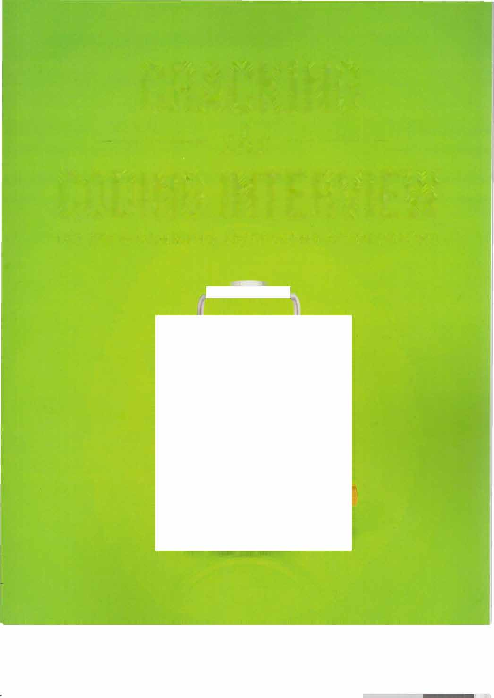
� CRACKING � · �THE CODING INTERVIEW
189 PERGUNTAS E SOLUÇÕES DE PROGRAMAÇÃO DOMINANDO A ENTREVISTA DE PROGRAMAÇÃO
THE
CODING INTERVIEW — DOMINANDO A ENTREVISTA DE PROGRAMAÇÃO
6ª EDIÇÃO
CRACKING THE PM INTERVIEW — DOMINANDO A ENTREVISTA DE PRODUCT MANAGER
COMO CONSEGUIR UM EMPREGO DE PRODUCT MANAGER EM TECNOLOGIA
CRACKING THE TECH CAREER — DOMINANDO A CARREIRA EM TECNOLOGIA
CONSELHOS DE QUEM CONHECE O MERCADO PARA CONSEGUIR UM EMPREGO NO GOOGLE, NA MICROSOFT, NA APPLE OU EM QUALQUER GRANDE EMPRESA DE TECNOLOGIA
CODING INTERVIEW — DOMINANDO A ENTREVISTA DE PROGRAMAÇÃO
6ª edição
189 perguntas e soluções de programação GAYLE LAAKMANN MCDOWELL
Fundadora e CEO, CareerCup.com
CareerCup, LLC
Palo Alto, CA
CRACKING THE CODING INTERVIEW — DOMINANDO A ENTREVISTA DE PROGRAMAÇÃO, 6ª EDIÇÃO
Copyright © 2015 CareerCup.
Todos os direitos reservados. Nenhuma parte deste livro pode ser reproduzida, sob qualquer forma, por meios eletrônicos ou me cânicos, incluindo sistemas de armazenamento e recuperação de informações, sem autorização por escrito da autora ou da editora, exceto por um resenhista, que poderá citar breves trechos em uma resenha.
Publicado por CareerCup, LLC, Palo Alto, CA. Compilado em 10 de fevereiro de 2016.
Para mais informações, entre em contato pelo e-mail support@careercup.com.
978-0-98478285-7 (ISBN 13)
Para Davis e Tobin,
e para todas as coisas que nos trazem alegria na vida.
Introdução
Introdução . . . . . . . . . . . . . . . . . . . . . . . . . . . . • · • . • · · • • · · • · · · · · · · · · · · · · · · · · 2
I. O processo de entrevista . . . . . . . . . . . . . . . . . . . . . . . . . . . . . . . . · . . · · . · · · · · · · · 4
Por quê? .... · .................................................... ····· 4
Como as perguntas são selecionadas .............................................. 6
Tudo é relativo . . . . . . . . . . . . . . . . . . . . . . . . . . . . . . . . . . . . . . . . . . . . . . . . . . . . . . . 7
Perguntas frequentes .............................................. 7
II. Nos bastidores . . . . . . . . . . . . . . . . . . . . . . . . . . . . . . . . . . . . . . . . . . . . . . . • . . . . . 8
A entrevista na Microsoft ................................................. 9
A entrevista na Amazon ............... , . . . . . . . . . . . . . . . . . . . . . . . . . . . . . . . . . 10
A entrevista no Google ................................................. 10
A entrevista na Apple .................................................. 11
A entrevista no Facebook . . . . . . . . . . . . . . . . . . . . . . . . . . . . . . . . . . . . . . . . . . . . . . . . 12
A entrevista na Palantir .................................................. 13
III. Situações especiais . . . . . . . . . . . . . . . . . . . . . . . . . . . . . . . . . . . . . . . . . . . . . . . . . 15
Candidatos experientes. . . . . . . . . . . . . . . . . . . . . . . . . . . . . . . . . . . . . . . . . . . . . . 15
Testadores e SDETs .................................................... 15
Gestão de produto (e de programas) ....................................... 16
Líderes e gestores de desenvolvimento. . . . . . . . . . . . . . . . . . . . . . . . . . . . . . . . . . . . . . . . . 17
Startups . . . . . . . . . . . . . . . . . . . . . . . . . . . . . . . . . . . . . . . . . . . . . . . . . . . . . . . . . . 18
Aquisições e acquihires ............................................. 19
Para entrevistadores ..................................................... 21
IV. Antes da entrevista . . . . . . . . . . . . . . . . . . . . . . . . . . . . . . . . . . . . . . . . . . . . . . . 26
Como adquirir a experiência certa ............................................. 26
Como escrever um ótimo currículo . . . . . . . . . . . . . . . . . . . . . . . . . . . . . . . . . . . . . . . . . 27
Mapa de preparação ..................................................... 30
V. Perguntas comportamentais . . . . . . . . . . . . . . . . • . . . . . . . . . . . . . . • . . . • . . . • . . . . . 32
Quadro de preparação para entrevistas .............................................. 32
Conheça seus projetos técnicos ............................................. 33
Como responder a perguntas comportamentais ........................................ 34
Então, fale um pouco sobre você... . . . . . . . . . . . . . . . . . . . . . . . . . . . . . . . . . . . . . . . . . . . . 36
VI. Big O ......................................................... 38
Uma analogia . . . . . . . . . . . . . . . . . . . . . . . . . . . . . . . . . . . . . . . . . . . . . . . . . . . . . . . . 38
Complexidade de tempo ..................................................... 38
Complexidade de espaço. . . . . . . . . . . . . . . . . . . . . . . . . . . . . . . . . . . . . . . . . . . . . . . . . . . . 40
Descarte as constantes ................................................... 41
Descarte os termos não dominantes ........................................... 42
VI Cracking the Coding Interview, 6ª edição
Introdução
Algoritmos com várias partes: somar versus multiplicar ...................................... 42
Tempo amortizado ............................................ · . . . . . . . . . 43
Tempos de execução log N ..................................................... 44
Tempos de execução recursivos ................................................... 44
Exemplos e exercícios ................................................ 45
VII. Perguntas técnicas . . . . . . . . . . . . . . . . . . . . . . . . . . . . . . . . . . . . . . . . . . . . . . . 60
Como se preparar . . . . . . . . . . . . . . . . . . . . . . . . . . . . . . . . . . . . . . . . . . . . . . . . . . . . . 60
O que você precisa saber. . . . . . . . . . . . . . . . . . . . . . . . . . . . . . . . . . . . . . . . . . . . . . . . 60
Percorrendo um problema passo a passo . . . . . . . . . . . . . . . . . . . . . . . . . . . . . . . . . . . . . . . . . 62
Técnica de otimização e resolução nº 1: procure o BUD .................................. 67
Técnica de otimização e resolução nº 2: DIY (faça você mesmo) .............................. 69
Técnica de otimização e resolução nº 3: simplifique e generalize ........................... 71
Técnica de otimização e resolução nº 4: caso-base e construção .............................. 71
Técnica de otimização e resolução nº 5: brainstorm de estruturas de dados. . . . . . . . . . . . . . . . . . . . . . . 72
Melhor tempo de execução concebível (BCR) ........................................... 72
Como lidar com respostas incorretas . . . . . . . . . . . . . . . . . . . . . . . . . . . . . . . . . . . . . . . . 76
Quando você já ouviu uma pergunta antes. . . . . . . . . . . . . . . . . . . . . . . . . . . . . . . . . . . . . . . 76
A linguagem “perfeita” para entrevistas . . . . . . . . . . . . . . . . . . . . . . . . . . . . . . . . . . . . . . . 76
Como é um bom código . . . . . . . . . . . . . . . . . . . . . . . . . . . . . . . . . . . . . . . . . . . . . . 77
Não desista! ...................................................... 81
VIII. A oferta e o que vem depois . . . . . . . . . . . . . . . . . . . . . . . . . . . . . . . . . . . . . . . . . . . . . . . 82
Como lidar com ofertas e rejeições . . . . . . . . . . . . . . . . . . . . . . . . . . . . . . . . . . . . . . . . . . . . 82
Como avaliar a oferta. . . . . . . . . . . . . . . . . . . . . . . . . . . . . . . . . . . . . . . . . . . . . . . . . . . 83
Negociação . . . . . . . . . . . . . . . . . . . . . . . . . . . . . . . . . . . . . . . . . . . . . . . . . . . . . . . . 84
No trabalho . . . . . . . . . . . . . . . . . . . . . . . . . . . . . . . . . . . . . . . . . . . . . . . . . . . . . . . . 85
IX. Perguntas de entrevista . . . . . . . . . . . . . . . . . . . . . . . . . . . . . . . . . . . . . . . . . . . . . . . 87
Estruturas de dados . . . . • . . . . . . . . . . . . . . . . . . . . . . . . . . . . . . . . . . . . . . . . . 88
Hash tables . .......................................................... 88
ArrayList e arrays redimensionáveis . ............................................... 89
StringBuilder . ......................................................... 89
Como criar uma linked list .................................................... 92
Como excluir um nó de uma singly linked list . ...................................... 93
A técnica dos “ponteiros corredores” .................................................. 93
Problemas recursivos . ..................................................... 93
CrackingTheCodinglnterview.com | 6ª edição VII Introdução
Como implementar uma stack . ................................................... 96
Como implementar uma queue . .................................................. 97
Tipos de árvores ........................................................ 100
Percurso de árvores binárias. . . . . . . . . . . . . . . . . . . . . . . . . . . . . . . . . . . . . . . . . . . . . . . . . . . . 103
Heaps binários (min-heaps e max-heaps) .................................... 103
Tries (árvores de prefixos). . . . . . . . . . . . . . . . . . . . . . . . . . . . . . . . . . . . . . . . . . . . . . . . . . . . . . 105
Grafos . ............................................................ 105
Busca em grafos ........................................................ 107
Conceitos e algoritmos ........................................... 112
Manipulação de bits à mão . . . . . . . . . . . . . . . . . . . . . . . . . . . . . . . . . . . . . . . . . . . . . . . . 112
Fatos e truques sobre bits . .................................................... 112
Complemento de dois e números negativos . .................................... 113
Deslocamento à direita aritmético versus lógico . .......................... � ................ 113
Operações comuns com bits: obter e definir . . . . . . . . . . . . . . . . . . . . . . . . . . . . . . . . . . . . . . . 114
Números primos . . . . . . . . . . . . . . . . . . . . . . . . . . . . . . . . . . . . . . . . . . . . . . . 117
Probabilidade . . . . . . . . . . . . . . . . . . . . . . . . . . . . . . . . . . . . . . . . . . . . . . . . . . 119
Comece a falar . . . . . . . . . . . . . . . . . . . . . . . . . . . . . . . . . . . . . . . . . . . . . . . . . . 121
Desenvolva regras e padrões . .............................................. 121
Deslocamento no pior caso . . . . . . . . . . . . . . . . . . . . . . . . . . . . . . . . . . . . . . . . . . . . . 122
Abordagens algorítmicas . . . . . . . . . . . . . . . . . . . . . . . . . . . . . . . . . . . . . . . . . . . . . . . 122
Como abordar o problema. . . . . . . . . . . . . . . . . . . . . . . . . . . . . . . . . . . . . . . . . . . . . . . . 125
Padrões de projeto . . . . . . . . . . . . . . . . . . . . . . . . . . . . . . . . . . . . . . . . . . . . . . . . . . 126
Como abordar o problema. . . . . . . . . . . . . . . . . . . . . . . . . . . . . . . . . . . . . . . . . . . . . . . . . . . . . . 130
Soluções recursivas versus iterativas . . . . . . . . . . . . . . . . . . . . . . . . . . . . . . . . . . . . . . . . . . . . . 131
Programação dinâmica e memoization . ...................................... 131
Como lidar com as perguntas ................................................. 137
Projeto: passo a passo ................................................... 138
Algoritmos escaláveis: passo a passo ......................................... 139
Conceitos fundamentais . ........................................................ 140
VI 11 Cracking the Coding Interview, 6ª edição
Introdução
Considerações ....................................................... 142
Não existe sistema “perfeito” ................................................ 143
Problema de exemplo ...................................................... 143
Algoritmos comuns de ordenação . . . . . . . . . . . . . . . . . . . . . . . . . . . . . . . . . . . . . . . . . . . . 146
Algoritmos de busca . .........•........................................ 149
Capítulo 11 | Testes ................................................... 152
O que o entrevistador procura . . . . . . . . . . . . . . . . . . . . . . . . . . . . . . . . . . . . . . . . . . . . . . . . . 152
Testando um objeto do mundo real . . . . . . . . . . . . . . . . . . . . . . . . . . . . . . . . . . . . . . . . . . . . . . . . 153
Testando uma parte de um software . . . . . . . . . . . . . . . . . . . . . . . . . . . . . . . . . . . . . . . . . . . . . . . 154
Testando uma função ..................................................... 155
Perguntas de diagnóstico ............................................... 156
Conhecimentos específicos ...•.............•.............................. 158
Capítulo 12 | C e C++ ................................................ 158
Classes e herança. . . . . . . . . . . . . . . . . . . . . . . . . . . . . . . . . . . . . . . . . . . . . . . . . . . 158
Construtores e destrutores .............................................. 159
Funções virtuais . . . . . . . . . . . . . . . . . . . . . . . . . . . . . . . . . . . . . . . . . . . . . . . . . . . . . 159
Destrutor virtual . . . . . . . . . . . . . . . . . . . . . . . . . . . . . . . . . . . . . . . . . . . . . . . . . . . . 160
Valores padrão. . . . . . . . . . . . . . . . . . . . . . . . . . . . . . . . . . . . . . . . . . . . . . . . . . . . . . . 161
Sobrecarga de operadores. . . . . . . . . . . . . . . . . . . . . . . . . . . . . . . . . . . . . . . . . . . . . . . . . . . 161
Ponteiros e referências . . . . . . . . . . . . . . . . . . . . . . . . . . . . . . . . . . . . . . . . . . . . . . . . . 162
Templates ........................................................... 163
Como abordar o problema. . . . . . . . . . . . . . . . . . . . . . . . . . . . . . . . . . . . . . . . . . . . . . . . . . . . . 165
Sobrecarga versus sobrescrita ............................................... 165
Framework de coleções . .................................................. 166
Sintaxe e variações de SQL ................................................ 169
Bancos de dados desnormalizados versus normalizados ...................................... 169
Instruções SQL. . . . . . . . . . . . . . . . . . . . . . . . . . . . . . . . . . . . . . . . . . . . . . . . . . . . . . . 169
Projeto de bancos de dados pequenos . ................................................. 171
Projeto de bancos de dados grandes .................................................. 172
Threads em Java ....................................................... 174
Sincronização e locks . . . . . . . . . . . . . . . . . . . . . . . . . . . . . . . . . . . . . . . . . . . . . . . . 176
Deadlocks e prevenção de deadlocks ......................................... 179
CrackingTheCodinglnterview.com | 6ª edição IX Introdução
Problemas adicionais para revisão . . • . . . . . . . . . . . . . . . . . . . . . . . . . . . . . . . . . . . . . . 181
X. Soluções . . . . . . . . . . . . . . . . . . . . . . . . . . . . • . . . . . . • . . . . . • . . . • , • • • • • 191
Estruturas de dados ..................................................... 192
Conceitos e algoritmos ............................................... 276
Conhecimentos específicos .................................................... 422
Problemas adicionais para revisão ............................................. 462
XI. Tópicos avançados . . . . . . . . . . . . . . . . . . . . . . . . . . . . . . • . . • . . . . . . . . . • . . . . . . 628
Matemática útil ........................................................ 629
Ordenação topológica ..................................................... 632
Algoritmo de Dijkstra ................................................... 633
Resolução de colisões em hash tables ........................................... 636
Busca de substring de Rabin-Karp ............................................. 636
Árvores AVL ......................................................... 637
Árvores rubro-negras ..................................................... 639
MapReduce ........................................................ 642
Estudos adicionais .................................................. 644
XII. Biblioteca de código . . . . . . . . . . . . . . . . . . . . . . . . . . . . . . . . . . . . . . . . . . . . . . . . . . . 645
HashMapList
TreeNode (árvore binária de busca) ............................................ 647
LinkedListNode (linked list) ............................................. 649
Trie & TrieNode ..................................................... 649
XIII. Dicas . . . . . . . . . . . . . . . . . . . . . . . . . . . . . . . . . . . . . . . . . . . . . . . . . . . . . . . . . 652
Dicas para estruturas de dados ................................................ 653
Dicas para conceitos e algoritmos ......................................... 662
Dicas para perguntas de conhecimentos específicos ....................................... 676
Dicas para problemas adicionais de revisão ....................................... 679
XIV. Sobre a autora . . . . . . . . . . . . . . . . . . . . . . . . . . . . . . . . . . . . . . . . . . . . . . . . 696
Junte-se a nós em www.CrackingTheCodinglnterview.com para baixar as soluções completas, contribuir ou consultar soluções em outras linguagens de programação, discutir os problemas deste livro com outros leitores, fazer perguntas, relatar problemas, consultar a errata do livro e buscar orientações adicionais.
X Cracking the Coding Interview, 6ª edição
Prefácio
Caro leitor, Vamos começar pelas apresentações.
Não sou recrutadora. Sou engenheira de software. Por isso, sei como é ter de criar algoritmos brilhantes na hora e depois escrever código impecável em um quadro branco. Sei porque já me pediram isso em entrevistas no Google, na Microsoft, na Apple e na Amazon, entre outras empresas.
Também sei porque já estive do outro lado da mesa, pedindo isso aos candidatos. Examinei pilhas de currículos para encontrar os engenheiros que, na minha opinião, seriam capazes de passar nessas entrevistas. Avaliei esses candidatos enquanto resolviam — ou tentavam resolver — questões desafiadoras. E debati, no Comitê de Contratação do Google, se o desempenho de um candidato justificava uma oferta. Entendo todo o ciclo de contratação porque já passei por todas essas etapas, repetidas vezes.
E você, leitor, provavelmente está se preparando para uma entrevista, seja amanhã, na próxima semana ou no próximo ano. Estou aqui para ajudar você a consolidar sua compreensão dos fundamentos da ciência da computação e depois aprender a aplicá-los para se sair bem na entrevista de programação.
A 6ª edição de Cracking the Coding Interview atualiza a 5ª edição com 70% mais conteúdo: questões adicionais, soluções revisadas, novas introduções de capítulos, mais estratégias de algoritmos, dicas para todos os problemas e outros conteúdos. Não deixe de visitar nosso site, CrackingTheCodinglnterview.com, para se conectar com outros candidatos e descobrir novos recursos.
Estou animada por você e pelas habilidades que você vai desenvolver. Uma preparação cuidadosa lhe dará uma ampla variedade de habilidades técnicas e de comunicação. Vai valer muito a pena, seja qual for o caminho a que esse esforço levar!
Recomendo que você leia com atenção estes capítulos introdutórios. Eles contêm informações importantes que podem fazer a diferença entre uma decisão de contratar e uma de não contratar.
E lembre-se: entrevistas são difíceis! Nos anos em que entrevistei candidatos no Google, vi entrevistadores fazerem perguntas “fáceis”, enquanto outros faziam perguntas mais difíceis. Mas sabe de uma coisa? Receber as perguntas fáceis não facilita conseguir a oferta. Receber uma oferta não depende de resolver as questões perfeitamente (pouquíssimos candidatos conseguem!). Depende, sim, de responder às perguntas melhor do que os outros candidatos. Portanto, não se estresse quando receber uma pergunta complicada: provavelmente todos os outros também a acharam difícil. Tudo bem não ser perfeito.
Estude bastante, pratique — e boa sorte!
Gayle L. McDowell Fundadora/CEO, CareerCup.com Autora de Cracking the PM Interview e Cracking the Tech Career
CrackingTheCodinglnterview.com J 6ª edição Introdução
Algo está errado
Saímos frustrados da reunião de contratação — de novo. Dos dez candidatos que avaliamos naquele dia, nenhum receberia uma oferta. Estávamos sendo rigorosos demais?
Eu estava particularmente decepcionada. Havíamos rejeitado um dos meus candidatos. Um ex-aluno. Alguém que eu havia indicado. Ele tinha uma média acadêmica de 3,73 na Universidade de Washington, uma das melhores instituições de ciência da computação do mundo, e havia trabalhado bastante em projetos de código aberto. Tinha energia. Era criativo. Era perspicaz. Trabalhava duro. Era um verdadeiro geek, no melhor sentido da palavra.
Mas eu precisava concordar com o restante do comitê: as evidências não sustentavam a contratação. Mesmo que minha recomendação enfática os convencesse a reconsiderar, ele certamente seria rejeitado nas etapas seguintes do processo seletivo. Havia simplesmente sinais de alerta demais.
Embora fosse muito inteligente, ele teve dificuldade para resolver os problemas da entrevista. A maioria dos candidatos bem-sucedidos resolvia rapidamente a primeira questão, uma variação de um problema conhecido, mas ele teve dificuldade para desenvolver um algoritmo. Quando chegou a um, deixou de considerar soluções otimizadas para outros cenários. Por fim, quando começou a programar, escreveu rapidamente o código de uma solução inicial, mas ele estava cheio de erros que não percebeu. Embora estivesse longe de ser o pior candidato que já havíamos visto, estava bem abaixo do nível exigido. Rejeitado.
Quando ele me pediu um retorno por telefone algumas semanas depois, tive dificuldade para decidir o que dizer. Ser mais inteligente? Não, eu sabia que ele era brilhante. Programar melhor? Não, suas habilidades estavam no nível de algumas das melhores que eu já havia visto.
Como muitos candidatos motivados, ele havia se preparado bastante. Tinha lido o clássico livro de C de K&R e revisado o famoso livro de algoritmos de CLRS. Sabia descrever em detalhes as inúmeras maneiras de balancear uma árvore e conseguia fazer coisas em C que nenhum programador em sã consciência deveria querer fazer.
Eu precisava lhe dizer a triste verdade: aqueles livros não bastam. Livros acadêmicos preparam você para pesquisas sofisticadas e provavelmente vão torná-lo um engenheiro de software melhor, mas não são suficientes para entrevistas. Por quê? Vou dar uma dica: seus entrevistadores também não veem árvores rubro-negras desde que eles estavam na faculdade.
Para se sair bem na entrevista de programação, você precisa se preparar com questões reais de entrevistas. Precisa praticar com problemas reais e aprender seus padrões. O objetivo é desenvolver um algoritmo novo, não memorizar problemas existentes.
Cracking the Coding Interview é fruto da minha experiência pessoal em entrevistas nas principais empresas e, mais tarde, preparando candidatos para essas entrevistas. É fruto de centenas de conversas com candidatos. É fruto das milhares de questões enviadas por candidatos e entrevistadores. E é fruto de ter visto tantas questões de entrevistas de tantas empresas. Este livro reúne 189 das melhores questões de entrevistas, selecionadas entre milhares de problemas possíveis.
Minha abordagem
O foco de Cracking the Coding Interview são questões de algoritmos, programação e projeto. Por quê? Porque, embora você possa receber — e vá receber — perguntas comportamentais, as respostas serão tão variadas quanto os currículos. Da mesma forma, embora muitas empresas façam perguntas de conhecimentos específicos (por exemplo, “O que é uma função virtual?”), as habilidades desenvolvidas ao praticar essas questões se limitam a conhecimentos muito específicos. O livro abordará brevemente algumas dessas questões para mostrar como elas são, mas optei por dedicar espaço a áreas em que há mais a aprender.
2 Cracking the Coding Interview, 6ª edição
Introdução
Minha paixão
Ensinar é minha paixão. Eu adoro ajudar as pessoas a entender novos conceitos e dar a elas ferramentas para se destacarem naquilo que as apaixona.
Minha primeira experiência oficial com o ensino foi na Universidade da Pensilvânia, quando me tornei monitora de uma disciplina de graduação em ciência da computação, no meu segundo ano. Depois, fui monitora de várias outras disciplinas e, por fim, criei meu próprio curso de ciência da computação lá, com foco em habilidades práticas.
Como engenheira no Google, treinar e orientar novos engenheiros estavam entre as atividades de que eu mais gostava. Eu até usei meu “tempo de 20%” para ministrar dois cursos de ciência da computação na Universidade de Washington.
Hoje, anos depois, continuo ensinando conceitos de ciência da computação, mas desta vez com o objetivo de preparar engenheiros de startups para as entrevistas realizadas em processos de aquisição. Vi seus erros e dificuldades e desenvolvi técnicas e estratégias para ajudá-los a enfrentar exatamente esses problemas.
Cracking the Coding Interview, Cracking the PM Interview, Cracking the Tech Career, e CareerCup refletem minha paixão por ensinar. Mesmo hoje, você pode me encontrar com frequência no CareerCup.com, ajudando os usuários que passam por lá em busca de orientação.
Junte-se a nós.
Gayle L. McDowell CrackingTheCodinglnterview.com \ 6ª edição 3
O processo de entrevista
Na maioria das principais empresas de tecnologia (e em muitas outras empresas), problemas de algoritmos e programação constituem a maior parte do processo de entrevista. Encare-os como questões de resolução de problemas. O entrevistador quer avaliar sua capacidade de resolver problemas algorítmicos que você nunca viu antes.
Muitas vezes, você só conseguirá resolver uma questão durante uma entrevista. Quarenta e cinco minutos não é muito tempo, e é difícil abordar várias questões diferentes nesse intervalo.
Faça o possível para pensar em voz alta durante a resolução do problema e explicar seu raciocínio. Seu entrevistador pode intervir às vezes para ajudar; aceite a ajuda. Isso é normal e não significa necessariamente que você esteja indo mal. (Dito isso, é claro que não precisar de dicas é ainda melhor.) Ao final da entrevista, o entrevistador terá uma impressão geral do seu desempenho. Talvez atribua uma nota a ele, mas isso não é, de fato, uma avaliação quantitativa. Não existe uma tabela que diga quantos pontos você ganha por cada coisa. Simplesmente não funciona assim.
Em vez disso, seu entrevistador avaliará seu desempenho, normalmente com base nos seguintes aspectos: Capacidade analítica: você precisou de muita ajuda para resolver o problema? Quão próxima do ideal foi sua solução? Quanto tempo levou para chegar a uma solução? Se precisou projetar ou arquitetar uma nova solução, você estruturou bem o problema e refletiu sobre os trade-offs das diferentes decisões?
Habilidade de programação: você conseguiu transformar seu algoritmo em um código razoável? Ele era limpo e bem organizado? Você pensou nos possíveis erros? Usou um bom estilo de programação?
Conhecimento técnico / fundamentos de ciência da computação: você tem uma base sólida em ciência da computação e nas tecnologias pertinentes?
Experiência: você tomou boas decisões técnicas no passado? Desenvolveu projetos interessantes e desafiadores? Demonstrou determinação, iniciativa e outras qualidades importantes?
Compatibilidade com a cultura / habilidade de comunicação: sua personalidade e seus valores combinam com a empresa e a equipe? Você se comunicou bem com o entrevistador?
O peso desses aspectos varia conforme a questão, o entrevistador, a função, a equipe e a empresa. Em uma questão típica de algoritmos, a avaliação pode se concentrar quase inteiramente nos três primeiros.
.- Por quê?
Essa é uma das perguntas mais comuns dos candidatos ao começarem esse processo. Por que fazer as coisas dessa forma? Afinal, 1. Muitos ótimos candidatos não se saem bem nesse tipo de entrevista.
4 Cracking the Coding Interview, 6ª edição
I I O processo de entrevista 2. Você poderia pesquisar a resposta caso o problema realmente surgisse.
3. No mundo real, raramente é preciso usar estruturas de dados como árvores binárias de busca. Se fosse necessário, certamente você poderia aprender a usá-las.
4. Programar em um quadro branco é uma situação artificial. É óbvio que, no mundo real, você nunca programaria em um quadro branco.
Essas reclamações têm fundamento. Na verdade, concordo com todas elas, pelo menos em parte.
Ao mesmo tempo, há motivos para fazer as coisas dessa forma em algumas vagas — não em todas. Você não precisa concordar com essa lógica, mas é bom entender por que essas questões são feitas. Isso ajuda a compreender um pouco a maneira de pensar do entrevistador.
Falsos negativos são aceitáveis.
É triste (e frustrante para os candidatos), mas é verdade.
Do ponto de vista da empresa, é aceitável que alguns bons candidatos sejam rejeitados. A empresa quer formar um excelente quadro de funcionários. Ela aceita deixar escapar algumas pessoas boas. Claro que preferiria não fazer isso, pois aumenta seus custos de recrutamento. Mas é um trade-off aceitável, desde que ainda consiga contratar um número suficiente de boas pessoas.
Sua preocupação é muito maior com os falsos positivos: pessoas que se saem bem na entrevista, mas que, na verdade, não são muito boas.
A capacidade de resolver problemas é valiosa.
Se você consegue resolver vários problemas difíceis (talvez com alguma ajuda), provavelmente é muito bom em desenvolver algoritmos ótimos. Você é inteligente.
Pessoas inteligentes tendem a fazer coisas boas, e isso tem valor em uma empresa. É claro que não é a única coisa que importa, mas é uma qualidade muito positiva.
Conhecimentos básicos de estruturas de dados e algoritmos são úteis.
Muitos entrevistadores argumentariam que conhecimentos básicos de ciência da computação são, de fato, úteis. Entender árvores, grafos, listas, ordenação e outros assuntos faz diferença de tempos em tempos. Quando isso acontece, esse conhecimento é muito valioso.
Você poderia aprender conforme a necessidade? Claro. Mas é muito difícil saber que deveria usar uma árvore binária de busca se você não sabe que ela existe. E, se sabe que ela existe, provavelmente já conhece o básico.
Outros entrevistadores justificam o uso de estruturas de dados e algoritmos afirmando que eles são um bom “indicador indireto”. Mesmo que essas habilidades não sejam tão difíceis de aprender por conta própria, eles dizem que há uma correlação razoável entre dominá-las e ser um bom desenvolvedor. Isso significa que você fez um curso de ciência da computação (e, nesse caso, aprendeu e reteve um conjunto razoavelmente amplo de conhecimentos técnicos) ou aprendeu tudo isso por conta própria. De qualquer forma, é um bom sinal.
Há outro motivo para os conhecimentos de estruturas de dados e algoritmos aparecerem nas entrevistas: é difícil elaborar questões de resolução de problemas que não os envolvam. Acontece que a grande maioria dessas questões envolve alguns desses fundamentos. Quando um número suficiente de candidatos conhece esses fundamentos, é fácil criar o hábito de fazer questões que os utilizem.
CrackingTheCodinglnterview.com I 6ª edição S 1 I O processo de entrevista
O quadro branco permite que você se concentre no que importa.
É verdade que você teria dificuldade para escrever um código perfeito em um quadro branco. Felizmente, seu entrevistador não espera isso. Praticamente todo mundo comete alguns bugs ou pequenos erros de sintaxe.
O lado bom do quadro branco é que, de certa forma, ele permite focar no panorama geral. Você não tem um compilador, portanto não precisa fazer o código compilar. Não precisa escrever toda a definição da classe nem o código padronizado de preparação. Pode se concentrar nas partes interessantes e substanciais do código: a função que constitui o verdadeiro foco da questão.
Isso não significa que você deva escrever apenas pseudocódigo ou que a correção não importe. A maioria dos entrevistadores não aceita pseudocódigo, e quanto menos erros, melhor.
O quadro branco também costuma incentivar os candidatos a falar mais e explicar seu raciocínio. Quando o candidato recebe um computador, sua comunicação diminui consideravelmente.
Mas isso não serve para todas as pessoas, empresas ou situações.
As seções anteriores têm o objetivo de ajudar você a entender o raciocínio da empresa.
Minha opinião? Na situação certa, quando bem conduzida, essa abordagem avalia razoavelmente a capacidade de resolver problemas, no sentido de que quem se sai bem costuma ser bastante inteligente.
No entanto, muitas vezes ela não é muito bem conduzida. Há entrevistadores ruins ou pessoas que simplesmente fazem perguntas ruins.
Também não é adequada para todas as empresas. Algumas deveriam valorizar mais a experiência anterior do candidato ou precisam de habilidades com tecnologias específicas. Esse tipo de questão não dá muito peso a isso.
Essa abordagem tampouco mede a ética de trabalho ou a capacidade de concentração de alguém. Por outro lado, quase nenhum processo de entrevista consegue realmente avaliar essas qualidades.
Esse processo está longe de ser perfeito, mas qual é? Todos os processos de entrevista têm suas desvantagens.
Deixo esta reflexão: as coisas são assim, então vamos fazer o melhor possível com o que temos.
� Como as questões são selecionadas
Os candidatos frequentemente perguntam quais são as questões “recentes” de entrevista de determinada empresa. Só de fazer essa pergunta, já demonstram um equívoco fundamental sobre a origem das questões.
Na grande maioria das empresas, não há listas de perguntas que os entrevistadores devam fazer. Em vez disso, cada entrevistador escolhe suas próprias questões.
Como a escolha das questões é relativamente livre, o único motivo para chamar uma questão de “questão recente de entrevista do Google” é o fato de algum entrevistador que trabalha no Google ter feito essa pergunta recentemente.
As questões feitas no Google neste ano não diferem muito das de três anos atrás. Na verdade, as questões feitas no Google geralmente não diferem das feitas em empresas semelhantes (Amazon, Facebook etc.).
Há algumas diferenças gerais entre as empresas. Algumas se concentram em algoritmos (muitas vezes com algumas questões de projeto de sistemas), enquanto outras gostam bastante de questões de conhecimento. Mas, dentro de uma determinada categoria de questão, pouco faz com que ela “pertença” a uma empresa em vez de outra. Uma questão de algoritmos do Google é essencialmente igual a uma questão de algoritmos do Facebook.
6 Cracking the Coding Interview, 6ª edição
11 O processo de entrevista � Tudo é relativo
Se não existe um sistema de notas, como você é avaliado? Como o entrevistador sabe o que esperar de você?
Boa pergunta. A resposta faz bastante sentido depois que você a entende.
O entrevistador avalia você em relação a outros candidatos aos quais ele fez a mesma pergunta. É uma comparação relativa.
Por exemplo, suponha que você tenha criado um desafio de lógica ou um problema de matemática interessante. Você faz a pergunta ao seu amigo Alex, e ele leva 30 minutos para resolvê-la. Bella leva 50 minutos. Chris não consegue resolver. Dexter leva 15 minutos, mas você precisou dar dicas importantes, e ele provavelmente teria levado muito mais tempo sem elas. Ellie leva 10 — e ainda apresenta uma abordagem alternativa na qual você nem havia pensado. Fred leva 35 minutos.
Você sairá pensando: “Uau, Ellie se saiu muito bem. Aposto que ela é boa em matemática.” (Claro que ela pode ter apenas dado sorte. E talvez Chris tenha dado azar. Você pode fazer mais algumas perguntas para ter certeza de que não foi sorte ou azar.) As questões de entrevista funcionam de forma muito parecida. A entrevistadora forma uma impressão do seu desempenho comparando você com outras pessoas. A referência não são apenas os candidatos que ela está entrevistando naquela semana. São todos os candidatos aos quais ela já fez essa pergunta.
Por isso, receber uma questão difícil não é algo ruim. Quando ela é mais difícil para você, também é mais difícil para todos. Isso não diminui suas chances de se sair bem.
� Perguntas frequentes
Não recebi uma resposta imediatamente depois da entrevista. Fui rejeitado?
Não. Há vários motivos para a decisão de uma empresa demorar. Uma explicação muito simples é que um dos entrevistadores ainda não enviou sua avaliação. Pouquíssimas empresas têm a política de não responder aos candidatos rejeitados.
Se a empresa não responder em até 3 a 5 dias úteis após a entrevista, entre em contato (educadamente) com seu recrutador.
Posso me candidatar novamente a uma empresa depois de ser rejeitado?
Quase sempre, mas em geral é preciso esperar um pouco (de 6 meses a 1 ano). Uma primeira entrevista ruim normalmente não terá grande peso quando você for entrevistado novamente. Muitas pessoas são rejeitadas pelo Google ou pela Microsoft e mais tarde recebem propostas dessas empresas.
CrackingTheCodinglnterview.com 6ª edição 7 I
Nos bastidores
A maioria das empresas conduz suas entrevistas de maneiras muito semelhantes. Apresentaremos uma visão geral de como as empresas entrevistam e do que procuram. Essas informações devem orientar sua preparação para as entrevistas e suas reações durante e depois delas.
Depois de ser selecionado para uma entrevista, você geralmente passa por uma entrevista de triagem. Ela costuma ser realizada por telefone. Candidatos universitários de instituições de destaque podem fazer essas entrevistas presencialmente.
Não se deixe enganar pelo nome: a entrevista de “triagem” frequentemente envolve questões de programação e algoritmos, e o nível de exigência pode ser tão alto quanto nas entrevistas presenciais. Se não souber se a entrevista será técnica, pergunte ao responsável pelo recrutamento qual é o cargo do entrevistador (ou quais assuntos a entrevista poderá abordar). Um engenheiro geralmente conduzirá uma entrevista técnica.
Muitas empresas utilizam editores de documentos sincronizados on-line, mas outras esperam que você escreva código no papel e o leia pelo telefone. Alguns entrevistadores podem até passar uma “tarefa de casa” para resolver depois da ligação ou simplesmente pedir que envie por e-mail o código que escreveu.
Normalmente, você passa por uma ou duas entrevistas de triagem antes de ser chamado para uma entrevista no local.
Em uma rodada de entrevistas no local, você geralmente tem de 3 a 6 entrevistas presenciais. Uma delas costuma ocorrer durante o almoço. A entrevista no almoço geralmente não é técnica, e o entrevistador talvez nem apresente uma avaliação. Essa é uma boa pessoa com quem conversar sobre seus interesses e a quem perguntar sobre a cultura da empresa. As outras entrevistas serão predominantemente técnicas e envolverão uma combinação de questões de programação, algoritmos, projeto/arquitetura e questões comportamentais ou sobre sua experiência.
A distribuição das perguntas entre esses temas varia entre empresas e até entre equipes, devido às prioridades e ao tamanho da empresa, além do simples acaso. Os entrevistadores costumam ter bastante liberdade para escolher suas perguntas.
Após a entrevista, os entrevistadores apresentarão suas avaliações de alguma forma. Em algumas empresas, os entrevistadores se reúnem para discutir seu desempenho e chegar a uma decisão. Em outras, os entrevistadores enviam uma recomendação a um gerente responsável pela contratação ou a um comitê de contratação, que toma a decisão final. Em algumas empresas, os entrevistadores nem sequer tomam a decisão: suas avaliações são encaminhadas a um comitê de contratação, que decide.
A maioria das empresas retorna após cerca de uma semana com os próximos passos (proposta, rejeição, novas entrevistas ou apenas uma atualização do processo). Algumas respondem muito antes (às vezes no mesmo dia!), enquanto outras demoram muito mais.
Se já esperou mais de uma semana, entre em contato com seu recrutador. Se ele não responder, isso não significa que você foi rejeitado (pelo menos em nenhuma grande empresa de tecnologia, e em praticamente 8 Cracking the Coding Interview — Dominando a Entrevista de Programação, 6ª edição
II | Nos bastidores nenhuma outra empresa). Vou repetir: a ausência de resposta não indica nada sobre sua situação. A orientação é que todos os recrutadores avisem os candidatos assim que uma decisão final for tomada.
Atrasos podem acontecer, e acontecem. Entre em contato com seu recrutador se suspeitar de um atraso, mas seja respeitoso ao fazê-lo. Recrutadores são como você: também ficam ocupados e se esquecem das coisas.
▸ A entrevista da Microsoft
A Microsoft quer pessoas inteligentes. Geeks. Pessoas apaixonadas por tecnologia. Provavelmente, você não será avaliado nos detalhes das APIs de C++, mas deverá escrever código no quadro.
Em uma entrevista típica, você chega à Microsoft em algum momento da manhã e preenche a documentação inicial. Terá uma breve entrevista com um recrutador, que apresentará uma questão de exemplo. Em geral, o recrutador está ali para prepará-lo, e não para submetê-lo a perguntas técnicas difíceis. Se ele fizer algumas perguntas técnicas básicas, talvez queira ajudá-lo a entrar no ritmo da entrevista para que fique menos nervoso quando a entrevista “de verdade” começar.
Seja gentil com seu recrutador. Ele pode ser seu maior defensor, chegando até a insistir em uma nova entrevista caso você tenha tropeçado na primeira. Ele pode lutar por sua contratação — ou não!
Ao longo do dia, você fará quatro ou cinco entrevistas, frequentemente com duas equipes diferentes. Ao contrário de muitas empresas, nas quais você encontra os entrevistadores em uma sala de reuniões, na Microsoft você os encontrará em seus próprios escritórios. Essa é uma ótima oportunidade para observar o ambiente e perceber a cultura da equipe.
Dependendo da equipe, os entrevistadores podem ou não compartilhar suas avaliações sobre você com os demais participantes da rodada de entrevistas.
Ao concluir as entrevistas com uma equipe, talvez você converse com um gerente responsável pela contratação (frequentemente chamado de “as app”, abreviação de “as appropriate”, ou “conforme apropriado”). Se isso acontecer, é um ótimo sinal! Provavelmente significa que você passou nas entrevistas com uma determinada equipe. Agora, tudo depende da decisão desse gerente.
Você pode receber uma resposta no mesmo dia, ou pode levar uma semana. Após uma semana sem notícias do RH, envie um e-mail cordial pedindo uma atualização.
Se sua recrutadora não estiver respondendo prontamente, é porque está ocupada, e não porque você esteja sendo rejeitado em silêncio.
Prepare-se sem falta:
“Por que você quer trabalhar na Microsoft?”
Com essa pergunta, a Microsoft quer perceber sua paixão por tecnologia. Uma ótima resposta seria: “Uso os programas da Microsoft desde que me entendo por gente e fico muito impressionado com a forma como a Microsoft consegue criar um produto excelente em todos os aspectos. Por exemplo, recentemente tenho usado o Visual Studio para aprender programação de jogos, e suas APIs são excelentes.” Observe como isso demonstra paixão por tecnologia!
O que há de particular:
Você só chegará ao gerente responsável pela contratação se tiver se saído bem. Portanto, se isso acontecer, é um ótimo sinal!
Além disso, a Microsoft costuma dar mais autonomia a cada equipe, e seu conjunto de produtos é diversificado. As experiências podem variar bastante dentro da Microsoft, pois equipes diferentes procuram coisas diferentes.
CrackingTheCodinglnterview.com | 6ª edição 9 II | Nos bastidores
▸ A entrevista da Amazon
O processo de recrutamento da Amazon normalmente começa com uma triagem por telefone, na qual o candidato é entrevistado por uma equipe específica. Em uma pequena parcela dos casos, o candidato pode ter duas ou mais entrevistas, o que pode indicar que um dos entrevistadores não ficou convencido ou que ele está sendo considerado para outra equipe ou perfil. Em casos mais incomuns, como quando o candidato mora na região ou foi entrevistado recentemente para outra vaga, ele pode fazer apenas uma triagem por telefone.
O engenheiro que o entrevistar geralmente pedirá que escreva um código simples em um editor de documentos compartilhado. Também costuma fazer perguntas variadas para explorar as áreas de tecnologia com as quais você tem familiaridade.
Em seguida, você viaja para Seattle (ou para o escritório da vaga) para fazer quatro ou cinco entrevistas com uma ou duas equipes que o selecionaram com base no currículo e nas entrevistas por telefone. Você terá de programar em um quadro branco, e alguns entrevistadores enfatizarão outras habilidades. Cada entrevistador recebe uma área específica para investigar, e eles podem parecer muito diferentes entre si. Não podem ver as outras avaliações antes de enviar a própria, e são orientados a não discuti-las antes da reunião de contratação.
O entrevistador chamado de “bar raiser” tem a responsabilidade de manter alto o nível de exigência das entrevistas. Ele recebe treinamento específico e entrevista candidatos de fora de seu grupo para contrabalançar a perspectiva do próprio grupo. Se uma entrevista parecer significativamente mais difícil e diferente, provavelmente é a do bar raiser. Essa pessoa tem bastante experiência em entrevistas e poder de veto na decisão de contratação. Lembre-se, porém: o simples fato de sentir mais dificuldade nessa entrevista não significa que esteja se saindo pior. Seu desempenho é avaliado em relação ao dos outros candidatos, e não com base em uma simples “porcentagem de acertos”.
Depois que os entrevistadores registrarem suas avaliações, eles se reunirão para discuti-las. Serão eles que tomarão a decisão de contratação.
Embora os recrutadores da Amazon geralmente sejam excelentes em dar retorno aos candidatos, ocasionalmente há atrasos. Se não receber notícias da Amazon em uma semana, recomendamos enviar um e-mail cordial.
Prepare-se sem falta:
A Amazon se preocupa muito com escala. Prepare-se para perguntas sobre escalabilidade. Você não precisa ter experiência em sistemas distribuídos para respondê-las. Veja nossas recomendações no capítulo Projeto de sistemas e escalabilidade.
Além disso, a Amazon costuma fazer muitas perguntas sobre projeto orientado a objetos. Consulte o capítulo Projeto orientado a objetos para ver exemplos de perguntas e sugestões.
O que há de particular:
O bar raiser vem de outra equipe para manter alto o nível de exigência. Você precisa impressionar tanto essa pessoa quanto o gerente responsável pela contratação.
A Amazon costuma experimentar mais com seu processo de contratação do que outras empresas. O processo descrito aqui é a experiência típica, mas, devido a essas experiências da Amazon, ele não é necessariamente universal.
▸ A entrevista do Google
Circulam muitos rumores assustadores sobre as entrevistas do Google, mas a maioria não passa disso: rumores. A entrevista não é muito diferente das da Microsoft ou da Amazon.
10 Cracking the Coding Interview — Dominando a Entrevista de Programação, 6ª edição
II | Nos bastidores Um engenheiro do Google conduz a primeira triagem por telefone; portanto, espere perguntas técnicas difíceis. Essas perguntas podem envolver programação, às vezes em um documento compartilhado. Normalmente, o padrão de exigência e as perguntas das triagens por telefone são semelhantes aos das entrevistas presenciais.
Na entrevista no local, você será entrevistado por quatro a seis pessoas, uma delas durante o almoço. As avaliações são mantidas em sigilo entre os entrevistadores, então você pode ter certeza de que começa cada entrevista sem que a anterior influencie o entrevistador. O entrevistador do almoço não envia uma avaliação; essa é uma ótima oportunidade para fazer perguntas francas.
Em geral, os entrevistadores não recebem temas específicos, e não há uma “estrutura” ou um “sistema” que determine o que será perguntado em cada momento. Cada entrevistador pode conduzir a entrevista como preferir.
As avaliações escritas são enviadas a um comitê de contratação (HC), composto por engenheiros e gerentes, para recomendar a contratação ou a rejeição. A avaliação costuma ser dividida em quatro categorias (capacidade analítica, programação, experiência e comunicação), e você recebe uma nota geral de 1,0 a 4,0. O HC normalmente não inclui nenhum dos seus entrevistadores. Se incluir, será por puro acaso.
Para recomendar uma proposta, o HC quer ver pelo menos um entrevistador que defenda sua contratação com entusiasmo. Em outras palavras, um conjunto de avaliações com notas 3,6, 3,1, 3,1 e 2,6 é melhor do que um com todas as notas iguais a 3,1.
Você não precisa necessariamente se destacar em todas as entrevistas, e seu desempenho na triagem por telefone geralmente não tem grande peso na decisão final.
Se o comitê de contratação recomendar uma proposta, seu conjunto de avaliações irá para um comitê de remuneração e, depois, para o comitê de direção executiva. A resposta pode levar várias semanas, pois há muitas etapas e comitês.
Prepare-se sem falta:
Como empresa baseada na Web, o Google se preocupa com o projeto de sistemas escaláveis. Portanto, prepare-se para perguntas do capítulo Projeto de sistemas e escalabilidade.
O Google dá grande importância às habilidades analíticas (algoritmos), independentemente da experiência. Você deve estar muito bem preparado para essas perguntas, mesmo que ache que sua experiência anterior deveria valer mais.
O que há de diferente:
Seus entrevistadores não tomam a decisão de contratação. Eles registram avaliações, que são encaminhadas a um comitê de contratação. Esse comitê recomenda uma decisão, que pode ser — embora raramente seja — rejeitada pelos executivos do Google.
▸ A entrevista da Apple
Assim como a própria empresa, o processo de entrevistas da Apple tem pouca burocracia. Os entrevistadores procuram excelentes habilidades técnicas, mas a paixão pela vaga e pela empresa também é muito importante. Embora ser usuário de Mac não seja um pré-requisito, você deve pelo menos conhecer o sistema.
O processo de entrevistas normalmente começa com uma triagem por telefone feita por um recrutador para ter uma noção básica de suas habilidades, seguida por uma série de triagens técnicas por telefone com membros da equipe.
Ao ser convidado para visitar a empresa, você normalmente será recebido pelo recrutador, que apresentará uma visão geral do processo. Em seguida, terá de 6 a 8 entrevistas com membros da equipe da vaga, assim como com pessoas importantes com quem essa equipe trabalha.
CrackingTheCodinglnterview.com | 6ª edição 11 II | Nos bastidores
Espere uma combinação de entrevistas com um e com dois entrevistadores. Esteja preparado para programar em um quadro branco e comunique todos os seus raciocínios com clareza. O almoço será com seu possível futuro gerente e parecerá mais informal, mas ainda será uma entrevista. Cada entrevistador costuma se concentrar em uma área diferente e é orientado a não compartilhar avaliações com os demais, a menos que haja algo que deseje que os entrevistadores seguintes investiguem mais a fundo.
Perto do fim do dia, os entrevistadores compararão suas anotações. Se todos ainda o considerarem um candidato viável, você terá uma entrevista com o diretor e com o vice-presidente da organização para a qual se candidatou. Embora essa decisão seja bastante informal, chegar a essa etapa é um ótimo sinal. A decisão também acontece nos bastidores e, se você não passar, simplesmente será acompanhado até a saída do prédio sem sequer saber o que aconteceu (até agora).
Se chegar às entrevistas com o diretor e o vice-presidente, todos os entrevistadores se reunirão em uma sala para dar oficialmente seu parecer favorável ou contrário. O vice-presidente normalmente não estará presente, mas ainda poderá vetar a contratação se não tiver ficado impressionado. Seu recrutador geralmente dará retorno alguns dias depois, mas sinta-se à vontade para pedir atualizações.
Prepare-se sem falta:
Se souber com qual equipe será entrevistado, informe-se sobre o produto dela. Do que você gosta nele? O que melhoraria? Fazer recomendações específicas pode demonstrar seu entusiasmo pelo trabalho.
O que há de particular:
A Apple costuma fazer entrevistas com dois entrevistadores, mas não fique nervoso com isso: é como uma entrevista com apenas um!
Além disso, os funcionários da Apple são grandes fãs da empresa. Você deve demonstrar essa mesma paixão na entrevista.
▸ A entrevista do Facebook
Depois de selecionados, os candidatos geralmente passam por uma ou duas triagens por telefone. Essas triagens serão técnicas e envolverão programação, geralmente em um editor de documentos on-line.
Após as entrevistas por telefone, talvez você receba uma tarefa para fazer em casa, que incluirá uma combinação de programação e algoritmos. Preste atenção ao seu estilo de programação. Se nunca trabalhou em um ambiente com revisões de código criteriosas, pode ser uma boa ideia pedir a alguém com essa experiência que revise seu código.
Durante a entrevista no local, você será entrevistado principalmente por outros engenheiros de software, mas os gerentes responsáveis pela contratação também participam quando estão disponíveis. Todos os entrevistadores passaram por um treinamento abrangente, e a identidade de quem o entrevista não afeta suas chances de receber uma proposta.
Cada entrevistador recebe um “papel” durante as entrevistas no local, o que ajuda a evitar perguntas repetidas e a formar uma visão completa do candidato. Esses papéis são: Comportamental (“Jedi”): essa entrevista avalia sua capacidade de ter sucesso no ambiente do Facebook. Você se adaptaria bem à cultura e aos valores? O que o entusiasma? Como enfrenta desafios? Prepare-se também para falar sobre seu interesse pelo Facebook. A empresa quer pessoas apaixonadas pelo que fazem. Você também poderá receber algumas perguntas de programação nessa entrevista.
Programação e algoritmos (“Ninja”): são as perguntas habituais de programação e algoritmos, semelhantes às que você encontrará neste livro. Elas foram elaboradas para serem desafiadoras. Você pode usar qualquer linguagem de programação que quiser.
12 Cracking the Coding Interview — Dominando a Entrevista de Programação, 6ª edição
II | Nos bastidores Projeto/arquitetura (“Pirata”): se você for engenheiro de software de backend, poderá receber perguntas de projeto de sistemas. Profissionais de frontend ou de outras especialidades receberão perguntas de projeto relacionadas à sua área. Você deve discutir abertamente diferentes soluções e seus trade-offs.
Normalmente, espere duas entrevistas “ninja” e uma “jedi”. Candidatos experientes também costumam passar por uma entrevista “pirata”.
Após a entrevista, os entrevistadores enviam avaliações escritas antes de discutir seu desempenho entre si. Isso garante que seu desempenho em uma entrevista não influencie a avaliação de outro entrevistador.
Depois que todas as avaliações forem enviadas, a equipe de entrevistadores e um gerente responsável pela contratação se reúnem para chegar juntos a uma decisão final. Eles decidem por consenso e enviam uma recomendação final de contratação ao comitê de contratação.
Prepare-se sem falta:
A mais jovem das empresas de tecnologia de “elite”, o Facebook quer desenvolvedores com espírito empreendedor. Nas entrevistas, você deve mostrar que adora construir coisas rapidamente.
Eles querem saber se você consegue montar rapidamente uma solução elegante e escalável usando a linguagem que escolher. Conhecer PHP não é especialmente importante, sobretudo porque o Facebook também faz muito trabalho de backend em C++, Python, Erlang e outras linguagens.
O que há de particular:
O Facebook entrevista desenvolvedores para a empresa “em geral”, e não para uma equipe específica. Se for contratado, você passará por um “bootcamp” de seis semanas, que o ajudará a se familiarizar com a enorme base de código. Você receberá orientação de desenvolvedores seniores, aprenderá boas práticas e, ao final, terá mais flexibilidade para escolher um projeto do que teria se fosse designado a um durante a entrevista.
▸ A entrevista da Palantir
Ao contrário de algumas empresas que fazem entrevistas “unificadas” (nas quais você é entrevistado para a empresa como um todo, e não para uma equipe específica), a Palantir entrevista para uma equipe específica. Ocasionalmente, sua candidatura pode ser encaminhada a outra equipe à qual seu perfil se ajuste melhor.
O processo de entrevistas da Palantir normalmente começa com duas entrevistas por telefone. Elas duram cerca de 30 a 45 minutos e são predominantemente técnicas. Espere falar um pouco sobre sua experiência anterior, mas com grande ênfase em questões de algoritmos.
Você também pode receber uma avaliação de programação do HackerRank, que verificará sua capacidade de escrever algoritmos ótimos e código correto. Candidatos menos experientes, como universitários, têm uma probabilidade especialmente alta de receber esse teste.
Depois disso, os candidatos aprovados são convidados a visitar a empresa e são entrevistados por até cinco pessoas. As entrevistas presenciais abrangem sua experiência anterior, conhecimentos relevantes do domínio, estruturas de dados e algoritmos e projeto.
Você provavelmente também verá uma demonstração dos produtos da Palantir. Faça boas perguntas e demonstre seu entusiasmo pela empresa.
Após a entrevista, os entrevistadores se reúnem com o gerente responsável pela contratação para discutir suas avaliações.
CrackingTheCodinglnterview.com | 6ª edição 13 II | Nos bastidores
Prepare-se sem falta:
A Palantir valoriza a contratação de engenheiros brilhantes. Muitos candidatos relatam que suas perguntas eram mais difíceis do que as do Google e de outras empresas de destaque. Isso não significa necessariamente que seja mais difícil receber uma proposta (embora certamente possa ser); apenas significa que os entrevistadores preferem perguntas mais desafiadoras. Se for entrevistado pela Palantir, domine profundamente as estruturas de dados e os algoritmos fundamentais. Depois, concentre-se em praticar as questões de algoritmos mais difíceis.
Revise também projeto de sistemas se estiver concorrendo a uma vaga de backend. Essa é uma parte importante do processo.
O que há de particular:
Um desafio de programação é uma etapa comum do processo da Palantir. Embora você esteja em seu computador e possa consultar materiais conforme necessário, não encare essa etapa sem preparação. As questões podem ser extremamente desafiadoras, e a eficiência do seu algoritmo será avaliada. Uma preparação cuidadosa para as entrevistas ajudará aqui. Você também pode praticar desafios de programação on-line no HackerRank.com.
14 Cracking the Coding Interview — Dominando a Entrevista de Programação, 6ª edição
Situações especiais
Há muitos caminhos que levam alguém a este livro. Talvez você tenha mais experiência, mas nunca tenha feito esse tipo de entrevista. Talvez trabalhe com testes ou seja PM. Ou talvez esteja usando este livro para aprender a conduzir entrevistas melhores. Aqui vão algumas orientações para todas essas “situações especiais”.
▸ Candidatos experientes
Algumas pessoas presumem que as perguntas de algoritmos deste livro se destinam apenas a recém-formados. Isso não é inteiramente verdade.
Engenheiros mais experientes podem encontrar um foco um pouco menor em perguntas de algoritmos — mas apenas um pouco. Se uma empresa faz perguntas de algoritmos a candidatos inexperientes, costuma fazê-las também a candidatos experientes. Com ou sem razão, ela considera que as habilidades demonstradas nessas perguntas são importantes para todos os desenvolvedores.
Alguns entrevistadores podem exigir um pouco menos dos candidatos experientes. Afinal, faz anos que esses candidatos fizeram uma disciplina de algoritmos. Estão sem prática.
Outros, porém, exigem mais dos candidatos experientes, argumentando que os anos adicionais de experiência permitem que o candidato tenha visto muito mais tipos de problemas.
Em média, essas diferenças se compensam.
A exceção a essa regra são as perguntas sobre projeto e arquitetura de sistemas, assim como as perguntas sobre seu currículo. Em geral, os estudantes não estudam muito sobre arquitetura de sistemas; portanto, a experiência com esses desafios viria apenas da atuação profissional. Seu desempenho nessas perguntas seria avaliado em relação ao seu nível de experiência. No entanto, estudantes e recém-formados também recebem essas perguntas e devem estar preparados para resolvê-las da melhor maneira possível.
Além disso, espera-se que candidatos experientes deem respostas mais aprofundadas e impressionantes a perguntas como: “Qual foi o bug mais difícil que você já enfrentou?” Você tem mais experiência, e sua resposta a essas perguntas deve demonstrar isso.
▸ Profissionais de testes e SDETs
SDETs (engenheiros de desenvolvimento de software em testes) escrevem código, mas para testar funcionalidades, em vez de criá-las. Por isso, precisam ser excelentes tanto em programação quanto em testes. É o dobro de preparação!
Se você está se candidatando a uma vaga de SDET, siga esta abordagem: CrackingTheCodinglnterview.com | 6ª edição 15 III Situações especiais |
Prepare-se para os problemas fundamentais de testes: por exemplo, como você testaria uma lâmpada? Uma caneta? Uma caixa registradora? O Microsoft Word? O capítulo Testes oferece mais informações sobre esses problemas.
• Pratique as perguntas de programação: o principal motivo de rejeição de candidatos a SDET são suas habilidades de programação. Embora as exigências de programação geralmente sejam menores para um SDET do que para um desenvolvedor tradicional, ainda se espera que SDETs sejam muito bons em programação e algoritmos. Pratique a resolução das mesmas perguntas de programação e algoritmos que um desenvolvedor comum receberia.
• Pratique os testes das perguntas de programação: um formato muito popular de pergunta para SDET é “Escreva código para fazer X”,
seguido de “Certo, agora teste-o”. Mesmo quando a pergunta não exigir isso explicitamente, você deve se perguntar: “Como eu testaria isso?” Lembre-se: qualquer problema pode ser um problema de SDET!
Boas habilidades de comunicação também podem ser muito importantes para profissionais de testes, pois o trabalho exige interagir com muitas pessoas diferentes. Não negligencie a seção Perguntas comportamentais.
Conselhos de carreira
Por fim, um conselho de carreira: se, como muitos candidatos, você pretende se candidatar a uma vaga de SDET como a maneira “fácil” de entrar em uma empresa, saiba que muitos candidatos encontram grandes dificuldades para passar de uma função de SDET para uma função de desenvolvimento. Mantenha suas habilidades de programação e algoritmos bem afiadas se pretende fazer essa transição e tente mudar de função dentro de um ou dois anos. Caso contrário, pode ser muito difícil ser levado a sério em uma entrevista para uma vaga de desenvolvimento .
Nunca deixe suas habilidades de programação se atrofiarem.
▸ Gestão de produtos (e programas)
Essas funções de “PM” variam enormemente entre empresas e até dentro da mesma empresa. Na Microsoft, por exemplo, alguns PMs podem atuar essencialmente como defensores dos clientes, em uma função de contato com o cliente que se aproxima do marketing. Em outro setor da empresa, porém, outros PMs podem passar boa parte do dia programando. Esses últimos provavelmente seriam avaliados em programação, pois ela constitui uma parte importante de suas atribuições.
De modo geral, os entrevistadores para vagas de PM procuram candidatos que demonstrem habilidades nas seguintes áreas: • Lidar com a ambiguidade: essa geralmente não é a área mais crítica de uma entrevista, mas você deve saber que os entrevistadores procuram essa habilidade. Eles querem ver que, diante de uma situação ambígua, você não fica sobrecarregado nem paralisa. Querem ver você enfrentar o problema diretamente: buscando novas informações, priorizando os aspectos mais importantes e resolvendo o problema de forma estruturada. Em geral, isso não será avaliado diretamente (embora possa ser), mas pode ser uma das várias coisas que o entrevistador observa em um problema.
Foco no cliente (atitude): os entrevistadores querem ver que sua atitude é voltada para o cliente. Você presume que todos usarão o produto exatamente como você? Ou é o tipo de pessoa que se coloca no lugar do cliente e tenta entender como ele quer usar o produto? Perguntas como “Projete um despertador para pessoas cegas” são ótimas oportunidades para examinar esse aspecto. Ao ouvir uma pergunta assim, faça muitas perguntas para entender quem é o cliente e como ele usa o produto. As habilidades abordadas na seção Testes estão intimamente relacionadas a isso.
Foco no cliente (habilidades técnicas): algumas equipes com produtos mais complexos precisam garantir que seus PMs já cheguem com uma boa compreensão do produto, pois seria difícil adquirir esse conhecimento no trabalho. Um conhecimento técnico aprofundado sobre celulares provavelmente não é necessário para trabalhar nas equipes do Android ou do Windows Phone (embora ainda possa ser útil), enquanto um conhecimento de segurança pode ser necessário para trabalhar na equipe do Windows Security. Espera-se que você não faça uma entrevista com uma equipe que 16 Cracking the Coding Interview, 6ª edição
III | Situações especiais
exija habilidades técnicas específicas, a menos que você ao menos afirme possuir as habilidades necessárias.
• Comunicação em vários níveis: PMs precisam conseguir se comunicar com pessoas de todos os níveis da empresa, em diversas funções e com diferentes níveis de conhecimento técnico. Seu entrevistador vai querer ver que você tem essa flexibilidade de comunicação. Isso costuma ser avaliado diretamente, por meio de uma pergunta como “Explique TCP/IP para sua avó”. Suas habilidades de comunicação também podem ser avaliadas pela maneira como você fala sobre seus projetos anteriores.
• Paixão por tecnologia: funcionários felizes são funcionários produtivos; por isso, a empresa quer ter certeza de que você vai gostar do trabalho e se entusiasmar com ele. Sua paixão por tecnologia — e, idealmente, pela empresa ou equipe — deve transparecer nas respostas. Você pode receber uma pergunta direta como “Por que você tem interesse na Microsoft?” Além disso, os entrevistadores procurarão entusiasmo na maneira como você fala sobre suas experiências anteriores e sobre os desafios da equipe. Eles querem ver que você terá disposição para enfrentar os desafios do trabalho.
• Trabalho em equipe e liderança: esse pode ser o aspecto mais importante da entrevista e, sem surpresa, do próprio trabalho. Todos os entrevistadores observarão sua capacidade de trabalhar bem com outras pessoas. Em geral, isso é avaliado com perguntas como “Conte sobre uma ocasião em que um colega de equipe não estava fazendo sua parte”. Seu entrevistador quer ver que você lida bem com conflitos, toma iniciativa, entende as pessoas e é alguém com quem elas gostam de trabalhar. Sua preparação para as perguntas comportamentais será extremamente importante aqui.
Todas as áreas acima envolvem habilidades importantes que os PMs devem dominar e, portanto, são pontos centrais da entrevista. O peso de cada área corresponderá aproximadamente à importância que ela tem no trabalho em si.
▸ Líderes de desenvolvimento e gerentes
Boas habilidades de programação quase sempre são exigidas de líderes de desenvolvimento e, muitas vezes, também de gerentes. Se você vai programar no trabalho, seja muito bom em programação e algoritmos — assim como um desenvolvedor. O Google, em particular, exige bastante dos gerentes no que diz respeito à programação.
Além disso, prepare-se para ser avaliado nas seguintes áreas: Trabalho em equipe e liderança: qualquer pessoa em uma função de gestão precisa conseguir tanto liderar quanto trabalhar com outras pessoas. Você será avaliado de forma implícita e explícita nessas áreas. A avaliação explícita virá na forma de perguntas sobre como você lidou com situações anteriores, por exemplo, quando discordou de um gerente. A avaliação implícita ocorre quando os entrevistadores observam como você interage com eles. Se você parecer arrogante demais ou passivo demais, o entrevistador pode achar que você não seria um bom gerente.
Priorização: gerentes frequentemente enfrentam questões difíceis, como garantir que a equipe cumpra um prazo apertado. Seus entrevistadores vão querer ver que você sabe priorizar um projeto adequadamente, eliminando os aspectos menos importantes. Priorizar significa fazer as perguntas certas para entender o que é essencial e o que se pode razoavelmente esperar realizar.
Comunicação: gerentes precisam se comunicar com pessoas tanto acima quanto abaixo deles na hierarquia e, potencialmente, com clientes e outras pessoas com muito menos conhecimento técnico. Os entrevistadores observarão se você consegue se comunicar em vários níveis e de maneira amigável e envolvente. De certa forma, essa é uma avaliação da sua personalidade.
“Fazer acontecer”: talvez a coisa mais importante que um gerente possa fazer seja ser alguém que “faz acontecer”. Isso significa encontrar o equilíbrio certo entre preparar um projeto e efetivamente executá-lo. Você precisa entender como estruturar um projeto e motivar as pessoas para atingir os objetivos da equipe.
CrackingTheCodinglnterview.com | 6ª edição 17 III | Situações especiais
No fim das contas, a maior parte dessas áreas volta à sua experiência anterior e à sua personalidade. Certifique-se de se preparar muito, muito bem usando a grade de preparação para entrevistas.
� Startups
O processo de candidatura e entrevista em startups varia bastante. Não podemos abordar todas as startups, mas podemos oferecer algumas orientações gerais. Entenda, porém, que o processo em uma startup específica pode fugir disso.
O processo de candidatura
Muitas startups podem publicar vagas, mas, para as startups mais disputadas, muitas vezes o melhor caminho é por indicação pessoal Essa referência não precisa necessariamente ser de um amigo próximo ou de um colega de trabalho. Muitas vezes, só de entrar em contato e expressar seu interesse, você consegue fazer alguém pegar seu currículo para ver se você é uma boa opção.
Vistos e autorização de trabalho
Infelizmente, muitas startups menores nos EUA não conseguem patrocinar vistos de trabalho. Elas odeiam o sistema tanto quanto você, mas você não conseguirá convencê-las a contratá-lo mesmo assim. Se você precisa de visto e deseja trabalhar em uma startup, sua melhor aposta é procurar um recrutador profissional que trabalhe com muitas startups (e talvez tenha uma ideia melhor de quais startups lidam com questões de visto), ou concentrar sua busca em startups maiores.
Fatores de seleção de currículos
Startups tendem a querer engenheiros que não sejam apenas inteligentes e saibam programar, mas também pessoas que trabalhem bem em um ambiente empreendedor. Idealmente, seu currículo deve mostrar iniciativa. Que tipo de proje tos você iniciou?
Ser capaz de “chegar produzindo” também é muito importante; elas querem pessoas que já conheçam a linguagem da empresa.
O processo de entrevista
Ao contrário das grandes empresas, que tendem a observar principalmente sua aptidão geral em relação ao desenvolvimento de software, startups muitas vezes examinam de perto sua compatibilidade de personalidade, conjunto de habilidades e experiência anterior.
Compatibilidade de personalidade: A compatibilidade de personalidade costuma ser avaliada pela forma como você interage com o entrevistador. Estabelecer uma conversa amigável e envolvente com seus entrevistadores é seu ingresso para muitas ofertas de emprego.
Conjunto de habilidades: Como startups precisam de pessoas que consigam chegar produzindo, é provável que avaliem suas habilidades em linguagens de programação específicas. Se você conhece uma linguagem usada pela startup, certifique-se de revisar os detalhes.
Experiência: Startups provavelmente farão muitas perguntas sobre sua experiência. Dê atenção especial à seção Perguntas Comportamentais.
Além das áreas acima, as perguntas de programação e algoritmos que você vê neste livro também são muito comuns.
18 Cracking the Coding Interview, 6ª edição
111 I Situações especiais
� Aquisições e acquihires
Durante o processo de due diligence técnica em muitas aquisições, a adquirente muitas vezes entrevista a maioria ou todos os funcionários de uma startup. Google, Yahoo, Facebook e muitas outras empresas fazem disso uma parte padrão de muitas aquisições.
Quais startups passam por isso? E por quê?
Parte do raciocínio por trás disso é que seus funcionários tiveram de passar por esse processo para serem contratados. Elas não querem que aquisições sejam uma “forma fácil” de entrar na empresa. E, como a equipe é uma motivação central para a aquisição, elas concluem que faz sentido avaliar as habilidades da equipe.
Nem todas as aquisições são assim, é claro. As famosas aquisições multibilionárias em geral não precisaram passar por esse processo. Essas aquisições, afinal, costumam ter a ver com a base de usuários e a comuni dade, menos com os funcionários ou até com a tecnologia. Avaliar as habilidades da equipe é menos essencial.
No entanto, não é tão simples quanto “acquihires passam por entrevistas, aquisições tradicionais não”. Há uma grande zona cinzenta entre acquihires (isto é, aquisições de talentos) e aquisições de produto. Muitas startups são adquiridas pela equipe e pelas ideias por trás da tecnologia. A adquirente pode descontinuar o produto, mas colocar a equipe para trabalhar em algo muito parecido.
Se sua startup está passando por esse processo, você normalmente pode esperar que sua equipe tenha entrevistas muito semelhantes ao que um candidato normal vivenciaria (e, portanto, muito semelhantes ao que você verá neste livro).
Qual é a importância dessas entrevistas?
Essas entrevistas podem ter enorme importância. Elas têm três papéis diferentes: • Elas podem viabilizar ou inviabilizar aquisições. Muitas vezes são o motivo pelo qual uma empresa não é adquirida.
Elas determinam quais funcionários recebem ofertas para entrar na adquirente.
• Elas podem afetar o preço da aquisição (em parte como consequência do número de funcionários que entram).
Essas entrevistas são muito mais do que uma mera “triagem”.
Quais funcionários passam pelas entrevistas?
Para startups de tecnologia, normalmente todos os engenheiros passam pelo processo de entrevista, pois são uma das principais motivações para a aquisição.
Além disso, vendas, suporte ao cliente, gerentes de produto e essencialmente qualquer outra função pode ter de passar por ele.
O CEO muitas vezes é colocado em uma entrevista de gerente de produto ou de gerente de desenvolvimento, pois isso costuma ser a correspondência mais próxima com as responsabilidades atuais do CEO. Essa não é uma regra absoluta, porém. Depende de qual é o papel atual do CEO e do que interessa ao CEO. Com alguns dos meus clientes, o CEO chegou até a optar por não entrevistar e deixar a empresa após a aquisição.
O que acontece com funcionários que não se saem bem na entrevista?
Funcionários com desempenho abaixo do esperado muitas vezes não recebem ofertas para entrar na adquirente. (Se muitos funcionários não forem bem, então a aquisição provavelmente não seguirá adiante.) CrackingTheCodinglnterview.com 6ª edição 19 I 111 I Situações especiais
Em alguns casos, funcionários que tiveram mau desempenho nas entrevistas receberão posições temporárias por contrato com o propósito de “transferência de conhecimento”. Essas são posições temporárias com a expectativa de que o funcionário saia ao término do contrato (muitas vezes seis meses), embora às vezes o funcionário acabe sendo mantido.
Em outros casos, o mau desempenho foi resultado de o funcionário ter sido alocado incorretamente. Isso ocorre em duas situações comuns: Às vezes, uma startup chama de engenheiro de software alguém que não é um engenheiro de software “tradicional”. Isso acontece com frequência com cientistas de dados ou engenheiros de banco de dados. Essas pessoas podem ter desempenho abaixo do esperado durante as entrevistas de engenheiro de software, pois sua função real envolve outras habilidades.
Em outros casos, um CEO “vende” um engenheiro de software júnior como mais sênior do que ele realmente é. Ele tem desempenho abaixo do esperado para a barra de sênior porque está sendo avaliado por um padrão injustamente alto.
Em qualquer dos casos, às vezes o funcionário será entrevistado novamente para uma posição mais apropriada. (Outras vezes, porém, o funcionário simplesmente não tem sorte.) Em casos raros, um CEO consegue reverter a decisão para um funcionário particularmente forte cujo desempenho na entrevista não refletiu isso.
Seus “melhores” (e piores) funcionários podem surpreender você.
As entrevistas de resolução de problemas/algoritmos conduzidas nas principais empresas de tecnologia avaliam habilidades específicas, que podem não corresponder perfeitamente ao que o gerente avalia em seus funcionários.
Trabalhei com muitas empresas que se surpreenderam com quem são seus desempenhos mais fortes e mais fracos nas entrevistas. Aquele engenheiro júnior que ainda tem muito a aprender sobre desenvolvimento profissional pode acabar se revelando um ótimo solucionador de problemas nessas entrevistas.
Não descarte — nem aprove — ninguém até avaliá-lo da mesma forma que seus entrevistadores avaliarão.
Os funcionários são avaliados pelos mesmos padrões que candidatos típicos?
Essencialmente sim, embora haja um pouco mais de margem.
As grandes empresas tendem a adotar uma abordagem avessa ao risco na contratação. Se alguém está no limite, elas muitas vezes pendem para a não contratação.
No caso de uma aquisição, os funcionários “no limite” podem ser puxados adiante pelo forte desempenho do restante da equipe.
Como os funcionários tendem a reagir à notícia de uma aquisição/acquihire?
Essa é uma grande preocupação para muitos CEOs e fundadores de startups. Os funcionários ficarão chateados com esse processo? Ou, e se criarmos expectativas neles e a aquisição não acontecer?
O que tenho visto com meus clientes é que a liderança se preocupa mais com isso do que o necessário.
Certamente, alguns funcionários ficam chateados com o processo. Eles talvez não estejam animados em entrar em uma das grandes empresas por vários motivos.
A maioria dos funcionários, porém, fica cautelosamente otimista em relação ao processo. Eles torcem para que dê certo, mas sabem que a existência dessas entrevistas significa que talvez não dê.
20 Cracking the Coding Interview, 6ª edição
111 Situações especiais I
O que acontece com a equipe depois de uma aquisição?
Cada situação é diferente. No entanto, a maioria dos meus clientes foi mantida junta como equipe, ou possivelmente integrada a uma equipe existente.
Como você deve preparar sua equipe para entrevistas de aquisição?
A preparação para entrevistas de aquisição é bem parecida com a preparação para entrevistas típicas na adquirente. A diferença é que sua empresa está fazendo isso como equipe e que cada funcionário não foi selecionado individualmente para a entrevista por seus próprios méritos.
Vocês estão todos nisso juntos.
Algumas startups com que trabalhei colocam o trabalho “real” em espera e fazem suas equipes passar as próximas duas ou três semanas se preparando para entrevistas.
Obviamente, essa não é uma escolha que todas as empresas podem fazer, mas — da perspectiva de querer que a aquisição siga adiante — isso aumenta substancialmente seus resultados.
Sua equipe deve estudar individualmente, em duplas ou trios, ou fazendo entrevistas simuladas uns com os outros. Se possível, use todas essas três abordagens.
Algumas pessoas podem estar menos preparadas que outras.
Muitos desenvolvedores em startups talvez tenham ouvido falar apenas vagamente de tempo big O, árvore de busca binária, busca em largura e outros conceitos importantes. Eles precisarão de um tempo extra para se preparar.
Pessoas sem diploma em ciência da computação (ou que obtiveram seus diplomas há muito tempo) devem se concentrar primeiro em aprender os conceitos centrais discutidos neste livro, especialmente tempo big O (que é um dos mais importantes). Um bom primeiro exercício é implementar todas as estruturas de dados e algoritmos centrais do zero.
Se a aquisição é importante para sua empresa, dê a essas pessoas o tempo de que precisam para se preparar. Elas precisarão dele.
Não espere até o último minuto.
Como startup, você talvez esteja acostumado a lidar com as coisas à medida que surgem, sem muito planejamento. Startups que fazem isso com entrevistas de aquisição tendem a não se sair bem.
Entrevistas de aquisição muitas vezes aparecem de repente. O CEO de uma empresa está conversando com uma adquirente (ou várias adquirentes) e as conversas ficam cada vez mais sérias. A adquirente menciona a possibilidade de entre vistas em algum momento no futuro. Então, de repente, chega uma mensagem do tipo “venham no fim desta semana”.
Se você esperar até haver uma data firme marcada para as entrevistas, provavelmente não terá muito mais do que alguns dias para se preparar. Isso talvez não seja tempo suficiente para seus engenheiros aprenderem conceitos centrais de ciência da computação e praticarem perguntas de entrevista.
� Para entrevistadores
Desde que escrevi a última edição, descobri que muitos entrevistadores estão usando Cracking the Coding Interview para aprender a entrevistar. Essa não era realmente a intenção do livro, mas posso ao menos oferecer algumas orientações para entrevistas.
CrackingTheCodinglnterview.com I 6ª edição 21 111 j Situações especiais
Não faça exatamente as perguntas daqui.
Primeiro, essas perguntas foram selecionadas porque são boas para preparação de entrevistas. Algumas perguntas que são boas para preparação de entrevistas nem sempre são boas para entrevistar. Por exemplo, há alguns brainteasers neste livro porque às vezes entrevistadores fazem esse tipo de pergunta. Vale a pena que candidatos pratiquem essas perguntas se estiverem entrevistando em uma empresa que gosta delas, embora eu pessoalmente as considere perguntas ruins.
Segundo, seus candidatos também estão lendo este livro. Você não quer fazer perguntas que seus candidatos já resolveram.
Você pode fazer perguntas semelhantes a estas, mas não simplesmente arrancar perguntas daqui. Seu objetivo é testar as habilidades de resolução de problemas deles, não suas habilidades de memorização.
Faça problemas Médios e Difíceis
O objetivo dessas perguntas é avaliar as habilidades de resolução de problemas de alguém. Quando você faz perguntas que são fáceis demais, os desempenhos ficam agrupados. Pequenos problemas podem derrubar substancialmente o desem penho de alguém. Não é um indicador confiável.
Procure perguntas com múltiplos obstáculos.
Algumas perguntas têm momentos de “Aha!”. Elas dependem de uma percepção específica. Se o candidato não entende aquele pequeno ponto, ele vai mal. Se entende, então de repente supera muitos candidatos.
Mesmo que esse insight seja um indicador de habilidades, ainda é apenas um indicador. O ideal é ter uma pergunta que tenha uma série de obstáculos, insights ou otimizações. Vários pontos de dados superam um único ponto de dados.
Aqui vai um teste: se você consegue dar uma dica ou orientação que faz uma diferença substancial no desempenho de um candidato, então provavelmente não é uma boa pergunta de entrevista.
Use perguntas difíceis, não conhecimento difícil.
Alguns entrevistadores, na tentativa de tornar uma pergunta difícil, acabam sem querer tornando o conhecimento difícil. Com isso, menos candidatos se saem bem e as estatísticas parecem corretas, mas não por motivos que indiquem muito sobre as habilidades dos candidatos.
O conhecimento que você espera que os candidatos tenham deve ser um conhecimento relativamente direto de estruturas de dados e algoritmos. É razoável esperar que um graduado em ciência da computação entenda o básico de Big O e árvores. A maioria não vai se lembrar do algoritmo de Dijkstra nem dos detalhes de como árvores AVL funcionam.
Se sua pergunta de entrevista exige conhecimento obscuro, pergunte-se: isso é realmente uma habilidade importante? É tão importante que eu queira reduzir o número de candidatos que contrato ou reduzir o quanto me concentro em resolução de problemas ou outras habilidades?
Cada nova habilidade ou atributo que você avalia reduz o número de ofertas feitas, a menos que você compense isso relaxando os requisitos de outra habilidade. Claro, em igualdade de condições, você talvez prefira alguém que consiga recitar os detalhes mais sutis de um livro de algoritmos de cinco centímetros de espessura. Mas as condições não são iguais.
Evite perguntas “assustadoras”.
Algumas perguntas intimidam candidatos porque parecem envolver algum conhecimento especializado, mesmo quando na verdade não envolvem. Isso costuma incluir perguntas que envolvem: Matemática ou probabilidade.
22 Cracking the Coding Interview, 6ª edição
III | Situações especiais
Conhecimento de baixo nível (alocação de memória etc.).
• Design de sistemas ou escalabilidade.
Sistemas proprietários (Google Maps etc.).
Por exemplo, uma pergunta que às vezes faço é encontrar todas as soluções inteiras positivas menores que 1.000 para a 3 + b3 = c 3 + d3 (página 68).
Muitos candidatos, de início, pensam que precisam fazer algum tipo de fatoração sofisticada disso ou usar matemática semiavançada. Não precisam. Eles precisam entender o conceito de expoentes, somas e igualdade, e só.
Quando faço essa pergunta, digo explicitamente: “Eu sei que isso parece um problema de matemática. Não se preocupe. Não é. É uma pergunta de algoritmo.” Se eles começam a seguir pelo caminho da fatoração, eu os interrompo e lembro que não é uma pergunta de matemática.
Outras perguntas podem envolver um pouco de probabilidade. Pode ser algo que um candidato certamente saberia (por exemplo, para escolher entre cinco opções, escolha um número aleatório entre 1 e 5). Mas o simples fato de envolver probabilidade intimida candidatos.
Tenha cuidado ao fazer perguntas que soam intimidadoras. Lembre-se de que esta já é uma situação muito intimidadora para os candidatos. Acrescentar uma pergunta “assustadora” pode apenas deixar um candidato nervoso e fazer com que ele tenha um desempenho abaixo do esperado.
Se você for fazer uma pergunta que soa “assustadora”, garanta que você realmente tranquilize os candidatos de que ela não exige o conhecimento que eles acham que exige.
Ofereça reforço positivo.
Alguns entrevistadores colocam tanto foco na pergunta “certa” que esquecem de pensar no próprio comportamento.
Muitos candidatos ficam intimidados com entrevistas e tentam interpretar cada palavra do entrevistador. Eles podem se apegar a qualquer coisa que talvez soe positiva ou negativa. Eles interpretam aquele pequeno comentário de “boa sorte” como algo significativo, mesmo que você diga isso a todos independentemente do desempenho.
Você quer que os candidatos se sintam bem em relação à experiência, a você e ao próprio desempenho. Você quer que eles se sintam confortáveis. Um candidato nervoso terá desempenho ruim, e isso não significa que ele não seja bom. Além disso, um bom candidato que tenha uma reação negativa a você ou à empresa tem menos chance de aceitar uma oferta — e talvez desencoraje amigos a entrevistar/aceitar também.
Tente ser caloroso e amigável com os candidatos. Isso é mais fácil para algumas pessoas do que para outras, mas faça o melhor que puder.
• Perguntas de código aberto ou escalabilidade. Essas perguntas podem envolver algum conhecimento que você ainda não adquiriu.
“Ótimo ponto.”
• “Bom trabalho.”
• “Ok, essa é uma abordagem muito interessante.”
“Perfeito.”
Por pior que esteja o desempenho de um candidato, sempre há algo que ele acertou. Encontre uma forma de inserir alguma positividade na entrevista.
CrackingTheCodinglnterview.com | 6ª edição 23 III | Situações especiais
Aprofunde-se nas perguntas comportamentais.
Muitos candidatos têm dificuldade para articular suas realizações específicas.
Você faz a eles uma pergunta sobre uma situação desafiadora, e eles contam sobre uma situação difícil que a equipe enfrentou. Pelo que você consegue perceber, o candidato não fez muita coisa.
Mas não tão rápido. Um candidato pode não focar em si mesmo porque foi treinado a celebrar as conquistas da equipe e não se vangloriar. Isso é especialmente comum em pessoas em papéis de liderança e em candidatas mulheres.
Não presuma que um candidato não fez muita coisa em uma situação só porque você tem dificuldade para entender o que ele fez. Chame atenção para a situação (com gentileza!). Peça especificamente que ele diga qual foi seu papel.
Se não pareceu realmente que resolver a situação foi difícil, então, de novo, aprofunde. Peça que entre em mais detalhes sobre como pensou sobre o problema e os diferentes passos que tomou. Pergunte por que tomou certas ações. Não descrever os detalhes das ações tomadas faz dele um candidato falho, mas não necessariamente um funcionário falho.
Ser um bom candidato em entrevistas é uma habilidade própria (afinal, essa é parte da razão pela qual este livro existe), e provavel mente não é algo que você queira avaliar.
Oriente seus candidatos.
Leia as seções sobre como os candidatos podem desenvolver bons algoritmos. Muitas dessas dicas são coisas que você pode oferecer a candidatos que estão com dificuldade. Você não está “ensinando para a prova” ao fazer isso; você está separando habilidades de entrevista de habilidades de trabalho.
Muitos candidatos não usam um exemplo para resolver uma pergunta de entrevista (ou não usam um bom exemplo). Isso torna substancialmente mais difícil desenvolver uma solução, mas não significa necessariamente que eles não sejam bons solucionadores de problemas. Se os candidatos não escreverem um exemplo por conta própria, ou se sem querer escreverem um caso especial, oriente-os.
• Alguns candidatos levam muito tempo para encontrar o bug porque usam um exemplo enorme. Isso não faz deles maus testadores ou desenvolvedores. Significa apenas que não perceberam que seria mais eficiente analisar o código conceitualmente primeiro, ou que um exemplo pequeno funcionaria quase tão bem. Oriente-os.
Se eles mergulham no código antes de ter uma solução ótima, traga-os de volta e mantenha o foco no algo ritmo (se é isso que você quer ver). É injusto dizer que um candidato nunca encontrou ou implementou a solução ótima se ele realmente não teve tempo para isso.
Se eles ficam nervosos, travados e sem saber para onde ir, sugira que percorram a solução de brute force e procurem áreas para otimizar.
Se eles não disseram nada e existe uma brute force bastante óbvia, lembre-os de que podem começar com uma brute force. A primeira solução não precisa ser perfeita.
Mesmo que você ache que a habilidade de um candidato em uma dessas áreas seja um fator importante, ela não é o único fator. Você sempre pode descontar pontos por ele “falhar” nesse obstáculo enquanto o ajuda a passar por ele.
Embora este livro exista para orientar candidatos durante entrevistas, um dos seus objetivos como entrevistador é remover o efeito de não ter se preparado. Afinal, alguns candidatos estudaram para entrevistas e alguns candi datos não estudaram, e isso provavelmente não revela muito sobre suas habilidades como engenheiro.
Oriente candidatos usando as dicas deste livro (dentro do razoável, claro — você não quer orientar candidatos nos problemas a ponto de deixar de avaliar suas habilidades de resolução de problemas).
24 Cracking the Coding Interview, 6ª edição
III | Situações especiais Tenha cuidado aqui, porém. Se você é alguém que passa uma impressão intimidadora aos candidatos, essa orientação pode piorar as coisas. Pode soar como se você estivesse dizendo aos candidatos que eles estão constantemente errando ao criar exemplos ruins, não priorizar testes da forma certa, e assim por diante.
Se eles querem silêncio, dê silêncio.
Uma das perguntas mais comuns que candidatos me fazem é como lidar com um entrevistador que insiste em falar quando eles só precisam de um momento para pensar em silêncio.
Se seu candidato precisa disso, dê a ele esse tempo para pensar. Aprenda a distinguir entre “estou travado e não faço ideia do que fazer” e “estou pensando em silêncio”.
Talvez isso ajude você a orientar seu candidato, e talvez ajude muitos candidatos, mas não necessariamente ajuda todos os candidatos. Alguns precisam de um momento para pensar. Dê esse tempo a eles e leve em conta, ao avaliá-los, que receberam um pouco menos de orientação do que outros.
Conheça seu modo: verificação mínima, qualidade, especialista e proxy.
Em um nível muito, muito alto, há quatro modos de perguntas: Verificação mínima: São geralmente perguntas fáceis de resolução de problemas ou design. Elas avaliam um grau mínimo de competência em resolução de problemas. Elas não distinguem entre “ok” e “ótimo”, então não as avalie como se distinguissem. Você pode usá-las cedo no processo (para filtrar os piores candidatos), ou quando só precisa de um grau mínimo de competência.
Verificação de qualidade: São as perguntas mais desafiadoras, geralmente de resolução de problemas ou design. Elas são projetadas para ser rigorosas e realmente fazer o candidato pensar. Use-as quando habilidades algorítmicas/de resolução de problemas forem muito importantes. O maior erro que as pessoas cometem aqui é fazer perguntas que são, na verdade, más perguntas de resolução de problemas.
· Perguntas de especialista: Essas perguntas testam conhecimento de tópicos específicos, como Java ou machine learning. Elas devem ser usadas para habilidades que um bom engenheiro não conseguiria aprender rapidamente no trabalho. Essas perguntas precisam ser adequadas a especialistas de verdade. Infelizmente, já vi situações em que uma empresa faz a uma candidata que acabou de concluir um bootcamp de programação de 10 semanas perguntas detalhadas sobre Java. O que isso mostra? Se ela tem esse conhecimento, então acabou de aprendê-lo recentemente e, portanto, é provável que seja facilmente adquirível. Se é facilmente adquirível, então não há motivo para contratar por isso.
Conhecimento proxy: Esse é um conhecimento que não chega ao nível de especialista (na verdade, talvez você nem precise dele), mas que você esperaria que um candidato no nível dele soubesse. Por exemplo, talvez não seja muito importante para você se um candidato conhece CSS ou HTML. Mas se um candidato trabalhou a fundo com essas tecnologias e não consegue falar sobre por que tabelas são ou não são boas, isso sugere um problema. Ele não está absorvendo informações centrais para seu trabalho.
As empresas se metem em problemas quando misturam essas categorias: Elas fazem perguntas de especialista a pessoas que não são especialistas.
Elas contratam para papéis de especialista quando não precisam de especialistas.
• Elas precisam de especialistas, mas avaliam apenas habilidades bem básicas.
• Elas fazem perguntas de verificação mínima (fáceis), mas acham que estão fazendo perguntas de verificação de qualidade. Elas então interpretam uma grande diferença entre desempenho “ok” e “excelente”, embora um detalhe muito pequeno possa ter separado esses casos.
Na verdade, tendo trabalhado com várias empresas de tecnologia pequenas e grandes em seus processos de contratação, constatei que a maioria das empresas está fazendo uma dessas coisas errado.
CrackingTheCodinglnterview.com / 6ª edição 25
Antes da entrevista
Mandar bem em uma entrevista começa muito antes da entrevista em si — anos antes, na verdade. A linha do tempo a seguir resume no que você deve pensar e quando.
Se você está começando tarde nesse processo, não se preocupe. Faça o máximo que puder para “recuperar o atraso” e então concentre-se na preparação. Boa sorte!
� Obtendo a experiência certa
Sem um ótimo currículo, não há entrevista. E sem ótima experiência, não há ótimo currículo. Port anto, o primeiro passo para conseguir uma entrevista é obter ótima experiência. Quanto mais cedo você puder pensar nisso, melhor.
Para estudantes atuais, isso pode significar o seguinte: Faça as disciplinas com grandes projetos: Procure as disciplinas com grandes projetos de programação. Essa é uma ótima forma de ganhar uma experiência um pouco prática antes de ter qualquer experiência formal de trabalho. Quanto mais relevante o projeto for para o mundo real, melhor.
Consiga um estágio: Faça tudo que puder para conseguir um estágio cedo na faculdade. Isso abrirá caminho para estágios ainda melhores antes de você se formar. Muitas das principais empresas de tecnologia têm programas de estágio desenhados especialmente para calouros e alunos do segundo ano. Você também pode procurar startups, que talvez sejam mais flexíveis.
• Comece algo: Construa um projeto no seu tempo livre, participe de hackathons ou contribua para um projeto open source. Não importa tanto o que seja. O importante é que você esteja programando. Isso não apenas desenvolverá suas habilidades técnicas e sua experiência prática; sua iniciativa impressionará empresas.
Profissionais, por outro lado, talvez já tenham a experiência certa para migrar para a empresa dos seus sonhos. Por exemplo, um desenvolvedor do Google provavelmente já tem experiência suficiente para migrar para o Facebook. Porém, se você está tentando passar de uma empresa menos conhecida para uma das “grandes”, ou de testes/TI para uma função de dev elopment, o conselho a seguir será útil: Direcione suas responsabilidades de trabalho mais para programação: Sem revelar ao seu gerente que você está pensando em sair, você pode discutir seu entusiasmo por assumir desafios maiores de programação. Tanto quanto possível, tente garantir que esses projetos sejam “substanciais”, usem tecnologias relevantes e funcionem bem como um ou dois bullets no currículo. Idealmente, são esses projetos de programação que formarão a maior parte do seu currículo.
Use suas noites e fins de semana: Se você tem algum tempo livre, use-o para construir um app mobile, uma aplicação web ou um software desktop. Fazer projetos assim também é uma ótima forma de ganhar experiência com novas tecnolo gias, tornando você mais relevante para as empresas de hoje. Esse trabalho em projetos definitivamente deve ser listado no seu currículo; poucas coisas impressionam tanto um entrevistador quanto um candidato que construiu algo “só 26 Cracking the Coding Interview, 6ª edição
IV I Antes da entrevista por diversão”.
Tudo isso se resume às duas grandes coisas que as empresas querem ver: que você é inteligente e que sabe programar. Se você conseguir provar isso, pode conseguir sua entrevista.
Além disso, você deve pensar com antecedência sobre para onde quer levar sua carreira. Se quer migrar para gestão no futuro, mesmo que esteja procurando uma vaga de dev agora, deve encontrar formas de desenvolver experiência de liderança desde já.
� Escrevendo um ótimo currículo
A triagem de currículos procura as mesmas coisas que os entrevistadores procuram. Eles querem saber se você é inteligente e se sabe programar.
Isso significa que você deve preparar seu currículo para destacar essas duas coisas. Seu amor por tênis, viagens ou cartas de Magic não fará muito para mostrar isso. Pense duas vezes antes de cortar linhas mais técnicas para abrir espaço para seus hobbies não técnicos.
Tamanho adequado do currículo
Nos EUA, recomenda-se fortemente manter o currículo em uma página se você tiver menos de dez anos de experiência. Candidatos mais experientes muitas vezes conseguem justificar 1,5 a 2 páginas.
Pense duas vezes antes de usar um currículo longo. Currículos mais curtos costumam impressionar mais.
Recrutadores passam apenas um tempo fixo (cerca de 10 segundos) olhando para seu currículo. Se você limitar o conteúdo aos itens mais impressionantes, o recrutador certamente os verá. Adicionar itens extras só distrai o recrutador daquilo que você realmente gostaria que ele visse.
Algumas pessoas simplesmente se recusam terminantemente a ler currículos longos. Você realmente quer correr o risco de ter seu currículo descartado por esse motivo?
Se você está pensando agora que tem experiência demais e não consegue encaixar tudo em uma ou duas páginas, acredite, você consegue. Currículos longos não refletem ter toneladas de experiência; refletem não entender como priorizar conteúdo.
Histórico profissional
Seu currículo não inclui — e não deve incluir — um histórico completo de todos os cargos que você já teve. Inclua apenas as posições relevantes, aquelas que tornam você um candidato mais impressionante.
Escrevendo bullets fortes
Para cada função, tente discutir suas realizações com a seguinte abordagem: “Consegui X imple z:·
mentando Y, o que levou a Aqui está um exemplo: • “Reduzi o tempo de renderização de objetos em 75% implementando cache distribuído, levando a uma redução de 10% no tempo de log-in.”
Aqui está outro exemplo com uma redação alternativa: • “Aumentei a precisão média de correspondência de 1,2 para 1,5 implementando um novo algoritmo de comparação baseado em windiff.”
Nem tudo que você fez se encaixará nessa abordagem, mas o princípio é o mesmo: mostre o que você fez, como fez e quais foram os resultados. Idealmente, você deve tentar tornar os resultados “mensuráveis” de alguma forma.
CrackingTheCodinglnterview.com j 6ª edição 27 IV I Antes da entrevista
Projetos
Desenvolver a seção de projetos no seu currículo muitas vezes é a melhor forma de se apresentar como mais experi ente. Isso é especialmente verdadeiro para estudantes universitários ou recém-formados.
Os projetos devem incluir seus 2 a 4 projetos mais significativos. Diga o que era o projeto e quais linguagens ou tecnologias ele empregou. Você também pode considerar incluir detalhes como se o projeto foi individual ou em equipe, e se foi concluído para uma disciplina ou de forma indepen dente. Esses detalhes não são obrigatórios; inclua-os apenas se fizerem você parecer melhor. Projetos independentes geralmente são preferíveis a projetos de disciplina, pois mostram iniciativa.
Não adicione projetos demais. Muitos candidatos cometem o erro de adicionar todos os 13 projetos anteriores, entulhando o currículo com projetos pequenos e pouco impressionantes.
Então, o que você deve construir? Honestamente, isso não importa tanto. Alguns empregadores gostam muito de projetos open source (eles oferecem experiência contribuindo para uma grande base de código), enquanto outros preferem projetos independentes (é mais fácil entender suas contribuições pessoais). Você poderia construir um app mobile, uma aplicação web ou quase qualquer coisa. O mais importante é que você esteja construindo algo.
Linguagens de programação e software
Software
Seja conservador sobre quais softwares você lista e entenda o que é apropriado para a empresa. Soft wares como Microsoft Office quase sempre podem ser cortados. Softwares técnicos como Visual Studio e Eclipse são um pouco mais relevantes, mas muitas das principais empresas de tecnologia nem se importarão com isso. Afinal, é realmente tão difícil aprender Visual Studio?
Claro, listar todos esses softwares não vai prejudicá-lo. Só ocupa espaço valioso. Você precisa avaliar o tradeoff disso.
Linguagens
Você deve listar tudo com que já trabalhou ou encurtar a lista para apenas aquilo em que se sente mais confortável?
Listar tudo com que você já trabalhou é perigoso. Muitos entrevistadores consideram qualquer coisa no seu currículo como “jogo justo” na entrevista.
Uma alternativa é listar a maioria das linguagens que você usou, mas adicionar seu nível de experiência. Essa abordagem é mostrada abaixo: Linguagens: Java (expert), C++ (proficiente), JavaScript (experiência anterior).
Use qualquer redação (“expert”, “fluente” etc.) que comunique efetivamente seu conjunto de habilidades.
Algumas pessoas listam o número de anos de experiência que têm com uma linguagem específica, mas isso pode ser muito confuso. Se você aprendeu Java pela primeira vez há 10 anos e a usou ocasionalmente ao longo desse tempo, quantos anos de experiência são esses?
Por esse motivo, o número de anos de experiência é uma métrica ruim para currículos. É melhor simplesmente descrever o que você quer dizer em português claro.
Conselhos para falantes não nativos de inglês e internacionais
Algumas empresas descartarão seu currículo apenas por causa de um erro de digitação. Peça a pelo menos um falante nativo de inglês para revisar seu currículo.
28 Cracking the Coding Interview, 6ª edição
IV I Antes da entrevista Além disso, para vagas nos EUA, não inclua idade, estado civil ou nacionalidade. Esse tipo de informa ção pessoal não é bem visto pelas empresas, pois cria uma responsabilidade legal para elas.
Cuidado com o estigma (potencial)
Certas linguagens carregam estigmas associados a elas. Às vezes isso se deve às próprias lingua gens, mas muitas vezes se deve aos lugares onde essa linguagem é usada. Não estou defendendo o estigma; estou apenas avisando que ele existe.
Alguns estigmas dos quais você deve estar ciente: Linguagens corporativas: Certas linguagens carregam um estigma associado a elas, e essas costumam ser as usadas em desenvolvimento corporativo. Visual Basic é um bom exemplo disso. Se você se apresenta como expert em VB, isso pode fazer as pessoas assumirem que você é menos habilidoso. Muitas dessas mesmas pessoas admitirão que, sim, VB.NET é perfeitamente capaz de construir aplicações sofisticadas. Ainda assim, os tipos de aplicações que as pessoas tendem a construir com ele não são muito sofisticados. Você provavelmente não veria uma grande empresa do Vale do Silício usando VB.
Na verdade, o mesmo argumento (embora menos forte) se aplica a toda a plataforma .NET. Se seu foco principal é .NET e você não está se candidatando a vagas .NET, terá que fazer mais para mostrar que é forte tecnicamente do que se viesse de outro histórico.
Foco excessivo em linguagem: Quando recrutadores de algumas das principais empresas de tecnologia veem currículos que listam todo sabor de Java no currículo, fazem suposições negativas sobre o calibre do candi dato. Há uma crença em muitos círculos de que os melhores engenheiros de software não se definem em torno de uma linguagem específica. Assim, quando veem um candidato que parece ostentar quais versões específicas de uma linguagem conhece, os recrutadores frequentemente classificam o candidato como “não é o nosso tipo de pessoa”.
Observe que isso não significa que você necessariamente deva tirar essa “ostentação de linguagem” do seu currículo. Você precisa entender o que aquela empresa valoriza. Algumas empresas valorizam isso.
• Certificações: Certificações para engenheiros de software podem ser algo positivo, neutro ou negativo. Isso anda de mãos dadas com ter foco excessivo em linguagem; as empresas que têm viés contra candidatos com uma lista muito longa de tecnologias tendem também a ter viés contra certificações. Isso significa que, em alguns casos, você deve de fato remover esse tipo de experiência do seu currículo.
Conhecer apenas uma ou duas linguagens: Quanto mais tempo você passou programando, mais coisas construiu, mais linguagens terá tendido a usar. A suposição, então, quando veem um currículo com apenas uma linguagem, é que você não vivenciou muitos problemas diferentes. Eles também costumam se preocupar que candidatos com apenas uma ou duas linguagens terão dificuldade para aprender novas tecnologias (por que o candidato não aprendeu mais coisas?) ou simplesmente se sentirão presos demais a uma tecnologia específica (poten cialmente deixando de usar a melhor linguagem para a tarefa).
Este conselho está aqui não apenas para ajudar você a trabalhar no seu currículo, mas também para ajudar você a desenvolver a experi ência certa. Se sua especialidade é C#.NET, tente desenvolver alguns projetos em Python e JavaScript. Se você conhece apenas uma ou duas linguagens, construa algumas aplicações em uma linguagem diferente.
Sempre que possível, tente diversificar de verdade. As linguagens no grupo de {Python, Ruby e JavaScript} são um tanto parecidas entre si. É melhor se você puder aprender linguagens mais diferentes, como Python, C++ e Java.
CrackingTheCodinglnterview.com I 6ª edição 29 IV I Antes da entrevista
� Mapa de preparação
O mapa a seguir deve dar uma ideia de como abordar o processo de preparação para entrevistas. Uma das principais conclusões aqui é que não se trata apenas de perguntas de entrevista. Faça projetos e escreva código também!
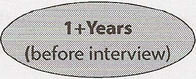
Aprenda várias Construa projetos fora linguagens de da faculdade/trabalho. • programação.
Estudantes: encontre está Construa site/ portgio e faça disciplinas .__ fólio mostrando sua ...__ Expanda sua rede.
com grandes projetos. experiência . •
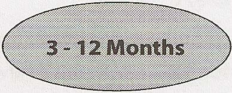
Profissionais: foque Continue a trabalhar em
em projetos “robustos” _____. projetos. Tente adicionar
projetos. mais um projeto . •
do CtCI (Cracking the Faça lista-alvo de ...__ e envie para uma Leia seções introdutórias Crie rascunho do currículo
Codinq Interview). empresas preferidas. revisão de currículo . •
Aprenda e domine Implemente estruturas de dados Forme grupo de entrevistas
Big O. _____. e algoritmos _____. simuladas com amigos para
do zero. entrevistarem uns aos outros . •
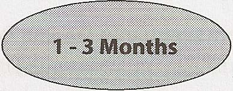
Faça miniprojetos para Faça várias entrevistas simu ladas. ...__ consolidar a compreensão •
dos concei tos princi pais .
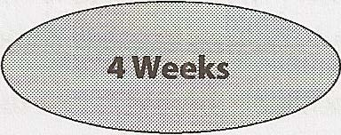
Crie lista para acompanhar Continue praticando -----. erros que você cometeu -----.
em perguntas de entrevista. • resolução de problemas.
Comece a se candidatar a Revise/ atualize Crie grade de preparação empresas. currículo. para entrevista (pág. 32).
t
30 Cracking the Coding Interview, 6ª edição
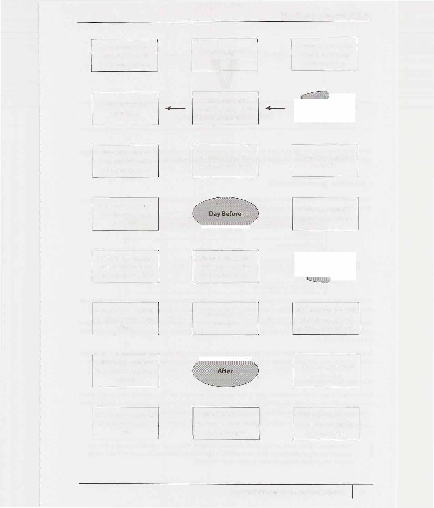
IV I Antes da entrevista
Releia a introdução ao CtCi, Continue praticando Faça outra entrevista perguntas, escrevendo especialmente as seções Técnica e __.. __.. simulada. código no papel. Comportamental.
•
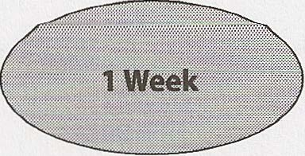
Faça uma última entrevista Localize headset e/ou Entrevista por telefone: simulada. câmera de vídeo . •
da entrevista Ensaie histórias Releia Abordagens de __.. Releia a seção Big O __.. Algoritmos (pág. 67). (pág. 38). grade de preparação (pág. 32).
•
Ensaie cada história Continue praticando da grade de preparação .._ .._ perguntas de entrevista. para entrevista uma vez .
•
Continue praticando Revise a tabela de potências de 2 __.. __.. perguntas e revise (pág. 61). Imprima
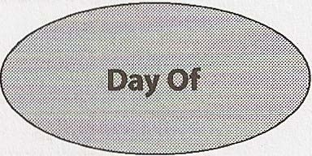
sua lista de erros. para uma triagem por telefone. •
Lembre-se de pensar em voz Acorde com bastante tempo para Seja confiante (sem alta. Mostre como você .._ .._ tomar um bom arrogância!). pensa . café da manhã e chegar no horário.
•
blemas e ter dificuldades é Não esqueça: tropeçar em pro Escreva nota de agradecimento __.. __.. para o recrutador. normal!
•
Recebeu oferta? Comemore! Se não recebeu oferta, pergunte Se não teve retorno ..__ ..__ Seu esforço valeu quando pode se candidatar de novo. Não do recrutador, entre em contato a pena! perca a esperança! após uma semana.
CrackingTheCodinglnterview.com I 6ª edição 31
Perguntas comportamentais
Perguntas comportamentais são feitas para conhecer sua personalidade, entender seu currículo mais profundamente e simplesmente facilitar sua entrada na entrevista. Elas são perguntas importantes e podem ser preparadas.
� Grade de preparação para entrevista
Passe por cada um dos projetos ou componentes do seu currículo e garanta que consegue falar sobre eles em detalhes. Preencher uma grade como esta pode ajudar:
Desafios Erros/Fracassos Gostei Liderança Conflitos O que você faria diferente No topo, como colunas, você deve listar todos os aspectos principais do seu currículo, incluindo cada projeto, emprego ou atividade. Na lateral, como linhas, deve listar as perguntas comportamentais comuns.
Estude esta grade antes da sua entrevista. Reduzir cada história a apenas algumas palavras-chave pode tornar a grade mais fácil de estudar e lembrar. Você também pode ter essa grade à sua frente durante uma entrevista com mais facilidade sem que ela seja uma distração.
Além disso, garanta que você tenha de um a três projetos sobre os quais consegue falar em detalhes. Você deve ser capaz de discutir os componentes técnicos em profundidade. Esses devem ser projetos nos quais você teve um papel central.
Quais são seus pontos fracos?
Quando perguntarem sobre seus pontos fracos, dê um ponto fraco real! Respostas como "Meu maior ponto fraco é que eu trabalho demais" dizem ao entrevistador que você é arrogante e/ou não admite suas falhas. Uma boa resposta comunica uma fraqueza real e legítima, mas enfatiza como você trabalha para superá-la.
Por exemplo: I "Às vezes, não tenho uma atenção muito boa aos detalhes. Isso é bom porque me permite executar rapidamente, mas também significa que às vezes cometo erros por descuido. Por causa disso, faço questão de sempre pedir que outra pessoa confira meu trabalho."
32 Cracking the Coding Interview, 6th Edition
V I Perguntas comportamentais Que perguntas você deve fazer ao entrevistador?
A maioria dos entrevistadores dará a você a chance de fazer perguntas. A qualidade das suas perguntas será um fator, seja subconsciente ou consciente, nas decisões deles. Vá para a entrevista com algumas pergun tas em mente.
Você pode pensar em três tipos gerais de perguntas.
Perguntas genuínas
Estas são as perguntas cujas respostas você realmente quer saber. Aqui estão algumas ideias de perguntas que são valiosas para muitos candidatos: 1. "Qual é a proporção entre testadores, desenvolvedores e gerentes de programa? Como é a interação? Como o planejamento de projetos acontece na equipe?"
2. "O que trouxe você para esta empresa? O que tem sido mais desafiador para você?"
Essas perguntas darão a você uma boa noção de como é o dia a dia na empresa.
Perguntas perspicazes
Essas perguntas demonstram seu conhecimento ou entendimento de tecnologia.
1. "Percebi que vocês usam a tecnologia X. Como vocês lidam com o problema Y?"
2. "Por que o produto escolheu usar o protocolo X em vez do protocolo Y? Sei que ele tem benefícios como A, B, C, mas muitas empresas optam por não usá-lo por causa do problema o:"
Fazer perguntas desse tipo normalmente exigirá pesquisa prévia sobre a empresa.
Perguntas sobre paixão
Essas perguntas são pensadas para demonstrar sua paixão por tecnologia. Elas mostram que você está inte ressado em aprender e será um forte colaborador para a empresa.
1. 'Tenho muito interesse em escalabilidade e adoraria aprender mais sobre isso. Que oportunidades existem nesta empresa para aprender sobre isso?"
2. "Não conheço a tecnologia X, mas ela parece uma solução muito interessante. Você poderia me contar um pouco mais sobre como ela funciona?"
� Conheça seus projetos técnicos
Como parte da sua preparação, você deve se concentrar em dois ou três projetos técnicos que deve dominar profundamente. Selecione projetos que, idealmente, atendam aos seguintes critérios: O projeto teve componentes desafiadores (além de apenas "aprender muito").
• Você teve um papel central (idealmente nos componentes desafiadores).
• Você consegue falar com profundidade técnica.
Para esses projetos, e para todos os seus projetos, consiga falar sobre os desafios, erros, decisões técnicas, escolhas de tecnologias (e os tradeoffs delas) e as coisas que você faria de forma diferente.
Você também pode pensar em perguntas de acompanhamento, como de que forma escalaria a aplicação.
CrackingTheCodinglnterview.com I 6th Edition 33 V I Perguntas comportamentais
� Respondendo a perguntas comportamentais
Perguntas comportamentais permitem que o entrevistador conheça melhor você e sua experiência anterior. Lembre-se dos conselhos a seguir ao responder às perguntas.
Seja específico, não arrogante
Arrogância é um sinal de alerta, mas você ainda quer soar impressionante. Então, como fazer você parecer bom sem ser arrogante? Sendo específico!
Especificidade significa apresentar apenas os fatos e deixar que o entrevistador derive uma interpretação. Por exemplo, em vez de dizer que você "fez todas as partes difíceis", você pode descrever os trechos específicos que fez e que foram desafiadores.
Limite os detalhes
Quando um candidato fala sem parar sobre um problema, é difícil para um entrevistador que não domina bem o assunto ou o projeto entendê-lo.
Mantenha poucos detalhes e apenas declare os pontos-chave. Quando possível, tente traduzir isso ou pelo menos explicar o impacto. Você sempre pode oferecer ao entrevistador a oportunidade de se aprofundar mais.
I "Ao examinar o comportamento mais comum dos usuários e aplicar o algoritmo de Rabin-Karp, eu projetei um novo algoritmo para reduzir a busca de O(n) para 0( log n) em 90% dos casos. Posso entrar em mais detalhes se você quiser."
Isso demonstra os pontos-chave enquanto permite que seu entrevistador peça mais detalhes se quiser.
Concentre-se em você, não na sua equipe
Entrevistas são fundamentalmente uma avaliação individual. Infelizmente, quando você ouve muitos candidatos (especialmente aqueles em cargos de liderança), suas respostas falam sobre "nós", "a gente" e "a equipe". O entrevistador sai com pouca ideia de qual foi o impacto real do candidato e pode concluir que o candi dato fez pouco.
Preste atenção às suas respostas. Observe quanto você diz "nós" em vez de 'eu'. Presuma que toda pergunta é sobre o seu papel e fale sobre isso.
Dê respostas estruturadas
Há duas formas comuns de pensar na estrutura de respostas a uma pergunta comportamental: nugget first e S.A.R. Essas técnicas podem ser usadas separadamente ou juntas.
Nugget First
Nugget First significa começar sua resposta com uma "pepita" que descreve de modo sucinto sobre o que sua resposta será.
Por exemplo: Entrevistador: "Conte-me sobre uma vez em que você precisou persuadir um grupo de pessoas a fazer uma grande mudança."
Candidato: "Claro, vou contar sobre a vez em que convenci minha faculdade a permitir que alunos de graduação ministrassem suas próprias disciplinas. Inicialmente, minha faculdade tinha uma regra segundo a qual .. :"
34 Cracking the Coding Interview, 6th Edition
V I Perguntas comportamentais
Essa técnica prende a atenção do entrevistador e deixa muito claro sobre o que será sua história. Ela também ajuda você a ser mais focado na comunicação, já que você deixou muito claro para si mesmo qual é a essência da sua resposta.
S.A.R. (Situação, Ação, Resultado)
A abordagem S.A.R. significa que você começa delineando a situação, depois explica as ações que tomou e, por fim, descreve o resultado.
Exemplo: ''Conte me sobre uma interação desafiadora com um colega de equipe:'
Situação: No meu projeto de sistemas operacionais, fui designado para trabalhar com outras três pessoas. Embora duas fossem ótimas, o terceiro membro da equipe não contribuía muito. Ele ficava quieto durante as reuniões, raramente participava das discussões por e-mail e tinha dificuldade para concluir seus componentes. Isso era um problema não apenas porque transferia mais trabalho para nós, mas também porque não sabíamos se podíamos contar com ele.
Ação: Eu ainda não queria descartá-lo completamente, então tentei resolver a situação. Fiz três coisas.
Primeiro, eu queria entender por que ele estava agindo assim. Era preguiça? Ele estava ocupado com alguma outra coisa? Puxei uma conversa com ele e então fiz perguntas abertas sobre como ele sentia que as coisas estavam indo. Curiosamente, praticamente do nada, ele disse que queria assumir a redação do relatório, que é uma das partes que mais consomem tempo. Isso me mostrou que não era preguiça; era que ele não se sentia bom o bastante para escrever código.
Segundo, agora que eu entendia a causa, tentei deixar claro que ele não deveria ter medo de errar. Contei a ele sobre alguns dos maiores erros que cometi e admiti que eu também não tinha clareza sobre muitas partes do projeto.
Terceiro e, por fim, pedi que ele me ajudasse a separar alguns dos componentes do projeto. Nós nos sentamos juntos e projetamos uma especificação detalhada para um dos grandes componentes, com muito mais detalhes do que tínhamos antes. Depois que ele conseguiu ver todas as peças, isso ajudou a mostrar a ele que o projeto não era tão assustador quanto ele havia presumido.
Resultado: Com sua confiança elevada, ele passou a se oferecer para assumir várias das tarefas menores de codificação e então, por fim, algumas das maiores partes. Ele terminou todo o trabalho no prazo e contribuiu mais nas discussões. Ficamos felizes em trabalhar com ele em um projeto futuro.
A situação e o resultado devem ser sucintos. Seu entrevistador geralmente não precisa de muitos detalhes para entender o que aconteceu e, na verdade, pode ficar confuso com eles.
Ao usar o modelo S.A.R. com situações, ações e resultados claros, o entrevistador poderá facilmente identificar como você causou impacto e por que isso importou.
Considere colocar suas histórias na grade a seguir: ,nm Al't Nugget : ::' Situação Ação(ões Resultado O que isso diz
História 1 1 . ...
2 . ...
3 ...
História 2
Explore a ação
Em quase todos os casos, a “ação” é a parte mais importante da história. Infelizmente, muita gente fala sem parar sobre a situação, mas depois passa correndo pela ação.
CrackingTheCodinglnterview.com j 6ª Edição 35 VI Perguntas comportamentais
Em vez disso, aprofunde-se na ação. Quando possível, divida a ação em várias partes. Por exemplo: “Eu fiz três coisas. Primeiro, !...” Isso vai estimular profundidade suficiente.
Pense no que isso comunica
Releia a história na página 35. Que atributos de personalidade o candidato demonstrou?
Iniciativa/Liderança: O candidato tentou resolver a situação lidando com ela de frente.
Empatia: O candidato tentou entender o que estava acontecendo com a pessoa. O candidato também demonstrou empatia ao saber o que resolveria a insegurança do colega.
Compaixão: Embora o colega estivesse prejudicando a equipe, o candidato não ficou bravo com o cole ga. Sua empatia o levou à compaixão.
Humildade: O candidato conseguiu admitir as próprias falhas (não só para o colega, mas também para o entrevistador).
• Trabalho em equipe/Disposição para ajudar: O candidato trabalhou com o colega para dividir o projeto em partes administráveis.
Você deve pensar nas suas histórias por essa perspectiva. Analise as ações que tomou e como você reagiu. Que atributos de personalidade sua reação demonstra?
Em muitos casos, a resposta é “nenhum”. Isso normalmente significa que você precisa refazer a forma como comunica a história para tornar o atributo mais claro. Você não quer dizer explicitamente: “Eu fiz X porque tenho empatia”, mas pode chegar um passo antes disso. Por exemplo: Atributo menos claro: “Liguei para o cliente e contei o que aconteceu.”
Atributo mais claro (Empatia e Coragem): “Fiz questão de ligar pessoalmente para o cliente, porque sabia que ele valorizaria ouvir isso diretamente de mim.”
Se ainda assim você não conseguir tornar claros os atributos de personalidade, talvez precise criar uma história totalmente nova.
� Então, fale um pouco sobre você...
Muitos entrevistadores começam a sessão pedindo que você fale um pouco sobre si mesmo ou percorra seu currículo. Isso é essencialmente um “pitch”. É a primeira impressão que o entrevistador terá de você, então você deve garantir que vai acertar.
Estrutura
Uma estrutura típica que funciona bem para muitas pessoas é essencialmente cronológica, com a frase inicial descrevendo o emprego atual e a conclusão falando de hobbies relevantes e interessantes fora do trabalho (se houver).
1. Cargo atual [apenas o resumo]: “Sou engenheiro de software na Microworks, onde venho liderando a equipe de Android nos últimos cinco anos.”
2. Faculdade: Minha formação é em ciência da computação. Fiz graduação em Berkeley e passei alguns verões trabalhando em startups, incluindo uma em que tentei lançar meu próprio negócio.
3. Depois da faculdade e em diante: Depois da faculdade, eu queria ter alguma exposição a empresas maiores, então entrei na Amazon como desenvolvedor. Foi uma ótima experiência. Aprendi muito sobre design de sistemas grandes e pude realmente conduzir o lançamento de uma parte essencial da AWS. Isso, na verdade, me mostrou que eu queria muito estar em um ambiente mais 36 Cracking the Coding Interview, 6ª Edição
V f Perguntas comportamentais
empreendedor.
4. Cargo atual [detalhes]: Uma das minhas antigas gerentes da Amazon me recrutou para entrar na startup dela, e foi isso que me levou à Microworks. Lá, fiz a arquitetura inicial do sistema, que escalou muito bem com nosso crescimento rápido. Depois aproveitei uma oportunidade para liderar a equipe de Android. Eu gerencio uma equipe de três pessoas, mas meu papel é principalmente de liderança técnica: arquitetura, programação, etc.
5. Fora do trabalho: Fora do trabalho, tenho participado de alguns hackathons — principalmente desenvolvendo iOS
como forma de aprender mais a fundo. Também sou ativo como moderador em fóruns online sobre desenvolvimento Android.
6. Encerramento: Agora estou procurando algo novo, e sua empresa chamou minha atenção. Sempre gostei da conexão com o usuário, e também quero muito voltar a um ambiente menor.
Essa estrutura funciona bem para cerca de 95% dos candidatos. Para um candidato com mais experiência, talvez você condense parte dela. Daqui a dez anos, as declarações iniciais do candidato talvez se tornem apenas: “Depois da minha graduação em CS em Berkeley, passei alguns anos na Amazon e depois entrei em uma startup onde liderei a equipe de Android .”
Hobbies
Pense com cuidado sobre seus hobbies. Talvez você queira ou não falar deles.
Muitas vezes eles são apenas enchimento. Se seu hobby for só atividades genéricas, como esquiar ou brincar com seu cachorro, você provavelmente pode pular isso.
Às vezes, porém, hobbies podem ser úteis. Isso costuma acontecer quando: • O hobby é extremamente único (por exemplo, cuspir fogo). Ele pode iniciar um pouco de conversa e começar a entrevista em um tom mais amigável.
O hobby é técnico. Isso não só aumenta seu conjunto real de habilidades, como também mostra paixão por tecnologia.
O hobby demonstra um atributo positivo de personalidade. Um hobby como “reformar sua casa por conta própria” mostra vontade de aprender coisas novas, assumir alguns riscos e colocar a mão na massa (literal e figurativamente).
Raramente faria mal mencionar hobbies, então, na dúvida, você pode mencionar.
Pense, porém, na melhor forma de enquadrar seu hobby. Você tem algum sucesso ou trabalho específico para mostrar a partir dele (por exemplo, conseguir um papel em uma peça)? Existe algum atributo de personalidade que esse hobby demonstra?
Inclua demonstrações de sucesso ao longo do pitch
No pitch acima, o candidato inseriu casualmente alguns destaques da sua trajetória.
Ele mencionou especificamente que foi recrutado para sair da Microworks pelo antigo gerente, o que mostra que teve sucesso na Amazon.
Ele também menciona querer estar em um ambiente menor, o que mostra algum elemento de alinhamento cultural (presumindo que esta seja uma startup para a qual ele está se candidatando).
Ele menciona alguns sucessos que teve, como lançar uma parte essencial da AWS e arquitetar um sistema escalável.
Ele menciona seus hobbies, ambos mostrando vontade de aprender.
Quando pensar no seu pitch, pense no que diferentes aspectos da sua trajetória comunicam sobre você. Você consegue inserir demonstrações de sucesso (prêmios, promoções, ter sido recrutado por alguém com quem trabalhou, lançamentos etc.)? O que você quer comunicar sobre si mesmo?
CrackingTheCodinglnterview.com \ 6th Edition 37
Este é um conceito tão importante que estamos dedicando um capítulo inteiro (longo!) a ele.
O tempo em Big O é a linguagem e a métrica que usamos para descrever a eficiência dos algoritmos. Não entendê-lo profundamente pode prejudicar muito você ao desenvolver um algoritmo. Além de poder ser avaliado com rigor por não entender de verdade Big O, você também terá dificuldade para julgar quando seu algoritmo está ficando mais rápido ou mais lento.
Domine esse conceito.
� Uma analogia
Imagine o seguinte cenário: você tem um arquivo em um disco rígido e precisa enviá-lo para um amigo que mora do outro lado do país. Você precisa fazer o arquivo chegar ao seu amigo o mais rápido possível. Como você deve enviá-lo?
A primeira ideia da maioria das pessoas seria e-mail, FTP ou algum outro meio de transferência eletrônica. Essa ideia é razoável, mas só está meio certa.
Se for um arquivo pequeno, você certamente está certo. Levaria de 5 a 10 horas para chegar a um aeroporto, pegar um voo e então entregar o arquivo ao seu amigo.
Mas e se o arquivo fosse realmente, realmente grande? É possível que seja mais rápido entregá-lo fisicamente de avião?
Sim, na verdade é. Um arquivo de um terabyte (1 TB) poderia levar mais de um dia para ser transferido eletronicamente. Seria muito mais rápido simplesmente levá-lo de avião pelo país. Se seu arquivo for tão urgente assim (e o custo não for problema), talvez você simplesmente queira fazer isso.
E se não houvesse voos e, em vez disso, você tivesse que dirigir pelo país? Mesmo assim, para um arquivo realmente enorme, seria mais rápido dirigir.
� Complexidade de tempo
É isso que o conceito de tempo de execução assintótico, ou tempo Big O, significa. Poderíamos descrever o tempo de execução do "algoritmo" de transferência de dados como: Transferência eletrônica: 0( s ), em que s é o tamanho do arquivo. Isso significa que o tempo para transferir o arquivo aumenta linearmente com o tamanho do arquivo. (Sim, isso é uma simplificação, mas serve para estes propósitos.) Transferência por avião: 0( 1) em relação ao tamanho do arquivo. À medida que o tamanho do arquivo aumenta, não vai levar mais tempo para o arquivo chegar ao seu amigo. O tempo é constante.
38 Cracking the Coding Interview, 6th Edition
Não importa quão grande seja a constante e quão lento seja o crescimento linear; em algum momento, o linear ultrapassará o constante.
---------.----... ··· 0(1) .. ·· ... .. ··
.. ·····
Há muitos outros tempos de execução além desse. Alguns dos mais comuns são O(log N), O(N log N), O(N), O(N2) e 0( 2N). Porém, não há uma lista fixa de tempos de execução possíveis.
Você também pode ter múltiplas variáveis no seu tempo de execução. Por exemplo, o tempo para pintar uma cerca com w metros de largura e h metros de altura poderia ser descrito como O ( wh). Se você precisasse de p camadas de tinta, então poderia dizer que o tempo é O ( whp).
Big O, Big Theta e Big Omega
Se você nunca estudou Big O em um contexto acadêmico, provavelmente pode pular esta subseção. Ela pode confundir você mais do que ajudar. Este "FYI" está aqui principalmente para eliminar ambiguidade na terminologia para pessoas que já aprenderam Big O antes, para que não digam: "Mas eu achava que Big O significava..."
Acadêmicos usam big 0, big 0 (theta) e big O (omega) para descrever tempos de execução.
O (big 0): Na academia, big O descreve um limite superior para o tempo. Um algoritmo que imprime todos os valores de um array poderia ser descrito como O(N), mas também poderia ser descrito como O(N2) , O(N3) ou 0( 2N) (ou muitos outros tempos em Big O). O algoritmo é pelo menos tão rápido quanto cada um desses; portanto, eles são limites superiores para o tempo de execução. Isso é semelhante a uma relação de menor ou igual. Se Bob tem X anos (vou assumir que ninguém vive além dos 130 anos), então você poderia dizer X .$. 130. Também seria correto dizer que X .$. 1, 000 ou X .$. 1,000,000. É tecnicamente verdade (embora não seja muito útil). Da mesma forma, um algoritmo simples para imprimir os valores de um array é O(N), assim como O(N3 ) ou qualquer tempo de execução maior que O(N).
0 (big omega): Na academia, 0 é o conceito equivalente, mas para limite inferior. Imprimir os valores de um array é O(N), assim como O(log N) e 0(1). Afinal, você sabe que ele não será mais rápido do que esses tempos de execução.
· 0 (big theta): Na academia, e significa tanto O quanto 0. Ou seja, um algoritmo é 0(N) se for tanto O(N) quanto 0( N). 0 fornece um limite justo para o tempo de execução.
Na indústria (e, portanto, em entrevistas), as pessoas parecem ter fundido 0 e O. O significado industrial de Big O é mais próximo do que acadêmicos chamam de 0, no sentido de que seria considerado incorreto descrever a impressão de um array como O(N2). A indústria simplesmente diria que isso é O(N).
Neste livro, usaremos Big O da forma como a indústria costuma usar: sempre tentando oferecer a descrição mais justa do tempo de execução.
Melhor caso, pior caso e caso esperado
Na verdade, podemos descrever o tempo de execução de um algoritmo de três formas diferentes.
CrackingTheCodinglnterview.com I 6th Edition 39 VI I Big 0
Vamos observar isso pela perspectiva do quick sort. O quick sort escolhe um elemento aleatório como "pivô" e então troca valores no array de modo que os elementos menores que o pivô apareçam antes dos elementos maiores que o pivô. Isso produz uma "ordenação parcial". Então ele ordena recursivamente os lados esquerdo e direito usando um processo semelhante.
Melhor caso: Se todos os elementos forem iguais, então o quick sort, em média, apenas percorrerá o array uma vez. Isso é O ( N). (Na verdade, isso depende um pouco da implementação do quick sort. Existem implementa ções, porém, que rodam muito rapidamente em um array ordenado.) • Pior caso: E se tivermos muito azar e o pivô for repetidamente o maior elemento do array?
(Na verdade, isso pode acontecer facilmente. Se o pivô for escolhido como o primeiro elemento no subarray e o array estiver ordenado em ordem inversa, teremos essa situação.) Nesse caso, nossa recursão não divide o array ao meio e recursa em cada metade. Ela apenas reduz o subarray em um elemento. Isso degenerará para um tempo de execução anO(N2).
Caso esperado: Normalmente, porém, essas situações maravilhosas ou terríveis não acontecem. Claro, às vezes o pivô será muito baixo ou muito alto, mas isso não acontecerá repetidamente. Podemos esperar um tempo de execução deO(N log N).
Quase nunca discutimos complexidade de tempo no melhor caso, porque não é um conceito muito útil. Afinal, poderíamos pegar essencialmente qualquer algoritmo, tratar algum caso especial de entrada e então obter um tempo O ( 1) no melhor caso.
Para muitos — provavelmente a maioria — dos algoritmos, o pior caso e o caso esperado são iguais. Às vezes eles são diferentes, porém, e precisamos descrever ambos os tempos de execução.
Qual é a relação entre melhor/pior/caso esperado e big 0/theta/omega?
É fácil os candidatos misturarem esses conceitos (provavelmente porque ambos têm algumas noções de "mais alto", "mais baixo" e "exatamente certo"), mas não há nenhuma relação particular entre eles.
Melhor, pior e caso esperado descrevem o tempo Big O (ou big theta) para entradas ou cenários específicos.
Big 0, big omega e big theta descrevem os limites superior, inferior e justo para o tempo de execução.
� Complexidade de espaço
Tempo não é a única coisa que importa em um algoritmo. Também podemos nos importar com a quantidade de memória ou espaço — exigida por um algoritmo.
Complexidade de espaço é um conceito paralelo à complexidade de tempo. Se precisamos criar um array de tamanho n, isso exigirá 0( n) de espaço. Se precisamos de um array bidimensional de tamanho nxn, isso exigirá O( n2) de espaço.
O espaço de pilha em chamadas recursivas também conta. Por exemplo, código como este levariaO(n) tempo e O(n) espaço. 1 int sum(int n) {/*Ex 1.*/
2 if (n <= 0) {
3 return 0; 4 }
5 return n + sum(n-1); 6 }
Cada chamada adiciona um nível à pilha.
1 sum(4) 2 -> sum(3) 3 -> sum(2) 4 -> sum(l) 5 -> sum(0) Cada uma dessas chamadas é adicionada à pilha de chamadas e ocupa memória real.
40 Cracking the Coding Interview, 6th Edition
No entanto, só porque você tem n chamadas no total não significa que isso ocupa O(n) de espaço. Considere a função abaixo, que soma elementos adjacentes entre O e n: 1 int pairSumSequence(int n) {/* Ex 2.*/ 2 int sum = 0; 3 for (inti= 0; i < n; i++) { 4 sum+= pairSum(i, i + 1); 5 }
6 return sum; 7 }
8
9 int pairSum(int a, int b) {
10 return a + b; 11 }
Haverá aproximadamente O(n) chamadas a pairSum. Porém, essas chamadas não existem simultaneamente na pilha de chamadas, então você só precisa de O ( 1) espaço.
� Elimine as constantes
É muito possível que código O(N) rode mais rápido que código 0( 1) para entradas específicas. Big O apenas descreve a taxa de crescimento.
Por esse motivo, eliminamos as constantes no tempo de execução. Um algoritmo que alguém poderia ter descrito como 0(2N) na verdade éO(N).
Muitas pessoas resistem a fazer isso. Elas verão um código com dois loops for não aninhados e continuarão chamando isso de 0 ( 2N). Elas acham que estão sendo mais "precisas". Não estão.
Considere o código abaixo: Min and Max 1 MinandMax2 1 int min = Integer.MAX_VALUE; 1 int min = Integer.MAX_VALUE; 2 int max = Integer.MIN_VALUE; 2 int max = Integer.MIN_VALUE; 3 for (int x : array) { 3 for (int x : array) { 4 if (x < min) min x; 4 if (x < min) min = x; 5 if (x > max) max = x; 5 } 6 } 6 for (int x : array) {
7 if (x > max) max = x; 8 }
Qual é mais rápido? O primeiro faz um loop for e o outro faz dois loops for. Mas, por outro lado, a primeira solução tem duas linhas de código por loop for, em vez de uma.
Se você vai contar o número de instruções, então teria que descer até o nível de assembly e levar em conta que multiplicação exige mais instruções do que adição, como o compilador poderia oti mizar algo e todo tipo de outros detalhes.
Isso seria terrivelmente complicado, então nem comece a seguir por esse caminho. Big O nos permite expressar como o tempo de execução escala. Só precisamos aceitar que isso não significa que O(N) seja sempre melhor do que O(N 2 ).
CrackingTheCodinglnterview.com \ 6th Edition 41
� Elimine os termos não dominantes
O que você faz com uma expressão como O ( N2 + N)? Esse segundo N não é exatamente uma constante. Mas ele não é especialmente importante.
Já dissemos que eliminamos constantes. Portanto, 0( N 2 2 + N) seria O ( N2 ). Se não nos importamos com esse último termo N2 , por que nos importaríamos com N? Não nos importamos.
Você deve eliminar os termos não dominantes.
O(N2 2 + N) se tornaO(N).
• O(N + log N) se tornaO(N).
0(5*2N + 1000N100 ) se torna0(2N).
Ainda poderíamos ter uma soma em um tempo de execução. Por exemplo, a expressão0(82 + A) não pode ser reduzida sem algum conhecimento especial sobre A e B.
O gráfico a seguir mostra a taxa de crescimento de alguns dos tempos Big O comuns.
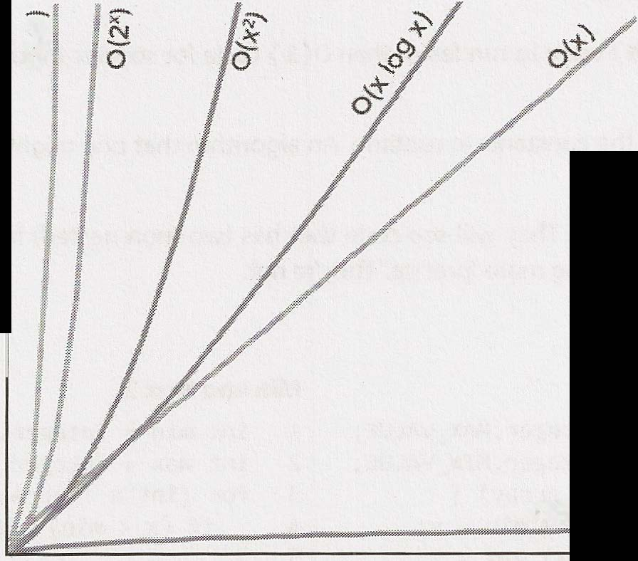
E 0
O(logx) Como você pode ver, 0 ( x 2) é muito pior do que O ( x), mas não é nem de perto tão ruim quanto O ( 2x) ou O ( x ! ) . Há muitos tempos de execução piores do que 0( x ! ) também, como O( xx x ) ou 0( 2 * x ! ) .
� Algoritmos com múltiplas partes: somar vs. multiplicar
Suponha que você tenha um algoritmo com duas etapas. Quando você multiplica os tempos de execução e quando você os soma?
Essa é uma fonte comum de confusão para candidatos.
42 Cracking the Coding Interview, 6th Edition
Some os tempos de execução: 0 ( A + B) Multiplique os tempos de execução: 0 (A* B) 1 1 for (int a : arrA) { for (int a : arrA) { 2 print(a); 2 for (int b: arrB) { 3 3 print(a + "," + b); }
4 4 } 5 for (int b : arrB) { 5 } 6 print(b); 7 }
No exemplo à esquerda, fazemos A blocos de trabalho e depois B blocos de trabalho. Portanto, a quantidade total de trabalho é O(A + B ).
No exemplo à direita, fazemos B blocos de trabalho para cada elemento em A. Portanto, a quantidade total de *
trabalho éO(A B).
Em outras palavras: Se seu algoritmo está na forma "faça isto, depois, quando terminar tudo, faça aquilo", então você soma os tempos de execução.
Se seu algoritmo está na forma "faça isto para cada vez que fizer aquilo", então você multiplica os tempos de execução.
É muito fácil errar isso em uma entrevista, então tome cuidado.
� Tempo amortizado
Um ArrayList, ou um array que redimensiona dinamicamente, permite que você tenha os benefícios de um array enquanto oferece flexibilidade de tamanho. Você não ficará sem espaço no ArrayList, pois sua capacidade crescerá conforme você insere elementos.
Um ArrayList é implementado com um array. Quando o array atinge a capacidade, a classe ArrayList cria um novo array com o dobro da capacidade e copia todos os elementos para o novo array.
Como você descreve o tempo de execução da inserção? Essa é uma pergunta complicada.
O array poderia estar cheio. Se o array contém N elementos, então inserir um novo elemento levará tempo O(N). Você terá que criar um novo array de tamanho 2N e então copiar N elementos para ele. Essa inserção levará tempo O ( N) .
No entanto, também sabemos que isso não acontece com muita frequência. Na vasta maioria das vezes, a inserção será em tempoO(l).
Precisamos de um conceito que leve ambos em conta. É isso que o tempo amortizado faz. Ele nos permite descrever que, sim, esse pior caso acontece de vez em quando. Mas, uma vez que acontece, ele não acontecerá de novo por tanto tempo que o custo é "amortizado".
Neste caso, qual é o tempo amortizado?
À medida que inserimos elementos, dobramos a capacidade quando o tamanho do array é uma potência de 2. Então, após X elementos, dobramos a capacidade nos tamanhos de array 1, 2, 4, 8, 16, ... , X. Esse dobramento exige, respectivamente, 1, 2, 4, 8, 16, 32, 64, ... , X cópias.
Qual é a soma de 1 + 2 + 4 + 8 + 16 + ... + X? Se você ler essa soma da esquerda para a direita, ela começa com 1 e dobra até chegar a X. Se você ler da direita para a esquerda, ela começa com X e vai sendo dividida pela metade até chegar a 1.
Qual, então, é a soma de X + + + + ... + 1 ? Isso é aproximadamente 2X. X X X
Portanto, X inserções levam tempo 0( 2X). O tempo amortizado de cada inserção é 0( 1).
CrackingTheCodinglnterview.com \ 6th Edition 43 VI I Big 0
� Tempos de execução Log N
Comumente vemos O(log N) em tempos de execução. De onde isso vem?
Vamos olhar a busca binária como exemplo. Na busca binária, estamos procurando um exemplo x em um array ordenado de Nelementos. Primeiro comparamos x ao ponto médio do array. Se x == meio, então retornamos. Se x < meio, então procuramos no lado esquerdo do array. Se x > meio, então procuramos no lado direito do array.
buscar 9 em {1, 5, 8, 9, 11, 13, 15, 19, 21}
comparar 9 com 11 -> menor.
buscar 9 em {1, 5, 8, 9, 11}
comparar 9 com 8 -> maior buscar 9 em {9, 11}
comparar 9 com 9
retornar Começamos com um array de Nelementos para pesquisar. Então, após um único passo, estamos reduzidos a Yi elementos. Mais um %
passo, e estamos reduzidos a elementos. Paramos quando encontramos o valor ou quando restar apenas
um elemento.
O tempo total de execução é então uma questão de quantos passos, dividindo N por 2 a cada vez, podemos dar até que N se torne 1.
N = 16
N 8 /* dividir por 2 */
N 4 /* dividir por 2 *I
N 2 /* dividir por 2 */
N 1 I* dividir por 2 */
Poderíamos olhar para isso ao contrário, indo de 1 para 16 em vez de 16 para 1. Quantas vezes podemos multiplicar 1 por 2 até obter N?
N 1
N 2 /* multiplicar por 2 */
N 4 /* multiplicar por 2 */
N 8 /* multiplicar por 2 */
N 16 /* multiplicar por 2 */
O que é k na expressão 2k = N? Isso é exatamente o que log expressa.
2• = 16 -> log2l6 = 4 k log 2 N = k -> 2 = N
Esta é uma boa conclusão para você guardar. Quando vir um problema em que o número de elementos no espaço do problema é dividido pela metade a cada vez, provavelmente será um tempo de execução 0( log N).
Esse é o mesmo motivo pelo qual encontrar um elemento em uma árvore binária de busca balanceada é O ( log N). A cada comparação, vamos para a esquerda ou para a direita. Metade dos nós está em cada lado, então reduzimos o espaço do problema pela metade a cada vez.
I Qual é a base do log? Essa é uma excelente pergunta! A resposta curta é que ela não importa para os fins de big 0. A explicação mais longa pode ser encontrada em "Bases of Logs" na página 630.
� Tempos de execução recursivos
Aqui vai uma difícil. Qual é o tempo de execução deste código?
1 int f(int n) {
44 Cracking the Coding Interview, 6ª edição
2 if (n <= 1) {
3 return 1; 4 }
5 return f(n - 1) + f(n - 1); 6 }
Muitas pessoas, por algum motivo, veem as duas chamadas a f e pulam para 0( N2 ). Isso está completamente incorreto.---------Em vez de fazer suposições, vamos derivar o tempo de execução percorrendo o código. Suponha que chamemos f ( 4). Isso chama f ( 3) duas vezes. Cada uma dessas chamadas a f ( 3) chama f ( 2), até chegarmos a f ( 1 ). f(4) / f(3) f(3) "'- "'-
_.,)-(2� /f Q( f(2) / �(22
./ � /
f(l) f(l) f(l) f(l) f(l) f(l) f(l) f(l) Quantas chamadas existem nessa árvore? (Não conte!) A árvore terá profundidade N. Cada nó (ou seja, chamada de função) tem dois filhos. Portanto, cada nível terá o dobro de chamadas do nível acima. O número de nós em cada nível é:
0 20
2 2 * nível anterior = 2 21
2 4 2 * nível anterior = * 2 21 = 22 22
3 8 2 * nível anterior = 2 22 23 23 *
4 16 2 * nível anterior = 2 23 24 24 *
Portanto, haverá 2° + 21 + 22 + 23 + 24 + . • . + 2N N (que é 2•1 - 1) nós. (Veja "Sum of Powers of 2" na página 630.) Tente se lembrar desse padrão. Quando você tem uma função recursiva que faz várias chamadas, o tempo de execução muitas vezes (mas nem sempre) se parece com O( branchesdepth), em que branches é o número de vezes que cada chamada recursiva se ramifica. Neste caso, isso nos dá O ( 2N ).
I Como você talvez se lembre, a base de um log não importa para big O, já que logs de bases diferentes diferem apenas por um fator constante. No entanto, isso não se aplica a expoentes. A base de um expoente importa. Compare 2" e 8". Se você expandir 8", obtém (2 3 )", que é igual a 2 3 ",
que é igual a 22 ° 2 " * 2". Como você pode ver, 8" e 2 diferem por um fator de 2". Isso definitivamente não é um fator constante!
A complexidade de espaço desse algoritmo será O(N). Embora tenhamos 0(2N) nós no total da árvore, apenas O(N) existem em qualquer instante. Portanto, precisaríamos ter apenas O(N) de memória disponível.
� Exemplos e exercícios
Tempo Big O é um conceito difícil no começo. Porém, quando ele "encaixa", fica relativamente fácil. Os mesmos padrões aparecem repetidas vezes, e o restante você consegue derivar.
Vamos começar fácil e ficar progressivamente mais difíceis.
CrackingTheCodinglnterview.com I 6ª edição 45 VI I Big 0
Qual é o tempo de execução do código abaixo?
1 void foo(int[] array) {
2 int sum = 0; 3 int product = 1; 4 for (inti= 0; i < array.length; i++) { 5 sum += array[i); 6 }
7 for (int i= 0; i < array.length; i++) { 8 product*= array[i]; 9 }
10 System.out.println(sum + ", " + product); 11 }
Isso levará tempo O(N). O fato de iterarmos pelo array duas vezes não importa.
Qual é o tempo de execução do código abaixo?
1 void printPairs(int[] array) {
2 for (int i= 0; i < array.length; i++) { 3 for (int j = 0; j < array.length; j++) { 4 System.out.println(array[i] + "," + array[j]); 5 }
6 }
7 }
O laço for interno tem O ( N) iterações e é chamado N vezes. Portanto, o tempo de execução é O ( N2 ).
Outra forma de ver isso é inspecionando qual é o "significado" do código. Ele imprime todos os pares (sequências de dois elementos). Há O ( N2 ) pares; portanto, o tempo de execução é O ( N 2 ).
Este código é muito semelhante ao exemplo acima, mas agora o laço for interno começa em i + 1. 1 void printUnorderedPairs(int[] array) { 2 for (int i= 0; i < array.length; i++) { 3 for (int j = i + 1; j < array.length; j++) {
4 System.out.println(array[i] + "," + array[j]); 5 } 6
}
7 }
Podemos derivar o tempo de execução de várias formas.
I Esse padrão de laço for é muito comum. É importante que você saiba o tempo de execução e que o entenda profundamente. Você não pode confiar apenas em memorizar tempos de execução comuns. A compreensão profunda é importante.
Contando as iterações
Na primeira passagem, j executa por N-1 passos. Na segunda, por N-2 passos. Depois N-3 passos. E assim por diante.
Portanto, o número total de passos é: (N-1) + (N-2) + (N-3) + ... + 2 + 1
46 Cracking the Coding Interview, 6ª edição
VI Big 0 I = 1 + 2 + 3 + ... + N-1
= soma de 1 até N-1
A soma de 1 até N-1 é -N(N-1) 2-(veja "Sum o Integers 1 t roug N on page 30, então o tempo de execução será f h h ,, 6 ) h . ·11 beO(N2 ).
O que isso significa
Como alternativa, podemos descobrir o tempo de execução pensando no que o código "significa". Ele itera por cada par de valores para ( i, j) em que j é maior que i.
Há N2 pares no total. Aproximadamente metade deles terá i < j e a outra metade terá i > j. Este código percorre aproximadamente N pares, portanto faz O(N2) trabalho. x Visualizando o que ele faz
O código itera pelos seguintes pares ( i, j) quando N = 8: (0, 1) (0, 2) (0, 3) (0, 4) (0, 5) (0, 6) (0, 7) (1, 2) (1, 3) (1, 4) (1, 5) (1, 6) (1, '7) (2, 3) (2, 4) (2, 5) (2, 6) (2, 7) (3, 4) (3, 5) (3, 6) (3, 7) (4, 5) (4, 6) (4, 7) (5, 6) (5, 7) (6, 7) Isso se parece com metade de uma matriz NxN, que tem tamanho, aproximadamente, N/i. Portanto, leva O( N2) tempo.
Trabalho Médio
Sabemos que o loop externo roda N vezes. Quanto trabalho o loop interno faz? Isso varia entre as itera ções, mas podemos pensar na iteração média.
Qual é o valor médio de 1, 2, 3, 4, 5, 6, 7, 8, 9, 10? O valor médio estará no meio, então será aproximadamente 5. (Poderíamos dar uma resposta mais precisa, claro, mas não precisamos disso para Big O.) E para 1, 2, 3, ... , N? O valor médio nessa sequência é N/ 2.
Portanto, como o loop interno faz Yi trabalho em média e é executado N vezes, o trabalho total é N/i que é O(N2).
Este é semelhante ao exemplo anterior, mas agora temos dois arrays diferentes.
1 void printUnorderedPairs(int[] arrayA, int[] arrayB) { 2 for (inti= 0; i < arrayA.length; i++) { 3 for (int j = 0; j < arrayB.length; j++) { 4 if (arrayA[i] < arrayB[j]) { 5 System.out.println(arrayA[i] + "," + arrayB[j]); 6 }
7 }
8 }
9 }
Podemos dividir esta análise. O if-statement dentro do loop for de j leva tempo 0(1), pois é apenas uma sequência de instruções de tempo constante.
Agora temos isto: 1 void printUnorderedPairs(int[] arrayA, int[] arrayB) {
CrackingTheCodinglnterview.com I 6ª Edição 47
2 for (int i= 0; i < arrayA.length; i++) { 3 for (int j = 0; j < arrayB.length; j++) {
5 } 6 } 4 /* trabalho 0(1) */
7 }
Para cada elemento do array A, o loop for interno passa por b iterações, onde b = arrayB.length. Se a = arrayA.length, então o tempo de execução é O(ab).
Se você disse O( N 2), então lembre-se do seu erro no futuro. Não é O(N2) porque há duas entradas diferentes. Ambas importam. Este é um erro extremamente comum.
E este trecho estranho de código?
1 void printUnorderedPairs(int[] arrayA, int[] arrayB) { 2 for (int i= 0; i < arrayA.length; i++) { 3 for (int j = 0; j < arrayB.length; j++) { 4 for (int k = 0; k < 100000; k++) { 5 System.out.println(arrayA[i] + "," + arrayB[j]); 6 }
7 }
8 }
9 }
Nada realmente mudou aqui. 100.000 unidades de trabalho ainda é constante, então o tempo de execução é 0(ab).
O código a seguir inverte um array. Qual é o tempo de execução dele?
1 void reverse(int[] array) {
2 for (inti= 0; i
8 }
Este algoritmo roda em tempo O( N) . O fato de ele percorrer apenas metade do array (em termos de iterações) não afeta o tempo em Big O.
Quais das opções a seguir são equivalentes a O(N)? Por quê?
O(N + P), onde P < X
• 0(2N) O(N + log N)
O(N + M) Vamos analisar cada uma delas.
Se P < então sabemos que N é o termo dominante, então podemos eliminar o 0(P). X, • 0(2N) é O(N), pois eliminamos constantes.
48 Cracking the Coding Interview, 6ª Edição
• O(N) domina O(log N), então podemos eliminar O(log N).
Não há uma relação estabelecida entre N e M, então precisamos manter as duas variáveis ali.
Portanto, todas exceto a última são equivalentes a O(N).
Suponha que tivéssemos um algoritmo que recebesse um array de strings, ordenasse cada string e depois ordenasse o array inteiro. Qual seria o tempo de execução?
Muitos candidatos raciocinam da seguinte forma: ordenar cada string é O(N log N) e precisamos fazer isso para cada string, então isso é O(N*N log N). Também precisamos ordenar esse array, então há um trabalho adicional de O(N log N) . Portanto, o tempo de execução total é O(N2 log N + N log N), que é apenas 0(N2 log N).
Isso está completamente incorreto. Você percebeu o erro?
O problema é que usamos N de duas maneiras diferentes. Em um caso, é o comprimento da string (qual string?). Em outro caso, é o tamanho do array.
Nas suas entrevistas, você pode evitar esse erro deixando de usar a variável "N" ou usando-a apenas quando não houver ambiguidade sobre o que N poderia representar.
Na verdade, eu nem usaria a e b aqui, nem m e n. É fácil demais esquecer qual é qual e misturá-las. Um tempo de execução O(a2 ) é completamente diferente de um tempo de execução O(a*b).
Vamos definir novos termos — e usar nomes que sejam lógicos.
Seja s o comprimento da string mais longa.
Seja a o tamanho do array.
Agora podemos analisar isso em partes: • Ordenar cada string é 0(s log s).
• Precisamos fazer isso para cada string (e há a strings), então isso é 0(a*s log s).
Agora precisamos ordenar todas as strings. Há a strings, então você talvez fique inclinado a dizer que isso leva tempo O(a log a). Você também deve levar em conta que precisa comparar as strings. Cada comparação de strings leva tempo O(s). Há O(a log a) comparações, portanto isso levará tempo 0(a*s log a).
Se você somar essas duas partes, obtém 0(a*s(log a + log s)).
É isso. Não há como reduzir mais.
Exemplo 9
O código simples a seguir soma os valores de todos os nós em uma árvore de busca binária balanceada. Qual é seu tempo de execução?
1 int sum(Node node) {
2 if (node == null) {
3 return 0; 4 }
5 return sum(node.left) + node.value + sum(node.right); 6 }
Só porque é uma árvore de busca binária não significa que haja um log nela!
Podemos ver isso de duas maneiras.
CrackingTheCodinglnterview.com I 6ª Edição 49 VI I Big O
O Que Isso Significa
A maneira mais direta é pensar no que isso significa. Este código toca cada nó da árvore uma vez e faz uma quantidade constante de trabalho em cada "toque" (excluindo as chamadas recursivas).
Portanto, o tempo de execução será linear em relação ao número de nós. Se houver N nós, então o tempo de execução é O(N).
Padrão Recursivo
Na página 44, discutimos um padrão para o tempo de execução de funções recursivas que têm múltiplos ramos. Vamos tentar essa abordagem aqui.
Dissemos que o tempo de execução de uma função recursiva com múltiplos ramos normalmente é O( ramosprofundidade). Há dois ramos em cada chamada, então estamos olhando para 0(2profundidade).
Neste ponto, muitas pessoas podem presumir que algo deu errado, já que temos um algo ritmo exponencial — que há algo falho em nossa lógica ou que nós criamos inadvertidamente um algo ritmo de tempo exponencial (socorro!).
A segunda afirmação está correta. Temos, sim, um algoritmo de tempo exponencial, mas ele não é tão ruim quanto alguém poderia pensar. Considere em relação a qual variável ele é exponencial.
O que é profundidade? A árvore é uma árvore binária de busca balanceada. Portanto, se houver N nós no total, então a profundidade é aproximadamente log N.
Pela equação acima, obtemos O( 2lo g N).
Lembre-se do que log2 significa: 2• = Q - > log 2Q = P
O que é 2lo g N? Há uma relação entre 2 e log, então deveríamos conseguir simplificar isso.
Seja P = 2lo g N. Pela definição de log2, podemos escrever isso como log2P = log2N. Isso significa que P N.
Seja P = 210g N
-> logl = log2N
-> p = N
->2logN = N
Portanto, o tempo de execução deste código é O( N), em que N é o número de nós.
O método a seguir verifica se um número é primo testando a divisibilidade por números menores que ele. Ele só precisa ir até a raiz quadrada de n, porque se n for divisível por um número maior que sua raiz quadrada, então ele é divisível por algo menor que ele.
Por exemplo, embora 33 seja divisível por 11 (que é maior que a raiz quadrada de 33), a "contraparte" de 11 é 3 (3 * 11 = 33). 33 já terá sido eliminado como número primo por 3.
Qual é a complexidade de tempo desta função?
1 boolean isPrime(int n) {
2 for (int x = 2; x * x <= n; x++) { 3 if (n % X == 0) {
4 return false; 5 } 6
}
7 return true; SO Cracking the Coding Interview, 6ª Edição
8 }
Muita gente erra esta pergunta. Se você tomar cuidado com sua lógica, ela é relativamente fácil.
O trabalho dentro do loop for é constante. Portanto, só precisamos saber quantas iterações o loop for faz no pior caso.
O loop for começará quando x = 2 e terminará quando x*x = n. Ou, em outras palavras, ele para quando x = √n (quando x é igual à raiz quadrada de n).
Este loop for é, na verdade, algo como isto: 1 boolean isPrime(int n) {
2 for (int x = 2; x <= sqrt(n); x++) { 3 if (n % X == 0) {
4 return false; 5 }
6 }
7 return true; 8 }
Isso roda em tempo O( √n).
O código a seguir calcula n ! (n fatorial). Qual é sua complexidade de tempo? 1 int factorial(int n) {
2 if (n < 0) {
3 return -1; 4 else if (n 0) { }
5 return 1; 6 } else {
7 return n * factorial(n - 1); 8 }
9 }
Esta é apenas uma recursão direta de n para n -1, para n - 2, até 1. Ela levará tempo O ( n).
Este código conta todas as permutações de uma string.
1 void permutation(String str) {
2 permutation(str, ""); 3 }
4
5 void permutation(String str, String prefix) {
6 if (str.length() == 0) {
7 System.out.println(prefix); 8 } else {
9 for (int i= 0; i < str.length(); i++) { 10 String rem = str.substring(0, i) + str.substring(i + 1); 11 permutation(rem, prefix + str.charAt(i)); 12 }
13 }
14 }
Esta é uma questão (muito!) complicada. Podemos pensar nela observando quantas vezes permutation é chamada e quanto tempo cada chamada leva. Vamos tentar obter o limite superior mais justo possível.
CrackingTheCodinglnterview.com I 6ª Edição 51 VI I Big 0
Quantas vezes permutation é chamada em seu caso base?
Se fôssemos gerar uma permutação, precisaríamos escolher caracteres para cada "posição". Suponha que tivéssemos 7 caracteres na string. Na primeira posição, temos 7 escolhas. Depois que escolhemos a letra ali, temos 6 escolhas para a próxima posição. (Observe que são 6 escolhas para cada uma das 7 escolhas anteriores.) Depois 5 escolhas para a próxima posição, e assim por diante.
Portanto, o número total de opções é 7 * 6 5 4 3 2 * 1, que também é expresso como 7! (7 fatorial).
Isso nos diz que há n! permutações. Portanto, permutation é chamada n ! vezes em seu caso base (quando prefix é a permutação completa).
Quantas vezes permutation é chamada antes de seu caso base?
Mas, é claro, também precisamos considerar quantas vezes as linhas 9 a 12 são atingidas. Imagine uma grande árvore de chamadas representando todas as chamadas. Há n ! folhas, como mostrado acima. Cada folha está ligada a um caminho de comprimento n. Portanto, sabemos que haverá no máximo n * n ! nós (chamadas de função) nessa árvore.
Quanto tempo cada chamada de função leva?
Executar a linha 7 leva tempo 0( n), já que cada caractere precisa ser impresso.
A linha 10 e a linha 11 também levarão tempo O ( n) combinadas, devido à concatenação de strings. Observe que a soma dos comprimentos de rem, prefix e str. charAt(i) sempre será n.
Cada nó em nossa árvore de chamadas, portanto, corresponde a trabalho 0( n).
Qual é o tempo de execução total?
Como estamos chamando permutation 0( n * n ! ) vezes (como limite superior), e cada uma leva tempo 0( n), 2 o tempo de execução total não excederá O ( n * n ! ) .
Com matemática mais complexa, podemos derivar uma equação de tempo de execução mais justa (embora não necessariamente uma expressão fechada bonita). Isso quase certamente estaria além do escopo de qualquer entrevista normal.
O código a seguir calcula o N-ésimo número de Fibonacci.
1 int fib(int n) {
2 if (n <= 0) return 0; 3 else if (n == 1) return 1; 4 return fib(n - 1) + fib(n - 2); 5 }
Podemos usar o padrão anterior que estabelecemos para chamadas recursivas: O( ramosprofundidade).
Há 2 ramos por chamada, e vamos até profundidade N; portanto, o tempo de execução é O( 2N).
I Com uma matemática muito complicada, podemos obter um tempo de execução mais justo. O tempo é, de fato, exponencial, mas na verdade fica mais próximo de 0( 1. 6 N ). A razão para ele não ser exatamente 0( 2 N ) é que, no fundo da pilha de chamadas, às vezes há apenas uma chamada. Acontece que muitos dos nós
estão na parte inferior (como ocorre na maioria das árvores), então essa chamada única versus chamada dupla faz uma grande diferença. Dizer O ( 2N) seria suficiente no escopo de uma entrevista, porém (e ainda é tecni camente correto, se você ler a observação sobre big theta na página 39). Você pode ganhar "pontos extras" se conseguir reconhecer que, na verdade, será menor que isso.
52 Cracking the Coding Interview, 6ª Edição •
De modo geral, quando você vê um algoritmo com múltiplas chamadas recursivas, está olhando para tempo de execução exponencial.
O código a seguir imprime todos os números de Fibonacci de 0 a n. Qual é sua complexidade de tempo?
1 void allFib(int n) {
2 for (int i= 0; i < n; i++) { 3 System.out.println(i + ": "+ fib(i)); 4 }
5 }
6
7 int fib(int n) {
8 if (n <= 0) return 0; 9 else if (n == 1) return 1; 10 return fib(n - 1) + fib(n - 2); 11 }
Muita gente concluirá apressadamente que, já que fib(n) leva 0(2°) de tempo e é chamada n vezes, então isso é O(n2°).
Não tão rápido. Você consegue encontrar o erro nessa lógica?
O erro é que o n está mudando. Sim, fib ( n) leva 0( 2°) de tempo, mas importa qual é esse valor de n.
Em vez disso, vamos percorrer cada chamada.
fib(!) -> 21 passos fib(2) -> 22 passos fib(3) -> 23 passos fib(4) -> 2• passos fib(n) -> 2" passos Portanto, a quantidade total de trabalho é: 21 + 22 + 23 + 24 + , , , + 2°
Como mostramos na página 44, isso é 2°+1. Portanto, o tempo de execução para calcular os primeiros n números de Fibonacci (usando este algoritmo terrível) ainda é O ( 2°).
O código a seguir imprime todos os números de Fibonacci de 0 a n. Porém, desta vez, ele armazena (isto é, mantém em cache) valores calculados previ amente em um array de inteiros. Se o valor já tiver sido calculado, ele apenas retorna o cache. Qual é seu tempo de execução?
1 void allFib(int n) {
2 int[] memo = new int[n + 1]; 3 for (int i= 0; i < n; i++) {
6 5 } 4 System.out.println(i + ": "+ fib(i, memo)); }
7
8 int fib(int n, int[] memo) {
9 if (n <= 0) return 0; 10 else if (n == 1) return 1; 11 else if (memo[n] > 0) return memo[n]; 12
13 memo[n] = fib(n - 1, memo)+ fib(n - 2, memo); CrackingTheCodinglnterview.com 6ª Edição S3 I VI I Big 0
14 return memo[n]; 15 }
Vamos percorrer o que este algoritmo faz.
fib(l) -> return 1
fib(2) fib(l) -> return 1
fib(0) -> return 0
armazena 1 em memo[2]
fib(3) fib(2) -> consulta memo[2] -> return 1
fib(l) -> return 1
armazena 2 em memo[3]
fib(4) fib(3) -> consulta memo[3] -> return 2
fib(2) -> consulta memo[2] -> return 1
armazena 3 em memo[4]
fib(S) fib(4) -> consulta memo[4] -> return 3
fib(3) -> consulta memo[3] -> return 2
armazena 5 em memo[S]
Em cada chamada a fib(i), já calculamos e armazenamos os valores de fib( i-1) e fib(i-2). Nós apenas consultamos esses valores, somamos, armazenamos o novo resultado e retornamos. Isso leva uma quantidade constante de tempo.
Estamos fazendo uma quantidade constante de trabalho N vezes, então isso é tempo O ( n).
Esta técnica, chamada memoização, é muito comum para otimizar algo ritmos recursivos de tempo exponencial.
A função a seguir imprime as potências de 2 de 1 até n (inclusive). Por exemplo, se n for 4, ela imprimiria 1, 2 e 4. Qual é seu tempo de execução?
1 int powers0f2(int n) {
2 if (n < 1) {
3 return 0; 4 } else if (n == 1) {
5 System.out.println(l); 6 return 1; 7 else { }
8 int prev = powers0f2(n / 2); 9 int curr = prev * 2; 10 System.out.println(curr); 11 return curr; 12 }
13 }
Há várias maneiras de calcular esse tempo de execução.
O que ele faz
Vamos percorrer uma chamada como powers0f2 ( 50).
powers0f2(50) -> powers0f2(25) 54 Cracking the Coding Interview, 6ª Edição
-> powers0f2(12) -> powers0f2(6) -> powers0f2(3) -> powersOf2(1) & -> imprime return 1 & imprime return 2 & imprime return 4
imprime & return 8 & imprime return 16 & imprime return 32
O tempo de execução, então, é o número de vezes que podemos dividir 50 (ou n) por 2 até chegar ao caso base (1 ). Como discutimos na página 44, o número de vezes que podemos dividir n pela metade até chegar a 1 é O ( log n).
O que isso significa
Também podemos abordar o tempo de execução pensando no que o código deveria fazer. Ele deveria calcular as potências de 2 de 1 até n.
Cada chamada a powers0f2 resulta em exatamente um número sendo impresso e retornado (excluindo o que acontece nas chamadas recursivas). Então, se o algoritmo imprime 13 valores ao final, powers0f2 foi chamada 13 vezes.
Neste caso, somos informados de que ele imprime todas as potências de 2 entre 1 e n. Portanto, o número de vezes que a função é chamada (que será seu tempo de execução) deve ser igual ao número de potências de 2 entre 1 e n.
Há log N potências de 2 entre 1 e n. Portanto, o tempo de execução é 0( log n ).
Taxa de crescimento
Uma última maneira de abordar o tempo de execução é pensar em como ele muda à medida que n fica maior. Afinal, é exatamente isso que tempo big O significa.
Se N vai de P para P+l, o número de chamadas a powersOfTwo pode não mudar nada. Quando o número de chamadas a powersOfTwo aumentará? Ele aumentará em 1 cada vez que n dobrar de tamanho.
Então, cada vez que n dobra, o número de chamadas a powersOfTwo aumenta em 1. Portanto, o número de chamadas a powersOfTwo é o número de vezes que você pode dobrar 1 até obter n. Ele é x na equação 2x = n.
O que é x? O valor de x é log n. Isso é exatamente o que se quer dizer com x log n.
Portanto, o tempo de execução é O ( log n).
Vl.1 O código a seguir calcula o produto de a e b. Qual é seu tempo de execução?
int product(int a, int b) {
int sum = 0; for (int i= 0; i < b; i++) {
sum += a; }
return sum; }
Vl.2 O código a seguir calcula ab. Qual é seu tempo de execução?
int power(int a, int b) {
if (b < 0) {
CrackingTheCodinglnterview.com \ 6ª Edição 55 VI I Big O
return 0; II erro } else if (b == 0) {
return 1; } else {
return a * power(a, b - 1); }
}
VI.3 O código a seguir calcula a % b. Qual é seu tempo de execução?
int mod(int a, int b) {
if (b <= 0) {
return -1; int div = a I }
b; return a - div * b; }
VI.4 O código a seguir realiza divisão de inteiros. Qual é seu tempo de execução (suponha que a e b sejam ambos
positivos)?
int div(int a, int b) {
int count = 0; int sum = b· , while (sum <= a) {
sum += b; count++; }
return count; }
VI.5 O código a seguir calcula a raiz quadrada [inteira] de um número. Se o número não for um
quadrado perfeito (não há raiz quadrada inteira), então ele retorna -1. Ele faz isso por tentativas sucessivas. Se n for 100, primeiro tenta 50. Alto demais? Tenta algo menor — no meio entre 1 e 50. Qual é seu tempo de execução?
int sqrt(int n) {
return sqrt_helper(n, 1, n); }
int sqrt_helper(int n, int min, int max) {
if (max < min) return -1; II sem raiz quadrada int guess = (min + max) I 2· , if (guess *guess == n) { II encontrou !
return guess; } else if (guess * guess < n) { II baixo demais return sqrt_helper(n, guess + 1, max); II tente mais alto } else { II alto demais return sqrt_helper(n, -min, guess II tente mais baixo l); }
}
VI.6 O código a seguir calcula a raiz quadrada [inteira] de um número. Se o número não for
um quadrado perfeito (não há raiz quadrada inteira), então ele retorna -1. Ele faz isso tentando números cada vez maiores até encontrar o valor certo (ou passar dele). Qual é seu tempo de execução?
int sqrt(int n) {
for (int guess = 1; guess * guess <= n; guess++) {
if (guess * guess == n) {
return guess; 56 Cracking the Coding Interview, 6ª Edição
VI I Big O
}
return -1; }
}
VI.7 Se uma árvore binária de busca não estiver balanceada, quanto tempo pode levar (no pior caso) para encontrar um elemento
nela?
VI.8 Você está procurando um valor específico em uma árvore binária, mas a árvore não é uma árvore binária de busca.
Qual é a complexidade de tempo de isso?
VI.9 O método appendToNew acrescenta um valor a um array criando um novo array maior e
retornando esse array maior. Você usou o método appendToNew para criar uma função copyArray que chama appendToNew repetidamente. Quanto tempo leva copiar um array?
int[] copyArray(int[] array) {
int[] copy= new int[0]; for (int value : array) {
copy= appendToNew(copy, value); }
return copy; }
int[] appendToNew(int[] array, int value) {
// copia todos os elementos para o novo array int[] bigger= new int[array.length + 1]; for (int i= 0; i < array.length; i++) {
bigger[i] = array[i]; }
// adiciona novo elemento bigger[bigger.length - 1] value; return bigger; }
VI.10 O código a seguir soma os dígitos de um número. Qual é seu tempo em big O?
int sumDigits(int n) {
int sum = 0; while (n > 0) {
sum += n % 10; n /= 10; return sum; }
}
VI.11 O código a seguir imprime todas as strings de comprimento k em que os caracteres estão em ordem classificada. Ele
faz isso gerando todas as strings de comprimento k e depois verificando se cada uma está ordenada. Qual é seu tempo de execução?
int numChars = 26; void printSortedStrings(int remaining) {
printSortedStrings(remaining, ""); }
void printSortedStrings(int remaining, String prefix) {
if (remaining== 0) {
if (isinOrder(prefix)) {
System.out.println(prefix); }
CrackingTheCodinglnterview.com I 6ª Edição 57t. VI I Big O
} else {
for (int i= 0; i < numchars; i++) {
char c = ithletter(i); printSortedStrings(remaining - 1, prefix + c); }
}
}
boolean isinOrder(String s) {
for (int i= 1; i < s.length(); i++) {
int prev ithLetter(s.charAt(i - 1)); int curr = ithLetter(s.charAt(i)); if (prev > curr) {
return false; }
}
return true; }
char ithLetter(int i) {
return (char) (((int) 'a') + i); }
Vl.12 O código a seguir calcula a interseção (o número de elementos em comum) de dois
arrays. Ele pressupõe que nenhum dos arrays tenha duplicatas. Ele calcula a interseção ordenando um array (array b) e então iterando pelo array a, verificando (via busca binária) se cada valor está em b. Qual é seu tempo de execução?
int intersection(int[] a, int[] b) {
mergesort(b); int intersect = 0; for (int x : a) {
if (binarySearch(b, x) >= 0) {
intersect++; }
}
return intersect; }
1. O(b). O laço for apenas itera por b.
2. O(b). O código recursivo percorre b chamadas, pois subtrai um em cada nível.
3. O(1). Ele realiza uma quantidade constante de trabalho.
4. O( A variável count acabará sendo igual a O laço while itera count vezes. Portanto, ele x). x. x
itera vezes.
5. O(log n). Este algoritmo está essencialmente fazendo uma busca binária para encontrar a raiz quadrada. Portanto, o tempo de execução é O(log n).
6. O(sqrt(n)). Este é apenas um laço direto que para quando guess*guess > n (ou, em outras palavras, quando guess > sqrt(n)).
58 Cracking the Coding Interview, 6ª Edição
7. O(n), onde n é o número de nós na árvore. O tempo máximo para encontrar um elemento é a profundidade da árvore. A árvore poderia ser uma lista reta para baixo e ter profundidade n.
8. O(n). Sem qualquer propriedade de ordenação nos nós, talvez tenhamos que procurar por todos os nós.
9. O(n2 ), onde n é o número de elementos em o array. A primeira chamada a appendToNew faz 1 cópia. A segunda chamada faz 2 cópias. A terceira chamada faz 3 cópias. E assim por diante. O tempo total será a soma de 1 até n, que é O(n2).
10. O(log n). O tempo de execução será o número de dígitos no número. Um número com d dígitos pode ter um valor de até 10d. Se n = 10d, então d = log n. Portanto, o tempo de execução é O(log n).
11. O(kc k), onde k é o comprimento da string e c é o número de caracteres no alfabeto. Leva O(c k) de tempo para gerar cada string. Depois, precisamos verificar se cada uma está ordenada, o que leva O(k) de tempo.
12. O(b log b + a log b). Primeiro, precisamos ordenar o array b, o que leva O(b log b) de tempo. Depois, para cada elemento em a, fazemos busca binária em O(log b) de tempo. A segunda parte leva O(a log b) de tempo.
CrackingTheCodinglnterview.com I 6ª Edição 59
As perguntas técnicas formam a base de como muitas das principais empresas de tecnologia conduzem entrevistas. Muitos candidatos ficam intimidados pela dificuldade dessas perguntas, mas há maneiras lógicas de abordá-las.
� Como se preparar
Muitos candidatos apenas leem problemas e soluções. Isso é como tentar aprender cálculo lendo um problema e sua resposta. Você precisa praticar a resolução de problemas. Memorizar soluções não vai ajudar muito.
Para cada problema deste livro (e qualquer outro problema que você possa encontrar), faça o seguinte: 1. Tente resolver o problema por conta própria. As dicas são fornecidas no final deste livro, mas se esforce para desenvolver uma solução com o mínimo de ajuda possível. Muitas perguntas são feitas para serem difíceis — tudo bem! Ao resolver um problema, pense na eficiência de espaço e de tempo.
2. Escreva o código no papel. Programar em um computador oferece luxos como realce de sintaxe, comple mentação e depuração rápida. Programar no papel não oferece isso. Acostume-se a isso — e a quão lento é escrever e editar código — programando no papel.
3. Teste seu código — no papel. Isso significa testar os casos gerais, casos-base, casos de erro e assim por diante. Você precisará fazer isso durante sua entrevista, então é melhor praticar com antecedência.
4. Digite seu código do papel exatamente como está em um computador. Você provavelmente cometerá um monte de erros. Comece uma lista de todos os erros que você comete para mantê-los em mente durante a entrevista real.
Além disso, tente fazer o máximo possível de entrevistas simuladas. Você e um amigo podem se revezar fazendo entrevistas simuladas um com o outro. Embora seu amigo talvez não seja um entrevistador especialista, ele ou ela ainda pode conseguir conduzi-lo por um problema de programação ou de algoritmo. Você também aprenderá muito ao vivenciar como é ser um entrevistador.
� O que você precisa saber
Os tipos de perguntas sobre estruturas de dados e algoritmos em que muitas empresas se concentram não são testes de conhecimento. No entanto, elas pressupõem uma base de conhecimento.
Estruturas de dados, algoritmos e conceitos essenciais
A maioria dos entrevistadores não perguntará sobre algoritmos específicos de balanceamento de árvores binárias ou outros algo ritmos complexos. Francamente, vários anos fora da faculdade, eles provavelmente também não se lembram desses algoritmos.
Em geral, espera-se apenas que você conheça o básico. Aqui está uma lista do conhecimento absolutamente indispensável: 60 Cracking the Coding Interview, 6ª Edição
Listas Ligadas Busca em Largura Manipulação de Bits
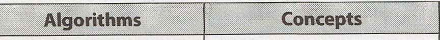
Árvores, Tries e Grafos Busca em Profundidade Memória (Pilha vs. Heap) Pilhas e Filas Busca Binária Recursão Heaps Merge Sort Programação Dinâmica Vetores I ArrayLists Quick Sort Tempo e Espaço em Big O Tabelas Hash Para cada um desses tópicos, certifique-se de entender como usá-los e implementá-los e, quando aplicável, a complexidade de espaço e tempo.
Praticar a implementação das estruturas de dados e dos algoritmos (no papel e depois em um computador) também é um ótimo exercício. Isso ajudará você a aprender como funcionam os detalhes internos das estruturas de dados, o que é importante para muitas entrevistas.
I Você pulou aquele parágrafo acima? Ele é importante. Se você não se sente muito, muito confortável com cada uma das estruturas de dados e algoritmos listados, pratique implementá-los do zero.
Em particular, tabelas hash são um tópico extremamente importante. Certifique-se de estar muito confortável com essa estrutura de dados.
A tabela abaixo é útil para muitas perguntas envolvendo escalabilidade ou qualquer tipo de limitação de memória. Memo rizar esta tabela não é estritamente necessário, mas pode ser útil. Você deve pelo menos se sentir confortável em derivá-la.
7 128
8 256
10 1024 1 mil 1 KB
16 65.536 64 KB 20 1.048.576 1 milhão 1 MB 30 1.073.741.824 1 bilhão 1 GB
32 4.294.967.296 4 GB
40 1.099.511.627.776 1 trilhão 1 TB
Por exemplo, você poderia usar esta tabela para calcular rapidamente que um vetor de bits que mapeia cada inteiro de 32 bits para um valor booleano caberia na memória de uma máquina típica. Há 232 inteiros assim. Como cada inteiro ocupa um bit nesse vetor de bits, precisamos de 232 bits (ou 229 bytes) para armazenar esse mapeamento. Isso é cerca de meio giga byte de memória, que pode ser facilmente mantido na memória de uma máquina típica.
Se você estiver fazendo uma triagem por telefone com uma empresa baseada na web, pode ser útil ter esta tabela à sua frente .
CrackingTheCodinglnterview.com I 6ª Edição 61 VII I Perguntas Técnicas
� Percorrendo um problema
O mapa/fluxograma abaixo conduz você por como resolver um problema. Use-o em sua prática. Você pode baixar este material e outros em CrackingTheCodinglnterview.com.
Um fluxograma de resolução de problemas
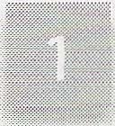
Ouça - - - - - - • Exemplo Preste muita atenção a qualquer A maioria dos exemplos é pequena demais ou é caso especial informação na descrição do problema. . Depure seu exemplo. Há alguma Você provavelmente precisará de tudo isso para um algoritmo ótimo forma de ele ser um caso especial? Ele é grande o suficiente? .
Força bruta • - -
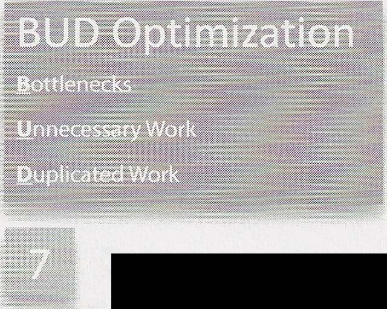
Obtenha uma solução de força bruta assim que possível. Não se preocupe em desenvolver um algoritmo eficiente ainda. Declare um algoritmo ingênuo e seu tempo de execução, depois otimize a partir dele. Ainda não escreva código!
Teste Teste nesta ordem: Otimize Percorra sua força bruta com BUD
1. Teste conceitual. Percorra seu código otimização ou tente algumas destas ideias: como faria em uma revisão detalhada de código.
• Procure qualquer informação não usada. Você normalmente 2. Código incomum ou fora do padrão.
precisa de todas as informações de um problema.
3. Pontos críticos, como aritmética e nós nulos.
> Resolva manualmente em um exemplo, depois 4. Casos de teste pequenos. É muito mais rápido do que um caso grande faça engenharia reversa do seu processo de pensamento.
caso de teste e igualmente eficaz. Como você resolveu?
5. Casos especiais e casos extremos. � Resolva "incorretamente" e então pense sobre
E quando encontrar bugs, corrija-os com cuidado! por que o algoritmo falha. Você consegue corrigir esses problemas?
Implemente � Faça uma troca entre tempo e espaço. Tabelas hash são especialmente úteis!
Seu objetivo é escrever um código bonito. Percorra .... Modularize seu código desde o •
começo e refatore para limpar qualquercoisa que não esteja bonita. Agora que você tem uma solução ótima, percorra
sua abordagem em detalhes. Certifique-se de entender cada detalhe antes de começar
a codificar.
62 Cracking the Coding Interview, 6ª Edição
VII I Perguntas Técnicas Vamos percorrer este fluxograma em mais detalhes.
As entrevistas devem ser difíceis. Se você não conseguir chegar a todas — ou a nenhuma — resposta imediatamente, tudo bem! Essa é a experiência normal, e ela não é ruim.
Preste atenção às orientações do entrevistador. O entrevistador pode assumir um papel mais ativo ou menos ativo na sua resolução do problema. O nível de participação do entrevistador depende do seu desempenho, da dificuldade da questão, do que o entrevistador está procurando e da própria personalidade dele.
Quando receber um problema (ou quando estiver praticando), trabalhe nele usando a abordagem abaixo.
Você provavelmente já ouviu esse conselho antes, mas estou dizendo algo um pouco além do conselho padrão de "certifique-se de ouvir o problema corretamente".
Sim, você deve ouvir o problema e garantir que o entendeu corretamente. Você deve fazer perguntas sobre qualquer coisa da qual não tenha certeza.
Mas estou dizendo algo além disso.
Ouça o problema com atenção e certifique-se de ter registrado mentalmente qualquer informação única no problema.
Por exemplo, suponha que uma pergunta comece com uma das linhas a seguir. É razoável presumir que a informação está ali por algum motivo.
• "Dados dois arrays que estão ordenados, encontre .. :'
Você provavelmente precisa saber que os dados estão ordenados. O algoritmo ótimo para a situação ordenada é provavelmente diferente do algoritmo ótimo para a situação não ordenada.
"Projete um algoritmo para ser executado repetidamente em um servidor que ... "
A situação de servidor/execução repetida é diferente da situação de execução única. Talvez isso signifique que você armazene dados em cache? Ou talvez justifique algum pré-processamento razoável no conjunto de dados inicial?
É improvável (embora não impossível) que seu entrevistador forneça essa informação se ela não afetar o algoritmo.
Muitos candidatos ouvirão o problema corretamente. Mas, dez minutos depois, ao desenvolver um algoritmo, alguns dos detalhes essenciais do problema terão sido esquecidos. Agora eles estão em uma situação em que, na verdade, não conseguem resolver o problema de forma ótima.
Seu primeiro algoritmo não precisa usar essa informação. Mas, se você ficar travado, ou ainda estiver trabalhando para desenvolver algo mais ótimo, pergunte a si mesmo se usou todas as informações do problema.
Você pode até achar útil escrever as informações pertinentes no quadro branco.
Um exemplo pode melhorar drasticamente sua capacidade de resolver uma pergunta de entrevista, e ainda assim muitos candi datos simplesmente tentam resolver a pergunta mentalmente.
CrackingTheCodingInterview.com | 6ª Edição 63 VII | Perguntas Técnicas
Quando ouvir uma pergunta, levante-se da cadeira, vá até o quadro branco e desenhe um exemplo.
Há uma arte em desenhar um exemplo, porém. Você quer um bom exemplo.
Muito frequentemente, um candidato pode desenhar algo assim como exemplo de uma árvore de busca binária:
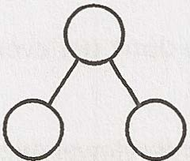
Este é um exemplo ruim por vários motivos. Primeiro, é pequeno demais. Você terá dificuldade para encontrar um padrão em um exemplo tão pequeno. Segundo, não é específico. Uma árvore de busca binária tem valores. E se os números lhe disserem algo sobre como abordar o problema? Terceiro, ele é, na verdade, um caso especial. Não é apenas uma árvore balanceada, mas também uma árvore bonita e perfeita, em que cada nó que não é folha tem dois filhos. Casos especiais podem ser muito enganosos.
Em vez disso, você quer criar um exemplo que seja: Específico. Ele deve usar números ou strings reais (se aplicável ao problema).
Suficientemente grande. A maioria dos exemplos é pequena demais, em cerca de 50%.
Não seja um caso especial. Tenha cuidado. É muito fácil desenhar inadvertidamente um caso especial. Se houver qualquer forma de seu exemplo ser um caso especial (mesmo que você ache que provavelmente não será grande coisa), você deve corrigi-lo.
Tente criar o melhor exemplo que puder. Se depois se descobrir que seu exemplo não está exatamente certo, você pode e deve corrigi-lo.
Depois de ter um exemplo pronto (na verdade, você pode inverter a ordem dos passos 2 e 3 em alguns problemas), apresente uma força bruta. Tudo bem, e é esperado, que seu algoritmo inicial não seja muito ótimo.
Alguns candidatos não apresentam a força bruta porque acham que ela é ao mesmo tempo óbvia e terrível. Mas aqui está o ponto: mesmo que seja óbvia para você, ela não é necessariamente óbvia para todos os candidatos. Você não quer que seu entre vistador pense que você está com dificuldade até para enxergar a solução fácil.
Tudo bem que essa solução inicial seja terrível. Explique qual é a complexidade de espaço e de tempo e então mergulhe nas melhorias.
Apesar de possivelmente lento, vale a pena discutir um algoritmo de força bruta. Ele é um ponto de partida para otimiza ções e ajuda você a entender melhor o problema.
Depois de ter um algoritmo de força bruta, você deve trabalhar para otimizá-lo. Algumas técnicas que funcionam bem são: 1. Procure qualquer informação não utilizada. Seu entrevistador disse que o array estava ordenado? Como você pode usar essa informação?
2. Use um exemplo novo. Às vezes, apenas ver um exemplo diferente destrava sua mente ou ajuda você a enxergar um padrão no problema.
3. Resolva-o "incorretamente". Assim como ter uma solução ineficiente pode ajudar você a encontrar uma solução eficiente, ter uma solução incorreta pode ajudar você a encontrar uma solução correta. Por exemplo, se pedirem que você gere um 64 Cracking the Coding Interview, 6ª Edição
VII \ Perguntas Técnicas
valor aleatório de um conjunto de modo que todos os valores sejam igualmente prováveis, uma solução incorreta poderia ser uma que retorna um valor semialeatório: qualquer valor poderia ser retornado, mas alguns são mais prováveis que outros. Você pode então pensar sobre por que essa solução não é perfeitamente aleatória. Você consegue rebalancear as probabilidades?
4. Faça uma troca entre tempo e espaço. Às vezes, armazenar estado extra sobre o problema pode ajudar você a otimizar o tempo de execução.
5. Pré-compute informações. Há uma forma de reorganizar os dados (ordenação etc.) ou calcular alguns valores antecipadamente que ajudem a economizar tempo no longo prazo?
6. Use uma tabela hash. Tabelas hash são amplamente usadas em perguntas de entrevista e devem estar no topo da sua mente.
7. Pense no melhor tempo de execução concebível (discutido na página 72).
Percorra a força bruta com essas ideias em mente e procure por BUD (página 67).
Depois de definir um algoritmo ótimo, não mergulhe direto no código. Reserve um momento para solidificar sua compreensão do algoritmo.
Codificar no quadro branco é lento — muito lento. Testar seu código e corrigi-lo também é. Como resultado, você precisa garantir que ele fique o mais próximo possível de "perfeito" desde o início.
Percorra seu algoritmo e desenvolva uma noção da estrutura do código. Saiba quais são as variáveis e quando elas mudam.
I E quanto ao pseudocódigo? Você pode escrever pseudocódigo se quiser. Tenha cuidado com o que você escreve. Passos básicos ("(1) Procure no array. (2) Encontre o maior. (3) Insira no heap.") ou lógica breve ("se p < q, mova p; senão, mova q") podem ser valiosos. Mas, quando seu pseudocódigo começa a ter laços for
escritos em português simples, então você está essencialmente apenas escrevendo código desleixado. Provavelmente seria mais rápido simplesmente escrever o código.
Se você não entende exatamente o que está prestes a escrever, terá dificuldade para codificá-lo. Levará mais tempo para terminar o código, e você terá maior probabilidade de cometer erros graves.
Agora que você tem um algoritmo ótimo e sabe exatamente o que vai escrever, vá em frente e implemente-o.
Comece a codificar no canto superior esquerdo do quadro branco (você vai precisar do espaço). Evite a “inclinação das linhas” (quando cada linha de código é escrita numa inclinação estranha). Isso deixa seu código com aparência bagunçada e pode ser muito confuso ao trabalhar em uma linguagem sensível a espaços em branco, como Python.
Lembre-se de que você tem apenas uma pequena quantidade de código para demonstrar que é um ótimo desenvolvedor. Tudo conta. Escreva um código bonito.
Código bonito significa: Código modularizado. Isso mostra bom estilo de codificação. Também facilita as coisas para você. Se seu algoritmo usa uma matriz inicializada como { { 1, 2, 3}, { 4, 5, 6}, ... } , não perca seu tempo escrevendo esse código de inicialização. Apenas finja que você tem uma função initlncrementalMatrix(int size). Preencha os detalhes depois, se precisar.
CrackingTheCodinglnterview.com I 6ª edição 65 VII I Perguntas Técnicas
Verificações de erro. Alguns entrevistadores se importam muito com isso, enquanto outros não. Um bom meio-termo aqui é adicionar um TODO e então explicar em voz alta o que você gostaria de testar.
Use outras classes/structs quando apropriado. Se você precisa retornar uma lista de pontos de início e fim de uma função, poderia fazer isso como um array bidimensional. Porém, é melhor fazer isso como uma lista de objetos StartEndPair (ou possivelmente Range). Você não precisa necessariamente preencher os detalhes da classe. Apenas finja que ela existe e trate dos detalhes depois, se tiver tempo.
, Bons nomes de variáveis. Código que usa variáveis de uma única letra em todos os lugares é difícil de ler. Isso não quer dizer que haja algo errado em usar i e j, quando apropriado (como em um laço for básico que itera por um array). Porém, tenha cuidado sobre onde faz isso. Se você escreve algo como int i = startOfChild ( array), talvez haja um nome melhor para essa variável, como startChild.
Nomes longos de variáveis também podem ser lentos de escrever. Um bom meio-termo que a maioria dos entrevistadores aceitará é abreviar depois do primeiro uso. Você pode usar startChild na primeira vez e então explicar ao entrevistador que passará a abreviar isso como sc dali em diante.
Os detalhes do que torna um código bom variam entre entrevistadores e candidatos, e também conforme o problema. Concentre-se em escrever um código bonito, qualquer que seja o significado disso para você.
Se você vir algo que pode refatorar depois, explique isso ao entrevistador e decida se vale ou não a pena gastar tempo fazendo isso. Geralmente vale, mas nem sempre.
Se você ficar confuso (o que é comum), volte ao seu exemplo e percorra-o novamente.
Você não faria check-in de código no mundo real sem testá-lo, e também não deveria “submeter” código em uma entrevista sem testá-lo.
Há, porém, maneiras inteligentes e pouco inteligentes de testar seu código.
O que muitos candidatos fazem é pegar seu exemplo anterior e testá-lo contra o código. Isso pode descobrir bugs, mas levará muito tempo. Testar manualmente é muito lento. Se você realmente usou um exemplo bom e grande para desenvolver seu algoritmo, então levará muito tempo para encontrar aquele pequeno erro de índice no fim do seu código.
Em vez disso, tente esta abordagem: 1. Comece com um teste “conceitual”. Um teste conceitual significa apenas ler e analisar o que cada linha de código faz. Pense nisso como se estivesse explicando as linhas de código para um revisor de código. O código faz o que você acha que deveria fazer?
2. Código com aparência estranha. Verifique de novo aquela linha de código que diz x = length - 2. Investigue aquele laço que começa em i = 1. Embora sem dúvida você tenha feito isso por um motivo, é muito fácil errar por um detalhe pequeno.
3. Pontos críticos. Você já programou tempo suficiente para saber que coisas provavelmente causarão problemas. Casos base em código recursivo. Divisão inteira. Nós nulos em árvores binárias. O início e o fim da iteração por uma lista ligada. Verifique essas coisas de novo.
4. Pequenos casos de teste. Esta é a primeira vez que usamos um caso de teste real e específico para testar o código. Não use aquele array bom e grande de 8 elementos da parte do algoritmo. Em vez disso, use um array de 3 ou 4 elementos. Ele provavelmente descobrirá os mesmos bugs, mas será muito mais rápido fazer isso.
5. Casos especiais. Teste seu código com valores nulos ou de elemento único, os casos extremos e outros casos especiais.
66 Cracking the Coding Interview, 6ª edição
Quando encontrar bugs (e provavelmente encontrará), é claro que você deve corrigi-los. Mas não faça simplesmente a primeira correção que vier à mente. Em vez disso, analise cuidadosamente por que o bug ocorreu e garanta que sua correção é a melhor opção.
� Técnica de Otimização e Solução nº 1: Procure por BUD
Esta talvez seja a abordagem mais útil que encontrei para otimizar problemas. “BUD” é um acrônimo bobo para; .G.argalos • !Jrabalho desnecessário • Duplicação de trabalho Estas são três das coisas mais comuns com que um algoritmo pode “desperdiçar” tempo. Você pode percorrer sua solução de força bruta procurando por essas coisas. Quando encontrar uma delas, pode então se concentrar em eliminá-la.
Se ainda não estiver ideal, você pode repetir essa abordagem sobre seu melhor algoritmo atual.
Um gargalo é uma parte do seu algoritmo que desacelera o tempo de execução geral. Há duas maneiras comuns de isso ocorrer: • Você tem um trabalho feito uma única vez que desacelera seu algoritmo. Por exemplo, suponha que você tenha um algoritmo de duas etapas em que primeiro ordena o array e depois encontra elementos com uma propriedade específica. A primeira etapa é O(N log N) e a segunda etapa é O(N). Talvez você pudesse reduzir a segunda etapa para O(log N) ou 0(1), mas isso importaria? Não muito. Certamente não é uma prioridade, pois O(N log N) é o gargalo. Até você otimizar a primeira etapa, seu algoritmo geral será O(N log N).
Você tem um bloco de trabalho que é feito repetidamente, como uma busca. Talvez você consiga reduzi-lo de O( N) para O(log N) ou até 0(1 ). Isso acelerará muito seu tempo de execução geral.
Otimizar um gargalo pode fazer uma grande diferença no seu tempo de execução geral.
I Exemplo: Dado um array de valores inteiros distintos, conte o número de pares de inteiros que têm diferença k. Por exemplo, dado o array { 1, 7, 5, 9, 2, 12, 3} e a diferença k = 2, há quatro pares com diferença 2: (1, 3), (3, 5), (5, 7), (7, 9).
Um algoritmo de força bruta é percorrer o array, começando pelo primeiro elemento, e então procurar pelos elementos restantes (que formarão o outro lado do par). Para cada par, calcule a diferença. Se a diferença for igual a k, incremente um contador da diferença.
O gargalo aqui é a busca repetida pelo “outro lado” do par. Portanto, essa é a principal coisa em que se concentrar para otimizar.
Como podemos encontrar mais rapidamente o “outro lado” correto? Bem, na verdade conhecemos o outro lado de ( x, ? ) . É x + k ou x - k. Se ordenássemos o array, poderíamos encontrar o outro lado para cada um dos N elementos em O( log N) tempo usando busca binária.
Agora temos um algoritmo de duas etapas, em que ambas levam O(N log N) tempo. Agora, a ordenação é o novo gargalo. Otimizar a segunda etapa não ajudará, porque a primeira etapa está nos desacelerando de qualquer forma.
Precisamos simplesmente eliminar por completo a primeira etapa e operar em um array não ordenado. Como podemos encontrar coisas rapidamente em um array não ordenado? Com uma tabela hash.
CrackingTheCodinglnterview.com I 6ª edição 67 VII I Perguntas Técnicas
Coloque tudo no array dentro da tabela hash. Então, para verificar se x + k ou x - k existem no array, nós apenas consultamos na tabela hash. Podemos fazer isso em O(N) tempo.
I 3 3 3 Exemplo: Imprima todas as soluções inteiras positivas para a equação a + b c + d3 em que a, b, c, e d são inteiros entre 1 e 1000.
Uma solução de força bruta terá simplesmente quatro laços for aninhados. Algo como: 1 n = 1000
2 for a from 1 to n 3 for b from 1 to n 4 for c from 1 to n S ford from 1 to n 6 if a3 + b3 == c3 + d3
7 print a, b, c, d Este algoritmo itera por todos os valores possíveis de a, b, c e d e verifica se essa combinação por acaso funciona.
É desnecessário continuar verificando outros possíveis valores de d. Apenas um poderia funcionar. Deveríamos ao menos sair do laço depois de encontrar uma solução válida.
1 n = 1000
2 for a from 1 to n 3 for b from 1 to n 4 for c from 1 to n S ford from 1 to n G if a3 + b3 == c3 + d3
7 print a, b, c, d 8 break// sair do laço de d Isso não fará uma mudança significativa no tempo de execução — nosso algoritmo ainda é O(N 4) — mas ainda é uma boa correção rápida a fazer.
Há algo mais que seja desnecessário? Sim. Se há apenas um valor válido de d para cada (a, b, c), então podemos simplesmente calculá-lo. Isto é apenas matemática simples: d = 3 3 3 3 a + b C - •
1 n = 1000
2 for a from 1 to n 3 for b from 1 to n 4 for c from 1 to n 5 d = pow(a3 + b3 3-c, 1/3) // Arredondará para int 6 if a3 + b3 3 == c + d3 Valide que o valor funciona 7 print a, b, c, d A instrução if na linha 6 é importante. A linha 5 sempre encontrará um valor para d, mas precisamos verificar se ele é o valor inteiro correto.
Isso reduzirá nosso tempo de execução de O(N4 3 ) para O(N ).
Usando o mesmo problema e o algoritmo de força bruta acima, vamos procurar trabalho duplicado desta vez.
O algoritmo opera essencialmente iterando por todos os pares (a, b) e então pesquisando todos os pares ( c, d) para descobrir se há alguma correspondência para aquele par (a, b).
68 Cracking the Coding Interview, 6ª edição
VII Perguntas Técnicas I Por que continuamos calculando todos os pares ( c, d) para cada par (a, b)? Deveríamos simplesmente criar a lista de pares ( c, d) uma vez. Então, quando tivermos um par (a, b), encontramos as correspondências dentro da lista ( c, d). Podemos localizar rapidamente as correspondências inserindo cada par ( c, d) em uma tabela hash que mapeia da soma para o par (ou, melhor, para a lista de pares que têm essa soma).
1 n = 1000
2 for c from 1 to n 3 ford from 1 to n 4 result = c3 + d'
5 append (c, d) to list at value map[result] 6 for a from 1 to n 7 for b from 1 to n 8 result = a' + b3
9 list = map.get(result) 10 for each pair in list 11 print a, b, pair Na verdade, uma vez que temos o mapa de todos os pares (c, d), podemos simplesmente usá-lo diretamente. Não precisamos gerar os pares (a, b). Cada (a, b) já estará no mapa.
1 n = 1000
2 for c from 1 to n 3 for d from 1 to n 4 result = c3 + d 3
5 append (c, d) to list at value map[result] 6
7 for each result, list in map 8 for each pair1 in list 9 for each pair2 in list 10 print pair1, pair2
Isso reduzirá nosso tempo de execução para O(N 2).
� Técnica Otimize e Resolva nº 2: DIY (Faça Você Mesmo)
Na primeira vez que você ouviu falar sobre como encontrar um elemento em um array ordenado (antes de aprender busca binária), provavelmente não pensou logo: “Ahá! Vamos comparar o elemento-alvo com o ponto médio e então chamar recursivamente a metade apropriada.”
Ainda assim, você poderia entregar a alguém sem nenhum conhecimento de ciência da computação uma pilha alfabetizada de trabalhos de alunos, e essa pessoa provavelmente implementaria algo parecido com busca binária para localizar o trabalho de um aluno. Ela provavelmente diria: “Nossa, Peter Smith? Ele estará em algum lugar na parte de baixo da pilha.” Ela escolheria um papel aleatório mais ou menos no meio, compararia o nome com “Peter Smith” e então continuaria esse processo no restante dos papéis. Embora não tenha nenhum conhecimento de busca binária, ela intuitivamente “entende” a ideia.
Nossos cérebros são curiosos nesse sentido. Coloque a expressão “Projete um algoritmo” na conversa e as pessoas muitas vezes ficam todas confusas. Mas dê às pessoas um exemplo real — seja apenas dos dados (por exemplo, um array) ou do paralelo da vida real (por exemplo, uma pilha de papéis) — e a intuição delas produz um algoritmo muito bom.
Vi isso acontecer inúmeras vezes com candidatos. O algoritmo computacional deles é extraordinariamente lento, mas, quando peço para resolver o mesmo problema manualmente, eles imediatamente fazem algo bem rápido. (E isso não é tão surpreendente assim, em certo sentido. Coisas lentas para um computador muitas vezes são lentas à mão. Por que você se submeteria a trabalho extra?) Portanto, quando receber uma pergunta, tente apenas resolvê-la intuitivamente em um exemplo real. Muitas vezes, um exemplo maior será mais fácil.
CrackingTheCodinglnterview.com J 6ª edição 69 VII I Perguntas Técnicas
I Exemplo: Dadas uma string menor s e uma string maior b, projete um algoritmo para encontrar todas as permutações da string menor dentro da maior. Imprima a localização de cada permutação.
Pense por um momento em como você resolveria esse problema. Observe que permutações são rearranjos da string, então os caracteres de s podem aparecer em qualquer ordem em b. Porém, eles precisam ser contíguos (não separados por outros caracteres).
Se você é como a maioria dos candidatos, provavelmente pensou em algo como: gerar todas as permutações de s e então procurar cada uma em b. Como há S! permutações, isso levará O(S! * B), onde S é o tamanho de s e B é o tamanho de b.
Isso funciona, mas é um algoritmo extraordinariamente lento. Na verdade, é pior que um algoritmo exponencial. Se s tiver 14 caracteres, isso passa de 87 bilhões de permutações. Acrescente mais um caractere a s e teremos 15 vezes mais permutações. Ai!
Abordado de outra forma, você poderia desenvolver um algoritmo decente com bastante facilidade. Dê a si mesmo um exemplo grande, como este: s: abbc b: cbabadcbbabbcbabaabccbabc Onde estão as permutações de s dentro de b? Não se preocupe com como você está fazendo isso. Apenas encontre-as. Até uma criança de 12 anos conseguiria fazer isso!
(Não, sério, vá encontrá-las. Eu espero!) Sublinho abaixo cada permutação.
s: abbc b: cbabadcbbabbcbabaabccbabc Você encontrou estas? Como?
Poucas pessoas — mesmo aquelas que antes chegaram ao algoritmo O(S! * B) — de fato geram todas as permutações de abbc para localizar essas permutações em b. Quase todo mundo adota uma de duas abordagens (muito semelhantes) abordagens: 1. Percorrer b e observar janelas deslizantes de 4 caracteres (já que s tem tamanho 4). Verificar se cada janela é uma permutação de s.
2. Percorrer b. Toda vez que você vir um caractere de s, verificar se os próximos quatro caracteres (o tamanho de s) são uma permutação de s.
Dependendo da implementação exata da parte “isto é uma permutação?”, você provavelmente terá um tempo de execução de ou O(B S), O(B S log S), ou O(B * S2). Nenhum deles é o algoritmo mais ótimo (há um algoritmo O(B)), mas é muito melhor do que tínhamos antes.
Experimente essa abordagem ao resolver perguntas. Use um exemplo bom e grande e, intuitivamente — manualmente, isto é — resolva-o para o exemplo específico. Depois, pense com cuidado em como você o resolveu. Faça engenharia reversa da sua própria abordagem.
Fique especialmente atento a quaisquer “otimizações” que você fez intuitiva ou automaticamente. Por exemplo, quando você estava resolvendo esse problema, talvez tenha simplesmente pulado a janela deslizante com “d” nela, já que “d” não está em abbc. Essa é uma otimização que seu cérebro fez, e é algo de que você deve pelo menos estar ciente no seu algoritmo.
70 Cracking the Coding Interview, 6ª edição
� Técnica Otimize e Resolva nº 3: Simplificar e Generalizar
Com Simplificar e Generalizar, implementamos uma abordagem em várias etapas. Primeiro simplificamos ou ajustamos alguma restrição, como o tipo de dado. Em seguida, resolvemos essa nova versão simplificada do problema. Por fim, depois que temos um algoritmo para o problema simplificado, tentamos adaptá-lo para a versão mais complexa.
I Exemplo: Um bilhete de resgate pode ser formado recortando palavras de uma revista para formar uma nova frase. Como você descobriria se um bilhete de resgate (representado como uma string) pode ser formado a partir de uma dada revista (string)?
Para simplificar o problema, podemos modificá-lo de modo que estejamos recortando caracteres de uma revista em vez de palavras inteiras.
Podemos resolver o problema simplificado do bilhete de resgate com caracteres simplesmente criando um array e contando os caracteres. Cada posição do array corresponde a uma letra. Primeiro, contamos o número de vezes que cada caractere no bilhete de resgate aparece, e então percorremos a revista para ver se temos todos aqueles caracteres.
Quando generalizamos o algoritmo, fazemos algo muito semelhante. Desta vez, em vez de criar um array com contagens de caracteres, criamos uma tabela hash que mapeia uma palavra para sua frequência.
� Técnica Otimize e Resolva nº 4: Caso Base e Construção
Com Caso Base e Construção, resolvemos o problema primeiro para um caso base (por exemplo, n = 1) e então tentamos construir a partir daí. Quando chegamos a casos mais complexos/interessantes (geralmente n = 3 ou n = 4), tentamos construí-los usando as soluções anteriores.
I Exemplo: Projete um algoritmo para imprimir todas as permutações de uma string. Para simplificar, assuma que todos os caracteres são únicos.
Considere uma string de teste abcdefg.
Caso "a" --> {"a"}
Caso "ab" --> {"ab", "ba"}
Caso "abc" --> ?
Este é o primeiro caso “interessante”. Se tivéssemos a resposta para P("ab"), como poderíamos gerar P("abc")? Bem, a letra adicional é "c", então podemos simplesmente inserir c em todos os pontos possíveis. Isto é: P("abc") inserir "c" em todas as posições de todas as strings em P("ab") P("abc") inserir "c" em todas as posições de todas as strings em {"ab","ba"} P("abc") merge({"cab", "acb", "abc"}, {"cba", "bca", "bac"}) P("abc") {"cab", "acb", "abc", "cba", "bca", "bac"}
Agora que entendemos o padrão, podemos desenvolver um algoritmo recursivo geral: geramos todas as permu tações de uma string s • • • sn “removendo” o último caractere e gerando todas as permutações de s 1 1 • • • s _ Depois que temos a lista de todas as permutações de s • • • sn_ iteramos por essa lista. Para cada string nela, n 1. 1 1,
inserimos Sn em todas as posições da string.
Algoritmos de Caso Base e Construção muitas vezes levam a algoritmos recursivos naturais.
CrackingTheCodinglnterview.com / 6ª edição 71 VII I Perguntas Técnicas
� Técnica Otimize e Resolva nº 5: Brainstorm de Estruturas de Dados
Essa abordagem certamente é meio improvisada, mas muitas vezes funciona. Podemos simplesmente percorrer uma lista de estruturas de dados e tentar aplicar cada uma. Essa abordagem é útil porque resolver um problema pode se tornar trivial assim que nos ocorre usar, digamos, uma árvore.
I Exemplo: Números são gerados aleatoriamente e armazenados em um array (em expansão). Como você acompanharia a mediana?
Nosso brainstorm de estruturas de dados poderia se parecer com o seguinte: Lista ligada? Provavelmente não. Listas ligadas tendem a não se sair muito bem ao acessar e ordenar números.
• Array? Talvez, mas você já tem um array. Você poderia de alguma forma manter os elementos ordenados? Isso provavelmente é caro. Vamos deixar isso em espera e voltar a ele se for necessário.
Árvore binária? Isso é possível, já que árvores binárias lidam razoavelmente bem com ordenação. Na verdade, se a árvore binária de busca estiver perfeitamente balanceada, o topo poderia ser a mediana. Mas tenha cuidado: se houver um número par de elementos, a mediana na verdade é a média dos dois elementos do meio. Os dois elementos do meio não podem ambos estar no topo. Este provavelmente é um algoritmo viável, mas vamos voltar a ele depois.
Heap? Um heap é muito bom em ordenação básica e em acompanhar máximos e mínimos. Isso é realmente interessante: se você tivesse dois heaps, poderia acompanhar a metade maior e a metade menor dos elementos. A metade maior é mantida em um min-heap, de modo que o menor elemento da metade maior fique na raiz. A metade menor é mantida em um max-heap, de modo que o maior elemento da metade menor fique na raiz. Agora, com essas estruturas de dados, você tem os potenciais elementos medianos nas raízes. Se os heaps deixarem de ter o mesmo tamanho, você pode rapidamente “rebalancear” os heaps removendo um elemento de um heap e inserindo-o no outro.
Observe que, quanto mais problemas você resolver, mais desenvolvido será seu instinto sobre qual estrutura de dados aplicar. Você também desenvolverá um instinto mais refinado sobre qual dessas abordagens é a mais útil.
� Melhor Tempo de Execução Concebível (BCR)
Considerar o melhor tempo de execução concebível pode oferecer uma dica útil para alguns problemas.
O melhor tempo de execução concebível é, literalmente, o melhor tempo de execução que você poderia conceber que uma solução para um problema tivesse. Você pode provar facilmente que não há como superar o BCR.
Por exemplo, suponha que você queira calcular o número de elementos que dois arrays (de comprimento A e B) têm em comum. Você sabe imediatamente que não pode fazer isso em menos que O ( A + B) tempo, pois precisa "tocar" cada elemento de cada array. O(A + B) é o BCR.
Ou suponha que você queira imprimir todos os pares de valores dentro de um array. Você sabe que não pode fazer isso em menos que 0 ( N2) tempo, pois há N2 pares para imprimir.
Mas tenha cuidado! Suponha que o entrevistador peça para encontrar todos os pares cuja soma seja k em um array (supondo que todos os elementos sejam distintos). Alguns candidatos que ainda não dominaram completamente o conceito de BCR dirão que o BCR é O(N2 2 ) porque é preciso examinar Npares.
Isso não é verdade. Querer todos os pares com uma soma específica não significa que você precise examinar todos os pares. Na verdade, não precisa.
72 Cracking the Coding Interview, 6ª edição
VII Questões técnicas I I Qual é a relação entre o Melhor Tempo Concebível e o Melhor Caso de Tempo de Execução? Nenhuma em absoluto! O Melhor Tempo Concebível é para um problema e depende em grande parte das entradas e saídas. Ele não tem nenhuma relação específica com um algoritmo específico. Na verdade, se você calcula o
Melhor Tempo Concebível pensando no que seu algoritmo faz, provavelmente está fazendo algo errado. O Melhor Caso de Tempo de Execução é para um algoritmo específico (e é um valor em grande parte inútil de qualquer forma).
Observe que o melhor tempo concebível não é necessariamente alcançável. Ele apenas diz que você não pode fazer melhor do que isso.
Um exemplo de como usar o BCR
Pergunta: dados dois arrays ordenados, encontre o número de elementos em comum. Os arrays têm o mesmo comprimento e cada um contém apenas elementos distintos.
Vamos começar com um bom exemplo. Sublinharemos os elementos em comum.
A: 13 27 35 40 49 55 59
B: 17 35 39 40 55 58 60
Um algoritmo de força bruta começa com cada elemento de A e procura por ele em B. Isso leva O ( N2) tempo, pois para cada um dos N elementos de A, precisamos fazer uma busca O ( N) em B.
O BCR é O ( N), porque sabemos que teremos de examinar cada elemento pelo menos uma vez, e há 2N elementos no total. (Se ignorássemos um elemento, o valor dele poderia alterar o resultado. Por exemplo, se nunca examinássemos o último valor de B, aquele 60 poderia ser um 59.) Vamos pensar em onde estamos agora. Temos um algoritmo O(N2) e queremos fazer algo melhor do que isso, potencialmente — mas não necessariamente — tão rápido quanto O(N).
Força bruta: O(N2) Algoritmo ideal: ?
BCR: O(N) O que existe entre O(N2) e O(N)? Muitas coisas. Na verdade, infinitas. Teoricamente, poderíamos ter um algoritmo O(N log(log(log(log(N)))) ). No entanto, tanto em entrevistas quanto na vida real, esse tempo de execução não aparece com muita frequência.
I Tente se lembrar disso na entrevista, pois confunde muita gente. Tempo de execução não é uma questão de múltipla escolha. É muito comum que o tempo seja O(log N), O(N), O(N log N), 0( N 2 ) ou 0( 2 N ). Mas você não deve presumir que algo tenha um tempo específico apenas por
eliminação por processo. Na verdade, quando você fica confuso sobre o tempo e quer chutar, é justamente quando tem maior probabilidade de existir um tempo menos óbvio e menos comum. Talvez o tempo seja 0( N 2K), em que N é o tamanho do array e K é o número de pares. Derive; não chute.
O mais provável é que estejamos buscando um algoritmo O(N) ou O(N log N). O que isso nos diz?
Se imaginarmos o tempo de execução do algoritmo atual como O(N x N), chegar a O(N) ou O(N x log N) pode significar reduzir aquele segundo O(N) da equação para O(1) ou O(log N).
I Esta é uma forma de o BCR ser útil. Podemos usar os tempos de execução para obter uma “dica” sobre o que precisamos reduzir.
CrackingTheCodingInterview.com / 6ª edição 73 VII / Questões técnicas
Aquele segundo O(N) vem da busca. O array está ordenado. Podemos buscar em um array ordenado em menos que O(N) tempo?
Sim. Podemos usar busca binária para encontrar um elemento em um array ordenado em O(log N) tempo.
Agora temos um algoritmo melhorado: O(N log N).
Força bruta: O(N2 ) Algoritmo melhorado: O(N log N) Algoritmo ideal: ?
BCR: O(N) Podemos fazer ainda melhor? Fazer melhor provavelmente significa reduzir O(log N) para O(1).
Em geral, não podemos buscar em um array — nem mesmo em um array ordenado — em menos que O(log N) tempo. Isso não é o caso geral, porém. Estamos fazendo essa busca repetidamente.
O BCR nos diz que nunca teremos um algoritmo mais rápido que O(N). Portanto, qualquer trabalho que façamos em O( N) tempo é “grátis”: não afetará nosso tempo de execução.
Releia a lista de dicas de otimização na página 64. Há algo que possa nos ajudar?
Uma das dicas sugere pré-computar ou fazer trabalho antecipadamente. Qualquer trabalho antecipado que façamos em O(N) tempo é grátis. Não afetará nosso tempo de execução.
I Este é outro ponto em que o BCR pode ser útil. Qualquer trabalho que você faça que seja menor ou igual ao BCR é “grátis”, no sentido de que não afetará seu tempo de execução. Talvez você queira eliminá-lo even tualmente, mas ainda não é uma prioridade.
Nosso foco ainda é reduzir a busca de O(log N) para O(1). Qualquer pré-computação que seja O(N) ou menor é “grátis”.
Neste caso, podemos simplesmente colocar tudo de B em uma tabela hash. Isso levará O(N) tempo. Depois, percorremos A e consultamos cada elemento na tabela hash. Essa consulta (ou busca) é O(1), então nosso tempo de execução é O(N).
Suponha que o entrevistador faça uma pergunta que nos dê arrepios: podemos fazer melhor?
Não em termos de tempo de execução. Alcançamos o tempo mais rápido possível; portanto, não podemos otimizar o tempo em big O. Poderíamos potencialmente otimizar a complexidade de espaço.
I Este é outro ponto em que o BCR é útil. Ele nos diz que “terminamos” em termos de otimização do tempo de execução e, portanto, devemos voltar nossos esforços para a complexidade de espaço.
Na verdade, mesmo sem o entrevistador nos provocar, deveríamos questionar nosso algoritmo. Teríamos alcançado exatamente o mesmo tempo se os dados não estivessem ordenados. Então por que o entre vistador nos deu arrays ordenados? Isso não é inédito, mas é um pouco estranho.
Vamos voltar ao nosso exemplo.
A: 13 27 35 40 49 55 59
B: 17 35 39 40 55 58 60
Agora estamos procurando um algoritmo que: • Opere em espaço O(1) (provavelmente). Já temos um algoritmo com espaço O(N) e tempo ideal. Se quisermos usar menos espaço adicional, isso provavelmente significa nenhum espaço adicional. Portanto, precisamos eliminar a tabela hash.
74 Cracking the Coding Interview, 6ª edição
VII I Questões técnicas • Opere em tempo O(N) (provavelmente). Provavelmente queremos ao menos igualar o melhor tempo atual, e sabemos que não podemos superá-lo.
• Use o fato de que os arrays estão ordenados.
Nosso melhor algoritmo que não usa espaço extra foi o de busca binária. Vamos pensar em como otimizá-lo. Podemos tentar percorrer o algoritmo.
1. Faça uma busca binária em B por A[0] 13. Não encontrado.
2. Faça uma busca binária em B por A[1] = 27. Não encontrado.
3. Faça uma busca binária em B por A[2] 35. Encontrado em B[1].
4. Faça uma busca binária em B por A[3] 40. Encontrado em B[5].
5. Faça uma busca binária em B por A[4] 49. Não encontrado.
6. ...
Pense em BUD. O gargalo é a busca. Há algo desnecessário ou duplicado?
É desnecessário que A[3] = 40 seja buscado em todo B. Sabemos que acabamos de encontrar 35 em B[1], então 40 certamente não estará antes de 35.
Cada busca binária deve começar de onde a anterior terminou.
Na verdade, agora não precisamos fazer uma busca binária. Podemos fazer apenas uma busca linear. Desde que a busca linear em B continue exatamente de onde a anterior terminou, sabemos que estaremos operando em tempo linear.
1. Faça uma busca linear em B por A[0] 13. Comece em B[0] 17. Pare em B[0] 17. Não encontrado.
2. Faça uma busca linear em B por A[1] 27. Comece em B[0] 17. Pare em B[1] 35. Não encontrado.
3. Faça uma busca linear em B por A[2] 35. Comece em B[1] 35. Pare em B[1] 35. Encontrado.
4. Faça uma busca linear em B por A[3] 40. Comece em B[2] 39. Pare em B[3] 40. Encontrado.
5. Faça uma busca linear em B por A[4] 49. Comece em B[3] 40. Pare em B[4] = 55. Encontrado.
6. ...
Este algoritmo é muito semelhante à intercalação de dois arrays ordenados. Ele opera em tempo O(N) e espaço O(1).
Agora alcançamos o BCR e temos espaço mínimo. Sabemos que não podemos fazer melhor.
I Esta é outra forma de usar o BCR. Se você alcançar o BCR e tiver espaço adicional O(1), então sabe que não pode otimizar o tempo nem o espaço em big O.
O Melhor Tempo de Execução Concebível não é um conceito de algoritmo "real", no sentido de que você não o encontrará em livros didáticos de algoritmos. Mas eu o considero pessoalmente muito útil, tanto ao resolver problemas quanto ao orientar pessoas na resolução de problemas.
Se você está com dificuldade para entendê-lo, certifique-se primeiro de compreender o tempo em notação Big O (página 38). Você precisa dominá-lo. Depois disso, calcular o BCR de um problema deve levar literalmente segundos.
CrackingTheCodinglnterview.com I 6ª Edição 75 VII I Questões Técnicas
� Lidando com Respostas Incorretas
Um dos rumores mais difundidos — e perigosos — é que os candidatos precisam acertar todas as questões. Isso não é bem verdade.
Primeiro, as respostas às perguntas da entrevista não devem ser consideradas "certas" ou "erradas". Ao avaliar o desempenho de alguém em uma entrevista, nunca penso: "Quantas perguntas essa pessoa acertou?". Não é uma avaliação binária. Em vez disso, trata-se de quão ótima foi a solução final, de quanto tempo a pessoa levou para chegar a ela, de quanta ajuda precisou e de quão limpo estava o código. Há uma série de fatores.
Segundo, seu desempenho é avaliado em comparação com o de outros candidatos. Por exemplo, se você resolver uma ques tão de forma ótima em 15 minutos e outra pessoa resolver uma questão mais fácil em cinco minutos, essa pessoa foi melhor que você? Talvez, mas talvez não. Se forem feitas perguntas realmente fáceis, pode-se esperar que você encontre soluções ótimas muito rapidamente. Mas, se as perguntas forem difíceis, é esperado que ocorram alguns erros.
Terceiro, muitas — talvez a maioria — das perguntas são difíceis demais para esperar que até mesmo um candidato forte apresente imediatamente o algoritmo ótimo. As perguntas que costumo fazer normalmente levariam de 20 a 30 minutos para serem resolvidas por candidatos fortes.
Ao avaliar milhares de processos de contratação no Google, só vi uma vez um candidato ter um conjunto de entrevistas "perfeito". Todos os outros, incluindo as centenas que receberam ofertas, cometeram erros.
� Quando Você Já Ouviu uma Pergunta Antes
Se você já ouviu uma pergunta antes, admita isso ao entrevistador. O entrevistador está fazendo essas pergun tas para avaliar suas habilidades de resolução de problemas. Se você já conhece a pergunta, não está dando a ele a opor tunidade de avaliá-lo.
Além disso, o entrevistador pode considerar muito desonesto que você não revele conhecer a pergunta. (E, por outro lado, você ganhará muitos pontos por honestidade se revelar isso.) � A Linguagem "Perfeita" para Entrevistas
Em muitas das principais empresas, os entrevistadores não são exigentes quanto às linguagens. Eles estão mais interessados em saber quão bem você resolve os problemas do que em saber se conhece uma linguagem específica.
Entretanto, outras empresas estão mais ligadas a uma linguagem e têm interesse em ver quão bem você consegue programar em uma linguagem específica.
Se você puder escolher a linguagem, provavelmente deverá escolher aquela com a qual se sente mais confortável.
Dito isso, se você conhece várias linguagens bem, deve levar em conta os pontos a seguir.
Não é obrigatório, mas o ideal é que seu entrevistador conheça a linguagem em que você está programando. Uma linguagem mais conhecida pode ser melhor por esse motivo.
Mesmo que o entrevistador não conheça sua linguagem de programação, ele deve conseguir entendê-la basi camente. Algumas linguagens são naturalmente mais legíveis que outras, devido à sua semelhança com outras linguagens.
76 Cracking the Coding Interview, 6ª Edição
VII Questões Técnicas I Por exemplo, Java é relativamente fácil de entender, mesmo para quem nunca programou nela. A maioria das pessoas já programou em algo com sintaxe semelhante à de Java, como C e C++.
Entretanto, linguagens como Scala ou Objective C têm uma sintaxe bastante diferente.
Algumas linguagens simplesmente expõem você a possíveis problemas. Por exemplo, usar C ++ significa que, além de todos os bugs comuns que podem aparecer no código, você também pode ter problemas de gerenciamento de memória e ponteiros.
Algumas linguagens são mais verbosas que outras. Java, por exemplo, é bastante verbosa em comparação com Python. Compare os seguintes trechos de código.
Python: 1 diet {"left": 1, "right": 2, "top": 3, "bottom": 4}; Java: l HashMap
2 diet. put("left", 1); 3 "right", 2
4 "top", 3
5 "bottom", 4
O candidato precisaria explicar as abreviações, mas a maioria dos entrevistadores não se importaria.
Algumas operações são mais fáceis em certas linguagens do que em outras. Por exemplo, em Python, é muito fácil retornar vários valores de uma função. Em Java, a mesma ação exigiria uma nova classe. Isso pode ser útil para determinados problemas.
Da mesma forma que no caso anterior, isso pode ser contornado simplesmente abreviando o código ou presumindo métodos que na verdade não existem. Por exemplo, se uma linguagem fornecer uma função para transpor uma matriz e outra linguagem não fornecer, isso não torna necessariamente a primeira linguagem muito melhor para programar (em um problema que precise de tal função). Você poderia simplesmente presumir que a outra linguagem tem um método semelhante.
� Como é um Bom Código "1 " -,, .• i,; - • ·
A esta altura, você provavelmente já sabe que os empregadores querem ver se você escreve código "bom e limpo". Mas o que isso realmente significa e como isso é demonstrado em uma entrevista?
De modo geral, um bom código tem as seguintes propriedades: • Correto: O código deve funcionar corretamente com todas as entradas esperadas e inesperadas.
· Eficiente: O código deve operar com a maior eficiência possível tanto em tempo quanto em espaço. Essa "efi ciência" inclui a eficiência assintótica (Big O) e a eficiência prática, do mundo real. Ou seja, um CrackingTheCodinglnterview.com I 6ª Edição 77 VII I Questões Técnicas
fator constante pode ser descartado ao calcular o tempo em Big O, mas, na vida real, ele pode ser muito importante.
• Simples: Se você pode fazer algo em 10 linhas em vez de 100, faça. O código deve ser o mais rápido possível para um desenvolvedor escrever.
Legível: Outro desenvolvedor deve conseguir ler seu código e entender o que ele faz e como ele faz isso. Código legível tem comentários quando necessário, mas implementa as coisas de maneira facilmente compreensível. Isso significa que seu código sofisticado, que faz muitos deslocamentos complexos de bits, não é necessariamente bom código.
Manutenível: O código deve ser razoavelmente adaptável às mudanças durante o ciclo de vida de um produto e deve ser fácil de manter por outros desenvolvedores, assim como pelo desenvolvedor inicial.
Buscar esses aspectos exige equilíbrio. Por exemplo, muitas vezes é recomendável sacrificar certo grau de eficiência para tornar o código mais manutenível, e vice-versa.
Você deve pensar nesses elementos enquanto escreve código durante uma entrevista. Os aspectos a seguir são maneiras mais específicas de demonstrar a lista anterior.
Suponha que você tenha recebido a tarefa de escrever uma função para somar duas expressões matemáticas simples que tenham a forma Ax• + Bxb + . . . (em que os coeficientes e expoentes podem ser quaisquer números reais positivos ou negativos). Isto é, a expressão é uma sequência de termos, em que cada termo é simplesmente uma constante multiplicada por um expoente. O entrevistador também acrescenta que não quer que você precise fazer análise de strings, portanto você pode usar qualquer estrutura de dados que quiser para armazenar as expressões.
Há várias maneiras diferentes de implementar isso.
Implementação ruim
Uma implementação ruim seria armazenar a expressão como um único array de doubles, em que o k-ésimo elemento corresponde ao coeficiente do termo xk da expressão. Essa estrutura é problemática porque não permitiria expressões com expoentes negativos ou não inteiros. Ela também exigiria um array de 1000 elementos para armazenar apenas a expressão x1000• 1 int[] sum(double[] expr1, double[] expr2) {
2
3 }
Implementação menos ruim
Uma implementação um pouco menos ruim seria armazenar a expressão como um conjunto de dois arrays: coeficientes e expoentes. Nessa abordagem, os termos da expressão são armazenados em qualquer ordem, mas ficam "associados" de modo que o i-ésimo termo da expressão seja representado por coefficients[i] * xexponents[i].
Nessa implementação, se coefficients[p] = k e exponents[p] = m, então o p-ésimo termo é kxm. Embora isso não tenha as mesmas limitações da solução anterior, ainda é bastante confuso. Você precisa manter o controle de dois arrays para uma única expressão. As expressões poderiam ter valores "indefinidos" se os arrays tivessem comprimentos diferentes. E retornar uma expressão é incômodo, porque você precisa retornar dois arrays. 1 ??? sum(double[] coeffsl, double[] expon1, double[] coeffs2, double[] expon2) { 2
3 }
78 Cracking the Coding Interview, 6ª edição
VII I Questões técnicas Boa implementação
Uma boa implementação para esse problema é projetar sua própria estrutura de dados para a expressão. 1 class ExprTerm {
2 double coefficient; 3 double exponent; 4 }
5
6 ExprTerm[] sum(ExprTerm[] exprl, ExprTerm[] expr2) {
7
8 }
Algumas pessoas argumentaram (e ainda argumentam) que isso é "otimização excessiva". Talvez seja, talvez não. Independentemente de você considerar isso uma otimização excessiva, o código acima demonstra que você pensa em como projetar seu código e não simplesmente junta qualquer coisa às pressas para terminar o mais rápido possível.
Suponha que você tenha recebido a tarefa de escrever uma função para verificar se o valor de um número binário (passado como uma string) é igual à representação hexadecimal de uma string.
Uma implementação elegante desse problema aproveita a reutilização de código.
1 boolean compareBinToHex(String binary, String hex) {
2 int nl convertFromBase(binary, 2); 4 if (nl < 0 I I 3 int n2 = convertFromBase(hex, 16); n2 < 0) {
5 return false; 6 }
7 return nl == n2; 8 }
9
11 if (base< 2 I I 10 int convertFromBase(String number, int base) { (base> 10 && base!= 16)) return -1; 12 int value = 0; 13 for (int i= number.length() - 1; i >= 0; i--) {
14 int digit = digitToValue(number.charAt(i)); 15 if (digit< 0 I I digit>= base) {
16 return -1; 17 }
18 int exp= number.length() - 1 - i; 19 value += digit * Math.pow(base, exp); 20 }
21 return value; 22 }
23
24 int digitToValue(char c) { ... }
Poderíamos ter implementado código separado para converter um binário· número e um código hexadecimal, mas isso apenas torna nosso código mais difícil de escrever e manter. Em vez disso, reutilizamos código escrevendo um método convertFromBase e um método digitToValue.
Escrever código modular significa separar trechos isolados de código em seus próprios métodos. Isso ajuda a manter o código mais manutenível, legível e testável.
CrackingTheCodinglnterview.com | 6ª edição 79 VII \ Questões técnicas
Imagine que você esteja escrevendo um código para trocar o elemento mínimo e o máximo de um array de inteiros. Você poderia implementar tudo em um único método como este: l void swapMinMax(int[] array) {
2 int minindex = 0; 3 for (int i= 1; i < array.length; i++) { 4 if (array[i] < array[minindex]) { 5 minindex = i; G }
7 }
8
9 int maxindex = 0; 10 for (inti= 1; i < array.length; i++) { 11 if (array[i] > array[maxindex]) { 12 maxindex = i; 13 }
14 }
15
16 int temp= array[minindex]; 17 array[minindex] array[maxindex]; 18 array[maxindex] = temp; 19 }
Ou, você poderia implementar de uma maneira mais modular, separando os trechos relativamente isolados de código em seus próprios métodos.
1 void swapMinMaxBetter(int[] array) { 2 int minindex = getMinindex(array); 3 int maxindex = getMaxindex(array); 4 swap(array, minindex, maxindex); 5 }
6
7 int getMinindex(int[] array) { ... }
8 int getMaxindex(int[] array) { ... }
9 void swap(int[] array, int m, int n) { ... }
Embora o código não modular não seja particularmente ruim, o aspecto positivo do código modular é que ele é facilmente testável, pois cada componente pode ser verificado separadamente. À medida que o código fica mais complexo, torna-se cada vez mais importante escrevê-lo de maneira modular. Isso facilitará sua leitura e manutenção. Seu inter vistador quer ver você demonstrar essas habilidades na entrevista.
Só porque seu entrevistador pede que você escreva código para verificar se um tabuleiro normal de jogo da velha tem um vencedor, isso não significa que você deva presumir que seja um tabuleiro 3x3. Por que não escrever o código de uma maneira mais geral que o implemente para um tabuleiro NxN ?
Escrever código flexível e de propósito geral também pode significar usar variáveis em vez de valores fixos ou usar templates/generics para resolver um problema. Se pudermos escrever nosso código para resolver um problema mais geral, devemos fazê-lo.
É claro que há um limite. Se a solução for muito mais complexa para o caso geral e parecer desnecessária neste momento, pode ser melhor implementar apenas o caso simples e esperado.
Um sinal de um programador cuidadoso é que ele não faz suposições sobre a entrada. Em vez disso, valida se a entrada é o que deveria ser, usando instruções ASSERT ou instruções if.
80 Cracking the Coding Interview, 6ª edição
Por exemplo, lembre-se do código anterior para converter a representação de um número de sua base i (por exemplo, base 2 ou base 16) para um int.
1 int convertToBase(String number, int base) { I I 2 if (base < 2 (base > 10 && base != 16)) return -1; 3 int value = 0; 4 for (int i= number.length() - 1; i >= 0; i--) {
5 int digit= digitToValue(number.charAt(i)); I I 6 if (digit < 0 digit >= base) { 7 return -1; 8 }
9 int exp= number.length() - 1 - i; 10 value += digit * Math.pow(base, exp); 11 }
12 return value; 13 }
Na linha 2, verificamos se a base é válida (presumimos que bases maiores que 10, exceto a base 16, não tenham uma representação padrão na forma de string). Na linha 6, fazemos outra verificação de erro: garantimos que cada dígito esteja dentro do intervalo permitido.
Verificações como essas são essenciais no código de produção e, portanto, também no código de entrevistas.
É claro que escrever essas verificações de erro pode ser tedioso e desperdiçar um tempo precioso em uma entrevista. O importante é deixar claro que você escreveria as verificações. Se as verificações de erro forem muito mais do que uma instrução if rápida, talvez seja melhor deixar algum espaço para elas e indicar ao seu entrevistador que você as preencherá quando terminar o restante do código.
� Não desista!
Sei que as perguntas de entrevista podem ser intimidantes, mas isso faz parte do que o entrevistador está avaliando. Você aceita o desafio ou recua com medo? É importante enfrentar de bom grado um problema difícil. Afinal, lembre-se de que as entrevistas devem ser difíceis. Não deveria ser uma surpresa quando você se depara com um problema realmente complicado.
Para ganhar pontos extras, demonstre entusiasmo ao resolver problemas difíceis.
CrackingTheCodinglnterview.com I 6ª edição 81
Quando você achava que poderia relaxar depois das entrevistas, agora enfrenta o estresse pós- entrevista: deve aceitar a oferta? Ela é a certa? Como recusar uma oferta? E quanto aos prazos? Trataremos de algumas dessas questões aqui e entraremos em mais detalhes sobre como avaliar uma oferta e como negociá-la.
� Como lidar com ofertas e rejeição
Seja aceitando uma oferta, recusando uma oferta ou respondendo a uma rejeição, a forma como você age importa.
Quando as empresas fazem uma oferta, quase sempre há um prazo associado a ela. Normalmente, esses prazos variam de uma a quatro semanas. Se você ainda estiver esperando uma resposta de outras empresas, pode pedir uma exten- são. As empresas geralmente tentarão atender ao pedido, se possível.
Mesmo que você não tenha interesse em trabalhar nesta empresa agora, talvez tenha interesse em trabalhar nela daqui a alguns anos. (Ou seus contatos podem um dia se mudar para uma empresa mais interessante.) É do seu interesse recusar a oferta em bons termos e manter uma linha de comunicação aberta.
Ao recusar uma oferta, dê um motivo que não seja ofensivo e que não possa ser contestado. Por exemplo, se você estiver recusando uma empresa grande por uma startup, poderia explicar que sente que uma startup é a escolha certa para você neste momento. A empresa grande não pode de repente "se tornar" uma startup, então não poderá contestar seu motivo.
Ser rejeitado é desagradável, mas isso não significa que você não seja um excelente engenheiro. Muitos excelentes engenheiros vão mal, seja porque não se saem bem nessas entrevistas ou porque simplesmente tiveram um dia ruim.
Felizmente, a maioria das empresas entende que essas entrevistas não são perfeitas e que muitos bons engenheiros são rejeitados. Por isso, as empresas costumam ter interesse em entrevistar novamente candidatos rejeitados. Algumas empresas até entram em contato com candidatos antigos ou aceleram o processo de candidatura por causa de seu desempenho an terior.
Quando voce receber a ligacao infeliz, use isso como uma oportunidade para construir uma ponte para se candidatar novamente. Agradeca ao recrutador pelo tempo dele, explique que voce esta decepcionado, mas que entende a posicao da empresa, e pergunte quando voce pode se candidatar novamente a empresa.
82 Cracking the Coding Interview, 6a Edicao
VIII I A Oferta e Alem
Voce tambem pode pedir feedback ao recrutador. Na maioria dos casos, as grandes empresas de tecnologia nao oferecem feed back, mas ha algumas empresas que oferecem. Nao custa perguntar algo como: "Ha alguma coisa em que voce sugeriria que eu trabalhasse para a proxima vez?"
� Avaliando a Oferta
Parabens! Voce recebeu uma oferta! E, se tiver sorte, talvez ate tenha recebido varias ofertas. O trabalho do seu recrutador agora e fazer tudo o que puder para incentivar voce a aceita-la. Como saber se a empresa e a escolha certa para voce? Vamos passar por algumas coisas que voce deve considerar ao avaliar uma oferta.
Talvez o maior erro que os candidatos cometem ao avaliar uma oferta seja olhar demais para o salario. Os candidatos muitas vezes olham tanto para esse unico numero que acabam aceitando a oferta que e pior finan ceiramente. O salario e apenas uma parte da sua remuneracao financeira. Voce tambem deve olhar para: • Bonus de contratacao, mudanca e outros beneficios pontuais: Muitas empresas oferecem um bonus de contratacao e/ou ajuda de relo cacao. Ao comparar ofertas, e sensato amortizar esse dinheiro ao longo de tres anos (ou pelo tempo que voce espera ficar).
• Diferenca de custo de vida: Impostos e outras diferencas de custo de vida podem fazer uma grande diferenca no seu salario liquido. O Vale do Silicio, por exemplo, e mais de 30% mais caro que Seattle.
• Bonus anual: Bonus anuais em empresas de tecnologia podem variar de 3% a 30%. Seu recrutador pode revelar o bonus anual medio, mas, se nao revelar, consulte amigos na empresa.
• Opcoes e concessoes de acoes: A remuneracao em participacao acionaria pode formar outra grande parte da sua remuneracao anual.
Assim como os bonus de contratacao, a remuneracao em acoes entre empresas pode ser comparada amortizando-a ao longo de tres anos e, entao, somando esse valor ao salario.
Lembre-se, porém, de que o que você aprende e a forma como uma empresa impulsiona sua carreira muitas vezes fazem muito mais diferença para suas finanças no longo prazo do que o salário. Pense com muito cuidado sobre quanta importância você realmente quer dar ao dinheiro neste momento.
Por mais entusiasmado que você esteja ao receber esta oferta, é provável que, em alguns anos, comece a pensar em fazer entre vistas novamente. Portanto, é importante pensar desde já em como essa oferta afetaria sua trajetória profissional. Isso significa considerar as seguintes perguntas: Até que ponto o nome da empresa valoriza meu currículo?
Quanto vou aprender? Vou aprender coisas relevantes?
Qual é o plano de promoções? Como a carreira dos desenvolvedores evolui?
Se eu quiser migrar para a gestão, esta empresa oferece um plano realista?
A empresa ou a equipe está crescendo?
Se eu quiser sair da empresa, ela fica perto de outras empresas que me interessam ou terei de me mudar?
O último ponto é extremamente importante e costuma ser ignorado. Se houver apenas algumas outras empresas para você escolher em sua cidade, suas opções de carreira serão mais restritas. Ter menos opções significa uma probabilidade menor de descobrir oportunidades realmente excelentes.
CrackingTheCodinglnterview.com | 6ª edição 83 VIII | A oferta e o que vem depois
Em igualdade de condições, é claro que estabilidade é algo bom. Ninguém quer ser demitido.
No entanto, na prática, as condições não são iguais. As empresas mais estáveis também costumam crescer mais devagar.
A importância que você deve dar à estabilidade da empresa depende muito de você e de seus valores. Para alguns candidatos, a estabilidade não deve ser um fator importante. Você consegue encontrar outro emprego com relativa rapidez? Nesse caso, talvez seja melhor escolher a empresa que cresce rapidamente, mesmo que seja instável. Se você tem restrições de visto de trabalho ou simplesmente não confia em sua capacidade de encontrar algo novo, a estabilidade pode ser mais importante.
Por último, mas não menos importante, você naturalmente deve considerar o quanto será feliz. Qualquer um dos fatores a seguir pode influenciar isso: O produto: Muitas pessoas dão grande importância ao produto que estão desenvolvendo, e é claro que isso tem alguma relevância. Entretanto, para a maioria dos engenheiros, há fatores mais importantes, como as pessoas com quem trabalham.
Gestor e colegas de equipe: Quando as pessoas dizem que amam ou odeiam o emprego, muitas vezes é por causa de seus colegas de equipe e do gestor. Você já os conheceu? Gostou de conversar com eles?
• Cultura da empresa: A cultura está ligada a tudo, desde a forma como as decisões são tomadas até o ambiente social, passando pela organização da empresa. Pergunte a seus futuros colegas como eles descreveriam a cultura.
• Carga horária: Pergunte aos futuros colegas quantas horas eles costumam trabalhar e avalie se isso combina com seu estilo de vida. Lembre-se, porém, de que a jornada costuma ser muito mais longa antes de prazos importantes.
Além disso, observe que, se você puder trocar de equipe com facilidade (como ocorre no Google e no Facebook), terá a oportunidade de encontrar uma equipe e um produto que combinem bem com você.
� Negociação
Anos atrás, inscrevi-me em um curso de negociação. No primeiro dia, o instrutor pediu que imaginássemos uma situação em que quiséssemos comprar um carro. A concessionária A vendia o carro por um preço fixo de $20.000, sem negociação. A concessionária B permitia negociar. Quanto o carro teria de custar (depois da negociação) para escolhermos a concessionária B? (Rápido! Responda para si mesmo!) Em média, a turma disse que o carro teria de custar $750 a menos. Em outras palavras, os alunos estavam dispostos a pagar $750 apenas para não precisar negociar por cerca de uma hora. Sem surpresa, em uma enquete da turma, a maioria desses alunos também disse que não negociava suas ofertas de emprego. Simplesmente aceitava o que a empresa oferecia a eles.
Muitos de nós provavelmente entendem essa postura. Negociar não é divertido para a maioria das pessoas. Ainda assim, os benefícios financeiros da negociação geralmente compensam.
Faça um favor a si mesmo: negocie. Estas dicas ajudarão você a começar.
1. Simplesmente faça. Sim, eu sei que dá medo; (quase) ninguém gosta de negociar. Mas vale muito, muito a pena. Os recrutadores não vão retirar uma oferta porque você negociou, então há pouco a perder. Isso é especialmente verdadeiro quando a oferta vem de uma empresa maior. Provavelmente você nem negociará com seus futuros colegas de equipe.
2. Tenha uma alternativa viável. Fundamentalmente, os recrutadores negociam com você porque temem que você não entre na empresa de outra forma. Se você tiver opções alternativas, essa preocupação se tornará muito mais concreta.
3. Faça um pedido específico: É mais eficaz pedir $7000 a mais no salário do que simplesmente pedir “mais”.
84 Cracking the Coding Interview, 6ª edição
VIII | A oferta e o que vem depois
Afinal, se você apenas pedir mais, o recrutador poderá acrescentar outros $1000 e, tecnicamente, terá satis feito seu pedido.
4. Peça um pouco além: Em negociações, as pessoas geralmente não concordam com tudo o que você exige. É uma conversa de ida e volta . Peça um pouco mais do que realmente espera conseguir, pois a empresa provavelmente encontrará um meio-termo com você.
5. Pense além do salário: As empresas muitas vezes estão mais dispostas a negociar componentes que não sejam o salário, pois aumentá-lo demais poderia significar pagar a você mais do que a seus pares. Considere pedir mais participação acionária ou um bônus de contratação maior. Outra possibilidade é pedir que seus benefícios de reloca ção sejam pagos em dinheiro, em vez de a empresa pagar diretamente as despesas da mudança. Essa é uma ótima alternativa para muitos universitários, cujas despesas reais de mudança são relativamente baixas.
6. Use o meio em que você se sai melhor: Muitas pessoas recomendarão negociar somente por telefone. Até certo ponto, elas têm razão: é melhor negociar por telefone. No entanto, se você não se sentir à vontade em uma negociação por telefone, faça-a por e-mail. É mais importante que você tente negociar do que fazê-lo por um meio específico.
Além disso, ao negociar com uma empresa grande, saiba que ela muitas vezes possui “níveis” para os funcionários, e todos os funcionários de determinado nível recebem valores semelhantes. A Microsoft possui um sistema especialmente bem definido para isso. Você pode negociar dentro da faixa salarial de seu nível, mas ir além dela exige subir de nível. Se você busca um aumento grande, precisará convencer o recrutador e sua futura equipe de que sua experiência corresponde a esse nível mais alto — algo difícil, mas viável de fazer.
� No trabalho
Conduzir sua trajetória profissional não termina na entrevista. Na verdade, ela está apenas começando. Quando você realmente entra em uma empresa, precisa começar a pensar em sua carreira. Para onde irá a partir daqui e como chegará lá?
É uma história comum: você entra em uma empresa e fica empolgado. Tudo é ótimo. Cinco anos depois, ainda está lá. É então que percebe que os últimos três anos pouco acrescentaram às suas habilidades ou ao seu currículo. Por que você não saiu depois de dois anos?
Quando você gosta do trabalho, é muito fácil se deixar absorver por ele e não perceber que sua carreira não está avançando. Por isso, você deve traçar sua trajetória profissional antes de começar um novo emprego. Onde quer estar daqui a dez anos? Quais etapas são necessárias para chegar lá? Além disso, a cada ano, pense no que o próximo ano de experiência lhe trará e em como sua carreira ou suas habilidades evoluíram no ano anterior.
Ao planejar sua trajetória com antecedência e revisá-la regularmente, você evita cair nessa armadilha da acomo dação.
Quando quiser partir para algo novo, sua rede de contatos será essencial. Afinal, candidatar-se pela internet é complicado; uma indicação pessoal é muito melhor, e sua capacidade de consegui-la depende da sua rede.
No trabalho, estabeleça relacionamentos sólidos com seu gestor e seus colegas. Quando funcionários saírem, mantenha contato com eles. Uma simples mensagem amigável algumas semanas depois da saída ajudará a transformar essa relação de um contato profissional em um contato pessoal.
CrackingTheCodinglnterview.com | 6ª edição 85 VIII | A oferta e o que vem depois
A mesma abordagem se aplica à sua vida pessoal. Seus amigos e os amigos deles são contatos valiosos. Esteja disposto a ajudar os outros, e será mais provável que eles ajudem você.
Embora alguns gestores realmente procurem desenvolver sua carreira, outros adotam uma postura mais distante. Cabe a você buscar os desafios adequados à sua carreira.
Seja (razoavelmente) franco com seu gestor sobre seus objetivos. Se quiser assumir mais projetos de programação de backend diga isso. Se quiser explorar mais oportunidades de liderança, conversem sobre como você poderia fazer isso.
Você precisa ser seu principal defensor para alcançar seus objetivos de acordo com o cronograma que definiu.
Estabeleça a meta de participar de pelo menos uma entrevista por ano, mesmo que não esteja procurando ativamente outro emprego. Isso manterá suas habilidades de entrevista em dia e também ajudará você a acompanhar os tipos de oportunidades (e salários) que existem no mercado.
Se receber uma oferta, você não precisa aceitá-la. Ainda assim, terá criado uma conexão com a empresa, caso queira trabalhar nela no futuro.
1
'i
86 Cracking the Coding Interview, 6ª edição
Arrays e strings
Esperamos que todos os leitores deste livro e stejam familiarizados com arrays e strings, por isso não vamos entediar você com esses detalhes. Em vez disso, vamos nos concentrar em algumas das técnicas e questões mais comuns relacionadas a essas estruturas de dados. Observe que perguntas sobre arrays e sobre strings muitas vezes são intercambiáveis. Isto é, uma pergunta que este livro apresenta usando um array pode ser feita como uma pergunta sobre string, e vice-versa.
� Hash tables
Uma hash table é uma estrutura de dados que mapeia chaves para valores, permitindo buscas muito eficientes. Existem diversas formas de implementá-la. Aqui, descreveremos uma implementação simples, mas comum.
Nesta implementação simples, usamos um array de linked lists e uma função de hash code. Para inserir uma chave (que pode ser uma string ou praticamente qualquer outro tipo de dado) e um valor, fazemos o seguinte: 1. Primeiro, calculamos o hash code da chave, que geralmente será um int ou long. Observe que duas chaves diferentes podem ter o mesmo hash code, pois pode haver um número infinito de chaves e um número finito de valores int.
2. Em seguida, mapeie o hash code para um índice do array. Isso pode ser feito com algo como hash (key) % array_length. Naturalmente, dois hash codes diferentes podem ser mapeados para o mesmo índice.
3. Nesse índice, há uma linked list de chaves e valores. Armazene a chave e o valor nesse índice. Precisamos usar uma linked list por causa das colisões: duas chaves diferentes podem ter o mesmo hash code, ou dois hash codes diferentes podem ser mapeados para o mesmo índice.
Para recuperar o par de valores por sua chave, repita esse processo. Calcule o hash code a partir da chave e depois calcule o índice a partir do hash code. Em seguida, percorra a linked list em busca do valor que possui essa chave.
Se o número de colisões for muito alto, o tempo de execução no pior caso será O(N), em que N é o número de chaves. No entanto, em geral pressupomos uma boa implementação que mantenha as colisões em um nível mínimo; nesse caso, o tempo de busca é O(1).
hi abc
"aa"---..897
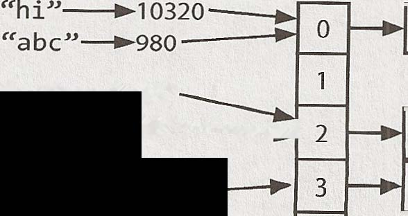
"qs"---..897---..... 1 aa qs "pl"�63 pl 4
88 Cracking the Coding Interview, 6ª edição
Outra opção é implementar a hash table com uma árvore binária de busca balanceada. Isso proporciona um tempo de busca O(log N). A vantagem é a possibilidade de usar menos espaço, pois deixamos de alocar um array grande. Também podemos iterar pelas chaves em ordem, o que às vezes pode ser útil.
� ArrayList e arrays redimensionáveis
Em algumas linguagens, os arrays (muitas vezes chamados de listas nesse caso) são redimensionados automaticamente. O array ou a lista cresce à medida que você acrescenta itens. Em outras linguagens, como Java, os arrays têm tamanho fixo. O tamanho é definido quando o array é criado.
Quando precisamos de uma estrutura semelhante a um array que permita redimensionamento dinâmico, normalmente usamos um ArrayList. Um ArrayList é um array que se redimensiona conforme necessário e ainda oferece acesso O(1). Em uma implementação típica, quando o array fica cheio, seu tamanho dobra. Cada duplicação leva tempo O(n), mas acontece com tão pouca frequência que o tempo amortizado de inserção continua sendo O(1).
1 Arraylist
Essa é uma estrutura de dados essencial para entrevistas. Certifique-se de que você domina arrays/listas redimensionáveis dinamicamente na linguagem com que trabalhará. Observe que tanto o nome da estrutura de dados quanto o “fator de redimensionamento” (que é 2 em Java) podem variar.
Por que o tempo amortizado de inserção é O(1)?
Suponha que você tenha um array de tamanho N. Podemos trabalhar de trás para frente para calcular quantos elementos copiamos a cada aumento de capacidade. Observe que, quando aumentamos o array para K elementos, antes ele tinha '.Yi metade desse tamanho. Portanto, precisamos copiar elementos.
aumento final da capacidade n/2 elementos a copiar aumento anterior da capacidade: n/4 elementos a copiar aumento anterior da capacidade: n/8 elementos a copiar aumento anterior da capacidade: n/16 elementos a copiar segundo aumento da capacidade 2 elementos a copiar primeiro aumento da capacidade 1 elemento a copiar % %
Portanto, o número total de cópias para inserir N elementos é aproximadamente Yi' + + + . . . + 2 + 1, que é pouco menor que N.
I Se a soma dessa série não for óbvia para você, imagine o seguinte: suponha que você precise percorrer um quilômetro até a loja. Você anda 0,5 quilômetro, depois 0,25 quilômetro, depois 0,125 quilômetro, e assim por diante. Você nunca ultrapassará um quilômetro (embora chegue muito perto disso).
Portanto, inserir N elementos exige um trabalho total de O(N). Cada inserção leva O(1) em média, embora algumas inserções levem tempo O(N) no pior caso.
� StringBuilder
Imagine que você esteja concatenando uma lista de strings, como mostrado abaixo. Qual seria o tempo de execução deste código ? Para simplificar, suponha que todas as strings tenham o mesmo comprimento (vamos chamá-lo de x) e que existam n strings.
CrackingTheCodinglnterview.com | 6ª edição 89
1 String joinWords(String[] words) {
2 String sentence = ""; 3 for (String w: words) {
4 sentence = sentence + w; 5 }
6 return sentence; 7 }
A cada concatenação, uma nova cópia da string é criada, e as duas strings são copiadas caractere por caractere. A primeira iteração exige que sejam copiados x caracteres. A segunda iteração exige a cópia de 2x caracteres. A terceira iteração exige 3x, e assim por diante. Portanto, o tempo total é O(x + 2x + ... + nx). Isso se reduz a O(xn2).
I Por que é O(xn2)? Porque 1 + 2 + ... + n é igual a n(n+1)/2, ou O(n2 ). StringBuilder pode ajudar você a evitar.esse problema. StringBuilder simplesmente cria um array redimensionável com todas as strings, copiando-as de volta para uma string somente quando necessário.
1 String joinWords(String[] words) {
2 StringBuilder sentence new StringBuilder(); 3 for (String w : words) {
4 sentence.append(w); 5 }
6 return sentence.toString(); 7 }
Um bom exercício para praticar strings, arrays e estruturas de dados em geral é implementar sua própria versão de StringBuilder, HashTable e ArrayList.
Leitura adicional: Resolução de colisões em hash tables (pág. 636), busca de substring de Rabin-Karp (pág. 636).
Questões de entrevista
1.1 É única: Implemente um algoritmo para determinar se uma string contém apenas caracteres únicos. E se você não puder usar estruturas de dados adicionais?
Dicas: #44, #7 7 7, #732
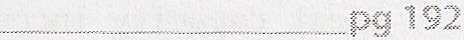
1.2 Verificar permutação: Dadas duas strings, escreva um método que determine se uma é uma permutação da outra.
Dicas: #84, #722, #737 #7,
_pg 1 9 3
1.3 URLify: Escreva um método que substitua todos os espaços de uma string por '%20'. Você pode pressupor que a string tenha espaço suficiente no final para comportar os caracteres adicionais e que o comprimento “real” da string seja fornecido. (Observação: se implementar em Java, use um array de caracteres para poder realizar essa operação in-place.) EXEMPLO
Entrada: "Mr John Smith ", 13 Saída: "Mr%20John%20Smith"
Dicas: #53, # 118
90 Cracking the Coding Interview, 6ª edição
1.4 Permutação de palíndromo: Dada uma string, escreva uma função que verifique se ela é uma permutação de um palín dromo. Um palíndromo é uma palavra ou frase que é igual quando lida de frente para trás ou de trás para frente. Uma permutação é um rearranjo de letras. O palíndromo não precisa se limitar a palavras existentes no dicionário.
EXEMPLO
Entrada: Tact Coa Saída: True (permutations: "taco cat", "atco eta", etc.) Dicas: #106, #121, #134, #136
1.5 A uma edição de distância: Há três tipos de edição que podem ser realizados em strings: inserir um caractere, remover um caractere ou substituir um caractere. Dadas duas strings, escreva uma função que verifique se elas estão a uma edição (ou nenhuma edição) de distância.
EXEMPLO
pale, ple -> true pales, pale -> true pale, bale -> true pale, bake -> false Dicas: #23, #97, #130
1.6 Compressão de strings: Implemente um método que realize uma compressão básica de strings usando a contagem de caracteres repetidos. Por exemplo, a string aabcccccaaa se tornaria a2blc5a3. Se a string “comprimida” não ficar menor do que a original, seu método deverá retornar a string original. Você pode pressupor que a string contém apenas letras maiúsculas e minúsculas (a - z).
Dicas: #92, #110
1.7 Rotacionar matriz: Dada uma imagem representada por uma matriz NxN em que cada pixel da imagem ocupa 4
bytes, escreva um método para girar a imagem em 90 graus. Você consegue fazer isso in-place?
Dicas: #51, #100
1.8 Zerar matriz: Escreva um algoritmo que, quando um elemento de uma matriz MxN for 0, defina toda a sua linha e coluna como 0.
Dicas: #17, #74, #702
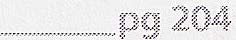
1.9 Rotação de string: suponha que você tenha um método isSubstring que verifica se uma palavra é substring de outra. Dadas duas strings, sl e s2, escreva código para verificar se s2 é uma rotação de sl usando apenas uma chamada a isSubstring (por exemplo, “waterbottle” é uma rotação de “erbottlewat”).
Dicas: #34, #88, # 7 04
206
Questões adicionais: design orientado a objetos (#7.12), recursão (#8.3), ordenação e busca (#10.9), C++ (#12.11), problemas médios (#16.8, #16.17, #16.22), problemas difíceis (#17.4, #17.7, #17.13, #17.22, #17.26).
As dicas começam na página 653.
CrackingTheCodinglnterview.com | 6ª edição 91
Linked lists
Umalinked list é uma estrutura de dados que representa uma sequência de nós. Em uma singly linked list, cada nó aponta para o próximo nó da linked list. Uma doubly linked list fornece a cada nó ponteiros tanto para o próximo nó quanto para o nó anterior.
O diagrama a seguir representa uma doubly linked list:
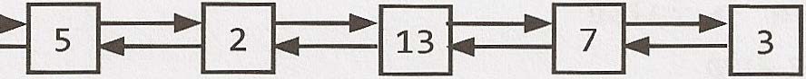
1
Diferentemente de um array, uma linked list não oferece acesso em tempo constante a determinado “índice” da lista. Isso significa que, para encontrar o K-ésimo elemento da lista, você precisará percorrer K elementos.
A vantagem de uma linked list é permitir adicionar e remover itens do início da lista em tempo constante. Isso pode ser útil em aplicações específicas.
� Criando uma linked list
O código abaixo implementa uma singly linked list bastante básica.
1 class Node {
2 Node next= null; 3 int data; 4
5 public Node(int d) {
6 data= d; 7 }
8
9 void appendToTail(int d) {
10 Node end= new Node(d); 11 Node n = this; 12 while (n.next != null) {
13 n = n.next; 14 }
15 n.next = end; 16
17 }
Nesta implementação, não temos uma estrutura de dados LinkedList. Acessamos a linked list por meio de uma referência ao nó cabeça da linked list. Ao implementar a linked list dessa forma, é preciso ter um pouco de cuidado. E se vários objetos precisarem de uma referência para a linked list e depois o nó cabeça mudar? Alguns objetos ainda poderão estar apontando para o nó cabeça antigo.
92 Cracking the Coding Interview, 6ª edição
Poderíamos, se quiséssemos, implementar uma classe LinkedList que encapsulasse a classe Node. Essencialmente, ela teria apenas uma variável de instância: o nó cabeça. Isso resolveria em grande parte o problema anterior.
Lembre-se de que, ao discutir uma linked list em uma entrevista, você precisa saber se ela é uma singly linked list ou uma doubly linked list.
� Excluindo um nó de uma singly linked list
Excluir um nó de uma linked list é relativamente simples. Dado um nó n, encontramos o nó anterior prev e definimos prev.next como n.next. Se a lista for duplamente ligada, também precisamos atualizar n.next, definindo n.next.prev como n.prev. Os pontos importantes são: (1) verificar se há um ponteiro null e (2) atualizar o ponteiro da cabeça ou da cauda conforme necessário.
Além disso, se você implementar esse código em C, C++ ou outra linguagem que exija que o desenvolvedor faça o gerenciamento de memória, deverá considerar se o nó removido precisa ser desalocado. 1 Node deleteNode(Node head, int d) { 2 Node n = head; 3
4 if (n.data == d) {
5 return head.next; /* moved head*/ 6 }
7
8 while (n.next != null) {
9 if (n.next.data == d) {
10 n.next = n.next.next; 11 return head; /* head didn't change*/ 12 }
13 n = n.next; 14 }
15 return head; 16 }
� A técnica dos “ponteiros corredores”
A técnica do “corredor” (ou segundo ponteiro) é usada em muitos problemas de linked lists. Essa técnica consiste em percorrer a linked list com dois ponteiros simultaneamente, mantendo um à frente do outro. O nó “rápido” pode estar adiantado por uma distância fixa ou pode saltar vários nós para cada nó percorrido pelo nó “lento”.
Por exemplo, suponha que você tenha uma linked list a1 ->a2 -> ••• ->an ->b1 ->b2 -> ••• ->bn e queira reorganizá-la como a1 ->b1 ->a2 ->b2 -> ••• ->an ->bn. Você não sabe o comprimento da linked list (mas sabe que o comprimento é um número par ).
Você pode fazer um ponteiro pl (o ponteiro rápido) avançar dois elementos para cada avanço de um elemento feito por p2 . Quando pl chegar ao fim da linked list, p2 estará no ponto médio. Então, leve pl de volta ao início e comece a “entrelaçar” os elementos. A cada iteração, p2 seleciona um elemento e o insere depois de pl.
� Problemas recursivos
Diversos problemas de linked lists dependem de recursão. Se você tiver dificuldade para resolver um problema de linked list, avalie se uma abordagem recursiva funcionaria. Não entraremos em detalhes sobre recursão aqui, pois um capítulo posterior é dedicado ao assunto.
CrackingTheCodinglnterview.com J 6ª edição 93
No entanto, lembre-se de que algoritmos recursivos ocupam pelo menos espaço O(n), em que n é a profundidade da chamada recursiva. Todos os algoritmos recursivos podem ser implementados iterativamente, embora possam ser muito mais complexos.
Questões de entrevista
2.1 Remover duplicatas: escreva código para remover duplicatas de uma linked list não ordenada.
PERGUNTA ADICIONAL
Como você resolveria esse problema se não fosse permitido usar um buffer temporário?
Dicas: #9, #40
................................................... pg208
2.2 Retornar o K-ésimo a partir do fim: Implemente um algoritmo que encontre o k-ésimo elemento a partir do fim de uma singly linked list.
Dicas: #8, #25, #41, #67, #126
2.3 Excluir nó do meio: Implemente um algoritmo para excluir um nó do meio (isto é, qualquer nó que não seja o primeiro nem o último, não necessariamente o nó exatamente central) de uma singly linked list, tendo acesso somente a esse nó.
EXEMPLO
Entrada: o nó c da linked list a->b->c->d->e->f Resultado: nada é retornado, mas a nova linked list fica assim: a->b->d->e->f Dica: #72
•-----"•·• m. �---··� ••••••••••••••••••••• ••··�·-''"•-�mm••·*'9
2.4 Particionar: Escreva código para particionar uma linked list em torno de um valor x, de modo que todos os nós menores que x venham antes de todos os nós maiores ou iguais a x. Se x estiver contido na lista, os valores de x precisam apenas ficar depois dos elementos menores que x (veja abaixo). O elemento de partição x pode aparecer em qualquer posição da “partição direita”; ele não precisa ficar entre as partições esquerda e direita. EXEMPLO
Entrada: 3 -> 5 -> 8 -> 5 -> 10 -> 2 -> 1 [partition= 5] Saída: 3 -> 1 -> 2 -> 10 -> 5 -> 5 -> 8 Dicas: #3, #24
94 Cracking the Coding Interview, 6ª edição
2.5 Somar listas: Você tem dois números representados por uma linked list, em que cada nó contém um único dígito. Os dígitos são armazenados na ordem inversa , de modo que o algarismo das unidades fique no início da lista. Escreva uma função que some os dois números e retorne o resultado como uma linked list.
EXEMPLO
Entrada: (7-> 1 -> 6) + (5 -> 9 -> 2). Isto é, 617 + 295.
Saída: 2 -> 1 -> 9. Isto é, 912.
PERGUNTA ADICIONAL
Suponha que os dígitos estejam armazenados na ordem direta. Repita o problema acima.
EXEMPLO
Entrada: (6 -> 1 -> 7) + (2 -> 9 -> 5). Isto é, 617 + 295.
Saída: 9 -> 1 -> 2. Isto é, 912.
Dicas: #30, #71, #109 #7, #95, 2.6 Palíndromo: Implemente uma função para verificar se uma linked list é um palíndromo.
Dicas: #5, #13, #29, #61, #101
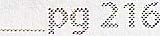
2.7 Interseção: Dadas duas singly linked lists, determine se as duas listas se cruzam. Retorne o nó de inter seção. Observe que a interseção é definida com base na referência, não no valor. Isto é, se o k-ésimo nó da primeira linked list for exatamente o mesmo nó (por referência) que o j-ésimo nó da segunda linked list, então elas se cruzam.
Dicas: #20, #45, #55, #93, #111, #120, #129 #65, #76, 2.8 Detecção de loop: Dada uma linked list circular, implemente um algoritmo que retorne o nó no início do loop.
DEFINIÇÃO
Linked list circular: uma linked list (corrompida) em que o ponteiro next de um nó aponta para um nó anterior, formando um loop na linked list.
EXEMPLO
Entrada: A -> B -> C -> D -> E -> C [the same C as earlier]
Saída: C
Dicas: #50, #83, #90 #69, Questões adicionais: árvores e grafos (#4.3), design orientado a objetos (#7.12), System Design e escal abilidade (#9.5), problemas médios (#16.25), problemas difíceis (#17.12).
As dicas começam na página 653.
CrackingTheCodinglnterview.com | 6ª edição 95
Stacks e queues
As questões sobre stacks e queues serão muito mais fáceis de enfrentar se você conhecer todos os detalhes dessas estruturas. Os problemas, porém, podem ser bastante traiçoeiros. Embora alguns exijam apenas pequenas modificações na estrutura de dados original, outros apresentam desafios muito mais complexos. � Implementando uma stack
A estrutura de dados stack é exatamente o que o nome sugere: uma pilha de dados. Em certos tipos de problema, pode ser vantajoso armazenar dados em uma stack em vez de em um array.
Uma stack usa a ordem LIFO (last-in, first-out). Isto é, assim como em uma pilha de pratos, o item acrescentado mais recentemente à stack é o primeiro item a ser removido.
Ela utiliza as seguintes operações: pop ( ) : remove o item do topo da stack.
push ( i tern): adiciona um item ao topo da stack.
peek(): retorna o item no topo da stack.
is Empty (): retorna true se, e somente se, a stack estiver vazia.
Diferentemente de um array, uma stack não oferece acesso em tempo constante ao i-ésimo item. Entretanto, ela permite adições em tempo constante e remoções porque não exige o deslocamento dos elementos.
Fornecemos um código de exemplo simples para implementar uma stack. Observe que ela também pode ser implementada usando uma linked list, desde que os itens sejam adicionados e removidos pelo mesmo lado. 1 public class MyStack
2 private static class StackNode
6 public StackNode(T data) {
7 this.data = data; 8 }
9 }
16
11 private StackNode
13 public T pop() {
14 if (top == null) throw new EmptystackException(); 15 T item = top.data; 96 Cracking the Coding Interview, 6ª edição
15 top= top.next; 17 return item; 18 }
19
20 public void push(T item) {
21 StackNode
25
26 public T peek() {
27 if (top== null) throw new EmptyStackException(); 28 return top.data; 29 }
30
31 public boolean isEmpty() {
32 return top== null; 33 }
34 }
Um caso em que stacks costumam ser úteis é o de certos algoritmos recursivos. Às vezes, é preciso empilhar dados temporários em uma stack durante a recursão e depois removê-los durante o backtracking (por exemplo, porque a verificação recursiva falhou). Uma stack oferece uma forma intuitiva de fazer isso.
Uma stack também pode ser usada para implementar iterativamente um algoritmo recursivo. (Este é um bom exercício! Pegue um algoritmo recursivo simples e implemente-o de forma iterativa.) � Implementando uma queue
Uma queue segue a ordem FIFO (first-in, first-out). Assim como em uma fila diante de uma bilheteria, os itens são removidos da estrutura de dados na mesma ordem em que foram adicionados.
Ela utiliza as seguintes operações: add ( i tern): adiciona um item ao fim da lista.
remove (): remove o primeiro item da lista.
peek ( ) : retorna o item no início da queue.
is Empty(): retorna true se, e somente se, a queue estiver vazia.
Uma queue também pode ser implementada com uma linked list. Na verdade, elas são essencialmente a mesma coisa, desde que os itens sejam adicionados e removidos por lados opostos.
1 public class MyQueue
2 private static class QueueNode
6 public QueueNode(T data) { 7 this.data = data; 8 }
9 }
10
11 private QueueNode
14 public void add(T item) {
CrackingTheCodinglnterview.com I 6ª edição 97
15 QueueNode
17 last.next= t; 18 }
19 last = t; 20 if (first== null) {
21 first= last; 22 }
23 }
24
25 public T remove() {
26 if (first== null) throw new NoSuchElementException(); 27 T data= first.data; 28 first= first.next; 29 if (first == null) {
30 last = null; 31 }
32 return data; 33 }
34
35 public T peek() {
36 if (first== null) throw new NoSuchElementException(); 37 return first.data; 38 }
39
40 public boolean isEmpty() {
41 return first== null; 42 }
43 }
É particularmente fácil cometer erros ao atualizar o primeiro e o último nó de uma queue. Não deixe de conferir isso duas vezes.
Queues são usadas com frequência na busca em largura ou na implementação de um cache.
Na busca em largura, por exemplo, usamos uma queue para armazenar uma lista dos nós que precisamos processar. Sempre que processamos um nó, adicionamos seus nós adjacentes ao fim da queue. Isso nos permite processar os nós na ordem em que são encontrados.
Questões de entrevista
3.1 Três em um: Descreva como você poderia usar um único array para implementar três stacks.
Dicas: #2, #72, #38, #58
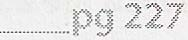
3.2 Stack mínima: Como você projetaria uma stack que, além de push e pop, tivesse uma função min que retornasse o menor elemento? Push, pop e min devem operar em tempo O(1). Dicas: #27, #78 #59,
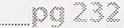
98 Cracking the Coding Interview, 6ª edição
3.3 Pilha de pratos: Imagine uma pilha (literal) de pratos. Se a pilha ficar alta demais, poderá tombar.
Por isso, na vida real, provavelmente começaríamos uma nova pilha quando a anterior ultrapassasse determinado limite. Implemente uma estrutura de dados SetOfStacks que imite esse comportamento. SetOfStacks deve
ser composta por várias stacks e criar uma nova stack quando a anterior ultrapassar sua capacidade. SetOfStacks.push() e SetOfStacks.pop() devem se comportar exatamente como em uma única stack (isto é, pop() deve retornar os mesmos valores que retornaria se houvesse apenas uma stack).
PERGUNTA ADICIONAL
Implemente uma função popAt ( int index) que realize uma operação pop em uma substack específica. Dicas: #64, #87
pg233
3.4 Queue por meio de stacks: Implemente uma classe MyQueue que implemente uma queue usando duas stacks.
Dicas: #98, #7 74
........ _ -·--· --·········-·--------- _pg 236
3.5 Ordenar stack: Escreva um programa que ordene uma stack de modo que os menores itens fiquem no topo. Você pode usar uma stack temporária adicional, mas não pode copiar os elementos para nenhuma outra estrutura de dados (como um array). A stack oferece as seguintes operações: push, pop, peek e isEmpty. Dicas: #15, #32, #43
.... ......................................................................... P9 237
3.6 Abrigo de animais: Um abrigo que recebe apenas cães e gatos funciona estritamente segundo a ordem “primeiro a entrar, primeiro a sair”. As pessoas devem adotar o animal “mais antigo” (com base no horário de chegada) entre todos os animais do abrigo ou podem escolher se preferem um cão ou um gato (e receberão o animal mais antigo desse tipo). Elas não podem escolher um animal específico. Crie as estruturas de dados para manter esse sistema e implemente operações como enqueue, dequeueAny, dequeueDog e dequeueCat. Você pode usar a estrutura de dados LinkedList fornecida pela linguagem. Dicas: #22, #63 #56, ........... ..................................... pg 239
Questões adicionais: linked lists (#2.6), problemas médios (#16.26), problemas difíceis (#17.9).
As dicas começam na página 653.
CrackingTheCodinglnterview.com | 6ª edição 99
Árvores e grafos
M u itos candidatos consideram os problemas de árvores e grafos alguns dos mais complicados. Buscar em uma árvore é mais complexo do que buscar em uma estrutura de dados organizada linearmente, como um array ou uma linked list. Além disso, os tempos médio e de pior caso podem ser radicalmente diferentes, e precisamos avaliar ambos os aspectos de qualquer algoritmo. Ter fluência para implementar uma árvore ou um grafo do zero será essencial.
Como a maioria das pessoas está mais familiarizada com árvores do que com grafos (e elas são um pouco mais simples), discutiremos primeiro as árvores. Isso foge um pouco da ordem lógica, pois uma árvore é, na verdade, um tipo de grafo.
I Observação: alguns termos deste capítulo podem variar ligeiramente entre diferentes livros e outras fontes. Se você estiver acostumado a uma definição diferente, não há problema. Não deixe de esclarecer qualquer ambiguidade com o entrevistador.
� Tipos de árvores
Uma boa maneira de entender uma árvore é por meio de uma explicação recursiva. Uma árvore é uma estrutura de dados composta por nós.
Toda árvore possui um nó raiz. (Na verdade, isso não é estritamente necessário na teoria dos grafos, mas costuma ser assim que usamos árvores em programação, especialmente em entrevistas de programação.) O nó raiz possui zero ou mais nós filhos.
Cada nó filho possui zero ou mais nós filhos, e assim por diante.
A árvore não pode conter ciclos. Os nós podem ou não estar em determinada ordem, podem conter valores de qualquer tipo de dado e podem ou não ter referências de volta para seus nós pais.
Uma definição muito simples da classe Node é: 1 class Node {
2 public String name; 3 public Node[] children; 4 }
Também pode existir uma classe Tree que encapsule esse nó. Para fins de questões de entrevista, normalmente não usamos uma classe Tree. Você pode usá-la se achar que deixa o código mais simples ou melhor, mas isso raramente acontece. 1 class Tree {
2 public Node root; 3 }
100 Cracking the Coding Interview, 6ª edição
Questões sobre árvores e grafos estão repletas de detalhes ambíguos e suposições incorretas. Fique atento aos problemas a seguir e peça esclarecimentos quando necessário.
Árvores versus árvores binárias
Uma árvore binária é uma árvore em que cada nó possui no máximo dois filhos. Nem toda árvore é binária. Por exemplo, a árvore abaixo não é binária. Poderíamos chamá-la de árvore ternária.
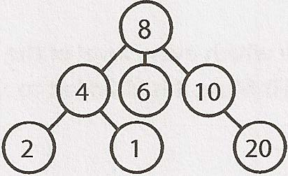
Em certas situações, você pode ter uma árvore que não seja binária. Por exemplo, suponha que esteja usando uma árvore para representar vários números de telefone. Nesse caso, poderia usar uma árvore de ordem 10, com cada nó tendo até 10 filhos (um para cada dígito).
Um nó sem filhos é chamado de nó “folha”.
Árvore binária versus árvore binária de busca
Uma árvore binária de busca é uma árvore binária em que todo nó satisfaz uma propriedade específica de ordenação: todos os descendentes à esquerda <= n < todos os descendentes à direita. Isso deve valer para cada nó n.
I A definição de uma árvore binária de busca pode variar ligeiramente quanto à igualdade. Em algumas defi nições, a árvore não pode ter valores duplicados. Em outras, os valores duplicados ficam à direita ou podem ficar em qualquer um dos lados. Todas são definições válidas, mas você deve esclarecer isso com o entrevistador.
Observe que essa desigualdade deve valer para todos os descendentes de um nó, não apenas para seus filhos imediatos. A árvore à esquerda abaixo é uma árvore binária de busca. A árvore à direita não é, pois 12 está à esquerda de 8.
Uma árvore binária de busca. Não é uma árvore binária de busca.
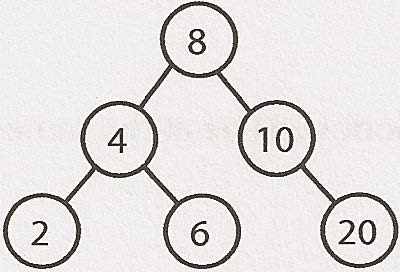
Ao receber uma questão sobre árvores, muitos candidatos pressupõem que o entrevistador se refere a uma árvore binária de busca . Não deixe de perguntar. Uma árvore binária de busca impõe a condição de que, para cada nó, seus descendentes à esquerda sejam menores ou iguais ao nó atual, que por sua vez é menor que os descendentes à direita.
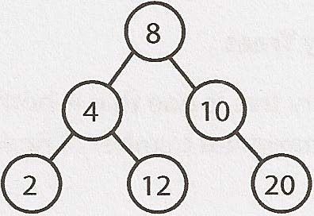
Balanceadas versus não balanceadas
Embora muitas árvores sejam balanceadas, nem todas são. Peça esclarecimentos ao entrevistador. Observe que balancear uma árvore não significa que as subárvores esquerda e direita tenham exatamente o mesmo tamanho (como nas “árvores binárias perfeitas” do diagrama a seguir).
CrackingTheCodinglnterview.com | 6ª edição 101
Uma forma de pensar nisso é que uma árvore “balanceada” na verdade significa algo mais próximo de “não terrivelmente desbalance ada”. Ela é balanceada o suficiente para garantir tempos O(log n) nas operações de inserção e busca, mas não necessariamente tão balanceada quanto poderia ser.
Dois tipos comuns de árvores balanceadas são as árvores rubro-negras (pág. 639) e as árvores AVL (pág. 637). Elas são discutidas com mais detalhes na seção Tópicos avançados.
Árvores binárias completas
Uma árvore binária completa é uma árvore binária em que todos os níveis estão totalmente preenchidos, com a possível exceção do último nível. Na medida em que o último nível é preenchido, isso acontece da esquerda para a direita.
não é uma árvore binária completa uma árvore binária completa
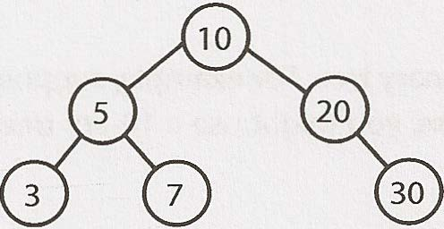
Árvores binárias cheias
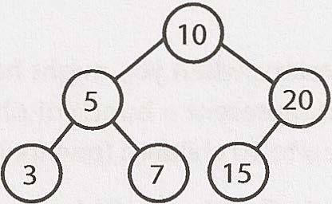
Uma árvore binária cheia é uma árvore binária em que cada nó possui zero ou dois filhos. Isto é, nenhum nó possui apenas um filho.
não é uma árvore binária cheia uma árvore binária cheia
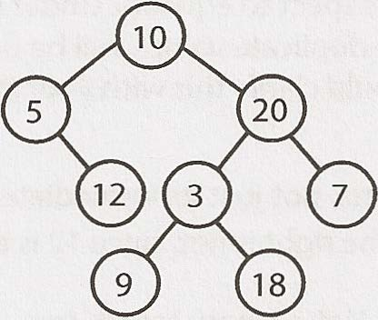
Árvores binárias perfeitas
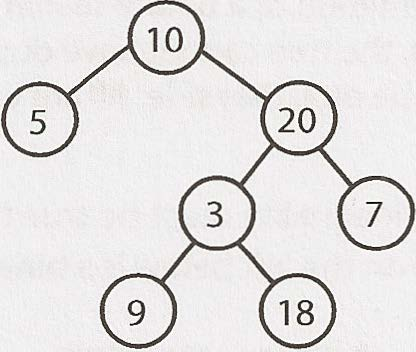
Uma árvore binária perfeita é, ao mesmo tempo, cheia e completa. Todos os nós folha ficam no mesmo nível, e esse nível possui o número máximo de nós.
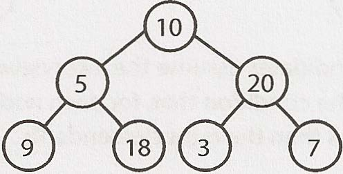
Observe que árvores perfeitas são raras em entrevistas e na vida real, pois uma árvore perfeita deve ter exatamente 2k - 1 nós (em que k é o número de níveis). Em uma entrevista, não pressuponha que uma árvore binária seja perfeita.
102 Cracking the Coding Interview, 6ª edição
� Percurso de árvore binária
Antes da entrevista, você deve saber implementar os percursos in-order, post-order e pre-order com segurança. O mais comum deles é o percurso in-order.
Percurso in-order
O percurso in-order consiste em “visitar” (geralmente imprimir) o ramo esquerdo, depois o nó atual e, por fim, o ramo direito.
1 void inOrderTraversal(TreeNode node) { 2 if (node!= null) {
3 inOrderTraversal(node.left); 4 visit(node); 5 inOrderTraversal(node.right); 6 }
7 }
Quando realizado em uma árvore binária de busca, ele visita os nós em ordem crescente (daí o nome “in-order”).
Percurso pre-order
O percurso pre-order visita o nó atual antes de seus nós filhos (daí o nome “pre-order”). 1 void preOrderTraversal(TreeNode node) { 2 if (node!= null) {
3 visit(node); 4 preOrderTraversal(node.left); 5 preOrderTraversal(node.right); 6 }
7 }
Em um percurso pre-order, a raiz é sempre o primeiro nó visitado.
Percurso post-order
O percurso post-order visita o nó atual depois de seus nós filhos (daí o nome “post-order”). 1 void postOrderTraversal(TreeNode node) { 2 if (node!= null) {
3 postOrderTraversal(node.left); 4 postOrderTraversal(node.right); 5 visit(node); 6 }
7 }
Em um percurso post-order, a raiz é sempre o último nó visitado.
� Heaps binários (min-heaps e max-heaps)
Discutiremos aqui apenas os min-heaps. Os max-heaps são essencialmente equivalentes, mas seus elementos ficam em ordem decrescente, e não crescente.
Um min-heap é uma árvore binária completa (isto é, totalmente preenchida, exceto possivelmente pelos elementos mais à direita do último nível) em que cada nó é menor do que seus filhos. Portanto, a raiz é o menor elemento da árvore.
CrackingTheCodinglnterview.com | 6ª edição 103
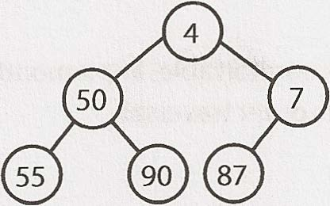
Temos duas operações fundamentais em um min-heap: insert e extract_min.
Inserção
Ao inserir em um min-heap, sempre começamos inserindo o elemento na parte inferior. Inserimos na posição mais à direita para preservar a propriedade de árvore completa.
Em seguida, “corrigimos” a árvore trocando o novo elemento com seu pai até encontrarmos uma posição adequada para o elemento. Essencialmente, fazemos o menor elemento subir pela árvore.
Etapa 1: inserir 2 Etapa 2: trocar 2 e 7 Etapa 3: trocar 2 e 4
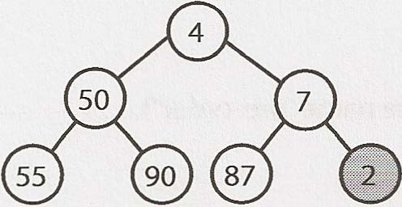
Isso leva tempo O(log n), em que n é o número de nós do heap.
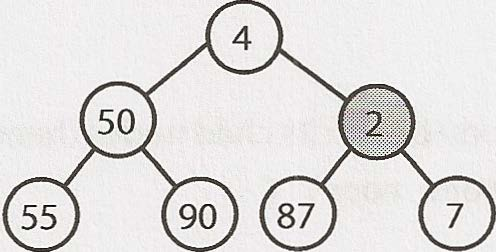
Extração do menor elemento
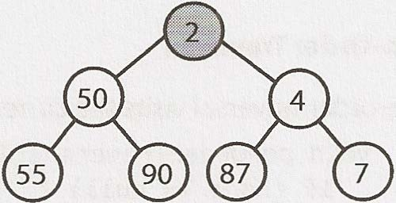
Encontrar o menor elemento de um min-heap é fácil: ele sempre está no topo. A parte mais complicada é saber como removê- lo. (Na verdade, isso também não é tão complicado.) Primeiro, removemos o menor elemento e o substituímos pelo último elemento do heap (o elemento que está mais abaixo e mais à direita). Em seguida, fazemos esse elemento descer, trocando-o com um de seus filhos até que a propriedade de min- heap seja restaurada.
Devemos trocá-lo pelo filho esquerdo ou pelo direito? Isso depende dos valores deles. Não existe uma ordem inerente entre os elementos esquerdo e direito, mas será preciso escolher o menor para preservar a ordenação do min-heap.
Etapa 1: substituir o mínimo por 80 Etapa 2: trocar 23 e 80 Etapa 3: trocar 32 e 80
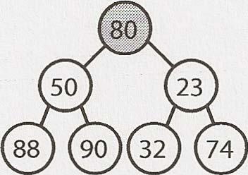
. · ··· ,
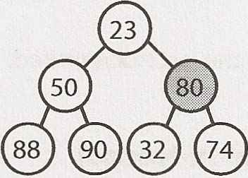
Esse algoritmo também leva tempo O(log n).
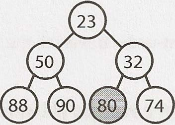
104 Cracking the Coding Interview, 6ª edição
� Tries (árvores de prefixos)
Uma trie (às vezes chamada de árvore de prefixos) é uma estrutura de dados curiosa. Ela aparece com frequência em questões de entrevista, mas os livros de algoritmos não dedicam muito tempo a essa estrutura.
Uma trie é uma variação de uma árvore n-ária em que cada nó armazena caracteres. Cada caminho que desce pela árvore pode representar uma palavra.
Os nós * (às vezes chamados de “nós null”) costumam ser usados para indicar palavras completas. Por exemplo, o fato de haver um nó * abaixo de MANY indica que MANY é uma palavra completa. A existência do caminho MA indica que há palavras que começam com MA.
A implementação concreta desses nós * pode usar um tipo especial de filho (como um TerminatingTrieNode, que herda de TrieNode). Outra possibilidade é usar apenas uma flag booleana terminates dentro do nó “pai”.
Um nó de uma trie pode ter de 1 a ALPHABET_SIZE + 1 filhos (ou de 0 a ALPHABET_SIZE, se uma flag booleana for usada no lugar de um nó *).
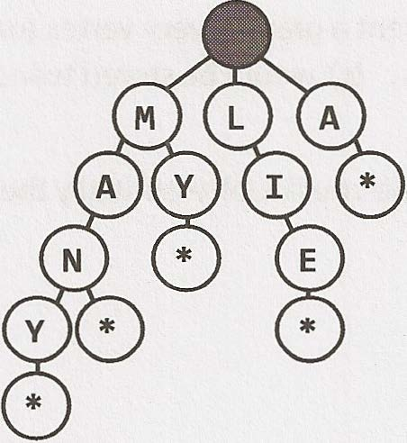
É muito comum usar uma trie para armazenar todo o idioma (inglês) e permitir buscas rápidas por prefixo. Embora uma hash table possa verificar rapidamente se uma string é uma palavra válida, ela não consegue dizer se uma string é prefixo de alguma palavra válida. Uma trie faz isso muito rapidamente.
I Quão rapidamente? Uma trie consegue verificar se uma string é um prefixo válido em tempo O(K), em que K é o comprimento da string. Na verdade, esse é o mesmo tempo de execução de uma hash table. Embora muitas vezes digamos que buscas em uma hash table levam tempo O(1), isso não é totalmente verdade. Uma hash table precisa ler todos os
caracteres da entrada, o que leva tempo O(K) no caso da busca por uma palavra.
Muitos problemas que envolvem listas de palavras válidas usam uma trie como otimização. Em situações nas quais buscamos repetidamente na árvore prefixos relacionados (por exemplo, M, depois MA, depois MAN e depois MANY), podemos repassar uma referência para o nó atual da árvore. Assim, precisamos apenas verificar se Y é filho de MAN, em vez de recomeçar pela raiz todas as vezes.
� Grafos
Uma árvore é, na verdade, um tipo de grafo, mas nem todo grafo é uma árvore. Em termos simples, uma árvore é um grafo conexo sem ciclos.
Um grafo é simplesmente um conjunto de nós com arestas entre (alguns deles).
• Os grafos podem ser direcionados (como o grafo a seguir) ou não direcionados. Enquanto as arestas direcionadas se parecem com uma CrackingTheCodinglnterview.com | 6ª edição 1 OS
via de mão única, as arestas não direcionadas se parecem com uma via de mão dupla.
• O grafo pode ser formado por vários subgrafos isolados. Se houver um caminho entre cada par de vértices, ele é chamado de “grafo conexo”.
O grafo também pode conter ciclos (ou não). Um “grafo acíclico” é aquele que não possui ciclos.
Visualmente, poderíamos desenhar um grafo assim:
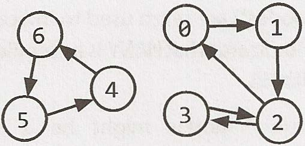
Em termos de programação, existem duas maneiras comuns de representar um grafo.
Lista de adjacência
Essa é a forma mais comum de representar um grafo. Cada vértice (ou nó) armazena uma lista de vértices adjacentes. Em um grafo não direcionado, uma aresta como (a, b) seria armazenada duas vezes: uma nos vértices adjacentes de a e outra nos vértices adjacentes de b.
Uma definição de classe simples para um nó de grafo poderia ser essencialmente igual à de um nó de árvore. 1 class Graph {
2 public Node[] nodes; 3 }
4
5 class Node {
6 public String name; 7 public Node[] children; 8 }
A classe Graph é usada porque, diferentemente do que ocorre em uma árvore, nem sempre é possível alcançar todos os nós a partir de um único nó.
Não é obrigatório usar classes adicionais para representar um grafo. Um array (ou uma hash table) de listas (arrays, ArrayLists, linked lists etc.) pode armazenar a lista de adjacência. O grafo acima poderia ser representado assim: 0: 1
1: 2
2: 0, 3
3: 2
4: 6
5: 4
6: 5
Essa representação é um pouco mais compacta, mas não é tão clara. Costumamos usar classes de nós, a menos que exista um bom motivo para não usá-las.
Matrizes de adjacência
Uma matriz de adjacência é uma matriz booleana NxN (em que N é o número de nós), na qual um valor true em matrix[i][j] indica uma aresta do nó i para o nó j. (Também é possível usar uma matriz de inteiros com valores 0 e 1.) Em um grafo não direcionado, a matriz de adjacência será simétrica. Em um grafo direcionado, ela não será necessariamente simétrica.
106 Cracking the Coding Interview, 6ª edição
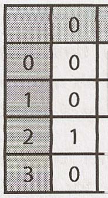
� 0 0
0 0
� 0 0 0
0 0
Os mesmos algoritmos de grafos usados em listas de adjacência (busca em largura etc.) podem ser executados com matrizes de adjacência, mas podem ser um pouco menos eficientes. Na representação por lista de adjacência, você consegue iterar facilmente pelos vizinhos de um nó. Na representação por matriz de adjacência, precisará iterar por todos os nós para identificar os vizinhos de um nó.
� Busca em grafos
As duas maneiras mais comuns de percorrer um grafo são a busca em profundidade e a busca em largura.
Na busca em profundidade (DFS), começamos pela raiz (ou por outro nó escolhido arbitrariamente) e exploramos cada ramo por completo antes de passar ao próximo. Isto é, primeiro avançamos em profundidade (daí o nome busca em profundidade ) antes de avançarmos em largura.
Na busca em largura (BFS), começamos pela raiz (ou por outro nó escolhido arbitrariamente) e exploramos cada vizinho antes de passar para qualquer um de seus filhos. Isto é, avançamos em largura (daí o nome busca em largura ) antes de avançarmos em profundidade.
Veja abaixo a representação de um grafo e de suas buscas em profundidade e em largura (pressupondo que os vizinhos sejam percorridos em ordem numérica).
Grafo Busca em profundidade Busca em largura
1 Node 0 1 Node 0 2 Node 1 2 Node 1 3 Node 3 3 Node 4 4 Node 2 4 Node 5 5 Node 4 5 Node 3 6 Node 5 6 Node 2
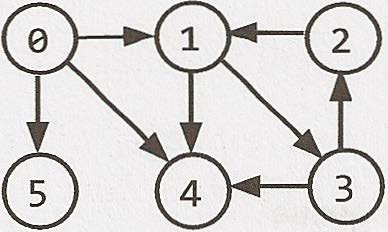
A busca em largura e a busca em profundidade costumam ser usadas em cenários diferentes. A DFS geralmente é preferida quando queremos visitar todos os nós do grafo. Ambas funcionam bem, mas a busca em profundidade é um pouco mais simples.
Entretanto, se quisermos encontrar o caminho mais curto (ou simplesmente qualquer caminho) entre dois nós, a BFS em geral é melhor. Imagine representar em um grafo todas as relações de amizade do mundo e tentar encontrar uma cadeia de ami zades entre Ash e Vanessa.
Na busca em profundidade, poderíamos seguir um caminho como Ash -> Brian -> Car let on -> Davis -> Eric -> Farah -> Gayle -> Harry -> Isabella -> John·-> Kari ... e então acabar muito distantes. Poderíamos percorrer grande parte do mundo sem perceber que, na verdade, Vanessa é amiga de Ash. Ainda encontraríamos o caminho em algum momento, mas isso poderia demorar muito. Além disso, não encontraríamos o caminho mais curto.
Na busca em largura, permaneceríamos próximos de Ash pelo maior tempo possível. Poderíamos percorrer muitos amigos de Ash, mas não avançaríamos para suas conexões mais distantes até que fosse absolutamente necessário. Se Vanessa for amiga de Ash ou amiga de um amigo dele, descobriremos isso com relativa rapidez.
CrackingTheCodinglnterview.com | 6ª edição 107
Busca em profundidade (DFS)
Na DFS, visitamos um nó a e depois percorremos cada vizinho de a. Ao visitar um nó b que seja vizinho de a, visitamos todos os vizinhos de b antes de passar aos outros vizinhos de a. Isto é, a pesquisa exaustivamente o ramo de b antes de qualquer um de seus outros vizinhos.
Observe que o percurso pre-order e outras formas de percorrer árvores são modalidades de DFS. A principal diferença é que, ao implementar esse algoritmo para um grafo, precisamos verificar se o nó já foi visitado. Caso contrário, corremos o risco de ficar presos em um loop infinito.
O pseudocódigo abaixo implementa a DFS.
1 void search(Node root) {
2 if (root== null) return; 3 visit(root); 4 root.visited= true; 5 for each (Node n in root.adjacent) { 6 if (n.visited == false) {
7 search(n); 8 }
9 }
10 }
Busca em largura (BFS)
A BFS é um pouco menos intuitiva, e muitos candidatos têm dificuldade com a implementação se ainda não estiverem familiarizados com ela. O principal ponto de confusão é a suposição (falsa) de que a BFS é recursiva. Ela não é. Em vez disso, usa uma queue.
Na BFS, o nó a visita cada um de seus vizinhos antes de visitar qualquer vizinho deles . Podemos pensar nisso como uma busca que avança nível por nível a partir de a. Uma solução iterativa que use uma queue costuma funcionar melhor. 1 void search(Node root) {
2 Queue queue = new Queue(); 3 root.marked= true; 4 queue.enqueue(root); // Add to the end of queue 5
6 while (!queue.isEmpty()) {
7 Node r = queue.dequeue(); // Remove from the front of the queue 8 visit(r); 9 foreach (Node n in r.adjacent) { 10 if (n.marked == false) {
11 n. marked = true; 12 queue.enqueue(n); 13 }
14 }
15 }
16 }
Se pedirem que você implemente uma BFS, o principal é lembrar do uso da queue. O restante do algo ritmo decorre desse fato.
Busca bidirecional
A busca bidirecional é usada para encontrar o caminho mais curto entre um nó de origem e um nó de destino. Ela funciona essencialmente executando duas buscas em largura simultâneas, uma a partir de cada nó. Quando as buscas se encontram, encontramos um caminho.
108 Cracking the Coding Interview, 6ª edição
Busca em largura Busca bidirecional
Uma única busca de s até t que Duas buscas (uma a partir de s e outra de t) que
se encontra após quatro níveis. se encontram após quatro níveis no total (dois níveis cada).
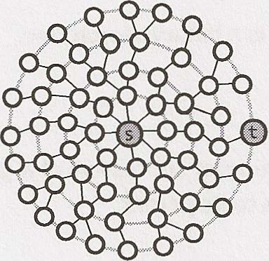
Para entender por que isso é mais rápido, considere um grafo em que cada nó tenha no máximo k nós adjacentes e em que o caminho mais curto do nó s ao nó t tenha comprimento d.
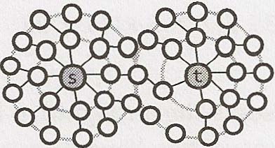
Na busca em largura tradicional, pesquisaríamos até k nós no primeiro “nível” da busca. No segundo nível, pesquisaríamos até k nós para cada um dos primeiros k nós, totalizando k2 nós até esse ponto. Faríamos isso d vezes, portanto seriam O(kd) nós.
Na busca bidirecional, temos duas buscas que se encontram após aproximadamente � níveis (o ponto médio do caminho). A busca a partir de s visita aproximadamente kd12, assim como a busca a partir de t. Isso corresponde a aproximadamente 2 kdl2, ou O(kd/2), nós no total.
Isso pode parecer uma diferença pequena, mas não é. É enorme. Lembre-se de que ( kd12) * ( kd12) = kd. A busca bidirec ional é, na verdade, mais rápida por um fator de kd12.
Em outras palavras: se nosso sistema só comportasse a busca em largura por caminhos de “amigo de amigo”, agora provavelmente comportaria caminhos de “amigo de amigo de amigo de amigo”. Podemos trabalhar com caminhos duas vezes mais longos.
Leitura adicional: ordenação topológica (pág. 632), algoritmo de Dijkstra (pág. 633), árvores AVL (pág. 637), árvores rubro- negras (pág. 639).
Questões de entrevista
4.1 Rota entre nós: Dado um grafo direcionado, projete um algoritmo que determine se existe uma rota entre dois nós.
Dica: #127
-·-·-·--_ ...... pg 241
4.2 Árvore mínima: Dado um array ordenado (em ordem crescente) com elementos inteiros únicos, escreva um algo ritmo que crie uma árvore binária de busca com altura mínima.
Dicas: #79, #73, #7 76
____ pg242
4.3 Lista de profundidades: Dada uma árvore binária, projete um algoritmo que crie uma linked list com todos os nós de cada profundidade (por exemplo, se a árvore tiver profundidade D, haverá D linked lists). Dicas: #107, #123, #135
··································································· · ···················································································· pg 243
CrackingTheCodinglnterview.com J 6ª edição 109
4.4 Verificar balanceamento: Implemente uma função que verifique se uma árvore binária está balanceada. Para os fins desta questão, uma árvore balanceada é definida como uma árvore em que as alturas das duas subárvores de qualquer nó nunca diferem em mais de um.
Dicas: #27, #33, #49, #705, #724
4.5 Validar BST: Implemente uma função que verifique se uma árvore binária é uma árvore binária de busca.
Dicas: #35, #57, #86, #113, #128
... .... pg 4.6 Sucessor: Escreva um algoritmo para encontrar o “próximo” nó (isto é, o sucessor in-order) de determinado nó em uma árvore binária de busca. Você pode pressupor que cada nó tenha uma referência para seu pai. Dicas: #79, #91
.. pg 248
4.7 Ordem de build: Você recebe uma lista de projetos e uma lista de dependências (uma lista de pares de projetos, em que o segundo projeto depende do primeiro). Todas as dependências de um projeto devem ser compiladas antes dele. Encontre uma ordem de build que permita compilar os projetos. Se não houver uma ordem de build válida, retorne um erro.
EXEMPLO
Entrada: projects: a, b, c, d, e, f dependencies: (a, d), (f, b), (b, d), (f, a), (d, c) Saída: f, e, a, b, d, c Dicas: #47, #60, #85, #133 #26, #725,
4.8 Primeiro ancestral comum: Projete um algoritmo e escreva código para encontrar o primeiro ancestral comum de dois nós de uma árvore binária. Evite armazenar nós adicionais em uma estrutura de dados. OBSERVAÇÃO: ela não é necessariamente uma árvore binária de busca.
Dicas: #70, #76, #28, #36, #46, #70, #80, #96
............................ ........ ........................... p9 257
4.9 Sequências de BST: Uma árvore binária de busca foi criada percorrendo um array da esquerda para a direita e inserindo cada elemento. Dada uma árvore binária de busca com elementos distintos, imprima todos os arrays possíveis que poderiam ter produzido essa árvore.
EXEMPLO
Entrada:
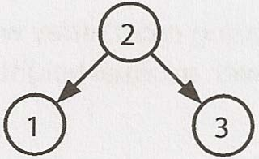
Saída: {2, 1, 3}, {2, 3, 1}
Dicas: #39, #48, #82 #66, 11 0 Cracking the Coding Interview, 6ª edição
4.10 Verificar subárvore: T1 e T2 são duas árvores binárias muito grandes, sendo T1 muito maior que T2. Crie um algoritmo para determinar se T2 é uma subárvore de T1.
Uma árvore T2 é uma subárvore de T1 se existir um nó n em T1 tal que a subárvore de n seja idêntica a T2. Isto é, se você cortar a árvore no nó n, as duas árvores serão idênticas. Dicas: #4, #11, #18, #31, #37
265
4.11 Nó aleatório: Você está implementando do zero uma classe de árvore binária que, além de insert, find e delete, possui um método getRandomNode() que retorna um nó aleatório da árvore. Todos os nós devem ter a mesma probabilidade de serem escolhidos. Projete e implemente um algoritmo para getRandomNode e explique como implementaria os demais métodos.
Dicas: #42, #54, #89, #112, #119 #62, #75, #99, 4.12 Caminhos com soma: Você recebe uma árvore binária em que cada nó contém um valor inteiro (que pode ser positivo ou negativo). Projete um algoritmo que conte o número de caminhos cuja soma seja igual a um valor fornecido. O caminho não precisa começar nem terminar na raiz ou em uma folha, mas deve seguir para baixo (percorrendo somente de nós pais para nós filhos).
Dicas: #6, #14, #68, #87, #94, #103, #108, #115 #52, #77, Questões adicionais: recursão (#8.10), System Design e escalabilidade (#9.2, #9.3), ordenação e busca (#10.10), problemas difíceis (#17.7, #17.12, #17.13, #17.14, #17.17, #17.20, #17.22, #17.25).
As dicas começam na página 653.
CrackingTheCodinglnterview.com | 6ª edição 111
Manipulação de bits
A manipulação de bits é usada em diversos problemas. Às vezes, a questão pede explicitamente manipu lação de bits. Em outras ocasiões, ela é simplesmente uma técnica útil para otimizar seu código. Você deve saber fazer manipulações de bits à mão e também por meio de código. Tenha cuidado: é fácil cometer pequenos erros.
� Manipulação de bits à mão
Se você não pratica manipulação de bits há algum tempo, tente resolver à mão os exercícios a seguir. Os itens da terceira coluna podem ser resolvidos manualmente ou com “truques” (descritos abaixo). Para simplificar, suponha que sejam números de quatro bits.
Se ficar confuso, resolva-os primeiro como números de base 10. Depois, aplique o mesmo processo a um número binário. Lembre-se de que /\ indica um XOR e = é um NOT (negação).
0110 + 0010 0011 * 0101 0110 + 0110 0011 + 0010 0011 0011 0100 0011 * * 0110 0011 1101 » 2 1101 /\ (=1101) 1000 0110 1101 /\ 0101 1011 & (=0 « 2) Soluções: linha 1 (1000, 1111, 1100); linha 2 (0101, 1001, 1100); linha 3 (0011, 0011, 1111 ); linha 4 (0010, 1000, 1000).
Os truques da coluna 3 são os seguintes: 1. 0110 + 0110 equivale a 0110 2, o que equivale a deslocar 0110 um bit para a esquerda. *
2. 0100 vale 4, e multiplicar por 4 equivale a deslocar dois bits para a esquerda. Portanto, deslocamos 0011 dois bits para a esquerda e obtemos 1100.
3. Analise essa operação bit a bit. Se você aplicar XOR a um bit e ao seu próprio valor negado, o resultado sempre será 1.
Portanto, a solução para a A( =a) será uma sequência de bits 1.
4. =0 é uma sequência de bits 1; portanto, =0 < < 2 consiste em bits 1 seguidos de dois bits 0. Aplicar AND com outro valor apagará os dois últimos bits desse valor.
Se você não percebeu esses truques de imediato, pense neles de forma lógica.
� Fatos e truques sobre bits
As expressões a seguir são úteis na manipulação de bits. Mas não se limite a decorá-las: reflita bem sobre por que cada uma é verdadeira. Usamos "1s" e "0s" para indicar sequências de bits 1 ou 0, respectivamente.
X A = 0s X X & = = 0s 0 I 0s X X
X A = ls -x = & ls I ls ls X X X =
X I\ X = = 0 X & X X X X = I X
112 Cracking the Coding Interview, 6th Edition
Para entender essas expressões, lembre-se de que essas operações ocorrem bit a bit e de que o que acontece com um bit nunca afeta os demais. Isso significa que, se uma das afirmações acima é verdadeira para um único bit, também é verdadeira para uma sequência de bits.
� Complemento de dois e números negativos
Em geral, os computadores armazenam números inteiros na representação em complemento de dois. Um número positivo é representado por ele mesmo, enquanto um número negativo é representado pelo complemento de dois de seu valor absoluto (com 1 no bit de sinal para indicar um valor negativo). O complemento de dois de um número de N bits (em que N é o número de bits usados para representar o número, N sem contar o bit de sinal) é o complemento do número em relação a 2.
Vamos usar o inteiro de 4 bits -3 como exemplo. Como ele tem 4 bits, um deles representa o sinal e três representam o valor. Queremos o complemento em relação a 23, que é 8. O complemento de 3 (o valor absoluto de -3) em relação a 8 é 5. Em binário, 5 é 101. Portanto, -3 em binário, como número de 4 bits, é 1101, sendo o primeiro bit o bit de sinal.
Em outras palavras, a representação binária de -K (K negativo) como número de N bits é concat(1, 2N-1 - K).
Outra forma de entender isso é inverter os bits da representação positiva e depois somar 1. O número 3 é 011 em binário. Inverta os bits para obter 100, some 1 para obter 101 e acrescente o bit de sinal (1) no início para obter 1101.
Em um inteiro de quatro bits, isso ficaria assim.
7 � 111 -1 1111
6 � 110 -2 1110 5 � 101 -3 1101 4 � 100 -4 1100
3 � 011 -5 1 011 2 � 010 -6 1 010 1 � 001 -7 1 001
0 � 000
Observe que a soma dos valores absolutos dos inteiros à esquerda e à direita é sempre 23, e que os valores binários dos dois lados são idênticos, exceto pelo bit de sinal. Por quê?
� Deslocamento aritmético e lógico à direita
Existem dois tipos de operadores de deslocamento à direita. O deslocamento aritmético divide, em essência, por dois. O deslocamento lógico move os bits como esperaríamos visualmente. A diferença fica mais clara com um número negativo.
Em um deslocamento lógico à direita, movemos os bits e colocamos 0 no bit mais significativo. Ele é indicado pelo »> operador. Em um inteiro de 8 bits (no qual o bit de sinal é o mais significativo), isso se parece com a imagem abaixo. O bit de sinal aparece com fundo cinza.
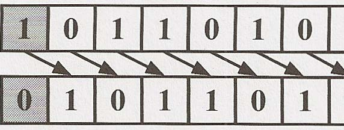
1 = -75
0 =90
CrackingTheCodinglnterview.com I 6th Edition 113
Em um deslocamento aritmético à direita, movemos os valores para a direita, mas preenchemos os novos bits com o valor do bit de sinal. Isso tem o efeito de dividir (aproximadamente) por dois. O operador é indicado por > >.
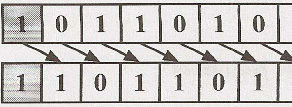
1 =-75
0 =-38
O que você acha que essas funções fariam com os parâmetros x = -93242 e count = 40? 1 int repeatedArith meticShift(int x, int count) {
2 for (inti= 0; i < count; i++) { 3 x >>= 1; // Arith metic shift by 1 4 }
5 return x; 6 }
7
8 int repeatedLogicalShift( int x, int count) {
9 for (inti= 0; i < count; i++) { 10 x >>>= 1; // Logical shift by 1 11 }
12 return x; 13 }
Com o deslocamento lógico, obteríamos 0 porque inserimos repetidamente um zero no bit mais significativo.
Com o deslocamento aritmético, obteríamos -1 porque inserimos repetidamente um bit 1 no bit mais significativo. Uma sequência formada apenas por bits 1 em um inteiro (com sinal) representa -1.
� Operações comuns com bits: consultar e definir
É muito importante conhecer as operações a seguir, mas não basta decorá-las. A memorização leva a erros difíceis de corrigir. Em vez disso, entenda como implementar esses métodos para conseguir resolver estes e outros problemas com bits.
Consultar bit
Esse método desloca 1 em i bits, criando um valor como 00010000. Ao aplicar AND com num, zeramos todos os bits, exceto o bit na posição i. Por fim, comparamos o resultado com 0. Se o novo valor não for zero, o bit i é 1. Caso contrário, o bit i é 0.
1 boolean getBit(int num, inti) {
2 return (( num & (1 « i)) != 0); 3 }
Definir bit
Definir bit desloca 1 em i bits, criando um valor como 00010000. Ao aplicar OR com num, somente o valor do bit i muda. Todos os demais bits da máscara são zero e não afetam num.
1 int setBit(int num, inti) { I 2 return num ( 1 « i); 3 }
114 Cracking th e Coding Interview, 6th Edition
Limpar bit
Esse método funciona quase como o inverso de setBit. Primeiro, criamos um número como 11101111 ao gerar seu inverso (00010000) e negá-lo. Depois, aplicamos AND com num. Isso zera o bit na posição i e deixa os demais inalterados.
1 int clearBit(int num, int i) {
2 int mask = =(1 << i); 3 return num & mask; 4 }
Para zerar todos os bits desde o mais significativo até a posição i (inclusive), criamos uma máscara com 1 no bit i (1 < < i). Depois, subtraímos 1, obtendo uma sequência de bits 0 seguida de i bits 1. Aplicamos AND ao número com essa máscara para manter apenas os últimos i bits.
1 int clearBitsMSBthroughI(int num, inti) {
2 int mask = (1 << i) - 1; 3 return num & mask; 4 }
Para zerar todos os bits da posição i até 0 (inclusive), pegamos uma sequência formada apenas por bits 1 (que vale -1) e a deslocamos para a esquerda em i + 1 bits. Isso produz uma sequência de bits 1 (nas posições mais significativas) seguida de i bits 0. 1 int clearBitsithrough0(int num, int i) {
2 int mask = (-1 << (i + 1)); 3 return num & mask; 4 }
Atualizar bit
Para definir o bit na posição i com o valor v, primeiro zeramos esse bit usando uma máscara como 11101111. Depois, deslocamos o valor desejado, v, em i bits para a esquerda. Isso cria um número com o bit i igual a v e todos os demais bits iguais a 0. Por fim, aplicamos OR a esses dois números, definindo o bit i como 1 se v for 1 e mantendo-o em 0 caso contrário.
1 int updateBit(int num, int i, boolean bitisl) {
2 int value = bitisl? 1: 0; 3 int mask = =(1 << i); 4 return (num & mask) I (value << i); 5 }
Questões de entrevista
5.1 Inserção: Você recebe dois números de 32 bits, N e M, e duas posições de bits, i e j. Escreva um método para inserir M em N de modo que M comece no bit j e termine no bit i. Você pode presumir que há espaço suficiente entre os bits j e i para acomodar todo M. Ou seja, se M = 10011, pode presumir que há pelo menos 5 bits entre j e i. Você não teria, por exemplo, j = 3 e i = 2, pois M não caberia por inteiro entre os bits 3 e 2. EXEMPLO
Entrada: N 10000000000, M 10011, i 2, j 6 Saída: N = 10001001100
Dicas: #137, #769, #215
CrackingTheCodinglnterview.com I 6th Edition 11 S
5.2 De binário para string: Dado um número real entre 0 e 1 (por exemplo, 0,72), recebido como double, imprima sua representação binária. Se não for possível representar o número com exatidão em binário usando no máximo 32 caracteres, imprima "ERROR".
Dicas: #743, #767, #7 73, #269, #297
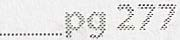
5.3 Inverta um bit para vencer: Você recebe um inteiro e pode inverter exatamente um bit de 0 para 1. Escreva código para encontrar o comprimento da maior sequência de bits 1 que pode criar.
EXEMPLO
Entrada: 1775 (ou: 11011101111) Saída: 8
Dicas: #759, #226, #374, #352
5.4 Próximo número: Dado um inteiro positivo, imprima o número imediatamente menor e o imediatamente maior que tenham a mesma quantidade de bits 1 em sua representação binária.
Dicas: #747, #7 75, #242, #372, #339, #358, #375, #390
5.5 Depurador: Explique o que faz o código a seguir: ( ( n & ( n-1)) == 0).
Dicas:#757,#202,#267,#302,#346,#372,#383,#398
... ------· .................................... ---· _______ pg 285
5.6 Conversão: Escreva uma função que determine quantos bits precisam ser invertidos para converter o inteiro A no inteiro B.
EXEMPLO
Entrada: 29 (ou: 11101), 15 (ou: 01111) Saída: 2
Dicas: #336, #369
pg286
5.7 Troca em pares: Escreva um programa para trocar os bits pares pelos ímpares em um inteiro usando o menor número possível de instruções (por exemplo, troque os bits 0 e 1, os bits 2 e 3, e assim por diante). Dicas: #745, #248, #328, #355
. ........... pg 286
5.8 Desenhar linha: Uma tela monocromática é armazenada como um único array de bytes, permitindo armazenar oito pixels consecutivos em um byte. A tela tem largura w, divisível por 8 (ou seja, nenhum byte será dividido entre linhas). A altura da tela pode ser obtida a partir do tamanho do array e da largura. Implemente uma função que desenhe uma linha horizontal de ( xl, y) até ( x2, y). A assinatura do método deve ser semelhante a: drawline(byte[] screen, int width, int xl, int x2, int y) Dicas: #366, #387, #384, #397
Questões adicionais: Arrays e strings (#1.1, #1.4, #1.8), enigmas de matemática e lógica (#6.1 O), recursão (#8.4, #8.14), ordenação e busca (#10.7, #10.8), C++ (#12.10), problemas moderados (#16.1, #16.7), problemas difíceis (#17.1).
As dicas começam na página 662.
116 Cracking the Coding Interview, 6th Edition
Enigmas de matemática e lógica
você ainda pode receber uma delas. Por quê? Porque ninguém concorda quanto à definição de quebra-cabeça. Os chamados "enigmas" (ou quebra-cabeças) estão entre as questões mais debatidas, e muitas empresas adotam políticas que os proíbem. Infelizmente, mesmo quando essas questões são proibidas, você ainda pode A boa notícia é que, se receber um enigma ou quebra-cabeça, ele provavelmente será razoavelmente justo. Prov avelmente não dependerá de um truque de redação e quase sempre poderá ser resolvido por dedução lógica. Muitos têm como base a matemática ou a ciência da computação, e quase todos têm soluções que podem ser deduzidas logicamente.
Vamos examinar algumas abordagens comuns para resolver essas questões, além de alguns conhecimentos essenciais.
� Números primos
Como você provavelmente sabe, todo inteiro positivo pode ser decomposto em um produto de números primos. Por exemplo: 84 = 22 * 31 * 5 ° * 7 1 * 11° * 13 ° * 17 ° * . . .
Observe que muitos desses números primos têm expoente zero.
Divisibilidade
A propriedade dos números primos descrita acima significa que, para um número x dividir um número y (representado por x\y, ou mod(y, x) = 0), todos os primos da fatoração de x devem aparecer na fatoração de y. Mais especificamente:
lfx\y,then for alli,ji <= ki.
Na verdade, o máximo divisor comum de x e y será: y) = * * gcd ( x, 2min(j0, k0) 3min(jl, kl) 5min(j2, k2) *
O mínimo múltiplo comum de x e y será: 1cm ( x, y) * = * . . . 2max(j0, k0) 3max(jl, kl) 5max(j2, k2) *
Como exercício interessante, pare um momento e pense no que aconteceria ao calcular gcd * 1cm: gcd * * * 1cm = 2min(j0, k0) 2max(j0, k0) * 3min(jl, kl) 3max(jl, kl) *
2min(j0, k0) + max(j0, k0) 3min(jl, kl) + max(jl, kl) * * 2j0 + k0 3j1 + kl * * . . . 2j0 2k0 3j1 3k1 * * * * . . .
CrackingTheCodinglnterview.com I 6th Edition 117
= xy Verificando se um número é primo
Essa pergunta é tão comum que merece uma explicação específica. A abordagem ingênua é simplesmente percorrer os números de 2 até n-1, verificando a divisibilidade a cada iteração.
1 boolean primeNaive(int n) {
2 if(n<2){
3 return false; 4 }
5 for (int i= 2; i < n; i++) {
6 if (n % i == 0) {
7 return false; 8 }
9 }
10 return true; 11 }
Uma pequena, mas importante melhoria é percorrer apenas os números até a raiz quadrada de n. 1 boolean primeSlightlyBetter(int n) {
2 if (n < 2) {
3 return false; 4 }
5 int sqrt= (int) Math.sqrt(n); 6 for (int i= 2; i <= sqrt; i++) { 7 if (n % i == 0) return false; 8 }
9 return true; 10 }
A /n é suficiente porque, para todo número a que divide n exatamente, existe um complemento b, tal que 2 a * b = n. Se a > n, então b < n (pois ( /n) = n ). Portanto, não precisamos verificar a para determinar se n é primo, pois já teríamos feito a verificação com b.
É claro que, na verdade, tudo o que realmente precisamos fazer é verificar se n é divisível por um número primo. É aí que entra a peneira de Eratóstenes.
Gerando uma lista de números primos: a peneira de Eratóstenes
A peneira de Eratóstenes é um método muito eficiente para gerar uma lista de números primos. Ela se baseia no fato de que todo número que não é primo é divisível por um número primo.
Começamos com uma lista de todos os números até um determinado valor max. Primeiro, riscamos todos os números divisíveis por 2. Depois, procuramos o próximo número primo (o próximo número que não foi riscado) e riscamos todos os números divisíveis por ele. Ao riscar todos os números divisíveis por 2, 3, 5, 7, 11 e assim por diante, obtemos uma lista de números primos de 2 até max.
O código abaixo implementa a peneira de Eratóstenes.
1 boolean[] sieveOfEratosthenes(int max) {
2 boolean[] flags= new boolean[max + 1]; 3 int count= 0; 4 s init(flags); // Set all flags to true other than 0 and 1
6 int prime = 2; 7
8 while (prime<= Math.sqrt(max)) {
118 Cracking the Coding Interview, 6th Edition
9 /* Cross off remaining multiples of prime */ 10 crossOff(flags, prime); 11
12 /* Find next value which is true */ 13 prime = getNextPrime(flags, prime); 14 }
15
16 return flags; 17 }
18
19 void crossOff(boolean[] flags, int prime) {
20 /* Cross off remaining multiples of prime. We can start with (prime*prime), 21 because if we have a k prime, where k < prime, this value would have 22 already been crossed off in a prior iteration. / 23 for (int i= prime * prime; i < flags.length; i += prime) { 24 flags[i] = false; 25 }
26 }
27
28 int getNextPrime(boolean[] flags, int prime) {
29 int next = prime + 1; 30 while (next< flags.length && !flags[next]) { 31 next++; 32 }
33 return next; 34 }
É claro que várias otimizações são possíveis. Uma delas é usar apenas números ímpares no array, o que reduziria pela metade o uso de espaço.
� Probabilidade
Probabilidade pode ser um tema complexo, mas se baseia em algumas leis simples que podem ser deduzidas logicamente.
Vamos observar um diagrama de Venn para visualizar dois eventos, A e B. As áreas dos dois círculos representam suas probabilidades relativas, e a área de sobreposição representa o evento {A and B}.
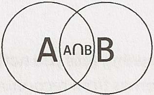
Probabilidade de A e B
Imagine lançar um dardo nesse diagrama de Venn. Qual é a probabilidade de ele cair na interseção entre A e B? Se você soubesse a probabilidade de acertar A, e também a porcentagem de A que pertence a B (ou seja, a probabilidade de estar em B dado que está em A), poderia expressar a probabilidade da seguinte forma: P(A and B) = P(B given A) P(A) Por exemplo, imagine que escolhemos um número entre 1 e 10 (inclusive). Qual é a probabilidade de escolher um número par e um número entre 1 e 5? A probabilidade de escolher um número entre 1 e 5 é 50%, e a probabilidade de um número entre 1 e 5 ser par é 40%. Portanto, a probabilidade de ambos os eventos ocorrerem é: P(x is even and x <= 5) CrackingTheCodinglnterview.com j 6th Edition 119
P(x is even given x <= 5) P(x <= 5) (2/5) * (1/2) 1/5
Observe que, como P(A and B) = P(B given A) P(A) P(A given B) P(B), podemos expressar
a probabilidade de A dado B em termos da probabilidade inversa: P(A given B) = P(B given A) P(A) / P(B) A equação acima é chamada de teorema de Bayes.
Probabilidade de A ou B
Agora, imagine que você queira saber a probabilidade de cair em A ou B. Se soubesse a probabilidade de cair em cada um separadamente e também a probabilidade de cair na interseção, poderia expressar a probabilidade assim: P(A or B) = P(A) + P(B) - P(A and B) Logicamente, isso faz sentido. Se apenas somássemos as áreas, contaríamos a interseção duas vezes. Precisamos subtraí-la. Podemos visualizar isso novamente em um diagrama de Venn:
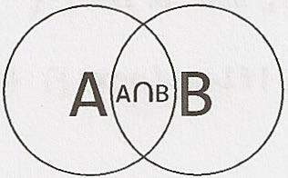
Por exemplo, imagine que escolhemos um número entre 1 e 10 (inclusive). Qual é a probabilidade de escolher um número par ou um número entre 1 e 5? A probabilidade de escolher um número par é 50%, e a de escolher um número entre 1 e 5 também é 50%. A probabilidade de ambos é 20%. Portanto, a probabilidade é: P(x is even or x <=5) P(x is even)+ P(x <= 5) - P(x is even and x <= 5) = X+X-Ys
= Ys A partir daqui, é fácil obter as regras para os casos especiais de eventos independentes e eventos mutuamente exclusivos.
Independência
Se A e B são independentes (ou seja, a ocorrência de um não informa nada sobre a do outro), então P (A and B) = P(A) P(B). Essa regra decorre de observar que P(B given A) = P(B), pois A não informa nada sobre B.
Exclusão mútua
Se A e B são mutuamente exclusivos (ou seja, se um ocorre, o outro não pode ocorrer), então P ( A or B) = = P(A) + P(B). Isso ocorre porque P(A and B) 0; portanto, esse termo é removido da equação anterior P(A or B).
Muitas pessoas, curiosamente, confundem independência com exclusão mútua. São conceitos completamente diferentes. Na verdade, dois eventos não podem ser ao mesmo tempo independentes e mutuamente exclusivos (desde que ambos tenham probabilidade maior que 0). Por quê? Porque a exclusão mútua significa que, se um ocorre, o outro não pode ocorrer. Já a independência significa que a ocorrência de um evento não diz absolutamente nada sobre o outro evento. Portanto, enquanto dois eventos tiverem probabilidades não nulas, nunca serão mutuamente exclusivos e independentes.
120 Cracking the Coding Interview, 6th Edition
Se um ou ambos os eventos têm probabilidade zero (ou seja, são impossíveis), os eventos são independentes e mutuamente exclusivos. Isso pode ser demonstrado pela aplicação direta das definições (isto é, das fórmulas) de independência e exclusão mútua.
� Comece a falar
Não entre em pânico ao receber um enigma. Assim como nas questões de algoritmos, os entrevistadores querem ver como você aborda um problema; não esperam que saiba a resposta de imediato. Comece a falar e mostre ao entrevistador como você pensa para resolvê-lo.
� Identifique regras e padrões
Em muitos casos, vale a pena anotar as "regras" ou os padrões que você descobrir enquanto resolve o problema. Sim, anote mesmo: isso ajudará você a se lembrar deles ao longo da resolução. Vamos demonstrar essa abordagem com um exemplo.
Você tem duas cordas, e cada uma leva exatamente uma hora para queimar. Como usá-las para medir exatamente 15 minutos? Observe que as cordas têm densidade irregular; portanto, queimar metade do comprimento de uma corda não leva necessariamente meia hora.
I Dica: pare aqui e tente resolver o problema por conta própria. Se for realmente necessário, leia esta seção em busca de dicas, mas avance devagar. Cada parágrafo o aproximará um pouco mais da solução.
Pelo enunciado, sabemos de imediato que podemos medir uma hora. Também podemos medir duas horas: basta acender uma corda, esperar que termine de queimar e então acender a segunda. Podemos transformar isso em uma regra.
Regra 1: Dadas uma corda que leva x minutos para queimar e outra que leva y minutos, podemos medir x+y minutos.
O que mais podemos fazer com as cordas? Podemos supor que acender uma corda no meio (ou em qualquer ponto que não seja uma das pontas) não ajudará muito. As chamas avançariam nas duas direções, e não teríamos como saber quanto tempo a corda levaria para queimar.
Podemos, porém, acender uma corda pelas duas pontas. As chamas se encontrariam após 30 minutos. Yi Regra 2: dada uma corda que leva x minutos para queimar, podemos medir minutos.
Agora sabemos que podemos medir 30 minutos usando uma única corda. Isso também significa que podemos eliminar 30 minutos do tempo de queima da segunda corda, acendendo a corda 1 pelas duas pontas e a corda 2 por apenas uma ponta.
Regra 3: Se a corda 1 leva x minutos para queimar e a corda 2 leva y minutos, podemos transformar a corda 2 em uma corda que leva (y-x) minutos ou (y-'.Yi) minutos.
Agora, vamos juntar essas ideias. Podemos transformar a corda 2 em uma corda com 30 minutos de queima restantes. Se então acendermos a outra ponta da corda 2 (veja a regra 2), ela terminará de queimar após 15 minutos.
Do início ao fim, a solução é esta: 1. Acenda as duas pontas da corda 1 e uma ponta da corda 2.
2. Quando as duas chamas da corda 1 se encontrarem, terão passado 30 minutos. Restarão 30 minutos de queima para a corda 2 .
Cracking TheCodinglnterview.com / 6th Edition 121
3. Nesse momento, acenda a outra ponta da corda 2.
4. Em exatamente quinze minutos, a corda 2 estará completamente queimada.
Observe como fica mais fácil resolver esse problema ao listar o que você aprendeu e as "regras" que descobriu.
� Equilibrando o pior caso
Muitos enigmas pedem para minimizar o pior caso, seja formulando o problema em termos de minimizar uma ação ou de realizar algo no máximo um número específico de vezes. Uma técnica útil é tentar "equilibrar" o pior caso. Se uma decisão inicial produz um pior caso desequilibrado, às vezes podemos mudar essa decisão para equilibrá-lo. Isso ficará mais claro com um exemplo.
O problema das "nove bolas" é um clássico das entrevistas. Você tem nove bolas. Oito têm o mesmo peso, e uma é mais pesada. Você dispõe de uma balança que apenas indica se o lado esquerdo ou o direito é mais pesado. Encontre a bola mais pesada usando a balança apenas duas vezes.
Uma primeira abordagem é dividir as bolas em dois grupos de quatro e deixar a nona de lado. A bola mais pesada está no grupo mais pesado. Se os grupos tiverem o mesmo peso, sabemos que a nona bola é a mais pesada. Repetir essa abordagem com os grupos restantes levaria a três pesagens no pior caso: uma a mais do que o permitido!
Isso cria um desequilíbrio no pior caso: basta uma pesagem para descobrir se a nona bola é a mais pesada, enquanto as outras exigem três. Se penalizarmos a nona bola deixando mais bolas de lado, poderemos reduzir o trabalho necessário para as demais. Esse é um exemplo de "equilíbrio do pior caso".
Se dividirmos as bolas em grupos de três, saberemos após uma única pesagem qual grupo contém a bola mais pesada. Podemos até formalizar isso como uma regra: dadas N bolas, sendo N divisível por 3, uma pesagem X
nos indicará um grupo de bolas que contém a mais pesada.
Para o último grupo de três bolas, basta repetir o procedimento: deixe uma bola de lado e pese as outras duas. Escolha a mais pesada. Se as duas tiverem o mesmo peso, escolha a terceira.
� Abordagens de algoritmos
Se ficar sem ideias, considere aplicar uma das abordagens para resolver questões de algoritmos (a partir da página 67). Muitas vezes, enigmas são apenas questões de algoritmos sem os detalhes técnicos. Base Case and Build e Do It Yourself (DIY) podem ser especialmente úteis.
Leitura adicional: Matemática útil (p. 629).
Questões de entrevista
6.1 A pílula pesada: Você tem 20 frascos de pílulas. Em 19 frascos, cada pílula pesa 1,0 grama; em um deles, cada pílula pesa 1,1 grama. Com uma balança que fornece medidas exatas, como descobrir qual é o frasco mais pesado? Você só pode usar a balança uma vez.
Dicas:# 186, #252, #319, #387
........................................................... P9
122 Cracking the Coding Interview, 6th Edition
6.2 Basquete: Você tem uma cesta de basquete e pode escolher entre dois jogos.
Jogo 1: você tem uma tentativa para acertar a cesta. Jogo 2: você tem três tentativas e precisa acertar duas delas.
Se p é a probabilidade de acertar uma determinada tentativa, para quais valores de p você deve escolher um jogo ou o outro?
Dicas:#787, #239, #284, #323
--------------------------------------------------------------------------------------------------------------------------------------------------------------------------------------------------------------------------------------------------------------------------------------------------------------------------------------------------------------------------------P, 290
6.3 Dominós: Um tabuleiro de xadrez 8x8 teve dois cantos diagonalmente opostos removidos.
Você recebe 31 peças de dominó, cada uma capaz de cobrir exatamente duas casas. É possível usar as 31 peças para cobrir todo o tabuleiro? Demonstre sua resposta, dando um exemplo ou mostrando por que isso é impossível.
Dicas: #367, #397
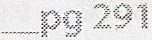
6.4 Formigas em um triângulo: Há três formigas em vértices diferentes de um triângulo. Qual é a probabilidade de elas colidirem (duas delas ou as três) se começarem a caminhar pelos lados do triângulo? Suponha que cada formiga escolha aleatoriamente um dos dois sentidos, com a mesma probabilidade para cada um, e que todas caminhem à mesma velocidade.
Da mesma forma, determine a probabilidade de colisão entre n formigas nos vértices de um polígono de n vértices.
Dicas: #157, #195, #296
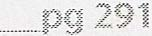
6.5 Jarras de água: Você tem uma jarra de cinco quartos de galão, outra de três quartos de galão e água à vontade (mas nenhum copo medidor). Como obter exatamente quatro quartos de galão de água? Observe que as jarras têm formatos irregulares, de modo que não é possível enchê-las exatamente até a metade.
Dicas:#149, #379, #400 _________ __,_,_._._ ....... --·······-·-----
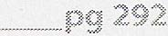
6.6 A ilha dos olhos azuis: Um grupo de pessoas vive em uma ilha quando chega um visitante com uma ordem estranha: todas as pessoas de olhos azuis devem deixar a ilha o mais rápido possível. Haverá um voo de saída às 20h todas as noites. Cada pessoa pode ver a cor dos olhos de todas as outras, mas não sabe a cor dos próprios olhos (e ninguém pode contar a ela). Além disso, ninguém sabe quantas pessoas têm olhos azuis, embora todos saibam que há pelo menos uma. Em quantos dias as pessoas de olhos azuis deixarão a ilha?
Dicas:#278, #282, #341, #370
----------------------- -------------------------------------- ____________________________________________ ()('.\ 293
6.7 O apocalipse: No novo mundo pós-apocalíptico, a rainha está extremamente preocupada com a taxa de natalidade. Por isso, decreta que toda família deve ter pelo menos uma menina; caso contrário, receberá multas pesadas. Se todas as famílias seguirem essa política, ou seja, continuarem tendo filhos até nascer uma menina e pararem imediatamente depois disso, qual será a proporção entre meninos e meninas na nova geração? (Suponha que a probabilidade de nascer um menino ou uma menina em qualquer gestação seja a mesma.) Resolva o problema logicamente e depois escreva uma simulação no computador. Dicas:#154, #760, #171, #788, #201
CrackingTheCodinglnterview.com I 6th Edition 123
6.8 O problema da queda dos ovos: Um prédio tem 100 andares. Se um ovo for solto do N-ésimo andar ou de um andar acima, ele quebrará. Se for solto de qualquer andar abaixo, não quebrará. Você tem dois ovos. Descubra N, minimizando o número de quedas no pior caso.
Dicas:#756, #233, #294, #333, #357, #374, #395
6.9 100 Armários: Há 100 armários fechados em um corredor. Um homem começa abrindo todos os 100 armários.
Depois, ele fecha um armário a cada dois. Na terceira passagem, inverte o estado de um armário a cada três (fecha-o se estiver aberto e abre-o se estiver fechado). O processo continua por 100 passagens; em cada passagem i, ele inverte o estado de um armário a cada i. Após a centésima passagem pelo corredor, na qual altera apenas o armário nº 100, quantos armários estão abertos?
Dicas: #139, #172, #264, #306
297
6.10 Veneno: Você tem 1.000 garrafas de refrigerante, e exatamente uma está envenenada. Você dispõe de 10 fitas de teste que podem detectar o veneno. Uma única gota de veneno torna a fita positiva permanentemente. Você pode colocar quantas gotas quiser em uma fita de uma só vez e reutilizá-la quantas vezes quiser, desde que os resultados sejam negativos. Porém, só é possível testar uma vez por dia, e o resultado leva sete dias para sair. Como descobrir qual garrafa está envenenada no menor número de dias possível?
DESDOBRAMENTO
Escreva código para simular sua abordagem.
Dicas:#146, #163, #183, #191, #205, #221, #230, #241, #249
___ pg298
Problemas adicionais: problemas moderados (#16.5), problemas difíceis (#17.19) As dicas começam na página 662.
124 Cracking the Coding Interview, 6th Edition
Projeto orientado a objetos
ao entrevistador uma ideia do seu estilo de programação. As questões de projeto orientado a objetos exigem que o candidato esboce classes e métodos para imple mentar soluções para problemas técnicos ou objetos da vida real. Essas questões dão, ou pelo menos se acredita que deem, Essas questões tratam menos de repetir padrões de projeto e mais de demonstrar que você sabe criar código orientado a objetos elegante e fácil de manter. Um desempenho ruim nesse tipo de questão pode ser um sinal de alerta importante.
� Como abordar
Seja o objeto algo físico ou uma tarefa técnica, as questões de projeto orientado a objetos podem ser abordadas de maneiras semelhantes. O método a seguir funciona bem para muitos problemas.
Etapa 1: esclareça as ambiguidades
As questões de projeto orientado a objetos (OO) costumam ser intencionalmente vagas para testar se você fará suposições ou perguntas de esclarecimento. Afinal, um desenvolvedor que simplesmente escreve código sem entender o que se espera que crie desperdiça tempo e dinheiro da empresa e pode causar problemas muito mais graves.
Ao receber uma questão de projeto orientado a objetos, procure saber quem usará o sistema e como o usará. Dependendo da questão, você pode até percorrer as seis perguntas básicas: quem, o quê, onde, quando, como e por quê.
Por exemplo, suponha que peçam a você para descrever o projeto orientado a objetos de uma cafeteira. Parece bem simples, certo? Nem tanto.
Sua cafeteira pode ser uma máquina industrial projetada para um restaurante enorme que atende centenas de clientes por hora e prepara dez tipos diferentes de café. Ou pode ser uma máquina muito simples, feita para que pessoas idosas preparem apenas café preto. Esses casos de uso afetam significativamente o projeto.
Etapa 2: defina os objetos principais
Agora que entendemos o que estamos projetando, devemos considerar quais são os "objetos principais" do sistema. Por exemplo, suponha que nos peçam para projetar um restaurante com orientação a objetos. Os objetos principais podem ser Table, Guest, Party, Order, Meal, Employee, Server e Host.
CrackingTheCodinglnterview.com J 6th Edition 125
Etapa 3: analise os relacionamentos
Depois de definir, ao menos aproximadamente, os objetos principais, precisamos analisar os relacionamentos entre eles. Quais objetos pertencem a outros? Algum objeto herda de outro? Os relacionamentos são muitos para muitos ou um para muitos?
Por exemplo, para o problema do restaurante, poderíamos chegar ao seguinte projeto: Party deve ter um array de Guests.
Server e Host herdam de Employee.
Cada Table tem uma Party, mas cada Party pode ter várias Tables.
Há um Host para o Restaurant.
Tenha muito cuidado aqui: é fácil fazer suposições erradas. Por exemplo, uma única Table pode acomodar várias Parties (como acontece nas modernas "mesas comunitárias" de alguns restaurantes). Converse com o entrevistador sobre o quanto seu projeto precisa ser genérico.
Etapa 4: examine as ações
Neste ponto, você já deve ter o esboço básico do projeto orientado a objetos. Resta considerar as ações principais que os objetos realizarão e como se relacionam. Talvez você perceba que esqueceu alguns objetos e precise atualizar o projeto.
Por exemplo, uma Party entra no Restaurant, e um Guest pede uma Table ao Host. O Host consulta a Reservation e, se ela existir, atribui uma Table à Party. Caso contrário, a Party é adicionada ao fim da lista. Quando uma Party sai, a Table é liberada e atribuída a uma nova Party da lista.
� Padrões de projeto
Como os entrevistadores procuram avaliar suas habilidades, e não apenas seus conhecimentos, os padrões de projeto em geral ficam fora do escopo da entrevista. No entanto, Singleton e Factory Method são padrões muito usados em entrevistas, por isso vamos abordá-los aqui.
Há muito mais padrões de projeto do que este livro poderia abordar. Uma ótima maneira de aprimorar suas habilidades de engenharia de soft ware é ler um livro dedicado especificamente ao assunto.
Cuidado para não cair na armadilha de procurar sempre o padrão de projeto "certo" para cada problema. Crie um projeto que funcione para o problema em questão. Em alguns casos, será um padrão conhecido, mas em muitos outros não.
Classe Singleton
O padrão Singleton garante que uma classe tenha apenas uma instância e que ela possa ser acessada em toda a aplicação. Ele pode ser útil quando há um objeto "global" com exatamente uma instância. Por exemplo, podemos implementar Restaurant de modo que exista exatamente uma instância de Restaurant. 1 public class Restaurant {
2 private static Restaurant _instance = null; 3 protected Restaurant() { ... }
4 public static Restaurant getlnstance() { 5 if (_instance == null) {
6 _instance = new Restaurant(); 7 }
126 Cracking the Coding Interview, 6th Edition
8 return _instance; 9 }
10 }
Vale observar que muitas pessoas não gostam do padrão Singleton e chegam a chamá-lo de "antipadrão". Um dos motivos é que ele pode atrapalhar os testes unitários.
Método Fábrica (Factory Method)
O Factory Method fornece uma interface para criar uma instância de uma classe, enquanto suas subclasses decidem qual classe instanciar. Você pode implementá-lo com uma classe criadora abstrata que não fornece uma implementação para o método Factory. Ou pode usar uma classe Creator concreta que fornece uma implementação para o método Factory. Nesse caso, o método Factory recebe um parâmetro que indica qual classe deve ser instanciada.
1 public class CardGame {
2 public static CardGame createCardGame(GameType type) { 3 if (type == GameType.Poker) { 4 return new PokerGame(); 5 } else if (type == GameType.BlackJack) { 6 return new BlackJackGame(); 7 }
8 return null; 9 }
10 }
Questões de entrevista
7.1 Baralho: Projete as estruturas de dados para um baralho genérico. Explique como você criaria subclasses dessas estruturas para implementar blackjack.
Dicas:#753, #275
7.2 Central de atendimento: Imagine uma central de atendimento com três níveis de funcionários: atendente, gerente e diretor. Uma chamada recebida deve ser atribuída primeiro a um atendente disponível. Se o atendente não puder resolvê-la, deverá encaminhá-la a um gerente. Se o gerente não estiver disponível ou não puder resolvê-la, a chamada deve ser encaminhada a um diretor. Projete as classes e estruturas de dados para esse problema. Implemente um método dispatchCall() que atribua a chamada ao primeiro funcionário disponível.
Dicas:#363
7 .3 Jukebox: Projete uma jukebox musical usando princípios de orientação a objetos.
Dicas:#798
----·······--· ............ _pg::no 7.4 Estacionamento: Projete um estacionamento usando princípios de orientação a objetos.
Dicas:#258
.... - -·---·--······-· ···· ---
7.5 Leitor de livros on-line: Projete as estruturas de dados para um sistema de leitura de livros on-line.
Dicas:#344
........... P9 318
CrackingTheCodinglnterview.com I 6th Edition 127
7.6 Quebra-cabeça: Implemente um quebra-cabeça NxN. Projete as estruturas de dados e explique um algoritmo para montá-lo. Você pode presumir que dispõe de um método fitsWith que, ao receber duas bordas de peças, retorna true se elas se encaixarem.
Dicas:# 192, #238, #283
7.7 Servidor de chat: Explique como você projetaria um servidor de chat. Em particular, detalhe os vários componentes de backend, classes e métodos. Quais seriam os problemas mais difíceis de resolver? Dicas: #213, #245, #271
7.8 Othello: Othello é jogado da seguinte maneira: cada peça é branca de um lado e preta do outro.
Quando uma peça fica cercada por peças adversárias à esquerda e à direita, ou acima e abaixo, ela é capturada e sua cor é invertida. Em seu turno, você deve capturar pelo menos uma peça do adversário. O jogo termina quando um dos jogadores não tem mais movimentos válidos. A vitória é atribuída a quem tiver mais peças. Implemente o projeto orientado a objetos para Othello. Dicas:#179, #228
7.9 Array circular: Implemente uma classe CircularArray que ofereça uma estrutura semelhante a um array e que possa ser rotacionada com eficiência. Se possível, a classe deve usar um tipo genérico (também chamado de template) e permitir iteração com a notação padrão f or (Obj o : circularArray). Dicas:#389
128 Cracking the Coding Interview, 6th Edition
7.10 Campo Minado: Projete e implemente uma versão textual do jogo Campo Minado. Trata-se do clássico jogo de computador para um jogador em que uma grade NxN contém B minas (ou bombas) escondidas. As demais células estão vazias ou contêm um número. Os números indicam quantas bombas há nas oito células ao redor. O jogador revela uma célula. Se houver uma bomba, ele perde. Se houver um número, ele é revelado. Se a célula estiver vazia, ela e todas as células vazias adjacentes (até e incluindo as células numeradas ao redor) são reveladas. O jogador vence quando todas as células sem bomba forem reveladas. Ele também pode marcar certos lugares como possíveis bombas. Isso não afeta o andamento do jogo, exceto por impedir que ele clique sem querer em uma célula na qual acredita haver uma bomba. (Dica ao leitor: se você não conhece o jogo, jogue algumas partidas on-line antes de continuar.) Este é um tabuleiro completamente revelado com 3 No início, o jogador vê um tabuleiro com bombas. Ele não é mostrado ao jogador. nenhuma célula revelada.
1 1 1
1 * 1
2 2 2
1 * 1
1 1 1
1 1 1 1 * 1
Clicar na célula (row= 1, col= O) O jogador vence quando tudo, exceto as ��-revelaria isto: bombas, tiver sido revelado.
2 2 2
Dicas: #351, #361, #377, #386, #399
7.11 Sistema de arquivos: Explique as estruturas de dados e os algoritmos que usaria para projetar um sistema de arquivos em memória. Sempre que possível, ilustre a solução com um exemplo de código.
Dicas:#141, #216
................................................................... .................................................................................................................................................................................................................................................................................................................. ��337
7.12 Tabela hash: Projete e implemente uma tabela hash que usa encadeamento (listas ligadas) para tratar coli sões.
Dicas: #287, #307
Questões adicionais: threads e locks (#16.3) As dicas começam na página 662.
CrackingTheCodinglnterview.com / 6th Edition 129
Recursão e programação dinâmica
Embora existam muitos problemas recursivos, vários seguem padrões semelhantes. Um bom indício de que um problema é recursivo é a possibilidade de construí-lo a partir de subproblemas.
Quando um problema começa com enunciados como os seguintes, muitas vezes (embora nem sempre) é um bom candidato à recursão: "Projete um algoritmo para calcular o n-ésimo..."; "Escreva código para listar os primeiros n..."; "Imple mente um método para calcular todos os..."; e assim por diante.
I Dica: na minha experiência orientando candidatos, as pessoas acertam em cerca de 50% das vezes quando pensam "isso parece um problema recursivo". Use essa intuição, pois esses 50% são valiosos. Mas não tenha medo de examinar o problema de outra maneira, mesmo que a princípio pareça
recursivo. Afinal, também há 50% de chance de você estar enganado.
A prática leva à perfeição! Quanto mais problemas você resolver, mais fácil será reconhecer os problemas recursivos.
� Como abordar
Soluções recursivas, por definição, são construídas a partir de soluções de subproblemas. Muitas vezes, isso significa simplesmente calcular f ( n) acrescentando, removendo ou modificando de alguma outra forma a solução para f ( n-1). Em outros casos, você pode resolver o problema para a primeira metade dos dados, depois para a segunda metade e, por fim, combinar os resultados.
Há muitas maneiras de dividir um problema em subproblemas. Três das abordagens mais comuns para desenvolver um algoritmo são bottom-up, top-down e divisão em duas metades.
Abordagem bottom-up (de baixo para cima)
A abordagem bottom-up costuma ser a mais intuitiva. Começamos sabendo resolver o problema para um caso simples, como uma lista com um único elemento. Depois, descobrimos como resolvê-lo para dois elementos, depois para três e assim por diante. O ponto central é pensar em como construir a solução de um caso a partir da solução do caso anterior (ou de vários casos anteriores).
Abordagem top-down (de cima para baixo)
A abordagem top-down pode ser mais complexa porque é menos concreta. Às vezes, porém, é a melhor forma de pensar no problema.
Nesses problemas, pensamos em como dividir o caso N em subproblemas.
Tome cuidado com a sobreposição entre os casos.
13 0 Cracking the Coding Interview, 6th Edition
Abordagem de divisão em metades
Além das abordagens top-down e bottom-up, muitas vezes é eficaz dividir o conjunto de dados ao meio.
Por exemplo, a busca binária usa uma abordagem de "divisão em metades". Ao procurar um elemento em um array ordenado, primeiro descobrimos qual metade contém o valor. Depois, aplicamos a recursão para procurá-lo nessa metade.
O merge sort também usa a abordagem de "divisão em metades". Ordenamos cada metade do array e depois combinamos as duas metades ordenadas.
� Soluções recursivas e iterativas
Algoritmos recursivos podem ser muito ineficientes em termos de espaço. Cada chamada recursiva acrescenta um nível à pilha, o que significa que, se o algoritmo alcançar uma profundidade n, usará pelo menos O ( n) de memória.
Por isso, muitas vezes é melhor implementar um algoritmo recursivo de forma iterativa. Todos os algoritmos recursivos podem ser implementados iterativamente, embora às vezes o código necessário seja bem mais complexo. Antes de começar a escrever código recursivo, pergunte-se quão difícil seria uma implementação iterativa e discuta as vantagens e desvantagens com o entrevistador.
� Programação dinâmica e memoização
Embora se fale muito sobre como os problemas de programação dinâmica são assustadores, não há motivo para temê-los. Na verdade, depois que você pega o jeito, eles podem se tornar bem fáceis.
Programação dinâmica consiste, em grande parte, em pegar um algoritmo recursivo e encontrar os subproblemas repetidos (isto é, as chamadas repetidas). Depois, armazenamos os resultados para futuras chamadas recursivas.
Outra opção é estudar o padrão das chamadas recursivas e implementar uma solução iterativa. Ainda assim, você "armazena" o trabalho anterior.
I Uma observação sobre a terminologia: algumas pessoas chamam a programação dinâmica top-down de "memoização" e usam "programação dinâmica" apenas para abordagens bottom-up. Não fazemos essa distinção
nesta obra. Chamamos as duas abordagens de programação dinâmica.
Um dos exemplos mais simples de programação dinâmica é calcular o n-ésimo número de Fibonacci. Uma boa maneira de abordar esse problema costuma ser implementar primeiro uma solução recursiva comum e depois acrescentar o armazenamento dos resultados.
Números de Fibonacci
Vamos examinar uma abordagem para calcular o n-ésimo número de Fibonacci.
Recursiva
Começaremos com uma implementação recursiva. Parece simples, certo?
1 int fibonacci(int i) {
2 if (i == 0) return 0; 3 if (i == 1) return 1; 4 return fibonacci(i - 1) + fibonacci(i - 2); 5 }
CrackingTheCodinglnterview.com J 6th Edition 131
Qual é o tempo de execução dessa função? Pense um instante antes de responder.
Se você respondeu O(n) ou O(n2) (como muitas pessoas fazem), pense novamente. Examine o caminho percorrido pelo código. Desenhar os caminhos do código como uma árvore (isto é, a árvore de recursão) ajuda neste e em muitos outros problemas recursivos.
----- fib( 5) ------ "'
� � / fib{42 fib{3) / fib{2) fib(l) fib(l) fib(0) fib(l) fib(0) " / "' fib(3) fib(2) fib(2) fib{l) /'\_ /'\_
fib(l) fib(0) Observe que todas as folhas da árvore são fib ( 1) ou fib ( 0). Elas representam os casos-base.
O número total de nós da árvore representa o tempo de execução, pois cada chamada faz apenas um trabalho de 0(1) além das chamadas recursivas. Portanto, o número de chamadas determina o tempo de execução.
I Dica: lembre-se disso nos próximos problemas. Desenhar as chamadas recursivas como uma árvore é uma ótima maneira de descobrir o tempo de execução de um algoritmo recursivo.
Quantos nós há na árvore? Até chegarmos aos casos-base (as folhas), cada nó tem dois filhos. Cada nó se ramifica em dois.
O nó raiz tem dois filhos. Cada um desses filhos também tem dois filhos (quatro ao todo no nível dos netos). Cada um desses netos tem dois filhos, e assim por diante. Se repetirmos isso n vezes, teremos aproximadamente O( 2") nós. Isso resulta em um tempo de execução próximo de 0( 2").
I Na verdade, o tempo é um pouco melhor que O ( 2"). Se observar a subárvore, você verá que (excetuando as folhas e os nós imediatamente acima delas) a subárvore direita de qualquer nó é sempre menor que a esquerda. Se tivessem o mesmo tamanho, o tempo seria O ( 2"). Mas, como a subárvore direita
e a esquerda não têm o mesmo tamanho, o tempo real fica mais próximo de O( 1. 6"). Ainda assim, dizer O( 2") está tecnicamente correto, pois descreve um limite superior para o tempo de execução (veja "Big 0, Big Theta, and Big Omega" na página 39). De qualquer forma, o tempo de execução continua exponencial.
De fato, se executássemos essa implementação em um computador, veríamos o tempo em segundos crescer exponencialmente.
60 ·+············································· · ······························································· ················· .•
20
0-1--........,----.....--�---.e:. ··········1
0 10 20 30 40
Segundos para gerar o n-ésimo número de Fibonacci
Precisamos encontrar uma forma de otimizar essa solução.
132 Cracking the Coding Interview, 6th Edition
Programação dinâmica top-down (ou memoização)
Observe a árvore de recursão. Onde há nós idênticos?
Há muitos nós idênticos. Por exemplo, fib ( 3) aparece duas vezes, e fib(2) aparece três. Por que recalcular tudo do zero a cada vez?
Na verdade, ao chamar fib( n), não deveríamos precisar de muito mais que O(n) chamadas, pois existem apenas O(n) valores possíveis para fib. Sempre que calculamos fib(i ), basta guardar o resultado e usá-lo depois.
É exatamente isso que a memoização faz.
Com uma pequena alteração, podemos fazer essa função executar em tempo 0( n). Basta armazenar os resultados de fibonacci(i) entre as chamadas.
1 int fibonacci(int n) {
2 return fibonacci(n, new int[n + 1]); 3 }
4
6 if (i == 0 I I 5 int fibonacci(int i, int[] memo) { i == 1) return i; 7
8 if (memo[i] == 0) {
9 memo[i] = fibonacci(i - 1, memo)+ fibonacci(i - 2, memo); 10 }
11 return memo[i]; 12 }
Enquanto a primeira função recursiva pode levar mais de um minuto para gerar o 50º número de Fibonacci em um computador comum, o método de programação dinâmica consegue gerar o 10.000º número de Fibonacci em apenas frações de milissegundo. (É claro que, com esse código exato, o tipo int sofreria overflow muito antes.) Agora, se desenharmos a árvore de recursão, ela se parecerá com isto (as caixas pretas representam chamadas cujos resultados já estavam armazenados e que retornaram imediatamente): fib(S) �
"' fib(42........_------�
/ fib(2) fib(l) fib(l) fib(0) " / fib(3) �
Quantos nós há nessa árvore agora? Podemos perceber que ela se estende quase em linha reta até uma profundidade próxima de n. Cada um desses nós tem mais um filho, resultando em cerca de 2n nós na árvore. Isso nos dá um tempo de execução de O( n).
Muitas vezes, é útil imaginar a árvore de recursão assim: ------ -----fib(S) fib( 4 � fib(3) "
� fib(2) � �(1) /
fib(l) fib(0) Isso não mostra exatamente como a recursão ocorreu. No entanto, ao expandir os nós superiores em vez dos CrackingTheCodinglnterview.com / 6th Edition 133
nós inferiores, obtemos uma árvore que se alarga antes de se aprofundar. (É como percorrê-la em largura, e não em profundidade.) Às vezes, isso facilita calcular o número de nós da árvore. Tudo o que você realmente faz é mudar quais nós expande e quais retornam valores armazenados. Experimente isso se tiver dificuldade para calcular o tempo de execução de um problema de programação dinâmica.
Programação dinâmica bottom-up
Também podemos implementar essa abordagem com programação dinâmica bottom-up. Imagine fazer o mesmo que na abordagem recursiva com memoização, mas na ordem inversa.
Primeiro, calculamos fib ( 1) e fib ( 0), já conhecidos pelos casos-base. Depois, usamos esses resultados para calcular fib(2). Em seguida, usamos as respostas anteriores para calcular fib(3 ), fib( 4 ) e assim por diante. 1 int fibonacci(int n) {
2 if (n == 0) return 0; 3 else if (n == 1) return 1; 4
5 int[] memo new int[n]; 6 memo[0] = 0; 7 memo[l] = 1; 8 for (int i= 2; i < n; i++) {
9 memo[i] = memo[i - 1] + memo[i - 2]; 10 }
11 return memo[n - 1] + memo[n - 2]; 12 }
Se você analisar bem o funcionamento, verá que memo[ i] só é usado para memo[ i+l) e memo[ i+2]. Depois disso, ele não é mais necessário. Portanto, podemos eliminar a tabela memo e armazenar apenas algumas variáveis. 1 int fibonacci(int n) {
2 if (n == 0) return 0; 3 int a = 0; 4 int b = 1; .5 for (int i = 2; i < n; i++) {
6 int C = a + b; 7 b· a , 8 b = c; 9 }
10 return a + b; 11 }
Em essência, isso armazena em a e b os dois últimos valores de Fibonacci. A cada iteração, calculamos o próximo valor ( c = a + b) e depois movemos ( b, c = a + b) para (a, b).
Essa explicação pode parecer excessiva para um problema tão simples, mas entender bem o processo facilitará muito os problemas mais difíceis. Resolver as questões deste capítulo, muitas das quais usam programação dinâmica, ajudará a consolidar seu entendimento.
Leitura adicional: Prova por indução (p. 631).
Questões de entrevista
8.1 Passos de até três degraus: Uma criança sobe uma escada com n degraus e pode avançar 1, 2 ou 3
degraus por vez. Implemente um método que conte de quantas maneiras diferentes ela pode subir a escada.
Dicas: #152, #178, #217, #237, #359 #262,
134 Cracking the Coding Interview, 6th Edition
8.2 Robô em uma grade: Imagine um robô no canto superior esquerdo de uma grade com r linhas e c colunas.
O robô só pode se mover para a direita ou para baixo, mas algumas células são "proibidas", de modo que ele não pode passar por elas. Projete um algoritmo para encontrar um caminho do canto superior esquerdo até o canto inferior direito.
Dicas: #331, #360, #388
�Prl 344
8.3 Índice mágico: Um índice mágico em um array A [ 0 ••• n -1] é um índice tal que A[ i] =
i. Dado um array ordenado de inteiros distintos, escreva um método para encontrar um índice mágico, se houver, em A.
DESDOBRAMENTO
E se os valores não forem distintos?
Dicas:#770, #204, #240, #286, #340
. ................................................................................................................................................................................................. . .................................................................................................... PQ 346
8.4 Conjunto das partes: Escreva um método que retorne todos os subconjuntos de um conjunto.
Dicas: #273, #290, #338, #354, #373
348
8.5 Multiplicação recursiva: Escreva uma função recursiva para multiplicar dois inteiros positivos sem usar o operador *. Você pode usar adição, subtração e deslocamento de bits, mas deve minimizar a quantidade dessas operações.
Dicas: #166, #203, #227, #234, #246, #280
pg350
8.6 Torres de Hanói: No problema clássico das Torres de Hanói, há 3 torres e N discos de tamanhos diferentes que podem ser colocados em qualquer torre. O jogo começa com os discos em ordem crescente de tamanho de cima para baixo (isto é, cada disco fica sobre outro maior). As restrições são: (1) Apenas um disco pode ser movido por vez. (2) Um disco é retirado do topo de uma torre e colocado em outra.
(3) Um disco não pode ser colocado sobre outro menor.
Escreva um programa para mover os discos da primeira torre para a última usando pilhas. Dicas: #744, #224, #250, #272, #318
8.7 Permutações sem duplicatas: Escreva um método para calcular todas as permutações de uma string com caracteres distintos.
Dicas:#150, #185, #200, #267, #278, #309, #335, #356
8.8 Permutações com duplicatas: Escreva um método para calcular todas as permutações de uma string cujos caracteres não são necessariamente distintos. A lista de permutações não deve conter duplicatas. Dicas:#761, #790, #222, #255
CrackingTheCodinglnterview.com 6th Edition 13 5 I
8.9 Parênteses: Implemente um algoritmo para imprimir todas as combinações válidas de parênteses (isto é, abertos e fechados corretamente) para n pares de parênteses.
EXEMPLO
Entrada: 3
Saída: ( ( () ) ) , ( () () ) , ( () ) () , () ( () ) , () () () Dicas: #138, #174, #787, #209, #243, #265, #295
8.1 O Preenchimento de cor: Implemente a função de preenchimento de cor presente em muitos programas de edição de imagens.
Dada uma tela (representada por um array bidimensional de cores), um ponto e uma nova cor, preencha a região ao redor até encontrar uma cor diferente da original. Dicas: #364, #382
8.11 Moedas: Dada uma quantidade ilimitada de moedas de 25 centavos, de 10 centavos, de 5 centavos e de 1 centavo, escreva código para calcular de quantas maneiras é possível representar n centavos. Dicas: #300, #324, #343, #380, #394
8.12 Oito rainhas: Escreva um algoritmo que imprima todas as maneiras de posicionar oito rainhas em um tabuleiro de xadrez 8x8 sem que duas ocupem a mesma linha, coluna ou diagonal. Nesse caso, "diagonal" inclui todas as diagonais, não apenas as duas que dividem o tabuleiro ao meio.
Dicas: #308, #350, #371
8.13 Pilha de caixas: Você tem n caixas para empilhar, com larguras w , alturas h , e profundidades d . As caixas i i i não podem ser giradas e só podem ser empilhadas se cada caixa da pilha for estritamente maior do que a caixa acima dela em largura, altura e profundidade. Implemente um método para calcular a altura da pilha mais alta possível. A altura de uma pilha é a soma das alturas de suas caixas. Dicas:#755, #194, #274, #260, #322, #368, #378
8.14 Avaliação booleana: Dada uma expressão booleana formada pelos símbolos 0 (falso), 1 (verdadeiro), & (AND), I (OR) e /\ (XOR), e um resultado booleano desejado chamado result, implemente uma função para contar de quantas maneiras é possível inserir parênteses na expressão para que ela produza result.
EXEMPLO
countEval("l /\01011", false) -> 2 countEval("0&0&0&1/\ ll0", true) -> 10 Dicas: #748, #168, #197, #305, #327
368
Questões adicionais: listas ligadas (#2.2, #2.5, #2.6), pilhas e filas (#3.3), árvores e grafos (#4.2, #4.3, #4.4, #4.5, #4.8, #4.10, #4.11, #4.12), enigmas de matemática e lógica (#6.6), ordenação e busca (#10.5, #10.9, #10.10), C++ (#12.8), problemas moderados (#16.11), problemas difíceis (#17.4, #17.6, #17.8, #17.12, #17.13, #17.15, #17.16, #17.24, #17.25).
As dicas começam na página 662.
136 Cracking the Coding Interview, 6th Edition
Projeto de sistemas e escalabilidade
que há algo de "mágico" nesses problemas: algum conhecimento oculto. Apesar de parecerem intimidadoras, as questões de escalabilidade podem estar entre as mais fáceis. Elas não costumam ter pegadinhas, truques nem algoritmos sofisticados. O que atrapalha muitas pessoas é Não é assim. Essas questões servem simplesmente para ver como você atuaria no mundo real. Se seu gerente pedisse para projetar um sistema, o que você faria?
É por isso que você deve abordá-las desse modo. Resolva o problema como faria no trabalho. Faça perguntas. Converse com o entrevistador. Discuta as vantagens e desvantagens.
Vamos abordar alguns conceitos importantes neste capítulo, mas lembre-se de que o objetivo não é decorar esses conceitos. Entender os principais componentes de um sistema pode ajudar, mas o que mais importa é o processo seguido. Há soluções boas e ruins; não há uma solução perfeita.
� Como lidar com as questões
• Comunique-se: um objetivo central das questões de projeto de sistemas é avaliar sua capacidade de comunicação. Mantenha-se envolvido na conversa com o entrevistador. Faça perguntas. Fale abertamente sobre os problemas do seu sistema.
• Comece pela visão geral: Não mergulhe de imediato no algoritmo nem se concentre demais em uma única parte.
Use o quadro: Ele ajuda o entrevistador a acompanhar o projeto que você propõe. Vá até o quadro logo no início e desenhe o que está propondo.
Reconheça as preocupações do entrevistador: É provável que o entrevistador interrompa para apontar problemas. Não os descarte; avalie-os. Reconheça as questões levantadas e faça os ajustes necessários.
• Cuidado com as suposições: Uma suposição errada pode mudar completamente o problema. Por exemplo, se seu sistema produz análises ou estatísticas para um conjunto de dados, faz diferença saber se elas precisam estar totalmente atualizadas.
• Declare suas suposições claramente: Quando fizer suposições, diga quais são. Assim, o entre vistador poderá corrigi-lo se houver um engano e perceberá que você sabe quais suposições está fazendo.
Faça estimativas quando necessário: Em muitos casos, faltam os dados necessários. Por exemplo, se você estiver projetando um web crawler, talvez precise estimar quanto espaço será necessário para armazenar todas as URLs. Você pode fazer essa estimativa com base em outros dados conhecidos.
Conduza a discussão: Como candidato, você deve assumir a condução. Isso não significa deixar de conversar com o entrevistador; na verdade, você precisa conversar com ele. Ainda assim, cabe a você conduzir a ques-CrackingTheCodinglnterview.com \ 6th Edition 13 7
tão. Faça perguntas. Fale abertamente sobre as vantagens e desvantagens. Continue se aprofundando e aprimorando a solução.
Essas perguntas dizem respeito principalmente ao processo, e não ao projeto final.
� Projeto: passo a passo
Se seu gerente pedisse que você projetasse um sistema como o TinyURL, provavelmente você não diria apenas "Certo" e então se trancaria no escritório para projetá-lo sozinho. Você provavelmente faria muitas outras perguntas antes de começar. É assim que você deve agir em uma entrevista.
Passo 1: delimite o problema
Você não consegue projetar um sistema se não souber o que está projetando. Delimitar o problema é importante porque você precisa garantir que está construindo o que o entrevistador espera e porque isso pode ser justamente um dos aspectos que ele está avaliando.
Se pedirem que você "projete o TinyURL", procure entender exatamente o que precisa implementar. Os usuários poderão escolher suas próprias URLs curtas ou elas serão geradas automaticamente? Será necessário acompanhar estatísticas dos cliques? As URLs deverão continuar válidas para sempre ou terão prazo de validade?
Essas perguntas precisam ser respondidas antes de avançar.
Liste também os principais recursos ou casos de uso. Para o TinyURL, por exemplo, a lista poderia incluir: • Encurtar uma URL e transformá-la em uma URL do TinyURL.
• Análises estatísticas de uma URL.
Recuperar a URL associada a uma URL do TinyURL.
Contas de usuário e gerenciamento de links.
Passo 2: faça suposições razoáveis
Você pode fazer algumas suposições quando necessário, desde que sejam razoáveis. Por exemplo, não seria razoável supor que o sistema precise atender apenas 100 usuários por dia, nem que você tenha memória infinita à disposição.
Por outro lado, pode ser razoável projetar o sistema para criar no máximo um milhão de URLs por dia. Essa suposição ajuda a calcular a quantidade de dados que o sistema talvez precise armazenar.
Algumas suposições exigem certo senso de produto, o que é positivo. Por exemplo, tudo bem se os dados estiverem até dez minutos desatualizados? Depende. Se uma URL recém-cadastrada levar dez minutos para funcionar, isso será um problema grave. Em geral, as pessoas querem que essas URLs estejam ativas imediatamente. Por outro lado, estatísticas com dez minutos de atraso podem ser aceitáveis. Converse com o entrevistador sobre esse tipo de suposição.
Passo 3: desenhe os componentes principais
Levante-se da cadeira e vá até o quadro. Desenhe um diagrama dos componentes principais. Você pode ter, por exemplo, um servidor frontend (ou um conjunto de servidores) que consulta o armazenamento de dados do backend. Também pode ter outro conjunto de servidores que coleta dados na internet e mais um conjunto que processa as estatísticas. Desenhe como esse sistema poderia ser estruturado.
Percorra o sistema de ponta a ponta para mostrar o fluxo. Um usuário insere uma nova URL. O que acontece depois?
138 Cracking the Coding Interview, 6ª edição
Nesse momento, pode ajudar deixar de lado os grandes desafios de escalabilidade e supor que as abordagens mais simples e óbvias serão suficientes. Você tratará dos problemas maiores no passo 4.
Passo 4: identifique os principais problemas
Quando tiver uma ideia do projeto básico, concentre-se nos problemas principais. Quais serão os gargalos ou os grandes desafios do sistema?
Por exemplo, ao projetar o TinyURL, considere que algumas URLs serão acessadas raramente, enquanto outras poderão ter picos repentinos de acesso. Isso pode acontecer quando uma URL é publicada no Reddit ou em outro fórum popular. Você provavelmente não quer consultar o banco de dados a cada acesso.
O entrevistador pode dar alguma orientação nesse ponto. Se isso acontecer, aproveite-a.
Passo 5: adapte o projeto aos principais problemas
Depois de identificar os principais problemas, é hora de ajustar o projeto para resolvê-los. Talvez seja necessária uma reformulação significativa ou apenas alguns ajustes pequenos, como usar um cache.
Continue no quadro e atualize o diagrama à medida que o projeto mudar.
Fale abertamente sobre as limitações do seu projeto. O entrevistador provavelmente as perceberá, então é importante mostrar que você também está ciente delas.
� Algoritmos que escalam: passo a passo
Em alguns casos, não pedem que você projete um sistema inteiro. Pedem apenas que projete um recurso ou algoritmo, mas ele precisa escalar. Também pode haver uma parte algorítmica que seja o verdadeiro foco de uma questão mais ampla de projeto de sistemas.
Nesses casos, experimente a abordagem a seguir.
Passo 1: faça perguntas
Como na abordagem anterior, faça perguntas para confirmar que você realmente entendeu a questão. Talvez haja detalhes que o entrevistador omitiu, de propósito ou sem querer. Você não consegue resolver um problema se não entender exatamente qual é o problema.
Passo 2: imagine um cenário ideal
Finja que todos os dados cabem em uma única máquina e que não há limitações de memória. Como você resolveria o problema? A resposta dará o contorno geral da sua solução.
Passo 3: volte à realidade
Agora volte ao problema original. Quantos dados cabem em uma máquina e quais problemas surgirão quando você dividir os dados? Entre os desafios comuns estão descobrir como fazer uma divisão lógica dos dados e como uma máquina identificará onde buscar uma informação armazenada em outra.
Passo 4: resolva os problemas
Por fim, pense em como resolver os problemas identificados no passo 2. Lembre-se de que a solução para cada problema pode eliminá-lo por completo ou apenas reduzir seu impacto. Em geral, você CrackingTheCodingInterview.com 6ª edição 139 |
pode continuar usando, com modificações, a abordagem esboçada no passo 1, mas às vezes será necessário mudar a abordagem de maneira fundamental.
Uma abordagem iterativa costuma ser útil. Ou seja, depois que você resolver os problemas do passo 3, outros problemas podem surgir, e você também precisará enfrentá-los.
Seu objetivo não é reprojetar um sistema complexo que custou milhões de dólares para uma empresa construir, mas demonstrar que sabe analisar e resolver problemas. Identificar as falhas da sua própria solução é uma ótima maneira de mostrar isso.
� Conceitos principais
Embora as perguntas sobre projeto de sistemas não sejam exatamente provas do que você sabe, certos conceitos podem facilitar muito a tarefa. Apresentaremos aqui uma breve visão geral. Todos esses assuntos são profundos e complexos, por isso recomendamos consultar recursos na internet para estudá-los melhor.
Escalabilidade horizontal e vertical
Há duas maneiras de escalar um sistema.
Escalabilidade vertical significa aumentar os recursos de um nó específico. Por exemplo, você pode adicionar mais memória a um servidor para melhorar sua capacidade de lidar com mudanças na carga.
Escalabilidade horizontal significa aumentar o número de nós. Por exemplo, você pode adicionar mais servidores, reduzindo assim a carga de cada um.
Em geral, escalar verticalmente é mais fácil do que escalar horizontalmente, mas há um limite: só é possível acrescentar certa quantidade de memória ou espaço em disco.
Balanceador de carga
Em geral, algumas partes do frontend de um site escalável ficam atrás de um balanceador de carga. Isso permite distribuir a carga de maneira uniforme, para que a falha de um servidor não derrube o sistema inteiro. Para isso, é claro, você precisa montar uma rede de servidores replicados que executem essencialmente o mesmo código e tenham acesso aos mesmos dados.
Desnormalização de bancos de dados e NoSQL
Joins em um banco de dados relacional, como um banco SQL, podem ficar muito lentos à medida que o sistema cresce. Por isso, em geral você deve evitá-los.
A desnormalização é uma das maneiras de fazer isso. Ela consiste em acrescentar informações redundantes a um banco de dados para acelerar as leituras. Por exemplo, imagine um banco de dados que descreve projetos e tarefas, em que cada projeto pode ter várias tarefas. Talvez você precise obter o nome do projeto junto com as informações de uma tarefa. Em vez de fazer um join entre as tabelas, pode armazenar o nome do projeto também na tabela de tarefas, além da tabela de projetos.
Outra opção é usar um banco de dados NoSQL. Um banco NoSQL não oferece suporte a joins e pode organizar os dados de outra forma. Ele foi projetado para escalar melhor.
Particionamento de banco de dados (sharding)
Sharding significa distribuir os dados entre várias máquinas, mantendo uma forma de descobrir quais dados estão em cada máquina.
Algumas formas comuns de particionamento são: 140 Cracking the Coding Interview, 6ª edição
• Particionamento vertical: Consiste basicamente em particionar por recurso. Por exemplo, se você estivesse criando uma rede social, poderia ter uma partição para tabelas de perfis, outra para mensagens e assim por diante. Uma desvantagem é que, se uma dessas tabelas crescer muito, talvez você precise reparticionar esse banco de dados, possivelmente usando um esquema de particionamento diferente.
Particionamento por chave (ou por hash): Usa parte dos dados, por exemplo um ID, para fazer a parti ção. Uma forma bem simples é reservar N servidores e colocar os dados em mod (key, n). Um problema é que a quantidade de servidores fica, na prática, fixa. Acrescentar servidores exige redistribuir todos os dados, o que custa caro.
Particionamento por diretório: Nesse esquema, você mantém uma tabela de consulta que indica onde os dados podem ser encontrados. Isso facilita relativamente a adição de servidores, mas traz duas grandes desvantagens. Primeiro, a tabela de consulta pode se tornar um ponto único de falha. Segundo, acessá-la constantemente prejudica o desempenho.
Na prática, muitas arquiteturas acabam usando mais de um esquema de particionamento.
Cache
Um cache em memória pode fornecer resultados muito rapidamente. Ele consiste em pares simples de chave e valor e geralmente fica entre a camada da aplicação e o armazenamento de dados.
Quando uma aplicação solicita uma informação, ela consulta primeiro o cache. Se o cache não contiver a chave, ela buscará os dados no armazenamento de dados. Nesse ponto, os dados podem ou não ser armazenados nesse armazenamento. Ao usar cache, você pode armazenar diretamente uma consulta e seus resultados. Outra opção é armazenar um objeto específico, como uma versão renderizada de parte do site ou uma lista das publicações mais recentes de um blog.
Processamento assíncrono e filas
O ideal é executar operações lentas de forma assíncrona. Caso contrário, o usuário pode ficar esperando muito tempo até que um processo termine.
Em alguns casos, podemos fazer isso antecipadamente, por meio de pré-processamento. Por exemplo, podemos manter uma fila de tarefas que atualizam alguma parte do site. Se administrássemos um fórum, uma dessas tarefas poderia renderizar novamente uma página com as publicações mais populares e o número de comentários. Essa lista poderia ficar um pouco desatualizada, mas talvez isso seja aceitável. É melhor do que deixar o usuário esperando o site carregar só porque alguém acrescentou um comentário e invalidou a versão dessa página armazenada em cache.
Em outros casos, podemos pedir ao usuário que aguarde e avisá-lo quando o processamento terminar. Você provavelmente já viu isso em sites. Talvez você tenha ativado um novo recurso e o site tenha informado que precisa de alguns minutos para importar seus dados, mas que enviará uma notificação ao concluir.
Métricas de rede
Algumas das métricas de rede mais importantes são: Largura de banda: é a quantidade máxima de dados que pode ser transferida por unidade de tempo. Em geral, ela é expressa em bits por segundo ou em outra unidade semelhante, como gigabytes por segundo.
• Vazão: enquanto a largura de banda indica o máximo de dados transferíveis por unidade de tempo, a vazão indica a quantidade de dados efetivamente transferida.
Latência: é o tempo necessário para os dados irem de uma ponta a outra. Em outras palavras, é o atraso entre o envio da informação, mesmo que seja um pequeno fragmento, e seu recebimento.
CrackingTheCodinglnterview.com | 6ª edição 141
Imagine uma esteira transportadora levando objetos de um lado ao outro de uma fábrica. A latência é o tempo que um objeto leva para atravessar a fábrica. A vazão é a quantidade de objetos que saem da esteira por segundo.
Construir uma esteira mais larga não altera a latência. Porém, altera a vazão e a largura de banda. Cabem mais objetos na esteira, e assim é possível transportar mais por unidade de tempo.
Encurtar a esteira reduz a latência, pois os objetos passam menos tempo em trânsito. Isso não altera a vazão nem a largura de banda. A mesma quantidade de objetos sai da esteira por unidade de tempo.
Aumentar a velocidade da esteira altera as três métricas. O tempo que um objeto leva para atravessar a fábrica diminui. Além disso, mais objetos saem da esteira por unidade de tempo.
A largura de banda é a quantidade de objetos que podem ser transferidos por unidade de tempo nas melhores condi ções possíveis. A vazão é o tempo que isso realmente leva quando, por exemplo, as máquinas não estão funcionando bem.
É fácil ignorar a latência, mas ela pode ser muito importante em certas situações. Por exemplo, se você joga determinados jogos online, a latência pode fazer muita diferença. Como jogar uma partida típica de esporte online como um jogo de futebol para duas pessoas, se você não for avisado rapidamente sobre os movimentos do adversário? Além disso, ao contrário da vazão, que você ao menos pode melhorar por meio da compres são de dados, muitas vezes há pouco a fazer para reduzir a latência.
MapReduce
O MapReduce costuma ser associado ao Google, mas seu uso vai muito além disso. Um programa MapReduce geralmente processa grandes volumes de dados.
Como o nome sugere, um programa MapReduce exige que você escreva uma etapa Map e uma etapa Reduce. O restante fica a cargo do sistema.
Map recebe alguns dados e emite um
Reduce recebe uma chave e um conjunto de valores associados e os reduz de alguma forma, emitindo uma nova chave e um novo valor. Os resultados podem ser enviados novamente ao programa Reduce para passar por outras reduções.
O MapReduce permite realizar grande parte do processamento em paralelo, o que torna o processamento de enormes volumes de dados mais escalável.
Para saber mais, consulte “MapReduce” na página 642.
� Considerações
Além dos conceitos apresentados anteriormente, considere as questões a seguir ao projetar um sistema.
Falhas: praticamente qualquer parte de um sistema pode falhar. Você precisa se preparar para muitas dessas falhas, se não todas.
• Disponibilidade e confiabilidade: a disponibilidade depende da porcentagem do tempo em que o sistema está opera cional. A confiabilidade depende da probabilidade de o sistema permanecer operacional durante determinado intervalo de tempo.
Muitas leituras ou muitas escritas: o fato de uma aplicação realizar muitas leituras ou muitas escritas afeta seu projeto. Se predominarem as escritas, considere colocá-las em uma fila, mas pense nas possíveis falhas dessa escolha. Se predominarem as leituras, considere usar cache. Outras decisões de projeto também podem mudar.
Segurança: ameaças à segurança podem, é claro, causar danos enormes a um sistema. Pense nos tipos de problema que ele pode enfrentar e projete medidas para lidar com eles.
Esses são apenas alguns dos possíveis problemas de um sistema, para ajudar você a começar. Lembre-se de falar abertamente na entrevista sobre os trade-offs.
142 Cracking the Coding Interview, 6ª edição
� Não existe sistema “perfeito”.
Não existe um único projeto para o TinyURL, o Google Maps ou qualquer outro sistema que funcione perfeitamente, embora existam muitas soluções que funcionariam muito mal. Sempre há trade-offs. Duas pessoas podem propor projetos bem diferentes para um sistema, e ambos podem ser excelentes se partirem de premissas diferentes.
Seu objetivo nesses problemas é entender os casos de uso, delimitar o problema, fazer suposições razoáveis, criar um projeto sólido com base nelas e reconhecer abertamente os pontos fracos do seu projeto. Não espere chegar a uma solução perfeita.
� Problema de exemplo
Dada uma lista com milhões de documentos, como encontrar todos os documentos que contêm uma lista de palavras? As palavras podem aparecer em qualquer ordem, mas devem estar completas. Ou seja, “book” não corresponde a “bookkeeper”.
Antes de começar a resolver o problema, precisamos saber se a operação será executada uma única vez ou se o procedimento findWords será chamado repetidamente. Vamos supor que chamaremos findWord s muitas vezes para o mesmo conjunto de documentos e, portanto, que podemos aceitar o custo do pré-processamento.
Passo 1
Primeiro, finja que temos apenas algumas dezenas de documentos. Como implementaríamos findWords nesse caso? Dica: pare aqui e tente resolver o problema antes de continuar a leitura. Uma solução é pré-processar cada documento e criar um índice em uma hash table. Essa hash table associaria cada palavra à lista de documentos que a contêm.
"books" -> {doc2, doc3, doc6, doc8}
"many" -> {docl, doc3, doc7, doc8, doc9}
Para buscar “many books”, basta obter a interseção das listas associadas a “books” e “many” e retornar {doc 3, doc8} como resultado.
Passo 2
Agora volte ao problema original. Que dificuldades surgem quando há milhões de documentos? Para começar, provavelmente precisamos distribuir os documentos entre várias máquinas. Além disso, dependendo de diversos fatores, como o número de palavras possíveis e a repetição de palavras em cada documento, talvez não consigamos armazenar a hash table inteira em uma única máquina. Vamos supor que esse seja o caso.
Essa divisão traz as seguintes questões principais: 1. Como dividiremos a hash table? Podemos dividi-la por palavra-chave, de modo que determinada máquina contenha a lista completa de documentos de uma palavra. Ou podemos dividi-la por documento, de modo que uma máquina contenha o mapeamento de palavras-chave de apenas parte dos documentos.
2. Depois de decidir como dividir os dados, talvez precisemos processar um documento em uma máquina e enviar os resultados a outras máquinas. Como esse processo funcionará? Observação: se dividirmos a hash table por documento, essa etapa talvez não seja necessária. 3. Precisaremos saber qual máquina contém cada dado. Como será essa tabela de consulta e onde ela ficará armazenada?
Essas são apenas três questões. Pode haver muitas outras.
Cracking TheCodinglnterview.com | 6ª edição 143
Passo 3
No passo 3, encontramos soluções para cada uma dessas questões. Uma opção é dividir as palavras em ordem alfabética por palavra-chave, de modo que cada máquina fique responsável por um intervalo de palavras, por exemplo, de “after” a “apple”.
Podemos implementar um algoritmo simples que percorre as palavras-chave em ordem alfabética e armazena o máximo possível de dados em uma máquina. Quando ela ficar cheia, passamos para a próxima.
A vantagem dessa abordagem é que a tabela de consulta fica pequena e simples, pois precisa indicar apenas um intervalo de valores, e cada máquina pode manter uma cópia dela. A desvantagem, porém, é que a inclusão de novos documentos ou palavras talvez exija um deslocamento custoso das palavras-chave.
Para encontrar todos os documentos que correspondem a uma lista de strings, primeiro ordenaríamos a lista e então enviaríamos a cada máquina uma solicitação de busca pelas strings sob sua responsabilidade. Por exemplo, se a string for "after builds boat amaze banana", a máquina 1 receberá uma solicitação de busca por {"after", "amaze"}.
A máquina 1 busca os documentos que contêm "after" e "amaze" e calcula a interseção entre essas listas de documentos. A máquina 3 faz o mesmo com {"banana", "boat", "builds"} e calcula a interseção de suas listas.
Na etapa final, a máquina inicial calcula a interseção entre os resultados das máquinas 1 e 3.
O diagrama a seguir mostra esse processo.
I "after builds boat amaze banana" I Machine 1: "after amaze" Machine 3: "builds boat banana"
"after" "builds" -> doc3, doc4, docs -> doc1, docs, doc7 "boat" -> doc2, doc3, docs "amaze" -> doc2, docs, doc7 "banana" -> doc 3, doc4, docs {docs, doc7} {doc 3, docs} I solution = docs I Interview Questions
Estas questões foram criadas para se parecerem com uma entrevista real, portanto nem sempre estarão bem definidas. Pense nas perguntas que faria ao entrevistador e depois estabeleça suposições razoáveis. Você pode adotar suposições diferentes das nossas e chegar a um projeto bem diferente. Não há problema nisso!
9.1 Dados de ações: Imagine que você está criando um serviço que será acessado por até 1.000 aplicações clientes para obter informações simples sobre o preço de ações no fim do dia: abertura, fechamento, máxima e mínima. Você pode supor que já dispõe dos dados e pode armazená-los no formato que preferir. Como projetaria o serviço que fornece essas informações às aplicações clientes? Você é respon sável pelo desenvolvimento, lançamento, monitoramento contínuo e manutenção do feed. Descreva os diferentes métodos considerados e explique por que recomendaria sua abordagem. Seu serviço pode usar as tecnologias que você quiser e distribuir as informações às aplicações clientes por qualquer mecanismo à sua escolha.
Dicas: #385, #396
144 Cracking the Coding Interview, 6ª edição
9.2 Rede social: Como você projetaria as estruturas de dados de uma rede social muito grande, como o Face book ou o LinkedIn? Descreva como projetaria um algoritmo para mostrar o caminho mais curto entre duas pessoas, por exemplo: Eu -> Bob -> Susan -> Jason -> Você.
Dicas: #270, #285, #304, #321
9.3 Web crawler: Se você estivesse projetando um web crawler, como evitaria que ele entrasse em loops infinitos?
Dicas: #334, #353, #365
9.4 URLs duplicadas: Você tem 10 bilhões de URLs. Como detectaria documentos duplicados? Neste caso, suponha que “duplicado” significa que as URLs são idênticas.
Dicas: #326, #347
.. ... ... P9 380
9.5 Cache: Imagine o servidor web de um mecanismo de busca simplificado. O sistema tem 100 máquinas para responder às consultas, que podem chamar processSearch ( string query) em outro conjunto de máquinas para obter os resultados. A máquina que responde a determinada consulta é escolhida aleatoriamente; portanto, não há garantia de que a mesma máquina sempre responderá à mesma solicitação. O método processSearch é muito custoso. Projete um mecanismo de cache para as consultas mais recentes. Explique também como atualizaria o cache quando os dados mudassem. Dicas: #259, #274, #293, #311
9.6 Ranking de vendas: Uma grande empresa de comércio eletrônico deseja listar os produtos mais vendidos, tanto no geral quanto por categoria. Por exemplo, um produto pode ocupar a posição 1056 entre os mais vendidos no geral, mas a posição 13 em “Equipamentos esportivos” e a posição 24 em “Segurança”. Descreva como projetaria esse sistema.
Dicas: #142, #158, #176, #189, #208, #223, #236, #244
385
9.7 Gerenciador de finanças pessoais: Explique como projetaria um gerenciador de finanças pessoais, como o Mint.com. O sistema se conectaria às suas contas bancárias, analisaria seus hábitos de consumo e faria recomendações.
Dicas: #762, #180, #199, #212, #247, #276
9.8 Pastebin: Projete um sistema como o Pastebin, no qual o usuário possa inserir um texto e receber uma URL gerada aleatoriamente para acessá-lo.
Dicas: #165, #184, #206, #232
392
Questões adicionais: projeto orientado a objetos (#7.7) As dicas começam na página 662.
CrackingTheCodinglnterview.com \ 6ª edição 145
Ordenação e busca
Percorra os diferentes algoritmos de ordenação e veja se algum deles se aplica especialmente bem. Entender os algoritmos comuns de ordenação e busca é extremamente valioso, pois muitos problemas dessas áreas são variações de algoritmos conhecidos. Por isso, uma boa abordagem é avaliar esses algoritmos. Por exemplo, suponha que lhe façam a seguinte pergunta: dado um array muito grande de objetos Person, ordene as pessoas por idade em ordem crescente.
Recebemos duas informações interessantes: 1. É um array grande, então a eficiência é muito importante.
2. Estamos ordenando por idade, então sabemos que os valores pertencem a um intervalo pequeno.
Ao examinar os diferentes algoritmos de ordenação, podemos perceber que bucket sort (ou radix sort) seria uma excelente escolha nesse caso. Podemos até usar buckets pequenos, cada um cobrindo apenas 1 ano, e obter tempo de execução 0 ( n).
� Algoritmos comuns de ordenação
Aprender ou revisar os algoritmos comuns de ordenação é uma ótima forma de melhorar seu desempenho. Entre os cinco algoritmos explicados a seguir, Merge Sort, Quick Sort e Bucket Sort são os mais usados em entrevistas.
Bubble Sort Tempo de execução: 0( I n2) em média e no pior caso. Memória: 0( 1) .
No bubble sort, começamos no início do array e trocamos os dois primeiros elementos se o primeiro for maior que o segundo. Depois passamos ao par seguinte e assim por diante, percorrendo repetidamente o array até que ele esteja ordenado. Com isso, os elementos menores vão subindo lentamente, como bolhas, até o início da lista.
Selection Sort | Tempo de execução: 0( n2 ) em média e no pior caso. Memória: 0( 1) .
Selection sort é um algoritmo quase infantil: simples, mas ineficiente. Encontre o menor elemento com uma busca linear e leve-o para o início, trocando-o com o elemento que estiver ali. Depois, encontre o segundo menor e mova-o, novamente com uma busca linear. Repita o processo até que todos os elementos estejam nas posições corretas.
Merge Sort Tempo de execução: 0 ( n log ( n)) I em média e no pior caso. Memória: depende.
Merge sort divide o array em duas metades, ordena cada uma delas e depois as mescla. Cada metade passa pelo mesmo algoritmo de ordenação. Por fim, você mescla apenas dois arrays de um elemento. É a etapa de mesclagem que faz a maior parte do trabalho.
146 Cracking the Coding Interview, 6ª edição
O método merge copia todos os elementos do trecho do array que será ordenado para um array auxiliar, acompanhando onde devem começar as metades esquerda e direita (he lperleft e he lperRight). Depois percorremos helper, copiando para o array o menor elemento de cada metade. Por fim, copiamos os elementos que restarem para o array de destino.
1 void mergesort(int[] array) {
2 int[] helper = new int[array.length]; 3 mergesort(array, helper, 0, array.length - 1); 4 }
6 void mergesort(int[] array, int[] helper, int low, int high) { 5
7 if (low< high) {
8 int middle = (low + high)/ 2; 9 mergesort(array, helper, low, middle); // Sort left half 10 mergesort(array, helper, middle+l, high); // Sort right half 11 merge(array, helper, low, middle, high); // Merge them 12 }
13 }
14
15 void merge(int[] array, int[] helper, int low, int middle, int high) { 16 /* Copy both halves into a helper array*/
17 for (int i= low; i <= high; i++) { 18 helper[i] = array[i]; 19 }
20
21 int helperleft = low; 22 int helperRight =middle + l; 23 int current = low; 24
25 /* Iterate through helper array. Compare the left and right half, copying back 26 the smaller element from the two halves into the original array. / 27 while (helperLeft <= middle && helperRight <= high) { 28 if (helper[helperleft] <= helper[helperRight]) { 29 array[current] = helper[helperleft]; 30 helperleft++; 31 } else {//If right element is smaller than left element 32 array[current] = helper[helperRight]; 33 helperRight++; 34 }
35 current++; 36 }
37
38 /* Copy the rest of the left side of the array into the target array*/ 39 int remaining= middle - helperleft; 40 for (int i= 0; i <= remaining; i++) { 41 array[current + i] = helper[helperleft + i]; 42 }
43 }
Observe que apenas os elementos restantes da metade esquerda do array auxiliar são copiados para o array de destino. Por que não copiar a metade direita? Porque os elementos dela já estão exatamente lá.
Considere, por exemplo, um array como [ 1, 4, 5 11 2, 8, 9] (o símbolo " 11 " indica o ponto de divisão). Antes de mesclar as duas metades, tanto o array auxiliar quanto o trecho do array de destino terminam em [ 8, 9]. Depois que copiamos quatro elementos (1, 4, 5 e 2) para o array de destino, [ 8, 9] continua no lugar nos dois arrays. Não há necessidade de copiá-los novamente.
CrackingTheCodinglnterview.com | 6ª edição 14 7
A complexidade de espaço do merge sort é 0( n) por causa do espaço auxiliar usado para mesclar partes do array.
Quick Sort I Tempo de execução: O(n log( n)) em média, O(n2) no pior caso. Memória: 0( log(n)).
No quick sort, escolhemos um elemento aleatório e particionamos o array de modo que todos os números menores que o elemento de particionamento fiquem antes dos maiores. O particionamento pode ser realizado de forma eficiente por meio de uma série de trocas, como mostrado a seguir.
Se particionarmos repetidamente o array e seus subarrays em torno de um elemento, ele acabará ficando ordenado. Entretanto, não há garantia de que o elemento escolhido seja a mediana, nem de que esteja perto dela. Por isso, a ordenação pode ser muito lenta, o que explica o tempo de execução 0( n2) no pior caso. 1 void quickSort(int[] arr, int left, int right) {
2 int index = partition(arr, left, right); 3 if (left< index -1) { II Sort left half 4 quickSort(arr, left, index - 1); 5 }
5 if (index< right) { II Sort right half 7 quickSort(arr, index, right); 3 }
9 }
10
11 int partition(int[] arr, int left, int right) { 12 int pivot = arr[(left + right) I 2]; II Pick pivot point 13 while (left<= right) {
14 II Find element on left that should be on right 15 while (arr[left] < pivot) left++; 16
17 II Find element on right that should be on left 18 while (arr[right] > pivot) right--; 19
20 II Swap elements, and move left and right indices 21 if (left<= right) {
22 swap(arr, left, right); II swaps elements 23 left++; 24 right--; 25 }
26 }
27 return left; 28 }
Radix Sort I Tempo de execução: 0 (kn) (veja a seguir)
Radix sort é um algoritmo de ordenação para inteiros, e também para alguns outros tipos de dados, que aproveita o fato de que os inteiros têm um número finito de bits. Nele, percorremos cada dígito dos números, agrupando-os pelo valor desse dígito. Por exemplo, para ordenar um array de inteiros, podemos começar pelo primeiro dígito, reunindo todos os números cujo valor nele é zero. Depois, ordenamos cada grupo pelo dígito seguinte. Repetimos o processo para os demais dígitos até que o array inteiro esteja ordenado.
Ao contrário dos algoritmos de ordenação por comparação, cujo desempenho médio não pode ser melhor que O(n log(n)), radix sort tem tempo de execução 0( kn), em que n é o número de elementos e k é o número de passadas do algoritmo de ordenação.
148 Cracking the Coding Interview, 6ª edição
• Algoritmos de busca
Quando pensamos em algoritmos de busca, geralmente lembramos da busca binária. De fato, é um algoritmo muito útil para estudar.
Na busca binária, procuramos um elemento x em um array ordenado comparando-o primeiro com o elemento do meio do array. Se x for menor que o elemento do meio, buscamos na metade esquerda. Se for maior, buscamos na metade direita. Repetimos esse processo, tratando a metade escolhida como um subarray. Comparamos novamente x com o elemento do meio desse subarray e buscamos em sua metade esquerda ou direita. Continuamos até encontrar x ou até o subarray ficar vazio.
Embora o conceito seja relativamente simples, acertar todos os detalhes é bem mais difícil do que você imagina. Ao estudar o código a seguir, preste atenção nos incrementos e decrementos de uma unidade. 1 int binarySearch(int[] a, int x) {
2 int low = 0; 3 int high= a.length - 1; 4 int mid; 5
6 while (low <= high) {
7 mid= (low+ high)/ 2; 8 if (a[mid] < x) {
9 low = mid+ 1; 10 } else if (a[mid] > x) {
11 high= mid - 1; 12 } else {
13 return mid; 14 }
15 }
16 return -1; // Error 17 }
18
19 int binarySearchRecursive(int[] a, int x, int low, int high) { 20 if (low > high) return -1; // Error 21
22 int mid (low + high)/ 2; 23 if (a[mid] < x) {
24 return binarySearchRecursive(a, x, mid+ 1, high); 25 } else if (a[mid] > x) {
26 return binarySearchRecursive(a, x, low, mid - 1); 27 } else {
28 return mid; 29 }
30 }
Há outras maneiras de buscar em uma estrutura de dados além da busca binária. Não se limite a ela: uma hash table é outra opção. Pense além da busca binária! Você também pode, por exemplo, procurar um nó usando uma árvore binária. · ·
Questões de entrevista
10.1 Mesclagem ordenada: Você recebe dois arrays ordenados, A e B, e A tem espaço livre suficiente no final para armazenar B. Escreva um método que mescle B em A, mantendo a ordem.
Dica: #332
CrackingTheCodinglnterview.com / 6ª edição 149
10.2 Agrupar anagramas: Escreva um método que ordene um array de strings de modo que todos os anagramas fiquem próximos uns dos outros.
Dicas: #717, #182, #263, #342
10.3 Busca em array rotacionado: Dado um array ordenado de n inteiros que foi rotacionado um número desconhecido de vezes, escreva código para encontrar um elemento nele. Você pode supor que o array estava originalmente ordenado em ordem crescente.
EXEMPLO
lnput:findSin{lS, 16, 19, 20, 25, 1, 3, 4, 5, 7, 10, 14}
Saída: 8 (o índice de 5 no array) Dicas: #298, #370
p g39S
10.4 Busca ordenada sem tamanho: Você recebe uma estrutura de dados semelhante a um array, chamada Listy, que não tem um método size.
Porém, ela tem um método elementAt ( i), que retorna o elemento do índice i em 0( 1) de tempo. Se i estiver fora dos limites da estrutura de dados, o método retornará -1. Por esse motivo, a estrutura só aceita inteiros positivos. Dada uma Listy com inteiros positivos ordenados, encontre o índice de um elemento x. Se x aparecer mais de uma vez, você pode retornar qualquer um desses índices.
Dicas: #320, #337, #348
10.5 Busca esparsa: Dado um array ordenado de strings que contém strings vazias entre os valores, escreva um método para encontrar a posição de uma determinada string.
Input: ball,{"at", , "" , EXAMPLE '"' "" , "" , "" , "" , '"' , '"' , "ball", "car", "dad", ""}
Saída: 4
Dica: #256
10.6 Ordenar um arquivo grande: Imagine um arquivo de 20 GB com uma string por linha. Explique como você ordenaria esse arquivo.
Dica: #207
······················ ············ pg402
10.7 Inteiro ausente: Dado um arquivo de entrada com quatro bilhões de inteiros não negativos, proponha um algoritmo para gerar um inteiro que não esteja no arquivo. Suponha que você dispõe de 1 GB de memória para essa tarefa.
PERGUNTA ADICIONAL
E se você tiver apenas 10 MB de memória? Suponha que todos os valores sejam distintos e que agora haja no máximo um bilhão de inteiros não negativos.
Dicas: #235, #254, #281
..... ······-·----·· pg 403
150 Cracking the Coding Interview, 6ª edição
10.8 Encontrar duplicatas: Você tem um array com todos os números de 1 a N, em que N é no máximo 32.000. O array pode conter entradas duplicadas, e você não sabe qual é o valor de N. Dispondo de apenas 4 quilobytes de memória, como imprimiria todos os elementos duplicados do array?
Dicas: #289, #315
10.9 Busca em matriz ordenada: Dada uma matriz M x N em que cada linha e cada coluna estão ordenadas em ordem crescente, escreva um método para encontrar um elemento.
Dicas: #193, #211, #229, #251, #266, #279, #288, #297, #303, #317, #330
10.10 Posição em um fluxo: Imagine que você está lendo um fluxo de inteiros. De tempos em tempos, você deseja consultar a posição de um número x, isto é, a quantidade de valores menores ou iguais a x. Implemente as estruturas de dados e os algoritmos necessários. Em particular, implemente o método track ( int x), chamado quando cada número é gerado, e o método getRankOfNumber(int x), que retorna a quantidade de valores menores ou iguais a x, sem contar o próprio x.
EXEMPLO
Fluxo (na ordem em que os valores aparecem): 5, 1, 4, 4, 5, 9, 7, 13, 3
getRankOfNumber(l) 0
getRankOfNumber(3) = 1
getRankOfNumber(4) 3
Dicas: #301, #376, #392
10.11 Picos e vales: Em um array de inteiros, um “pico” é um elemento maior ou igual aos inteiros adjacentes, e um “vale” é um elemento menor ou igual aos inteiros adjacentes. Por exemplo, no array {5, 8, 6, 2, 3, 4, 6}, {8, 6} são picos e {5, 2} são vales. Dado um array de inteiros, ordene-o em uma sequência alternada de picos e vales. EXEMPLO
Input: {5, 3, 1, 2, 3}
Saída: {5, 1, 3, 2, 3}
Dicas: #196, #219, #231, #253, #277, #292, #316
Questões adicionais: Arrays e Strings (#1.2), Recursão (#8.3), Médio (#16.1 O, #16.16, #16.21, #16.24), Difícil (#17.11, #17.26).
As dicas começam na página 662.
CrackingTheCodinglnterview.com | 6ª edição 151
Testes
Se você está se candidatando a uma vaga na área de testes (ou de Software Engineer in Test), há ainda mais motivos para prestar atenção. Antes de passar por este capítulo dizendo “mas não sou testador”, pare e pense. Testar é uma tarefa importante para um engenheiro de software e, por isso, perguntas sobre testes podem aparecer na sua entrevista. Vale a pena estudar o assunto.
As questões sobre testes geralmente se enquadram em quatro categorias: (1) testar um objeto do mundo real, como uma caneta; (2) testar um software; (3) escrever código de teste para uma função; (4) investigar um problema existente. Vamos apresentar abordagens para cada uma dessas quatro categorias.
Lembre-se de que, em todas as quatro categorias, você não deve presumir que a entrada ou o usuário se comportará como esperado. Prepare-se para usos inesperados e planeje como lidar com eles.
� O que o entrevistador procura
À primeira vista, parece que as questões sobre testes só exigem uma lista extensa de casos de teste. Até certo ponto, isso é verdade: você precisa propor uma lista razoável de casos de teste.
Além disso, os entrevistadores querem avaliar os seguintes aspectos: • Visão geral: Você entende qual é a finalidade real do software? Consegue priorizar corretamente os casos de teste? Por exemplo, suponha que peçam para você testar um sistema de comércio eletrônico como a Amazon. É bom verificar se as imagens dos produtos aparecem no lugar certo, mas é ainda mais importante conferir se os pagamentos funcionam de modo confiável, se os produtos entram na fila de envio e se os clientes nunca são cobrados duas vezes.
• Compreensão de como as partes se encaixam: Você entende como o software funciona e como ele se integra a um ecossistema maior? Suponha que peçam para você testar o Google Spreadsheets. É importante verificar se é possível abrir, salvar e editar documentos. Mas o Google Spreadsheets faz parte de um ecossistema maior. Você também precisa testar a integração com o Gmail, com plug-ins e com outros componentes.
Organização: Você aborda o problema de maneira estruturada ou simplesmente fala qualquer coisa que lhe vem à cabeça? Quando se pede a alguns candidatos que proponham casos de teste para uma câmera, eles apenas enumeram tudo o que lhes ocorre. Um bom candidato divide os aspectos a testar em categorias como tirar fotos, gerenciar imagens e configurações. Essa abordagem estruturada também ajuda a criar casos de teste mais completos.
Praticidade: Você consegue criar planos de teste razoáveis? Por exemplo, se um usuário relata que o software trava ao abrir uma imagem específica e você apenas recomenda reinstalá-lo, isso geralmente não é prático. Seus planos de teste precisam ser viáveis e realistas para a empresa adotar.
152 Cracking the Coding Interview, 6ª edição
Demonstrar essas qualidades mostrará que você será um integrante valioso da equipe de testes.
� Testar um objeto do mundo real
Alguns candidatos se surpreendem quando lhes perguntam como testar uma caneta. Afinal, eles deveriam estar testando software, certo? Talvez, mas questões sobre objetos do mundo real ainda são muito comuns. Vamos examinar um exemplo.
Pergunta: como você testaria um clipe de papel?
Passo 1: quem vai usá-lo? E para quê?
Você precisa conversar com o entrevistador sobre quem usa o produto e com qual finalidade. A resposta pode ser diferente do que imagina: pode ser usado por professores para prender folhas, ou por artistas que o dobram para formar animais. Também pode servir aos dois grupos. A resposta a essa pergunta orientará como você lidará com as perguntas seguintes.
Passo 2: quais são os casos de uso?
Será útil listar os casos de uso. Neste exemplo, o objetivo pode ser simplesmente prender folhas de papel sem danificá-las.
Em outras questões, pode haver vários casos de uso. Por exemplo, talvez o produto precise enviar e receber conteúdo, ou escrever e apagar, entre outras coisas.
Passo 3: quais são os limites de uso?
Os limites de uso podem incluir prender até trinta folhas de uma vez sem causar deformação permanente, como entortar o clipe, e prender de trinta a cinquenta folhas com deformação permanente mínima.
Esses limites também abrangem fatores ambientais. Por exemplo, o clipe deve funcionar em temperaturas muito altas (90 - 110 graus Fahrenheit)? E em frio extremo?
Passo 4: quais são as condições de estresse ou falha?
Nenhum produto é à prova de falhas; por isso, a análise das condições de falha deve fazer parte dos testes. Uma boa conversa com o entrevistador é sobre quando é aceitável (ou até necessário) que o produto falhe e o que essa falha deve significar.
Por exemplo, se você estivesse testando uma máquina de lavar roupas, poderia decidir que ela deve conseguir lavar pelo menos 30 camisas ou calças. Colocar de 30 a 45 peças pode causar uma falha leve, como deixar as roupas mal lavadas. Com mais de 45 peças, uma falha grave pode ser aceitável. Nesse caso, porém, uma falha grave provavelmente deve significar que a máquina nem chegue a abrir a água. Certamente não deve significar uma inundação ou um incêndio.
Passo 5: como você realizaria os testes?
Em alguns casos, também pode ser relevante discutir os detalhes da execução dos testes. Por exemplo, se você precisa garantir que uma cadeira resista a cinco anos de uso normal, provavelmente não pode colocá-la em uma casa e esperar cinco anos. Em vez disso, precisa definir o que é uso "normal" (Quantas vezes alguém se senta por ano? E quanto aos apoios de braço?). Além de fazer alguns testes manuais, você provavelmente vai querer usar uma máquina para automatizar parte desse uso.
CrackingTheCodinglnterview.com \ 6ª edição 153
� Testando um software
Testar um software é, na verdade, muito parecido com testar um objeto do mundo real. A principal diferença é que os testes de software geralmente dão mais ênfase aos detalhes da execução.
Observe que os testes de software têm dois aspectos centrais: Testes manuais versus automatizados: Em um mundo ideal, gostaríamos de automatizar tudo, mas isso raramente é viável. Algumas coisas funcionam muito melhor com testes manuais porque certas características são qualitativas demais para que um computador as avalie de modo eficaz (por exemplo, se um conteúdo é pornográfico). Além disso, enquanto um computador geralmente só reconhece os problemas que foi instruído a procurar, a observação humana pode revelar problemas novos que não foram examinados especificamente. Pessoas e computadores são partes essenciais do processo de testes.
• Testes de caixa-preta versus testes de caixa-branca: Essa distinção se refere ao grau de acesso que temos ao software. Nos testes de caixa-preta, recebemos o software como está e precisamos testá-lo. Nos testes de caixa-branca, temos acesso programático adicional para testar funções individuais. Também podemos automatizar alguns testes de caixa-preta, embora isso seja certamente bem mais difícil.
Vamos percorrer uma abordagem do início ao fim.
Passo 1: vamos fazer testes de caixa-preta ou de caixa-branca?
Embora muitas vezes seja possível deixar essa pergunta para uma etapa posterior, prefiro resolvê-la logo no início. Confirme com o entrevistador se os testes serão de caixa-preta, de caixa-branca ou de ambos os tipos.
Passo 2: quem vai usar o software? E por quê?
Normalmente, um software tem um ou mais públicos-alvo, e seus recursos são projetados pensando neles. Por exemplo, se pedirem que você teste um software de controle parental para um navegador, os usuários-alvo incluem tanto os pais (que configuram os bloqueios) quanto as crianças (que ficam sujeitas a eles). Você também pode ter "convidados" (pessoas que não devem configurar os bloqueios nem ficar sujeitas a eles).
Passo 3: quais são os casos de uso?
No exemplo do software de bloqueio, os casos de uso dos pais incluem instalar o software, atualizar os controles, removê-los e, claro, usar a internet para fins pessoais. Para as crianças, os casos de uso incluem acessar conteúdo permitido e conteúdo "proibido".
Lembre-se de que não cabe a você simplesmente inventar os casos de uso. Esse é um assunto para discutir com o entrevistador.
Passo 4: quais são os limites de uso?
Agora que definimos os casos de uso em linhas gerais, precisamos determinar exatamente o que significam. O que significa bloquear um site? Só a página "proibida" deve ser bloqueada ou o site inteiro? O aplicativo deve "aprender" o que é conteúdo inadequado ou usar uma lista de permissões ou de bloqueios? Se ele deve aprender a reconhecer esse conteúdo, qual índice de falsos positivos ou falsos negativos é aceitável?
Passo 5: quais são as condições de estresse ou de falha?
Quando o software falhar — e isso inevitavelmente acontecerá —, como essa falha deve se manifestar? É claro que uma falha do software não deve travar o computador. Em vez disso, provavelmente deve apenas permitir o acesso a um site bloqueado, 1 S4 Cracking the Coding Interview, 6ª edição
ou bloquear um site permitido. Neste último caso, você pode discutir a possibilidade de uma exceção seletiva autorizada por uma senha dos pais.
Passo 6: quais são os casos de teste? Como você realizaria os testes?
É aqui que as distinções entre testes manuais e automatizados e entre testes de caixa-preta e de caixa-branca realmente entram em cena.
Os passos 3 e 4 devem ter definido os casos de uso em linhas gerais. No passo 6, vamos detalhá-los e discutir como realizar os testes. Que situações específicas você vai testar? Quais dessas etapas podem ser automatizadas? Quais exigem intervenção humana?
Lembre-se de que, embora a automação permita realizar testes muito poderosos, ela também tem algumas desvantagens consideráveis. Em geral, os testes manuais devem fazer parte dos seus procedimentos de teste.
Ao percorrer essa lista, não se limite a recitar todos os cenários que conseguir imaginar. Isso é desorganizado e certamente fará você deixar de fora categorias importantes. Em vez disso, siga uma estrutura. Divida os testes em componentes principais e avance a partir deles. Assim, além de apresentar uma lista mais completa de casos de teste, você mostrará que é uma pessoa organizada e metódica.
� Testando uma função
Em muitos aspectos, testar uma função é o tipo de teste mais simples. A conversa costuma ser mais breve e menos vaga, pois os testes normalmente se limitam a validar a entrada e a saída.
Ainda assim, não subestime o valor de conversar um pouco com o entrevistador. Discuta todas as suposições com ele, especialmente sobre como lidar com situações específicas.
Suponha que peçam a você um código para testar sort ( int [] array), que ordena um array de inteiros. Você poderia proceder da seguinte maneira.
Passo 1: defina os casos de teste
Em geral, você deve pensar nos seguintes tipos de casos de teste: Caso normal: A função produz a saída correta para entradas típicas? Lembre-se de considerar possíveis problemas. Por exemplo, como a ordenação muitas vezes exige algum tipo de particionamento, é razoável pensar que o algoritmo pode falhar com arrays que tenham um número ímpar de elementos, pois eles não podem ser divididos em partes iguais. Seu caso de teste deve incluir exemplos dos dois tipos.
Casos extremos: O que acontece se você passar um array vazio? Ou um array muito pequeno (com um elemento)? E se passar um array muito grande?
Valores nulos e entradas "inválidas": Vale pensar em como o código deve se comportar quando recebe uma entrada inválida. Por exemplo, se você estiver testando uma função que gera o enésimo número de Fibonacci, seus casos de teste provavelmente devem incluir a situação em que n é negativo.
Entradas incomuns: Às vezes surge um quarto tipo de entrada: a entrada incomum. O que acontece se você passar um array já ordenado? Ou um array ordenado em ordem inversa?
Para criar esses testes, é preciso conhecer a função que você está escrevendo. Se as restrições não estiverem claras, primeiro você terá de esclarecê-las com o entrevistador.
CrackingTheCodinglnterview.com \ 6ª edição 155
Passo 2: defina o resultado esperado
Muitas vezes, o resultado esperado é óbvio: a saída correta. Em alguns casos, porém, você pode querer verificar outros aspectos. Por exemplo, se o método de ordenação retorna uma nova cópia ordenada do array, você provavelmente deve verificar se o array original não foi alterado.
Passo 3: escreva o código de teste
Depois de definir os casos de teste e os resultados, escrever o código para implementá-los deve ser bastante simples. Seu código pode ser parecido com este: 1 void testAddThreeSorted() {
2 Mylist list = new Mylist(); 3 list.addThreeSorted(3, 1, 2); // Adds 3 items in sorted order 4 assertEquals(list.getElement(0), 1); 5 assertEquals(list.getElement(l), 2); 6 assertEquals(list.getElement(2), 3); 7 }
� Questões de resolução de problemas
Um último tipo de questão pede que você explique como depuraria ou diagnosticaria um problema existente. Muitos candidatos ficam desconcertados com uma pergunta assim e dão respostas pouco realistas, como "reinstale o software". Você pode abordar essas questões de forma estruturada, como qualquer outra.
Vamos examinar esse tipo de problema com um exemplo: você trabalha na equipe do Google Chrome e recebe um relatório de bug: o Chrome trava ao iniciar. O que faria?
Reinstalar o navegador talvez resolva o problema desse usuário, mas não ajudaria os demais que possam estar enfrentando a mesma falha. Seu objetivo é entender o que realmente está acontecendo para que os desenvolvedores possam corrigir o problema.
Passo 1: entenda o cenário
A primeira coisa a fazer é perguntar o suficiente para compreender a situação da melhor maneira possível.
Há quanto tempo o usuário enfrenta esse problema?
Qual é a versão do navegador? Qual é o sistema operacional?
O problema acontece sempre ou com que frequência? Em que momento ocorre?
Algum relatório de erro é aberto?
Passo 2: divida o problema em partes
Agora que você entende os detalhes do cenário, divida o problema em unidades que possam ser testadas. Neste caso, você pode imaginar a sequência de ações da seguinte forma: 1. Acesse o menu Iniciar do Windows.
2. Clique no ícone do Chrome.
3. Uma instância do navegador é iniciada.
4. O navegador carrega as configurações.
5. O navegador envia uma requisição HTIP para a página inicial.
156 Cracking the Coding Interview, 6ª edição
6. O navegador recebe uma resposta HTIP.
7. O navegador analisa a página da web.
8. O navegador exibe o conteúdo.
Em algum momento desse processo, algo falha e faz o navegador travar. Um bom profissional de testes examinará cada elemento desse cenário para diagnosticar o problema.
Passo 3: crie testes específicos e viáveis
Cada um dos componentes acima deve ter instruções realistas: ações que você possa pedir ao usuário ou realizar por conta própria (como reproduzir as etapas no seu computador). No mundo real, você lidará com clientes e não poderá dar a eles instruções que não consigam ou não queiram seguir.
Questões de entrevista
11.1 Erro: Encontre o(s) erro(s) no código a seguir: unsigned inti; for (i = 100; i >= 0; --i) printf("%d\n", i); Dicas: #362 #257, #299,
11.2 Travamentos aleatórios: Você recebeu o código-fonte de um aplicativo que trava ao ser executado. Depois de executá-lo dez vezes em um depurador, percebe que ele nunca trava no mesmo ponto. O aplicativo usa uma única thread e apenas a biblioteca padrão de C. Que erros de programação poderiam estar causando esses travamentos? Como você testaria cada possibilidade?
Dicas:#325
11.3 Teste de xadrez: temos o seguinte método usado em um jogo de xadrez: boolean canMoveTo(int x, int y). Esse método pertence à classe Piece e informa se a peça pode se mover para a posição (x, y). Explique como você testaria esse método.
Dicas:#329, #401
11.4 Sem ferramentas de teste: Como você faria um teste de carga em uma página da web sem usar ferramentas de teste?
Dicas: #313, #345
11.5 Testar uma caneta: Como você testaria uma caneta?
Dicas: #140, #164, #220
- - pg ······- ···· · · ·· · · · · · ···- --· ·········---··-···· - - · · · ·· ··- - ---··-·····- - -· ······ _ 420
11.6 Testar um caixa eletrônico: Como você testaria um caixa eletrônico em um sistema bancário distribuído?
Dicas: #210, #225, #268, #349, #393
__ .... ············---· ··· ····-·-··- - ---······-·····-·---·--····------·-·····---P9 421
As dicas começam na página 662.
CrackingTheCodinglnterview.com I 6ª edição 157
C e C++
Umbom entrevistador não exigirá que você programe em uma linguagem que não afirma conhecer. Espera-se que, se lhe pedirem para programar em C++, ela conste no seu currículo. Se você não se lembrar de todas as APIs, não se preocupe: a maioria dos entrevistadores (embora não todos) não se importa tanto com isso. Ainda assim, recomendamos estudar a sintaxe básica de C++ para abordar essas questões com tranquilidade.
� Classes e herança
Embora as classes de C++ tenham características semelhantes às de outras linguagens, vamos revisar alguns aspectos da sintaxe a seguir.
O código abaixo mostra a implementação de uma classe básica com herança. 1 #include
2 using namespace std; 3
4 #define NAME_SIZE 50 II Defines a macro 5
6 class Person {
7 int id; II all members are private by default 8 char name[NAME_SIZE]; 9
10 public: 11 void aboutMe() {
12 cout « "I am a person."; 13 }
14 } ; 15
16 class Student : public Person {
17 public: 18 void aboutMe() {
19 cout << "I am a student."; 20 }
21 }; 22
23 int main() {
24 Student * p = new Student(); 25 p->aboutMe(); II prints "I am a student." 26 delete p; II Important! Make sure to delete allocated memory. 27 return 0; 28 }
158 Cracking the Coding Interview, 6ª edição
Todos os membros de dados e métodos são privados por padrão em C++. É possível mudar isso com a palavra-chave public.
� Construtores e destrutores
O construtor de uma classe é chamado automaticamente quando um objeto é criado. Se nenhum construtor for definido, o compilador gera automaticamente um, chamado construtor padrão. Como alternativa, podemos definir nosso próprio construtor.
Se você só precisa inicializar tipos primitivos, uma maneira simples é esta: 1 Person(int a) {
2 id = a; 3 }
Isso funciona para tipos primitivos, mas você pode preferir fazer assim: 1 Person(int a) : id(a) {
2
3 }
O membro de dados id recebe seu valor antes de o objeto ser efetivamente criado e antes da execução do restante do código do construtor. Essa abordagem é necessária quando os campos são constantes ou tipos de classe.
O destrutor faz a limpeza quando o objeto é excluído e é chamado automaticamente na destruição do objeto. Ele não pode receber argumentos, pois não chamamos um destrutor explicitamente.
1 -Person() {
2 delete obj; // free any memory allocated within class 3 }
� Funções virtuais
Em um exemplo anterior, definimos p como sendo do tipo Student: 1 Student * p = new Student(); 2 p->aboutMe(); O que aconteceria se definíssemos p como Person*, assim?
1 Person * p = new Student(); 2 p->aboutMe(); Nesse caso, seria exibido "I am a person". Isso acontece porque a função aboutMe é resolvida em tempo de compilação, por um mecanismo conhecido como vinculação estática (static binding).
Se quisermos garantir que a implementação de aboutMe em Student seja chamada, podemos declarar aboutMe como virtual na classe Person.
1 class Person {
2
3 virtual void aboutMe() {
4 cout << "I am a person."; 5 }
6 }; 7
8 class Student : public Person { 9 public: 10 void aboutMe() {
11 cout << "I am a student."; 12 }
CrackingTheCodinglnterview.com I 6ª edição 159
13 } ; Outro uso das funções virtuais ocorre quando não podemos (ou não queremos) implementar um método na classe base. Imagine, por exemplo, que queremos que Student e Teacher herdem de Person para implementar um método comum como addCourse(string s ). Chamar addCourse em Person, porém, não faria muito sentido, pois a implementação depende de o objeto ser, de fato, um Student ou Teacher.
Nesse caso, podemos definir addCourse como uma função virtual em Person, deixando sua implementação a cargo da subclasse.
1 class Person {
2 int id;// all members are private by default 3 char name[NAME_SIZE]; 4 public: 5 virtual void aboutMe() {
6 cout << "I am a person." << endl; 7 }
8 virtual bool addCourse(string s) = 0; 9 }; 10
11 class Student : public Person {
12 public: 13 void aboutMe() {
14 cout << "I am a student." << endl; 15 }
16
17 bool addCourse(string s) {
18 cout << "Added course " << s << "to student." << endl; 19 return true; 20 }
21 }; 22
23 int main() {
24 Person * p = new Student(); 25 p->aboutMe(); // prints "I am a student." 26 p->addCourse("History"); 27 delete p; 28 }
Observe que, ao definir addCourse como uma função virtual pura, Person agora é uma classe abstrata e não podemos instanciá-la.
� Destrutor virtual
As funções virtuais levam naturalmente ao conceito de "destrutor virtual". Suponha que quiséssemos criar um método destrutor para Person e Student. Uma solução ingênua poderia ser assim: 1 class Person {
2 public: 3 -Person() {
4 cout « "Deleting a person." « endl; 5 }
6 }; 7
8 class Student public Person {
9 public: 160 Cracking the Coding Interview, 6ª edição
10 �student() {
11 cout « "Deleting a student." « endl; 12 }
13 } ; 14
15 int main() {
16 Person * p new Student(); 17 delete p; // prints "Deleting a person." 18 }
Como no exemplo anterior, já que p é um Person, o destrutor da classe Person é chamado. Isso é um problema porque a memória de Student pode não ser liberada.
Para corrigir isso, basta declarar o destrutor de Person como virtual.
1 class Person {
2 public: 3 virtual �Person() {
4 cout « "Deleting a person." « endl; 5 }
6 }; 7
8 class Student : public Person { 9 public: 10 �student() {
11 cout « "Deleting a student." < < endl; 12 }
13 } ; 14
15 int main() {
16 Person * p new Student(); 17 delete p; 18 }
A saída será a seguinte: Deleting a student.
Deleting a person.
� Valores padrão
As funções podem especificar valores padrão, como mostrado abaixo. Observe que todos os parâmetros com valor padrão devem ficar à direita na declaração da função; caso contrário, não seria possível determinar a correspondência entre os argumentos e os parâmetros.
1 int func(int a, int b = 3) {
2 X = a; 3 y = b; 4 return a + b; 5 }
6
7 w func(4); 8 z func(4, 5); � Sobrecarga de operadores
A sobrecarga de operadores permite aplicar operadores como + a objetos que, de outro modo, não admitiriam essas operações. Por exemplo, se quiséssemos combinar duas instâncias de BookShelf em uma só, poderíamos sobrecarregar o operador + da seguinte maneira.
CrackingTheCodinglnterview.com j 6ª edição 161
1 Bookshelf BookShelf::operator+(BookShelf &other) { ... }
� Ponteiros e referências
Um ponteiro guarda o endereço de uma variável e pode ser usado para realizar qualquer operação que seria feita diretamente sobre essa variável, como acessá-la e modificá-la.
Dois ponteiros podem ser iguais, de modo que alterar o valor apontado por um também altera o valor apontado pelo outro (pois ambos apontam, na verdade, para o mesmo endereço).
1 int * p new int; 2 *p = 7; 3 int * q p; 4 *p = 8; 5 cout « *q; II prints 8
Observe que o tamanho de um ponteiro varia conforme a arquitetura: 32 bits em uma máquina de 32 bits e 64 bits em uma máquina de 64 bits. Preste atenção nessa diferença, pois é comum que entrevistadores perguntem exatamente quanto espaço uma estrutura de dados ocupa.
Referências
Uma referência é outro nome (um alias) para um objeto já existente e não tem memória própria. Por exemplo: 1 int a = s· , 2 int & b = a. , 3 b = 7; 4 cout << a· , II prints 7
Na linha 2 acima, b é uma referência a a; modificar b também modificará a.
Não é possível criar uma referência sem especificar a posição de memória à qual ela se refere. Contudo, é possível criar uma referência independente, como mostrado abaixo: 1 I* allocates memory to store 12 and makes b a reference to this 2· * piece of memory. *I
3 const int & b = 12; Ao contrário dos ponteiros, referências não podem ser nulas nem ser redirecionadas para outra região de memória.
Aritmética de ponteiros
É comum ver programadores somarem um valor a um ponteiro, como neste exemplo: 1 int * p = new int[2]; 2 p[0] 0; 3 p[l] = 1; 4 p++; 5 cout << *p; II Outputs 1
Executar p++ avança sizeof(int) bytes, de modo que o código exibe 1. Se p fosse de outro tipo, ele avançaria um número de bytes igual ao tamanho da estrutura de dados.
162 Cracking the Coding Interview, 6ª edição
� Templates
Templates permitem reutilizar código para aplicar a mesma classe a diferentes tipos de dados. Por exemplo, podemos ter uma estrutura semelhante a uma lista que queiramos usar com elementos de vários tipos. O código abaixo mostra essa ideia com a classe ShiftedList.
1 template �class ,>class ShiftedList {
2 T* array; 3 int offset, size; 4 public: 5 Shiftedlist(int sz) : offset(0), size(sz) { 6 array= new T[size]; 7 }
8
9 =Shiftedlist() {
10 delete [] array; 11 }
12
13 void shiftBy(int n) {
15 } 16 14 offset= (offset+ n) % size; 17 T getAt(int i) {
18 return array[convertindex(i)]; 19 }
20
21 void setAt(T item, int i) {
22 array[convertindex(i)] = item; 23 }
24
25 private: 26 int convertlndex(int i) {
27 int index = (i - offset)% size; 28 while (index < 0) index += size; 29 return index; 30 }
31 }; Questões de entrevista
12.1 Últimas K linhas: Escreva um método em C++ que imprima as últimas K linhas de um arquivo de entrada.
Dicas: #449, #459
pág. 422
12.2 Inverter string: Implemente em C ou C++ uma função void reverse( char* str) que inverta uma string terminada por caractere nulo.
Dicas:#470, #452
...................................... .................................................................................... 1)9 423
12.3 Hash table versus map da STL: Compare uma hash table com um map da STL. Como uma hash table é implementada? Se o número de entradas for pequeno, que outras estruturas de dados podem substituir uma hash table?
Dicas:#423
pág. 423
CrackingTheCodinglnterview.com I 6ª edição 163
12.4 Funções virtuais: Como funcionam as funções virtuais em C++?
Dicas:#463
12.5 Cópia superficial versus cópia profunda: Qual é a diferença entre cópia profunda e cópia superficial? Explique como você usaria cada uma.
Dicas:#445
12.6 Volatile: Qual é a importância da palavra-chave "volatile" em C?
Dicas:#456
12.7 Classe base virtual: Por que o destrutor de uma classe base precisa ser declarado virtual?
Dicas: #42 7, #460
··--···· ····--·····---------·---.......... --P9 427
12.8 Copiar nó: Escreva um método que receba um ponteiro para uma estrutura Node como parâmetro e retorne uma cópia completa da estrutura de dados recebida. A estrutura Node contém dois ponteiros para outros nós Node.
Dicas: #427, #462
12.9 Ponteiro inteligente: Escreva uma classe de ponteiro inteligente. Um ponteiro inteligente é um tipo de dado, geralmente implementado com templates, que simula um ponteiro e também oferece coleta automática de lixo. Ele conta automaticamente o número de referências a um objeto SmartPointer
Dicas: #402, #438, #453
,.. pág. 428
12.10 Malloc: Escreva funções malloc e free alinhadas que permitam alocar memória de modo que o endereço retornado seja divisível por uma potência de dois especificada.
EXEMPLO
align_malloc (1000, 128) retornará um endereço de memória múltiplo de 128 e que aponta para uma região de memória de 1000 bytes.
aligned_ free () liberará a memória alocada por align_malloc.
Dicas:#473, #432, #440
pág. 430
12.11 Alocação 2D: Escreva em C uma função chamada my2DA1loc que aloque um array bidimensional. Minimize o número de chamadas a malloc e garanta que a memória possa ser acessada pela notação arr[i][j ].
Dicas: #406, #4 7 8, #426
Questões adicionais: linked lists (#2.6), testes (#11.1 ), Java (#13.4), threads e locks (#15.3).
As dicas começam na página 676.
164 Cracking the Coding Interview, 6ª edição
Java
Emborahaja questões relacionadas a Java ao longo de todo o livro, este capítulo trata de perguntas sobre a linguagem e sua sintaxe. Essas perguntas são menos comuns em empresas maiores, que preferem avaliar a capacidade do candidato, mais do que seus conhecimentos (e têm tempo e recursos para treiná-lo em determinada linguagem). Em outras empresas, porém, essas perguntas incômodas podem ser bastante comuns.
� Como abordar
Como essas questões dependem muito de conhecimento, pode parecer estranho falar em uma abordagem para resolvê-las. Afinal, não basta saber a resposta certa?
Sim e não. É claro que a melhor maneira de dominar essas questões é conhecer Java a fundo. Mas, se você ficar sem resposta, pode tentar a seguinte abordagem: 1. Crie um exemplo do cenário e pergunte a si mesmo como as coisas deveriam acontecer.
2. Pergunte a si mesmo como outras linguagens tratariam esse cenário.
3. Considere como você projetaria essa situação se fosse o criador da linguagem. Quais seriam as implicações de cada escolha?
O entrevistador pode ficar tão impressionado, ou até mais, se você deduzir a resposta do que se a soubesse de imediato. Mas não blefe. Diga: "Não tenho certeza de que me lembro da resposta, mas deixe-me ver se consigo descobri-la. Suponha que temos este código..."
� Sobrecarga versus sobrescrita
Sobrecarga é o termo usado quando dois métodos têm o mesmo nome, mas diferem no tipo ou na quantidade de argumentos.
1 public double computeArea(Circle c) { .•• }
2 public double computeArea(Square s) { ••• }
Sobrescrita, por sua vez, ocorre quando um método tem o mesmo nome e a mesma assinatura de outro método de sua superclasse.
1 public abstract class Shape {
2 public void printMe() {
3 System.out.println("I am a shape."); 4 }
5 public abstract double computeArea(); 6 }
CrackingTheCodinglnterview.com I 6th Edition 165
7
8 public class Circle extends Shape {
9 private double rad= 5; 10 public void printMe() {
11 System.out.println("I am a circle."); 12 }
13
14 public double computeArea() {
15 return rad* rad* 3.15; 16 }
17 }
18
19 public class Ambiguous extends Shape {
20 private double area= 10; 21 public double computeArea() {
22 return area; 23 }
24 }
25
26 public class IntroductionOverriding {
27 public static void main(String[] args) { 28 Shape[] shapes = new Shape[2]; 29 Circle circle = new Circle(); 30 Ambiguous ambiguous = new Ambiguous(); 31
32 shapes[0] circle; 33 shapes[l] ambiguous; 34
35 for (Shape s : shapes) {
36 s.printMe(); 38 } 39 37 System.out.println(s.computeArea()); 40 } }
O código acima imprimirá: 1 I am a circle.
2 78. 75
3 I am a shape.
4 10.0
Observe que Circle sobrescreveu printMe(), enquanto Ambiguous deixou esse método como estava.
� Framework de coleções
O framework de coleções do Java é extremamente útil, e você o verá ao longo deste livro. Aqui estão alguns dos itens mais úteis: ArrayList: um ArrayList é um array que aumenta dinamicamente de tamanho à medida que você insere elementos. 1 Arraylist
Vector: um vector é muito semelhante a um ArrayList, exceto por ser sincronizado. Sua sintaxe também é quase idêntica.
166 Cracking the Coding Interview, 6th Edition
1 Vector
6 System.out.println(iter.next()); 7 }
HashMap: a coleção HashMap é muito usada tanto em entrevistas quanto no mundo real. A seguir, mostramos um trecho de sua sintaxe.
1 HashMap
Questões de entrevista
Observe que, como praticamente todas as soluções deste livro são implementadas em Java, selecionamos apenas algumas questões para este capítulo. Além disso, a maioria delas trata de detalhes específicos da linguagem, já que o restante do livro está repleto de questões de programação em Java.
13.1 Construtor privado: Em termos de herança, qual é o efeito de tornar um construtor privado?
Dicas: #404
13.2 Retorno em finally: Em Java, o bloco finally é executado se inserirmos uma instrução return dentro do bloco try de um try-catch-finally?
Dicas: #409
.................... ................ P9 433
13.3 Final etc.: Qual é a diferença entre final, finally e finalize?
Dicas: #412
----····----�----····-··------············-·----............. -···-··--· pg 433
13.4 Generics vs. templates: Explique a diferença entre templates em C++ e generics em Java.
Dicas: #416, #425
13.5 TreeMap, HashMap, LinkedHashMap: Explique as diferenças entre TreeMap, HashMap e LinkedHashMap. Dê um exemplo de quando cada um seria a melhor opção. Dicas: #420, #424, #430, #454
CrackingTheCodinglnterview.com I 6th Edition 167
13.6 Reflexão de objetos: Explique o que é reflexão de objetos em Java e por que ela é útil.
Dicas: #435
... _pg 437
13.7 Expressões lambda: Existe uma classe Country com os métodos getContinent() e getPopulation(). Escreva uma função int getPopulation(List
Dicas: #448, #467, #464
. ................................. . .. .... pg433
13.8 Lambda aleatória: Usando expressões lambda, escreva uma função List
getRandomSubset ( List< Integer> list) que retorne um subconjunto aleatório de tamanho arbitrário. Todos os subconjuntos (inclusive o conjunto vazio) devem ter a mesma probabilidade de serem escolhidos.
Dicas: #443, #450, #457
____ _ pa 439
Questões adicionais: arrays e strings (#1.3), projeto orientado a objetos (#7.12), threads e locks (#15.3) As dicas começam na página 676.
168 Cracking the Coding Interview, 6th Edition
14
Bancos de dados
Não se surpreenda com pequenas variações de sintaxe. Existem diferentes variantes de SQL, e talvez você tenha trabalhado S e você disser que conhece bancos de dados, talvez façam perguntas sobre o assunto. Vamos revisar alguns dos principais conceitos e apresentar uma visão geral de como abordar esses problemas. Ao ler estas consultas, lembre-se de que pode ter usado uma variante um pouco diferente. Os exemplos deste livro foram testados no Microsoft SQL Server.
� Sintaxe e variações de SQL
Os joins implícitos e explícitos são mostrados abaixo. Essas duas instruções são equivalentes, e a escolha é uma questão de preferência pessoal. Para manter a consistência, usaremos o join explícito.
1 SELECT CourseName, TeacherName 1 SELECT CourseName, TeacherName 2 FROM Courses INNER JOIN Teachers 2 FROM Courses, Teachers 3 ON Courses.TeacherID = Teachers.TeacherID 3 WHERE Courses.TeacherID =
4 Teachers.TeacherID
� Bancos de dados desnormalizados e normalizados
Bancos de dados normalizados são projetados para minimizar a redundância, enquanto os desnormalizados buscam otimizar o tempo de leitura.
Em um banco de dados normalizado tradicional com dados como Courses e Teachers, a tabela Courses poderia conter uma coluna chamada TeacherID, que seria uma chave estrangeira para Teacher. Uma vantagem disso é que as informações sobre o professor (nome, endereço etc.) ficam armazenadas uma única vez no banco de dados. A desvantagem é que muitas consultas comuns exigirão joins custosos.
Podemos, em vez disso, desnormalizar o banco de dados armazenando dados redundantes. Por exemplo, se soubéssemos que precisaríamos repetir essa consulta com frequência, poderíamos armazenar o nome do professor na tabela Courses. A desnormalização é frequentemente usada para criar sistemas com alta escalabilidade.
� Instruções SQL
Vamos revisar a sintaxe básica de SQL usando como exemplo o banco de dados mencionado anteriormente. Esse banco tem a seguinte estrutura simples (* indica uma chave primária): Courses: CourseID*, CourseName, TeacherID
Teachers: TeacherID*, TeacherName Students; StudentID*, StudentName CrackingTheCodinglnterview.com J 6th Edition 169
StudentCourses: CourseID*, StudentID*
Usando a tabela acima, implemente as consultas a seguir.
Consulta 1: Matrícula de alunos
Implemente uma consulta que retorne todos os alunos e a quantidade de cursos em que cada um está matriculado.
A princípio, poderíamos tentar algo assim: 1 /* Incorrect Code */
2 SELECT Students.StudentName, count(*) 3 FROM Students INNER JOIN StudentCourses 4 ON Students.StudentID = StudentCourses.StudentID
5 GROUP BY Students.StudentID
Isso apresenta três problemas: 1. Excluímos os alunos que não estão matriculados em nenhum curso, pois StudentCourses contém apenas alunos matriculados. Precisamos trocar o join por um LEFT JOIN.
2. Mesmo com um LEFT JOIN, a consulta ainda não estaria correta. count(*) retornaria o número de itens em cada grupo de StudentIDs. Alunos matriculados em zero cursos ainda teriam um item no grupo. Precisamos contar o número de CourseIDs em cada grupo: count(StudentCourses.CourseID).
3. Agrupamos por Students.StudentID, mas ainda há vários StudentNames em cada grupo.
Como o banco de dados saberá qual StudentName retornar? Eles podem ter o mesmo valor, mas o banco não sabe disso. Precisamos aplicar uma função de agregação a esse campo, como first(Students.StudentName).
Ao corrigir esses problemas, chegamos à seguinte consulta: 1 /* Solution 1: Wrap with another query*/
2 SELECT StudentName, Students.StudentID, Cnt 3 FROM (
4 SELECT Students.StudentID, count(StudentCourses.CourseID) as [Cnt] 5 FROM Students LEFT JOIN StudentCourses 6 ON Students.StudentID = StudentCourses.StudentID 7 GROUP BY Students.StudentID
8 TINNER JOIN Students on T.studentID = Students.StudentID
Ao examinar esse código, alguém pode perguntar por que não selecionamos o nome do aluno na linha 3 para evitar envolver as linhas 3 a 6 em outra consulta. Essa solução (incorreta) é mostrada abaixo. 1 /* Incorrect Code */
1 SELECT StudentName, Students.StudentID, count(StudentCourses.CourseID) as [Cnt]
2 FROM Students LEFT JOIN StudentCourses 3 ON Students.StudentID = StudentCourses.StudentID
4 GROUP BY Students.StudentID
A resposta é que não podemos fazer isso — ao menos não exatamente como mostrado. Só podemos selecionar valores que estejam em uma função de agregação ou na cláusula GROUP BY.
Como alternativa, poderíamos resolver os problemas acima com uma das seguintes instruções: 1 /* Solution 2: Add StudentName to GROUP BY clause. */ 2 SELECT StudentName, Students.StudentID, count(StudentCourses.CourseID) as [Cnt]
3 FROM Students LEFT JOIN StudentCourses 4 ON Students.StudentID = StudentCourses.StudentID
5 GROUP BY Students.StudentID, Students.StudentName OU
170 Cracking the Coding Interview, 6th Edition
1 /* Solution 3: Wrap with aggregate function. */
2 SELECT max(StudentName) as [StudentName], Students.StudentID, 3 count(StudentCourses.CourseID) as [Count] 4 FROM Students LEFT JOIN StudentCourses 5 ON Students.StudentID = StudentCourses.StudentID
6 GROUP BY Students.StudentID
Consulta 2: Tamanho da turma de cada professor Implemente uma consulta que retorne todos os professores e quantos alunos cada um ensina. Se um professor ensinar o mesmo aluno em dois cursos, conte esse aluno duas vezes. Ordene a lista em ordem decrescente pelo número de alunos que cada professor ensina.
Podemos construir essa consulta passo a passo. Primeiro, vamos obter uma lista de TeacherIDs e de quantos alunos estão associados a cada TeacherID. Isso é muito semelhante à consulta anterior. 1 SELECT TeacherID, count(StudentCourses.CourseID) AS [Number] 2 FROM Courses INNER JOIN StudentCourses 3 ON Courses.CourseID = StudentCourses.CourseID
4 GROUP BY Courses.TeacherID
Observe que esse INNER JOIN não selecionará professores que não ministram aulas. Cuidaremos disso na consulta abaixo, quando fizermos o join com a lista de todos os professores.
1 SELECT TeacherName, isnull(StudentSize.Number, 0) 2 FROM Teachers LEFT JOIN
3 (SELECT TeacherID, count(StudentCourses.CourseID) AS [Number] 4 FROM Courses INNER JOIN StudentCourses 5 ON Courses.CourseID = StudentCourses.CourseID 6 GROUP BY Courses.TeacherID) StudentSize 7 ON Teachers.TeacherID = StudentSize.TeacherID
8 ORDER BY StudentSize.Number DESC
Observe como tratamos os valores NULL na instrução SELECT para convertê-los em zeros.
� Projeto de um pequeno banco de dados
Além disso, talvez você precise projetar seu próprio banco de dados. Vamos apresentar uma abordagem para isso. Você pode perceber as semelhanças entre ela e a abordagem para projeto orientado a objetos.
Etapa 1: Lide com a ambiguidade
Questões de banco de dados costumam ter alguma ambiguidade, intencional ou não. Antes de começar o projeto, você precisa entender exatamente o que deve projetar.
Imagine que você precise projetar um sistema para representar uma imobiliária de aluguel de apartamentos. Você precisará saber se ela tem várias unidades ou apenas uma. Também deve discutir com o entrevistador até que ponto o projeto precisa ser genérico. Por exemplo, seria extremamente raro uma pessoa alugar dois apartamentos no mesmo prédio. Mas isso significa que o sistema não precisa permitir esse caso? Talvez sim, talvez não. Algumas situações muito raras podem ser melhor tratadas com uma solução alternativa (como duplicar os dados de contato da pessoa no banco de dados).
Etapa 2: Defina os objetos principais
Em seguida, devemos identificar os objetos principais do sistema. Cada um deles costuma corresponder a uma tabela. Neste caso, eles podem ser Property, Building, Apartment, Tenant e Manager.
CrackingTheCodinglnterview.com I 6th Edition 171
Etapa 3: Analise os relacionamentos
Ao definir os objetos principais, já teremos uma boa ideia de quais tabelas serão necessárias. Como essas tabelas se relacionam? O relacionamento é muitos para muitos? Um para muitos?
Se Buildings tiver um relacionamento um para muitos com Apartments (um Building tem muitos Apartments), podemos representá-lo da seguinte forma:
Apartment ID int BuildingID int ApartmentAddress varchar(100) BuildingName varchar(100) BuildingID int BuildingAddress varchar(500)
Observe que a tabela Apartments se relaciona com Buildings por meio da coluna BuildingID.
Se quisermos permitir que uma pessoa alugue mais de um apartamento, podemos implementar um relacionamento muitos para muitos da seguinte forma:
TenantApartment's ""
TenantID I int ApartmentID int TenantID int I ApartmentID int ApartmentAddress varchar(500) TenantName varchar(100) BuildingID int TenantAddress varchar(500) A tabela TenantApartments armazena um relacionamento entre Tenants e Apartments.
Etapa 4: Investigue as ações
Por fim, completamos os detalhes. Examine as ações mais comuns e entenda como armazenar e recuperar os dados relevantes. Precisaremos lidar com prazos de contrato, desocupações, pagamentos de aluguel etc. Cada uma dessas ações exige novas tabelas e colunas.
� Projeto de um banco de dados grande
Ao projetar um banco de dados grande e escalável, os joins (necessários nos exemplos acima) costumam ser muito lentos. Por isso, é necessário desnormalizar os dados. Pense com cuidado em como eles serão usados — você provavelmente precisará duplicá-los em várias tabelas.
Questões de entrevista
As questões 1 a 3 se referem ao esquema de banco de dados no fim do capítulo. Cada apartamento pode ter vários inquilinos, e cada inquilino pode ter vários apartamentos. Cada apartamento pertence a um prédio, e cada prédio pertence a um condomínio.
14.1 Vários apartamentos: Escreva uma consulta SQL que retorne os inquilinos que alugam mais de um apartamento.
Dicas: #408
............. _pg 172 Cracking the Coding Interview, 6th Edition
14.2 Solicitações em aberto: Escreva uma consulta SQL que retorne todos os prédios e a quantidade de solicitações em aberto (Requests cujo status é igual a 'Open').
Dicas: #411
pg 44.2
14.3 Fechar todas as solicitações: O prédio nº 11 está passando por uma grande reforma. Implemente uma consulta para fechar todas as solicitações dos apartamentos desse prédio.
Dicas: #431
pg442
14.4 Joins: Quais são os diferentes tipos de join? Explique como eles diferem e por que alguns tipos são melhores em determinadas situações.
Dicas: #451
14.5 Desnormalização: O que é desnormalização? Explique as vantagens e desvantagens.
Dicas: #444, #455
14.6 Diagrama entidade-relacionamento: Desenhe um diagrama entidade-relacionamento para um banco de dados com empresas, pessoas e profissionais (pessoas que trabalham para empresas).
Dicas: #436
. pg444
14.7 Projeto de banco de dados de notas: Imagine um banco de dados simples que armazene as notas dos alunos.
Projete a estrutura desse banco de dados e forneça uma consulta SQL que retorne os alunos de destaque (os 10% melhores), ordenados pela média de notas.
Dicas: #428, #442
_og445
Questões adicionais: projeto orientado a objetos (#7.7), projeto de sistemas e escalabilidade (#9.6) As dicas começam na página 676.
AptID int BuildingID int UnitNumber varchar(10) ComplexID int Status varchar(100) BuildingID int BuildingName varchar(100) AptID int
Address varchar(500) Description varchar(500)
ComplexID int
ComplexName varchar(100) TenantName varchar(100)
CrackingTheCodinglnterview.com I 6th Edition 173
Threads e locks
É, contudo, relativamente comum que entrevistadores de qualquer empresa avaliem seus conhecimentos gerais sobre E m uma entrevista na Microsoft, no Google ou na Amazon, não é muito comum pedirem que você implemente um algo ritmo com threads (a menos que trabalhe em uma equipe para a qual essa habilidade seja especialmente importante). threads, especialmente sua compreensão de deadlocks.
Este capítulo apresenta uma introdução ao assunto.
� Threads em Java
Cada thread em Java é criada e controlada por um objeto exclusivo da classe java.lang.Thread. Quando uma aplicação independente é executada, uma thread de usuário é criada automaticamente para executar o método main(). Essa thread é chamada de thread principal.
Em Java, podemos implementar threads de duas maneiras: Implementando a interface java.lang.Runnable Estendendo a classe java.lang.Thread Abordaremos as duas opções a seguir.
Implementando a interface Runnable
A interface Runnable tem a seguinte estrutura, bastante simples.
1 public interface Runnable {
2 void run(); 3 }
Para criar e usar uma thread com essa interface, seguimos estas etapas: 1. Crie uma classe que implemente a interface Runnable. Um objeto dessa classe é um objeto Runnable.
2. Crie um objeto do tipo Thread passando um objeto Runnable como argumento ao construtor de Thread.
O objeto Thread agora contém um objeto Runnable que implementa o método run().
3. Invoque o método start() no objeto Thread criado na etapa anterior.
Por exemplo: 1 public class RunnableThreadExample implements Runnable { 2 public int count = 0; 4 public void run() {
5 System.out.println("RunnableThread starting."); 17 4 Cracking the Coding Interview, 6th Edition
6 try {
7 while (count< 5) {
8 Thread. sleep(500); 9 count++; 10 }
11 } catch (InterruptedException exc) {
12 System.out.println("RunnableThread interrupted."); 13 } 14
system.out.println("RunnableThread terminating."); 15 }
16 }
17
18 public static void main(String[] args) {
19 RunnableThreadExample instance = new RunnableThreadExample(); 20 Thread thread= new Thread(instance); 21 thread.start(); 22
23 /* waits until above thread counts to 5 (slowly) */ 24 while (instance.count != 5) { 25 try {
26 Thread.sleep(250); 27 } catch (InterruptedException exc) { 28 exc.printStackTrace(); 29 }
30 }
31 }
No código acima, observe que tudo de que precisamos é fazer a classe implementar o método run() (linha 4). Outro método pode então passar uma instância da classe para new Th read (obj) (linhas 19 - 20) e chamar start() na thread (linha 21).
Estendendo a classe Thread
Como alternativa, podemos criar uma thread estendendo a classe Thread. Isso quase sempre significa que sobrescreveremos o método run(), e a subclasse também poderá chamar explicitamente o construtor da thread em seu próprio construtor.
O código abaixo mostra um exemplo disso.
1 public class ThreadExample extends Thread {
2 int count = 0; 3
4 public void run() {
5 System.out.println("Thread starting."); 6 try {
7 while (count< 5) {
8 Thread.sleep(500); 9 System.out.println("In Thread, count is " + count); 10 count++; 11 }
12 } catch (InterruptedException exc) { 13 System.out.println("Thread interrupted."); 14 }
15 System.out.println("Thread terminating."); 16 }
17 }
18
CrackingTheCodinglnterview.com I 6th Edition 17S
19 public class fxampleB {
20 public static void main(String args[]) { 21 ThreadExample instance = new ThreadExample(); 22 instance.start(); 23
24 while (instance.count != 5) {
25 try {
26 Thread.sleep(250); 27 } catch (InterruptedException exc) { 28 exc.printStackTrace(); 29 }
30 }
31 }
32 }
Esse código é muito semelhante ao da primeira abordagem. A diferença é que, como estamos estendendo a classe Thread em vez de apenas implementar uma interface, podemos chamar start() diretamente na instância da classe.
Estender a classe Thread versus implementar a interface Runnable
Ao criar threads, há dois motivos pelos quais implementar a interface Runnable pode ser preferível a estender a classe Thread: Java não oferece herança múltipla. Portanto, estender a classe Thread significa que a subclasse não pode estender nenhuma outra classe. Uma classe que implemente Runnable poderá estender outra classe.
• Uma classe talvez precise apenas ser executável como thread; nesse caso, herdar toda a estrutura da classe Thread seria excessivo.
� Sincronização e locks
As threads de um mesmo processo compartilham o espaço de memória, o que tem vantagens e desvantagens. Isso permite que compartilhem dados, o que pode ser útil. Porém, também pode causar problemas quando duas threads modificam um recurso ao mesmo tempo. Java oferece sincronização para controlar o acesso aos recursos compartilhados.
A palavra-chave synchronized e o lock formam a base para implementar a execução sincronizada de código.
Métodos sincronizados
Em geral, restringimos o acesso a recursos compartilhados com a palavra-chave synchronized. Ela pode ser aplicada a métodos e blocos de código e impede que várias threads executem o código ao mesmo tempo no mesmo objeto.
Para esclarecer esse último ponto, considere o código a seguir: 1 public class MyClass extends Thread { 2 private String name; 3 private MyObject myObj; 4
5 public MyClass(MyObject obj, String n) { 6 name = n; 7 myObj = obj; 3 }
176 Cracking the Coding Interview, 6th Edition
9
10 public void run() {
11 myObj.foo(name); 12 }
13 }
14
15 public class MyObject {
16 public synchronized void foo(String name) { 17 try {
18 System.out.println("Thread " + name + ".foo(): starting"); 19 Thread.sleep(3000); 20 System.out.println("Thread " + name + ".foo(): ending"); 21 } catch (InterruptedException exc) { 22 System.out.println("Thread " + name + ": interrupted."); 23 }
24 }
25 }
Duas instâncias de MyClass podem chamar foo ao mesmo tempo? Depende. Se compartilharem a mesma instância de MyObject, não. Mas, se tiverem referências diferentes, sim. 1 /* Difference references - both threads can call MyObject.foo() */ 2 MyObject objl = new MyObject(); 3 MyObject obj2 = new MyObject(); 4 MyClass thread! new MyClass ( obj 1, "1"); 5 MyClass thread2 new MyClass ( obj 2, "2"); 6 threadl.start(); 7 thread2.start() 8
9 /* Same reference to obj. Only one will be allowed to call foo, 10 and the other will be forced to wait. /
11 MyObject obj= new MyObject(); 12 MyClass thread! new MyClass (obj, "1"); 13 MyClass thread2 = new MyClass(obj, "2"); 14 threadl.start() 15 thread2.start() Métodos estáticos são sincronizados pelo lock da classe. As duas threads acima não poderiam executar ao mesmo tempo métodos estáticos sincronizados da mesma classe, mesmo que uma chame foo e a outra bar. 1 public class MyClass extends Thread {
2
3 public void run() {
4 if (name.equals("!")) MyObject.foo(name); 5 else if (name.equals("2")) MyObject.bar(name); 6 }
7 }
8
9 public class MyObject {
10 public static synchronized void foo(String name) {/* same as before */} 11 public static synchronized void bar(String name) {/* same as foo */} 12 }
Se você executar esse código, verá a seguinte saída: Thread 1.foo(): starting Thread 1.foo(): ending Thread 2.bar(): starting Thread 2.bar(): ending CrackingTheCodinglnterview.com I 6th Edition 177 Capítulo 15 I Threads e locks
Blocos sincronizados
Da mesma forma, um bloco de código pode ser sincronizado. Isso funciona de maneira muito semelhante à sincronização de um método. 1 public class MyClass extends Thread {
2
3 public void run() {
4 myObj.foo(name); 5 }
6 }
7 public class MyObject {
8 public void foo(String name) {
9 synchronized(this) {
10
11 }
12 }
13 }
Assim como na sincronização de um método, apenas uma thread por instância de MyObject pode executar o código dentro do bloco synchronized. Isso significa que, se thread1 e thread2 compartilharem a mesma instância de MyObject, somente uma delas poderá executar o bloco de código por vez.
Locks
Para um controle mais preciso, podemos usar um lock. Um lock (ou monitor) sincroniza o acesso a um recurso compartilhado associando esse recurso ao lock. Uma thread obtém acesso ao recurso depois de adquirir o lock associado a ele. A qualquer momento, no máximo uma thread pode manter o lock e, portanto, somente ela pode acessar o recurso compartilhado.
Um uso comum de locks ocorre quando um recurso é acessado de vários lugares, mas deve ser acessado por apenas uma thread por vez. O código abaixo demonstra esse caso. 1 public class LockedATM {
2 private Lock lock; 3 private int balance= 100; 4
5 public LockedATM() {
6 lock= new Reentrantlock(); 7 }
8
9 public int withdraw(int value) { 10 lock.lock(); 11 int temp= balance; 12 try {
13 Thread.sleep(100); 14 temp= temp - value; 15 Thread.sleep(100); 16 balance = temp; 17 catch (InterruptedException e) { } } 18 lock. unlock(); 19 return temp; 20 }
21
22 public int deposit(int value) {
23 lock. lock(); 24 int temp= balance; 25 try {
26 Thread.sleep(100); 178 Cracking the Coding Interview, 6th Edition
27 temp= temp+ value; 28 Thread.sleep(300); 29 balance= temp; 30 } catch (InterruptedException e) { } 31 lock.unlock(); 32 return temp; 33 }
34 }
É claro que adicionamos código para desacelerar intencionalmente a execução de withdraw e deposit, pois isso ajuda a ilustrar os possíveis problemas. Talvez você não escreva código exatamente assim, mas a situação que ele representa é bastante real. Usar um lock ajuda a proteger um recurso compartilhado contra modificações inesperadas.
� Deadlocks e sua prevenção
Um deadlock ocorre quando uma thread espera pelo lock de um objeto que outra thread mantém, enquanto essa segunda thread espera pelo lock de um objeto mantido pela primeira (ou quando ocorre uma situação equivalente com várias threads). Como cada thread espera que a outra libere um lock, ambas continuam esperando para sempre. Dizemos que as threads estão em deadlock.
Para que ocorra um deadlock, as quatro condições a seguir precisam estar presentes: 1. Exclusão mútua: Apenas um processo pode acessar um recurso em determinado momento. Ou, mais precisamente, o acesso ao recurso é limitado. Um deadlock também pode ocorrer se houver uma quantidade limitada do recurso. 2. Posse e espera: Processos que já detêm um recurso podem solicitar recursos adicionais sem liberar os recursos que já possuem.
3. Sem preempção: Um processo não pode retirar à força um recurso de outro processo.
4. Espera circular: Dois ou mais processos formam uma cadeia circular em que cada um espera por outro recurso da cadeia.
Prevenir deadlocks exige eliminar uma das condições acima, mas isso é difícil porque várias dessas condições são difíceis de evitar. Por exemplo, eliminar a condição 1 é complicado porque muitos recursos só podem ser usados por um processo por vez (como impressoras). A maioria dos algoritmos de prevenção de deadlocks procura evitar a condição 4: espera circular.
Questões de entrevista
15.1 Thread vs. processo: Qual é a diferença entre uma thread e um processo?
Dicas: #405
........ _pg447
15.2 Troca de contexto: Como você mediria o tempo gasto em uma troca de contexto?
Dicas: #403, #407, #475, #447
·····-- ··············-pg447
CrackingTheCodinglnterview.com j 6th Edition 179
15.3 Filósofos jantando: No famoso problema dos filósofos jantando, vários filósofos estão sentados ao redor de uma mesa circular, com um hashi entre cada par de filósofos. Cada um precisa de dois hashis para comer e sempre pega o da esquerda antes do da direita. Um deadlock pode ocorrer se todos tentarem pegar o hashi da esquerda ao mesmo tempo. Usando threads e locks, implemente uma simulação do problema dos filósofos jantando que evite deadlocks.
Dicas: #419, #437
.. P!J449
15.4 Classe sem deadlocks: Projete uma classe que forneça um lock somente quando não houver possibilidade de deadlock.
Dicas: #422, #434
15.5 Chamadas em ordem: Suponha que temos o seguinte código: public class Foo {
public Foo() { ... }
public void first() { ... }
public void second() { ... }
public void third() { ... }
}
A mesma instância de Foo será passada para três threads diferentes. ThreadA chamará first, ThreadB chamará second, e ThreadC chamará third. Projete um mecanismo para garantir que first seja chamado antes de second e second antes de third.
Dicas: #4 7 7, #433, #446
15.6 Métodos sincronizados: Você recebe uma classe com um método sincronizado A e um método comum B. Se houver duas threads em uma instância do programa, ambas poderão executar A ao mesmo tempo? Elas poderão executar A e B ao mesmo tempo?
Dicas: #429
15.7 FizzBuzz: No problema clássico FizzBuzz, você deve imprimir os números de 1 a n. Porém, quando um número for divisível por 3, imprima "Fizz". Quando for divisível por 5, imprima "Buzz". Quando for divisível por 3 e 5, imprima "FizzBuzz". Nesta questão, você deve fazer isso com várias threads. Implemente uma versão multithread de FizzBuzz com quatro threads. Uma verifica a divisibilidade por 3 e imprime "Fizz". Outra verifica a divisibilidade por 5 e imprime "Buzz". Uma terceira thread verifica a divisibilidade por 3 e 5 e imprime "FizzBuzz". A quarta imprime os números. Dicas: #4 7 4, #439, #447, #458
As dicas começam na página 676.
180 Cracking the Coding Interview, 6th Edition
16
Moderado
16.1 Troca de números: Escreva uma função que troque os valores de dois números sem usar variáveis temporárias.
Dicas: #492, #716, #737
16.2 Frequência de palavras: Projete um método para encontrar a frequência de ocorrência de qualquer palavra em um
livro. E se executássemos esse algoritmo várias vezes?
Dicas: #489, #536
16.3 Interseção: Dados dois segmentos de reta (representados por um ponto inicial e um ponto final), calcule o ponto de interseção, se houver.
Dicas: #465, #472, #497, #517, #527
16.4 Vitória no jogo da velha: Projete um algoritmo para determinar se alguém venceu uma partida de jogo da velha.
Dicas: #710, #732
--·········---... _pg 466 · · ·· · ·· ·- - - - - - - ·· · · ··· · - · · -- -···-- · · · · ·· · --- ····· · · · ··· · · ·· · -- ---· -- -· - · · ··---- -
16.5 Zeros no fatorial: Escreva um algoritmo que calcule o número de zeros finais em n fatorial.
Dicas: #585, #711, #729, #733, #745
____ pg473
16.6 Menor diferença: Dados dois arrays de inteiros, calcule o par de valores (um em cada array) com a menor diferença não negativa. Retorne essa diferença.
EXEMPLO
Entrada: {1, 3, 15, 11, 2}, {23, 127,235, 19, 8}
Saída: 3. Ou seja, o par (11, 8).
Dicas: #632, #670, #679
··· ········--··· ·····--·-···-·---· _p g 474
16.7 Máximo de dois números: Escreva um método que encontre o maior entre dois números. Você não deve usar if-else nem qualquer outro operador de comparação.
Dicas: #473, #513, #707, #728
pg475
CrackingTheCodinglnterview.com J 6th Edition 181
16.8 Inteiro por extenso em inglês: Dado qualquer inteiro, imprima uma expressão em inglês que o descreva (por exemplo, "One Thou sand, Two Hundred Thirty Four").
Dicas: #502, #588, #688
16.9 Operações: Escreva métodos para implementar multiplicação, subtração e divisão de inteiros.
Todos os resultados são inteiros. Use apenas o operador de adição.
Dicas: #572, #600, #613, #648
16.10 Pessoas vivas: Dada uma lista de pessoas com seus anos de nascimento e morte, implemente um método para calcular o ano em que houve mais pessoas vivas. Você pode supor que todas nasceram entre 1900 e 2000 (inclusive). Se alguém viveu durante qualquer parte de um ano, deve entrar na contagem desse ano. Por exemplo, Pessoa (nascimento=1908, morte=1909) entra nas contagens de 1908 e 1909.
Dicas: #476, #490, #507, #514, #523, #532, #541, #549, #576
16.11 Prancha de salto: Você está construindo uma prancha de salto colocando várias tábuas de madeira ponta a ponta.
Há dois tipos de tábua: uma de comprimento shorter e outra de comprimento longer. Você deve usar exatamente K tábuas. Escreva um método que gere todos os comprimentos possíveis da prancha. Dicas: #690, #700, #715, #722, #740, #747
16.12 Codificação de XML: Como XML é muito verboso, você recebe uma forma de codificá-lo em que cada tag é mapeada para um valor inteiro predefinido. A linguagem ou gramática é a seguinte: Element --> Tag Attributes END Children END Attribute --> Tag Value END --> 0
Tag --> some predefined mapping to int Value --> string value Por exemplo, o XML a seguir pode ser convertido na string compactada abaixo (supondo um mapeamento de family -> 1, person -> 2, firstName -> 3, lastName -> 4, state -> 5).
Torna-se: 1 4 McDowell SCA 0 2 3 Gayle 0 Some Message 0 0
Escreva código para imprimir a versão codificada de um elemento XML (fornecido por meio de objetos Element e Attribute).
Dicas: #466
16.13 Dividir quadrados ao meio: Dados dois quadrados em um plano bidimensional, encontre uma reta que divida os dois quadrados ao meio. Suponha que os lados superior e inferior dos quadrados sejam paralelos ao eixo x. Dicas: #468, #479, #528, #560
182 Cracking the Coding Interview, 6th Edition
16.14 Melhor reta: Dado um gráfico bidimensional com pontos, encontre a reta que passa pelo maior número de pontos.
Dicas: #491, #520, #529, #563
........................................................................................................ . . . .................................................................................................................................................................................................................................................... ,r,;;, l\92
16.15 Master Mind: O jogo Master Mind funciona da seguinte maneira: O computador tem quatro posições, e cada uma contém uma bola vermelha (R), amarela (Y), verde (G) ou azul (B). Por exemplo, o computador pode ter RGGB (a posição nº 1 é vermelha, as posições nº 2 e 3 são verdes e a posição nº 4 é azul).
Você, o jogador, tenta adivinhar a solução. Poderia, por exemplo, tentar YRGB.
Se acertar a cor e a posição, você obtém um "hit". Se acertar uma cor existente mas colocá-la na posição errada, obtém um "pseudo-hit". Uma posição que conta como hit nunca pode contar também como pseudo-hit.
Por exemplo, se a solução for RGBY e você tentar GGRR, terá um hit e um pseudo-hit.
Escreva um método que, dados uma tentativa e uma solução, retorne o número de hits e pseudo-hits. Dicas: #639, #730
___ pg494
16.16 Ordenação parcial: Dado um array de inteiros, escreva um método que encontre os índices m e n de modo que, ao ordenar os elementos de m até n, todo o array fique ordenado. Minimize n - m (ou seja, encontre a menor sequência possível).
EXEMPLO
Entrada: 1, 2, 4, 7, 10, 11, 7, 12, 6, 7, 16, 18, 19
Saída: (3, 9) Dicas: #482, #553, #708, #735, #746 #667, ........................ ................................................................... Pfi 496
16.17 Sequência contígua: Dado um array de inteiros (positivos e negativos), encontre a sequência contígua com a maior soma. Retorne essa soma.
EXEMPLO
Entrada: 2, -8, 3, -2, 4, -10
Saída: 5 (ou seja, {3, -2, 4}) Dicas: #537, #551, #594, #614 #567, ··········--- pg498
16.18 Correspondência de padrões: Você recebe duas strings, pattern e value. A string pattern contém apenas as letras a e b, que descrevem um padrão em uma string. Por exemplo, a string catcatgocatgo corresponde ao padrão aabab (em que cat é a e go é b). Ela também corresponde a padrões como a, ab e b. Escreva um método para determinar se value corresponde a pattern.
Dicas: #631, #643, #653, #663, #685, #718, #727
............................................. pg499
CrackingTheCodinglnterview.com I 6th Edition 183
16.19 Tamanho dos lagos: Você recebe uma matriz de inteiros que representa um terreno. O valor em cada posição representa a altura acima do nível do mar. Zero indica água. Um lago é uma região de água conectada verticalmente, horizontalmente ou na diagonal. O tamanho de um lago é o número total de células de água conectadas. Escreva um método que calcule o tamanho de todos os lagos da matriz.
EXEMPLO
Entrada: 0 2 1 0
0 1 0 1
1 1 0 1
0 1 0 1
Saída: 2, 4, 1 (em qualquer ordem) Dicas: #674, #687, #723 #706,
16.20 T9: nos celulares antigos, os usuários digitavam em um teclado numérico, e o aparelho apresentava uma lista de palavras correspondentes aos números. Cada dígito representava de 0 a 4 letras. Implemente um algoritmo que retorne as palavras correspondentes a uma sequência de dígitos. Você recebe uma lista de palavras válidas (em qualquer estrutura de dados que preferir). O mapeamento aparece no diagrama abaixo: 1 2 3
abc def 4 5 6
ghi jkl mno 7 8 9
pqrs tuv wxyz 0
EXEMPLO
Entrada: 8733
Saída: tree, used Dicas: #477, #487, #654, #703, #744 #726, 16.21 Troca para igualar somas: Dados dois arrays de inteiros, encontre um par de valores (um de cada array) que você possa trocar para que os dois arrays tenham a mesma soma.
EXEMPLO
Entrada: {4, 1, 2, 1, 1, 2} e {3, 6, 3, 3}
Saída: {1, 3}
Dicas: #545, #557, #564, #583, #592, #635 #577, #602, #606,
184 Cracking the Coding Interview, 6th Edition
16.22 Formiga de Langton: Uma formiga está em uma grade infinita de quadrados brancos e pretos. No início, ela olha para a direita.
A cada passo, ela faz o seguinte: (1) Se estiver em um quadrado branco, inverte a cor dele, gira 90 graus para a direita (sentido horário) e avança uma unidade.
(2) Se estiver em um quadrado preto, inverte a cor dele, gira 90 graus para a esquerda (sentido anti-horário) e avança uma unidade.
Escreva um programa que simule os primeiros K movimentos da formiga e imprima o tabuleiro final como uma grade. Observe que você não recebe uma estrutura de dados para representar a grade. Você mesmo deverá projetá-la. A única entrada do método é K. Imprima a grade final e não retorne nada. A assinatura do método pode ser algo como void printKMoves(int K).
Dicas: #474, #481, #533, #540, #559, #599, #627 #570, #616,
pg 512
16.23 rand7 a partir de rand5: Implemente um método rand7() usando rand5(). Ou seja, dado um método que gera um número aleatório entre 0 e 4 (inclusive), escreva outro que gere um número aleatório entre 0 e 6 (inclusive).
Dicas: #505, #574, #637, #668, #697, #720 ------------------ ---- ------------------------------------------------------------------- --- ------------------------------------------- ------------------------- _pg 518
16.24 Pares com soma: Projete um algoritmo que encontre todos os pares de inteiros em um array cuja soma seja igual a um valor especificado.
Dicas: #548, #597, #644, #673
___ pg520
16.25 Cache LRU: Projete e implemente um cache LRU, que remove o item usado há mais tempo. O cache deve associar chaves a valores, permitindo inserir e recuperar o valor associado a determinada chave, e deve ser inicializado com um tamanho máximo. Quando estiver cheio, deverá remover o item usado há mais tempo.
Dicas: #524, #630, #694
-- - ------- - ------------ --- pg521
16.26 Calculadora: Dada uma expressão aritmética formada por inteiros positivos e pelos operadores +, -, * e / (sem parênteses), calcule o resultado.
EXEMPLO
Entrada: 2*3+5/6*3+15
Saída: 23.5
Dicas: #521, #624, #665, #698
--------- pg524
CrackingTheCodinglnterview.com I 6th Edition 185
Difícil
17.1 Soma sem o sinal de mais: Escreva uma função que some dois números sem usar + nem qualquer operador aritmético.
Dicas: #467, #544, #607, #628, #642, #664, #692, #772, #724
17.2 Embaralhar: Escreva um método para embaralhar um baralho. O embaralhamento deve ser perfeito: em outras palavras, cada uma das 52! permutações do baralho deve ter a mesma probabilidade. Suponha que você dispõe de um gerador de números aleatórios perfeito.
Dicas: #483, #579, #634
17.3 Conjunto aleatório: Escreva um método que gere aleatoriamente um conjunto de m inteiros a partir de um array de tamanho n. Cada elemento deve ter a mesma probabilidade de ser escolhido.
Dicas: #494, #596
17.4 Número ausente: Um array A contém todos os inteiros de 0 a n, exceto por um número que está ausente. Nesta questão, não podemos acessar um elemento inteiro de A em uma única operação. Os elementos de A são representados em binário, e a única operação permitida para acessá-los é "fetch the jth bit of A[i]", que leva tempo constante. Escreva código para encontrar o inteiro ausente. Você consegue fazer isso em tempo O(n)?
Dicas: #6 7 0, #659, #683
17.5 Letras e números: Dado um array preenchido com letras e números, encontre o maior subarray com a mesma quantidade de letras e números.
Dicas: #485, #773 #575, #679, #677,
17.6 Contagem de algarismos 2: Escreva um método que conte quantos algarismos 2 aparecem em todos os números entre 0
e n (inclusive).
EXEMPLO
Entrada: 25
Saída: 9 (2, 12, 20, 21, 22, 23, 24 e 25. Observe que 22 contém dois algarismos 2.) Dicas: #573, #6 7 2, #641
186 Cracking the Coding Interview, 6th Edition
17.7 Nomes de bebês: A cada ano, o governo divulga uma lista dos 10.000 nomes de bebês mais comuns e suas frequências (o número de bebês com cada nome). O problema é que alguns nomes têm grafias diferentes. Por exemplo, "John" e "Jon" são essencialmente o mesmo nome, mas apareceriam separadamente. Dadas duas listas, uma de nomes e frequências e outra de pares de nomes equivalentes, escreva um algoritmo que imprima uma nova lista com a frequência real de cada nome. Observe que, se John e Jon são sinônimos, e Jon e Johnny também, então John e Johnny são sinônimos. Essa relação é transitiva e simétrica. Na lista final, qualquer nome pode ser usado como nome "real".
EXEMPLO
Entrada: Nomes: John (15), Jon (12), Chris (13), Kris (4), Christopher (19) Sinônimos: (Jon, John), (John, Johnny), (Chris, Kris), (Chris, Christopher) Saída: John (27), Kris (36) Dicas: #478, #493, #512, #537, #586, #605, #655, #675, #704
17 .8 Torre de circo: Um circo está montando uma apresentação com pessoas em pé sobre os ombros umas das outras. Por razões práticas e estéticas, cada pessoa deve ser mais baixa e mais leve que a pessoa abaixo dela. Dadas as alturas e os pesos de todas as pessoas do circo, escreva um método que calcule o maior número possível de pessoas nessa torre.
EXEMPLO
Entrada(altura,peso): (65, 100) (70, 150) (56, 90) (75, 190) (60, 95) (68, 110) Saída: a maior torre tem 6 pessoas e inclui, de cima para baixo: (56, 90) (60,95) (65,100) (68,110) (70,150) (75,190) Dicas: #638, #657, #666, #682, #699
''''''''''''''''''' ,,,,,,,,,,,,,,,,,,,,,,,,,,,,,,,,,,,,,,,,,,,,,,,,,,,,,,,,,,,,,,,,,,,pg 546
17.9 K-ésimo múltiplo: Projete um algoritmo que encontre o k-ésimo número cujos únicos fatores primos sejam 3, 5 e 7. Esses números não precisam ter todos os três como fatores, mas não podem ter outros fatores primos. Por exemplo, os primeiros números da sequência seriam, em ordem, 1, 3, 5, 7, 9, 15, 21. Dicas: #488, #508, #550, #591, #622, #660, #686
_ · --··· --·--··--····-··-- ····-·-·-···-----·-···----·-··--·-· ·---··---. ___ og 549
17.10 Elemento majoritário: Um elemento majoritário compõe mais da metade dos itens de um array. Dado um array de inteiros positivos, encontre esse elemento. Se não houver elemento majoritário, retorne -1. Faça isso em tempo O(N) e espaço O(1).
EXEMPLO
Entrada: 1 2 5 9 5 9 5 5 5 Saída: 5
Dicas: #522, #566, #604, #620, #650
. ,,,,,,,,,,,,,,,,,,,,,,,.''''''''''''''''''''''''''''''''''''pg 554
17.11 Distância entre palavras: Você tem um arquivo grande de texto com palavras. Dadas duas palavras quaisquer, encontre a menor distância entre elas (em número de palavras) no arquivo. Se a operação for repetida muitas vezes no mesmo arquivo (mas com pares diferentes de palavras), você consegue otimizar a solução? Dicas: #486, #501, #538, #558, #633
·--···--- -···-- -·-""·"--··- ---- -- ____ pg 557
CrackingTheCodinglnterview.com \ 6th Edition 187
17.12 BiNode: Considere uma estrutura de dados simples chamada BiNode, que tem ponteiros para outros dois nós.
public class BiNode {
public BiNode nodel, node2; public int data; }
A estrutura BiNode pode representar tanto uma árvore binária (em que nodel é o nó da esquerda e node2 é o nó da direita) quanto uma lista duplamente ligada (em que nodel é o nó anterior e node2 é o próximo nó). Implemente um método que converta uma árvore binária de busca (implementada com BiNode) em uma lista duplamente ligada. Os valores devem permanecer ordenados, e a operação deve ser feita no próprio lugar, ou seja, na estrutura de dados original.
Dicas: #509, #608, #646, #680, #707, #779
17.13 Recolocar espaços: Ah, não! Você removeu acidentalmente todos os espaços, a pontuação e as maiúsculas de um documento longo. Uma frase como "I reset the computer. It still didn't boot!" virou "iresetthecomputeri tstilldidntboot". Você cuidará da pontuação e das maiúsculas depois; por enquanto, precisa recolocar os espaços. A maioria das palavras está em um dicionário, mas algumas não. Dados um dicionário (uma lista de strings) e o documento (uma string), projete um algoritmo que separe as palavras do documento minimizando o número de caracteres não reconhecidos. EXEMPLO: Entrada: jesslookedjustliketimherbrother Saída: jess looked just like tim her brother (7 caracteres não reconhecidos) Dicas: #496, #623, #656, #677, #739, #749
17.14 Os K menores: Projete um algoritmo que encontre os K menores números de um array.
Dicas: #470, #530, #552, #593, #625, #647, #661, #678
17.15 Palavra mais longa: Dada uma lista de palavras, escreva um programa que encontre a palavra mais longa formada por outras palavras da lista.
EXEMPLO
Entrada: cat, banana, dog, nana, walk, walker, dogwalker Saída: dogwalker Dicas: #475, #499, #543, #589
17.16 A massagista: Uma massagista muito procurada recebe uma sequência de pedidos de horários consecutivos e precisa decidir quais aceitar. Ela precisa de um intervalo de 15 minutos entre atendimentos e, portanto, não pode aceitar pedidos adjacentes. Dada uma sequência de pedidos de agendamento consecutivos (todos com duração múltipla de 15 minutos, sem sobreposição e sem possibilidade de mudar de horário), encontre o conjunto ótimo que ela pode atender, ou seja, aquele com o maior total de minutos agendados. Retorne o número de minutos. EXEMPLO
Entrada: {30, 15, 60, 75, 45, 15, 15, 45}
Saída: 180 minutos ({30, 60, 45, 45}).
Dicas: #495, #504, #576, #526, #542, #554, #562, #568, #578, #587, #607
188 Cracking the Coding Interview, 6th Edition
17.17 Busca múltipla: Dada uma string b e um array T de strings menores, projete um método para procurar em b cada string de T.
Dicas: #480, #582, #617, #743
pg 578
17.18 Menor supersequência: Você recebe dois arrays: um mais curto (com todos os elementos distintos) e outro mais longo. Encontre o menor subarray do array mais longo que contenha todos os elementos do array mais curto. Os itens podem aparecer em qualquer ordem.
EXEMPLO
Entrada: {1, 5, 9} I {7, 5, 9, 0, 2, 1, 3, 5, 7, 9. 1, 1, 5, 8, 8, 9, 7} Saída: [7, 10] (o trecho sublinhado acima) Dicas: #645, #652, #669, #687, #697, #725, #731, #741
17.19 Dois números ausentes: Você recebe um array com todos os números de 1 a N, cada um aparecendo exatamente uma vez, exceto por um número ausente. Como encontrar o número ausente em tempo O(N) e espaço O(1)? E se houvesse dois números ausentes?
Dicas: #503, #590, #609, #626, #649, #672, #689, #696, #702, #717
······-·--···-······-····-······· ···-· · ··-· . ·····-··········-·······-· ._pg 591
17.20 Mediana contínua: Números são gerados aleatoriamente e passados a um método. Escreva um programa que encontre e mantenha a mediana à medida que novos valores forem gerados.
Dicas: #519, #546, #575, #709
17.21 Volume de um histograma: Imagine um histograma (gráfico de barras). Projete um algoritmo para calcular o volume de água que ele poderia reter se alguém despejasse água sobre ele. Suponha que cada barra do histograma tenha largura 1.
EXEMPLO (as barras pretas formam o histograma; o cinza representa a água.) Entrada: {0, 0, 4, 0, 0, 6, 0, 0, 3, 0, 5, 0, 1, 0, 0, 0}
0040060030501000
Saída: 26
Dicas: #629, #640, #657, #658, #662, #676, #693, #734, #742
· ········--······ ···-·--····-········--······-pg 596
17.22 Transformação de palavras: Dadas duas palavras de mesmo comprimento presentes em um dicionário, escreva um método para transformar uma na outra alterando apenas uma letra por vez. Cada nova palavra obtida em cada etapa deve estar no dicionário.
EXEMPLO
Entrada: DAMP, LIKE
Saída: DAMP-> LAMP-> LIMP-> LIME-> LIKE
Dicas: #506, #535, #556, #580, #598, #618, #738
-········-·····-· ······-·······-······ ···· ···-___ pq 602
CrackingTheCodinglnterview.com I 6th Edition 189
17.23 Maior quadrado preto: Imagine uma matriz quadrada em que cada célula (pixel) seja preta ou branca. Projete um algoritmo que encontre o maior quadrado interno cujas quatro bordas sejam formadas por pixels pretos.
Dicas: #684, #695, #705, #714, #721, #736
17.24 Submatriz máxima: Dada uma matriz NxN de inteiros positivos e negativos, escreva código para encontrar a submatriz com a maior soma possível.
Dicas: #469, #511, #525, #539, #565, #581, #595, #615, #621
17.25 Retângulo de palavras: Dada uma lista de milhões de palavras, projete um algoritmo para criar o maior I
retângulo de letras em que cada linha forme uma palavra (da esquerda para a direita) e cada coluna forme uma palavra (de cima para baixo). As palavras não precisam ser escolhidas consecutivamente da lista, mas todas as I
linhas devem ter o mesmo comprimento e todas as colunas devem ter a mesma altura. \
Dicas: #477, #500, #748
17.26 Similaridade esparsa: A similaridade entre dois documentos (cada um com palavras distintas) é definida como o tamanho da interseção dividido pelo tamanho da união. Por exemplo, se os documentos contiverem inteiros, a similaridade entre {1, 5, 3} e {1, 7, 2, 3} será 0,4, pois a interseção tem tamanho 2 e a união tem tamanho 5.
Temos uma lista longa de documentos (com valores distintos e um ID associado a cada um), cuja similaridade é considerada esparsa. Ou seja, dois documentos escolhidos ao acaso provavelmente terão similaridade 0. Projete um algoritmo que retorne uma lista de pares de IDs de documentos e a respectiva similaridade.
Imprima apenas os pares com similaridade maior que 0. Documentos vazios não devem ser impressos. Para simplificar, suponha que cada documento seja representado por um array de inteiros distintos.
EXEMPLO '
Entrada: 13: ' 15, 100, 9, 3}
{14, i
16: {32, 1, 9, 3, 5}
19: {15, 29, 2, 6, 8, 7}
24: {7, 10}
Saída: ID1, ID2 SIMILARIDADE
13, 19 0.1
13, 16 0.25
19, 24 0.14285714285714285
Dicas: #484, #498, #510, #518, #534, #547, #555, #561, #569, #577, #584, #603, #611, #636
.i � ! �
J
\ J
190 Cracking the Coding Interview, 6th Edition
Soluções de arrays e strings
1.1 t; Caracteres únicos: Implemente um algoritmo que determine se todos os caracteres de uma string são distintos. E se você
não puder usar estruturas de dados adicionais?
pg90
SOLUÇÃO
Primeiro, pergunte ao entrevistador se a string é ASCII ou Unicode. Essa pergunta mostra atenção aos detalhes e uma base sólida em ciência da computação. Para simplificar, vamos supor que o conjunto de caracteres seja ASCII. Se essa suposição não for válida, precisaremos aumentar o espaço de armazenamento.
Uma solução é criar um array de valores booleanos, em que o indicador no índice i mostra se o caractere i do alfabeto aparece na string. Ao encontrar esse caractere pela segunda vez, podemos imediatamente retornar false.
Também podemos retornar false imediatamente se o comprimento da string exceder o número de caracteres distintos do alfabeto. Afinal, não é possível formar uma string com 280 caracteres únicos usando um alfabeto de 128 caracteres.
I Também é aceitável supor 256 caracteres, como no ASCII estendido. Você deve esclarecer suas suposições com o entrevistador.
O código abaixo implementa esse algoritmo.
1 boolean isUniqueChars(String str) {
2 if (str.length() > 128) return false; 3
4 boolean[] char_set = new boolean[128]; 5 for (int i= 0; i < str.length(); i++) { 6 int val= str.charAt(i); 7 if (char_set[val]) {//Already found this char in string 8 return false; 9 }
10 char_set[val] = true; 11 }
12 return true; 13 }
A complexidade de tempo desse código é O(n), em que n é o comprimento da string. A complexidade de espaço é O(1). Também se poderia dizer que a complexidade de tempo é O(1), pois o laço for jamais percorrerá mais de 128 caracteres. Se não quisermos supor que o conjunto de caracteres é fixo, podemos expressar a complexidade como O(c) de espaço e O(min(c, n)) ou O(c) de tempo, em que c é o tamanho do conjunto de caracteres.
192 Cracking the Coding Interview, 6th Edition
Soluções do capítulo 1 I Arrays e strings Podemos reduzir o uso de espaço por um fator de oito usando um vetor de bits. No código abaixo, vamos supor que a string contenha apenas letras minúsculas de a a z. Assim, basta usar um único int. 1 boolean isUniqueChars(String str) { 2 int checker= 0; 3 for (int i= 0; i < str.length(); i++) { 4 int val= str.charAt(i) - 'a'; 5 if ((checker & (1 << val)) > 0) { 6 return false; 7 }
8 checker I= (1 << val); 9 }
10 return true; 11 }
Se não pudermos usar estruturas de dados adicionais, podemos fazer o seguinte: 1. Compare cada caractere da string com todos os outros. Isso leva tempo O(n2) de tempo e espaço O(1).
2. Se pudermos modificar a string de entrada, podemos ordená-la em tempo O(n log(n)) e depois verificar linearmente se há caracteres vizinhos iguais. Atenção: muitos algoritmos de ordenação usam espaço adicional.
Essas soluções não são tão eficientes em alguns aspectos, mas podem ser melhores dependendo das restrições do problema.
1.2 Verificar permutação: Dadas duas strings, escreva um método que determine se uma é uma permutação da outra.
pg90
SOLUÇÃO
Como em muitas questões, devemos confirmar alguns detalhes com o entrevistador. Precisamos saber se a comparação de permutações diferencia maiúsculas de minúsculas. Por exemplo, God é uma permutação de dog? Também devemos perguntar se os espaços em branco são significativos. Neste problema, vamos assumir que a comparação diferencia maiúsculas de minúsculas e que os espaços em branco são significativos. Portanto, "god " é diferente de "dog".
Primeiro, observe que strings de comprimentos diferentes não podem ser permutações uma da outra. Há duas maneiras simples de resolver o problema, e ambas aproveitam essa observação.
Solução 1: Ordenar as strings.
Se duas strings são permutações, elas contêm os mesmos caracteres, embora em ordens diferentes. Por tanto, ordená-las coloca os caracteres na mesma ordem. Basta comparar as versões ordenadas das strings.
1 String sort(String s) {
2 char[] content= s.toCharArray(); 3 java.util.Arrays.sort(content); 4 return new String(content); 5 } 6
7 boolean permutation(String s, String t) {
8 if (s.length() != t.length()) { 9 return false; 10 }
CrackingTheCodinglnterview.com I 6th Edition 193 Soluções do capítulo 1 | Arrays e strings
11 return sort(s).equals(sort(t)); 12 }
Embora esse algoritmo não seja o mais eficiente em alguns aspectos, ele tem uma vantagem: é claro, simples e fácil de entender. Na prática, pode ser uma forma melhor de implementar a solução.
Porém, se a eficiência for muito importante, podemos implementar a solução de outra forma.
Solução 2: Verificar se as duas strings têm a mesma contagem de caracteres.
Também podemos usar a definição de permutação — duas palavras com a mesma contagem de caracteres — para implementar esse algoritmo. Percorremos cada string e contamos quantas vezes cada caractere aparece. Depois, comparamos os dois vetores.
1 boolean permutation(String s, String t) { 2 if (s.length() != t.length()) {
3 return false; 4 }
5
6 int[] letters = new int[128]; II Assumption 7
8 char[] s_array = s.toCharArray(); 9 for (char c : s_array) { II count number of each char in s. 10 letters[c]++; 11 }
12
13 for (int i= 0; i < t.length(); i++) { 14 int c = (int) t.charAt(i); 15 letters[c]--; 16 if (letters[c] < 0) {
17 return false; 18 }
19 }
20
21 return true; 22 }
Observe a premissa na linha 6. Na entrevista, confirme sempre com o entrevistador o tamanho do conjunto de caracteres. Assumimos que o conjunto era ASCII.
1.3 Substituição de espaços em URL: Escreva um método que substitua todos os espaços de uma string por '%20'. Você pode assumir que a string tem espaço suficiente no final para os caracteres adicionais e que recebe o comprimento "real" da string. (Observação: se implementar em Java, use um vetor de caracteres para fazer a substituição no próprio vetor.) EXEMPLO
Entrada: "Mr John Smith ", 13 Saída: "Mr%20John%20Smith"
pg90
SOLUÇÃO
Uma abordagem comum para problemas com strings é editá-las de trás para a frente. Isso é útil porque há espaço adicional no final, permitindo alterar os caracteres sem preocupação com os dados que serão sobrescritos.
194 Cracking the Coding Interview, 6th Edition
Soluções do capítulo 1 | Arrays e strings
Usaremos essa abordagem neste problema. O algoritmo percorre a string duas vezes. Na primeira passagem, contamos os espaços. Ao triplicar essa quantidade, calculamos quantos caracteres extras serão necessários na string final. Na segunda passagem, feita de trás para a frente, editamos a string. Quando encontramos um espaço, substituímos por %20. Caso contrário, copiamos o caractere original.
O código a seguir implementa esse algoritmo.
3 0; for (i - 0; i < trueLength; i++) { 2 1 void replaceSpaces(char(J str, int trueLength) { int spaceCount = 0, index, i = 4 if (str[i] == ' ') {
5 spaceCount++; 6 }
7 }
g index = truelength + spaceCount * 2; 9 if (truelength < str.length) str[trueLength] '\0'; II End array 10 for (i = truelength - 1; i >= 0; i-- ) { 11 if (str[i] == ' ') {
12 str[index 1] '0'; B str[index - 2] = '2'; 14 str[index - 3] = '%'; 15 index = index - 3; 16 } else {
17 str[index - 1] = str[i]; 18 index--; 19 }
20 }
21 }
Implementamos a solução com arrays de caracteres porque as strings de Java são imutáveis. Se usássemos strings diretamente, a função teria de devolver uma nova cópia da string, mas poderíamos imple mentá-la em uma única passagem.
1.4 Permutação de palíndromo: Dada uma string, escreva uma função que verifique se ela é uma permutação de um palíndromo. Um palíndromo é uma palavra ou frase que pode ser lida da mesma forma da esquerda para a direita e da direita para a esquerda. Uma permutação é uma reorganização das letras. O palíndromo não precisa se limitar a palavras do dicionário.
EXEMPLO
Entrada: Tact Coa Saída: True (permutations: "taco cat'; "atco eta·; etc.) pg 97
SOLUÇÃO
Nesta questão, ajuda entender o que significa uma string ser permutação de um palíndromo. É como perguntar quais seriam as características que definem tal string.
Um palíndromo é uma string igual quando lida da esquerda para a direita e da direita para a esquerda. Portanto, para decidir se uma string é permu tação de um palíndromo, precisamos saber se seus caracteres podem ser organizados dessa forma.
O que permite organizar um conjunto de caracteres da mesma forma nas duas direções? É preciso que quase todos os caracteres apareçam um número par de vezes, para que metade fique de um lado e metade do outro lado. No máximo um caractere (o central) pode aparecer um número ímpar de vezes.
Por exemplo, sabemos que tactcoapapa é uma permutação de um palíndromo porque contém dois Ts, quatro As, dois CrackingTheCodinglnterview.com I 6th Edition 195 Soluções do capítulo 1 | Arrays e strings
Cs, dois Ps e um O. Esse O estaria no centro de todos os palíndromos possíveis.
I Mais precisamente, strings de comprimento par (após remover os caracteres que não são letras) precisam ter contagens pares para todos os caracteres. Strings de comprimento ímpar precisam ter exatamente um caractere com contagem ímpar. Uma string de comprimento par não pode ter exatamente um caractere com contagem ímpar, pois deixaria de ter comprimento par (um número ímpar mais vários números pares resulta em um número ímpar ). Da mesma forma, uma string de comprimento ímpar não pode ter todos os caracteres com contagens pares (a soma de números pares é par). Portanto, para ser uma permutação de um palíndromo, basta que a string tenha no máximo um caractere com contagem ímpar. Isso vai abranger tanto os casos de comprimento ímpar quanto os de comprimento par .
Isso nos leva ao primeiro algoritmo.
Solução 1
Implementar esse algoritmo é relativamente simples. Usamos uma hash table para contar quantas vezes cada caractere aparece. Depois, percorremos a hash table e verificamos que no máximo um caractere tem contagem ímpar.
1 boolean isPermutationOfPalindrome(String phrase) {
2 int[] table = buildCharFrequencyTable(phrase); 3 return checkMaxOneOdd(table); 4 }
5
6 /* Check that no more than one character has an odd count. */ 7 boolean checkMaxOneOdd(int[] table) { 8 boolean foundOdd = false; 9 for (int count : table) {
10 if (count% 2 == 1) {
11 if (foundOdd) {
12 return false; 13 }
14 foundOdd = true; 15 }
16 }
17 return true; 18 }
19
20 /* Map each character to a number. a -> 0, b -> 1, c -> 2, etc. 21 This is case insensitive. Non-letter characters map to -1. / 22 int getCharNumber(Character c) {
23 int a= Character.getNumericValue('a'); 24 int z = Character.getNumericValue('z'); 25 int val= Character.getNumericValue(c); 26 if (a<= val && val<= z) {
27 return val - a; 28 }
29 return -1; 30 }
31
32 /* Count how many times each character appears. */ 33 int[] buildCharFrequencyTable(String phrase) {
34 int[] table new int[Character.getNumericValue('z') 35 Character.getNumericValue('a') + 1]; 36 for (char c phrase.toCharArray()) { 37 int x = getCharNumber(c); 196 Cracking the Coding Interview, 6th Edition
Soluções do capítulo 1 | Arrays e strings
38 if (x != -1) {
39 table[x]++; 40 }
41 }
42 return table; 43 }
Esse algoritmo leva tempo O(N), em que N é o comprimento da string.
Solução 2
Não podemos melhorar a complexidade de tempo em Big O, pois qualquer algoritmo precisa percorrer toda a string. Porém, podemos fazer pequenos aperfeiçoamentos. Como este é um problema relativamente simples, vale discutir algumas otimizações ou pelo menos alguns ajustes.
Em vez de verificar o número de contagens ímpares no final, podemos acompanhá-lo durante o percurso. Assim, ao chegar ao fim, já teremos a resposta.
1 boolean isPermutationOfPalindrome(String phrase) { 2 int countOdd = 0; 3 int[] table new int[Character.getNumericValue('z') -4 Character.getNumericValue('a') + 1]; 5 for (char c phrase.toCharArray()) { 6 int x = getCharNumber(c); 7 if (x != -1) {
8 table[x]++; 9 if (table[x] % 2 1) { 10 countOdd++; 11 } else {
12 countOdd--; 13 }
14 }
15 }
16 return countOdd <= 1; 17 }
É importante deixar claro que essa abordagem não é necessariamente mais eficiente. Ela tem a mesma complexidade de tempo em Big O e pode até ser um pouco mais lenta. Eliminamos uma última passagem pela hash table, mas agora precisamos executar algumas linhas extras de código para cada caractere da string.
Vale discuti-la com o entrevistador como solução alternativa, embora não seja necessariamente mais eficiente.
Solução 3
Pensando melhor no problema, talvez você perceba que não precisamos saber as contagens exatas. Basta saber se cada contagem é par ou ímpar. Imagine acender e apagar uma luz (inicialmente apagada). Se a luz terminar apagada, não sabemos quantas vezes alternamos seu estado, mas sabemos que o número de alternâncias foi par.
Assim, podemos usar um único inteiro como vetor de bits. Ao encontrar uma letra, associamos a ela um inteiro entre 0 e 26 (supondo o alfabeto inglês). Então, alternamos o bit nessa posição. Ao terminar o percurso, verificamos se no máximo um bit do inteiro está em 1.
Podemos verificar facilmente se nenhum bit do inteiro está em 1: basta compará-lo com 0. Também existe uma forma muito elegante de verificar se um inteiro tem exatamente um bit em 1.
Imagine um inteiro como 00010000. Poderíamos deslocar seus bits repetidamente para verificar se há apenas um bit em 1. Ou, se subtrairmos 1 desse número, obteremos 00001111. O interessante nesse CrackingTheCodinglnterview.com j 6th Edition 197 Soluções do capítulo 1 | Arrays e strings
caso é que não há bits em 1 nas mesmas posições dos dois números (ao contrário de 00101000, que, ao subtrairmos 1, se torna 00100111). Assim, podemos verificar se um número tem exatamente um bit em 1: subtraímos 1 dele e aplicamos AND entre os dois números; o resultado deve ser 0.
00010000 & 00010000 - 1 = 00001111
00001111 = 0
Isso nos leva à implementação final.
1 boolean isPermutationOfPalindrome(String phrase) {
3 return bitVector == 0 I I 2 int bitVector = createBitVector(phrase); checkExactlyOneBitSet(bitVector); 4 }
5
6 /* Create a bit vector for the string. For each letter with value i, toggle the 7 ith bit. /
8 int createBitVector(String phrase) {
9 int bitVector = 0; 10 for (char c : phrase.toCharArray()) { 11 int x = getCharNumber(c); 12 bitVector = toggle(bitVector, x); 13 }
14 return bitVector; 15 }
16
17 /* Toggle the ith bit in the integer. */
18 int toggle(int bitVector, int index) {
19 if (index < 0) return bitVector; 20
21 int mask= 1 << index; 22 if ((bitVector & mask) 0) {
23 bitVector I= mask; 24 } else {
25 bitVector &= =mask; 26 }
27 return bitVector; 28 }
29
30 /* Check that exactly one bit is set by subtracting one from the integer and 31 ANDing it with the original integer. /
32 boolean checkExactlyOneBitSet(int bitVector) { 33 return (bitVector & (bitVector -1)) == 0; 34 }
Como as outras soluções, esta tem complexidade O(N).
Vale mencionar uma solução que não exploramos. Evitamos abordagens como "gerar todas as permutações possíveis e verificar se são palíndromos". Embora funcionasse, essa solução seria totalmente inviável na prática. Gerar todas as permutações exige tempo fatorial (ainda pior do que o tempo exponencial), o que se torna impraticável para strings com mais de cerca de 10 a 15 caracteres.
Menciono essa solução (impraticável) porque muitos candidatos ouvem um problema assim e dizem: "Para verificar se A está no grupo B, preciso conhecer todos os elementos de B e conferir se algum deles é igual a A". Nem sempre é assim, e este problema demonstra isso de forma simples. Não precisamos gerar todas as permutações para verificar se uma delas é um palíndromo.
198 Cracking the Coding Interview, 6th Edition
Soluções do capítulo 1 | Arrays e strings 1.5 A uma edição de distância: Há três tipos de edição que podemos fazer em strings: inserir um caractere, remover um caractere ou substituir um caractere. Dadas duas strings, escreva uma função que verifique se elas estão a uma edição (ou nenhuma) de distância.
EXEMPLO
pale, ple -> true pales, pale -> true pale, bale -> true pale, bae -> false pg91
SOLUÇÃO
Há um algoritmo de força bruta para resolver isso. Poderíamos verificar todas as strings possíveis a uma edição de distância ao testar a remoção de cada caractere (e comparar), depois a substituição de cada caractere (e comparar) e, por fim, a inserção de cada caractere possível (e comparar).
Isso seria lento demais, então não vale a pena implementar essa abordagem.
Este é um daqueles problemas em que ajuda pensar no significado de cada operação. O que significa duas strings estarem a uma inserção, substituição ou remoção de distância?
Substituição: Considere duas strings como bale e pale, que estão a uma substituição de distância. Sim, isso significa que podemos substituir um caractere de bale para formar pale. Mais precisamente, significa que elas diferem em apenas uma posição.
• Inserção: As strings apple e aple estão a uma inserção de distância. Isso significa que, se as comparássemos, elas seriam iguais, exceto por um deslocamento a partir de certo ponto.
• Remoção: As strings apple e aple também estão a uma remoção de distância, pois remover é a operação inversa de inserir.
Agora podemos implementar o algoritmo. Vamos combinar as verificações de inserção e remoção em uma etapa e verificar a substituição separadamente.
Observe que não é preciso testar as três edições possíveis para cada par de strings. Seus comprimentos indicam quais casos precisam ser verificados.
1 boolean oneEditAway(String first, String second) {
2 if (first.length()== second.length()) { 3 return oneEditReplace(first, second); 4 } else if (first.length()+ 1 == second.length()) { 5 return oneEditinsert(first, second); 6 } else if (first.length() - 1 == second.length()) { 7 return oneEditinsert(second, first); 8 }
9 return false; 10 }
11
12 boolean oneEditReplace(String sl, String s2) {
13 boolean foundDifference = false; 14 for (int i= 0; i < sl.length(); i++) { 15 if (sl.charAt(i) != s2.charAt(i)) { 16 if (foundDifference) {
17 return false; 18 }
19
CrackingTheCodinglnterview.com I 6th Edition 199 Soluções do capítulo 1 | Arrays e strings
20 foundDifference = true; 21 }
22 }
23 return true; 24 }
25
26 /* Check if you can insert a character into sl to make s2. */ 27 boolean oneEditinsert(String sl, String s2) {
28 int indexl = 0; 29 int index2 = 0; 30 while (index2 < s2.length() && indexl < sl.length()) { 31 if (sl.charAt(indexl) != s2.charAt(index2)) { 32 if (indexl != index2) {
33 return false; 34 }
35 index2++; 36 } else {
37 indexl++; 38 index2++; 39 }
40 }
41 return true; 42 }
Esse algoritmo (e quase qualquer outro algoritmo razoável) leva tempo O(n), em que n é o comprimento da menor string.
I Por que o tempo de execução depende da string menor e não da maior? Se as strings tiverem o mesmo comprimento (com diferença de no máximo um caractere), tanto faz usar a maior ou a menor para definir o tempo de execução. Se os comprimentos forem muito diferentes,
o algoritmo terminará em tempo O(1). Portanto, uma string muito, muito longa não aumentará significativamente o tempo de execução. Ele só cresce quando ambas as strings são longas.
Podemos perceber que o código de oneEditReplace é muito parecido com o de oneEditinsert. Podemos combiná-los em um único método.
Para isso, observe que ambos os métodos seguem uma lógica semelhante: comparam cada caractere e verificam se as strings diferem em apenas uma posição. A diferença está em como tratam essa divergência: o método oneEditReplace apenas registra a diferença, enquanto oneEditinsert avança o ponteiro da string maior. Podemos tratar os dois casos no mesmo método. 1 boolean oneEditAway(String first, String second) { 2 /* Length checks. */
3 if (Math.abs(first.length() - second.length()) > 1) { 4 return false; 5 }
6
7 /* Get shorter and longer string.*/ 8 String sl first.length()< second.length() ? first : second; 9 String s2 =first.length()< second.length() ? second : first; 10
11 int indexl = 0; 12 int index2 = 0; 13 boolean foundDifference = false; 14 while (index2 < s2.length() && indexl < sl.length()) { 15 if (sl.charAt(indexl) != s2.charAt(index2)) {
200 Cracking the Coding Interview, 6th Edition
Soluções do capítulo 1 | Arrays e strings
16 /* Ensure that this is the first difference found.*/ 17 if (foundDifference) return false; 18 foundDifference = true; 19
20 if (sl.length() == s2.length()) {//On replace, move shorter pointer 21 indexl++; 22 }
23 } else {
24 indexl++; // If matching, move shorter pointer 25 }
26 index2++; // Always move pointer for longer string 27 }
28 return true; 29 }
Algumas pessoas podem considerar a primeira abordagem melhor por ser mais clara e fácil de acompanhar. Outras, porém, preferem a segunda por ser mais compacta e evitar código duplicado (o que pode facilitar a manutenção).
Você não precisa necessariamente escolher uma das abordagens; pode discutir os trade-offs com o entrevistador.
1.6 Compressão de strings: Implemente um método que faça uma compressão básica de strings usando as contagens de caracteres repetidos. Por exemplo, a string aabcccccaaa se tornaria a2blc5a3. Se a string "comprimida" não ficar menor que a original, o método deve devolver a string original. Você pode assumir que ela contém apenas letras maiúsculas e minúsculas (a-z).
pg91
SOLUÇÃO
À primeira vista, implementar esse método parece simples, embora talvez um pouco trabalhoso. Percorremos a string, copiamos os caracteres para uma nova string e contamos as repetições. A cada passo, verificamos se o caractere atual é igual ao seguinte. Caso contrário, acrescentamos sua forma comprimida ao resultado.
O que poderia dar errado?
1 String compressBad(String str) {
2 String compressedString = ""; 3 int countConsecutive = 0; 4 for (int i= 0; i < str.length(); i++) { S countConsecutive++; 6
8 if (i + 1 >= str.length() I I 7 /* If next character is different than current, append this char to result.*/
str.charAt(i) != str.charAt(i + 1)) {
9 compressedString += "" + str. charAt ( i) + countConsecuti ve; 10 countConsecutive = 0; 11 }
12 }
13 return compressedString.length() < str.length() ? compressedString str; 14 }
Isso funciona. Mas é eficiente? Observe o tempo de execução desse código.
O tempo de execução é O(p + k2), em que p é o comprimento da string original e k é o número de grupos consecutivos de caracteres iguais . Por exemplo, a string aabccdeeaa tem seis grupos. É lento porque a concatenação de strings leva tempo O(n2) (consulte StringBuilder na página 8).
Podemos resolver isso usando StringBuilder.
CrackingTheCodinglnterview.com 6th Editiqn 201 Soluções do capítulo 1 | Arrays e strings
1 String compress(String str) {
2 StringBuilder compressed= new StringBuilder(); 3 int countConsecutive = 0; 4 for (int i= 0; i < str.length(); i++) { 5 countConsecutive++; 6
8 if (i + 1 >= str.length() I I 7 /* If next character is different than current, append this char to result.*/
str.charAt(i) != str.charAt(i + 1)) {
9 compressed.append(str.charAt(i)); 10 compressed.append(countConsecutive); 11 countConsecutive = 0; 12 }
13 }
14 return compressed.length() < str.length() ? compressed.toString() : str; 15 }
As duas soluções constroem primeiro a string comprimida e depois devolvem a menor entre a string de entrada e a string comprimida.
Podemos verificar o tamanho antes. Isso é mais eficiente quando não há muitos caracteres repetidos, pois evita construir uma string que nunca usaremos. A desvantagem é que precisamos percorrer os caracteres uma segunda vez e acrescentar código quase duplicado. 1 String compress(String str) {
2 /* Check final length and return input string if it would be longer. */ 3 int finallength = countCompression(str); 4 if (finallength >= str.length()) return str; 5
6 StringBuilder compressed= new StringBuilder(finalLength); // initial capacity
7 int countConsecutive = 0; 8 for (int i= 0; i < str.length(); i++) { 9 countConsecutive++; 10
12 if (i + 1 >= str.length() I I 11 /* If next character is different than current, append this char to result.*/
str.charAt(i) != str.charAt(i + 1)) {
13 compressed.append(str.charAt(i)); 14 compressed.append(countConsecutive); 15 countConsecutive = 0; 16 }
17 }
18 return compressed.toString(); 19 }
20
21 int countCompression(String str) {
22 int compressedlength = 0; 23 int countConsecutive = 0; 24 for (int i= 0; i < str.length(); i++) { 25 countConsecutive++; 26
28 if (i + 1 >= str.length() I I 27 /* If next character is different than current, increase the length.*/ str.charAt(i) != str.charAt(i + 1)) {
29 compressedlength += 1 + String.valueOf(countConsecutive).length(); 30 countConsecutive = 0; 31 }
32 }
33 return compressedlength; 34 }
202 Cracking the Coding Interview, 6th Edition
Soluções do capítulo 1 Arrays e strings I
Outra vantagem dessa abordagem é poder inicializar StringBuilder com a capacidade necessária desde o início. Caso contrário, StringBuilder precisará dobrar sua capacidade internamente sempre que a atingir. Assim, a capacidade pode acabar sendo o dobro da necessária.
1.7 Girar matriz: Dada uma imagem representada por uma matriz NxN, na qual cada pixel ocupa 4
bytes, escreva um método para girar a imagem em 90 graus. É possível fazer isso na própria matriz?
pg91
SOLUÇÃO
Como precisamos girar a matriz em 90 graus, a maneira mais simples é fazer a rotação por camadas. Em cada camada, giramos os elementos: a borda superior vai para a direita; a borda direita, para baixo; a borda inferior, para a esquerda; e a borda esquerda, para cima.
Como fazemos essa troca entre as quatro bordas? Uma opção é copiar a borda superior para um array e depois mover a borda esquerda para cima, a inferior para a esquerda e assim por diante. Isso exige O(N) de memória, o que é desnecessário.
Uma abordagem melhor é fazer a troca índice por índice. Nesse caso, seguimos estes passos: 1 for i = 0 to n 2 temp= top[i]; 3 top[i] = left[i]
4 left[i] = bottom[i]
5 bottom[i] = right[i]
6 right[i] = temp Fazemos essa troca em cada camada, começando pela mais externa e avançando para o centro. (Também poderíamos começar pela camada interna e avançar para fora.) O código desse algoritmo aparece a seguir.
2 if (matrix.length== 0 I I 1 boolean rotate(int[][] matrix) { matrix.length != matrix[0].length) return false; 3 int n = matrix.length; 4 for (int layer = 0; layer < n / 2; layer++) { 5 int first= layer; 6 int last= n - 1 - layer; 7 for(int i = first; i < last; i++) { 8 int offset = i - first; CrackingTheCodinglnterview.com I 6th Edition 203 Soluções do capítulo 1 | Arrays e strings
9 int top= matrix[first][i]; II save top 10 11 II left -> top 12 matrix[first][i] matrix[last-offset][first]; 14 II 13
bottom -> left 15 matrix[last-offset][first] matrix[last][last - offset]; 17 II 16
right -> bottom 18 matrix[i][last]; matrix[last][last offset]
19 20 II
21 matrix[i][last] top; II top -> right right<- saved top 22 }
23 }
24 return true; 25 }
Esse algoritmo tem complexidade O(N2 ), o melhor possível, pois qualquer algoritmo precisa acessar todos os N2 elementos.
1.8 Zerar matriz: Escreva um algoritmo que, quando um elemento de uma matriz MxN for 0, defina como 0 toda a sua linha e coluna.
pg91
SOLUÇÃO
À primeira vista, o problema parece simples: percorrer a matriz e, sempre que encontrarmos uma célula com valor zero, zerar sua linha e sua coluna. Mas essa solução tem um problema: ao encontrar outras células nessa linha ou coluna, veremos os zeros e também zeraremos suas linhas e colunas. Em pouco tempo, toda a matriz estará preenchida com zeros.
Uma forma de evitar isso é manter uma segunda matriz que marque as posições dos zeros. Depois, faríamos uma segunda passagem pela matriz para zerar as células. Isso exigiria espaço O(MN).
Será que realmente precisamos de O(MN) de espaço? Não. Como vamos zerar a linha e a coluna inteiras, não precisamos registrar que o zero estava exatamente na célula [ 2] [ 4] (linha 2, coluna 4). Basta saber que a linha 2 tem um zero em algum lugar e que a coluna 4 também tem um. Vamos zerar a linha e a coluna inteiras de qualquer forma; por que guardar a posição exata do zero?
O código a seguir implementa esse algoritmo. Usamos dois arrays para registrar todas as linhas com zeros e todas as colunas com zeros. Depois, zeramos as linhas e colunas indicadas nesses arrays. 1 void setZeros(int[][] matrix) {
2 boolean[] row = new boolean[matrix .length]; 3 boolean[] column = new boolean[matrix[0].length]; 4 5 II
Store the row and column index with value 0
6 for (int i= 0; i < matrix.length; i++) { 7 for (int j = 0; j < matrix[0].length;j++) { 8 if (matrix[i][j] == 0) {
9 row[i] = true; 10 column[j] = true; 11 }
12 }
13 }
14
204 Cracking the Coding Interview, 6th Edition
Soluções do capítulo 1 | Arrays e strings 15 // Nullify rows 16 for (inti= 0; i < row.length; i++) { 17 if (row[i]) nullifyRow(matrix, i); 18 }
19
20 // Nullify columns 21 for (int j = 0; j < column.length; j++) { 22 if (column[j]) nullifyColumn(matrix, j); 23 }
24 }
25
26 void nullifyRow(int[][] matrix, int row) {
27 for (int j = 0; j < matrix[0].length; j++) { 28 matrix[row][j] = 0; 29 }
30 }
31
32 void nullifyColumn(int[][] matrix, int col) {
33 for (int i= 0; i < matrix.length; i++) { 34 matrix[i][col] = 0; 35 }
36 }
Para usar um pouco menos de espaço, poderíamos trocar o array booleano por um vetor de bits. O uso de espaço ainda seria O(N).
Podemos reduzir o espaço a O(1) usando a primeira linha no lugar do array de linhas e a primeira coluna no lugar do array de colunas. Funciona assim: 1. Verifique se há zeros na primeira linha ou na primeira coluna e defina as variáveis rowHasZero e columnHasZero. (Se necessário, zeraremos essa linha e essa coluna mais tarde.) 2. Percorra o restante da matriz, definindo matrix[i][0] e matrix[0][j] como zero sempre que matrix[i][j] for zero.
3. Percorra o restante da matriz e zere a linha i se matrix[i][0] for zero.
4. Percorra o restante da matriz e zere a coluna j se matrix[0][j] for zero.
5. Se necessário, zere a primeira linha e a primeira coluna de acordo com as variáveis da etapa 1.
O código aparece a seguir: 1 void setzeros(int[][] matrix) { 2 boolean rowHasZero = false; 3 boolean colHasZero = false; 4
5 // Check if first row has a zero 6 for (int j = 0; j < matrix[0].length; j++) { 7 if (matrix[0][j] == 0) {
8 rowHasZero = true; 9 break; 10 }
11 }
12
13 // Check if first column has a zero 14 for (int i = 0; i < matrix.length; i++) { 15 if (matrix[i][0] == 0) {
16 colHasZero = true; 17 break; CrackingTheCodinglnterview.com I 6th Edition 20S Soluções do capítulo 1 | Arrays e strings
18 }
19 }
2.0
21 // Check for zeros in the rest of the array 22 for (int i= 1; i < matrix.length; i++) { 23 for (int j = 1; j < matrix[0].length;j++) { 24 if (matrix[iJ[jJ == 0) {
25 matrix[i][0] = 0; 26 matrix[0J[j] = 0; 27 }
28 }
29 }
30
31 // Nullify rows based on values in first column 32. for (int i= 1; i < matrix.length; i++) { 33 if (matrix[i][0] == 0) {
34 nullifyRow(matrix, i); 35 }
36 }
37
38 // Nullify columns based on values in first row 39 for (int j = 1; j < matrix[0].length; j++) { 40 if (matrix[0][j] == 0) {
41 nullifyColumn(matrix, j); 42 }
43 }
44
45 // Nullify first row 46 if (rowHasZero) {
47 nullifyRow(matrix, 0); 48 }
49
50 // Nullify first column 51 if (colHasZero) {
52 nullifyColumn(matrix, 0); 53 }
54 }
Esse código repete várias vezes a lógica de "fazer isto para as linhas e depois o equivalente para as colunas". Em uma entrevista, você pode abreviá-lo com comentários e TODOs que indiquem que o próximo trecho de código é semelhante ao anterior, só que aplicado à outra dimensão. Assim, você pode se concentrar nas partes mais importantes do algoritmo.
1.9 Rotação de string: Suponha que você tenha um método isSubstring que verifica se uma palavra é substring de outra. Dadas duas strings, s1 e s2, escreva código que verifique se s2 é uma rotação de s1 com apenas uma chamada a isSubstring (por exemplo, "waterbottle" é uma rotação de "erbottlewat").
pg91
SOLUÇÃO
Se imaginarmos que s2 é uma rotação de s1, podemos perguntar onde ocorre a rotação. Por exemplo, se girarmos waterbottle depois de wat, obteremos erbottlewat. Para fazer essa rotação, dividimos s1 em duas partes, x e y, e as reorganizamos para formar s2.
s1 xy waterbottle = =
x = wat 206 Cracking the Coding Interview, 6th Edition
Soluções do capítulo 1 | Arrays e strings
y = erbottle s2 = yx = erbottlewat Portanto, precisamos verificar se é possível dividir s1 em x e y de modo que xy = s1 e yx = s2. Independentemente de onde esteja a divisão entre x e y, yx sempre será uma substring de xyxy. Assim, s2 sempre será uma substring de s1s1.
É exatamente assim que resolvemos o problema: basta chamar isSubstring(slsl, s2).
O código a seguir implementa esse algoritmo.
1 boolean isRotation(String sl, String s2) {
2 int len = sl.length(); 3 /* Check that sl and s2 are equal length and not empty*/ 4 if (len == s2.length() && len > 0) { 5 /* Concatenate sl and sl within new buffer */ 6 String slsl = sl + sl; 7 return isSubstring(slsl, s2); 8 }
9 return false; 10 }
O tempo de execução depende do tempo de isSubstring. Mas, se assumirmos que isSubstring executa em O(A+B) para strings de comprimentos A e B, então isRotation executa em O(N).
CrackingTheCodinglnterview.com J 6th Edition 207
Soluções de Linked Lists
2.1 Remover duplicatas: Escreva código para remover duplicatas de uma linked list não ordenada.
PERGUNTA ADICIONAL
Como você resolveria esse problema sem usar um buffer temporário?
pg94
SOLUÇÃO
Para remover duplicatas de uma linked list, precisamos identificar os valores já vistos. Uma hash table simples funciona bem nesse caso.
Na solução abaixo, percorremos a linked list e adicionamos cada elemento a uma hash table. Ao encontrar um elemento duplicado, removemos esse elemento e continuamos o percurso. Podemos fazer tudo em uma única passagem por se tratar de uma linked list.
1 void deleteDups(LinkedListNode n) { 2 HashSet
5 if (set.contains(n.data)) {
6 previous.next = n.next; 7 } else {
8 set.add(n.data); 10 } 11 9 previous = n; n = n.next; 12 }
13 }
A solução acima leva tempo O(N), em que N é o número de elementos da linked list.
Pergunta adicional: sem buffer
Sem um buffer, podemos percorrer a linked list com dois ponteiros: current percorre a lista, enquanto runner verifica se os nós seguintes têm valores duplicados.
1 void deleteDups(LinkedListNode head) { 2 LinkedListNode current = head; 3 while (current != null) {
4 /* Remove all future nodes that have the same value */ 5 LinkedListNode runner = current; 6 while (runner.next != null) {
7 if (runner.next.data == current.data) {
208 Cracking the Coding Interview, 6th Edition
Soluções do capítulo 2 | Linked Lists 8 runner.next = runner.next.next; 9 } else {
10 runner = runner.next; 11 }
12 }
13 current current.next; 14 }
15 }
Esse código usa espaço O(1), mas leva tempo O(N2).
2.2 Encontrar o k-ésimo a partir do fim: Implemente um algoritmo que encontre o k-ésimo elemento a partir do fim de uma linked list simplesmente encadeada.
pg223
SOLUÇÃO
Vamos resolver esse problema de forma recursiva e iterativa. Lembre-se de que soluções recursivas costumam ser mais claras, mas menos eficientes. Aqui, por exemplo, a implementação recursiva tem cerca de metade do tamanho da iterativa, mas também usa espaço O(n), em que n é o número de elementos da linked list.
Nesta solução, definimos k de modo que k = 1 retorna o último elemento; k = 2 retorna o penúltimo, e assim por diante. Também é válido definir k de modo que k = 0 retorne o último elemento.
Solução 1: Quando o tamanho da linked list é conhecido
Se conhecemos o tamanho da linked list, o k-ésimo elemento a partir do fim é o elemento de índice (length - k). Podemos percorrer a lista até encontrá-lo. Como essa solução é trivial, podemos ter quase certeza de que não era isso que o entrevistador pretendia.
Solução 2: Recursiva
Esse algoritmo percorre a linked list recursivamente. Ao chegar ao fim, o método devolve um contador com valor 0. Cada chamada anterior acrescenta 1 ao contador. Quando ele chega a k, sabemos que alcançamos o k-ésimo elemento a partir do fim da linked list.
Implementar isso é simples, desde que exista uma forma de devolver um inteiro pela pilha de chamadas. Infelizmente, não podemos devolver um nó e um contador com uma instrução de retorno comum. Então, como fazemos isso?
Abordagem A: Não devolver o elemento.
Uma opção é mudar o problema para apenas imprimir o k-ésimo elemento a partir do fim. Assim, podemos devolver o valor do contador pelas instruções de retorno.
1 int printKthToLast(LinkedlistNode head, int k) { 2 if (head== null) {
3 return 0; 4 }
5 int index = printKthToLast(head.next, k) + 1; 6 if (index == k) {
7 System.out.println(k + "th to last node is " + head.data); 8 }
9 return index; 10 }
CrackingTheCodinglnterview.com / 6th Edition 209 Soluções do capítulo 2 | Linked Lists
É claro que essa solução só é válida se o entrevistador a aceitar.
Abordagem B: Usar C ++.
Outra forma de resolver o problema é usar C++ e passar valores por referência. Isso permite devolver o valor do nó e também atualizar o contador por meio de um ponteiro para ele.
1 node* nthToLast(node* head, int k, int& i) {
2 if (head== NULL) {
3 return NULL; 4 } node* nd = nthToLast(head->next, k, i); 5
6 i = i + 1; 7 if (i == k) {
8 return head; 9 }
10 return nd; 11 }
12
13 node* nthToLast(node* head, int k) {
14 int i = 0; 15 return nthToLast(head, k, i); 16 }
Abordagem C: Criar uma classe wrapper.
Dissemos que o problema era não conseguir devolver simultaneamente um contador e um índice. Se colocarmos o contador em uma classe simples (ou mesmo em um array de um único elemento), podemos simular a passagem por referência.
1 class Index {
2 public int value 0· , 3 }
4
5 LinkedListNode kthTolast(LinkedlistNode head, int k) { 6 Index idx = new Index(); 7 return kthToLast(head, k, idx); 8 }
9
10 LinkedListNode kthToLast(LinkedListNode head, int k, Index idx) { 11 if (head== null) {
12 return null; 13 }
14 LinkedListNode node kthToLast(head.next, k, idx); 15 idx.value = idx.value + 1; 16 if (idx.value == k) {
17 return head; 18 }
19 return node; 20 }
Cada uma dessas soluções recursivas usa espaço O(n) devido às chamadas recursivas.
Há várias outras soluções que não examinamos. Poderíamos guardar o contador em uma variável estática. Outra opção é criar uma classe que armazene o nó e o contador e devolver uma instância dessa classe. Qualquer que seja a solução, precisamos atualizar o nó e o contador de uma forma visível em todos os níveis da pilha de chamadas recursivas.
210 Cracking the Coding Interview, 6th Edition
Soluções do capítulo 2 | Linked Lists
Solução 3: Iterativa
Uma solução mais eficiente, embora menos óbvia, é implementar o algoritmo de forma iterativa. Podemos usar dois ponteiros, p1 e p2. Mantemos uma distância de k nós entre eles: colocamos p2 no início da linked list e avançamos p1 k nós. Em seguida, movemos ambos no mesmo ritmo; p1 chegará ao fim após LENGTH - k passos. Nesse momento, p2 estará a LENGTH - k nós do início, ou a k nós do fim.
O código a seguir implementa esse algoritmo.
1 LinkedListNode nthTolast(LinkedListNode head, int k) { 2 LinkedlistNode pl head; 3 LinkedlistNode p2 = head; 4
5 /* Move pl k nodes into the list.*/ 6 for (int i= 0; i < k; i++) { 7 if (pl == null) return null; // Out of bounds 8 pl = pl.next; 9 }
10
11 /* Move them at the same pace. When pl hits the end, p2 will be at the right
12 element. /
13 while (pl!= null) {
14 pl pl.next; 15 p2 = p2.next; 16 }
17 return p2; 18 }
Esse algoritmo leva tempo O(n) e usa espaço O(1).
2.3 Excluir um nó intermediário: Implemente um algoritmo que exclua um nó intermediário (isto é, qualquer nó exceto o primeiro e o último, não necessariamente o nó central) de uma linked list simplesmente encadeada, tendo acesso apenas a esse nó.
EXEMPLO
Entrada: o nó c da linked list a->b->c->d->e->f Resultado: nada é devolvido, mas a nova linked list fica a->b->d->e->f pg94
SOLUÇÃO
Neste problema, não temos acesso ao início da linked list, apenas ao nó indicado. A solução é copiar os dados do nó seguinte para o nó atual e então excluir o nó seguinte.
O código a seguir implementa esse algoritmo.
2 if (n == null I I 1 boolean deleteNode(LinkedListNode n) { n.next == null) {
3 return false; // Failure 4 }
5 LinkedlistNode next = n.next; 6 n.data = next.data; 7 n.next = next.next; 8 return true; 9 }
CrackingTheCodinglnterview.com / 6th Edition 211 Soluções do capítulo 2 | Linked Lists
Observe que não é possível resolver o problema quando o nó a excluir é o último da linked list. Isso é esperado: o entrevistador quer que você identifique a limitação e discuta como lidar com ela. Você poderia, por exemplo, marcar o nó como fictício.
2.4 Particionar: Escreva código que particione uma linked list em torno de um valor x, de modo que todos os nós menores que x apareçam antes dos nós maiores ou iguais a x. Se x estiver na lista, seus nós precisam apenas ficar depois dos elementos menores que x (veja abaixo). O elemento x pode aparecer em qualquer posição da "partição direita"; não precisa ficar exatamente entre as duas partições.
EXEMPLO
Entrada: 3 -> 5 -> 8 -> 5 -> 10 -> 2 -> 1 [partition= 5] Saída: 3 -> 1 -> 2 -> 10 -> 5 -> 5 -> 8
pg94
SOLUÇÃO
Se estivéssemos trabalhando com um array, precisaríamos tomar cuidado ao deslocar os elementos. Esses deslocamentos são custosos.
Em uma linked list, porém, a situação é mais simples. Em vez de deslocar e trocar elementos, podemos criar duas linked lists: uma para os elementos menores que x e outra para os elementos maiores ou iguais a x.
Percorremos a linked list, inserindo cada elemento na lista de antes ou na lista de depois. Quando chegamos ao fim e terminamos a separação, unimos as duas listas.
Esta abordagem é quase estável: os elementos mantêm sua ordem relativa, exceto pelos deslocamentos necessários para formar as partições. O código a seguir implementa essa abordagem. 1 /* Pass in the head of the linked list and the value to partition around*/ 2 LinkedListNode partition(LinkedListNode node, int x) { 3 LinkedlistNode beforeStart = null; 4 LinkedListNode beforeEnd = null; 5 LinkedListNode afterStart = null; 6 LinkedListNode afterEnd = null; 7
8 /* Partition list*/
9 while (node!= null) {
10 LinkedListNode next= node.next; 11 node.next = null; 12 if (node.data< x) {
13 /* Insert node into end of before list*/ 14 if (beforeStart == null) {
15 beforeStart = node; 16 beforeEnd = beforeStart; 17 } else {
18 beforeEnd.next = node; 19 beforeEnd = node; 26 }
21 } else {
22 /* Insert node into end of after list*/ 23 if (afterStart == null) {
24 afterStart = node; 25 afterEnd = afterStart; 25 } else {
212 Cracking the Coding Interview, 6th Edition
Soluções do capítulo 2 | Linked Lists
27 afterEnd.next = node; 28 afterEnd = node; 29 }
30 }
31 node next; 32 }
33
34 if (beforeStart == null) {
35 return afterStart; 36 }
37
38 /* Merge before list and after list */ 39 beforeEnd.next = afterStart; 40 return beforeStart; 41 }
Se incomoda manter quatro variáveis para acompanhar duas linked lists, você não está sozinho. Podemos reduzir um pouco esse código.
Se não precisarmos preservar a ordem relativa dos elementos (o entrevistador não exigiu isso), podemos reorganizá-los aumentando a lista pela cabeça e pela cauda.
Nessa abordagem, começamos uma "nova" lista usando os nós existentes. Os elementos maiores que o pivô são colocados na cauda, e os menores, na cabeça. A cada inserção, atualizamos a cabeça ou a cauda.
1 LinkedlistNode partition(LinkedlistNode node, int x) { 2 LinkedListNode head node; 3 LinkedListNode tail= node; 4
5 while (node != null) {
6 LinkedListNode next = node.next; 7 if (node.data < x) {
8 /* Insert node at head. */ 9 node.next= head; 10 head= node; 11 } else {
12 /* Insert node at tail. */ 13 tail.next= node; 14 tail= node; 15 }
16 node= next; 17 }
18 tail.next= null; 19
20 // The head has changed, so we need to return it to the user. 21 return head; 22 }
Há muitas soluções igualmente eficientes para este problema. Se você encontrou outra, tudo bem!
CrackingTheCodinglnterview.com I 6th Edition 213 Soluções do capítulo 2 | Linked Lists
2.5 Somar listas: Você tem dois números representados por linked lists, nas quais cada nó contém um único dígito. Os dígitos ficam em ordem inversa, de modo que o algarismo das unidades está no início da lista. Escreva uma função que some os dois números e devolva o resultado como uma linked list.
EXEMPLO
Entrada: (7->1->6) + (5->9->2). Ou seja, 617 + 295.
Saída: 2->1->9. Ou seja, 912.
PERGUNTA ADICIONAL
Suponha que os dígitos estejam armazenados em ordem direta. Resolva novamente o problema.
Entrada: (6->1->7) + (2->9->5). Ou seja, 617 + 295.
Saída: 9->1->2. Ou seja, 912.
pg95
SOLUÇÃO
Neste problema, ajuda lembrar exatamente como funciona a adição. Imagine a conta: 6 1 7
+ 2 9 5
Primeiro, somamos 7 e 5 e obtemos 12. O dígito 2 fica na última posição do resultado, e transportamos 1 para a próxima etapa. Depois, somamos 1, 1 e 9 e obtemos 11. Um dos 1 ocupa a segunda posição, e transportamos o outro para a etapa final. Por fim, somamos 1, 6 e 2 e obtemos 9. O resultado é 912.
Podemos reproduzir esse processo recursivamente, somando nó a nó e transportando o excedente para o próximo nó. Vamos acompanhar a linked list abaixo: 7 -> 1 -> 6
+ 5 -> 9 -> 2
Fazemos o seguinte: 1. Primeiro, somamos 7 e 5 e obtemos 12. O 2 vira o primeiro nó da linked list, e transportamos o 1 para a próxima soma.
Lista: 2 -> ?
2. Depois, somamos 1 e 9, além do "vai um", obtendo 11. O 1 vira o segundo elemento da nossa linked list, e transportamos o 1 para a próxima soma.
Lista: 2 -> 1 ->?
3. Por fim, somamos 6, 2 e o nosso "vai um" para obter 9. Esse se torna o elemento final da nossa linked list.
Lista: 2 -> 1 -> 9.
O código abaixo implementa esse algoritmo.
2 if (11 ==·null && 12 == null && carry== 0) { 3 l LinkedListNode addlists(LinkedListNode 11, LinkedListNode 12, int carry) { return null; 4 }
5
6 LinkedlistNode result new LinkedlistNode(); 7 int value = carry; 8 if (11 != null) {
9 value += 11.data; 10 } 11 if (12 != null) {
214 Cracking the Coding Interview, 6ª Edição
Cracking the Coding Interview, 6ª Edição Soluções do Capítulo 2 I Linked Lists
12 value += 12.data; 13 } 14
15 result.data value% 10; /* Second digit of number */ 16
17 /*Recurse */ II 18 if (11 != null 12 != null) { 19 LinkedlistNode more = addlists(ll == null ? null : 11.next, 20 12 == null? null : 12 . next, 21 value>= 10? 1 : 0); 22 result.setNext(more); 23 }
24 return result; 25 }
Ao implementar esse código, precisamos ter cuidado para lidar com a condição em que uma linked list é mais curta que a outra. Não queremos obter uma exceção de ponteiro nulo.
Pergunta complementar
A Parte B é conceitualmente igual (recursão, transportar o excedente), mas tem algumas complicações adicionais quando se trata da implementação: 1. Uma lista pode ser mais curta que a outra, e não podemos lidar com isso "na hora". Por exemplo, suponha que estejamos somando (1 -> 2 -> 3-> 4) e (5-> 6-> 7). Precisamos saber que o 5 deve ser "combinado" com o 2, não com o 1. Podemos fazer isso comparando os comprimentos das listas no início e preenchendo a lista mais curta com zeros.
2. Na primeira parte, os resultados sucessivos eram adicionados ao final (isto é, passados para a frente). Isso significava que a chamada recur siva receberia o vai um e retornaria o resultado (que então é anexado ao final). Neste caso, porém, os resultados são adicionados ao início (isto é, passados para trás). A chamada recursiva deve retornar o resultado, como antes, além do vai um. Isso não é muito difícil de implementar, mas é mais trabalhoso. Podemos resolver esse problema criando uma classe wrapper chamada Partial Sum.
O código abaixo implementa esse algoritmo.
1 class PartialSum {
2 public LinkedListNode sum = null; 3 public int carry= 0; 4 }
5
6 LinkedlistNode addLists(LinkedListNode 11, LinkedListNode 12) { 7 int lenl length(ll); 8 int len2 = length(l2); 9
10 /* Pad the shorter list with zeros - see note (1) */ 11 if (lenl < len2) {
12 11 = padlist(ll, len2 - lenl); 13 } else {
14 12 = padlist(l2, lenl - len2); 15 }
16
17 /* Add lists */
18 PartialSum sum = addListsHelper(ll, 12); 19
20 /* If there was a carry value left over, insert this at the front of the list.
21 Otherwise, just return the linked list. / 22 if (sum.carry== 0) {
CrackingTheCodinglnterview.com / 6th Edition 21 S Solutions to Chapter 2 I Linked Lists
23 return sum.sum; 24 } else {
25 LinkedListNode result insertBefore(sum.sum, sum.carry); 26 return result; 27 }
28 }
2.9
30 Partia1Sum addListsHelper(LinkedListNode 11, LinkedlistNode 12) { 31 || if (11 == null && 12 == null) {
32 Partia1Sum sum= new Partia1Sum(); 33 return sum; 34 }
35 /* Add smaller digits recursively*/
36 Partia1Sum sum= addListsHelper(ll.next, 12.next); 37
38 /* Add carry to current data*/
39 int val= sum.carry + 11.data + 12.data; 40
41 /* Insert sum of current digits*/
42 LinkedListNode full_result = insertBefore(sum.sum, val% 10); 43
44 /* Return sum so far, and the carry value*/
45 sum.sum= full_result; 46 sum.carry val/ 10; 47 return sum; 48 }
49
50 /* Pad the list with zeros*/
51 LinkedListNode padList(LinkedListNode 1, int padding) { 52 LinkedlistNode head= l; 53 for (int i= 0; i < padding; i++) { 54 head= insertBefore(head, 0); 55 }
56 return head; 57 }
58
59 /* Helper function to insert node in the front of a linked list*/ 60 LinkedListNode insertBefore(LinkedListNode list, int data) { 61 LinkedListNode node= new LinkedListNode(data); 62 if (list != null) {
63 node.next= list; 64 }
55 return node; 66 }
Observe que extraímos insertBefore(), padlist() e length() (não listado) para seus próprios métodos. Isso torna o código mais limpo e fácil de ler, algo sensato para fazer em suas entrevistas!
2.6 Palíndromo: Implemente uma função para verificar se uma linked list é um palíndromo.
pg95
SOLUÇÃO
Para abordar esse problema, podemos imaginar um palíndromo como 0 - > 1 - > 2 - > 1 - > 0. Sabemos que, por ser um palíndromo, a lista deve ser igual de trás para a frente e da frente para trás. Isso nos leva à nossa primeira solução.
216 Cracking the Coding Interview, 6ª Edição
Soluções do Capítulo 2 I Linked Lists Solução nº 1: Inverter e comparar
Nossa primeira solução é inverter a linked list e comparar a lista invertida com a lista original. Se forem iguais, as listas serão idênticas.
Observe que, ao comparar a linked list com a lista invertida, na verdade só precisamos comparar a primeira metade da lista. Se a primeira metade da lista normal corresponder à primeira metade da lista invertida, então a segunda metade da lista normal deverá corresponder à segunda metade da lista invertida.
1 boolean isPalindrome(LinkedListNode head) { 2 LinkedListNode reversed= reverseAndClone(head); 3 return isEqual(head, reversed); 4 }
5
6 LinkedlistNode reverseAndClone(LinkedListNode node) {
7 LinkedListNode head= null; 8 while (node != null) {
9 LinkedListNode n = new LinkedlistNode(node.data); // Clone 10 n.next = head; 11 head n; 12 node= node.next; 13 }
14 return head; 15 }
16
17 boolean isEqual(LinkedListNode one, LinkedListNode two) { 18 while (one != null && two != null) { 19 if (one.data != two.data) { 20 return false; 21 }
22 one one.next; 23 two two.next; 24 }
25 return one== null && two== null; 26 }
Observe que modularizamos esse código nas funções reverse e isEqual. Também criamos uma nova classe para podermos retornar tanto a cabeça quanto a cauda desse método. Poderíamos também ter retornado um array de dois elementos, mas essa abordagem é menos fácil de manter.
Solução nº 2: abordagem iterativa
Queremos detectar linked lists em que a metade da frente da lista é o inverso da segunda metade. Como faríamos isso? Invertendo a metade da frente da lista. Uma stack pode fazer isso.
Precisamos empilhar a primeira metade dos elementos em uma stack. Podemos fazer isso de duas maneiras diferentes, dependendo de sabermos ou não o tamanho da linked list.
Se soubermos o tamanho da linked list, podemos percorrer a primeira metade dos elementos em um loop for padrão, empilhando cada elemento em uma stack. É claro que precisamos ter cuidado para lidar com o caso em que o comprimento da linked list é ímpar.
Se não soubermos o tamanho da linked list, podemos percorrê-la usando a técnica dos ponteiros rápido/lento descrita no início do capítulo. A cada etapa do loop, colocamos os dados do ponteiro lento em uma stack. Quando o ponteiro rápido chega ao final da lista, o ponteiro lento terá alcançado o meio da linked list. Nesse ponto, a stack terá todos os elementos da frente da linked list, mas em ordem inversa.
CrackingTheCodinglnterview.com I 6th Edition 217 Soluções do Capítulo 2 I Linked Lists
Agora, basta percorrer o restante da linked list. A cada iteração, comparamos o nó com o topo da stack. Se concluirmos a iteração sem encontrar uma diferença, a linked list será um palíndromo. 1 boolean isPalindrome(LinkedListNode head) { 2 LinkedListNode fast= head; 3 LinkedListNode slow= head; 4
S Stack
7 /* Push elements from first half of linked list onto stack. When fast runner
8 * (which is moving at 2x speed) reaches the end of the linked list, then we
9 * know we're at the middle*/
10 while (fast != null && fast.next != null) { 11 stack.push(slow.data); 12 slow slow.next; 13 fast= fast.next.next; 14 }
15
16 /* Has odd number of elements, so skip the middle element*/ 17 if (fast!= null) {
18 slow= slow.next; 19 }
20
21 while (slow != null) {
22 int top= stack.pop().intValue(); 23
24 /* If values are different, then it's not a palindrome*/ 25 if (top != slow.data) {
26 return false; 27 }
28 slow= slow.next; 29 }
30 return true; 31 }
Solução nº 3: abordagem recursiva
Primeiro, uma observação sobre a notação: nesta solução, quando usamos a notação node Kx, a variável K indica o valor dos dados do nó, e x (que é f ou b) indica se estamos nos referindo ao nó da frente com esse valor ou ao nó de trás. Por exemplo, na linked list abaixo, node 2b se referiria ao segundo nó (de trás) com valor 2.
Agora, como ocorre com muitos problemas de linked lists, você pode abordar este problema recursivamente. Podemos ter uma intui ção de que queremos comparar o elemento 0 com o elemento n - 1, o elemento 1 com o elemento n - 2, o elemento 2 com o elemento n-3 e assim por diante, até o(s) elemento(s) do meio. Por exemplo: 0 ( 1 ( 2 ( 3 ) 2 ) 1 ) 0
Para aplicar essa abordagem, primeiro precisamos saber quando chegamos ao elemento do meio, pois esse será nosso caso-base. Podemos fazer isso passando length - 2 para o comprimento a cada vez. Quando o comprimento for igual a 0 ou 1, estaremos no centro da linked list. Isso ocorre porque o comprimento é reduzido em 2 a cada vez. Depois que tivermos feito a recursão Yi vezes, o comprimento chegará a 0.
2 if (length== 0 I I 1 recurse(Node n, int length) {
length== 1) {
3 return [something]; // At middle 4 }
5 recurse(n.next, length - 2); 218 Cracking the Coding Interview, 6ª Edição
Soluções do Capítulo 2 Linked Lists I 6
7 }
Esse método formará o esboço do método isPalindrome. A parte principal do algoritmo, porém, é comparar o nó i com o nó n - i para verificar se a linked list é um palíndromo. Como fazemos isso?
Vamos examinar como fica a pilha de chamadas: 1 vl = is Palindrome: list = 0 ( 1 ( 2 ( 3 ) 2 ) 1 ) 0. length = 7 2 v2 = isPalindrome: list = 1 ( 2 ( 3 ) 2 ) 1 ) 0. length = 5 3 v3 = isPalindrome: list = 2 ( 3 ) 2 ) 1 ) 0. length = 3 4 v4 = is Palindrome: list = 3 ) 2 ) 1 ) 0. length = 1 5 returns v3
6 returns v2
7 returns vl 8 returns ?
Na pilha de chamadas acima, cada chamada quer verificar se a lista é um palíndromo comparando seu nó da cabeça com o nó correspondente no final da lista. Isto é: Line 1 needs to compare node 0f with node 0b • Line 2 needs to compare node 1 f with node lb Line 3 needs to compare node 2f with node 2b • Line 4 needs to compare node 3f with node 3b.
Se retrocedermos na pilha, passando os nós de volta conforme descrito abaixo, poderemos fazer exatamente isso: • Line 4 sees that it is the middle node (since length = 1), and passes back head. next. The value head equals node 3, so head. next is node 2b.
A linha 3 compara sua cabeça, o nó 2f, com returned_node (o valor da chamada recursiva anterior), que é o nó 2b. Se os valores corresponderem, ela passa uma referência ao nó 1b (returned_node.next) para cima até a linha 2.
A linha 2 compara sua cabeça (nó 1f) com returned_node (nó 1b). Se os valores corresponderem, ela passa uma referência ao nó 0b (ou returned_node.next) para cima até a linha 1.
A linha 1 compara sua cabeça, o nó 0f, com returned_node, que é o nó 0b. Se os valores corresponderem, ela retorna true.
Generalizando, cada chamada compara sua cabeça com returned_node e então passa returned_node.next para cima na pilha. Dessa forma, cada nó i é comparado com o nó n - i. Se em algum momento os valores não corresponderem, retornamos false, e cada chamada acima na pilha verifica esse valor.
Mas espere, você pode perguntar: às vezes dissemos que retornaríamos um valor booleano e às vezes estamos retornando um nó. Qual dos dois é?
Ambos. Criamos uma classe simples com dois membros, um booleano e um nó, e retornamos uma instância dessa classe.
1 class Result {
2 public LinkedlistNode node; 3 public boolean result; 4 }
O exemplo abaixo ilustra os parâmetros e os valores retornados a partir dessa lista de exemplo.
1 isPalindrome: list = 0 ( 1 ( 2 ( 3 ( 4 ) 3 ) 2 ) 1 ) 0. len = 9 2 is Palindrome: list = 1 ( 2 ( 3 ( 4 ) 3 ) 2 ) 1 ) 0. len = 7 3 is Palindrome: list = 2 ( 3 ( 4 ) 3 ) 2 ) 1 ) 0. len = 5
CrackingTheCodinglnterview.com j 6th Edition 219 Soluções do Capítulo 2 l Linked Lists
4 is Palindrome: list = 3 ( 4 ) 3 ) 2 ) 1 ) 0, len = 3 5 isPalindrome: list = 4 ) 3 ) 2 ) 1 ) 0. len = 1 6 returns node 3b, true 7 returns node 2b, true 8 returns node lb, true 9 returns node 0b, true 10 returns null, true A implementação desse código agora é apenas uma questão de preencher os detalhes.
1 boolean isPalindrome(LinkedListNode head) { 2 int length= lengthOflist(head); 3 Result p = isPalindromeRecurse(head, length); 4 return p.result; 5 }
6
8 if (head== null I I 7 Result isPalindromeRecurse(LinkedListNode head, int length) { length<= 0) { II Even number of nodes 9 return new Result(head, true); 10 II } else if (length== 1) { Odd number of nodes 11 return new Result(head.next, true); 12 }
13
14 I* Recurse on sublist. *I
15 Result res = isPalindromeRecurse(head.next, length -2); 16
17 I* If child calls are not a palindrome, pass back 18 * a failure. *I
19 if (! res.result I I res.node== null) { 20 return res; 21 }
22
23 I* Check if matches corresponding node on other side. *I 24 res.result= (head.data== res.node.data); 25
26 I* Return corresponding node. *I
27 res.node= res.node.next; 28
29 return res; 30 }
31
32 int lengthOfList(LinkedListNode n) { 33 int size= 0; 34 while (n != null) {
35 size++; 36 n = n.next; 37 }
38 return size; 39 }
Alguns de vocês podem estar se perguntando por que passamos por todo esse esforço para criar uma classe Result especial. Não existe uma maneira melhor? Na verdade, não, pelo menos não em Java.
Porém, se estivéssemos implementando isso em C ou C++, poderíamos ter passado um ponteiro duplo. 1 bool isPalindromeRecurse(Node head, int length, Node** next) { 2
3 }
É feio, mas funciona.
220 Cracking the Coding Interview, 6ª Edição
Soluções do Capítulo 2 I Linked Lists
2.7 Interseção: Dadas duas linked lists (simplesmente encadeadas), determine se as duas listas se intersectam. Retorne o nó de interseção. Observe que a interseção é definida com base na referência, não no valor. Isto é, se o k-ésimo nó da primeira linked list for exatamente o mesmo nó (por referência) que o j-ésimo nó da segunda linked list, então elas se intersectam.
pg95
SOLUÇÃO
Vamos desenhar uma imagem de linked lists que se intersectam para entender melhor o que está acontecendo.
Aqui está uma imagem de linked lists que se intersectam:
E aqui está uma imagem de linked lists que não se intersectam:
Precisamos ter cuidado para não desenhar inadvertidamente um caso especial fazendo com que as linked lists tenham o mesmo comprimento.
Primeiro, vamos perguntar como determinaríamos se duas linked lists se intersectam.
Determinando se há uma interseção.
Como detectaríamos se duas linked lists se intersectam? Uma abordagem seria usar uma hash table e simplesmente colocar todos os nós das linked lists nela. Precisaríamos ter cuidado para referenciar as linked lists por sua localização na memória, não por seu valor.
Há uma maneira mais fácil, porém. Observe que duas linked lists que se intersectam sempre terão o mesmo último nó. Portanto, podemos simplesmente percorrer cada linked list até o final e comparar os últimos nós.
Mas como encontramos onde está a interseção?
Encontrando o nó de interseção.
Uma ideia seria percorrer cada linked list de trás para a frente. Quando as linked lists "se dividirem", essa será a interseção. É claro que não é possível percorrer uma linked list simplesmente encadeada para trás.
Se as linked lists tivessem o mesmo comprimento, você poderia percorrê-las ao mesmo tempo. Quando elas colidissem, esse seria o ponto de interseção.
CrackingTheCodinglnterview.com / 6th Edition 221 Soluções do Capítulo 2 I Linked Lists
7
Quando não têm o mesmo comprimento, queremos simplesmente "cortar" ou ignorar esses nós excedentes (cinza).
Como fazemos isso? Bem, se soubermos os comprimentos das duas linked lists, a diferença entre essas duas linked lists nos dirá quanto devemos cortar.
Podemos obter os comprimentos ao mesmo tempo que obtemos as caudas das linked lists (o que usamos na primeira etapa para determinar se há uma interseção).
Reunindo tudo.
Agora temos um processo com várias etapas.
1. Percorra cada linked list para obter os comprimentos e as caudas.
2. Compare as caudas. Se forem diferentes (por referência, não por valor), retorne imediatamente. Não há interseção.
3. Defina dois ponteiros no início de cada linked list.
4. Na linked list mais longa, avance seu ponteiro pela diferença entre os comprimentos.
5. Agora, percorra cada linked list até que os ponteiros sejam iguais.
A implementação disso está abaixo.
1 LinkedlistNode findintersection(LinkedListNode listl, LinkedListNode list2) { I I 2 if (listl == null || list2 == null) return null; 3
4 /* Get tail and sizes. */
5 Result resultl getTailAndSize(listl); 6 Result result2 = getTailAndSize(list2); 7
8 /* If different tail nodes, then there's no intersection. */ 9 if (resultl.tail != result2.tail) { 10 return null; 11 }
12
13 /* Set pointers to the start of each linked list. */ 14 LinkedlistNode shorter = resultl.size < result2.size? listl : list2; 15 LinkedlistNode longer = resultl.size < result2.size ? list2 : listl; 16
17 /* Advance the pointer for the longer linked list by difference in lengths. */
18 longer = getKthNode(longer, Math.abs(resultl.size - result2.size)); 19
20 /* Move both pointers until you have a collision. */ 21 while (shorter != longer) {
22 shorter = shorter.next; 23 longer = longer.next; 24 }
25
26 /* Return either one. */
27 return longer; 28 }
29
222 Cracking the Coding Interview, 6ª Edição
Soluções do Capítulo 2 I Linked Lists
30 class Result {
31 public LinkedlistNode tail; 32 public int size; 33 public Result(LinkedListNode tail, int size) { 34 this.tail tail; 35 this.size= size; 36 }
37 }
38
39 Result getTailAndSize(LinkedListNode list) {
40 if (list == null) return null; 41
42 int size = 1; 43 LinkedlistNode current= list; 44 while (current.next != null) { 45 size++; 46 current = current.next; 47 }
48 return new Result(current, size); 49 }
50
51 LinkedListNode getKthNode(LinkedListNode head, int k) { 52 LinkedListNode current= head; 53 while (k > 0 && current != null) { 54 current = current.next; 55 k--; 56 }
57 return current; 58 }
Esse algoritmo leva tempo O(A + B), em que A e B são os comprimentos das duas linked lists. Ele usa O(1) de espaço adicional.
2.8 Detecção de loop: Dada uma linked list circular, implemente um algoritmo que retorne o nó no início do loop.
DEFINIÇÃO
Linked list circular: uma linked list (corrompida) na qual o ponteiro next de um nó aponta para um nó anterior, de modo a formar um loop na linked list.
EXEMPLO
Entrada: A -> B -> C -> D -> E -> C [o mesmo C de antes] Saída: C
pg95
SOLUÇÃO
Esta é uma modificação de um problema clássico de entrevistas: detectar se uma linked list tem um loop. Vamos aplicar a abordagem de correspondência de padrões.
Parte 1: detectar se a linked list tem um loop
Uma maneira fácil de detectar se uma linked list tem um loop é usar a abordagem FastRunner / SlowRunner. FastRunner avança duas etapas por vez, enquanto SlowRunner avança uma. Assim como dois carros correndo em velocidades diferentes ao redor de uma pista, eles eventualmente terão que se encontrar.
CrackingTheCodinglnterview.com I 6th Edition 223 Soluções do Capítulo 2 I Linked Lists
Um leitor atento pode se perguntar se FastRunner poderia "saltar sobre" SlowRunner completamente, sem nunca colidir. Isso não é possível. Suponha que FastRunner tenha de fato saltado sobre SlowRunner, de modo que SlowRunner esteja na posição i e FastRunner na posição i + 1. Na etapa anterior, SlowRunner estaria na posição i - 1 e FastRunner estaria na posição ((i + 1) - 2), ou posição i - 1. Isto é, eles teriam colidido.
Parte 2: quando eles colidem?
Vamos supor que a linked list tenha uma parte "sem loop" de tamanho k.
Se aplicarmos nosso algoritmo da parte 1, quando FastRunner e SlowRunner colidirão?
Sabemos que, para cada p etapas percorridas por SlowRunner, FastRunner percorreu 2p etapas. Portanto, quando SlowRunner entra na parte com loop após k etapas, FastRunner percorreu 2k etapas no total e deve estar 2k - k etapas, ou k etapas, dentro da parte com loop. Como k pode ser muito maior que o comprimento do loop, devemos escrever isso, na verdade, como etapas mod(k, LOOP_SIZE), que denotaremos por K.
A cada etapa seguinte, FastRunner e SlowRunner ficam uma etapa mais distantes ou uma etapa mais próximos, dependendo da sua perspectiva. Isto é, como estamos em um círculo, quando A se move q etapas para longe de B, ele também está se movendo q etapas para perto de B.
Então agora conhecemos os seguintes fatos: 1. SlowRunner está O etapas dentro do loop.
2. FastRunner está K etapas dentro do loop.
3. SlowRunner está K etapas atrás de FastRunner.
4. FastRunner está LOOP_SIZE - K etapas atrás de SlowRunner.
5. FastRunner alcança SlowRunner à razão de 1 etapa por unidade de tempo.
Então, quando eles se encontram? Bem, se FastRunner está LOOP_SIZE K etapas atrás de SlowRunner, e
FastRunner alcança a uma razão de 1 etapa por unidade de tempo, então eles se encontram após LOOP_SIZE - K etapas. Nesse ponto, estarão K etapas antes da cabeça do loop. Vamos chamar esse ponto de CollisionSpot.
n1 e n2 se encontrarão aqui,
três nós a partir do início do loop
Parte 3: como encontrar o início do loop?
Agora sabemos que CollisionSpot está K nós antes do início do loop. Como K = mod(k, LOOP_ SIZE) (ou, em outras palavras, k = K + M * LOOP_SIZE, para qualquer inteiro M), também é correto dizer que ele está k nós a partir do início do loop. Por exemplo, se o nó N está 2 nós dentro de um loop de 5 nós, também é correto dizer que ele está 7, 12 ou até 397 nós dentro do loop.
Portanto, CollisionSpot e LinkedListHead estão ambos k nós a partir do início do loop.
224 Cracking the Coding Interview, 6ª Edição
Soluções do Capítulo 2 I Linked Lists Agora, se mantivermos um ponteiro em CollisionSpot e movermos o outro para LinkedListHead, eles estarão a k nós de LoopStart. Mover os dois ponteiros na mesma velocidade fará com que colidam novamente, desta vez após k etapas, quando ambos estarão em LoopStart. Tudo o que precisamos fazer é retornar esse nó.
Parte 4: reunindo tudo
Em resumo, movemos FastPointer duas vezes mais rápido que SlowPointer. Quando SlowPointer entra no loop, após k nós, FastPointer está k nós dentro do loop. Isso significa que FastPointer e SlowPointer estão LOOP_SIZE - k nós distantes um do outro.
Em seguida, se FastPointer mover dois nós para cada nó que SlowPointer mover, eles se aproximarão um nó a cada turno. Portanto, eles se encontrarão após LOOP_SIZE - k turnos. Ambos estarão a k nós da frente do loop.
A cabeça da linked list também está a k nós da frente do loop. Portanto, se mantivermos um ponteiro onde está e movermos o outro para a cabeça da linked list, eles se encontrarão na frente do loop.
Nosso algoritmo é derivado diretamente das partes 1, 2 e 3.
1. Crie dois ponteiros, FastPointer e SlowPointer.
2. Mova FastPointer a uma velocidade de 2 etapas e SlowPointer a uma velocidade de 1 etapa.
3. Quando colidirem, mova SlowPointer para LinkedListHead. Mantenha FastPointer onde está.
4. Mova SlowPointer e FastPointer a uma velocidade de uma etapa. Retorne o novo ponto de colisão.
O código abaixo implementa esse algoritmo.
1 LinkedListNode FindBeginning(LinkedlistNode head) { 2 LinkedListNode slow head; 3 LinkedlistNode fast = head; 4
5 /* Find meeting point. This will be LOOP_SIZE - k steps into the linked list. */
6 while (fast != null && fast.next != null) { 7 slow = slow.next; 8 fast = fast.next.next; 9 if (slow == fast) {//Collision 10 break; 11 }
12 }
13
15 if (fast == null I I 14 /* Error check - no meeting point, and therefore no loop*/ fast.next == null) {
16 return null; 17 }
18
19 /* Move slow to Head. Keep fast at Meeting Point. Each are k steps from the
20 Loop Start. If they move at the same pace, they must meet at Loop Start. /
21 slow = head; 22 while (slow!= fast) {
23 slow slow.next; 24 fast= fast.next; 25 }
26
27 /* Both now point to the start of the loop. */ 28 return fast; 29 }
CrackingTheCodinglnterview.com I 6th Edition 225 Soluções do Capítulo 2 I Linked Lists
226 Cracking the Coding Interview, 6ª Edição
Soluções de Stacks e Queues
3.1 Três em um: Descreva como você poderia usar um único array para implementar três stacks.
pg98
SOLUÇÃO --------·······----
Como ocorre com muitos problemas, este depende um pouco de quão bem queremos oferecer suporte a essas stacks. Se estivermos satisfeitos em alocar uma quantidade fixa de espaço para cada stack, podemos fazer isso. Porém, isso pode significar que uma stack fique sem espaço enquanto as outras estejam quase vazias.
Como alternativa, podemos ser flexíveis na alocação de espaço, mas isso aumenta significativamente a complexidade do problema.
Abordagem 1: divisão fixa
Podemos dividir o array em três partes iguais e permitir que cada stack cresça nesse espaço limitado. Observação: usaremos a notação "[" para indicar inclusão de um ponto final e "(" para indicar exclusão de um ponto final.
Para a stack 1, usaremos [0, X).
Para a stack 2, usaremos [ 2 X, X).
Para a stack 3, usaremos [ 2 X, n).
O código dessa solução está abaixo.
1 class FixedMultiStack {
2 private int numberOfStacks 3; 3 private int stackCapacity; 4 private int[] values; 5 private int[] sizes; 6
7 public FixedMultiStack(int stackSize) { 8 stackCapacity = stackSize; 9 values = new int[stackSize * numberOfStacks]; 10 sizes = new int[numberOfStacks]; 11 }
12
13 /* Push value onto stack. */ 14 public void push(int stackNum, int value) throws FullStackException { 15 /* Check that we have space for the next element */ 16 if (isFull(stackNum)) {
17 throw new FullStackException(); CrackingTheCodinglnterview.com / 6th Edition 227 Soluções do Capítulo 3 I Stacks e Queues
18 }
19
20 /* Increment stack pointer and then update top value. */ 21 sizes[stackNum]++; 22 values[indexOfTop(stackNum)] = value; 23 }
24
25 /* Pop item from top stack. */
26 public int pop(int stackNum) {
27 if (isEmpty(stackNum)) {
28 throw new EmptyStackException(); 29 }
30
31 int toplndex = indexOfTop(stackNum); 32 int value = values[toplndex]; // Get top 33 values[topindex] = 0; // Clear 34 sizes[stackNum]--; // Shrink 35 return value; 36 }
37
38 /* Return top element. */
39 public int peek(int stackNum) {
40 if (isEmpty(stackNum)) {
41 throw new EmptyStackException(); 43 return values[indexOfTop(stackNum)]; 42 }
44 }
45
46 /* Return if stack is empty. */
47 public boolean isEmpty(int stackNum) { 48 return sizes[stackNum] == 0; 49 }
50
51 /* Return if stack is full. */
52 public boolean isFull(int stackNum) { 53 return sizes[stackNum] == stackCapacity; 54 }
55
56 /* Returns index of the top of the stack. */ 57 private int indexOfTop(int stackNum) { 58 int offset = stackNum * stackCapacity; 59 int size = sizes[stackNum]; 60 return offset+ size - 1; 61 }
62 }
Se tivéssemos informações adicionais sobre os usos esperados das stacks, poderíamos modificar esse algo ritmo de acordo. Por exemplo, se esperássemos que a Stack 1 tivesse muito mais elementos que a Stack 2, poderíamos alocar mais espaço para a Stack 1 e menos espaço para a Stack 2.
Abordagem 2: divisões flexíveis
Uma segunda abordagem é permitir que os blocos das stacks tenham tamanho flexível. Quando uma stack excede sua capacidade inicial, aumentamos a capacidade permitida e deslocamos os elementos conforme necessário.
Também projetaremos nosso array como circular, de modo que a stack final possa começar no fim do array e dar a volta até o início.
228 Cracking the Coding Interview, 6ª Edição
Soluções do Capítulo 3 I Stacks e Queues
Observe que o código dessa solução é muito mais complexo do que seria apropriado para uma entrevista. Você poderia ser responsável pelo pseudocódigo ou talvez pelo código de componentes individuais, mas a implementação inteira daria trabalho demais.
1 public class MultiStack {
2 /* Stackinfo is a simple class that holds a set of data about each stack. It
3 * does not hold the actual items in the stack. We could have done this with
4 * just a bunch of individual variables, but that's messy and doesn't gain us
5 much. /
6 private class Stackinfo {
7 public int start, size, capacity; 8 public Stackinfo(int start, int capacity) { 9 this.start = start; 10 this.capacity= capacity; 11 }
12
13 /* Check if an index on the full array is within the stack boundaries. The
14 stack can wrap around to the start of the array. / 15 public boolean isWithinStackCapacity(int index) {
17 if (index< 0 I I 16 /* If outside of bounds of array, return false. */ index >= values.length) {
18 return false; 19 }
20
21 /* If index wraps around, adjust it. */ 22 int contiguousindex =index< start? index + values.length index; 23 int end= start + capacity; 24 return start<= contiguousindex && contiguousindex < end; 25 }
26
27 public int lastCapacityindex() { 28 return adjustindex(start + capacity - 1); 29 } 30
31 public int lastElementindex() { 32 return adjustindex(start + size - 1); 33 }
34
35 public boolean isFull() { return size== capacity; } 36 public boolean isEmpty() { return size== 0; } 37 }
38
39 private Stackinfo[J info; 40 private int[] values; 41
42 public MultiStack(int numberOfStacks, int defaultSize) { 43 /* Create metadata for all the stacks. */ 44 info = new Stackinfo[numberOfStacks]; 45 for (int i= 0; i < numberOfStacks; i++) { 46 info[i] = new Stackinfo(defaultSize * i, defaultSize); 47 }
48 values = new int[numberOfStacks * defaultSize]; 49 }
50
51 /* Push value onto stack num, shifting/expanding stacks as necessary. Throws
52 exception if all stacks are full. / 53 public void push(int stackNum, int value) throws FullStackException {
CrackingTheCodinglnterview.com / 6th Edition 229 Soluções do Capítulo 3 I Stacks e Queues
54 if (allStacksAreFull()) {
55 throw new FullStackException(); 56 }
58 I* 57 If this stack is full, expand it. *I 59 Stackinfo stack= info[stackNum]; 60 if (stack.isFull()) {
61 expand(stackNum); 62 }
63 64 I*
65 * stack pointer *I Find the index of the top element in the array + 1, and increment the 66 stack.size++; 67 values[stack.lastElementindex()] value; 68 }
69
70 I* Remove value from stack. *I
71 public int pop(int stackNum) throws Exception { 72 Stackinfo stack= info[stackNum]; 73 if (stack.isEmpty()) {
74 throw new EmptyStackException(); 75 }
76
77 /* Remove last element. */
78 int value= values[stack.lastElementindex()]; 79 values[stack.lastElementindex()] = e; // 80 stack.size--; II Clear item Shrink size 81 return value; 82 }
83
84 /* Get top element of stack.*/
85 public int peek(int stackNum) {
86 Stackinfo stack = info[stackNum]; 87 return values[stack.lastElementindex()]; 88 }
89 /* Shift items in stack over by one element. If we have available capacity, then
90 * we'll end up shrinking the stack by one element. If we don't have available
91 * capacity, then we'll need to shift the next stack over too. */ 92 private void shift(int stackNum) { 93 System.out.println("/// Shifting" + stackNum); 94 Stackinfo stack = info[stackNum]; 95
96 I* If this stack is at its full capacity, then you need to move the next 97 stack over by one element. This stack can now claim the freed index. /
98 if (stack.size >= stack.capacity) { 99 int nextStack = (stackNum + 1) % info.length; 100 shift(nextStack); 101 stack.capacity++; // claim index that next stack lost 102 }
103
104 /* Shift all elements in stack over by one. */ 105 int index= stack.lastCapacityindex(); 106 while (stack.isWithinStackCapacity(index)) { 107 values[index] = values[previousindex(index)]; 108 index= previousindex(index); 109 }
230 Cracking the Coding Interview, 6ª Edição
Soluções do Capítulo 3 I Stacks e Queues 111 I* 110 Adjust stack data. *I
112 values[stack.start] = 0; II Clear item 114 stack.capacity--; II Shrink capacity 115 113 stack.start = nextindex(stack.start); II move start }
116 117 I* Expand stack by shifting over other stacks *I 118 private void expand(int stackNum) {
119 shift((stackNum + 1) % info.length); 120 info[stackNum].capacity++; 121 }
122
123 I* Returns the number of items actually present in stack. *I 124 public int numberOfElements() {
125 int size = 0; 126 for (Stackinfo sd : info) { 127 size+= sd.size; 128 }
129 return size; 130 }
132 I* 131 Returns true is all the stacks are full. *I 133 public boolean allStacksAreFull() {
134 return numberOfElements() == values.length; 135 }
137 I* 136 Adjust index to be within the range of 0 -> length - 1. *I 138 private int adjustindex(int index) {
139 I* Java's mod operator can return neg values. For example, (-11 % 5) will 140 * return -1, not 4. We actually want the value to be 4 (since we're wrapping
141 * around the index). *I
142 int max = values.length; 143 return ((index% max)+ max)% max; 144 }
145
146 /* Get index after this index, adjusted for wrap around. *I 147 private int nextindex(int index) {
149 } 150 148 return adjustindex(index + 1); 151 I* Get index before this index, adjusted for wrap around. *I 152 private int previouslndex(int index) {
153 return adjustindex(index - 1); 154 }
155}
Em problemas como este, é importante se concentrar em escrever código limpo e fácil de manter. Você deve usar classes adicionais, como fizemos com Stackinfo, e extrair trechos de código para métodos separados. É claro que esse conselho também se aplica ao "mundo real".
CrackingTheCodinglnterview.com I 6th Edition 231 Soluções do Capítulo 3 I Stacks e Queues
3.2 Stack Min: Como você projetaria uma stack que, além de push e pop, tivesse uma função min que retorna o elemento mínimo? Push, pop e min devem operar em tempo O(1).
pg98
SOLUÇÃO
O que acontece com os mínimos é que eles não mudam com muita frequência. Eles só mudam quando um elemento menor é adicionado.
Uma solução é ter apenas um valor int, minValue, que seja membro da classe Stack. Quando minValue é removido da stack, pesquisamos nela para encontrar o novo mínimo. Infelizmente, isso violaria a restrição de que push e pop operem em O(1) tempo.
Para entender melhor essa questão, vamos percorrê-la com um exemplo curto: push(5); // stack is {5}, min is 5
push(6); // stack is {6, 5}, min is 5
push(3); // stack is {3, 6, 5}, min is 3
push(7); // stack is {7, 3, 6, 5}, min is 3
pop(); // pops 7. stack is {3, 6, 5}, min is 3
pop(); // pops 3. stack is {6, 5}. min is 5.
Observe como, quando a stack retorna a um estado anterior ({6, 5}), o mínimo também retorna ao seu estado anterior (5). Isso nos leva à nossa segunda solução.
Se acompanhássemos o mínimo em cada estado, conseguiríamos saber facilmente qual é o mínimo. Podemos fazer isso fazendo com que cada nó registre qual é o mínimo abaixo dele. Então, para encontrar o mínimo, basta olhar o que o elemento do topo considera ser o mínimo.
Quando você coloca um elemento na stack, ele recebe o mínimo atual. Ele define seu "mínimo local como sendo o mínimo.
1 public class StackWithMin extends Stack
3 int newMin = Math.min(value, min()); 4 super.push(new NodeWithMin(value, newMin)); 5 }
6
7 public int min() {
8 if (this.isEmpty()) {
9 return Integer.MAX_VALUE; // Error value 10 } else {
11 return peek().min; 12 }
13 }
14 }
15
16 class NodeWithMin {
17 public int value; 18 public int min; 19 public NodeWithMin(int v, int min){ 20 value = v; 21 this.min = min; 22 }
23 }
Há apenas um problema com isso: se tivermos uma stack grande, desperdiçamos muito espaço mantendo o mínimo para cada elemento. Podemos fazer melhor?
232 Cracking the Coding Interview, 6ª Edição
Soluções do Capítulo 3 I Stacks e Queues We can (maybe) do a bit better than this by using an additional stack which keeps track of the mins. 1 public class StackWithMin2 extends Stack
4 s2 = new Stack
6
7 public void push(int value){
8 if (value <= min()) {
9 s2.push(value); 10 }
11 super.push(value); 12 }
13
14 public Integer pop() {
15 int value = super.pop(); 16 if (value == min()) {
17 s2.pop(); 19 18 } return value; 20 }
21
22 public int min() {
23 if (s2.isEmpty()) {
24 return Integer.MAX_VALUE; 25 } else {
26 return s2.peek(); 27 }
28 }
29 }
Por que isso poderia ser mais eficiente em espaço? Suponha que tivéssemos uma stack muito grande e que o primeiro elemento inserido por acaso fosse o mínimo. Na primeira solução, manteríamos n inteiros, em que n é o tamanho da stack. Na segunda solução, porém, armazenamos apenas alguns dados: uma segunda stack com um elemento e os membros dentro dessa stack.
3.3 Stack de pratos: Imagine uma stack (literal) de pratos. Se a stack ficar alta demais, ela pode tombar.
Portanto, na vida real, provavelmente começaríamos uma nova stack quando a anterior excedesse algum limite. Implemente uma estrutura de dados SetOfStacks que imite isso. SetOfStacks deve ser composta por várias stacks e deve criar uma nova stack quando a anterior exceder a capacidade. SetOfStacks.push() e SetOfStacks.pop() devem se comportar de forma idêntica a uma única stack (isto é, pop() deve retornar os mesmos valores que retornaria se houvesse apenas uma stack).
PERGUNTA COMPLEMENTAR
Implemente uma função popAt(int index) que execute uma operação pop em uma sub stack específica.
pg99
SOLUÇÃO
In this problem, we've been told what our data structure should look like: 1 class SetOfStacks {
2 Arraylist
CrackingTheCodinglnterview.com I 6th Edition 233 Soluções do Capítulo 3 I Stacks e Queues
4 public int pop() { ... }
5 }
Sabemos que push() deve se comportar de forma idêntica a uma única stack, o que significa que precisamos fazer push() chamar push() na última stack do array de stacks. Precisamos ter um pouco de cuidado: se a última stack estiver na capacidade máxima, precisamos criar uma nova stack. Nosso código deve ser parecido com isto: 1 void push(int v) {
2 Stack last= getlastStack(); 3 if (last!= null && !last.isFull()) {//add to last stack 4 last.push(v); 5 } else {//must create new stack 6 Stack stack= new Stack(capacity); 7 stack.push(v); 8 stacks.add(stack); 9 }
10 }
O que pop() deve fazer? Deve se comportar de forma semelhante a push(), operando na última stack. Se a última stack estiver vazia (após o pop), devemos remover a stack da lista de stacks. 1 int pop() {
2 Stack last= getlastStack(); 3 if (last == null) throw new EmptyStackException(); 4 int v = last.pop(); 5 if (last.size== 0) stacks.remove(stacks.size() - 1); 6 return v; 7 }
Pergunta complementar: implemente popAt(int index)
É um pouco mais difícil de implementar, mas podemos imaginar um sistema de "rolagem". Se removermos um elemento da stack 1, precisamos remover a base da stack 2 e colocá-la na stack 1. Então precisamos rolar da stack 3 para a stack 2, da stack 4 para a stack 3, e assim por diante.
Você poderia argumentar que, em vez de "rolar", deveríamos aceitar que algumas stacks não estejam na capacidade máxima. Isso melhoraria a complexidade de tempo (consideravelmente, com um grande número de elementos), mas poderia nos levar a situações complicadas depois, se alguém presumir que todas as stacks (exceto a última) operam na capacidade máxima. Não há uma resposta "certa" aqui; você deve discutir esse trade-off com seu entrevistador.
1 public class SetOfStacks {
2 ArrayList
7
8 public Stack getLastStack() {
9 if (stacks.size()== 0) return null; 10 return stacks.get(stacks.size() - 1); 11 }
12
13 public void push(int v) {/*see earlier code */} 14 public int pop() {/*see earlier code */} 15 public boolean isEmpty() {
17 return last== null I I 16 Stack last = getlastStack(); last.isEmpty(); 18 }
234 Cracking the Coding Interview, 6ª Edição
Soluções do Capítulo 3 I Stacks e Queues
19
20 public int popAt(int index) { 21 return leftShift(index, true); 22 }
23
24 public int leftShift(int index, boolean removeTop) { 25 Stack stack = stacks.get(index); 26 int removed_item; 27 if (removeTop) removed_item = stack.pop(); 28 else removed_item = stack.removeBottom(); 29 if (stack.isEmpty()) {
30 stacks.remove(index); 31 } else if (stacks.size() > index + 1) { 32 int v = leftShift(index + 1, false); 33 stack.push(v); 34 }
35 return removed_item; 36 }
37 }
38
39 public class Stack {
40 private int capacity; 41 public Node top, bottom; 42 public int size = 0; 43
44 public Stack(int capacity) {this.capacity= capacity; } 45 public boolean isFull() { return capacity== size; } 46
47 public void join(Node above, Node below) { 48 if (below != null) below.above= above; 49 if (above != null) above.below = below; 50 }
51
52 public boolean push(int v) { 53 if (size >= capacity) return false; 54 size++; 55 Node n = new Node(v); 56 if (size== 1) bottom = n; 57 join(n, top); 58 top= n; 59 return true; 60 }
61
62 public int pop() {
63 Node t = top; 64 top= top.below; 65 size--; 66 return t.value; 67 }
68
69 public boolean isEmpty() {
70 return size == 0; 71 }
72
73 public int removeBottom() { 74 Node b = bottom; CrackingTheCodinglnterview.com 6th Edition 23S I Solutions to Chapter 3 I Stacks and Queues
75 bottom = bottom.above; 76 if (bottom != null) bottom.below null; 77 size- -; 78 return b.value; 79 }
80 }
Este problema não é conceitualmente difícil, mas exige muito código para ser implementado por completo. Seu entre vistador não pediria que você implementasse todo o código.
Uma boa estratégia em problemas como este é separar o código em outros métodos, como um método leftShift que popAt possa chamar. Isso tornará seu código mais limpo e dará a você a oportunidade de criar o esqueleto do código antes de lidar com alguns detalhes.
3.4 Queue por meio de Stacks: Implemente uma classe MyQueue que implemente uma queue usando duas stacks.
pg99
SOLUÇÃO
Como a principal diferença entre uma queue e uma stack é a ordem (first-in first-out versus last-in first-out), sabemos que precisamos modificar peek() e pop() para operarem na ordem inversa. Podemos usar nossa segunda stack para inverter a ordem dos elementos (removendo de s1 e colocando os elementos em s2). Em uma implemen tação assim, em cada operação de peek() e pop(), removeríamos tudo de s1 para s2, executaríamos a operação peek/pop e então colocaríamos tudo de volta.
Isso funcionará, mas, se duas operações pop/peek forem realizadas consecutivamente, estaremos movendo elementos desnecessariamente. Podemos implementar uma abordagem "preguiçosa", na qual deixamos os elementos em s2 até que seja absolutamente necessário inverter os elementos.
Nessa abordagem, stackNewest tem os elementos mais novos no topo e stackOldest tem os elementos mais antigos no topo. Ao retirar um elemento da queue, queremos remover primeiro o elemento mais antigo e, portanto, removemos de stackOldest. Se stackOldest estiver vazia, transferimos todos os elementos de stackNewest para essa stack na ordem inversa. Para inserir um elemento, colocamos na stackNewest, pois ela tem os elementos mais novos no topo.
O código abaixo implementa esse algoritmo.
1 public class MyQueue
2 Stack
4 public MyQueue() {
5 stackNewest new Stack
8
9 public int size() {
19 return stackNewest.size() + stackOldest.size(); 11 }
12
13 public void add(T value) {
14 /* Push onto stackNewest, which always has the newest elements on top */ 15 stackNewest.push(value); 16 }
17
18 /* Move elements from stackNewest into stackOldest. This is usually done so that
19 we can do operations on stackOldest. /
236 Cracking the Coding Interview, 6ª Edição
Soluções do Capítulo 3 I Stacks e Queues 20 private void shiftStacks() { 21 if (stackOldest.isEmpty()) { 22 while (!stackNewest.isEmpty()) { 23 stackOldest.push(stackNewest.pop()); 24 }
25 }
26 }
27
28 public T peek() {
29 shiftStacks(); // Ensure stackOldest has the current elements 30 return stackOldest.peek(); // retrieve the oldest item. 31 }
32
33 public T remove() {
34 shiftStacks(); // Ensure stackOldest has the current elements 35 return stackOldest.pop(); // pop the oldest item. 36 }
37 }
Durante sua entrevista de fato, você pode descobrir que esqueceu as chamadas exatas da API. Não se estresse demais se isso acontecer. A maioria dos entrevistadores aceita que você peça para refrescarem sua memória sobre pequenos detalhes. Eles estão muito mais preocupados com sua compreensão geral.
3.5 Ordenar uma stack: Escreva um programa para ordenar uma stack de modo que os menores itens fiquem no topo. Você pode usar uma stack temporária adicional, mas não pode copiar os elementos para nenhuma outra estrutura de dados (como um array). A stack oferece as seguintes operações: push, pop, peek e isEmpty.
pg99
SOLUÇÃO
Uma abordagem é implementar um algoritmo de ordenação rudimentar. Percorremos toda a stack para encontrar o elemento mínimo e então o colocamos em uma nova stack. Depois, encontramos o novo elemento mínimo e o colocamos nessa stack. Isso exigirá, na verdade, um total de três stacks: s1 é a stack original, s2 é a stack ordenada final e s3 funciona como buffer durante a busca em s1. Para procurar cada mínimo em s1, precisamos remover elementos de s1 e colocá-los no buffer s3.
Infelizmente, isso exige duas stacks adicionais, e só podemos usar uma. Podemos fazer melhor? Sim.
Em vez de procurar o mínimo repetidamente, podemos ordenar s1 inserindo cada elemento de s1 em ordem em s2. Como isso funcionaria?
Imagine que temos as seguintes stacks, em que s2 está "ordenada" e s1 não está:
12
5 8
10 3
7 1
Quando removemos 5 de s1, precisamos encontrar o lugar correto em s2 para inserir esse número. Neste caso, o lugar correto é em s2 logo acima de 3. Como fazemos isso? Podemos remover 5 de s1 e mantê-lo em uma variável temporária. Então, movemos 12 e 8 para s1 (removendo-os de s2 e colocando-os em s1) e depois colocamos 5 em s2.
CrackingTheCodinglnterview.com J 6th Edition 237 Soluções do Capítulo 3 I Stacks e Queues
Step 1 Step 2 Step 3
12 8 8
8 -> 12 -> 12 5
10 3 10 3 10 3
7 1 7 1 7 1
tmp 5 = tmp = 5 tmp Observe que 8 e 12 ainda estão em s1, e tudo bem! Basta repetir as mesmas etapas para esses dois números, como fizemos para 5, removendo cada um do topo de s1 e colocando-o no "lugar certo" em s2. É claro que, como 8 e 12 foram movidos de s2 para s1 precisamente porque eram maiores que 5, o "lugar certo" para esses elementos será logo acima de 5. Não precisaremos mexer nos outros elementos de s2, e o interior do loop while abaixo não será executado quando tmp for 8 ou 12. 1 void sort(Stack
2 Stack
4 /* Insert each element in s in sorted order into r. */ 5 int tmp = s.pop(); 6 while(!r.isEmpty() && r.peek() > tmp) { 7 s.push(r.pop()); 8 }
9 r.push(tmp); 10 }
11
12 /* Copy the elements from r back into s. */ 13 while (!r.isEmpty()) {
14 s.push(r.pop()); 15 }
16 }
Esse algoritmo é O(N2) de tempo e O(N) de espaço.
Se pudéssemos usar stacks ilimitadas, poderíamos implementar um quicksort ou mergesort modificado.
Com a solução usando mergesort, criaríamos duas stacks extras e dividiríamos a stack em duas partes. Nós ordenaríamos cada stack recursivamente e então as mesclaríamos de volta, em ordem, na stack original. Observe que isso exigiria a criação de duas stacks adicionais por nível de recursão.
Com a solução usando quicksort, criaríamos duas stacks adicionais e dividiríamos a stack em duas stacks com base em um elemento pivô. As duas stacks seriam ordenadas recursivamente e então mescladas de volta na stack original. Como na solução anterior, esta envolve criar duas stacks adicionais por nível de recursão.
238 Cracking the Coding Interview, 6ª Edição
Soluções do Capítulo 3 I Stacks e Queues
3.6 Abrigo de animais: Um abrigo de animais, que abriga apenas cães e gatos, opera estritamente na ordem "primeiro a entrar, primeiro a sair". As pessoas devem adotar o animal "mais antigo" (com base no horário de chegada) de todos os animais do abrigo ou podem escolher se preferem um cão ou um gato (e receberão o animal mais antigo desse tipo). Elas não podem escolher qual animal específico desejam. Crie as estruturas de dados para manter esse sistema e implemente operações como enqueue, dequeueAny, dequeueDog e dequeueCat. Você pode usar a estrutura de dados LinkedList integrada.
pg99
SOLUÇÃO
Poderíamos explorar várias soluções para esse problema. Por exemplo, poderíamos manter uma única queue. Isso tornaria dequeueAny fácil, mas dequeueDog e dequeueCat exigiriam percorrer a queue para encontrar o primeiro cão ou gato. Isso aumentaria a complexidade da solução e reduziria sua eficiência.
Uma abordagem alternativa, simples, limpa e eficiente, é usar queues separadas para cães e gatos e colocá-las em uma classe wrapper chamada AnimalQueue. Então armazenamos algum tipo de timestamp para marcar quando cada animal entrou na queue. Ao chamar dequeueAny, consultamos as cabeças das queues de cães e gatos e retornamos o mais antigo.
1 abstract class Animal {
2 private int order; 3 protected String name; 4 public Animal(String n) {name = n; } 5 public void setOrder(int ord) { order ord; } 6 public int getOrder() { return order; } 7
8 /* Compare orders of animals to return the older item. */ 9 public boolean isOlderThan(Animal a) { 10 return this.order < a.getOrder(); 11 }
12 }
13
14 class AnimalQueue {
15 Linkedlist
19 public void enqueue(Animal a) { 20 /* Order is used as a sort of timestamp, so that we can compare the insertion
21 order of a dog to a cat. / 22 a.setOrder(order); 23 order++; 24
25 if (a instanceof Dog) dogs.addlast((Dog) a); 26 else if (a instanceof Cat) cats.addlast((Cat)a); 27 }
28
29 public Animal dequeueAny() { 30 /* Look at tops of dog and cat queues, and pop the queue with the oldest 31 value. /
32 if (dogs.size() 0) {
33 return dequeueCats(); 34 } else if (cats.size()== 0) { 35 return dequeueDogs(); 36 }
CrackingTheCodinglnterview.com I 6th Edition 239 Soluções do Capítulo 3 I Stacks e Queues
37
38 Dog dog= dogs.peek(); 39 Cat cat= cats.peek(); 40 if (dog.isOlderThan(cat)) {
41 return dequeueDogs(); 42 } else {
43 return dequeueCats(); 44 }
45 }
46
47 public Dog dequeueDogs() {
48 return dogs.poll(); 49 }
50
51 public Cat dequeueCats() {
52 return cats.poll(); 53 }
54 }
55
56 public class Dog extends Animal {
57 public Dog(String n) { super(n); } 58 }
59
60 public class Cat extends Animal {
61 public Cat(String n) { super(n); } 62 }
É importante que Dog e Cat herdem de uma classe Animal, pois dequeueAny() precisa ser capaz de retornar objetos Dog e Cat.
Se quiséssemos, order poderia ser um timestamp verdadeiro com a data e hora reais. A vantagem disso é que não precisaríamos definir e manter a ordem numérica. Se, de alguma forma, acabássemos com dois animais com o mesmo timestamp, então (por definição) não teríamos um animal mais antigo e poderíamos retornar qualquer um deles.
240 Cracking the Coding Interview, 6ª Edição ...
4.1 Rota entre nós: Dado um grafo direcionado, projete um algoritmo para descobrir se existe uma rota entre dois nós.
pg 709
SOLUTION ---------------------------
Este problema pode ser resolvido simplesmente com uma travessia de grafo, como busca em profundidade ou busca em largura. Começamos com um dos dois nós e, durante a travessia, verificamos se o outro nó foi encontrado. Devemos marcar qualquer nó encontrado durante o algoritmo como "já visitado" para evitar ciclos e repetição dos nós.
O código abaixo fornece uma implementação iterativa da busca em largura. 1 enum State { Unvisited, Visited, Visiting; } 2
3 boolean search(Graph g, Node start, Node end) { 4 if (start == end) return true; 5
6 II operates as Queue 7 LinkedList
9 for (Node u : g.getNodes()) { 10 u.state = State.Unvisited; 11 } 12 start.state = State.Visiting; 13 q.add(start); 14 Node u; 15 while (!q.isEmpty()) {
16 u = q.removeFirst(); II i.e., dequeue() 17 if (u != null) {
18 for (Node v : u.getAdjacent()) { 19 if (v.state == State.Unvisited) { 20 if (v == end) {
21 return true; 22 } else {
23 v.state = State.Visiting; 24 q.add(v); 25 }
26 }
27 }
28 u.state State.Visited; 29 }
CrackingTheCodinglnterview.com I 6th Edition 241 Soluções do Capítulo 4 I Árvores e Grafos
30 }
31 return false; 32 }
Pode valer a pena discutir com seu entrevistador os trade-offs entre busca em largura e busca em profundidade para este e outros problemas. Por exemplo, a busca em profundidade é um pouco mais simples de implementar, pois pode ser feita com recursão simples. A busca em largura também pode ser útil para encontrar o caminho mais curto, enquanto a busca em profundidade pode percorrer um nó adjacente muito profundamente antes de avançar para os vizinhos imediatos.
4.2 Árvore mínima: Dado um array ordenado (em ordem crescente) com elementos inteiros únicos, escreva um algoritmo para criar uma árvore binária de busca com altura mínima.
pg 109
Para criar uma árvore de altura mínima, precisamos equilibrar o máximo possível o número de nós da subárvore esquerda com o número de nós da subárvore direita. Isso significa que queremos que a raiz seja o elemento central do array, pois isso faria com que metade dos elementos fosse menor que a raiz e metade fosse maior que ela.
Prosseguimos construindo nossa árvore de maneira semelhante. O meio de cada subseção do array torna-se a raiz do nó. A metade esquerda do array se tornará nossa subárvore esquerda, e a metade direita se tornará a subárvore direita.
Uma maneira de implementar isso é usar um simples método root.insertNode(int v), que insere o valor v por meio de um processo recursivo que começa no nó raiz. Isso realmente construirá uma árvore de altura mínima, mas não fará isso com muita eficiência. Cada inserção exigirá percorrer a árvore, gerando um custo total de O( N log N) na árvore.
Como alternativa, podemos eliminar as travessias extras usando recursivamente o método createMinimalBST. Esse método recebe apenas uma subseção do array e retorna a raiz de uma árvore mínima para esse array.
O algoritmo é o seguinte: 1. Insira na árvore o elemento central do array.
2. Insira (na subárvore esquerda) os elementos do subarray esquerdo.
3. Insira (na subárvore direita) os elementos do subarray direito.
4. Faça a recursão.
O código abaixo implementa esse algoritmo.
1 TreeNode createMinimalBST(int array[]) {
2 return createMinimalBST(array, 0, array.length - 1); 3 }
4
5 TreeNode createMinimalBST(int arr[], int start, int end) { 6 if (end< start) {
7 return null; 8 }
9 int mid= (start+ end)/ 2; 10 TreeNode n = new TreeNode(arr[mid]); 11 n.left = createMinimalBST(arr, start, mid - 1); 12 n.right = createMinimalBST(arr, mid+ 1, end); 13 return n; 242 Cracking the Coding Interview, 6th Edition
Solutions to Chapter 4 I Trees and Graphs 14 }
Embora este código não pareça especialmente complexo, pode ser muito fácil cometer pequenos erros de diferença de um. Não deixe de testar essas partes do código com bastante cuidado.
4.3 Lista de profundidades: Dada uma árvore binária, projete um algoritmo que crie uma linked list com todos os nós em cada profundidade (por exemplo, se você tiver uma árvore de profundidade D, terá D linked lists).
pg 709
Embora à primeira vista possamos pensar que esse problema exige uma travessia nível a nível, isso não é realmente necessário. Podemos percorrer o grafo da maneira que quisermos, desde que saibamos em que nível estamos ao fazer isso.
We can implement a simple modification of the preorder traversal algorithm, where we pass in level + 1 to the next recursive call. The code below provides an implementation using depth-first search. 1 void createLevelLinkedList(TreeNode root, ArrayList
5 LinkedList
13 list = lists.get(level); 14 }
15 list.add(root); 16 createLevelLinkedList(root.left, lists, level+ 1); 17 createlevelLinkedList(root.right, lists, level+ 1); 18 }
19
20 ArrayList
22 createlevellinkedlist(root, lists, 0); 23 return lists; 24 }
Como alternativa, também podemos implementar uma modificação da busca em largura. Nessa implementação, queremos percorrer primeiro a raiz, depois o nível 2, depois o nível 3 e assim por diante.
Em cada nível i, já teremos visitado completamente todos os nós do nível i. - 1. Isso significa que, para descobrir quais nós estão no nível i, podemos simplesmente examinar todos os filhos dos nós do nível i - 1.
O código abaixo implementa esse algoritmo.
1 ArrayList
3 /* "Visit" the root */
4 LinkedList
6 current.add(root); 7 }
CrackingTheCodinglnterview.com I 6th Edition 243 Soluções do Capítulo 4 I Árvores e Grafos
8
9 while (current.size() > 0) {
10 result.add(current); // Add previous level 11 Linkedlist
15 if (parent.left != null) {
16 current.add(parent.left); 17 }
18 if (parent.right != null) {
19 current.add(parent.right); 20 }
21 }
22 }
23 return result; 24 }
Pode-se perguntar qual dessas soluções é mais eficiente. Ambas executam em tempo O(N), mas e quanto à eficiência de espaço? À primeira vista, podemos querer afirmar que a segunda solução é mais eficiente em espaço.
Em certo sentido, isso está correto. A primeira solução usa O(log N) chamadas recursivas (em uma árvore balanceada), cada uma adicionando um novo nível à stack. A segunda solução, que é iterativa, não exige esse espaço extra.
No entanto, ambas as soluções exigem retornar O(N) dados. O uso extra de espaço O(log N) da implementação recursiva é ofuscado pelos dados O(N) que precisam ser retornados. Portanto, embora a primeira solução possa realmente usar mais dados, elas são igualmente eficientes quando se trata de "Big O". O:
4.4 Verificar equilíbrio: Implemente uma função para verificar se uma árvore binária é balanceada. Para os fins desta questão, uma árvore balanceada é definida como uma árvore na qual as alturas das duas subárvores de qualquer nó nunca diferem em mais de um.
pg 7 70
Nesta questão, tivemos a sorte de receber exatamente a definição de balanceada: para cada nó, as duas subárvores diferem em altura por no máximo um. Podemos implementar uma solução baseada nessa definição. Podemos simplesmente percorrer a árvore inteira recursivamente e, para cada nó, calcular as alturas de cada subárvore. 1 int getHeight(TreeNode root) {
2 if (root == null) return -1; // Base case 3 return Math.max(getHeight(root.left), getHeight(root.right)) + 1; 4 }
5
6 boolean isBalanced(TreeNode root) {
7 if (root == null) return true;// Base case 8
9 int heightDiff = getHeight(root.left) - getHeight(root.right); 10 if (Math.abs(heightDiff) > 1) {
11 return false; 12 } else {//Recurse 13 return isBalanced(root.left) && isBalanced(root.right); 14 }
15 }
244 Cracking the Coding Interview, 6ª Edição
Soluções do Capítulo 4 Árvores e Grafos I Embora funcione, isso não é muito eficiente. Em cada nó, percorremos recursivamente toda a sua subárvore. Isso significa que getHeight é chamado repetidamente nos mesmos nós. O algoritmo é O(N log N), pois cada nó é "tocado" uma vez para cada nó acima dele.
Precisamos eliminar algumas das chamadas a getHeight.
Ao examinar esse método, podemos perceber que getHeight poderia verificar se a árvore está balanceada ao mesmo tempo que verifica as alturas. O que fazemos quando descobrimos que a subárvore não está balanceada? Basta retornar um código de erro.
Esse algoritmo aprimorado funciona verificando a altura de cada subárvore enquanto descemos recursivamente a partir da raiz. Em cada nó, obtemos recursivamente as alturas das subárvores esquerda e direita por meio do método checkHeight. Se a subárvore estiver balanceada, checkHeight retornará a altura real da subárvore. Se a subárvore não estiver balanceada, checkHeight retornará um código de erro. Interromperemos imediatamente e retornaremos um código de erro da chamada atual.
I O que usamos para o código de erro? A altura de uma árvore nula geralmente é definida como -1, então essa não é uma boa ideia para um código de erro. Em vez disso, usaremos Integer.MIN_VALUE.
O código abaixo implementa esse algoritmo.
1 int checkHeight(TreeNode root) {
2 if (root == null) return -1; 3
4 int leftHeight = checkHeight(root.left); 5 if (leftHeight Integer.MIN_VALUE) return Integer.MIN_VALUE; // Pass error up 6
7 int rightHeight checkHeight(root.right); 8 if (rightHeight == Integer.MIN_VALUE) return Integer.MIN_VALUE; // Pass error up
9
10 int heightDiff = leftHeight - rightHeight; 11 if (Math.abs(heightDiff) > 1) { 12 return Integer.MIN_VALUE; // Found error -> pass it back 13 } else {
14 return Math.max(leftHeight, rightHeight) + 1; 15 }
16 }
17
18 boolean isBalanced(TreeNode root) {
19 return checkHeight(root) != Integer.MIN_VALUE; 20 }
Esse código executa em O(N) tempo e usa espaço O(H), em que H é a altura da árvore.
4.5 Validar BST: Implemente uma função para verificar se uma árvore binária é uma árvore binária de busca.
pg 710
Podemos implementar essa solução de duas maneiras diferentes. A primeira aproveita a travessia inorder, e a segunda se baseia na propriedade de que left <= current < right.
CrackingTheCodinglnterview.com I 6th Edition 245 Solutions to Chapter 4 I Trees and Graphs
Solução nº 1: travessia InOrder
Nossa primeira ideia pode ser fazer uma travessia inorder, copiar os elementos para um array e então verificar se o array está ordenado. Essa solução usa um pouco de memória extra, mas funciona, na maior parte.
O único problema é que ela não consegue lidar corretamente com valores duplicados na árvore. Por exemplo, o algoritmo não consegue distinguir entre as duas árvores abaixo (uma das quais é inválida), pois elas têm a mesma travessia inorder.
Valid BST Invalid BST ©
@" �
�
No entanto, se assumirmos que a árvore não pode ter valores duplicados, essa abordagem funciona. O pseudocódigo code for this method looks something like: 1 int index = 0; 2 void copyBST(TreeNode root, int[] array) {
3 if (root == null) return; 4 copyBST(root.left, array); 5 array[index] = root.data; 6 index++; 7 copyBST(root.right, array); 8 }
9
10 boolean checkBST(TreeNode root) {
11 int[] array= new int[root.size]; 12 copyBST(root, array); 13 for (int i= 1; i < array.length; i++) { 14 if (array[i] <= array[i - 1]) return false; 15 }
16 return true; 17 }
Observe que é necessário acompanhar o "fim" lógico do array, pois ele seria alocado para conter todos os elementos.
Ao examinar essa solução, descobrimos que o array não é realmente necessário. Nunca o usamos senão para comparar um elemento com o elemento anterior. Então por que não acompanhar apenas o último elemento que vimos e compará-lo à medida que avançamos?
O código abaixo implementa esse algoritmo.
1 Integer last_printed = null; 2 boolean checkBST(TreeNode n) {
3 if (n == null) return true; 4
5 II Check I recurse left 6 if (!checkBST(n.left)) return false; 7
8 II Check current 9 if (last_printed != null && n.data <= last_printed) { 10 return false; 11 }
12 last_printed = n.data; 13
14 II Check I recurse right 246 Cracking the Coding Interview, 6th Edition
Solutions to Chapter 4 I Trees and Graphs 15 if (!checkBST(n.right)) return false; 16
17 return true;// All good!
18 }
Usamos Integer em vez de int para saber quando last_printed recebeu um valor.
Se você não gosta do uso de variáveis estáticas, pode adaptar este código para usar uma classe wrapper para o inteiro, como mostrado abaixo.
1 class Wraplnt {
2 public int value; 3 }
Ou, se estiver implementando isso em C++ ou em outra linguagem que ofereça suporte à passagem de inteiros por referência, você pode simplesmente fazer isso.
Solução nº 2: a solução de mínimo/máximo
Na segunda solução, aproveitamos a definição da árvore binária de busca.
O que significa uma árvore ser uma árvore binária de busca? Sabemos que ela deve, naturalmente, satisfazer a condição left.data <= current.data < right.data para cada nó, mas isso não é exatamente suficiente. Considere a pequena árvore a seguir:
Embora cada nó seja maior que seu nó esquerdo e menor que seu nó direito, esta claramente não é uma árvore binária de busca, pois 25 está no lugar errado.
Mais precisamente, a condição é que a// os nós à esquerda devem ser menores ou iguais ao nó atual, que deve ser menor que todos os nós à direita.
Com esse raciocínio, podemos abordar o problema passando os valores mínimo e máximo. À medida que percorremos a árvore, verificamos os valores em intervalos progressivamente mais estreitos.
Considere a seguinte árvore de exemplo:
Começamos com um intervalo de (min = NULL, max = NULL), que obviamente é atendido pela raiz. (NULL indica que não existe mínimo nem máximo.) Em seguida, ramificamos para a esquerda, verificando se esses nós estão dentro do intervalo (min = NULL, max = 20). Depois, ramificamos para a direita, verificando se os nós estão dentro do intervalo (min = 20, max = NULL).
Prosseguimos pela árvore com essa abordagem. Quando ramificamos para a esquerda, o máximo é atualizado. Quando ramificamos para a direita, o mínimo é atualizado. Se alguma coisa falhar nessas verificações, paramos e retornamos false.
CrackingTheCodinglnterview.com I 6th Edition 247 Solutions to Chapter 4 I Trees and Graphs
A complexidade de tempo dessa solução é O(N), onde N é o número de nós da árvore. Podemos provar que isso é o melhor que podemos fazer, pois qualquer algoritmo precisa visitar todos os N nós.
Devido ao uso de recursão, a complexidade de espaço é O(log N) em uma árvore balanceada. Há até O(log N) chamadas recursivas na pilha, pois podemos fazer recursão até a profundidade da árvore.
O código recursivo para isso é o seguinte: 1 boolean checkBST(TreeNode n) {
2 return checkBST(n, null, null); 3 }
4
5 boolean checkBST(TreeNode n, Integer min, Integer max) { 6 if (n == null) {
7 return true; 9 if ((min != null && 8 } n.data <= min) I I (max != null && n.data > max)) {
10 return false; 11 }
13 if (!checkBST(n.left, min, n.data) I I 12
!checkBST(n.right, n.data, max)) {
14 return false; 15 }
16 return true; 17 }
Lembre-se de que, em algoritmos recursivos, você deve sempre garantir que os casos-base, assim como os casos nulos, sejam tratados corretamente.
4.6 Sucessor: Escreva um algoritmo para encontrar o próximo nó (ou seja, o sucessor inorder) de um determinado nó em uma árvore binária de busca. Você pode supor que cada nó possui um link para seu pai.
pg 110
Lembre-se de que uma travessia inorder percorre a subárvore esquerda, depois o nó atual e então a subárvore direita. Para abordar esse problema, precisamos pensar com muito, muito cuidado sobre o que acontece.
Suponhamos que tenhamos um nó hipotético. Sabemos que a ordem é subárvore esquerda, depois o lado atual, e então o lado direito. Portanto, o próximo nó que visitarmos deve estar no lado direito.
Mas qual nó da subárvore direita? Deve ser o primeiro nó que visitaríamos se estivéssemos fazendo uma travessia inorder dessa subárvore. Isso significa que deve ser o nó mais à esquerda da subárvore direita. Fácil o bastante!
Mas e se o nó não tiver uma subárvore direita? É aqui que as coisas ficam um pouco mais complicadas.
Se um nó n não tiver uma subárvore direita, terminamos de percorrer a subárvore de n. Precisamos retomar de onde paramos com o pai de n, que chamaremos de q.
Se n estiver à esquerda de q, o próximo nó que devemos percorrer deve ser q (novamente, pois esquerda -> atual -> direita).
Se n estiver à direita de q, também teremos percorrido completamente a subárvore de q. Precisamos subir a partir de q até encontrar um nó x que ainda não tenhamos percorrido completamente. Como sabemos que ainda não percorremos completamente um nó x? Sabemos que chegamos a este caso quando passamos de um nó esquerdo para seu pai. O nó esquerdo foi percorrido completamente, mas seu pai não foi. fully traversed. How do we know that we have not fully traversed a node x? We know we have hit this case when we move from a left node to its parent. The left node is fully traversed, but its parent is not.
248 Cracking the Coding Interview, 6th Edition
Solutions to Chapter 4 I Trees and Graphs O pseudocódigo é assim: 1 Node inorderSucc(Node n) {
2 if (n has a right subtree) { 3 return leftmost child of right subtree 4 } else {
5 while (n is a right child of n.parent) { 6 n = n.parent; // Go up 7 }
8 return n.parent; // Parent has not been traversed 9 }
10 }
Mas espere: e se subirmos pela árvore inteira antes de encontrar um filho esquerdo? Isso só acontecerá quando chegarmos ao we hit the very end of the inorder traversal. That is, if we're already on the far right of the tree, then there is no inorder successor. We should return null.
O código abaixo implementa esse algoritmo (e trata corretamente o caso nulo). 1 TreeNode inorderSucc(TreeNode n) {
2 if (n == null) return null; 3
4 /* Found right children -> return leftmost node of right subtree. */ 5 if (n.right != null) {
6 return leftMostChild(n.right); 7 } else {
8 TreeNode q = n; 9 TreeNode x = q.parent; 1 0 // Go up until we're on left instead of right 11 while (x != null && x.left != q) { 12 q x; 13 x = x.parent; 14 }
15 return x; 16 }
17 }
18
19 TreeNode leftMostChild(TreeNode n) {
20 if (n == null) {
21 return null; 22 }
23 while (n.left != null) {
24 n = n.left; 25 }
26 return n; 27 }
Este não é o problema mais complexo do mundo em termos algorítmicos, mas pode ser difícil programá-lo perfeitamente. Em um problema como este, é útil esboçar um pseudocódigo para delinear cuidadosamente os diferentes casos.
CrackingTheCodinglnterview.com I 6th Edition 249 Solutions to Chapter 4 I Trees and Graphs
4.7 Ordem de construção: Você recebe uma lista de projetos e uma lista de dependências (que é uma lista de pares de projetos, em que o segundo projeto depende do primeiro). Todas as dependências de um projeto devem ser compiladas antes dele. Encontre uma ordem de compilação que permita compilar os projetos. Se não houver uma ordem de compilação válida, retorne um erro.
EXAMPLE
Input: projects: a, b, c, d, e, f dependencies: (a, d), (f, b), (b, d), (f, a), (d, c) Output: f, e, a, b, d, c pg 770
Visualizar as informações como um grafo provavelmente funciona melhor. Tenha cuidado com a direção das setas. No grafo abaixo, uma seta de d para g significa que d deve ser compilado antes de g. Você também pode desenhá-las na direção oposta, mas precisa ser consistente e claro sobre o que quer dizer. Vamos desenhar um novo exemplo.
Ao desenhar este exemplo (que não é o exemplo da descrição do problema), procurei algumas coisas.
Eu queria que os nós tivessem rótulos relativamente aleatórios. Se, em vez disso, eu tivesse colocado a no topo, com b e c como fi lhos, e depois d e e, isso poderia ser enganoso. A ordem alfabética coincidiria com a ordem de compilação.
Eu queria um grafo com várias partes/componentes, pois um grafo conectado é um caso um pouco especial.
Eu queria um grafo em que um nó se ligasse a um nó que não pudesse vir imediatamente depois. Por exemplo, f se liga a a, mas a não pode vir imediatamente depois (pois b e c precisam vir antes de a e depois de f).
Eu queria um grafo maior, pois preciso descobrir o padrão.
Eu queria nós com várias dependências.
Agora que temos um bom exemplo, vamos começar com um algoritmo.
Por onde começamos? Há algum nó que possamos compilar imediatamente?
Sim. Nós sem arestas de entrada podem ser compilados imediatamente, pois não dependem de nada. Vamos adicionar todos esses nós à ordem de compilação. No exemplo anterior, isso significa que temos uma ordem de f, d (ou d, f).
Depois de fazermos isso, é irrelevante que alguns nós dependam de d e f, pois d e f já foram compilados. Podemos refletir esse novo estado removendo as arestas de saída de d e f.
build order: f, d 250 Cracking the Coding Interview, 6th Edition
Solutions to Chapter 4 I Trees and Graphs
Em seguida, sabemos que c, b e g estão livres para serem compilados, pois não têm arestas de entrada. Vamos compilá-los e depois remover suas arestas de saída.
build order: f, d, c, b, g �
�
O projeto a pode ser compilado em seguida, então vamos fazer isso e remover suas arestas de saída. Isso deixa apenas e. Compilamos e em seguida, obtendo uma ordem de compilação completa.
build order: f, d, c, b, g, a, e Esse algoritmo funcionou ou simplesmente tivemos sorte? Vamos pensar na lógica.
1. We first added the nodes with no incoming edges. If the set of projects can be built, there must be some "first" project, and that project can't have any dependencies. If a project has no dependencies (incoming edges), then we certainly can't break anything by building it first.
2. We removed all outgoing edges from these roots. This is reasonable. Once those root projects were built, it doesn't matter if another project depends on them.
3. After that, we found the nodes that now have no incoming edges. Using the same logic from steps 1 and 2, it's okay if we build these. Now we just repeat the same steps: find the nodes with no dependencies, add them to the build order, remove their outgoing edges, and repeat.
4. What if there are nodes remaining, but all have dependencies (incoming edges)? This means there's no way to build the system. We should return an error.
A implementação segue essa abordagem de maneira muito próxima.
Inicialização e configuração: 1. Build a graph where each project is a node and its outgoing edges represent the projects that depend on it. That is, if A has an edge to B (A-> B), it means B has a dependency on A and therefore A must be built before B. Each node also tracks the number of incoming edges.
2. Initialize a buildOrder array. Once we determine a project's build order, we add it to the array. We also continue to iterate through the array, using a toBeProcessed pointer to point to the next node to be fully processed.
CrackingTheCodinglnterview.com 6th Edition 251 I Solutions to Chapter 4 I Trees and Graphs
3. Encontre todos os nós com zero arestas de entrada e adicione-os a um array buildOrder. Defina um ponteiro toBeProcessed para o início do array.
Repita até que toBeProcessed esteja no fim de buildOrder: 1. Read node at toBeProcessed.
Se o nó for nulo, então todos os nós restantes têm uma dependência e detectamos um ciclo.
2. Para cada filho do nó: » Decrement child. dependencies (the number of incoming edges).
» If child. dependencies is zero, add child to end of buildOrder.
3. Increment toBeProcessed.
O código abaixo implementa esse algoritmo.
1 /* Find a correct build order. */
2 Project[] findBuildOrder(String[] projects, String[][] dependencies) { 3 Graph graph= buildGraph(projects, dependencies); 4 return orderProjects(graph.getNodes()); 5 }
6
7 /* Build the graph, adding the edge (a, b) if b is dependent on a. Assumes a pair 8 * is listed in "build order". The pair (a, b) in dependencies indicates that b
9 * depends on a and a must be built before b. */ 10 Graph buildGraph(String[] projects, String[][] dependencies) { 11 Graph graph= new Graph(); 12 for (String project : projects) { 13 graph.createNode(project); 14 }
15
16 for (String[] dependency : dependencies) { 17 String first= dependency[0]; 18 String second= dependency[l]; 19 graph.addEdge(first, second); 20 }
21
22 return graph; 23 }
24
25 /* Return a list of the projects a correct build order.*/ 26 Project[] orderProjects(Arraylist
29 /* Add "roots" to the build order first.*/ 30 int endOfList = addNonDependent(order, projects, 0); 31
32 int toBeProcessed = 0; 33 while (toBeProcessed < order.length) { 34 Project current= order[toBeProcessed]; 35
36 /* We have a circular dependency since there are no remaining projects with
37 zero dependencies. /
38 if (current== null) {
40 } 41 39 return null; 252 Cracking the Coding Interview, 6th Edition
Solutions to Chapter 4 Trees and Graphs I 42 /* Remove myself as a dependency. */ 43 Arraylist
47
48 /* Add children that have no one depending on them. */ 49 endOfList = addNonDependent(order, children, endOfList); 50 toBeProcessed++; 51 }
52
53 return order; 54 }
55
56 /* A helper function to insert projects with zero dependencies into the order 57 array, starting at index offset. /
58 int addNonDependent(Project[] order, Arraylist
64 }
65 return offset; 66 }
67
68 public class Graph {
69 private Arraylist
72 public Project getOrCreateNode(String name) { 73 if (!map.containsKey(name)) { 74 Project node = new Project(name); 75 nodes.add(node); 76 map.put(name, node); 77 }
78
79 return map.get(name); 80 }
81
82 public void addEdge(String startName, String endName) { 83 Project start = getOrCreateNode(startName); 84 Project end= getOrCreateNode(endName); 85 start.addNeighbor(end); 86 }
87
88 public Arraylist
90
91 public class Project {
92 private Arraylist
97 public Project(String n) { name n; }
CrackingTheCodinglnterview.com I 6th Edition 253 Solutions to Chapter 4 I Trees and Graphs
98
99 public void addNeighbor(Project node) { 100 if (!map.containsKey(node.getName())) { 101 children.add(node); 102 map.put(node.getName(), node); 103 node.incrementDependencies(); 104 }
105 }
106
107 public void incrementDependencies() { dependencies++; } 108 public void decrementDependencies() { dependencies--; } 109
110 public String getName() { return name; } 111 public Arraylist
Essa solução leva tempo O(P + D), onde P é o número de projetos e D é o número de pares de dependências.
Observação: Você talvez reconheça isso como o algoritmo de ordenação topológica da página 632. Nós o rededuzimos do zero. A maioria das pessoas não conhecerá esse algoritmo, e é razoável que um entrevistador espere que você consiga deduzi-lo. to expect you to be able to derive it.
Como alternativa, podemos usar busca em profundidade (DFS) para encontrar o caminho de compilação.
Suponha que escolhêssemos um nó arbitrário (digamos b) e fizéssemos uma busca em profundidade nele. Quando chegamos ao fim de um caminho e não podemos avançar mais (o que acontecerá em h e e), sabemos que esses nós terminais podem ser os últimos projetos a serem compilados. Nenhum projeto depende deles.
DFS(b) // Step 1
DFS(h) // Step 2
build order ... , h // Step 3
DFS(a) // Step 4
DFS(e) // Step 5
build order ... , e, h // Step 6
// Step 7+
Agora, considere o que acontece no nó a quando retornamos da DFS de e. Sabemos que os filhos de a precisam aparecer depois de a na ordem de compilação. Portanto, assim que retornarmos da busca pelos filhos de a (e eles tiverem sido adicionados), podemos escolher adicionar a ao início da ordem de compilação.
254 Cracking the Coding Interview, 6th Edition
Solutions to Chapter 4 I Trees and Graphs Quando retornamos de a e concluímos a DFS dos outros filhos de b, tudo o que precisa aparecer depois de b está na lista. Adicione b ao início.
DFS(b) // Step 1
DFS(h) // Step 2
build order . .. , h // Step 3
DFS(a) // Step 4
DFS(e) // Step 5
build order = ... , e, h // Step 6
build order = ... , a, e, h // Step 7
DFS(e) -> return // Step 8 build order = ... , b, a, e, h // Step 9
Vamos marcar esses nós como compilados também, caso outra pessoa precise compilá-los.
E agora? Podemos começar novamente com qualquer nó, fazendo uma DFS nele e depois adicionando o nó ao início da fila de compilação quando a DFS for concluída.
DFS(d) DFS(g) build order = ... , g, b, a, e, h build order = ... , d, g, b, a, e, h DFS(f) DFS(c) build order = ... , c, d, g, b, a, e, h build order= f, c, d, g, b, a, e, h Em um algoritmo como este, devemos pensar na questão dos ciclos. Não existe uma ordem de compilação possível se houver um ciclo. Ainda assim, não queremos ficar presos em um loop infinito apenas porque não há uma solução possível.
Um ciclo ocorrerá se, durante uma DFS em um nó, voltarmos ao mesmo caminho. Portanto, precisamos de um sinal que indique: "Ainda estou processando este nó; se você o vir novamente, temos um problema."
Para isso, podemos marcar cada nó como estando no estado "parcial" (ou "sendo visitado") imediatamente antes de iniciarmos a DFS nele. Se virmos qualquer nó cujo estado seja parcial, saberemos que há um problema. Quando terminarmos a DFS desse nó, precisaremos atualizar o estado.
Também precisamos de um estado para indicar "já processei/compilei este nó", para não recompilá-lo. Portanto, nosso estado pode ter três opções: COMPLETED, PARTIAL e BLANK.
O código abaixo implementa esse algoritmo.
1 Stack
CrackingTheCodinglnterview.com I 6th Edition 2SS Solutions to Chapter 4 I Trees and Graphs
6 Stack
13 }
14 }
15 return stack; 16 }
17
18 boolean doDFS(Project project, Stack
19 if (project.getState() == Project.State.PARTIAL) { 20 return false; // Cycle 21 }
22
23 if (project.getState() == Project.State.BLANK) { 24 project.setState(Project.State.PARTIAL); 25 ArrayList
30 }
31 project.setState(Project.State.COMPLETE); 32 stack.push(project); 33 }
34 return true; 35 }
36
37 /* Same as before*/
38 Graph buildGraph(String[] projects, String[][] dependencies) { ... } 39 public class Graph{}
40
41 /* Essentially equivalent to earlier solution, with state info added and 42 dependency count removed. /
43 public class Project {
44 public enum State {COMPLETE, PARTIAL, BLANK}; 45 private State state = State.BLANK; 46 public State getState() { return state; } 47 public void setState(State st) { state = st; } 48 /* Duplicate code removed for brevity*/ 49 }
Assim como o algoritmo anterior, esta solução leva tempo O(P+D), onde P é o número de projetos e D é o número de pares de dependências.
A propósito, este problema é chamado de ordenação topológica: ordenação linear dos vértices de um grafo tal que, para cada aresta (a, b), a aparece antes de b na ordem linear.
256 Cracking the Coding Interview, 6th Edition
Solutions to Chapter 4 I Trees and Graphs 4.8 Primeiro ancestral comum: Projete um algoritmo e escreva o código para encontrar o primeiro ancestral comum de dois nós em uma árvore binária. Evite armazenar nós adicionais em uma estrutura de dados. OBSERVAÇÃO: esta não é necessariamente uma árvore binária de busca.
pg 110
Se esta fosse uma árvore binária de busca, poderíamos modificar a operação de busca para os dois nós e ver onde os caminhos divergem. Infelizmente, esta não é uma árvore binária de busca, então precisamos tentar outras abordagens.
Suponhamos que estejamos procurando o ancestral comum dos nós p e q. Uma pergunta a fazer é se cada nó da nossa árvore possui um link para seu pai.
Solução nº 1: com links para os pais
Se cada nó tiver um link para seu pai, poderemos rastrear os caminhos de p e q para cima até que eles se intersectem. Isso é essencialmente o mesmo problema da questão 2.7, que encontra a interseção de duas listas encadeadas. A "lista encadeada" neste caso é o caminho de cada nó até a raiz. (Revise essa solução na página 221.) 1 TreeNode commonAncestor(TreeNode p, TreeNode q) {
2 int delta= depth(p) - depth(q); // get difference in depths 3 TreeNode first = delta > 0? q : p; // get shallower node 4 TreeNode second= delta > 0? p : q; // get deeper node 5 second= goUpBy(second, Math.abs(delta)); // move deeper node up 6
8 while (first != second && first != null && second != null) { 9 7 /* Find where paths intersect. */ first= first.parent; 10 second= second.parent; 12 return first== null I I 11 }
second null? null first; 13 }
14
16 while (delta> 0 && 15 TreeNode goUpBy(TreeNode node, int delta) { node != null) {
17 node= node.parent; 18 delta--; 19 }
20 return node; 21 }
22
23 int depth(TreeNode node) {
24 int depth= 0; 25 while (node != null) {
26 node = node.parent; 27 depth++; 28 }
29 return depth; 30 }
Essa abordagem levará tempo O(d), onde d é a profundidade do nó mais profundo.
Solução nº 2: com links para os pais (melhor tempo de execução no pior caso)
De maneira semelhante à abordagem anterior, poderíamos rastrear o caminho de p para cima e verificar se algum dos nós cobre q. O primeiro nó que cobre q (já sabemos que todo nó neste caminho cobrirá p) deve ser o primeiro ancestral comum. The first node that covers q (we already know that every node on this path will cover p) must be the first common ancestor.
CrackingTheCodinglnterview.com I 6th Edition 257 Solutions to Chapter 4 I Trees and Graphs
Observe que não precisamos verificar novamente a subárvore inteira. À medida que passamos de um nó x para seu pai y, todos os nós sob x já foram verificados para q. Portanto, precisamos verificar apenas os novos nós "descobertos", que serão os nós sob o irmão de x.
Por exemplo, suponha que estejamos procurando o primeiro ancestral comum do nó p = 7 e do nó q = 17. Quando vamos para o pai de p (5), descobrimos a subárvore cuja raiz é 3. Portanto, precisamos pesquisar essa subárvore em busca de q.
Em seguida, vamos para o nó 10, descobrindo a subárvore cuja raiz é 15. Verificamos essa subárvore em busca do nó 17 e voilà: ele está lá.
Para implementar isso, podemos simplesmente percorrer para cima a partir de p, armazenando o pai e o nó irmão em uma variável. (O nó irmão é sempre um filho do pai e refere-se à subárvore recém-descoberta.) A cada iteração, sibling recebe o nó irmão do pai antigo, e parent recebe parent.parent. parent.
1 TreeNode commonAncestor(TreeNode root, TreeNode p, TreeNode q) { 2 /* Check if either node is not in the tree, or if one covers the other. */ 3 if (!covers(root, p) 11 !covers(root, q)) { 4 return null; 5 } else if (covers(p, q)) {
6 return p; 7 } else if (covers(q, p)) {
8 return q; 9 }
10
11 /* Traverse upwards until you find a node that covers q. */ 12 TreeNode sibling= getSibling(p); 13 TreeNode parent= p.parent; 14 while (!covers(sibling, q)) {
15 sibling= getSibling(parent); 16 parent= parent.parent; 17 }
18 return parent; 19 }
20
21 boolean covers(TreeNode root, TreeNode p) { 22 if (root== null) return false; 23 if (root == p) return true; 24 return covers(root.left, p) 11 covers(root.right, p); 25 }
26
28 if (node== null I I 27 TreeNode getSibling(TreeNode node) { node.parent == null) {
29 return null; 30 }
31
32 TreeNode parent node.parent; 258 Cracking the Coding Interview, 6th Edition
Solutions to Chapter 4 Trees and Graphs I 33 return parent.left== node? parent.right : parent.left; 34 }
Este algoritmo leva tempo O(t), onde t é o tamanho da subárvore do primeiro ancestral comum. No pior caso, isso será O(n), onde n é o número de nós na árvore. Podemos deduzir esse tempo observando que cada nó nessa subárvore é pesquisado uma vez. worst case, this will be O( n), where n is the number of nodes in the tree. We can derive this runtime by noticing that each node in that subtree is searched once.
Solução nº 3: sem links para os pais
Como alternativa, você poderia seguir uma cadeia na qual p e q estejam do mesmo lado. Ou seja, se p e q estiverem ambos à esquerda do nó, ramifique para a esquerda para procurar o ancestral comum. Se ambos estiverem à direita, ramifique para a direita para procurar o ancestral comum. Quando p e q não estiverem mais do mesmo lado, você terá encontrado o primeiro ancestral comum.
O código abaixo implementa essa abordagem.
1 TreeNode commonAncestor(TreeNode root, TreeNode p, TreeNode q) { 2 /* Error check - one node is not in the tree. */ 3 if (!covers(root, p) 11 ! covers(root, q)) { 4 return null; 5 }
6 return ancestorHelper(root, p, q); 7 }
9 TreeNode ancestorHelper(TreeNode root, TreeNode p, TreeNode q) { 8
10 if (root== null II root== p I I root== q) { 11 return root; 12 }
13
14 boolean plsOnleft = covers(root.left, p); 15 boolean qlsOnLeft = covers(root.left, q); 16 if (plsOnLeft != qlsOnLeft) {//Nodes are on different side 17 return root; 18 }
19 TreeNode childSide = pisOnLeft? root.left root.right; 20 return ancestorHelper(childSide, p, q); 21 }
22
23 boolean covers(TreeNode root, TreeNode p) {
24 if (root== null) return false; 25 if (root== p) return true; 26 return covers(root.left, p) I I covers(root.right, p); 27 }
Este algoritmo executa em tempo O(n) em uma árvore balanceada. Isso acontece porque covers é chamado em 2n nós na primeira chamada (n nós para o lado esquerdo e n nós para o lado direito). Depois disso, o algoritmo ramifica para a esquerda ou direita, momento em que covers será chamado em right, at which point covers will be called on nós, e assim por diante. Isso resulta em um tempo de execução de O(n). rz nodes, then and so on. This results in a runtime ofO(n).
Sabemos, neste ponto, que não podemos fazer melhor do que isso em termos de tempo de execução assintótico, pois precisamos potencialmente examinar todos os nós da árvore. No entanto, talvez possamos melhorar isso por um múltiplo constante.
Solução nº 4: otimizada
Embora a Solução nº 3 seja ideal em seu tempo de execução, podemos reconhecer que ainda existe alguma ineficiência na maneira como ela opera. Especificamente, covers pesquisa todos os nós sob root em busca de p e q, incluindo os nós em cada subárvore (root.left e root.right). Em seguida, escolhe uma dessas subárvores e pesquisa todos os seus nós. Cada subárvore é pesquisada repetidamente.
CrackingTheCodinglnterview.com / 6th Edition 259 Solutions to Chapter 4 I Trees and Graphs
Podemos reconhecer que deveríamos precisar pesquisar a árvore inteira apenas uma vez para encontrar p e q. Depois disso, devemos conseguir "propagar para cima" as descobertas até os nós anteriores na pilha. A lógica básica é a mesma da solução anterior.
Percorremos recursivamente a árvore inteira com uma função chamada commonAncestor(TreeNode root, TreeNode p, TreeNode q). Essa função retorna os valores a seguir: Retorna p, se a subárvore de root incluir p (e não q).
Retorna q, se a subárvore de root incluir q (e não p).
Retorna null, se nem p nem q estiverem na subárvore de root.
Caso contrário, retorna o ancestral comum de p e q.
Encontrar o ancestral comum de p e q no caso final é fácil. Quando commonAncestor(n.left, p, q) e commonAncestor(n.right, p, q) retornam valores não nulos (indicando que p e q foram encontrados em subárvores diferentes), n será o ancestral comum.
O código abaixo oferece uma solução inicial, mas contém um bug. Você consegue encontrá-lo?
1 The below code has a bug. I* *I
2 TreeNode commonAncestor(TreeNode root, TreeNode p, TreeNode q) { 3 if (root null) return null; 4 if (root == p && root == q) return root; 5
7 if (x != null && x != p && x != q) { II 6 TreeNode x = commonAncestor(root.left, p, q); Already found ancestor 8 return x; 9 }
Hi 11 TreeNode y = commonAncestor(root.right, p, q); && && II 12 if (y != null y != p y != q) { Already found ancestor 13 return y; 14 }
16 if (x != null && y != null) { II 15
II p and q found in diff. subtrees 18 } else if (root == p I I 17 return root; This is the common ancestor root == q) {
19 return root; 20 } else { I* *I 21 return x == null? y x; return the non-null value 22 }
23 }
O problema com esse código ocorre no caso em que um nó não está contido na árvore. Por exemplo, observe a árvore a seguir: at the following tree: 1 5
Suponha que chamemos commonAncestor(node 3, node 5, node 7). É claro que o nó 7 não existe e é aí que o problema surgirá. A ordem das chamadas é: 1 commonAnc(node 3, node 5, node 7) s II--> 2 calls commonAnc(node 1, node 5, node 7) null II-->
260 Cracking the Coding Interview, 6th Edition
Solutions to Chapter 4 I Trees and Graphs 3 calls commonAnc(node 5, node 5, node 7) // --> 5 4 calls commonAnc(node 8, node 5, node 7) // --> null In other words, when we call commonAncestor on the right subtree, the code will return node 5, just as it should. The problem is that in finding the common ancestor of p and q, the calling function can't distin guish between the two cases: • Case 1: p is a child of q (or, q is a child of p) Case 2: p is in the tree and q is not (or, q is in the tree and pis not) In either of these cases, commonAncestor will return p. In the first case, this is the correct return value, but in the second case, the return value should be null.
Precisamos de alguma forma distinguir entre esses dois casos, e é isso que o código abaixo faz. Esse código resolve o problema retornando dois valores: o próprio nó e um sinalizador indicando se esse nó é realmente o ancestral comum.
1 class Result {
2 public TreeNode node; 3 public boolean isAncestor; 4 public Result(TreeNode n, boolean isAnc) { 5 node = n; 6 isAncestor = isAnc; 7 }
8 }
9
10 TreeNode commonAncestor(TreeNode root, TreeNode p, TreeNode q) { 11 Result r = commonAncestorHelper(root, p, q); 12 if (r.isAncestor) {
13 return r.node; 14 }
15 return null; 16 }
17
18 Result commonAncHelper(TreeNode root, TreeNode p, TreeNode q) { 19 if (root null) return new Result(null, false); 20
21 if (root p && root== q) { 22 return new Result(root, true); 23 }
24
25 Result rx = commonAncHelper(root.left, p, q); 26 if (rx.isAncestor) {//Found common ancestor 27 return rx; 28 }
29
30 Result ry = commonAncHelper(root.right, p, q); 31 if (ry.isAncestor) {//Found common ancestor 33 } 34 32 return ry; 35 if (rx.node != null && ry.node != null) {
37 } else if (root == p I I 36 return new Result(root, true); // This is the common ancestor root == q) {
38 /* If we're currently at p or q, and we also found one of those nodes in a
40 boolean isAncestor = rx.node != null I I 39 subtree, then this is truly an ancestor and the flag should be true. /
ry.node != null; CrackingTheCodinglnterview.com J 6th Edition 261 Solutions to Chapter 4 I Trees and Graphs
41 return new Result(root, isAncestor); 42 } else {
43 return new Result(rx.node!=null? rx.node ry.node, false); 44 }
45 }
Naturalmente, como esse problema só surge quando p ou q não está de fato na árvore, uma solução alternativa seria primeiro pesquisar a árvore inteira para garantir que ambos os nós existam.
4.9 Sequências de BST: Uma árvore binária de busca foi criada percorrendo um array da esquerda para a direita e inserindo cada elemento. Dada uma árvore binária de busca com elementos distintos, imprima todos os arrays possíveis que poderiam ter levado a essa árvore.
EXAMPLE
Input:
Output: {2, 1, 3}, {2, 3, 1}
pg 110
É útil começar esta questão com um bom exemplo.
5 80
Também devemos pensar na ordenação dos itens em uma árvore binária de busca. Dado um nó, todos os nós à sua esquerda devem ser menores que todos os nós à sua direita. Quando chegamos a um lugar sem nó, inserimos o novo valor ali.
Isso significa que o primeiro elemento do nosso array necessariamente foi 50 para criar a árvore acima. Se fosse qualquer outro valor, ele teria se tornado a raiz.
O que mais podemos dizer? Algumas pessoas concluem precipitadamente que tudo à esquerda deve ter sido inserido antes dos elementos à direita, mas isso não é verdade. Na realidade, o contrário é verdadeiro: a ordem dos itens à esquerda ou à direita não importa.
Depois que 50 é inserido, todos os itens menores que 50 são direcionados para a esquerda e todos os itens maiores que 50 são direcionados para a direita. 60 ou 20 poderiam ser inseridos primeiro, e isso não faria diferença.
Vamos pensar neste problema recursivamente. Se tivéssemos todos os arrays que poderiam ter criado a subárvore cuja raiz é 20 (chame esse conjunto de arrays de arraySet20) e todos os arrays que poderiam ter criado a subárvore cuja raiz é 60 (chame isso de arraySet60), como isso nos daria a resposta completa? Poderíamos simplesmente "entrelaçar" cada array de arraySet20 com cada array de arraySet60 e então prefixar cada array com 50.
262 Cracking the Coding Interview, 6th Edition
Solutions to Chapter 4 É isso que queremos dizer com entrelaçar. Estamos mesclando dois arrays de todas as maneiras possíveis, mantendo os elementos dentro de cada array na mesma ordem relativa. Here's what we mean by weaving. We are merging two arrays in all possible ways, while keeping the elements within each array in the same relative order.
arrayl: {l, 2}
array2: {3, 4}
weaved: {l, 2, 3, 4}, {l, 3, 2, 4}, {1, 3, 4, 2}, {3, 1, 2, 4}, {3, 1, 4, 2}, {3, 4, 1, 2}
Observe que, desde que não haja duplicatas nos conjuntos de arrays originais, não precisaremos nos preocupar com o fato de o entrelaçamento criar duplicatas.
A última parte a discutir aqui é como funciona o entrelaçamento. Vamos pensar recursivamente sobre como entrelaçar {1, 2, 3} e {4, 5, 6}. Quais são os subproblemas?
Prepend al to all weaves of{2, 3}and{4, 5, 6}.
Prepend a4 to all weaves of{l, 2, 3}and{S, 6}.
Para implementar isso, armazenaremos cada um como uma lista encadeada. Isso facilitará adicionar e remover elementos. Quando fazemos a recursão, empurramos os elementos prefixados para baixo na recursão. Quando first ou second estiver vazio, adicionamos o restante a prefix e armazenamos o resultado.
Funciona mais ou menos assim: weave(first, second, prefix): weave({l, 2}, {3, 4}, {}) weave({2}, {3, 4}, {1}) weave({}, {3, 4}, {l, 2}) {1, 2, 3, 4}
weave({2}, {4}, {1, 3}) weave({}, {4}, {l, 3, 2}) {l, 3, 2, 4}
weave({2}, {}, {l, 3, 4}) {l, 3, 4, 2}
weave({l, 2}, {4}, {3}) weave({2}, {4}, {3, 1}) weave({}, {4}, {3, 1, 2}) {3, 1, 2, 4}
weave({2}, {}, {3, 1, 4}) {3, 1, 4, 2}
weave({l, 2}, {}, {3, 4}) {3, 4, 1, 2}
Agora, vamos analisar a implementação da remoção, por exemplo, de 1 de {1, 2}, seguida de uma recursão. Precisamos ter cuidado ao modificar essa lista, pois uma chamada recursiva posterior (por exemplo, weave({1, 2}, {4}, {3})) pode precisar que o 1 ainda esteja em {1, 2}. the 1 still in {1, 2}.
Poderíamos clonar a lista ao fazer a recursão, de modo que modificássemos apenas as chamadas recursivas. Ou poderíamos modificar a lista, mas depois "reverter" as alterações quando terminássemos a recursão.
Escolhemos implementar da segunda maneira. Como mantemos a mesma referência a first, second e prefix durante toda a pilha de chamadas recursivas, precisaremos clonar prefix imediatamente antes de armazenar o resultado completo.
1 ArrayList
3
4 if (node == null) {
5 result.add(new Linkedlist
7 }
8
9 Linkedlist
12 /* Recurse on left and right subtrees. */ 13 Arraylist
16 /* Weave together each list from the left and right sides. */ 17 for (Linkedlist
24 }
25 return result; 26 }
27
28 /* Weave lists together in all possible ways. This algorithm works by removing the 29 * head from one list, recursing, and then doing the same thing with the other 30 * list. */
31 void weaveLists(LinkedList
34 if (first.size() == 0 11 second.size() == 0) { 35 Linkedlist
41
42 /* Recurse with head of first added to the prefix. Removing the head will damage
43 first, so we'll need to put it back where we found it afterwards. / 44 int headfirst= first.removeFirst(); 45 prefix.addLast(headFirst); 46 weavelists(first, second, results, prefix); 47 prefix.removelast(); 48 first.addFirst(headFirst); 49
50 /* Do the same thing with second, damaging and then restoring the list.*/ 51 int headSecond = second.removeFirst(); 52 prefix.addLast(headSecond); 53 weavelists(first, second, results, prefix); 54 prefix.removelast(); 55 second.addFirst(headSecond); 56 }
Algumas pessoas têm dificuldade com este problema porque há dois algoritmos recursivos diferentes que precisam ser projetados e implementados. Elas se confundem sobre como os algoritmos devem interagir e tentam manter ambos na cabeça.
Se isso parece com você, tente o seguinte: confie e concentre-se. Confie que um método faz a coisa certa ao implementar um método independente e concentre-se na única coisa que esse método independente precisa fazer. menting an independent method, and focus on the one thing that this independent method needs to do.
264 Cracking the Coding Interview, 6th Edition
Solutions to Chapter 4 I Observe weaveLists. Ele tem uma tarefa específica: entrelaçar duas listas e retornar uma lista com todos os entrelaçamentos possíveis. A existência de allSequences é irrelevante. Concentre-se na tarefa que weaveLists precisa realizar e projete esse algoritmo. design this algorithm.
Ao implementar allSequences (antes ou depois de weaveLists), confie que weaveLists fará a coisa certa. Não se preocupe com os detalhes de como weaveLists funciona enquanto implementa algo essencialmente independente. Concentre-se no que está fazendo enquanto está fazendo isso.
Na verdade, este é um bom conselho em geral quando você está confuso durante a programação em um quadro branco. Tenha uma boa compreensão do que determinada função deve fazer ("certo, esta função vai retornar uma lista de ..."). Você deve verificar se ela realmente está fazendo o que você imagina. Mas, quando não estiver lidando com essa função, concentre-se na função com a qual está lidando e confie que as outras fazem a coisa certa. Muitas vezes é difícil manter na cabeça as implementações de vários algoritmos.
4.10 Verificar subárvore: T1 e T2 são duas árvores binárias muito grandes, sendo T1 muito maior que T2. Crie um algoritmo para determinar se T2 é uma subárvore de T1.
Uma árvore T2 é uma subárvore de T1 se existir um nó n em T1 tal que a subárvore de n seja idêntica a T2.
Ou seja, se você cortasse a árvore no nó n, as duas árvores seriam idênticas.
pg 111
Em problemas como este, é útil tentar resolver o problema supondo que haja apenas uma pequena quantidade de dados. Isso nos dará uma ideia básica de uma abordagem que pode funcionar.
Neste problema menor e mais simples, poderíamos considerar comparar as representações em string das travessias de cada árvore. Se T2 for uma subárvore de T1, a travessia de T2 deverá ser uma substring de T1. O inverso é verdadeiro? Se for, devemos usar uma travessia inorder ou uma travessia preorder?
Uma travessia inorder certamente não funcionará. Afinal, considere um cenário em que estivéssemos usando árvores binárias de busca. A travessia inorder de uma árvore binária de busca sempre imprime os valores em ordem. Portanto, duas árvores binárias de busca com os mesmos valores sempre terão as mesmas travessias inorder, mesmo que sua estrutura seja diferente.
E quanto a uma travessia preorder? Isso é um pouco mais promissor. Pelo menos neste caso sabemos algumas coisas, como o fato de que o primeiro elemento da travessia preorder é o nó raiz. Os elementos esquerdo e direito virão depois.
Infelizmente, árvores com estruturas diferentes ainda podem ter a mesma travessia preorder.
��
Há uma correção simples. Podemos armazenar nós NULL na string da travessia preorder como um caractere especial, como um 'X'. (Vamos supor que as árvores binárias contenham apenas inteiros.) A árvore esquerda teria a travessia {3, 4, X} e a árvore direita teria a travessia {3, X, 4}.
Observe que, desde que representemos os nós NULL, a travessia preorder de uma árvore será única. Ou seja, se duas árvores tiverem a mesma travessia preorder, saberemos que são árvores idênticas em valores e estrutura.
CrackingTheCodinglnterview.com / 6th Edition 26S Solutions to Chapter 4 I Trees and Graphs
Para ver isso, considere reconstruir uma árvore a partir de sua travessia preorder (com os nós NULL indicados). Por exemplo: 1, 2, 4, X, X, X, 3, X, X.
A raiz é 1, e seu nó esquerdo, 2, vem em seguida. 2.left deve ser 4. 4 deve ter dois nós NULL (pois é seguido por dois Xs). 4 está completa, então voltamos ao pai dela, 2. 2.right é outro X (NULL). A subárvore esquerda de 1 agora está completa, então passamos para o filho direito de 1. Colocamos um 3 com dois filhos NULL ali. A árvore agora está completa.
Todo esse processo foi determinístico, como será em qualquer outra árvore. Uma travessia preorder sempre começa na raiz e, a partir daí, o caminho que seguimos é inteiramente definido pela travessia. Portanto, duas árvores são idênticas se tiverem a mesma travessia preorder.
Agora considere o problema da subárvore. Se a travessia preorder de T2 for uma substring da travessia preorder de T1, então o elemento raiz de T2 deverá ser encontrado em T1. Se fizermos uma travessia preorder a partir desse elemento em T1, seguiremos um caminho idêntico ao da travessia de T2. Portanto, T2 é uma subárvore de T1.
Implementar isso é bastante simples. Só precisamos construir e comparar as travessias preorder. 1 boolean containsTree(TreeNode tl, TreeNode t2) { 2 StringBuilder stringl new StringBuilder(); 3 StringBuilder string2 = new StringBuilder(); 4
5 getOrderString(tl, stringl); 6 getOrderString(t2, string2); 7
8 return stringl.indexOf(string2.toString()) != -1; 9 }
10
11 void getOrderString(TreeNode node, StringBuilder sb) { 12 if (node == null) {
13 sb. append ( "X"); Add null indicator 14 return; 15 }
16 sb. append (node. data + " "); Add root 17 getOrderString(node.left, sb); // Add left 18 getOrderString(node.right, sb); // Add right 19 }
Essa abordagem leva tempo O(n + m) e espaço O(n + m), onde n e m são o número de nós em T1 e T2, respectivamente. Dada uma quantidade de milhões de nós, talvez queiramos reduzir a complexidade de espaço.
Uma abordagem alternativa é pesquisar na árvore maior, T1. Cada vez que um nó em T1 corresponder à raiz de T2, chamamos matchTree. O método matchTree comparará as duas subárvores para verificar se são idênticas.
Analisar o tempo de execução é um pouco complexo. Uma resposta ingênua seria dizer que é tempo O(nm), onde n é o número de nós em T1 e m é o número de nós em T2. Embora isso esteja tecnicamente correto, um pouco mais de reflexão pode produzir um limite mais preciso.
266 Cracking the Coding Interview, 6th Edition
Solutions to Chapter 4 I Trees and Graphs Na verdade, não chamamos matchTree em todos os nós de T1. Em vez disso, chamamos k vezes, onde k é o número de ocorrências da raiz de T2 em T1. O tempo de execução é mais próximo de O(n + km).
Na verdade, até isso superestima o tempo de execução. Mesmo que a raiz fosse idêntica, sairíamos de matchTree ao encontrar uma diferença entre T1 e T2. Portanto, provavelmente não examinamos m nós em cada chamada de matchTree.
O código abaixo implementa esse algoritmo.
2 if (t2 == null) return true; II 1 boolean containsTree(TreeNode tl, TreeNode t2) { The empty tree is always a subtree 3 return subTree(tl, t2); 4 }
5
6 boolean subTree(TreeNode rl, TreeNode r2) {
8 return false; II 7 if (rl == null) {
big tree empty & subtree still not found.
9 } else if (rl.data == r2.data && matchTree(rl, r2)) { 10 return true; 12 return subTree(rl.left, r2) I I 11 }
subTree(rl.right, r2); 13 }
14
15 boolean matchTree(TreeNode rl, TreeNode r2) {
17 return true; II 16 if (rl == null && r2 == null) { 18 } else if (rl == null II nothing left in the subtree 19 return false; II r2 == null) { exactly tree is empty, therefore trees don't match 20 } else if (rl.data != r2.data) { 21 return false; II data doesn't match 22 } else {
23 return matchTree(rl.left, r2.left) && matchTree(rl.right, r2.right); 24 }
25 }
Quando a solução simples pode ser melhor e quando a abordagem alternativa pode ser melhor? Esta é uma ótima conversa para ter com seu entrevistador. Aqui estão alguns pensamentos sobre o assunto: 1. A solução simples usa O(n + m) de memória. A solução alternativa usa O(log(n) + log(m)) de memória. Lembre-se: o uso de memória pode ser muito importante quando se trata de escalabilidade. memory. Remember: memory usage can be a very big deal when it comes to scalability.
2. A solução simples leva tempo O(n + m) e a solução alternativa tem tempo O(nm) no pior caso.
No entanto, o tempo no pior caso pode ser enganoso; precisamos analisar mais profundamente.
3. Um limite um pouco mais preciso para o tempo de execução, conforme explicado anteriormente, é O(n + km), onde k é o número de ocorrências da raiz de T2 em T1. Suponhamos que os dados dos nós de T1 e T2 fossem números aleatórios escolhidos 7P. entre 0 e p. O valor de k seria aproximadamente Por quê? Porque cada um dos n nós em T1 tem 7P
uma chance de ser igual à raiz, portanto aproximadamente nós em T1 devem ser iguais à raiz de T2. Então, vamos
dizer que p = 1000, n = 1000000 e m = 100. Faríamos aproximadamente 1.100.000 verificações de nós 1 00 ·1��� 0000 ). (1100000 = 1000000 +
4. Matemática e suposições mais complexas poderiam nos dar um limite ainda mais preciso. No item 3, supusemos
acima que, se chamássemos matchTree, acabaríamos percorrendo todos os m nós de T2. É muito mais provável, porém, que encontremos uma diferença muito cedo na árvore e saiamos antecipadamente.
Em resumo, a abordagem alternativa certamente é mais eficiente em termos de espaço e provavelmente também é mais eficiente em termos de tempo. Tudo depende das suposições que você fizer e de priorizar a redução do CrackingTheCodinglnterview.com I 6th Edition 267 Solutions to Chapter 4 Trees and Graphs I
tempo de execução médio em detrimento do tempo de execução no pior caso. Este é um excelente ponto para mencionar ao seu entrevistador.
4.11 Nó aleatório: Você está implementando do zero uma classe de árvore binária de busca que, além de inserir, localizar e excluir, possui um método getRandomNode() que retorna um nó aleatório da árvore. Todos os nós devem ter a mesma probabilidade de serem escolhidos. Projete e implemente um algoritmo para getRandomNode e explique como você implementaria o restante dos métodos.
pg 111
Vamos desenhar um exemplo.
Vamos explorar várias soluções até chegarmos a uma solução ótima que funcione.
Uma coisa que devemos perceber aqui é que a pergunta foi formulada de uma maneira muito interessante. O entrevistador não disse simplesmente: "Projete um algoritmo para retornar um nó aleatório de uma árvore binária." Foi dito que isso é uma classe que estamos construindo do zero. Há uma razão para a pergunta ter sido formulada dessa maneira. Provavelmente precisamos acessar alguma parte dos detalhes internos da estrutura de dados.
Opção nº 1 [Lenta e funcional]
Uma solução é copiar todos os nós para um array e retornar um elemento aleatório do array. Essa solução levará tempo O(N) e espaço O(N), onde N é o número de nós da árvore.
Podemos supor que nosso entrevistador provavelmente está procurando algo mais otimizado, pois isso é um pouco direto demais (e deveria nos fazer questionar por que o entrevistador nos deu uma árvore binária, já que não precisamos dessa informação).
Devemos ter em mente, ao desenvolver esta solução, que provavelmente precisamos conhecer algo sobre os detalhes internos da árvore. Caso contrário, a pergunta provavelmente não especificaria que estamos desenvolvendo a classe de árvore do zero.
Opção nº 2 [Lenta e funcional]
Voltando à nossa solução original de copiar os nós para um array, podemos explorar uma solução na qual mantemos sempre um array que lista todos os nós da árvore. O problema é que precisaremos remover nós desse array à medida que os excluímos da árvore, e isso levará tempo O(N).
Opção nº 3 [Lenta e funcional]
Poderíamos rotular todos os nós com um índice de 1 a N e rotulá-los na ordem da árvore binária de busca (isto é, de acordo com sua travessia inorder). Então, quando chamarmos getRandomNode, geraremos um índice aleatório entre 1 e N. Se aplicarmos os rótulos corretamente, poderemos usar uma busca na árvore binária para encontrar esse índice.
268 Cracking the Coding Interview, 6th Edition
Solutions to Chapter 4 Trees and Graphs I However, this leads to a similar issue as earlier solutions. When we insert a node or a delete a node, all of the indices might need to be updated. This can take O(N) time.
Opção nº 4 [Rápida e não funciona]
E se soubéssemos a profundidade da árvore? (Como estamos construindo nossa própria classe, podemos garantir que sabemos isso. É uma informação fácil de acompanhar.) Poderíamos escolher uma profundidade aleatória e percorrer aleatoriamente para a esquerda/direita até chegar a essa profundidade. Isso porém, não garantiria que todos os nós tivessem a mesma probabilidade de serem escolhidos.
Primeiro, a árvore não necessariamente tem o mesmo número de nós em cada nível. Isso significa que nós em níveis com menos nós poderiam ter mais chances de serem escolhidos do que nós em um nível com mais nós.
Segundo, o caminho aleatório que seguimos poderia terminar antes de chegarmos ao nível desejado. E então? Poderíamos simplesmente retornar o último nó encontrado, mas isso significaria probabilidades diferentes para cada nó.
Opção nº 5 [Rápida e não funciona]
Poderíamos tentar uma abordagem simples: percorrer a árvore aleatoriamente para baixo. Em cada nó: , With odds, we return the current node. X
• With odds, we traverse left. X
With odds, we traverse right. X
Esta solução, assim como algumas das outras, não distribui as probabilidades igualmente entre os nós. A raiz X
tem uma probabilidade de ser selecionada igual à de todos os nós da esquerda juntos.
Opção nº 6 [Rápida e funcional]
Em vez de continuar pensando em novas soluções, vamos ver se conseguimos corrigir alguns dos problemas das soluções anteriores. Para isso, precisamos diagnosticar profundamente o problema principal de uma solução.
Vamos olhar para a Opção nº 5. Ela falha porque as probabilidades não são distribuídas igualmente entre as opções. Podemos corrigir isso mantendo o algoritmo básico igual?
Podemos começar pela raiz. Com que probabilidade devemos retornar a raiz? Como temos N nós, devemos retornar o nó raiz com X X probabilidade. (Na verdade, devemos retornar cada nó com probability. (In fact, we must return each node with probabilidade.
Afinal, temos N nós e cada um deve ter a mesma probabilidade. O total deve ser 1 (100%), portanto cada X
deve ter probabilidade.) Resolvemos o problema da raiz. Agora, e quanto ao restante do problema? Com que probabilidade devemos percorrer para a esquerda em vez de para a direita? Não é 50/50. Mesmo em uma árvore balanceada, o número de nós de cada lado pode não ser igual. Se tivermos mais nós à esquerda do que à direita, precisaremos ir para a esquerda com mais frequência.
Uma maneira de pensar nisso é que as chances de escolher algo, qualquer coisa, da esquerda devem ser a soma X, de cada probabilidade individual. Como cada nó deve ter probabilidade as chances de escolher algo * X.
da esquerda devem ter probabilidade LEFT_SIZE Esta deve, portanto, ser a probabilidade de ir para a esquerda.
Da mesma forma, as chances de ir para a direita devem ser RIGHT_SIZE X.
Isso significa que cada nó precisa conhecer o tamanho dos nós à esquerda e o tamanho dos nós à direita. Felizmente, nosso entrevistador nos disse que estamos construindo essa classe de árvore do zero. É fácil acompanhar essas informações de tamanho nas inserções e exclusões. Podemos simplesmente armazenar uma variável size em cada nó. Incrementamos size nas inserções e o decrementamos nas exclusões.
CrackingTheCodinglnterview.com 6th Edition 269 I
Solutions to Chapter 4 I Trees and Graphs 1 class TreeNode {
2 private int data; 3 public TreeNode left; 4 public TreeNode right; 5 private int size = 0; 6
7 public TreeNode(int d) {
8 data = d; 9 size = 1; 10 }
11
12 public TreeNode getRandomNode() { 13 int leftSize =left == null? 0 left.size(); 14 Random random = new Random(); 15 int index = random.nextint(size); 16 if (index < leftSize) {
17 return left.getRandomNode(); 18 } else if (index == leftSize) { 19 return this; 20 } else {
21 return right.getRandomNode(); 22 }
23 }
24
25 public void insertinOrder(int d) { 26 if (d <= data) {
27 if (left == null) {
28 left = new TreeNode(d); 29 } else {
30 left. insertlnOrder( d); 31 }
32 } else {
33 if (right == null) {
34 right = new TreeNode(d); 35 } else {
36 right.insertinOrder(d); 37 }
38 }
39 size++; 40 }
41
42 public int size() { return size;} 43 public int data() { return data;} 44
45 public TreeNode find(int d) {
46 if (d == data) {
47 return this; 48 } else if (d <= data) {
49 return left != null? left.find(d) : null; 50 } else if (d > data) {
51 return right != null ? right.find(d) : null; 52 }
53 return null; 54 }
55 }
Em uma árvore balanceada, este algoritmo será O(log N), onde N é o número de nós.
270 Cracking the Coding Interview, 6th Edition
Solutions to Chapter 4 I Trees and Graphs Option #7 [Fast & Working]
Chamadas para geração de números aleatórios podem ser caras. Se quisermos, podemos reduzir substancialmente a quantidade de chamadas para números aleatórios.
Imagine que chamamos getRandomNode na árvore abaixo e depois percorremos para a esquerda. called getRandomNode on the tree below, and then traversed left.
35
Percorremos para a esquerda porque escolhemos um número entre 0 e 5 (inclusive). Quando percorremos para a esquerda, escolhemos novamente um número aleatório entre 0 e 5. Por que escolher outro? O primeiro número funciona perfeitamente.
Mas e se tivéssemos ido para a direita? Temos um número entre 7 e 8 (inclusive), mas precisaríamos de um número entre 0 e 1 (inclusive). É fácil corrigir: basta subtrair LEFT_SIZE + 1.
Outra maneira de pensar no que estamos fazendo é que a chamada inicial para um número aleatório indica qual nó (i) retornar, e então localizamos o i-ésimo nó em uma travessia inorder. Subtrair LEFT_SIZE + 1 de i reflete que, quando vamos para a direita, pulamos LEFT_SIZE + 1 nós na travessia inorder. 1 class Tree {
2 TreeNode root= null; 3
4 public int size() { return root null? 0 root.size(); } s 6 public TreeNode getRandomNode() { 7 if (root == null) return null; 8
9 Random random = new Random(); 10 int i= random.nextlnt(size()); 11 return root.getlthNode(i); 12 }
13
14 public void insertinOrder(int value) { 15 if (root== null) {
16 root = new TreeNode(value); 17 } else {
18 root.insertlnOrder(value); 19 }
20 }
21 }
22
23 class TreeNode {
24 /* constructor and variables are the same. */ 25
26 public TreeNode getlthNode(int i) { 27 int leftSize =left== null? 0: left.size(); 28 if (i < leftSize) {
29 return left.getithNode(i); 30 } else if (i == leftSize) { 31 return this; 32 } else {
CrackingTheCodinglnterview.com j 6th Edition 271 Solutions to Chapter 4 I Trees and Graphs
33 /* Skipping over leftSize + 1 nodes, so subtract them. */ 34 return right.getlthNode(i - (leftSize + 1)); 35 }
36 }
37
38 public void insertlnOrder(int d) {/* same */} 39 public int size() { return size; } 40 public TreeNode find(int d) {/* same */} 41 }
Assim como o algoritmo anterior, este algoritmo leva tempo O(log N) em uma árvore balanceada. Também podemos descrever o tempo de execução como O(D), onde D é a profundidade máxima da árvore. Observe que O(D) é uma descrição precisa do tempo de execução independentemente de a árvore estar balanceada ou não.
4.12 Caminhos com soma: Você recebe uma árvore binária em que cada nó contém um valor inteiro (que pode ser positivo ou negativo). Projete um algoritmo para contar o número de caminhos cuja soma seja igual a um determinado valor. O caminho não precisa começar ou terminar na raiz ou em uma folha, mas deve seguir para baixo (viajando apenas de nós pais para nós filhos).
pg 711
Vamos escolher uma soma potencial, digamos 8, e desenhar uma árvore binária com base nisso. Esta árvore intencionalmente tem um número de caminhos com essa soma.
3
Uma opção é a abordagem de força bruta.
Solução nº 1: força bruta
Na abordagem de força bruta, simplesmente analisamos todos os caminhos possíveis. Para isso, percorremos cada nó. Em cada nó, tentamos recursivamente todos os caminhos para baixo, acompanhando a soma à medida que avançamos. Assim que atingimos nossa soma-alvo, incrementamos o total.
1 int countPathsWithSum(TreeNode root, int targetSum) { 2 if (root == null) return 0; 3
4 /* Count paths with sum starting from the root. */ 5 int pathsFromRoot = countPathsWithSumFromNode(root, targetSum, 0); 7 /* Try the nodes on the left and right. */ 8 int pathsOnleft = countPathsWithSum(root.left, targetSum); 9 int pathsOnRight = countPathsWithSum(root.right, targetSum); 10
11 return pathsFromRoot + pathsOnLeft + pathsOnRight; 12 }
13
14 /* Returns the number of paths with this sum starting from this node. */
272 Cracking the Coding Interview, 6th Edition
Solutions to Chapter 4 Trees and Graphs I 1� int countPathsWithSumFromNode(TreeNode node, int targetSum, int currentSum) { 16 if (node == null) return 0; 17
18 currentSum += node.data; 19
20 int totalPaths = 0; 21 if (currentSum == targetSum) { II Found a path from the root 22 totalPaths++; 23 }
24
25 totalPaths += countPathsWithSumFromNode(node.left, targetSum, currentSum); 26 totalPaths += countPathsWithSumFromNode(node.right, targetSum, currentSum); 27 return totalPaths; 28 }
Qual é a complexidade de tempo desse algoritmo?
Considere que o nó na profundidade d será "visitado" (por meio de countPathsWithSumFromNode) por d nós acima dele.
Em uma árvore binária balanceada, d não será maior que aproximadamente log N. Portanto, sabemos que, com N nós na árvore, countPathsWithSumFromNode será chamado O(N log N) vezes. O tempo de execução é O(N log N). N nodes in the tree, countPathsWi thSumFromNode will be called O(N log N) times. The runtime is O(N log N).
Também podemos abordar isso na direção oposta. No nó raiz, percorremos todos os N - 1 nós abaixo dele (por meio de countPathsWithSumFromNode). No segundo nível (onde há dois nós), percorremos N - 3 nós. No terceiro nível (onde há quatro nós, mais três acima deles), percorremos N - 7 nós. Seguindo esse padrão, o trabalho total é aproximadamente: Following this pattern, the total work is roughly: (N - 1) + (N - 3) + (N - 7) + (N - 15) + (N - 31) + ••• + (N - N) To simplify this, notice that the left side of each term is always N and the right side is one less than a power of two. The number of terms is the depth of the tree, which is O(log N). For the right side, we can ignore the fact that it's one less than a power of two. Therefore, we really have this: O(N * [number of terms] - [sum of powers of two from 1 through NJ) O(N log N -N)
O(N log N) Se o valor da soma das potências de dois de 1 até N não for óbvio, pense em como as potências de dois aparecem em binário: N isn't obvious to you, think about what the powers of two look like in binary: 0001
+ 0010
+ 0100
+ 1000
= 1111
Portanto, o tempo de execução é O(N log N) em uma árvore balanceada.
Em uma árvore não balanceada, o tempo de execução pode ser muito pior. Considere uma árvore que seja apenas uma linha reta para baixo. Na raiz, percorremos N - 1 nós. No nível seguinte (com apenas um nó), percorremos N - 2 nós. No terceiro nível, percorremos N - 3 nós, e assim por diante. Isso nos leva à soma dos números entre 1 e N, que é O(N²). - 3 nodes, and so on. This leads us to the sum of numbers between 1 and N, which is 0( N2).
Solução nº 2: otimizada
Ao analisar a última solução, podemos perceber que repetimos parte do trabalho. Para um caminho como 10 -> 5 -> 3 -> -2, percorremos esse caminho (ou partes dele) repetidamente. Fazemos isso quando começamos com o nó 10, depois quando vamos para o nó 5 (analisando 5, depois 3 e depois -2), depois quando vamos para o nó 3 e, finalmente, quando vamos para o nó -2. Idealmente, gostaríamos de reutilizar esse trabalho.
CrackingTheCodinglnterview.com ! 6th Edition 273 Solutions to Chapter 4 I Trees and Graphs
Vamos isolar um determinado caminho e tratá-lo apenas como um array. Considere um caminho (hipotético e estendido) como: 10 -> 5 -> 1 -> 2 -> -1 -> -1 -> 7 -> 1 -> 2
O que estamos realmente dizendo, então, é: quantas subsequências contíguas neste array somam uma soma-alvo como 8? Em outras palavras, para cada y, estamos tentando encontrar os valores de x abaixo. (Ou, mais precisamente, o número de valores de x abaixo.)
t t t s X y
Se cada valor souber sua soma acumulada (a soma dos valores de s até ele), poderemos encontrar isso facilmente. Só precisamos aproveitar esta equação simples: runningSumx = runningSum - targetSum. - targetSum. Y
Em seguida, procuramos os valores de x para os quais isso é verdadeiro.
t runningSum y \ targets um i '
t t t s X Como estamos apenas procurando o número de caminhos, podemos usar uma tabela hash. À medida que iteramos pelo array, construímos uma tabela hash que mapeia uma runningSum para o número de vezes que vimos essa soma. Então, para cada y, procuramos runningSumY - targetSum na tabela hash. O valor na tabela hash nos dirá o número de caminhos com soma targetSum que terminam em y. the number of paths with sum targets um that end at y.
Por exemplo: index: 0 1 2 3 4 5 6 7 8 value: 10 -> 5 -> 1 -> 2 -> -1 -> -1 -> 7 -> 1 -> 2 sum: 10 15 16 18 17 16 23 24 26
O valor de runningSum é 24. Se targetSum for 8, procuraremos 16 na tabela hash. Ela teria is 24. lf targetSum is 8, then we'd look up 16 in the hash table. This would have 7
um valor de 2 (originado nos índices 2 e 5). Como podemos ver acima, os índices 3 a 7 e os índices 6 a 7 têm somas iguais a 8.
Agora que definimos o algoritmo para um array, vamos revisá-lo em uma árvore. Usamos uma abordagem semelhante.
Percorremos a árvore usando busca em profundidade. À medida que visitamos cada nó: 274 Cracking the Coding Interview, 6th Edition
Solutions to Chapter 4 1. Acompanhe sua runningSum. Receberemos isso como parâmetro e o incrementaremos imediatamente pelo node.data. Trees and Graphs 1. Track its runningSum. We'll take this in as a parameter and immediately increment it by node. value.
2. Procure runningSum - targetSum na tabela hash. O valor ali indica o número total. Defina totalPaths com esse valor.
3. Se runningSum == targetSum, então há um caminho adicional que começa na raiz. Incremente totalPaths.
4. Adicione runningSum à tabela hash (incrementando o valor se ele já estiver presente). Add runningSum to the hash table (incrementing the value if it's already there).
5. Faça a recursão para a esquerda e para a direita, contando o número de caminhos com soma targetSum. Recurse left and right, counting the number of paths with sum targetSum.
6. Depois de terminarmos a recursão para a esquerda e para a direita, decremente o valor de runningSum na tabela hash. Isso é essencialmente desfazer nosso trabalho; reverte as alterações na tabela hash para que outros nós não a utilizem (pois agora terminamos com o nó). use it (since we're now done with node).
Apesar da complexidade de derivar este algoritmo, o código para implementá-lo é relativamente simples. 1 int countPathsWithSum(TreeNode root, int targetSum) { 2 return countPathsWithSum(root, targetSum, 0, new HashMap
3 } 4
5 int countPathsWithSum(TreeNode node, int targetSum, int runningSum, 6 HashMap
9 /* Count paths with sum ending at the current node. */ 10 runningSum += node.data; 11 int sum= runningSum - targetSum; 12 int totalPaths = pathCount.getOrDefault(sum, 0); 13
15 * 14 /* If runningSum equals targetSum, then one additional path starts at root. Add in this path.*/
16 if (runningSum == targetSum) { 17 totalPaths++; 18 }
19
20 /* Increment pathCount, recurse, then decrement pathCount. */ 21 incrementHashTable(pathCount, runningSum, 1); // Increment pathCount 22 totalPaths += countPathsWithSum(node.left, targetSum, runningSum, pathCount);
23 totalPaths += countPathsWithSum(node.right, targetSum, runningSum, pathCount);
24 incrementHashTable(pathCount, runningSum, -1); // Decrement pathCount 25
26 return totalPaths; 27 }
28
29 void incrementHashTable(HashMap
34 hashTable.put(key, newCount); 36 } 35 }
O tempo de execução deste algoritmo é O(N), onde N é o número de nós na árvore. Sabemos que é O(N) porque visitamos cada nó apenas uma vez, fazendo trabalho O(1) a cada visita. Em uma árvore balanceada, a complexidade de espaço é O(log N) devido à tabela hash. A complexidade de espaço pode crescer para O(n) em uma árvore não balanceada.
CrackingTheCodinglnterview.com j 6th Edition 275
Solutions to Bit Manipulation
5.1 Inserção: Você recebe dois números de 32 bits, N e M, e duas posições de bit, i e j. Escreva um método para inserir M em N de modo que M comece no bit j e termine no bit i. Você pode supor que os bits de j até i têm espaço suficiente para acomodar todo M. Ou seja, se M = 10011, você pode supor que haja pelo menos 5 bits entre j e i. Você não teria, por exemplo, j = 3 e i = 2, pois M não caberia completamente entre o bit 3 e o bit 2. 2, because M could not fully fit between bit 3 and bit 2.
EXAMPLE
Input: N 10000000000, M 10011, i = 2, j 6
Output: N 10001001100
pg 115
SOLUTION
Este problema pode ser abordado em três etapas principais: 1. Clear the bits j through i in N
2. Shift M so that it lines up with bits j through i 3. Merge Mand N.
A parte mais complicada é a Etapa 1. Como limpamos os bits em N? Podemos fazer isso com uma máscara. Essa máscara terá todos os 1s, exceto zeros nos bits de j até i. Criamos essa máscara criando primeiro a metade esquerda da máscara e depois a metade direita.
1 int updateBits(int n, int m, int i, int j) { I*
2 Create a mask to clear bits i through j in n. EXAMPLE: i = 2, j = 4. Result *I
4 int allOnes = -0; II 3 * should be 11100011. For simplicity, we'll use just 8 bits for the example.
will equal sequence of all ls 5 II
6 ls before position j, then 0s. left = 11100000 7 int left= allOnes << (j + 1); 8 II
9 l's after position i. right = 00000011 10 int right = ((1 << i) - 1); 12 All ls, except for 0s between i and j. mask II 11
13 int mask left I 11100011 right; 14
15 /* Clear bits j through i then put min there *I 16 int n_cleared = n & mask; Clear bits j through i. II
17 int m_shifted = m << i; Move m into correct position. II
276 Cracking the Coding Interview, 6th Edition
Solutions to Chapter 5 I Bit Manipulation
18
19 return n_cleared I m_shifted; // OR them, and we're done! 20 }
Em um problema como este (e em muitos problemas de manipulação de bits), você deve testar seu código cuidadosamente. É extremamente fácil acabar com erros de deslocamento de uma posição.
5.2 Binário para string: Dado um número real entre 0 e 1 (por exemplo, 0,72) que é passado como um double, imprima a representação binária. Se o número não puder ser representado com precisão em binário com no máximo 32 caracteres, imprima "ERROR".
pg 176
SOLUTION
Observação: quando houver ambiguidade, usaremos os subscritos and x x 2 e base 10.
Primeiro, vamos começar perguntando a nós mesmos como se parece um número não inteiro em binário. Por analogia com um número decimal, o número binário 0.101₂ teria a seguinte aparência: would look like: 2 0. 1012 = 1 * XI + 0 * X, + 1 * X, . To print the decimal part, we can multiply by 2 and check if 2n is greater than or equal to 1. This is essentially "shifting"the fractional sum. That is: *
r 210 n 210*0.1012 1 1.012 * Xo + 0 * XI + Se r >= 1, então sabemos que n tinha um 1 logo após o ponto decimal. Fazendo isso continuamente, podemos verificar cada dígito. X, If r >= 1, then we know that n had a 1 right after the decimal point. By doing this continuously, we can check every digit.
1 String printBinary(double num) { 2 if (num >= 1 I I num <= 0) {
3 return "ERROR"; 4 }
5
6 StringBuilder binary new StringBuilder(); 7 binary.append("."); 8 while (num > 0) {
9 /* Setting a limit on length: 32 characters */ 10 if (binary.length() >= 32) { 11 return "ERROR"; 12 }
13
14 double r = num * 2; 15 if (r >= 1) {
16 binary.append(l); 17 num = r - 1; 18 } else {
19 binary.append(0); 20 num = r; 21 }
22 }
23 return binary.toString(); 24 }
CrackingTheCodinglnterview.com I 6th Edition 277 Solutions to Chapter 5 \ Bit Manipulation
Como alternativa, em vez de multiplicar o número por dois e compará-lo com 1, podemos comparar o número com 0,5, depois 0,25 e assim por diante. O código abaixo demonstra essa abordagem.
1 String printBinary2(double num) { 2 if (num >= 1 II num <= 0) {
3 return "ERROR"; 4 }
5
6 StringBuilder binary new StringBuilder(); 7 double frac = 0.5; 8 binary.append("."); 9 while (num > 0) {
10 /* Setting a limit on length: 32 characters */ 11 if (binary.length() > 32) {
12 return "ERROR"; 13 }
14 if (num >= frac) {
15 binary.append(l); 15 num -= frac; 17 } else {
18 binary.append(0); 19 }
20 frac /= 2; 21 }
22 return binary.toString(); 23 }
As duas abordagens são igualmente boas; escolha aquela com a qual você se sente mais confortável.
De qualquer maneira, certifique-se de preparar casos de teste completos para este problema e de realmente executá-los durante a entrevista.
5.3 Inverta um bit para vencer: Você tem um inteiro e pode inverter exatamente um bit de 0 para 1. Escreva um código para encontrar o comprimento da maior sequência de 1s que você poderia criar.
EXAMPLE
Input: 1775 (or: 11011101111) Output: 8
pg 116
SOLUTION
Podemos pensar em cada inteiro como uma sequência alternada de 0s e 1s. Sempre que uma sequência de 0s tiver comprimento um, podemos potencialmente unir as sequências de 1s adjacentes.
Força bruta
Uma abordagem é converter um inteiro em um array que reflita os comprimentos das sequências de 0s e 1s. Por exemplo, 11011101111 seria (lendo da direita para a esquerda) [0, 4, 1, 3, 1, 2, 2, 1, 0]. O subscrito reflete se o inteiro corresponde a uma sequência de 0s ou de 1s, mas a solução real não precisa disso. É uma sequência estritamente alternada, sempre começando com a sequência de 0s. 3 1 2 21 The 0, 1, 0, 1, 0, 1, 0]. subscript reflects whether the integer corresponds to a Os sequence or a 1 s sequence, but the actual solu tion doesn't need this. It's a strictly alternating sequence, always starting with the Os sequence.
Depois disso, simplesmente percorremos o array. Em cada sequência de 0s, consideramos unir as sequências de 1s adjacentes se a sequência de 0s tiver comprimento 1.
l int longestSequence(int n) {
278 Cracking the Coding Interview, 6th Edition
Solutions to Chapter 5 I Bit Manipulation
2 if (n == -1) return Integer.BYTES* 8; 3 Arraylist
7 /* Return a list of the sizes of the sequences. The sequence starts off with the 8 number of 0s (which might be 0) and then alternates with the counts of each
9 value.*/
10 Arraylist
11 ArrayList
13 int searchingFor 0; 14 int counter = 0; 15
16 for (int i = 0; i
22 counter++; 25 24 } sequences.add(counter); 23 n >>>= 1; 26
27 return sequences; 28 }
29
30 /* Given the lengths of alternating sequences of 0s and ls, find the longest one 31 we can build. /
32 int findlongestSequence(ArrayList
33 int maxSeq 1; 34
35 for (int i 0; i < seq.size(); i += 2) { 36 int zerosSeq = seq.get(i); 37 int onesSeqRight = i - 1 >= 0? seq.get(i - 1) : 0· , 38 int onesSeqLeft = i + 1 < seq.size() ? seq.get(i + 1) 0· , 39
40 int thisSeq = 0; 41 if (zerosSeq == 1) {//Can merge 42 thisSeq = onesSeqLeft + 1 + onesSeqRight; 43 } if (zerosSeq > 1) {//Just add a zero to either side 44 thisSeq = 1 + Math.max(onesSeqRight, onesSeqLeft); 45 } else if (zerosSeq == 0) {//No zero, but take either side 46 thisSeq = Math.max(onesSeqRight, onesSeqLeft); 47 }
49 } 50 48 maxSeq = Math.max(thisSeq, maxSeq); 51 return maxSeq; 52 }
Isso é muito bom. É tempo O(b) e memória O(b), onde b é o comprimento da sequência.
CrackingTheCodinglnterview.com I 6th Edition 279 Solutions to Chapter 5 I Bit Manipulation
Tenha cuidado ao expressar o tempo de execução. Por exemplo, se você disser que o tempo é O(n), o que é n? Não é correto dizer que este algoritmo é O(valor do inteiro). Este algoritmo é O(número de bits). Por esse motivo, quando houver ambiguidade potencial sobre o que n pode significar, é melhor simplesmente não usar n. Assim, nem você nem seu entrevistador ficarão confusos. Escolha um nome de variável diferente. Usamos "b" para o número de bits. Algo lógico funciona bem.
não use n. Assim, nem você nem seu entrevistador ficarão confusos. Escolha um nome de variável diferente. Usamos "b" para o número de bits. Algo lógico funciona bem.
Podemos fazer melhor? Lembre-se do conceito de Melhor Tempo de Execução Concebível. O B.C.R. para este algoritmo é O(b) (pois sempre teremos que percorrer a sequência), então sabemos que não podemos otimizar o tempo. Podemos, no entanto, reduzir o uso de memória.
Algoritmo ideal
Para reduzir o uso de espaço, observe que não precisamos manter o comprimento de cada sequência durante todo o tempo. Só precisamos dele por tempo suficiente para comparar cada sequência de 1s com a sequência de 1s imediatamente anterior. 1 s sequence to the immediately preceding 1 s sequence.
Portanto, podemos simplesmente percorrer o inteiro fazendo isso, acompanhando o comprimento da sequência atual de 1s e o comprimento da sequência anterior de 1s. Quando encontrarmos um zero, atualizamos previousLength: Se o próximo bit for 1, previousLength deve receber currentLength.
Se o próximo bit for 0, não poderemos unir essas sequências. Portanto, definimos previousLength como 0.
Atualize maxLength à medida que avançamos.
2 If all ls, this is already the longest sequence. I* 1 int flipBit(int a) { *I 3 if (=a== 0) return Integer.BYTES * 8; 4
5 int currentlength = 0; 7 int maxlength = 1; II 6 int previouslength = 0; We can always have a sequence of at least one 1
9 if ((a & 1) == 1) { II 8 while (a!= 0) {
Current bit is a 1
11 } else if ((a & 1) == 0) { II 10 current Length++; 12 I* Current bit is a 0 Update to 0 (if next bit is 0) or currentlength (if next bit is 1). *I 13 previouslength = (a & 2) == 0? 0 : currentlength; 14 currentLength = 0; 15 }
16 maxlength = Math.max(previouslength + currentlength + 1, maxlength); 17 a>>>= 1; 18 }
19 return maxlength; 20 }
O tempo de execução deste algoritmo continua sendo O(b), mas usamos apenas O(1) de memória adicional.
5.4 Próximo número: Dado um inteiro positivo, imprima o próximo número menor e o próximo número maior que tenham o mesmo número de bits 1 em sua representação binária.
pg 116
SOLUTION
Há várias maneiras de abordar este problema, incluindo usar força bruta, manipulação de bits e aritmética inteligente. Observe que a abordagem aritmética se baseia na abordagem de manipulação de bits. Você deverá entender a abordagem de manipulação de bits antes de passar para a aritmética.
280 Cracking the Coding Interview, 6th Edition
Solutions to Chapter 5 I Bit Manipulation
A terminologia pode ser confusa neste problema. Chamaremos getNext de número maior e getPrev de número menor. getPrev the smaller number.
A abordagem de força bruta
Uma abordagem fácil é simplesmente usar força bruta: contar o número de 1s em n e incrementar (ou decrementar) até encontrar um número com o mesmo número de 1s. Fácil, mas não muito interessante. Podemos fazer algo um pouco mais otimizado? Sim!
Vamos começar com o código de getNext e depois passar para getPrev.
Abordagem de manipulação de bits para obter o próximo número
Se pensarmos em qual deve ser o próximo número, podemos observar o seguinte. Dado o número 13948, a representação binária se parece com isto: be, we can observe the following. Given the number 13948, the binary representation looks like: 1 1 0 1 1 0 0 1 1 1 1 1 0 0
Queremos tornar esse número maior (mas não grande demais). Também precisamos manter o mesmo número de uns. big). We also need to keep the same number of ones.
Observação: dado um número n e duas posições de bit i e j, suponha que invertamos o bit i de 1 para 0 e o bit j de 0 para 1. Se i > j, então n terá diminuído. Se i < j, então n terá aumentado.
Sabemos o seguinte: 1. If we flip a zero to a one, we must flip a one to a zero.
2. When we do that, the number will be bigger if and only if the zero-to-one bit was to the left of the one to-zero bit.
3. We want to make the number bigger, but not unnecessarily bigger. Therefore, we need to flip the rightmost zero which has ones on the right of it.
Dito de outra forma, estamos invertendo o zero mais à direita que não seja um zero final. Ou seja, usando o exemplo acima, os zeros finais estão nas posições 0 e 1. O zero mais à direita que não é final está no bit 7. Vamos chamar essa posição de p.
Etapa 1: inverter o zero mais à direita que não seja final
1 1 0 1 1 0 1 1 1 1 1 1 0 0
Com essa alteração, aumentamos o tamanho de n. Mas também temos uns demais e zeros de menos. Precisaremos reduzir o tamanho do nosso número o máximo possível, levando isso em consideração. zeros. We'll need to shrink the size of our number as much as possible while keeping that in mind.
Podemos reduzir o número reorganizando todos os bits à direita do bit p, de modo que os 0s fiquem à esquerda e os 1s fiquem à direita. Ao fazer isso, queremos substituir um dos 1s por um 0. the ls are on the right. As we do this, we want to replace one of the 1 s with a 0.
Uma maneira relativamente fácil de fazer isso é contar quantos uns estão à direita de p, limpar todos os bits de 0 até p e depois adicionar de volta c1-1 uns. Seja c1 o número de uns à direita de p e c0 o número de zeros à direita de p. number of zeros to the right of p.
Vamos percorrer isso com um exemplo.
CrackingTheCodinglnterview.com / 6th Edition 281 Solutions to Chapter 5 I Bit Manipulation
Step2:Clearbitstotheright ofp.Frombefore,c0 = 2.c1 = 5.p = 7. I , I , I : I , I � I : I � I : I : I : I : I � I : I : I 1 1 1
3 , •
Para limpar esses bits, precisamos criar uma máscara que seja uma sequência de uns seguida por p zeros. Podemos fazer isso da seguinte maneira: a = 1 « p; II all zeros except for a 1 at position p. b = a - 1; II all zeros, followed by p ones. mask = �b; // all ones, followed by p zeros. n = n & mask; // clears rightmost p bits.
Ou, de maneira mais concisa, fazemos: n &= �((1 << p) - 1).
Etapa 3: adicionar c1 - 1 uns. c 1 - 1 ones.
Para inserir c1 - 1 uns à direita, fazemos o seguinte: -1 ones on the right, we do the following: a 1 « (cl -1); II 0s with a 1 at position cl -1
n = n I b· J II b = a -1; II 0S with ls at positions 0 through cl -1 inserts ls at positions 0 through cl -1
Ou, de maneira mais concisa: n I= (1 « (cl - 1)) - 1; Agora chegamos ao menor número maior que n com o mesmo número de uns.
O código de getNext está abaixo.
1 int getNext(int n) { 2 I* Compute c0 and cl *I
3 int c = n; 4 int c0 = 0; 6 while (((c & 1) == 0) && (c != 0)) { 7 5 int cl = 0; c0 ++; 8 C >>= l; 9 }
10
11 while ((c & 1) 1) {
12 cl++; 13 C >>= 1; 14 }
15
16 I* Error: if n == 11 .. 1100 ... 00, then there is no bigger number with the same 17 * number of ls. *I
18 if (c0 +cl == 31 I I c0 +cl== 0) { 19 return -1; 20 }
22 int p = c0 + cl; II 21
position of rightmost non-trailing zero 23
24 n I= (1 << p); II Flip rightmost non-trailing zero 25 n &= �((1 << p) - 1); JI Clear all bits to the right of p 26 n I= (1 << (cl - 1)) - 1; II Insert (cl-1) ones on the right.
282 Cracking the Coding Interview, 6th Edition
Solutions to Chapter S I Bit Manipulation
28 } 27 return n; Bit Manipulation Approach for Get Previous Number
Para implementar getPrev, seguimos uma abordagem muito semelhante.
1. Calcule c0 e c1. Observe que c1 é o número de uns finais, e c0 é o tamanho do bloco de zeros imediatamente à esquerda dos uns finais.
2. Inverta o um não final mais à direita para zero. Isso estará na posição p = c1 + c0.
3. Limpe todos os bits à direita do bit p.
4. Insira c1 + 1 uns imediatamente à direita da posição p.
Observe que a Etapa 2 define o bit p como zero e a Etapa 3 define os bits de 0 a p-1 como zero. Podemos mesclar essas etapas.
Vamos percorrer isso com um exemplo.
Etapa 1: número inicial. p = 7. cl = 2. c0 = 5.
1 0 0 1 1 1 1 0 0 0 0 0 1 1
13 <FY 12 11 !,'/ 9 8 7 .... 6 ,5 4 :3 2 1 0
Etapas 2 e 3: limpar os bits de 0 até p. & Podemos fazer isso da seguinte maneira: e through p. /.·,/;,/:,/:./�I �I: I: I: I: I: I: I: I: I We can do this as follows: int a= -0; II Sequence of ls int b =a<< (p + 1); II Sequence of ls followed by p + 1 zeros. n &- b; // Clears bits 0 through p.
Etapa 4: inserir c1 + 1 uns imediatamente à direita da posição p. c 1 + 1 ones immediately to the right of position p.
Observe que, como p = c1 + c0, os (c1 + 1) uns serão seguidos por (c0 - 1) zeros. cl + c0,the(cl + l)ones willbefollowedby(c0 - l)zeros.
Podemos fazer isso da seguinte maneira: int a 1 << (cl T 1); // 0S with 1 at position (cl+ 1) int b = a - 1; II 0s followed by cl+ 1 ones int c = b << (c0 - 1); II cl+l ones followed by c0-1 zeros. n I= c; The code to implement this is below.
1 int getPrev(int n) {
2 int temp= n; 4 int Cl= 0; s 3 int c0 = 0; while (temp & 1 1) {
6 Cl++; 7 temp>>= 1; 8 1
CrackingTheCodinglnterview.com | 6ª edição 283 Soluções para o Capítulo 5 | Manipulação de bits
10 if (temp == 0) return -1; 11
12 while (((temp & 1) == 0) && (temp!= 0)) { 13 c0++; 14 temp>>= 1; 15 }
16
17 int p = c0 + cl; // position of rightmost non-trailing one 18 n &= ((-0) << (p + 1)); // clears from bit p onwards 19
20 int mask= (1 << (cl + 1)) - 1; // Sequence of (cl+l) ones 21 n I= mask<< (c0 - 1); 22
23 return n; 24 }
Abordagem aritmética para obter o próximo número
Se c0 é o número de zeros finais, c1 é o tamanho do bloco de uns imediatamente seguinte, e p c0 + c1, podemos formular nossa solução anterior da seguinte maneira:
1. Defina o bit p como 1. 2. Defina todos os bits depois de p como 0.
3. Defina os bits de 0 a c1 - 2 como 1. Isso totaliza c1 - 1 bits.
Uma maneira rápida e simples de executar as etapas 1 e 2 é definir os zeros finais como 1 (obtendo p uns finais) e depois adicionar 1. Adicionar um faz com que todos os uns finais sejam invertidos, então terminamos com um 1 no bit p seguido por p zeros. Podemos fazer isso aritmeticamente.
A quick and dirty way to perform steps 1 and 2 is to set the trailing zeros to 1 (giving us p trailing ones), and then add 1. Adding one will flip all trailing ones, so we wind up with a 1 at bit p followed by p zeros. We can perform this arithmetically.
n += 2ce - 1 j II Sets trailing 0s to 1, giving us p trailing ls n += 1; // Flips first p ls to 0s, and puts a 1 at bit p.
Agora, para executar a etapa 3 aritmeticamente, basta fazer: n += 2c1 1 --1; // Sets trailing cl - 1 zeros to ones.
Essa matemática se reduz a: next = n + ( 2c0 -1) + 1 + ( 2c1 -1 -1) = n + 2c• + 2c1 -1 -1
A melhor parte é que, usando um pouco de manipulação de bits, é simples escrever o código.
1 int getNextArith(int n) {
2 /* ... same calculation for c0 and cl as before */ 3 return n + (1 << c0) + (1 << (cl - 1)) - 1; 4 }
Abordagem aritmética para obter o número anterior
Se c1 é o número de uns finais, c0 é o tamanho do bloco de zeros imediatamente seguinte e p c0 + c1, podemos formular a solução inicial de getPrev da seguinte maneira: 1. Defina o bit p como 0 0 is the size of the zero block immediately following, and p c0 + c1, we can word the initial getPrev solution as follows: 1. Set the pth bit to 0
2. Defina todos os bits depois de p como 1
3. Defina os bits de 0 a c0 - 1 como 0. through c - 1 to 0. 0
Podemos implementar isso aritmeticamente da seguinte maneira. Para deixar o exemplo claro, suponha que n 10000011.
Isso faz c1 = 2 e c0 = 5. = 2 and c = 5. 1 0
284 Cracking the Coding Interview, 6ª edição
Soluções para o Capítulo 5 | Manipulação de bits
n -= 2c1 - lj // Removes trailing ls. n is now 10000000. n -= 1; // Flips trailing 0s. n is now 01111111. n -= 2c0 - 1 -1; // Flips last (c0-1) 0s. n is now 01110000.
Isso se reduz matematicamente a: next 1 = n - (2 <-1) - 1 - ( 2'0 - 1 -1) .
= n - 2c1 - 2c0 - 1 + 1
Novamente, isso é muito fácil de implementar.
1 int getPrevArith(int n) {
2 /* ... same calculation for c0 and cl as before ... */ 3 return n - (1 << cl) - (1 << (c0 - 1)) + 1; 4 }
Ufa! Não se preocupe: não se esperaria que você soubesse tudo isso em uma entrevista — pelo menos não sem muita ajuda do entrevistador. help from the interviewer.
5.5 | Depurador: Explique o que o código a seguir faz: ((n & (n-1)) == 0).
pág. 716
SOLUÇÃO
Podemos trabalhar de trás para frente para resolver esta questão.
O que significa A & B ==== 0?
Isso significa que A e B nunca têm um bit 1 na mesma posição. Portanto, se n & (n - 1) == 0, n e n - 1 nunca compartilham um 1. share a 1.
Como é n - 1 (em comparação com n)?
Tente fazer a subtração à mão (na base 2 ou 10). O que acontece?
1101011000 [base 2] 593100 [base 10]
1 1
1101010111 [base 2] 593099 [base 10]
Quando você subtrai 1 de um número, observa o bit menos significativo. Se ele for 1, você o transforma em 0 e termina. Se for zero, é preciso fazer um "empréstimo" de um bit maior. Assim, percorra bits cada vez maiores, transformando cada bit de 0 em 1, até encontrar um 1. Transforme esse 1 em 0 e termine. are done. If it's a zero, you must "borrow" from a larger bit. So, you go to increasingly larger bits, changing each bit from a O to a 1, until you find a 1. You flip that 1 to a O and you are done.
Assim, n-1 terá a mesma aparência de n, exceto pelo fato de que os zeros iniciais de n serão 1s em n -1, e o 1 menos significativo de n será 0 em n -1. Ou seja: se n abcde1000 abcdel000
então n-1 abcde0111
Então, o que n & (n-1) === 0 indica?
n e n -1 não podem ter 1s em comum. Como eles têm esta aparência: se n = abcde1000
então n-1 = abcde0111
abcde deve ser composto apenas de 0s, o que significa que n deve ter esta aparência: 00001000. O valor n é, portanto, uma potência de dois.
CrackingTheCodinglnterview.com | 6ª edição 285 Soluções para o Capítulo 5 Manipulação de bits
Portanto, temos nossa resposta: ((n & (n -1)) == 0) verifica se n é uma potência de 2 (ou se n é 0).
5.6 Conversão: Escreva uma função para determinar o número de bits que você precisaria inverter para converter o inteiro A no inteiro B.
EXEMPLO
Entrada: 29 (ou: 11101), 15 (ou: 01111) Saída: 2
pág. 776
SOLUÇÃO
Este problema aparentemente complexo é, na verdade, bastante direto. Para abordá-lo, pergunte a si mesmo como você descobriria quais bits são diferentes em dois números. Simples: usando XOR.
Cada 1 no XOR representa um bit diferente entre A e B. Portanto, para verificar o número de bits diferentes entre A e B, basta contar o número de bits em A XOR B que são 1. that are different between A and B, we simply need to count the number of bits in AAB that are 1. 1 int bitSwapRequired(int a, int b) { 2 int count = 0; 3 for (int c = a Ab; c != 0; c = c >> 1) { 4 count+= c & 1; 5 }
6 return count; 7 }
O código é bom, mas podemos torná-lo um pouco melhor. Em vez de simplesmente deslocar c repetidamente enquanto verificamos o bit menos significativo, podemos inverter continuamente o bit menos significativo e contar quanto tempo leva para c chegar a 0. A operação c = c & (c - 1) limpará o bit menos significativo de c. the least significant bit, we can continuously flip the least significant bit and count how long it takes c to reach 0. The operation c = c & ( c - 1) will clear the least significant bit in c.
O código abaixo utiliza essa abordagem.
1 int bitSwapRequired(int a, int b) {
2 int count = 0; 3 for (int c = a Ab; c != 0; c = c & (c-1)) { 4 count++; 5 }
6 return count; 7 }
O código acima é um daqueles problemas de manipulação de bits que às vezes aparecem em entrevistas. Embora fosse difícil criá-lo na hora se você nunca o tivesse visto antes, é útil lembrar desse truque para suas entrevistas. it'd be hard to come up with it on the spot if you've never seen it before, it is useful to remember the trick for your interviews.
5.7 Troca em pares: Escreva um programa para trocar bits ímpares e pares em um inteiro usando o menor número possível de instruções (por exemplo, os bits 0 e 1 são trocados, os bits 2 e 3 são trocados e assim por diante). possible (e.g., bit O and bit 1 are swapped, bit 2 and bit 3 are swapped, and so on).
pág. 716
SOLUÇÃO
Como em muitos dos problemas anteriores, é útil pensar neste problema de uma maneira diferente. Operar em pares individuais de bits seria difícil e provavelmente também não seria muito eficiente. Então, de que outra forma podemos pensar sobre o problema? about this problem?
Podemos abordá-lo operando primeiro nos bits ímpares e depois nos bits pares. Podemos pegar um número n e mover os bits ímpares uma posição para a direita? Claro. Podemos mascarar todos os bits ímpares com 10101010 em binário (que é 0xAA), 286 Cracking the Coding Interview, 6ª edição Cracking the Coding Interview, 6th Edition
Soluções para o Capítulo 5 | Manipulação de bits e então deslocá-los uma posição para a direita, colocando-os nas posições pares. Para os bits pares, fazemos uma operação equivalente. Por fim, mesclamos esses dois valores.
Isso totaliza cinco instruções. O código abaixo implementa essa abordagem. 1 int swapOddEvenBits(int x) {
2 return ( ((x & 0xaaaaaaaa) >>> 1) I ((x & 0x55555555) << 1) ); 3 }
Observe que usamos o deslocamento lógico para a direita, em vez do deslocamento aritmético para a direita. Isso ocorre porque queremos que o bit de sinal seja preenchido com zero.
Implementamos o código acima para inteiros de 32 bits em Java. Se você estivesse trabalhando com inteiros de 64 bits, precisaria alterar a máscara. A lógica, porém, permaneceria a mesma.
5.8 Desenhar linha: Uma tela monocromática é armazenada como um único array de bytes, permitindo que oito pixels consecutivos sejam armazenados em um byte. A tela tem largura w, onde w é divisível por 8 (isto é, nenhum byte será dividido entre linhas). A altura da tela, naturalmente, pode ser derivada do comprimento do array e da largura. Implemente uma função que desenhe uma linha horizontal de (x1, y) a (x2, y). and the width. Implement a function that draws a horizontal line from (xl, y) to (x2, y).
A assinatura do método deve ser algo como: drawLine(byte[] screen, int width, int xl, int x2, int y) pág. 776
SOLUÇÃO
Uma solução ingênua para o problema é direta: iterar em um loop for de x1 até x2, definindo cada pixel ao longo do caminho. Mas isso não é muito divertido, certo? (Também não é muito eficiente.) Uma solução melhor é reconhecer que, se x1 e x2 estiverem muito distantes um do outro, haverá vários bytes completos entre eles. Esses bytes completos podem ser definidos um de cada vez fazendo screen[byte_pos] = 0xFF. O início e o fim residuais da linha podem ser definidos usando máscaras. A better solution is to recognize that if xl and x2 are far away from each other, several full bytes will be contained between them. These full bytes can be set one at a time by doing screen[byte_pos] 0xFF. The residual start and end of the line can be set using masks.
1 void drawLine(byte[] screen, int width, int xl, int x2, int y) { 2 int start_offset = xl % 8; 3 int first_full_byte = xl / 8; 4 if (start_offset != 0) {
5 first_full_byte++; 6 }
7
8 int end_offset = x2 % 8; 9 int last_full_byte = x2 / 8; 10 if (end_offset != 7) {
11 last_full_byte--; 12 }
13
14 // Set full bytes 15 for (int b = first_full_byte; b <= last_full_byte; b++) { 16 screen[(width / 8) * y + b] = (byte) 0xFF; 17 }
18
19 // Create masks for start and end of line 20 byte start_mask = (byte) (0xFF >> start_offset); 21 byte end_mask = (byte) -(0xFF >> (end_offset + 1)); 22
23 // Set start and end of line 24 if ((xl 8) == (x2 8)) { // xl and x2 are in the same byte CrackingTheCodinglnterview.com I 6th Edition 287 Solutions to Chapter 5 I Bit Manipulation
25 byte mask= (byte) (start_mask & end_mask); 26 screen[(width / 8) * y + (xl / 8)] I= mask; 27 } else {
28 if (start_offset != 0) {
29 int byte_number =(width/ 8) * y + first_full_byte - 1; 30 screen[byte_number] I= start_mask; 31 }
32 if (end_offset != 7) {
33 int byte_number =(width/ 8) * y + last_full_byte + 1; 34 screen[byte_number] I= end_mask; 35 }
36 }
37 }
Tenha cuidado com este problema; há muitas "pegadinhas" e casos especiais. Por exemplo, é preciso considerar o caso em que x1 e x2 estão no mesmo byte. Somente os candidatos mais cuidadosos conseguem implementar este código sem bugs.
288 Cracking the Coding Interview, 6ª edição
Soluções para problemas matemáticos e de lógica
6.1 A pílula pesada: Você tem 20 frascos de pílulas. 19 frascos têm pílulas de 1,0 grama, mas um deles tem pílulas com peso de 1,1 grama. Dada uma balança que fornece uma medição exata, como você encontraria o frasco pesado? Você só pode usar a balança uma vez. You can only use the scale once.
pág. 122
SOLUÇÃO
Às vezes, restrições difíceis podem ser uma pista. Esse é o caso da restrição de que só podemos usar a balança uma vez. scale once.
Como só podemos usar a balança uma vez, sabemos algo interessante: precisamos pesar várias pílulas ao mesmo tempo. Na verdade, sabemos que precisamos pesar pílulas de pelo menos 19 frascos ao mesmo tempo. Caso contrário, se ignorássemos completamente dois ou mais frascos, como poderíamos distinguir entre esses frascos não utilizados? Lembre-se de que temos apenas uma chance de usar a balança. at the same time. In fact, we know we must weigh pills from at least 19 bottles at the same time. Other wise, if we skipped two or more bottles entirely, how could we distinguish between those missed bottles? Remember that we only have one chance to use the scale.
Então, como podemos pesar pílulas de mais de um frasco e descobrir qual frasco contém as pílulas pesadas? Suponha que houvesse apenas dois frascos, um dos quais tivesse pílulas mais pesadas. Se tirássemos uma pílula de cada frasco, obteríamos um peso de 2,1 gramas, mas não saberíamos qual frasco contribuiu com os 0,1 grama extras. Sabemos que precisamos tratar os frascos de alguma maneira diferente. suppose there were just two bottles, one of which had heavier pills. If we took one pill from each bottle, we would get a weight of 2.1 grams, but we wouldn't know which bottle contributed the extra 0.1 grams. We know we must treat the bottles differently somehow.
Se tirássemos uma pílula do Frasco nº 1 e duas pílulas do Frasco nº 2, o que a balança mostraria? Depende. Se o Frasco nº 1 fosse o frasco pesado, obteríamos 3,1 gramas. Se o Frasco nº 2 fosse o frasco pesado, obteríamos 3,2 gramas. E esse é o truque deste problema. Bottle #1 were the heavy bottle, we would get 3.1 grams. If Bottle #2 were the heavy bottle, we would get 3.2 grams. And that is the trick to this problem.
Sabemos o peso "esperado" de um conjunto de pílulas. A diferença entre o peso esperado e o peso real indicará qual frasco contribuiu com as pílulas mais pesadas, desde que selecionemos um número diferente de pílulas de cada frasco. actual weight will indicate which bottle contributed the heavier pills, provided we select a different number of pills from each bottle.
Podemos generalizar isso para a solução completa: pegue uma pílula do Frasco nº 1, duas pílulas do Frasco nº 2, três pílulas do Frasco nº 3 e assim por diante. Pese essa mistura de pílulas. Se todas as pílulas tivessem um grama cada, a balança marcaria 210 gramas (1 + 2 + • • • + 20 = 20 * 21 / 2 = 210). Qualquer "excesso" deve vir das pílulas que pesam 0,1 grama a mais. from Bottle #3, and so on. Weigh this mix of pills. If all pills were one gram each, the scale would read 210 grams (1 + 2 + • • • + 20 = 20 * 21 / 2 = 210). Any "overage" must come from the extra 0.1 gram pills.
Esta fórmula indicará o número do frasco: peso - 210 gramas 0,1 grama Assim, se o conjunto de pílulas pesasse 211,3 gramas, o Frasco nº 13 conteria as pílulas pesadas.
CrackingTheCodinglnterview.com | 6ª edição 289 Soluções para o Capítulo 6 | Matemática e quebra-cabeças de lógica
6.2 Basquete: Você tem uma cesta de basquete e alguém diz que você pode jogar um de dois jogos.
Jogo 1: você tem uma tentativa para acertar a cesta.
Jogo 2: você tem três tentativas e precisa acertar duas das três.
Se p é a probabilidade de acertar uma determinada tentativa, para quais valores de p você deve escolher um jogo ou o outro? or the other?
pág. 123
SOLUÇÃO
Para resolver este problema, podemos aplicar leis básicas de probabilidade comparando as probabilidades de vencer cada jogo. winning each game.
Probabilidade de vencer o Jogo 1:
A probabilidade de vencer o Jogo 1 é p, por definição.
Probabilidade de vencer o Jogo 2:
Lets ( k, n) be the probability of making exactly k shots out of n. The probability of winning Game 2 is the probability of making exactly two shots out of three OR making all three shots. In other words: P(winning) = s(2,3) + s(3,3) The probability of making all three shots is: s ( 3 3, 3) = p The probability of making exactly two shots is: P(making 1 and 2, and missing 3) + P(making 1 and 3, and missing 2) 3(1-p)p p p (1 -p) + p (1 -p) p + (1 -p) p p 2 + P(missing 1, and making 2 and 3) Adding these together, we get: 3p p 3 + 3 ( 1 - p) p 2 3 p + 3p 2 -3p 3 2 -2p 3
Qual jogo você deve jogar?
Você deve jogar o Jogo 1 se P(Jogo 1) > P(Jogo 2): p > 3p 2 -2p 3•
1 > 3p - 2p2
2p 2 -3p + 1 > 0
(2p -l)(p - 1) > 0
Ambos os termos devem ser positivos ou ambos devem ser negativos. Mas sabemos que p < 1, portanto p - 1 < 0. Isso significa que ambos os termos devem ser negativos. both terms must be negative.
2p - 1 < 0
2p < 1
p < .5
Portanto, devemos jogar o Jogo 1 se 0 < p < .5 e o Jogo 2 se .5 < p < 1.
Se p = 0, 0.5 ou 1, então P(Jogo 1) = P(Jogo 2), portanto não importa qual jogo jogamos.
290 Cracking the Coding Interview, 6ª edição
Soluções para o Capítulo 6 | Matemática e quebra-cabeças de lógica 6.3 Dominós: Há um tabuleiro de xadrez 8x8 no qual dois cantos diagonalmente opostos foram removidos. There is an 8x8 chessboard in which two diagonally opposite corners have been cut off.
São fornecidos 31 dominós, e um único dominó pode cobrir exatamente duas casas. É possível usar os 31 dominós para cobrir o tabuleiro inteiro? Prove sua resposta (fornecendo um exemplo ou mostrando por que é impossível). dominos to cover the entire board? Prove your answer (by providing an example or showing why it's impossible).
pág. 123
SOLUÇÃO
A princípio, parece que isso deveria ser possível. É um tabuleiro de 8 x 8, que tem 64 casas, mas duas foram removidas, então restam 62 casas. Um conjunto de 31 dominós deveria caber ali, certo? off, so we're down to 62 squares. A set of 31 dominoes should be able to fit there, right?
Quando tentamos colocar dominós na linha 1, que tem apenas 7 casas, podemos perceber que um dominó precisa se estender até a linha 2. Então, quando tentamos colocar dominós na linha 2, novamente precisamos estender um dominó até a linha 3. must stretch into the row 2. Then, when we try to lay down dominoes onto row 2, again we need to stretch a domino into row 3.
Para cada linha que colocarmos, sempre haverá um dominó que precisará avançar para a linha seguinte. Não importa quantas vezes nem de quantas maneiras tentemos resolver esse problema: não conseguiremos colocar todos os dominós com sucesso. many times and ways we try to solve this issue, we won't be able to successfully lay down all the dominoes.
Há uma prova mais simples e sólida de que isso não funcionará. Inicialmente, o tabuleiro tem 32 casas pretas e 32 brancas. Ao remover cantos opostos (que necessariamente têm a mesma cor), ficamos com 30 casas de uma cor e 32 da outra. Suponhamos, para fins de argumentação, que tenhamos 30 casas pretas e 32 brancas. squares. By removing opposite corners (which must be the same color), we're left with 30 of one color and 32 of the other color. Let's say, for the sake of argument, that we have 30 black and 32 white squares.
Cada dominó que colocamos no tabuleiro sempre ocupa uma casa branca e uma preta. Portanto, 31 dominós ocuparão exatamente 31 casas brancas e 31 casas pretas. Neste tabuleiro, porém, precisamos ter 30 casas pretas e 32 brancas. Logo, é impossível. will take up 31 white squares and 31 black squares exactly. On this board, however, we must have 30 black squares and 32 white squares. Hence, it is impossible.
6.4 Formigas em um triângulo: Há três formigas em vértices diferentes de um triângulo. Qual é a probabilidade de colisão (entre duas ou entre todas elas) se começarem a caminhar pelos lados do triângulo? Suponha que cada formiga escolha aleatoriamente uma direção, com as duas direções tendo a mesma probabilidade, e que caminhem na mesma velocidade. collision (between any two or all of them) if they start walking on the sides of the triangle? Assume that each ant randomly picks a direction, with either direction being equally likely to be chosen, and that they walk at the same speed.
Da mesma forma, encontre a probabilidade de colisão com n formigas em um polígono de n vértices.
pág. 123
SOLUÇÃO
As formigas colidirão se alguma delas estiver se movendo em direção a outra. Portanto, a única maneira de não colidirem é se todas estiverem se movendo na mesma direção (horária ou anti-horária). Podemos calcular essa probabilidade e trabalhar de trás para frente. is if they are all moving in the same direction (clockwise or counterclockwise). We can compute this prob ability and work backwards from there.
Como cada formiga pode se mover em duas direções, e há três formigas, a probabilidade é: CrackingTheCodinglnterview.com | 6ª edição 291 Soluções para o Capítulo 6 Matemática e quebra-cabeças de lógica I
P (clockwise)= (Y,)'
P ( same direction)= (Y,)' + (Y,)' = Y. P (counter clockwise)= (Y,)'
A probabilidade de colisão é, portanto, a probabilidade de as formigas não se moverem na mesma direção: not movendo-se na mesma direção: P (collision)= 1-P (same direction)= 1-Y. = Y.
Para generalizar isso para um polígono de n vértices: ainda há apenas duas maneiras de as formigas se moverem para evitar uma colisão, mas há 2^n maneiras de se moverem no total. Portanto, em geral, a probabilidade de colisão é: a collision, but there are 2" ways they can move in total. Therefore, in general, probability of collision is: P ( clockwise) = (X)"
P (counter)= (X)"
P (same direction)= 2 (X)" = (X) n-P (collision)= 1-P (same direction)= 1- (X) n-i 6.5 Jugs of Water: You have a five-quart jug, a three-quart jug, and an unlimited supply of water (but no measuring cups). How would you come up with exactly four quarts of water? Note that the jugs are oddly shaped, such that filling up exactly "half" of the jug would be impossible.
pág. 123
SOLUÇÃO
Se simplesmente brincarmos com os jarros, descobriremos que podemos despejar água de um para o outro da seguinte maneira:
5 0 Jarro de 5 litros cheio.
2 3 Jarro de 3 litros cheio com o conteúdo do jarro de 5 litros.
2 0 Esvaziamos o jarro de 3 litros. 0 2 Enchemos o jarro de 3 litros com o conteúdo do jarro de 5 litros. 5 2 Jarro de 5 litros cheio.
4 3 Enchemos o restante do jarro de 3 litros com o jarro de 5 litros. 5-quart.
4 Pronto! Temos 4 litros.
Esta questão, como muitas questões de quebra-cabeça, tem uma raiz matemática/de ciência da computação. Se os dois tamanhos de jarro forem relativamente primos, você poderá medir qualquer valor entre um e a soma dos tamanhos dos jarros. tively prime, you can measure any value between one and the sum of the jug sizes.
292 Cracking the Coding Interview, 6ª edição
Soluções para o Capítulo 6 | Matemática e quebra-cabeças de lógica 6.6 Ilha dos olhos azuis: Há várias pessoas vivendo em uma ilha quando um visitante chega com uma ordem estranha: todas as pessoas de olhos azuis devem deixar a ilha assim que possível. Haverá um voo às 20h todas as noites. Cada pessoa consegue ver a cor dos olhos de todas as outras, mas não sabe a cor dos próprios olhos (e ninguém pode contar). Além disso, elas não sabem quantas pessoas têm olhos azuis, embora saibam que há pelo menos uma. Quantos dias serão necessários para que as pessoas de olhos azuis partam? own (nor is anyone allowed to tell them). Additionally, they do not know how many people have blue eyes, although they do know that at least one person does. How many days will it take the blue-eyed people to leave?
pág. 113
SOLUÇÃO
Vamos aplicar a abordagem do Caso-base e construção. Suponha que haja n pessoas na ilha e que c delas tenham olhos azuis. É explicitamente informado que c > 0.
Caso c = 1: exatamente uma pessoa tem olhos azuis.
Supondo que todas as pessoas sejam inteligentes, a pessoa de olhos azuis deve olhar ao redor e perceber que ninguém mais tem olhos azuis. Como sabe que pelo menos uma pessoa tem olhos azuis, deve concluir que é ela quem tem olhos azuis. Portanto, pegaria o voo naquela noite. else has blue eyes. Since he knows that at least one person has blue eyes, he must conclude that it is he who has blue eyes. Therefore, he would take the flight that evening.
Caso c = 2: exatamente duas pessoas têm olhos azuis.
As duas pessoas de olhos azuis veem uma à outra, mas não sabem se c é 1 ou 2. Elas sabem, pelo caso anterior, que, se c = 1, a pessoa de olhos azuis partiria na primeira noite. Portanto, se a outra pessoa de olhos azuis ainda estiver lá, ela deve deduzir que c = 2, o que significa que ela própria tem olhos azuis. As duas partiriam na segunda noite. case, that if c = 1, the blue-eyed person would leave on the first night. Therefore, if the other blue-eyed person is still there, he must deduce that c = 2, which means that he himself has blue eyes. Both men would then leave on the second night.
Caso c > 2: o caso geral.
À medida que aumentamos c, vemos que essa lógica continua se aplicando. Se c = 3, essas três pessoas saberão imediatamente que há duas ou três pessoas com olhos azuis. Se houvesse duas pessoas, elas teriam partido na segunda noite. Assim, quando as outras ainda estiverem presentes depois daquela noite, cada pessoa concluirá que c = 3 e que, portanto, também tem olhos azuis. Elas partirão naquela noite. diately know that there are either 2 or 3 people with blue eyes. If there were two people, then those two people would have left on the second night. So, when the others are still around after that night, each person would conclude that c = 3 and that they, therefore, have blue eyes too. They would leave that night.
Esse mesmo padrão se estende a qualquer valor de c. Portanto, se c homens têm olhos azuis, serão necessárias c noites para que os homens de olhos azuis partam. Todos partirão na mesma noite. for the blue-eyed men to leave. All will leave on the same night.
6.7 O apocalipse: No novo mundo pós-apocalíptico, a rainha mundial está desesperadamente preocupada com a taxa de natalidade. Portanto, decreta que todas as famílias devem garantir que tenham uma menina, ou enfrentarão multas enormes. Se todas as famílias obedecerem a essa política — isto é, continuarem a ter filhos até terem uma menina, momento em que param imediatamente — qual será a proporção entre os sexos da nova geração? (Suponha que as chances de alguém ter um menino ou uma menina em qualquer gravidez sejam iguais.) Resolva isso logicamente e depois escreva uma simulação computacional. about the birth rate. Therefore, she decrees that all families should ensure that they have one girl or else they face massive fines. If all families abide by this policy-that is, they have continue to have children until they have one girl, at which point they immediately stop-what will the gender ratio of the new generation be? (Assume that the odds of someone having a boy or a girl on any given pregnancy is equal.) Solve this out logically and then write a computer simulation of it.
pág. 123
SOLUÇÃO
Se cada família obedecer a essa política, cada família terá uma sequência de zero ou mais meninos seguida por uma única menina. Ou seja, se "G" indicar uma menina e "B" indicar um menino, a sequência de filhos será uma destas: G; BG; BBG; BBBG; BBBBG; e assim por diante. G; BG; BBG; BBBG; BBBBG; and so on.
Podemos resolver este problema de várias maneiras.
CrackingTheCodinglnterview.com | 6ª edição 293 Soluções para o Capítulo 6 Matemática e quebra-cabeças de lógica
Matematicamente
Podemos calcular a probabilidade de cada sequência de sexos. Yz.
P(G) = Ou seja, 50% das famílias terão uma menina primeiro. As outras continuarão tendo mais filhos.
P(BG) = Entre as que têm um segundo filho (o que corresponde a 50%), 50% terão uma menina na vez seguinte. X.
P(BBG) = Entre as que têm um terceiro filho (o que corresponde a 25%), 50% terão uma menina na vez seguinte. X.
E assim por diante.
Sabemos que toda família tem exatamente uma menina. Em média, quantos meninos cada família tem? Para calcular isso, podemos observar o valor esperado do número de meninos. O valor esperado do número de meninos é a probabilidade de cada sequência multiplicada pelo número de meninos nessa sequência. family has exactly one girl. How many boys does each family have, on average? To compute this, we can look at the expected value of the number of boys. The expected value of the number of boys is the probability of each sequence multiplied by the number of boys in that sequence.
G 0 0 Yi
BG X X
BBG 2 Ys Ys
BBBG 3 x6 x6
BBBG 4 X2 X2
BBBBBG 5 x4 x4 BBBBBBG 6 Yi:28 Yi28
Ou, em outras palavras, esta é a soma de i até o infinito de i dividido por 2i.
�00 i L,i=OY
Provavelmente você não saberá isso de cabeça, mas podemos tentar estimá-lo. Vamos tentar converter os valores acima para um denominador comum de 128 (2 66).
4 - 128 1/ _ 32/ 4/ _ 16/ 32 - 128
8 - 128 2/ _ 32/ s/ _ 10/ 64 - 128
16 - 128 3/ _ 24/ 6/ _ 6/ 128 - .128
32 + 32 + 24 + 16 + 10 + 6 120
128 = 128
Isso parece estar se aproximando de 128/128 (que, naturalmente, é 1). Essa intuição de "parece" é valiosa, mas não é exatamente um conceito matemático. É uma pista, porém, e podemos recorrer à lógica. Deveria ser 1? but it's not exactly a mathematical concept. It's a clue though and we can turn to logic here. Should it be 1?
Logicamente
Se a soma anterior for 1, isso significaria que a proporção entre os sexos é equilibrada. As famílias contribuem exatamente com uma menina e, em média, um menino. Portanto, a política de natalidade é ineficaz. Isso faz sentido? on average one boy. The birth policy is therefore ineffective. Does this make sense?
À primeira vista, isso parece errado. A política foi criada para favorecer as meninas, pois garante que todas as famílias tenham uma menina.
294 Cracking the Coding Interview, 6ª edição
Soluções para o Capítulo 6 | Matemática e quebra-cabeças de lógica Por outro lado, as famílias que continuam tendo filhos contribuem (potencialmente) com vários meninos para a população. Isso poderia compensar o impacto da política de "uma menina".
Uma maneira de pensar nisso é imaginar que colocamos todas as sequências de sexos de cada família em uma única string gigante. Assim, se a família 1 tiver BG, a família 2 tiver BBG e a família 3 tiver G, escreveríamos BGBBGG. string. So if family 1 has BG, family 2 has BBG, and family 3 has G, we would write BGBBGG.
Na verdade, não nos importamos com os agrupamentos das famílias, pois estamos preocupados com a população como um todo. Assim que uma criança nasce, podemos simplesmente anexar seu sexo (B ou G) à string. as a whole. As soon as a child is born, we can just append its gender (B or G) to the string.
Quais são as chances de o próximo caractere ser G? Bem, se as chances de ter um menino e uma menina forem iguais, as chances de o próximo caractere ser G serão de 50%. Portanto, aproximadamente metade da string deve ser composta por Gs e metade por Bs, resultando em uma proporção equilibrada entre os sexos. half should be Bs, giving an even gender ratio.
Isso faz muito sentido. A biologia não foi alterada. Metade dos bebês recém-nascidos são meninas e metade são meninos. Obedecer a uma regra sobre quando parar de ter filhos não muda esse fato. boys. Abiding by some rule about when to stop having children doesn't change this fact.
Portanto, a proporção entre os sexos é de 50% de meninas e 50% de meninos.
Simulação
Escreveremos isso de uma maneira simples, que corresponde diretamente ao problema. 1 double runNFamilies(int n) {
2 int boys = 0; 3 int girls = 0; 4 for (int i = 0; i < n; i++) { 5 int[] genders = runOneFamily(); 6 girls += genders[0); 7 boys += genders[l]; 8 }
9 return girls I (double) (boys + girls); 10 }
11
12 int[] runOneFamily() {
13 Random random = new Random(); 14 int boys = 0; 15 int girls = 0; 16 while (girls == 0) { II until we have a girl 17 if (random.nextBoolean()) { II girl 18 girls += 1; 19 } else { II boy 20 boys += 1; 21 }
22 }
23 int[] genders = {girls, boys}; 24 return genders; 25 }
Com certeza, se você executar isso para valores grandes de n, deverá obter algo muito próximo de 0,5.
CrackingTheCodinglnterview.com | 6ª edição 295 Soluções para o Capítulo 6 Matemática e quebra-cabeças de lógica
6.8 O problema da queda dos ovos: Há um edifício de 100 andares. Se um ovo cair do andar N ou de um andar superior, ele quebrará. Se cair de qualquer andar inferior, não quebrará. Você recebe dois ovos. Encontre N, minimizando o número de quedas no pior caso. above, it will break. If it's dropped from any floor below, it will not break. You're given two eggs. Find N, while minimizing the number of drops for the worst case.
pág. 24
SOLUÇÃO
Podemos observar que, independentemente de como deixarmos cair o Ovo 1, o Ovo 2 terá de fazer uma busca linear (do menor para o maior) entre o "andar da quebra" e o próximo andar mais alto que não quebra. Por exemplo, se o Ovo 1 for lançado dos andares 5 e 10 sem quebrar, mas quebrar quando lançado do andar 15, então o Ovo 2 terá de ser lançado, no pior caso, dos andares 11, 12, 13 e 14. highest) between the "breaking floor" and the next highest non-breaking floor. For example, if Egg 1 is dropped from floors 5 and 10 without breaking, but it breaks when it's dropped from floor 15, then Egg 2 must be dropped, in the worst case, from floors 11, 12, 13, and 14.
A abordagem
Como primeira tentativa, suponha que deixemos cair um ovo do 10º andar, depois do 20º, e assim por diante...
Se o Ovo 1 quebrar na primeira queda (andar 10), teremos no máximo 10 quedas no total.
Se o Ovo 1 quebrar na última queda (andar 100), teremos no máximo 19 quedas no total (andares 10, 20, ..., 90, 100, e depois 91 a 99). then 91 through 99).
Isso é muito bom, mas consideramos apenas o pior caso absoluto. Devemos fazer um "balanceamento de carga" para tornar esses dois casos mais equilibrados. to make those two cases more even.
Nosso objetivo é criar um sistema para deixar cair o Ovo 1 de modo que o número de quedas seja o mais consistente possível, independentemente de o Ovo 1 quebrar na primeira ou na última queda. whether Egg 1 breaks on the first drop or the last drop.
1. Um sistema perfeitamente balanceado seria aquele em que Quedas (Ovo 1) + Quedas (Ovo 2) fossem sempre iguais, independentemente de onde o Ovo 1 quebrasse. the same, regardless of where Egg 1 breaks.
2. Para que isso aconteça, como cada queda do Ovo 1 acrescenta um passo, o Ovo 2 pode dar um passo a menos.
3. Devemos, portanto, reduzir em uma queda a cada vez o número de passos potencialmente necessários pelo Ovo 2. Por exemplo, se o Ovo 1 for lançado do andar 20 e depois do andar 30, o Ovo 2 poderá precisar dar 9 passos. Quando lançarmos o Ovo 1 novamente, devemos reduzir os passos potenciais do Ovo 2 para apenas 8. Ou seja, devemos lançar o Ovo 1 do andar 39. steps to only 8. That is, we must drop Egg 1 at floor 39.
4. Portanto, o Ovo 1 deve começar no andar X e então subir X-1 andares, depois X-2... até chegar a 100.
5. Resolva para X.
X+(X -l)+(X-2)+ ..• +1=100
X(X+l_/i: 100
X ≈ 13,65
X claramente precisa ser um inteiro. Devemos arredondar X para cima ou para baixo?
Se arredondarmos X para cima, para 14, subiremos 14, depois 13, depois 12 e assim por diante. O último incremento será 4 e ocorrerá no andar 99. Se o Ovo 1 quebrar em qualquer um dos andares anteriores, saberemos que equilibramos os ovos de modo que o número de quedas do Ovo 1 e do Ovo 2 sempre some o mesmo valor: 14. Se o Ovo 1 não tiver quebrado até o andar 99, precisaremos de apenas mais uma queda para determinar se ele quebrará no andar 100. De qualquer forma, o número de quedas não será maior que 14. be 4, and it would happen on floor 99. If Egg 1 broke on any of the prior floors, we know we've balanced the eggs such that the number of drops of Egg 1 and Egg 2 always sum to the same thing: 14. If Egg 1 hasn't broken by floor 99, then we just need one more drop to determine if it will break at floor 100. Either way, the number of drops is no more than 14.
Se arredondarmos X para baixo, para 13, subiremos 13, depois 12, depois 11 e assim por diante. O último incremento será 1 e ocorrerá no andar 91. Isso acontece após 13 quedas. Os andares 92 a 100 ainda não foram cobertos. Não podemos cobrir esses andares em uma única queda (o que seria necessário apenas para empatar o caso de "arredondar para cima"). will be 1 and it will happen at floor 91. This is after 13 drops. Floors 92 through 100 have not been covered yet. We can't cover those floors in just omi drop (which would be necessary to merely tie the 296 Cracking the Coding Interview, 6th Edition
Soluções para o Capítulo 6 | Matemática e quebra-cabeças de lógica "round up" case).
Portanto, devemos arredondar X para cima, para 14. Ou seja, vamos para o andar 14, depois 27, depois 39, .... Isso leva 14 passos no pior caso. the worse case.
Como em muitos outros problemas de maximização/minimização, a chave deste problema é o "balanceamento do pior caso".
O código a seguir simula essa abordagem.
1 int breakingPoint = ... , 2 int countDrops = 0; 3
4 boolean drop(int floor) {
5 countDrops++; 6 return floor >= breakingPoint; 7 }
8
9 int findBreakingPoint(int floors) {
10 int interval= 14; 11 int previousFloor = 0; 12 int egg1 = interval; 13
14 /* Drop egg1 at decreasing intervals. */ 15 while (!drop(egg1) && egg1 <= floors) { 16 interval -= 1; 17 previousFloor = eggl; 18 egg1 += interval; 19 }
20
21 /* Drop egg2 at 1 unit increments. */ 22 int egg2 = previousFloor + 1; 23 while (egg2 < egg1 && egg2 <= floors && !drop(egg2)) { 24 egg2 += 1; 25 }
26
27 /* If it didn't break, return -1. */ 28 return egg2 >floors? -1 : egg2; 29 }
Se quisermos generalizar este código para edifícios de outros tamanhos, podemos resolver x em: x(x+lx Isso envolverá a fórmula quadrática. number of floors This will involve the quadratic formula.
6.9 100 armários: Há 100 armários fechados em um corredor. Um homem começa abrindo os 100 armários.
Em seguida, ele fecha todos os armários pares. Depois, em sua terceira passagem, alterna todos os terceiros armários (fecha-os se estiverem abertos ou abre-os se estiverem fechados). Esse processo continua por 100 passagens, de modo que, em cada passagem i, o homem alterna todos os armários de i em i. Após sua 100ª passagem pelo corredor, na qual ele alterna apenas o armário nº 100, quantos armários ficam abertos? it is open or opens it if it is closed). This process continues for 100 passes, such that on each pass i, the man toggles every ith locker. After his 100th pass in the hallway, in which he toggles only locker #100, how many lockers are open?
pág. 124
SOLUÇÃO
Podemos abordar este problema pensando no que significa alternar uma porta. Isso nos ajudará a deduzir quais portas permanecerão abertas no final. deduce which doors at the very end will be left opened.
CrackingTheCodinglnterview.com | 6ª edição 297 Soluções para o Capítulo 6 Matemática e quebra-cabeças de lógica |
Pergunta: em quais rodadas uma porta é alternada (aberta ou fechada)?
Uma porta n é alternada uma vez para cada fator de n, incluindo ela mesma e 1. Ou seja, a porta 15 é alternada nas rodadas 1, 3, 5 e 15. 3, 5, and 15.
Pergunta: quando uma porta ficaria aberta?
Uma porta fica aberta se o número de fatores (que chamaremos de x) for ímpar. Você pode pensar nisso emparelhando os fatores como uma abertura e um fechamento. Se sobrar um, a porta ficará aberta. factors off as an open and a close. If there's one remaining, the door will be open.
Pergunta: quando x seria ímpar?
O valor x é ímpar se n for um quadrado perfeito. Eis o motivo: emparelhe os fatores de n com seus complementos. Por exemplo, se n for 36, os fatores serão (1, 36), (2, 18), (3, 12), (4, 9), (6, 6). Observe que (6, 6) contribui com apenas um fator, dando a n um número ímpar de fatores. if n is 36, the factors are (1, 36), (2, 18), (3, 12), (4, 9), (6, 6). Note that (6, 6) only contributes one factor, thus giving n an odd number of factors.
Pergunta: quantos quadrados perfeitos existem?
Há 10 quadrados perfeitos. Você poderia contá-los (1, 4, 9, 16, 25, 36, 49, 64, 81, 100), ou simplesmente perceber que pode pegar os números de 1 a 10 e elevá-los ao quadrado: realize that you can take the numbers 1 through 10 and square them: 1 *1, 2*2, 3*3, ... , 10*10
Portanto, há 10 armários abertos ao final desse processo.
6.10 Veneno: Você tem 1.000 garrafas de refrigerante, e exatamente uma está envenenada. Você tem 10 tiras de teste que podem ser usadas para detectar veneno. Uma única gota de veneno tornará a tira positiva permanentemente. Você pode colocar qualquer número de gotas em uma tira de teste de uma vez e reutilizar uma tira quantas vezes quiser (desde que os resultados sejam negativos). No entanto, você só pode executar testes uma vez por dia, e leva sete dias para obter um resultado. Como descobriria qual é a garrafa envenenada no menor número possível de dias? You can put any number of drops on a test strip at once and you can reuse a test strip as many times as you'd like (as long as the results are negative). However, you can only run tests once per day and it takes seven days to return a result. How would you figure out the poisoned bottle in as few days as possible?
Acompanhamento: escreva código para simular sua abordagem.
pág. 124
SOLUÇÃO
Observe a formulação do problema. Por que sete dias? Por que os resultados não retornam imediatamente?
O fato de haver um atraso tão grande entre iniciar um teste e ler os resultados provavelmente significa que faremos outra coisa nesse intervalo (executaremos testes adicionais). Vamos guardar essa ideia, mas começar com uma abordagem simples, apenas para entendermos o problema. doing something else in the meantime (running additional tests). Let's hold on to that thought, but start off with a simple approach just to wrap our heads around the problem.
Abordagem ingênua (28 dias)
Uma abordagem simples é dividir as garrafas entre as 10 tiras de teste, primeiro em grupos de 100. Depois, esperamos sete dias. Quando os resultados chegam, procuramos um resultado positivo entre as tiras. Selecionamos as garrafas associadas à tira de teste positiva, "descartamos" (isto é, ignoramos) todas as outras garrafas e repetimos o processo. Fazemos isso até restar apenas uma garrafa no conjunto de teste. days. When the results come back, we look for a positive result across the test strips. We select the bottles associated with the positive test strip, "toss" (i.e., ignore) all the other bottles, and repeat the process. We perform this operation until there is only one bottle left in the test set.
1. Divida as garrafas entre as tiras de teste disponíveis, uma gota por tira de teste.
2. Depois de sete dias, verifique os resultados das tiras de teste.
3. Na tira de teste positiva: selecione as garrafas associadas a ela em um novo conjunto de garrafas. Se o tamanho desse conjunto for 1, 298 Cracking the Coding Interview, 6ª edição
Soluções para o Capítulo 6 | Matemática e quebra-cabeças de lógica
localizamos a garrafa envenenada. Se for maior que um, vá para a etapa 1.
Para simular isso, criaremos classes para Bottle e TestStrip que reproduzem a funcionalidade do problema. 1 class Bottle {
2 private boolean poisoned= false; 3 private int id; 4
5 public Bottle(int id) {this.id= id;} 6 public int get!d() { return id; } 7 public void setAsPoisoned() {poisoned= true;} 8 public boolean isPoisoned() { return poisoned; } 9 }
10
11 class TestStrip {
12 public static int DAYS_FOR_RESULT = 7; 13 private Arraylist
17 public TestStrip(int id) { this.id id;} 18 public int getid() { return id; } 19
20 /* Resize list of days/drops to be large enough. */ 21 private void sizeDropsForDay(int day) { 22 while (dropsByDay.size() <= day) { 23 dropsByDay.add(new ArrayList
25 } 26 24 }
27 /* Add drop from bottle on specific day. */ 28 public void addDropOnDay(int day, Bottle bottle) { 29 sizeDropsForDay(day); 30 ArrayList
33
34 /* Checks if any of the bottles in the set are poisoned. */ 35 private boolean hasPoison(ArrayList
38 return true; 39 }
40 }
41 return false; 42 }
43
44 /* Gets bottles used in the test DAYS_FOR_RESULT days ago. */ 45 public Arraylist
49 return dropsByDay.get(day - DAYS_FOR_RESULT); 50 }
51
52 /* Checks for poisoned bottles since before DAYS_FOR_RESULT */ 53 public boolean isPositiveOnDay(int day) {
CrackingTheCodinglnterview.com | 6ª edição 299 Soluções para o Capítulo 6 | Matemática e quebra-cabeças de lógica
55 if (testDay < 0 I I 54 int testDay = day - DAYS_FOR_RESULT; testDay >= dropsByDay.size()) {
56 return false; 57 }
58 for (int d = 0; d <= testDay; d++) { 59 Arraylist
61 return true; 62 }
63 }
64 return false; 55 }
66 }
Esta é apenas uma maneira de simular o comportamento das garrafas e das tiras de teste, e cada abordagem tem seus prós e contras.
Com essa infraestrutura construída, agora podemos implementar o código para testar nossa abordagem. 1 int findPoisonedBottle(ArrayList
4 while (bottles.size() > 1 && strips.size() > 0) { 5 /* Run tests. */
5 runTestSet(bottles, strips, today); 7
8 /* Wait for results. */
9 today+= TestStrip.DAYS_FOR_RESULT; 10
11 /* Check results. */
12 for (TestStrip strip : strips) { 13 if (strip.isPositiveOnDay(today)) { 14 bottles = strip.getLastWeeksBottles(today); 15 strips.remove(strip); 16 break; 17 }
18 }
19 }
20
21 if (bottles.size()== 1) {
22 return bottles.get(0).getid(); 23 }
24 return -1; 25 }
26
27 /* Distribute bottles across test strips evenly. */
28 void runTestSet(ArrayList
31 TestStrip strip = strips.get(index); 32 strip.addDropOnDay(day, bottle); 33 index ; (index + 1) % strips.size(); 34 }
35 }
36
37 /* The complete code can be found in the downloadable code attachment. */
Observe que essa abordagem pressupõe que sempre haverá várias tiras de teste em cada rodada. Essa suposição é válida para 1.000 garrafas e 10 tiras de teste.
300 Cracking the Coding Interview, 6ª edição
Soluções para o Capítulo 6 | Matemática e quebra-cabeças de lógica Se não pudermos fazer essa suposição, podemos implementar uma alternativa segura. Se restar apenas uma tira de teste, começaremos a testar uma garrafa por vez: testamos uma garrafa, esperamos uma semana e testamos outra garrafa. Essa abordagem levará no máximo 28 dias. If we can't assume this, we can implement a fail-safe. If we have just one test strip remaining, we start doing one bottle at a time: test a bottle, wait a week, test another bottle. This approach will take at most 28 days.
Abordagem otimizada (10 dias)
Como observado no início da solução, pode ser mais eficiente executar vários testes ao mesmo tempo.
Se dividirmos as garrafas em 10 grupos (com as garrafas 0 a 99 indo para a tira 0, as garrafas 100 a 199 indo para a tira 1, as garrafas 200 a 299 indo para a tira 2 e assim por diante), o dia 7 revelará o primeiro dígito do número da garrafa. 1, bottles 200 - 299 going to strip 2, and so on), then day 7 will reveal the first digit of the bottle number. A Um resultado positivo na tira i no dia 7 mostra que o primeiro dígito (o dígito das centenas) do número da garrafa é i.
Dividir as garrafas de uma maneira diferente pode revelar o segundo ou o terceiro dígito. Basta executar esses testes em dias diferentes para não confundirmos os resultados. on different days so that we don't confuse the results.
Strip 0 Oxx xOx xxO
Strip 1 lxx xlx xxl Strip 2 2xx x2x xx2 Strip 3 3xx x3x xx3 Strip 4 4xx x4x xx4
Strip 5 Sxx xSx xxS
Strip 6 6xx x6x xx6
Strip 7 ?xx xlx xx? Strip 8 8xx x8x xx8
Strip 9 9xx x9x xx9
Por exemplo, se o dia 7 mostrasse um resultado positivo na tira 4, o dia 8 mostrasse um resultado positivo na tira 3 e o dia 9 mostrasse um resultado positivo na tira 8, isso corresponderia à garrafa nº 438. showed a positive result on strip 8, then this would map to bottle #438.
Isso funciona na maioria dos casos, exceto em uma situação: o que acontece se a garrafa envenenada tiver um dígito repetido? Por exemplo, a garrafa nº 882 ou a nº 383. example, bottle #882 or bottle #383.
Na verdade, esses casos são bastante diferentes. Se o dia 8 não tiver nenhum resultado positivo "novo", poderemos concluir que o dígito 2 é igual ao dígito 1. that digit 2 equals digit 1.
O problema maior é o que acontece se o dia 9 não tiver nenhum resultado positivo novo. Nesse caso, tudo o que sabemos é que o dígito 3 é igual ao dígito 1 ou ao dígito 2. Não poderíamos distinguir entre a garrafa nº 383 e a nº 388. Ambas terão o mesmo padrão de resultados de teste. They will both have the same pattern of test results.
Precisaremos executar um teste adicional. Poderíamos executá-lo no final para esclarecer a ambiguidade, mas também podemos executá-lo no dia 3, caso haja alguma ambiguidade. Basta deslocar o dígito final para que ele termine em uma posição diferente dos resultados do dia 2. run it at day 3, just in case there's any ambiguity. All we need to do is shift the final digit so that it winds up in a different place than day 2's results.
Strip 0 Oxx xOx xxO xx9 Strip 1 lxx xlx xxl xxO
Strip 2 2xx x2x xx2 xxl Strip 3 3xx x3x xx3 xx2
Strip 4 4xx x4x xx4 xx3
Strip 5 Sxx xSx xxS xx4
CrackingTheCodinglnterview.com | 6ª edição 301 Soluções para o Capítulo 6 | Matemática e quebra-cabeças de lógica
Strip 6 6xx x6x xx6 xxs Strip 7 7xx x7x xx7 xx6
Strip 8 8xx x8x xx8 xx7
Strip 9 9xx x9x xx9 xx8
Agora, a garrafa nº 383 verá (Dia 7 = nº 3, Dia 8 -> nº 8, Dia 9 -> [NENHUM], Dia 10 -> nº 4), enquanto a garrafa nº 388 verá (Dia 7 = nº 3, Dia 8 -> nº 8, Dia 9 -> [NENHUM], Dia 10 -> nº 9). Podemos distinguir entre elas "invertendo" o deslocamento dos resultados do dia 10. = #3, Day 8 -> #8, Day 9 -> [NONE], Day 10 -> #4), while bottle #388 will see (Day 7 = #3, Day 8 -> #8, Day 9 -> [NONE], Day 10 -> #9). We can distinguish between these by "reversing" the shifting on day 1 O's results.
Mas o que acontece se o dia 10 ainda não apresentar nenhum resultado novo? Isso poderia acontecer?
'
Na verdade, sim. A garrafa nº 898 veria (Dia 7 = nº 8, Dia 8 -> nº 9, Dia 9 -> [NENHUM], Dia 10 -> [NENHUM]). Tudo bem, porém. Só precisamos distinguir a garrafa nº 898 da nº 899. A garrafa nº 899 veria (Dia 7 = nº 8, Dia 8 -> nº 9, Dia 9 -> [NENHUM], Dia 10 -> nº 0). #8, Day 8 -> #9, Day 9 -> [NONE], Day 10 -> [NONE]). That's okay, though. We just need to distinguish bottle #898 from #899. Bottle #899 will see (Day 7 = #8, Day 8 -> #9, Day 9 -> [NONE], Day 10-> #0).
As garrafas "ambíguas" do dia 9 sempre corresponderão a valores diferentes no dia 10. A lógica é: se o teste do Dia 3 -> 10 revelar um novo resultado, "desloque de volta" esse valor para obter o terceiro dígito.
• Caso contrário, sabemos que o terceiro dígito é igual ao primeiro ou ao segundo e que o terceiro dígito, quando deslocado, continua igual ao primeiro ou ao segundo. Portanto, basta descobrir se o primeiro dígito "desloca-se" para o segundo ou vice-versa. No primeiro caso, o terceiro dígito é igual ao primeiro. No segundo, o terceiro dígito é igual ao segundo. and that the third digit, when shifted, still equals either the first digit or the second digit. Therefore, we just need to figure out whether the first digit "shifts" into the second digit or the other way around. In the former case, the third digit equals the first digit. In the latter case, the third digit equals the second digit.
Implementar isso exige algum trabalho cuidadoso para evitar bugs.
1 int findPoisonedBottle(ArrayList
2 if (bottles.size() > 1000 strips.size() < 10) return -1; 3
4 int tests = 4; II three digits, plus one extra 5 int nTestStrips = strips.size(); 6
7 I* Run tests. *I
8 for (int day= 0; day < tests; day++) { 9 runTestSet(bottles, strips, day); 16 }
11
12 I* Get results. *I
13 HashSet
20
21 I* If day l's results matched day 0's, update the digit. *I 22 if (digits[l] == -1) {
23 digits[l] = digits[0]; 24 }
25
25 /* If day 2 matched day 0 or day 1, check day 3. Day 3 is the s ame as day 2, but
27 incremented by 1. /
28 if (digits[2] == -1) {
302 Cracking the Coding Interview, 6ª edição
Soluções para o Capítulo 6 | Matemática e quebra-cabeças de lógica Puzzles
29 if (digits[3] == -1) {/* Day 3 didn't give new result*/ 30 /* Digit 2 equals digit 0 or digit 1. But, digit 2, when incremented also
31 * matches digit 0 or digit 1. This means that digit 0 incremented matches
32 * digit 1, or the other way around.*/ 33 digits[2] = ((digits[0] + 1) % nTestStrips) == digits[l] ? 34 digits[0] : digits[l]; 35 } else {
36 digits[2] = (digits[3] - 1 + nTestStrips) % nTestStrips; 38 } 39 37 }
40 return digits[0] 100 +digits[!] 10 + digits[2]; 41 }
42
43 /* Run set of tests for this day. */ 44 void runTestSet(Arraylist
47 for (Bottle bottle : bottles) { 48 int index = getTestStripindexForDay(bottle, day, strips.size()); 49 TestStrip testStrip = strips.get(index); 50 testStrip.addDropOnDay(day, bottle); 51 }
52 }
53
54 /* Get strip that should be used on this bottle on this day. */ 55 int getTestStripindexForDay(Bottle bottle, int day, int nTestStrips) { 56 int id= bottle.getid(); 57 switch (day) {
58 case 0: return id /100; 59 case 1: return (id% 100) / 10; 60 case 2: return id% 10; 61 case 3: return (id% 10 + 1) % nTestStrips; 62 default: return -1; 63 }
64 }
65
66 /* Get results that are positive for a particular day, excluding prior results. */ 67 int getPositiveOnDay(ArrayList
70 int id = testStrip.getid(); 71 if (testStrip.isPositiveOnDay(day) && !previousResults.contains(id)) { 72 return testStrip.getid(); 73 }
74 }
75 return -1; 76 }
Com essa abordagem, serão necessários 10 dias no pior caso para obter um resultado.
Abordagem ideal (7 dias)
Podemos otimizar isso um pouco mais para obter um resultado em apenas sete dias. Naturalmente, esse é o número mínimo de dias possível. minimum number of days possible.
CrackingTheCodinglnterview.com | 6ª edição 303 Soluções para o Capítulo 6 | Matemática e quebra-cabeças de lógica
Observe o que cada tira de teste realmente significa. Ela é um indicador binário de envenenado ou não envenenado. É possível mapear 1.000 chaves para 10 valores binários de modo que cada chave seja mapeada para uma configuração única de valores? Sim, é claro. É isso que um número binário é. map 1000 keys to 10 binary values such that each key is mapped to a unique configuration of values? Yes, of course. This is what a binary number is.
Podemos pegar cada número de garrafa e observar sua representação binária. Se houver um 1 no i-ésimo dígito, adicionaremos uma gota do conteúdo dessa garrafa à tira de teste i. Observe que 2^10 é 1024, portanto 10 tiras de teste serão suficientes para lidar com até 1.024 garrafas. we will add a drop of this bottle's contents to test strip i. Observe that 2 is 1024, so 10 test strips will be enough to handle up to 1024 bottles.
Esperamos sete dias e então lemos os resultados. Se a tira de teste i for positiva, definimos o bit i do valor do resultado. A leitura de todas as tiras de teste fornecerá o ID da garrafa envenenada. Reading all the test strips will give us the ID of the poisoned bottle.
1 int findPoisonedBottle(ArrayList
6
7 /* Add bottle contents to test strips */
8 void runTests(Arraylist
10 int id= bottle.getid(); 11 int bitindex = 0; 12 0) { while (id > 13 if ((id & 1) == 1) {
14 testStrips.get(bitindex).addDropOnDay(0, bottle); 15 }
16 bitindex++; 17 id »= 1; 18 }
19 }
20 }
21
22 /* Get test strips that are positive on a particular day. */ 23 Arraylist
29 } 30 28 positive.add(id); 31 } return positive; 32 }
33
34 /* Create number by setting bits with indices specified in positive. */ 35 int setBits(ArrayList
36 int id= 0; 37 for (Integer bitindex : positive) { 38 id I= 1 << bitindex; 39 }
40 return id; 41 }
Essa abordagem funcionará enquanto 2^T >= B, onde T é o número de tiras de teste e B é o número de garrafas.T >= B, where T is the number of test strips and B is the number of bottles.
304 Cracking the Coding Interview, 6ª edição
Soluções para projeto orientado a objetos
7.1 Baralho de cartas: Projete as estruturas de dados para um baralho genérico de cartas. Explique como você criaria subclasses das estruturas de dados para implementar blackjack. subclass the data structures to implement blackjack.
pág. 127
Primeiro, precisamos reconhecer que um baralho "genérico" pode significar muitas coisas. Genérico poderia ser um baralho padrão usado para jogar um jogo semelhante ao pôquer, ou poderia até abranger cartas de Uno ou de beisebol. É importante perguntar ao entrevistador o que ele quer dizer com genérico. standard deck of cards that can play a poker-like game, or it could even stretch to Uno or Baseball cards. It is important to ask your interviewer what she means by generic.
Let's assume that your interviewer clarifies that the deck is a standard 52-card set, like you might see used in a blackjack or poker game. If so, the design might look like this: 1 public enum Suit {
2 Club (0), Diamond (1), Heart (2), Spade (3); 3 private int value; 4 private Suit(int v) {value = v;} 5 public int getValue() { return value; } 6 public static Suit getSuitFromValue(int value) { ... } 7 }
8
9 public class Deck
10 private ArrayList
13 public void setDeckOfCards(ArrayList
15 public void shuffle() { ... } 16 public int remainingCards() { 17 return cards.size() - dealtlndex; 18 }
19 public T[] dealHand(int number) { ... } 20 public T dealCard() { ... }
21 }
22
23 public abstract class Card {
24 private boolean available = true; 25
26 /* number or face that's on card - a number 2 through 10, or 11 for Jack, 12 for
27 Queen, 13 for King, or 1 for Ace / 28 protected int faceValue; 29 protected Suit suit; CrackingTheCodinglnterview.com I 6th Edition 305 Solutions to Chapter 7 I Object-Oriented Design
30
31 public Card(int c, Suit s) {
32 faceValue = c; 33 suit = s; 34 }
35
36 public abstract int value(); 37 public Suit suit() { return suit;} 38
39 /* Checks if the card is available to be given out to someone */ 40 public boolean isAvailable() { return available; } 41 public void markUnavailable() {available = false; } 42 public void markAvailable() {available = true; }
44 43 }
45 public class Hand
46 protected Arraylist
48 public int score() {
49 int score = 0; 50 for (T card : cards) {
51 score += card.value(); 52 }
53 return score; 54 }
55
56 public void addCard(T card) {
57 cards.add(card); 58 }
59 }
No código acima, implementamos Deck com generics, mas restringimos o tipo de T a Card. Também implementamos Card como uma classe abstrata, pois métodos como value() não fazem muito sentido sem um jogo específico associado a eles. (Seria possível argumentar convincentemente que eles deveriam ser implementados mesmo assim, adotando por padrão as regras do pôquer.) Agora, suponha que estejamos criando um jogo de blackjack, então precisamos saber o valor das cartas. Cartas com figuras valem 10 e um ás vale 11 (na maior parte do tempo, mas essa é uma responsabilidade da classe Hand, não da classe a seguir). have also implemented Card as an abstract class, since methods like value() don't make much sense without a specific game attached to them. (You could make a compelling argument that they should be implemented anyway, by defaulting to standard poker rules.) Now, let's say we're building a blackjack game, so we need to know the value of the cards. Face cards are 10 and an ace is 11 (most of the time, but that's the job of the Hand class, not the following class). 1 public class BlackJackHand extends Hand
3 * multiple values. Return the highest possible score that's under 21, or the
4 * lowest score that's over. */
5 public int score() {
6 Arraylist
10 if (score > 21 && score < minOver) { 11 minOver = score; 12 } else if (score<= 21 && score> maxUnder) { 13 maxUnder = score; 14 }
15 }
16 return maxUnder Integer.MIN_VALUE ? minOver maxUnder; 17 }
18
306 Cracking the Coding Interview, 6ª edição
Soluções para o Capítulo 7 | Projeto orientado a objetos I Object-Oriented Design 19 /* return a list of all possible scores this hand could have (evaluating each
20 ace as both 1 and 11 /
21 private Arraylist
23 public boolean busted() { return score()> 21; } 24 public boolean is21() { return score()== 21; } 25 public boolean isBlackJack() { ... } 26 }
27
28 public class BlackJackCard extends Card {
29 public BlackJackCard(int c, Suit s) { super(c, s);} 30 public int value() {
31 if (isAce()) return 1; 32 else if (faceValue >= 11 && faceValue <= 13) return 10; 33 else return faceValue; 34 }
35
36 public int minValue() {
37 if (isAce()) return 1; 38 else return value(); 39 }
40
41 public int maxValue() {
42 if (isAce()) return 11; 43 else return value(); 44 }
45
46 public boolean isAce() {
47 return faceValue == 1; 48 }
49
50 public boolean isFaceCard() { 51 return faceValue >= 11 && faceValue <= 13; 52 }
53 }
Esta é apenas uma maneira de lidar com os ases. Como alternativa, poderíamos criar uma classe do tipo Ace que estenda BlackJackCard. BlackJackCard.
Uma versão executável e totalmente automatizada do blackjack é fornecida no anexo de código para download.
7.2 Central de atendimento: Imagine que você tem uma central de atendimento com três níveis de funcionários: atendente, gerente e diretor. Uma chamada telefônica recebida deve ser alocada primeiro a um atendente livre. Se o atendente não puder lidar com a chamada, deverá encaminhá-la a um gerente. Se o gerente não estiver livre ou não puder lidar com ela, a chamada deverá ser encaminhada a um diretor. Projete as classes e as estruturas de dados para esse problema. Implemente um método dispatchCall() que atribua uma chamada ao primeiro funcionário disponível. and director. An incoming telephone call must be first allocated to a respondent who is free. If the respondent can't handle the call, he or she must escalate the call to a manager. If the manager is not free or not able to handle it, then the call should be escalated to a director. Design the classes and data structures for this problem. Implement a method dispatchCall () which assigns a call to the first available employee.
pág. 127
Os três níveis de funcionários têm trabalhos diferentes, portanto essas funções específicas dependem do perfil. Devemos manter essas responsabilidades dentro de suas respectivas classes. We should keep these things within their respective class.
CrackingTheCodinglnterview.com | 6ª edição 307 Soluções para o Capítulo 7 | Projeto orientado a objetos
Há algumas características comuns a eles, como endereço, nome, cargo e idade. Essas características podem ser mantidas em uma classe e estendidas ou herdadas por outras. be kept in one class and can be extended or inherited by others.
Por fim, deve haver uma classe CallHandler que encaminhe as chamadas à pessoa correta.
Observe que, em qualquer questão de projeto orientado a objetos, há muitas maneiras de projetar os objetos. Discuta com o entrevistador as vantagens e desvantagens das diferentes soluções. Normalmente, você deve projetar pensando na flexibilidade e na manutenção do código a longo prazo. tradeoffs of different solutions with your interviewer. You should usually design for long-term code flex ibility and maintenance.
Analisaremos cada uma das classes abaixo em detalhes.
CallHandler representa o corpo do programa, e todas as chamadas passam primeiro por ele. 1 public class CallHandler {
2 /* 3 levels of employees: respondents, managers, directors. */ 3 private final int LEVELS= 3; 4
5 /* Initialize 10 respondents, 4 managers, and 2 directors. */ 6 private final int NUM_RESPONDENTS = 10; 7 private final int NUM_MANAGERS = 4; 8 private final int NUM_DIRECTORS = 2; 9
10 /* List of employees, by level.
11 * employeeLevels[0] respondents 12 * employeeLevels[l] managers 13 * employeeLevels[2] directors 14 */
15 List
17 /* queues for each call's rank */ 18 List
20 public CallHandler() { ... }
21
22 /* Gets the first available employee who can handle this call.*/ 23 public Employee getHandlerForCall(Call call) { ... } 24
25 /* Routes the call to an available employee, or saves in a queue if no employee
26 is available. /
27 public void dispatchCall(Caller caller) { 28 Call call= new Call(caller); 29 dispatchCall(call); 30 }
31
32 /* Routes the call to an available employee, or saves in a queue if no employee
33 is available. /
34 public void dispatchCall(Call call) { 35 /* Try to route the call to an employee with minimal rank. */ 36 Employee emp = getHandlerForCall(call); 37 if (emp != null) {
38 emp.receiveCall(call); 39 call.setHandler(emp); 40 } else {
41 /* Place the call into corresponding call queue according to its rank. */
42 call.reply("Please wait for free employee to reply"); 43 callQueues.get(call.getRank().getValue()).add(call); 44
45 }
308 Cracking the Coding Interview, 6ª edição
Soluções para o Capítulo 7 | Projeto orientado a objetos
47 46 /* An employee got free. Look for a waiting call that employee can serve. Return
48 true if we assigned a call, false otherwise. / 49 public boolean assignCall(Employee emp) { ... } 50 }
Call representa uma chamada de um usuário. Uma chamada tem um nível mínimo e é atribuída ao primeiro funcionário que consegue atendê-la. can handle it.
1 public class Call {
2 /* Minimal rank of employee who can handle this call. */ 3 private Rank rank; 4
5 /* Person who is calling. */ 6 private Caller caller; 7
8 /* Employee who is handling call. */ 9 private Employee handler; 10
11 public Call(Caller c) {
12 rank = Rank.Responder; 13 caller = c; 14 }
15
16 /* Set employee who is handling call. */ 17 public void setHandler(Employee e) { handler e; } 18
19 public void reply(String message) { ... } 20 public Rank getRank() { return rank;} 21 public void setRank(Rank r) {rank = r; } 22 public Rank incrementRank() { ... } 23 public void disconnect() { . . . } 24 }
Employee é uma superclasse para as classes Director, Manager e Respondent. Ela é implementada como uma classe abstrata, pois não deveria haver motivo para instanciar diretamente um tipo Employee. abstract class since there should be no reason to instantiate an Employee type directly. 1 abstract class Employee {
2 private Call currentCall = null; 3 protected Rank rank; 4
5 public Employee(CallHandler handler) { ... } 6
7 /* Start the conversation*/ 8 public void receiveCall(Call call) { ... } 9
10 /* the issue is resolved, finish the call*/ 11 public void callCompleted() { ... } 12
13 /* The issue has not been resolved. Escalate the call, and assign a new call to
14 the employee. /
15 public void escalateAndReassign() { } 16
17 /* Assign a new call to an employee, if the employee is free. */ 18 public boolean assignNewCall() { ... } 19
20 /* Returns whether or not the employee is free. */ 21 public boolean isFree() { return currentCall == null; } 22
CrackingTheCodinglnterview.com | 6ª edição 309 Soluções para o Capítulo 7 | Projeto orientado a objetos I Object-Oriented Design
23 public Rank getRank() { return rank;} 24 }
25
As classes Respondent, Director e Manager agora são apenas extensões simples da classe Employee. class.
1 class Director extends Employee {
2 public Director() {
3 rank= Rank.Director; 4 }
5 }
6
7 class Manager extends Employee {
8 public Manager() {
9 rank = Rank.Manager; 10 }
11 }
12
13 class Respondent extends Employee {
14 public Respondent() {
15 rank = Rank.Responder; 16 }
17 }
Esta é apenas uma maneira de projetar este problema. Observe que há muitas outras maneiras igualmente boas.
Isso pode parecer uma quantidade enorme de código para escrever em uma entrevista, e é mesmo. Fomos muito mais minuciosos aqui do que você precisaria ser. Em uma entrevista real, provavelmente seríamos bem mais breves em alguns detalhes até termos tempo de preenchê-los. here than you would need. In a real interview, you would likely be much lighter on some of the details until you have time to fill them in.
7.3 Jukebox: Projete uma jukebox musical usando princípios orientados a objetos.
pág. 127
Em qualquer questão de projeto orientado a objetos, você deve começar fazendo perguntas ao entrevistador para esclarecer as restrições do projeto. Esta jukebox reproduz CDs? Discos? MP3s? É uma simulação em um computador ou deve representar uma jukebox física? Ela aceita dinheiro ou é gratuita? Se aceita dinheiro, qual moeda? E devolve troco? questions to clarify design constraints. Is this jukebox playing CDs? Records? MP3s? Is it a simulation on a computer, or is it supposed to represent a physical jukebox? Does it take money, or is it free? And if it takes money, which currency? And does it deliver change?
Infelizmente, não temos um entrevistador aqui com quem possamos dialogar. Em vez disso, faremos algumas suposições. Suponhamos que a jukebox seja uma simulação computacional que reproduz de perto as jukeboxes físicas e que seja gratuita. some assumptions. We'll assume that the jukebox is a computer simulation that closely mirrors physical jukeboxes, and we'll assume that it's free.
Agora que resolvemos isso, apresentaremos os componentes básicos do sistema: • Jukebox CD
• Música • Artista Playlist Display (exibe detalhes na tela) Agora, vamos detalhar isso e pensar nas possíveis ações.
310 Cracking the Coding Interview, 6ª edição
Soluções para o Capítulo 7 | Projeto orientado a objetos • Criação de playlists (inclui adicionar, excluir e embaralhar) • Seletor de CD • Seletor de músicas • Enfileirar uma música • Obter a próxima música da playlist Um usuário também pode ser incluído: • Adicionar • Excluir • Informações de crédito Cada componente principal do sistema corresponde aproximadamente a um objeto, e cada ação corresponde a um método. Vamos analisar um possível projeto. method. Let's walk through one potential design.
A classe Jukebox representa o corpo do problema. Muitas das interações entre os componentes do sistema, ou entre o sistema e o usuário, passam por ela. of the system, or between the system and the user, are channeled through here. 1 public class Jukebox {
2 private CDPlayer cdPlayer; 3 private User user; 4 private Set
7 public Jukebox(CDPlayer cdPlayer, User user, Set
10 public Song getCurrentSong() { return ts.getCurrentSong(); } 11 public void setUser(User u) { this. user = u; } 12 }
Assim como um CD player real, a classe da camada CDP permite armazenar apenas um CD por vez. Os CDs que não estão em reprodução ficam armazenados na jukebox. play are stored in the jukebox.
1 public class CDPlayer {
2 private Playlist p; 3 private CD c; 4
5 /*Constructors.*/
6 public CDPlayer(CD c, Playlist p) { ... } 7 public CDPlayer(Playlist p) { this.p = p; } 8 public CDPlayer(CD c) { this.c = c; } 9
10 /* Play song*/
11 public void playSong(Song s) { ... } 12
13 /* Getters and setters*/
14 public Playlist getPlaylist() { return p;} 15 public void setPlaylist(Playlist p) { this.p p; } 16
17 public CD getCD() { return c; } 18 public void setCD(CD c) { this.c = c; } 19 }
A Playlist gerencia as músicas atuais e seguintes a serem reproduzidas. É essencialmente uma classe wrapper para uma fila e oferece alguns métodos adicionais por conveniência. offers some additional methods for convenience.
CrackingTheCodinglnterview.com | 6ª edição 311 Soluções para o Capítulo 7 | Projeto orientado a objetos
1 public class Playlist {
2 private Song song; 3 private Queue
6 }
7 public Song getNextSToPlay() {
8 return queue.peek(); 9 } 10 public void queueUpSong(Song s) { 11 queue.add(s); 12 }
13 }
As classes CD, Song e User são todas bastante diretas. Elas consistem principalmente em variáveis de membro, getters e setters. and getters and setters.
1 public class CD {/* data for id, artist, songs, etc */} 2
3 public class Song {/* data for id, CD (could be null), title, length, etc */} 4
5 public class User {
6 private String name; 7 public String getName() { return name; } 8 public void setName(String name) { this.name name; } 9 public long getID() { return ID; } 10 public void setID(long iD) {ID= iD; } 11 private long ID; 12 public User(String name, long iD) { ... } 13 public User getUser() { return this;} 14 public static User addUser(String name, long iD) { ... } 15 }
Esta não é, de forma alguma, a única implementação "correta". As respostas do entrevistador às perguntas iniciais, assim como outras restrições, definirão o projeto das classes da jukebox. well as other constraints, will shape the design of the jukebox classes.
7.4 Estacionamento: Projete um estacionamento usando princípios orientados a objetos.
pág. 127
A formulação desta questão é vaga, como seria em uma entrevista real. Isso exige que você converse com o entrevistador sobre quais tipos de veículos o estacionamento pode comportar, se tem vários níveis e assim por diante. a conversation with your interviewer about what types of vehicles it can support, whether the parking lot has multiple levels, and so on.
Por enquanto, faremos as seguintes suposições. Fizemos essas suposições específicas para adicionar um pouco de complexidade ao problema sem adicionar demais. Se você fizer suposições diferentes, tudo bem. add a bit of complexity to the problem without adding too much. If you made different assumptions, that's totally fine.
• O estacionamento tem vários níveis. Cada nível tem várias fileiras de vagas.
O estacionamento pode receber motocicletas, carros e ônibus.
• O estacionamento tem vagas para motocicletas, vagas compactas e vagas grandes.
Uma motocicleta pode estacionar em qualquer vaga.
Um carro pode estacionar em uma única vaga compacta ou em uma única vaga grande.
312 Cracking the Coding Interview, 6ª edição
Soluções para o Capítulo 7 | Projeto orientado a objetos
Um ônibus pode estacionar em cinco vagas grandes consecutivas e dentro da mesma fileira. Ele não pode estacionar em vagas pequenas. spots.
Na implementação abaixo, criamos uma classe abstrata Vehicle, da qual Car, Bus e Motorcycle herdam. Para lidar com os diferentes tamanhos de vagas, temos apenas uma classe ParkingSpot, que possui uma variável de membro indicando o tamanho. Motorcycle inherit. To handle the different parking spot sizes, we have just one class ParkingSpot which has a member variable indicating the size.
1 public enum VehicleSize { Motorcycle, Compact, Large } 2
3 public abstract class Vehicle {
4 protected ArrayList
5 protected String licensePlate; 6 protected int spotsNeeded; 7 protected VehicleSize size; 8
9 public int getSpotsNeeded() { return spotsNeeded; } 10 public VehicleSize getSize() { return size; } 11
12 /* Park vehicle in this spot (among others, potentially) */ 13 public void parkinSpot(ParkingSpot s) { parkingSpots.add(s); } 14
15 /* Remove car from spot, and notify spot that it's gone */ 16 public void clearSpots() { ... } 17
18 /* Checks if the spot is big enough for the vehicle (and is available). This
19 compares the SIZE only. It does not check if it has enough spots. / 20 public abstract boolean canFitinSpot(ParkingSpot spot); 21 }
22
23 public class Bus extends Vehicle {
24 public Bus() {
25 spotsNeeded = 5; 26 size = VehicleSize.Large; 27 }
28
29 /* Checks if the spot is a Large. Doesn't check num of spots */ 30 public boolean canFitinSpot(ParkingSpot spot) { } 31 }
32
33 public class Car extends Vehicle {
34 public Car() {
35 spotsNeeded = 1; 36 size = VehicleSize.Compact; 37 }
38
39 /* Checks if the spot is a Compact or a Large. */ 40 public boolean canFitinSpot(ParkingSpot spot) { ... } 41 }
42
43 public class Motorcycle extends Vehicle {
44 public Motorcycle() {
45 spotsNeeded = 1; 46 size = VehicleSize.Motorcycle; 47 }
48
49 public boolean canFitinSpot(ParkingSpot spot) { ... } 50 }
CrackingTheCodinglnterview.com | 6ª edição 313 Soluções para o Capítulo 7 | Projeto orientado a objetos
A classe ParkingLot é essencialmente uma classe wrapper para um array de Levels. Ao implementá-la dessa maneira, conseguimos separar a lógica que lida com encontrar vagas livres e estacionar carros das ações mais amplas de ParkingLot. Se não fizéssemos assim, precisaríamos armazenar as vagas em algum tipo de array duplo (ou tabela hash que mapeasse um número de nível para a lista de vagas). É mais limpo simplesmente separar ParkingLot de Level. we are able to separate out logic that deals with actually finding free spots and parking cars out from the broader actions of the ParkingLot. If we didn't do it this way, we would need to hold parking spots in some sort of double array (or hash table which maps from a level number to the list of spots). It's cleaner to just separate ParkingLot from Level.
1 public class ParkingLot {
2 private Level[] levels; 3 private final int NUM_LEVELS 5; 4
5 public ParkingLot() { ... }
6
7 /* Park the vehicle in a spot (or multiple spots). Return false if failed. */
8 public boolean parkVehicle(Vehicle vehicle) { ... }
9 }
10
11 /* Represents a level in a parking garage */
12 public class Level {
13 private int floor; 14 private ParkingSpot[] spots; 15 private int availableSpots = 0; // number of free spots 16 private static final int SPOTS_PER_ROW 10; 17
18 public Level(int flr, int numberSpots) { ... } 19
20 public int availableSpots() { return availableSpots; } 21
22 /* Find a place to park this vehicle. Return false if failed. */ 23 public boolean parkVehicle(Vehicle vehicle) { ... } 24
25 /* Park a vehicle starting at the spot spotNumber, and continuing until 26 vehicle.spotsNeeded. /
27 private boolean parkStartingAtSpot(int num, Vehicle v) { ... } 28
29 /* Find a spot to park this vehicle. Return index of spot, or -1 on failure. */
30 private int findAvailableSpots(Vehicle vehicle) { ... } 31
32 /* When a car was removed from the spot, increment availableSpots */ 33 public void spotFreed() { availableSpots++;} 34 }
A classe ParkingSpot é implementada tendo apenas uma variável que representa o tamanho da vaga. Poderíamos ter feito isso criando classes LargeSpot, CompactSpot e MotorcycleSpot que herdassem de ParkingSpot, mas isso provavelmente seria exagero. As vagas provavelmente não têm comportamentos diferentes além de seus tamanhos. could have implemented this by having classes for LargeSpot, CompactSpot, and MotorcycleSpot which inherit from ParkingSpot, but this is probably overkill. The spots probably do not have different behaviors, other than their sizes.
1 public class ParkingSpot {
2 private Vehicle vehicle; 3 private VehicleSize spotSize; 4 private int row; 5 private int spotNumber; 6 private Level level; 7
8 public ParkingSpot(Level lvl, int r, int n, VehicleSize s) { ... } 9
10 public boolean isAvailable() { return vehicle == null; } 11
• ·314 Cracking the Coding Interview, 6ª edição
Soluções para o Capítulo 7 | Projeto orientado a objetos I Object-Oriented Design
12 /* Check if the spot is big enough and is available */ 13 public boolean canFitVehicle(Vehicle vehicle) { ... } 14
15 /* Park vehicle in this spot. */ 16 public boolean park(Vehicle v) { } 17
18 public int getRow() { return row; } 19 public int getSpotNumber() { return spotNumber; } 20
21 /* Remove vehicle from spot, and notify level that a new spot is available */
22 public void removeVehicle() { ... } 23 }
Uma implementação completa deste código, incluindo código de teste executável, é fornecida no anexo de código para download. attachment.
7.5 Leitor de livros online: Projete as estruturas de dados para um sistema de leitura de livros online.
pág. 127
Como o problema não descreve muito sobre a funcionalidade, suponhamos que queremos projetar um sistema básico de leitura online que ofereça as seguintes funções: Criação e extensão de associação de usuários. User membership creation and extension.
• Pesquisa no banco de dados de livros.
Leitura de um livro.
Apenas um usuário ativo por vez • Apenas um livro ativo desse usuário.
Para implementar essas operações, podemos precisar de muitas outras funções, como get, set, update e assim por diante. Os objetos necessários provavelmente incluiriam User, Book e Library. The objects required would likely include User, Book, and Library.
A classe OnlineReaderSystem representa o corpo do nosso programa. Poderíamos implementá-la de modo que armazenasse informações sobre todos os livros, lidasse com o gerenciamento de usuários e atualizasse a tela, mas isso tornaria a classe bastante pesada. Em vez disso, optamos por separar esses componentes nas classes Library, UserManager e Display. that it stores information about all the books, deals with user management, and refreshes the display, but that would make this class rather hefty. Instead, we've chosen to tear off these components into Library, UserManager, and Display classes.
1 public class OnlineReaderSystem {
2 private Library library; 3 private UserManager userManager; 4 private Display display; 5
6 private Book activeBook; 7 private User activeUser; 8
9 public OnlineReaderSystem() { 10 userManager = new UserManager(); 11 library new Library(); 12 display= new Display(); 13 }
14
15 public Library getLibrary() { return library; } 16 public UserManager getUserManager() { return userManager;}
CrackingTheCodinglnterview.com | 6ª edição 315 Soluções para o Capítulo 7 | Projeto orientado a objetos
17 public Display getDisplay() { return display; } 18
19 public Book getActiveBook() { return activeBook; } 20 public void setActiveBook(Book book) { 21 activeBook = book; 22 display.displayBook(book); 23 }
24
25 public User getActiveUser() { return activeUser; } 26 public void setActiveUser(User user) { 27 activeUser = user; 28 display.displayuser(user); 29 }
30 }
Em seguida, implementamos classes separadas para lidar com o gerenciador de usuários, a biblioteca e os componentes de exibição. 1 public class Library {
2 private HashMap
4 public Book addBook(int id, String details) { 5 if (books.containsKey(id)) {
6 return null; 7 }
8 Book book= new Book(id, details); 9 books.put(id, book); 10 return book; 11 }
12
13 public boolean remove(Book b) { return remove(b.getID());} 14 public boolean remove(int id) {
15 if (!books.containsKey(id)) {
16 return false; 17 }
18 books.remove(id); 19 return true; 20 }
21
22 public Book find(int id) {
23 return books.get(id); 24 }
25 }
26
27 public class UserManager {
28 private HashMap
30 public User addUser(int id, String details, int accountType) { 31 if (users.containsKey(id)) {
32 return null; 33 }
34 User user = new User(id, details, accountType); 35 users.put(id, user); 36 return user; 37 }
38
39 public User find(int id) { return users.get(id); } 40 public boolean remove(User u) { return remove(u.getID());} 41 public boolean remove(int id) {
316 Cracking the Coding Interview, 6ª edição
Soluções para o Capítulo 7 | Projeto orientado a objetos Object-Oriented Design I 42 if (!users.containsKey(id)) { 43 return false; 44 }
45 users.remove(id); 46 return true; 47 }
48 }
49
50 public class Display {
51 private Book activeBook; 52 private User activeuser; 53 private int pageNumber = 0; 54
55 public void displayUser(User user) { 56 activeUser = user; 57 refreshUsername(); 58 }
59
60 public void displayBook(Book book) { 61 pageNumber = 0; 62 activeBook = book; 63
64 refreshTitle(); 65 refreshDetails(); 66 refreshPage(); 67 }
68
69 public void turnPageForward() { 70 pageNumber++; 71 refreshPage(); 72 }
73
74 public void turnPageBackward() { 75 pageNumber--; 76 refreshPage(); 77 }
78
79 public void refreshUsername() {/* updates username display*/} 80 public void refreshTitle() {/* updates title display*/} 81 public void refreshDetails() {/* updates details display*/ } 82 public void refreshPage() {/* updated page display*/} 83 }
As classes User e Book simplesmente armazenam dados e oferecem pouca funcionalidade real. 1 public class Book {
2 private int bookid; 3 private String details; 4
5 public Book(int id, String det) { 6 bookid = id; 7 details = det; 8 }
9
10 public int getID() { return bookld; } 11 public void setID(int id) { bookld =id;} 12 public String getDetails() { return details; } 13 public void setDetails(String d) {details = d; }
CrackingTheCodinglnterview.com | 6ª edição 317 Soluções para o Capítulo 7 | Projeto orientado a objetos
14 }
15
16 public class User {
17 private int userid; 18 private String details; 19 private int accountType; 20
21 public void renewMembership() { } 22
23 public User(int id, String details, int accountType) { 24 userid = id; 25 this.details = details; 26 this.accountType = accountType; 27 }
28
29 /* Getters and setters */
30 public int getID() { return userid; } 31 public void setID(int id) { userid =id;} 32 public String getDetails() {
33 return details; 34 }
35
36 public void setDetails(String details) { 37 this.details = details; 38 }
39 public int getAccountType() { return accountType; } 40 public void setAccountType(int t) { accountType = t; } 41 }
A decisão de separar o gerenciamento de usuários, a biblioteca e a exibição em suas próprias classes, quando essa funcionalidade poderia estar na classe geral OnlineReaderSystem, é interessante. Em um sistema muito pequeno, essa decisão poderia torná-lo excessivamente complexo. No entanto, à medida que o sistema cresce e mais funcionalidades são adicionadas ao OnlineReaderSystem, separar esses componentes impede que a classe principal se torne excessivamente longa. could have been in the general OnlineReaderSystem class, is an interesting one. On a very small system, making this decision could make the system overly complex. However, as the system grows, and more and more functionality gets added to OnlineReaderSystem, breaking off such components prevents this main class from getting overwhelmingly lengthy.
7.6 Quebra-cabeça: Implemente um quebra-cabeça NxN. Projete as estruturas de dados e explique um algoritmo para resolver o quebra-cabeça. Você pode supor que dispõe de um método fitsWith que, ao receber duas bordas de peças, retorna true se as duas bordas pertencerem uma à outra. solve the puzzle. You can assume that you have a fi tsWi th method which, when passed two puzzle edges, returns true if the two edges belong together.
pág. 728
Temos um quebra-cabeça tradicional. O quebra-cabeça tem formato de grade, com linhas e colunas. Cada peça está localizada em uma única linha e coluna e tem quatro bordas. Cada borda pertence a um de três tipos: interna, externa e plana. Uma peça de canto, por exemplo, terá duas bordas planas e duas outras bordas, que podem ser internas ou externas. a single row and column and has four edges. Each edge comes in one of three types: inner, outer, and flat. A corner piece, for example, will have two flat edges and two other edges, which could be inner or outer.
318 Cracking the Coding Interview, 6ª edição
Soluções para o Capítulo 7 | Projeto orientado a objetos I Object-Oriented Design
Ao resolvermos o quebra-cabeça (manualmente ou por algoritmo), precisaremos armazenar a posição de cada peça. Podemos pensar na posição como absoluta ou relativa: Posição absoluta: "Esta peça está localizada na posição (12, 23)." "This piece is located at position (12, 23):'
Posição relativa: "Não sei onde ela está localizada de fato, mas sei que está ao lado desta outra peça." piece:'
Para nossa solução, usaremos a posição absoluta.
Precisaremos de classes para representar Puzzle, Piece e Edge. Além disso, queremos enums para as diferentes formas (interna, externa, plana) e as orientações das bordas (esquerda, superior, direita, inferior). shapes (inner, outer, flat) and the orientations of the edges (left, top, right, bottom).
Puzzle começará com uma lista de peças. Ao resolvermos o quebra-cabeça, preencheremos uma matriz de solução NxN de peças. matrix of pieces.
Piece terá uma tabela hash que mapeia uma orientação para a borda apropriada. Observe que podemos girar a peça em algum momento, portanto a tabela hash pode mudar. A orientação das bordas será atribuída arbitrariamente no início. rotate the piece at some point, so the hash table could change. The orientation of the edges will be arbi trarily assigned at first.
Edge terá apenas sua forma e um ponteiro de volta para sua peça-pai. Ela não manterá sua orientação.
Um possível projeto orientado a objetos é o seguinte: 1 public enum Orientation {
2 LEFT, TOP, RIGHT, BOTTOM; // Should stay in this order 3
4 public Orientation getOpposite() { 5 switch (this) {
6 case LEFT: return RIGHT; 7 case RIGHT: return LEFT; 8 case TOP: return BOTTOM; 9 case BOTTOM: return TOP; 10 default: return null; 11 }
12 }
13 }
14
15 public enum Shape {
16 INNER, OUTER, FLAT; 17
18 public Shape getOpposite() { 19 switch (this) {
20 case INNER: return OUTER; 21 case OUTER: return INNER; 22 default: return null; CrackingTheCodinglnterview.com I 6th Edition 319 Solutions to Chapter 7 I Object-Oriented Design
23 } 24 } 25 } 26 27 public class Puzzle { 28 private Linkedlist
43
44 /* Find the matching piece in piecesToSearch and insert it at row, column. */
45 private boolean fitNextEdge(LinkedList
46
47 /* Solve puzzle. */
48 public boolean solve() { ... }
49 }
50
51 public class Piece {
52 private HashMap
53
54 public Piece(Edge[J edgelist) { ... } 55
56 /* Rotate edges by "numberRotations". */ 57 public void rotateEdgesBy(int numberRotations) { ... } 58
59 public boolean isCorner() { } 60 public boolean isBorder() { } 61 }
62
63 public class Edge {
64 private Shape shape; 65 private Piece parentPiece; 66 public Edge(Shape shape) { ... } 67 public boolean fitsWith(Edge edge) { ... } 68 }
Assim como uma criança pode fazer ao resolver um quebra-cabeça, começaremos agrupando as peças em peças de canto, peças de borda e peças internas. and inside pieces.
Depois disso, escolheremos uma peça de canto arbitrária e a colocaremos no canto superior esquerdo. Em seguida, percorreremos o quebra-cabeça em ordem, preenchendo-o peça por peça. Em cada posição, procuraremos no grupo correto de peças para encontrar a peça correspondente. Ao inserir a peça no quebra-cabeça, precisaremos girá-la para que se encaixe corretamente. through the puzzle in order, filling in piece by piece. At each location, we search through the correct group of pieces to find the matching piece. When we insert the piece into the puzzle, we need to rotate the piece to fit correctly.
320 Cracking the Coding Interview, 6ª edição
Soluções para o Capítulo 7 Projeto orientado a objetos
O código abaixo descreve este algoritmo.
1 /* Find the matching piece within piecesToSearch and insert it at row, column. */
2 boolean fitNextEdge(LinkedList
8 /* Get the right edge and list to match. */ 9 Piece pieceToMatch = column == 0? solution[row - 1][0] : 10 solution[row][column - 1]; 11 Orientation orientationToMatch column == 0? Orientation.BOTTOM 12 Orientation.RIGHT; 13 Edge edgeToMatch = pieceToMatch.getEdgeWithOrientation(orientationToMatch);
14
15 /* Get matching edge. */
16 Edge edge = getMatchingEdge(edgeToMatch, piecesToSearch); 17 if (edge == null) return false; // Can't solve 18
19 /* Insert piece and edge. */ 20 Orientation orientation = orientationToMatch.getOpposite(); 21 setEdgeinSolution(piecesToSearch, edge, row, column, orientation); 22 }
23 return true; 24 }
25
26 boolean solve() {
27 /* Group pieces. */
28 Linkedlist
33 /* Walk through puzzle, finding the piece that joins the previous one. */ 34 solution = new Piece[size][size]; 35 for (int row = 0; row < size; row++) { 36 for (int column = 0; column < size; column++) { 37 Linkedlist
42 }
43 }
44
45 return true; 46 }
O código completo desta solução pode ser encontrado no anexo de código para download.
CrackingTheCodinglnterview.com J 6ª edição 321
Soluções para o Capítulo 7 Projeto orientado a objetos 7.7 Servidor de chat: Explique como você projetaria um servidor de chat. Em particular, forneça detalhes sobre os vários componentes de back-end, classes e métodos. Quais seriam os problemas mais difíceis de resolver? various backend components, classes, and methods. What would be the hardest problems to solve?
pág. 128
Projetar um servidor de chat é um projeto enorme e certamente está muito além do escopo do que poderia ser concluído em uma entrevista. Afinal, equipes formadas por muitas pessoas passam meses ou anos criando um servidor de chat. Parte do seu trabalho, como candidato, é concentrar-se em um aspecto do problema que seja razoavelmente amplo, mas suficientemente focado para que você consiga realizá-lo durante uma entrevista. Ele não precisa corresponder exatamente à vida real, mas deve representar de forma justa uma implementação real. in an interview. After all, teams of many people spend months or years creating a chat server. Part of your job, as a candidate, is to focus on an aspect of the problem that is reasonably broad, but focused enough that you could accomplish it during an interview. It need not match real life exactly, but it should be a fair representation of an actual implementation.
Para nossos objetivos, vamos nos concentrar nos aspectos centrais de gerenciamento de usuários e conversas: adicionar um usuário, criar uma conversa, atualizar o próprio status e assim por diante. Para economizar tempo e espaço, não abordaremos os aspectos de rede do problema nem como os dados são efetivamente enviados aos clientes. creating a conversation, updating one's status, and so on. In the interest of time and space, we will not go into the networking aspects of the problem, or how the data actually gets pushed out to the clients.
Vamos supor que a amizade seja mútua; só sou seu contato se você for meu. Nosso sistema de chat oferecerá suporte tanto a chats em grupo quanto a chats individuais (privados). Não nos preocuparemos com chat de voz, chat de vídeo ou transferência de arquivos. support both group chat and one-on-one (private) chats. We will not worry about voice chat, video chat, or file transfer.
Quais ações específicas ele precisa oferecer?
Isso também é algo a discutir com o entrevistador, mas eis algumas ideias: Entrar e sair do status online.
Adicionar solicitações (enviar, aceitar e rejeitar).
Atualizar uma mensagem de status.
Criar chats privados e em grupo.
Adicionar novas mensagens a chats privados e em grupo.
Esta é apenas uma lista parcial. Se tiver mais tempo, você poderá adicionar outras ações.
O que podemos aprender com esses requisitos?
Precisamos ter os conceitos de usuários, status de solicitações de contato, status online e mensagens.
Quais são os componentes centrais do sistema?
O sistema provavelmente seria composto por um banco de dados, um conjunto de clientes e um conjunto de servidores. Não incluiremos essas partes em nosso projeto orientado a objetos, mas podemos discutir a visão geral do sistema. parts in our object-oriented design, but we can discuss the overall view of the system.
O banco de dados será usado para armazenamento mais permanente, como a lista de usuários ou os arquivos de conversas. Um banco de dados SQL é uma boa opção ou, se precisarmos de mais escalabilidade, poderíamos usar BigTable ou um sistema semelhante. is a good bet, or, if we need more scalability, we could potentially use Big Table or a similar system.
Para a comunicação entre clientes e servidores, o uso de XML funcionará bem. Embora não seja o formato mais compacto (e você deva mencionar isso ao entrevistador), ele é conveniente porque é fácil de ler tanto para computadores quanto para pessoas. Usar XML facilitará seus esforços de depuração — e isso é muito importante. compressed format (and you should point this out to your interviewer), it's nice because it's easy for both computers and humans to read. Using XML will make your debugging efforts easier-and that matters a lot.
O servidor será composto por um conjunto de máquinas. Os dados serão distribuídos entre as máquinas, exigindo que possivelmente saltemos de uma máquina para outra. Quando possível, tentaremos replicar alguns dados entre as máquinas para minimizar as consultas. Uma restrição importante de projeto é evitar um ponto único de falha. Por exemplo, from machine to machine. When possible, we will try to replicate some data across machines to minimize 322 Cracking the Coding Interview, 6ª edição Cracking the Coding Interview, 6th Edition
Soluções para o Capítulo 7 Projeto orientado a objetos se uma máquina controlasse todos os logins dos usuários, poderíamos desconectar potencialmente milhões de usuários se uma única máquina perdesse a conectividade de rede. machine lost network connectivity.
Quais são os principais objetos e métodos?
Os principais objetos do sistema serão os conceitos de usuários, conversas e mensagens de status. Implementamos uma classe UserManager. Se estivéssemos analisando mais os aspectos de rede ou outro componente, talvez tivéssemos nos aprofundado nesses objetos. mented a UserManager class. If we were looking more at the networking aspects of the problem, or a different component, we might have instead dived into those objects.
1 /* UserManager serves as a central place for core user actions. */ /* UserManager serve como um local central para as principais ações dos usuários. */ 1
2 private static UserManager instance; 3 /* maps from a user id to a user */ 4 private HashMap
6 /* maps from an account name to a user */ 7 private HashMap
9 /* maps from the user id to an online user */ 10 private HashMap
12 public static UserManager getinstance() { 13 if (instance == null) instance = new UserManager(); 14 return instance; 15 }
16
17 public void addUser(User fromUser, String toAccountName) { ... } 18 public void approveAddRequest(AddRequest req) { ... } 19 public void rejectAddRequest(AddRequest req) { ... } 20 public void userSignedOn(String accountName) { ... } 21 public void userSignedOff(String accountName) { ... } 22 }
O método receivedAddRequest, na classe User, notifica o Usuário B de que o Usuário A solicitou adicioná-lo. O Usuário B aprova ou rejeita a solicitação (por meio de UserManager.approveAddRequest ou rejectAddRequest), e o UserManager se encarrega de adicionar os usuários às listas de contatos um do outro. to add him. User B approves or rejects the request (via UserManager. approveAddRequest or rejectAddRequest), and the UserManager takes care of adding the users to each other's contact lists.
O método sentAddRequest, na classe User, é chamado pelo UserManager para adicionar uma solicitação de amizade à lista de solicitações do Usuário A. Assim, o fluxo é: 1. O Usuário A clica em "adicionar usuário" no cliente, e isso é enviado ao servidor. 1. User A clicks "add user" on the client and it gets sent to the server.
2. O Usuário A chama requestAddUser(User B).
3. Esse método chama UserManager.addUser.
4. O UserManager chama tanto User A.sentAddRequest quanto User B.receivedAddRequest. User B.receivedAddRequest.
Novamente, esta é apenas uma forma de projetar essas interações. Não é a única forma, nem mesmo a única forma "boa". 1 public class User {
2 private int id; 3 private UserStatus status = null; 4
5 /* maps from the other participant's user id to the chat */ 6 private HashMap
8 /* list of group chats */
CrackingTheCodinglnterview.com 6ª edição 323
9 private ArrayList
11 /* maps from the other person's user id to the add request */ 12 private HashMap
14 /* maps from the other person's user id to the add request */ 15 private HashMap
17 /* maps from the user id to user object */ 18 private HashMap
20 private String accountName; 21 private String fullName; 22
23 public User(int id, String accountName, String fullName) { ... } 24 public boolean sendMessageToUser(User to, String content){ ... } 25 public boolean sendMessageToGroupChat(int id, String cnt){ ... } 26 public void setStatus(UserStatus status) { } 27 public UserStatus getStatus() { ... } 28 public boolean addContact(User user) { ... } 29 public void receivedAddRequest(AddRequest req) { ... } 30 public void sentAddRequest(AddRequest req) { ... } 31 public void removeAddRequest(AddRequest req) { ... } 32 public void requestAddUser(String accountName) { ... } 33 public void addConversation(PrivateChat conversation) { } 34 public void addConversation(GroupChat conversation) { ... } 35 public int getid() { ... }
36 public String getAccountName() { ... } 37 public String getFullName() { ... } 38 }
A classe Conversation é implementada como uma classe abstrata, pois todas as Conversations devem ser ou um GroupChat ou um PrivateChat, e essas duas classes têm suas próprias funcionalidades. GroupChat or a Pri vateChat, and since these two classes each have their own functionality. 1 public abstract class Conversation { 2 protected Arraylist
6 public Arraylist
9 }
10
11 public class GroupChat extends Conversation {
12 public void removeParticipant(User user) { ... } 13 public void addParticipant(User user) { ... } 14 }
15
16 public class PrivateChat extends Conversation { 17 public PrivateChat(User userl, User user2) { ... 18 public User getOtherParticipant(User primary) { ... } 19 }
20
21 public class Message {
22 private String content; 23 private Date date; 24 public Message(String content, Date date) { ... }
324 Cracking the Coding Interview, 6ª edição
Soluções para o Capítulo 7 Projeto orientado a objetos 25 public String getContent() { ... } 26 public Date getDate() { ... }
27 }
AddRequest e UserStatus são classes simples, com pouca funcionalidade. Seu principal objetivo é agrupar dados sobre os quais outras classes atuarão. data that other classes will act upon.
1 public class AddRequest {
2 private User fromUser; 4 private Date date; 5 3 private User toUser; RequestStatus status; 6
7 public AddRequest(User from, User to, Date date) { ... } 8 public RequestStatus getStatus() { ... } 9 public User getFromUser() { ... } 10 public User getToUser() { ... } 11 public Date getDate() { ... } 12 }
13
14 public class UserStatus {
15 private String message; 16 private UserStatusType type; 17 public UserStatus(UserStatusType type, String message) { ... } 18 public UserStatusType getStatusType() { ... } 19 public String getMessage() { ... } 20 }
21
22 public enum UserStatusType {
23 Offline, Away, Idle, Available, Busy 24 }
25
26 public enum RequestStatus {
27 Unread, Read, Accepted, Rejected 28 }
O anexo de código para download apresenta uma análise mais detalhada desses métodos, incluindo implementações para os métodos mostrados acima. tations for the methods shown above.
Quais problemas seriam os mais difíceis de resolver (ou os mais interessantes)?
As perguntas a seguir podem ser interessantes para discutir mais detalhadamente com seu entrevistador.
P1: Como sabemos se alguém está online — quer dizer, sabemos de verdade, com toda certeza?
Embora gostaríamos que os usuários nos informassem quando saem, não podemos ter certeza. A conexão de um usuário pode ter caído, por exemplo. Para garantir que sabemos quando um usuário saiu, poderíamos tentar fazer ping regularmente no cliente para confirmar have died, for example. To make sure that we know when a user has signed off, we might try regularly que ele ainda está lá.
P2: Como lidamos com informações conflitantes?
Temos algumas informações armazenadas na memória do computador e algumas na base de dados. O que acontece se elas ficarem dessincronizadas? Qual delas está "certa"?
CrackingTheCodinglnterview.com 325
Soluções para o Capítulo 7 | Projeto orientado a objetos
P3: Como fazemos nosso servidor escalar?
Embora tenhamos projetado nosso servidor de chat sem nos preocupar muito com escalabilidade, na vida real isso seria uma preocupação. Precisaríamos dividir nossos dados entre muitos servidores, o que aumentaria nossa preocupação com dados dessincronizados. be a concern. We'd need to split our data across many servers, which would increase our concern about out-of-sync data.
P4: Como evitamos ataques de negação de serviço?
Os clientes podem enviar dados para nós — e se tentarem nos derrubar com um ataque DoS (negação de serviço)? Como evitamos isso?
7.8 Othello: Othello é jogado da seguinte forma: cada peça de Othello é branca de um lado e preta do outro.
Quando uma peça é cercada por seus oponentes tanto à esquerda quanto à direita, ou tanto acima quanto abaixo, diz-se que ela foi capturada e sua cor é invertida. Na sua vez, você deve capturar pelo menos uma peça do oponente. O jogo termina quando qualquer um dos jogadores não tiver mais movimentos válidos. A vitória é atribuída à pessoa com mais peças. bottom, it is said to be captured and its color is flipped. On your turn, you must capture at least one of your opponent's pieces. The game ends when either user has no more valid moves. The win is assigned to the person with the most pieces. Implement the object-oriented design for Othello.
pág. 128
Vamos começar com um exemplo. Suponha que tenhamos as seguintes jogadas em uma partida de Othello: 1. Inicialize o tabuleiro com duas peças pretas e duas brancas no centro. As peças pretas são colocadas nos cantos superior esquerdo e inferior direito. upper left hand and lower right hand corners.
2. Coloque uma peça preta em (linha 6, coluna 4). Isso inverte a peça em (linha 5, coluna 4), de branca para preta.
3. Coloque uma peça branca em (linha 4, coluna 3). Isso inverte a peça em (linha 4, coluna 4), de preta para branca.
Essa sequência de jogadas produz o tabuleiro abaixo.
000
Os principais objetos em Othello provavelmente são o jogo, o tabuleiro, as peças (pretas ou brancas) e os jogadores. Como representamos esses elementos com um projeto orientado a objetos elegante?
BlackPiece e WhitePiece devem ser classes?
A princípio, podemos pensar que queremos ter uma classe BlackPiece e uma classe WhitePiece, que herdam de uma Piece abstrata. No entanto, isso provavelmente não é uma boa ideia. Cada peça pode alternar frequentemente entre as cores, portanto destruir e criar continuamente o que na realidade é o mesmo objeto provavelmente não é aconselhável. Talvez seja melhor ter apenas uma classe Piece, com um indicador que represente a cor atual. an abstract Piece. However, this is probably not a great idea. Each piece may flip back and forth between colors frequently, so continuously destroying and creating what is really the same object is probably not wise. It may be better to just have a Piece class, with a flag in it representing the current color.
Precisamos de classes Board e Game separadas?
Estritamente falando, talvez não seja necessário ter um objeto Game e um objeto Board. Manter os objetos separados nos permite ter uma separação lógica entre o tabuleiro (que contém apenas a lógica 326 Cracking the Coding Interview, 6ª edição Cracking the Coding Interview, 6th Edition
Soluções para o Capítulo 7 Projeto orientado a objetos
envolvendo a colocação das peças) e o jogo (que envolve tempos, fluxo do jogo etc.). No entanto, a desvantagem é que estamos adicionando camadas extras ao nosso programa. Uma função pode chamar um método em Game apenas para que ele chame imediatamente Board. Fizemos a escolha abaixo de manter Game e Board separados, mas você deve discutir isso com seu entrevistador. that we are adding extra layers to our program. A function may call out to a method in Game, only to have it immediately call Board. We have made the choice below to keep Game and Board separate, but you should discuss this with your interviewer.
Quem mantém o placar?
Sabemos que provavelmente deveríamos ter algum tipo de placar para a quantidade de peças pretas e brancas. Mas quem deveria manter essas informações? É possível defender fortemente tanto Game quanto Board como responsáveis por mantê-las, e talvez até Piece (em métodos estáticos). Implementamos isso fazendo com que Board armazene essas informações, já que elas podem ser agrupadas logicamente com o tabuleiro. Elas são atualizadas quando Piece ou Board chama os métodos colorChanged e colorAdded em Board. But who should maintain this information? One could make a strong argument for either Game or Board maintaining this information, and possibly even for Piece (in static methods). We have implemented this with Board holding this information, since it can be logically grouped with the board. It is updated by Piece or Board calling the colorChanged and colorAdded methods within Board.
Game deve ser uma classe Singleton?
Implementar Game como uma classe singleton tem a vantagem de facilitar a chamada de um método dentro de Game por qualquer pessoa, sem precisar passar referências ao objeto Game. within Game, without having to pass around references to the Game object.
No entanto, tornar Game um singleton significa que ele só pode ser instanciado uma vez. Podemos fazer essa suposição? Você deve discutir isso com seu entrevistador. You should discuss this with your interviewer.
Um possível projeto para Othello é apresentado abaixo.
1 public enum Direction {
2 left, right, up, down 3 }
4
5 public enum Color {
6 White, Black 7 }
8
9 public class Game {
10 private Player[] players; 11 private static Game instance; 12 private Board board; 13 private final int ROWS= 10; 14 private final int COLUMNS= 10; 15
15 private Game() {
17 board= new Board(ROWS, COLUMNS); 18 players= new Player[2]; 19 players[0] new Player(Color.Black); 20 players[l] = new Player(Color.White); 21 }
22
23 public static Game getinstance() { 24 if (instance== null) instance = new Game(); 25 return instance; 26 }
27
28 public Board getBoard() {
29 return board; 30 }
31 }
CrackingTheCodinglnterview.com 6ª edição 327
A classe Board gerencia as próprias peças. Ela não lida com grande parte da lógica do jogo, deixando isso a cargo da classe Game. that up to the Game class.
1 public class Board {
2 private int blackCount 0; 3 private int whiteCount 0; 4 private Piece[][] board; r; 6 public Board(int rows, int columns) { 7 board= new Piece[rows][columns]; 8 }
9
10 public void initialize() {
11 /* initialize center black and white pieces */ 12 }
13
14 /* Attempt to place a piece of color color at (row, column). Return true if we
15 were successful. /
16 public boolean placeColor(int row, int column, Color color) { 17
18 }
19
20 /* Flips pieces starting at (row, column) and proceeding in direction d. */
21 private int flipSection(int row, int column, Color color, Direction d) { } 22
23 public int getScoreForColor(Color c) { 24 if (c == Color.Black) return blackCount; 2r.: .) else return whiteCount; 26 }
27
28 /* Update board with additional newPieces pieces of color newColor. Decrease
29 score of opposite color. /
30 public void updateScore(Color newColor, int newPieces) { ... } 31 }
Conforme descrito anteriormente, implementamos as peças pretas e brancas com a classe Piece, que tem uma variável Color simples representando se ela é uma peça preta ou branca. Color variable representing whether it is a black or white piece.
1 public class Piece {
2 private Color color; 3 public Piece(Color c) { color c; } 4
5 public void flip() {
6 if (color == Color.Black) color Color.White; 7 else color = Color.Black; 8 }
9
10 public Color getColor() { return color; } 11 }
O Player contém apenas uma quantidade muito limitada de informações. Ele nem sequer armazena seu próprio placar, mas tem um método que pode ser chamado para obter o placar. Player.getScore() chamará o objeto Game para recuperar esse valor. does have a method one can call to get the score. Player. getScore() will call out to the Game object to retrieve this value.
1 public class Player {
2 private Color color; 3 public Player(Color c) { color c;} 4
5 public int getScore() { ... }
328 Cracking the Coding Interview, 6ª edição
Soluções para o Capítulo 7 Projeto orientado a objetos 6
7 public boolean playPiece(int r, int c) { 8 return Game.getlnstance().getBoard().placeColor(r, c, color); 9 }
10
11 public Color getColor() { return color; } 12 }
Uma versão totalmente funcional (automatizada) deste código pode ser encontrada no anexo de código para download.
Lembre-se de que, em muitos problemas, o que você fez é menos importante do que por que você fez isso. Seu entrevistador provavelmente não se importa muito se você escolheu implementar Game como um singleton ou não, mas provavelmente se importa que você tenha dedicado tempo para pensar nisso e discutir as compensações. probably doesn't care much whether you chose to implement Game as a singleton or not, but she probably does care that you took the time to think about it and discuss the tradeoffs.
7.9 Matriz circular: Implemente uma classe CircularArray que ofereça suporte a uma estrutura de dados semelhante a um array que possa ser girada com eficiência. Se possível, a classe deve usar um tipo genérico (também chamado de template) e oferecer suporte à iteração por meio da notação for (Obj o : circularArray) padrão. can be efficiently rotated. If possible, the class should use a generic type (also called a template), and should support iteration via the standard for (Obj o : circularArray) notation.
pág. 128
Este problema realmente tem duas partes. Primeiro, precisamos implementar a classe CircularArray. Segundo, precisamos oferecer suporte à iteração. Trataremos dessas partes separadamente. need to support iteration. We will address these parts separately.
Uma forma de implementar a classe CircularArray é deslocar efetivamente os elementos cada vez que chamamos rotate(int shiftRight). Fazer isso, naturalmente, não é muito eficiente. rotate ( int shift Right). Doing this is, of course, not very efficient.
Em vez disso, podemos simplesmente criar uma variável de membro head que aponta para o que deve ser conceitualmente visto como o início do array circular. Em vez de deslocar os elementos no array, simplesmente incrementamos head em shiftRight. head by shift Right.
O código abaixo implementa essa abordagem.
1 public class CircularArray
2 private T[] items; 3 private int head= 0; 4
5 public CircularArray(int size) { 6 items = (T[]) new Object[size]; 7 }
8
9 private int convert(int index) { 10 if (index < 0) {
11 index+= items.length; 12 }
13 return (head+ index)% items.length; 14 }
15
16 public void rotate(int shiftRight) {
18 } 19 17 head= convert(shiftRight); 21 if (i < 0 I I 20 public T get(int i) {
i >= items.length) {
CrackingTheCodinglnterview.com 6ª edição 329 Soluções para o Capítulo 7 | Projeto orientado a objetos
22 throw new java. lang. IndexOutOfBoundsException(" ... "); 23 }
24 return items[convert(i)]; 25 }
26
27 public void set(int i, T item) {
28 items[convert(i)] = item; 29 }
30 }
Há várias coisas aqui que são fáceis de fazer incorretamente, como: Em Java, não podemos criar um array do tipo genérico. Em vez disso, precisamos converter o array ou definir os itens como do tipo List. Por simplicidade, fizemos a primeira opção. i terns to be of type List
O operador % retornará um valor negativo quando fazemos negValue % posVal. Por exemplo, -8 % 3 é -2. Isso é diferente de como os matemáticos definiriam a função módulo. Precisamos adicionar
itens.length a um índice negativo para obter o resultado positivo correto. i terns. length to a negative index to get the correct positive result.
Precisamos garantir que o índice bruto seja convertido consistentemente para o índice rotacionado. Por esse motivo, implementamos uma função convert que é usada por outros métodos. Até mesmo a função rotate usa convert. Este é um bom exemplo de reutilização de código. implemented a convert function that is used by other methods. Even the rotate function uses convert. This is a good example of code reuse.
Agora que concluímos o código básico de CircularArray, podemos nos concentrar na implementação de um iterador.
A segunda parte desta questão pede que implementemos a classe CircularArray de modo que possamos fazer o seguinte: following: 1 CircularArray
2 for (Strings : array) { ... }
A implementação disso exige a implementação da interface Iterator. Os detalhes dessa implementação se aplicam ao Java, mas algo semelhante pode ser implementado em outras linguagens. apply to Java, but similar things can be implemented in other languages.
Para implementar a interface Iterator, precisamos fazer o seguinte: Modificar a definição de CircularArray para adicionar implements Iterable. Isso também exigirá que adicionemos um método iterator() a CircularArray.
• Criar um CircularArrayIterator que implemente Iterator. Isso também exigirá que implementemos, em CircularArrayIterator, os métodos hasNext(), next() e remove().
Depois de concluirmos os itens acima, o loop for funcionará "magicamente".
No código abaixo, removemos os aspectos de CircularArray que eram idênticos à implementação anterior. implementation.
1 public class CircularArray
2
3 public Iterator
4 return new CircularArrayiterator
6
7 private class CircularArrayiterator
9 start of the raw array. /
10 private int current = -1; 330 Cracking the Coding Interview, 6ª edição
Soluções para o Capítulo 7 | Projeto orientado a objetos
11 private TI[] _items; 12
13 public CircularArrayiterator(CircularArray
16
17 @Override 18 public boolean hasNext() {
19 return _current< items.length - 1; 20 }
21
22 @Override 23 public TI next() {
24 _current++; 25 TI item = (TI) _items[convert(_current)]; 26 return item; 27 }
28
29 @Override 30 public void remove() {
31 throw new UnsupportedOperationException(" ... "); 32 }
33 }
34 }
No código acima, observe que a primeira iteração do loop for chamará hasNext() e depois next(). Tenha muita certeza de que sua implementação retornará os valores corretos aqui.
Quando você se depara com um problema como este em uma entrevista, há uma boa chance de não se lembrar exatamente de como são chamados os diversos métodos e interfaces. Nesse caso, resolva o problema o melhor que puder. Se você conseguir deduzir quais tipos de métodos poderiam ser necessários, isso por si só demonstrará um bom nível de competência.
CrackingTheCodinglnterview.com | 6ª edição 331 Soluções para o Capítulo 7 | Projeto orientado a objetos
7.10 Campo Minado: Projete e implemente um jogo Campo Minado baseado em texto. O Campo Minado é o clássico jogo de computador para um jogador no qual uma grade NxN tem B minas (ou bombas) escondidas pela grade. As células restantes estão em branco ou têm um número sob elas. Os números refletem o número de bombas nas oito células ao redor. O usuário então descobre uma célula. Se for uma bomba, o jogador perde. Se for um número, o número é revelado. Se for uma célula em branco, essa célula e todas as células em branco adjacentes (até e incluindo as células numéricas ao redor) são reveladas. O jogador vence quando todas as células que não são bombas são reveladas. O jogador também pode marcar determinados locais com bandeiras como possíveis bombas. Isso não afeta o jogo em si, exceto por impedir o usuário de clicar acidentalmente em uma célula considerada como tendo uma bomba. (Dica para o leitor: se você não está familiarizado com este jogo, jogue algumas rodadas online primeiro.) Este é um tabuleiro totalmente revelado com 3 O jogador inicialmente vê um tabuleiro com bombas. Isto não é exibido ao usuário. nada revelado.
1 1 1
1 * 1
2 2 2
1 * 1
1 1 1
1 1 1
1 * 1
Clicar na célula (linha= 1, col= 0) O usuário vence quando tudo que não seja revelaria isto: bombas tiver sido revelado.
1 1 1 :11 'i 1 1
2 2 2 2
1 c 1 f i t l l 1 1 1
1 1 1 1 ' 1 1 1 1
pág. 129
Escrever um jogo inteiro — mesmo um baseado em texto — levaria muito mais tempo do que o tempo concedido em uma entrevista. Isso não significa que não seja uma pergunta válida. Significa apenas que a expectativa do seu entrevistador não será que você realmente escreva tudo isso em uma entrevista. Também significa que você precisa se concentrar em transmitir as ideias principais — ou a estrutura.
Vamos começar com quais são as classes. Certamente queremos uma classe Cell, bem como uma classe Board. Também prova- velmente queremos ter uma classe Game.
I Poderíamos potencialmente mesclar Board e Game, mas provavelmente é melhor mantê-las separadas. Prefira mais organização, não menos. Board pode conter a lista de objetos Cell e realizar alguns movimentos básicos de virar células. Game conterá o estado do jogo e tratará a entrada do usuário.
332 Cracking the Coding Interview, 6ª edição
Soluções para o Capítulo 7 | Projeto orientado a objetos Projeto: Cell
Cell precisará ter conhecimento sobre se é uma bomba, um número ou uma célula em branco. Poderíamos potencialmente criar uma subclasse de Cell para armazenar esses dados, mas não tenho certeza de que isso nos ofereça muito benefício.
Também poderíamos ter um enum TYPE {BOMB, NUMBER, BLANK} para descrever o tipo de célula. Optamos por não fazer isso porque BLANK é na verdade um tipo de célula NUMBER, onde o número é 0. É suficiente apenas ter uma flag isBomb.
Não há problema em ter feito escolhas diferentes aqui. Estas não são as únicas boas escolhas. Explique as escolhas que você fizer e seus trade-offs com o seu entrevistador.
Também precisamos armazenar o estado sobre se a célula está revelada ou não. Provavelmente não queremos criar subclasses de Cell como ExposedCell e UnexposedCell. Esta é uma ideia ruim porque Board mantém uma referência para as células, e teríamos que alterar a referência ao virar uma célula. E o que aconteceria se outros objetos fizessem referência à instância de Cell?
É melhor simplesmente ter uma flag booleana para isExposed. Faremos algo semelhante para isGuess. 1 public class Cell {
2 private int row; 3 private int column; 4 private boolean isBomb; 5 private int number; 6 private boolean isExposed = false; 7 private boolean isGuess = false; 8
9 public Cell(int r, int c) { ... } 10
11 /* Getters and setters for above variables. */ 12
13
14 public boolean flip() {
15 isExposed = true; 16 return !isBomb; 17 }
18
19 public boolean toggleGuess() { 20 if (!isExposed) {
21 isGuess = !isGuess; 22 }
23 return isGuess; 24 }
25
26 /* Full code can be found in downloadable code solutions. */ 27 }
Projeto: Board
O Board precisará ter um array de todos os objetos Cell. Um array bidimensional funcionará perfeitamente.
Provavelmente vamos querer que o Board mantenha o estado de quantas células não reveladas existem. Vamos rastrear isso à medida que avançamos, para que não precisemos contá-las continuamente.
O Board também lidará com alguns dos algoritmos básicos: Inicializar o tabuleiro e posicionar as bombas.
Virar uma célula.
CrackingTheCodinglnterview.com | 6ª edição 333 Soluções para o Capítulo 7 | Projeto orientado a objetos
Expandir áreas em branco.
Ele receberá as jogadas do objeto Game e as executará. Ele então precisará retornar o resultado da jogada, que pode ser qualquer um de {clicou em uma bomba e perdeu, clicou fora dos limites, clicou em uma área já revelada, clicou em uma área em branco e ainda está jogando, clicou em uma área em branco e venceu, clicou em um número e venceu}. Na verdade, são dois itens diferentes que precisam ser retornados: bem-sucedido (se a jogada foi feita com sucesso ou não) e um estado do jogo (venceu, perdeu, jogando). Usaremos uma classe adicional GamePlayResult para retornar esses dados.
Também usaremos uma classe GamePlay para armazenar a jogada que o jogador faz. Precisamos usar uma linha, coluna, e depois uma flag para indicar se isso foi uma virada real ou se o usuário estava apenas marcando isso como um "palpite" de uma possível bomba.
O esqueleto básico desta classe pode se parecer com isto: 1 public class Board {
2 private int nRows; 3 private int nColumns; 4 private int nBombs = 0; 5 private Cell[][] cells; 6 private Cell[] bombs; 7 private int numUnexposedRemaining; 8
9 public Board(int r, int c, int b) { } 10
11 private void initializeBoard() { ... } 12 private boolean flipCell(Cell cell) { ... } 13 public void expandBlank(Cell cell) { ... } 14 public UserPlayResult playFlip(UserPlay play) { ... } 15 public int getNumRemaining() { return numUnexposedRemaining; } 16 }
17
18 public class UserPlay {
19 private int row; 20 private int column; 21 private boolean isGuess; 22 /* constructor, getters, setters. */ 23 }
24
25 public class UserPlayResult {
26 private boolean successful; 27 private Game.GameState resultingState; 28 /* constructor, getters, setters. */ 29 }
Projeto: Game
A classe Game armazenará referências para o tabuleiro e manterá o estado do jogo. Ela também recebe a entrada do usuário e a envia para o Board.
1 public class Game {
2 public enum GameState { WON, LOST, RUNNING} 3
4 private Board board; 5 private int rows; 6 private int columns; 7 privatQ int bombs; 8 private GameState state; 334 Cracking the Coding Interview, 6ª edição
Soluções para o Capítulo 7 | Projeto orientado a objetos
9
10 public Game(int r, int c , int b) { ... } 11
12 public boolean initialize() { ... } 13 public boolean s tart() { ... } 14 private boolean playGame() { ... } // Loops until game is over. 15 }
Este é o projeto orientado a objetos básico em nosso código. Nosso entrevistador pode nos pedir agora para implementar alguns dos algoritmos mais interessantes.
Neste caso, os três algoritmos interessantes são a inicialização (posicionar as bombas aleatoriamente), definir os valores das células numeradas e expandir a região em branco.
Posicionando as bombas
Para posicionar as bombas, poderíamos escolher aleatoriamente uma célula e colocar uma bomba se ela ainda estiver disponível, e caso contrário escolher um local diferente para ela. O problema disso é que, se houver muitas bombas, isso pode ficar muito lento. Poderíamos acabar em uma situação em que escolhemos repetidamente células com bombas.
Para contornar isso, poderíamos adotar uma abordagem semelhante ao problema de embaralhar um baralho de cartas (pág. 531). Nós poderíamos posicionar as K bombas nas primeiras K células e depois embaralhar todas as células.
O embaralhamento de um array opera iterando pelo array de i = 0 até N-1. Para cada i, escolhemos um índice aleatório entre i e N-1 e o trocamos com aquele índice.
Para embaralhar uma grade, fazemos algo muito semelhante, apenas convertendo o índice em uma localização de linha e coluna. 1 void shuffleBoard() {
2 int nCells = nRows * nColumns; 3 Random random = new Random(); 4 for (int indexl = 0; indexl < nCells; indexl++) { 5 int index2 = indexl + random.nextint(nCells - indexl); 6 if (indexl != index2) {
7 /* Get cell at indexl. */ 8 int rowl = indexl / nColumns; 9 int columnl = (indexl - rowl * nColumns) % nColumns; 10 Cell celll = cells[rowl][columnl]; 11
12 /* Get cell at index2. */ 13 int row2 = index2 / nColumns; 14 int column2 = (index2 - row2 * nColumns) % nColumns; 15 Cell cell2 = cells[row2][column2]; 16
17 /* Swap. */
18 cells[rowl][columnl] = cell2; 19 cell2.setRowAndColumn(row1, column!); 20 cells[row2][column2] = celll; 21 cell1.setRowAndColumn(row2, column2); 22 }
23 }
24 }
CrackingTheCodinglnterview.com | 6ª edição 335 Soluções para o Capítulo 7 | Projeto orientado a objetos
Configurando as células numeradas
Uma vez posicionadas as bombas, precisamos definir os valores das células numeradas. Poderíamos percorrer cada célula e verificar quantas bombas estão ao seu redor. Isso funcionaria, mas na verdade é um pouco mais lento do que o necessário.
Em vez disso, podemos ir até cada bomba e incrementar cada célula ao seu redor. Por exemplo, células com 3 bombas terão incrementNumber chamado três vezes nelas e terminarão com um número 3. 1 /* Set the cells around the bombs to the right number. Although the bombs have 2 * been shuffled, the reference in the bombs array is still to same object. *I 3 void setNumberedCells() {
4 int[][] deltas = { II Offsets of 8 surrounding cells 5 {-1, -1}, {-1, 0}, {-1, 1}, 6 {0, -1}, {0, 1}, 7 { 1, -1}, { 1, 0}, { 1, 1}
8 } ; 9 for (Cell bomb: bombs) {
10 int row = bomb.getRow(); 11 int col= bomb.getColumn(); 12 for (int[] delta : deltas) {
13 int r = row+ delta[0]; 14 int c = col+ delta[1]; 15 if (inBounds(r, c)) {
16 cells[r][c].incrementNumber(); 17 }
18 }
19 }
20 }
Expandindo uma região em branco
A expansão da região em branco poderia ser feita de forma iterativa ou recursiva. Nós a implementamos iterativamente.
Você pode pensar neste algoritmo da seguinte maneira: cada célula em branco é cercada por células em branco ou células numeradas (nunca uma bomba). Todas precisam ser viradas. Mas, se você estiver virando uma célula em branco, também precisa adicionar as células em branco a uma fila, para virar suas células vizinhas.
1 void expandBlank(Cell cell) {
2 int[][] deltas = {
4 { 0, -1}, { 0, l}, 5 3 {-1, -1}, {-1, 0}, {-1, 1}, { 1, -1}, { 1, 0}, { 1, 1}
6 } ; 7
8 Queue
11 while (!toExplore.isEmpty()) {
12 Cell current = toExplore.remove(); 13
14 for (int[] delta : deltas) {
15 int r current.getRow() + delta[0]; 16 int c = current.getColumn() + delta[l]; 17
18 if (inBounds(r, c)) {
19 Cell neighbor = cells[r][c]; 20 if (flipCell(neighbor) && neighbor.isBlank()) { 21 toExplore.add(neighbor); 336 Cracking the Coding Interview, 6ª edição
Soluções para o Capítulo 7 | Projeto orientado a objetos 22 }
23 }
24 }
25 }
26 }
Em vez disso, você poderia implementar este algoritmo recursivamente. Nesse algoritmo, em vez de adicionar a célula a uma fila, você faria uma chamada recursiva.
Sua implementação desses algoritmos pode variar substancialmente dependendo do projeto de suas classes.
7.11 Sistema de arquivos: Explique as estruturas de dados e os algoritmos que você usaria para projetar um sistema de arquivos em memória. Ilustre com um exemplo em código onde for possível.
pág. 129
Muitos candidatos podem ver este problema e entrar em pânico instantaneamente. Um sistema de arquivos parece tão de baixo nível!
No entanto, não há motivo para pânico. Se pensarmos nos componentes de um sistema de arquivos, podemos abordar este problema como qualquer outra questão de projeto orientado a objetos.
Um sistema de arquivos, em sua versão mais simplista, consiste em Files e Directories. Cada Directory contém um conjunto de Files e Directories. Como Files e Directories compartilham tantas caracterís- ticas, nós os implementamos de modo que herdem da mesma classe, Entry. 1 public abstract class Entry {
2 protected Directory parent; 3 protected long created; 4 protected long lastUpdated; 5 protected long lastAccessed; 6 protected String name; 7
8 public Entry(String n, Directory p) { 9 name = n; 10 parent = p; 11 created= System.currentTimeMillis(); 12 lastUpdated = System.currentTimeMillis(); 13 lastAccessed = System.currentTimeMillis(); 14 }
15
15 public boolean delete() {
17 if (parent == null) return false; 18 return parent.deleteEntry(this); 19 }
20
21 public abstract int size(); 22
23 public String getFullPath() { 24 if (parent == null) return name; 25 else return parent. getFullPath () + "/" + name; 26 }
27
28 /* Getters and setters. */
29 public long getcreationTime() { return created; } 30 public long getLastUpdatedTime() { return lastUpdated;} 31 public long getLastAccessedTime() { return lastAccessed; }
CrackingTheCodinglnterview.com | 6ª edição 337
Soluções para o Capítulo 7 | Projeto orientado a objetos
32 public void changeName(String n) {name = n;} 33 public String getName() { return name; } 34 }
35
36 public class File extends Entry {
37 private String content; 38 private int size; 40 39 public File(String n, Directory p, int sz) { 41 super(n, p); 42 size = sz; 43 }
44
45 public int size() { return size; } 46 public String getContents() { return content; }
47 public void setContents(String c) {content = c; }
48 }
49
50 public class Directory extends Entry {
51 protected Arraylist
53 public Directory(String n, Directory p) { 54 super(n, p); 55 contents = new Arraylist
57
58 public int size() {
59 int size = 0; 60 for (Entry e : contents) {
61 size += e.size(); 62 }
63 return size; 64 }
65
66 public int numberOfFiles() {
67 int count = 0; 68 for (Entry e : contents) {
69 if (e instanceof Directory) { 70 count++; // Directory counts as a file 71 Directory d = (Directory) e; 72 count += d. numberOfFiles (); 73 } else if (e instanceof File) { 74 count++; 75 }
76 }
77 return count; 78 }
79
80 public boolean deleteEntry(Entry entry) { 81 return contents.remove(entry); 82 }
83
84 public void addEntry(Entry entry) { 85 contents.add(entry); 86 }
87
338 Cracking the Coding Interview, 6ª edição
Soluções para o Capítulo 7 | Projeto orientado a objetos
88 protected ArrayList
Como alternativa, poderíamos ter implementado Directory de modo que contivesse listas separadas para arquivos e subdiretórios. Isso torna o método numberOfFiles() um pouco mais limpo, pois não precisa usar o operador instanceof, mas nos impede de ordenar claramente arquivos e diretórios por datas ou nomes.
7.12 Hash Table: Projete e implemente uma hash table que use encadeamento (linked lists) para tratar colisões.
pág. 129
Suponha que estejamos implementando uma hash table que se pareça com Hash
A princípio, poderíamos pensar que nossa estrutura de dados seria algo assim: 1 class Hash
2 Linkedlist
5 }
Observe que items é um array de linked lists, onde items[i] é uma linked list de todos os objetos com chaves que mapeiam para o índice i (ou seja, todos os objetos que colidiram em i).
Isso pareceria funcionar até pensarmos mais profundamente sobre colisões.
Suponha que tenhamos uma função hash muito simples que use o comprimento da string. 1 int hashCodeOfKey(K key) {
2 return key.to5tring().length() % items.length; 3 }
As chaves jim e bob mapearão para o mesmo índice no array, embora sejam chaves diferentes. Precisamos pesquisar pela linked list para encontrar o objeto real que corresponde a essas chaves. Mas como faríamos isso? Tudo o que armazenamos na linked list é o valor, não a chave original.
É por isso que precisamos armazenar tanto o valor quanto a chave original.
Uma forma de fazer isso é criar outro objeto chamado Cell que emparelhe chaves e valores. Com essa implemen- tação, nossa linked list é do tipo Cell.
O código abaixo usa essa implementação.
1 public class Hasher
2 /* Linked list node class. Used only within hash table. No one else should get
3 access to this. Implemented as doubly linked list. / 4 private static class LinkedlistNode
CrackingTheCodinglnterview.com | 6ª edição 339 Soluções para o Capítulo 7 | Projeto orientado a objetos
15 private ArrayList
17 /* Create list of linked lists at a particular size. Fill list with null
18 values, as it's the only way to make the array the desired size. /
19 arr = new ArrayList
24 }
25
26 /* Insert key and value into hash table. */ 27 public void put(K key, V value) { 28 LinkedListNode
33
34 node = new LinkedListNode
41 } 42 40 arr.set(index, node); 43 /* Remove node for key. */
44 public void remove(K key) {
45 LinkedListNode
47 node.prev.next = node.next; 48 } else {
49 /* Removing head - update. */ 50 int hashKey = getindexForKey(key); 51 arr.set(hashKey, node.next); 52 }
53
54 if (node.next != null) {
55 node.next.prev = node.prev; 56 }
57 }
58
59 /* Get value for key. */
60 public V get(K key) {
61 LinkedListNode
64
65 /* Get linked list node associated with a given key. */ 66 private LinkedListNode
70 if (current.key== key) {
340 Cracking the Coding Interview, 6ª edição
Soluções para o Capítulo 7 | Projeto orientado a objetos
71 return current; 72 }
73 current= current.next; 74 }
75 return null; 76 }
77
78 /* Really naive function to map a key to an index. */ 79 public int getindexForKey(K key) { 80 return Math.abs(key.hashCode() % arr.size()); 81 }
82 }
83
Alternativamente, poderíamos implementar uma estrutura de dados semelhante (uma busca chave->valor) com uma árvore binária de busca como estrutura de dados subjacente. A recuperação de um elemento não será mais O(1) (embora, tecnicamente, esta implementação não seja O(1) se houver muitas colisões), mas isso nos impede de criar um array desnecessariamente grande para armazenar itens.
CrackingTheCodinglnterview.com | 6ª edição 341
Soluções para Recursão e Programação Dinâmica
8.1 Passo Triplo: Uma criança está subindo uma escada com n degraus e pode subir pulando 1 degrau, 2 degraus ou 3
degraus de cada vez. Implemente um método para contar de quantas maneiras possíveis a criança pode subir a escada.
pág. 134
Vamos pensar nisso com a seguinte pergunta: Qual é o último passo dado?
O último salto que a criança dá — aquele que a leva ao n-ésimo degrau — foi um salto de 3 degraus, um salto de 2 degraus ou um salto de 1 degrau.
Quantas maneiras existem, então, de chegar ao n-ésimo degrau? Ainda não sabemos, mas podemos relacionar isso a alguns subproblemas.
Se pensássemos em todos os caminhos até o n-ésimo degrau, poderíamos apenas construí-los a partir dos caminhos para os três degraus anteriores. Podemos chegar ao n-ésimo degrau por qualquer uma das seguintes opções: Indo para o (n - 1)-ésimo degrau e saltando 1 degrau.
• Indo para o (n - 2)-ésimo degrau e saltando 2 degraus.
Indo para o (n - 3)-ésimo degrau e saltando 3 degraus.
Portanto, nós só precisamos somar o número desses caminhos.
Tenha muito cuidado aqui. Muitas pessoas querem multiplicá-los. Multiplicar um caminho pelo outro significaria seguir um caminho e depois seguir o outro. Não é isso o que está acontecendo aqui.
Este é um algoritmo bastante direto para implementar recursivamente. Nós só precisamos seguir uma lógica como esta: countWays(n-1) + countWays(n-2) + countWays(n-3) O único detalhe complicado é definir o caso base. Se tivermos 0 degraus para percorrer (estamos atualmente no degrau), existem zero caminhos para esse degrau ou um caminho?
Ou seja, quanto é countWays(0)? É 1 ou 0?
Você poderia definir de qualquer uma das formas. Não há resposta "certa" aqui.
No entanto, é muito mais fácil defini-lo como 1. Se você o definisse como 0, precisaria de alguns casos base adicionais (ou então acabaria apenas com uma série de 0s sendo somados).
342 Cracking the Coding Interview, 6ª edição
Soluções para o Capítulo 8 | Recursão e Programação Dinâmica Uma implementação simples desse código está abaixo.
1 int countWays(int n) {
2 if (n < 0) {
3 return 0; 4 } else if (n 0) {
5 return 1; 6 } else {
7 return countWays(n-1) + countWays(n-2) + countWays(n-3); 8 }
9 }
Assim como no problema de Fibonacci, o tempo de execução deste algoritmo é exponencial (aproximadamente O(3^n)), já que cada chamada se ramifica em mais três chamadas.
A solução anterior para countWays é chamada muitas vezes para os mesmos valores, o que é desnecessário. Nós podemos corrigir isso por meio de memoization.
Essencialmente, se já vimos este valor de n antes, retornamos o valor em cache. Cada vez que computamos um valor novo, nós o adicionamos ao cache.
Normalmente usamos um HashMap
1 int countWays(int n) {
2 int[] memo = new int[n + 1]; 3 Arrays.fill(memo, -1); 4 return countWays(n, memo); 5 }
6
7 int countWays(int n, int[] memo) {
8 if (n < 0) {
9 return 0; 10 } else if (n == 0) {
11 return 1; 12 } else if (memo[n] > -1) {
13 return memo[n]; 14 } else {
15 memo[n] = countWays(n - 1, memo)+ countWays(n - 2, memo)+ 16 countWays ( n - 3, memo) ; 17 return memo[n]; 18 }
19 }
Independentemente de você usar memoization ou não, observe que o número de maneiras rapidamente excederá os limites de um inteiro. Quando você chega a apenas n = 37, o resultado já sofreu overflow. Usar um long
adiará, mas não resolverá completamente, este problema.
É ótimo comunicar esse problema ao seu entrevistador. Ele provavelmente não pedirá que você contorne isso (embora você pudesse, com uma classe BigInteger), mas é bom demonstrar que você pensa sobre essas questões.
CrackingTheCodinglnterview.com | 6ª edição 343 Soluções para o Capítulo 8 | Recursão e Programação Dinâmica
8.2 Robô em uma Grade: Imagine um robô sentado no canto superior esquerdo de uma grade com r linhas e c colunas.
O robô só pode se mover em duas direções, para a direita e para baixo, mas certas células estão "fora dos limites", de modo que o robô não pode pisar nelas. Projete um algoritmo para encontrar um caminho para o robô do canto superior esquerdo até o canto inferior direito.
pág. 135
Se imaginarmos esta grade, a única maneira de se mover para o ponto (r, c) é movendo-se para um dos pontos adjacentes: (r - 1, c) ou (r, c - 1). Portanto, precisamos encontrar um caminho para (r - 1, c) ou para (r, c - 1).
Como encontramos um caminho para esses pontos? Para encontrar um caminho para (r-1, c) ou (r, c -1), precisamos nos mover para uma de suas células adjacentes. Portanto, precisamos encontrar um caminho para um ponto adjacente a (r-1, c), que são as coordenadas (r-2, c) e ( r-1, c -1), ou um ponto adjacente a ( r, c -1), que são os pontos ( r-1, c -1) e ( r, c -2). Observe que listamos o ponto (r-1, c -1) duas vezes; discutiremos essa questão mais adiante.
I Dica: Muitas pessoas usam os nomes de variáveis x e y ao lidar com arrays bidimensionais. Isso pode, na verdade, causar alguns bugs. As pessoas tendem a pensar em x como a primeira coordenada na matriz e em y como a segunda coordenada (por exemplo, matrix[x][y]). Mas isso não está realmente correto. A
primeira coordenada é normalmente pensada como o número da linha, que é de fato o valor y (vai verti- calmente!). Você deve escrever matrix[y] [x]. Ou, simplesmente facilite sua vida usando r (linha) e c (coluna) em vez disso.
Então, para encontrar um caminho a partir da origem, apenas trabalhamos de trás para frente assim. Começando da última célula, tentamos encontrar um caminho para cada uma de suas células adjacentes. O código recursivo abaixo implementa este algoritmo.
2 if (maze == null I I 1 Arraylist
7 return null; 8 }
9
10 boolean getPath(boolean[][] maze, int row, int col, Arraylist
15
16 boolean isAtOrigin =(row == 0) && (col == 0); 17
19 if (isAtOrigin I I 18 /* If there's a path from the start to here, add my location. */ getPath(maze, row, col - 1, path) I I 20 getPath(maze, row - 1, col, path)) { 21 Point p = new Point(row, col); 22 path.add(p); 23 return true; 24 }
25
26 return false; 27 }
Esta solução é O(2^(r+c)), já que cada caminho tem r+c passos e há duas escolhas que podemos fazer em cada passo.
344 Cracking the Coding Interview, 6ª edição
Soluções para o Capítulo 8 | Recursão e Programação Dinâmica Devemos procurar uma maneira mais rápida.
Frequentemente, podemos otimizar algoritmos exponenciais encontrando trabalho duplicado. Que trabalho estamos repetindo?
Se percorrermos o algoritmo, veremos que estamos visitando posições várias vezes. Na verdade, visitamos cada posição muitas e muitas vezes. Afinal, temos r*c posições, mas estamos fazendo trabalho O(2^(+c)). Se estivéssemos visitando cada posição apenas uma vez, provavelmente teríamos um algoritmo que fosse O(r*c) (a menos que estivéssemos de alguma forma fazendo muito trabalho durante cada visita).
Como o nosso algoritmo atual funciona? Para encontrar um caminho para (r, c), procuramos um caminho para uma coordenada adjacente: (r-1, c) ou (r, c-1). Claro, se uma dessas posições for proibida, nós a ignoramos. Em seguida, olhamos para suas coordenadas adjacentes: (r-2, c), (r-1, c -1), (r-1, c -1) e (r, c -2). O ponto (r -1, c -1) aparece duas vezes, o que significa que estamos duplicando esforços. Idealmente, devemos lembrar que já visitamos (r-1, c -1) para não perder nosso tempo.
É isto o que o algoritmo de programação dinâmica abaixo faz.
2 if (maze == null I I 1 Arraylist
6 return path; 7 }
8 return null; 9 }
10
11 boolean getPath(boolean[][] maze, int row, int col, Arraylist
17
18 Point p = new Point(row, col); 19
20 /* If we've already visited this cell, return. */ 21 if (failedPoints.contains(p)) { 22 return false; 23 }
24
25 boolean isAtOrigin =(row== 0) && (col== 0); 26
28 if (isAtOrigin I I 27 /* If there's a path from start to my current location, add my location.*/ I I getPath(maze, row, col - 1, path, failedPoints) 29 getPath(maze, row - 1, col, path, failedPoints)) { 30 path.add(p); 31 return true; 32 }
33
34 failedPoints.add(p); // Cache result 35 return false; 36 }
Essa mudança simples fará nosso código rodar substancialmente mais rápido. O algoritmo agora levará tempo O(r*c) porque visitamos cada célula apenas uma vez.
CrackingTheCodinglnterview.com | 6ª edição 345 Soluções para o Capítulo 8 | Recursão e Programação Dinâmica
8.3 Índice Mágico: Um índice mágico em um array A[0...n-1] é definido como um índice tal que A[i] =
i. Dado um array ordenado de inteiros distintos, escreva um método para encontrar um índice mágico, se houver, no array A.
PERGUNTA DE ACOMPANHAMENTO
E se os valores não forem distintos?
pág. 135
Imediatamente, a solução por força bruta deve vir à mente — e não há vergonha nenhuma em mencioná-la. Nós simplesmente iteramos pelo array procurando por um elemento que corresponda a essa condição. 1 int magicSlow(int[] array) {
2 for (int i= 0; i < array.length; i++) { 3 if (array[i] == i) {
4 return i; 5 }
6 }
7 return -1; 8 }
Dado que o array está ordenado, no entanto, é muito provável que devamos usar essa condição.
Podemos reconhecer que este problema se parece muito com o clássico problema da busca binária. Aproveitando a abordagem de Reconhecimento de Padrões para gerar algoritmos, como poderíamos aplicar a busca binária aqui?
Na busca binária, encontramos um elemento k comparando-o com o elemento do meio, x, e determinando se k cairia no lado esquerdo ou no lado direito de x.
A partir dessa abordagem, existe uma maneira de olharmos para o elemento do meio para determinar onde um índice mágico poderia estar? Vamos olhar para um array de exemplo:
Quando olhamos para o elemento do meio A[5] = 3, sabemos que o índice mágico deve estar no lado direito, já que A[mid] < mid.
Por que o índice mágico não poderia estar no lado esquerdo? Observe que, quando nos movemos de i para i-1, o valor nesse índice deve diminuir em pelo menos 1, se não mais (já que o array está ordenado e todos os elementos são distintos). Portanto, se o elemento do meio já for pequeno demais para ser um índice mágico, ao nos movermos para a esquerda, subtraindo k índices e (pelo menos) k valores, todos os elementos subsequentes também serão pequenos demais.
Continuamos aplicando este algoritmo recursivo, desenvolvendo um código que se parece muito com a busca binária. 1 int magicFast(int[] array) {
2 return magicFast(array, 0, array.length - 1); 3 }
4
5 int magicFast(int[] array, int start, int end) {
6 if (end< start) {
7 return -1; 8 }
9 int mid= (start+ end)/ 2; 10 if (array[mid] == mid) {
11 return mid; 12 } else if (array[mid] > mid){
346 Cracking the Coding Interview, 6ª edição
Soluções para o Capítulo 8 | Recursão e Programação Dinâmica 13 return magicFast(array, start, mid - 1); 14 } else {
15 return magicFast(array, mid+ 1, end); 16 }
17 }
Pergunta de acompanhamento: E se os elementos não forem distintos?
Se os elementos não forem distintos, esse algoritmo falha. Considere o seguinte array:
Quando vemos que A[mid] < mid, não podemos concluir de qual lado o índice mágico está. Poderia estar no lado direito, como antes. Ou poderia estar no lado esquerdo (como, de fato, está).
Poderia estar em qualquer lugar no lado esquerdo? Não exatamente. Como A[5] = 3, sabemos que A[4] não poderia ser um índice mágico. A[4] precisaria ser 4 para ser o índice mágico, mas A[4] deve ser menor ou igual a A[5].
De fato, quando vemos que A[5] = 3, precisaremos buscar recursivamente o lado direito como antes. Mas, para buscar o lado esquerdo, podemos pular vários elementos e buscar recursivamente apenas os elementos de A[0] a A[3]. A[3] é o primeiro elemento que poderia ser um índice mágico.
O padrão geral é que comparamos midIndex e midValue para igualdade primeiro. Então, se eles não forem iguais, buscamos recursivamente os lados esquerdo e direito da seguinte forma: • Lado esquerdo: busca nos índices de start até Math.min(midIndex - 1, midValue).
• Lado direito: busca nos índices de Math.max(midIndex + 1, midValue) até end.
O código abaixo implementa esse algoritmo.
1 int magicFast(int[] array) {
2 return magicFast(array, 0, array.length - 1); 3 }
4
5 int magicFast(int[] array, int start, int end) { 6 if (end< start) return -1; 7
8 int midindex =(start+ end)/ 2; 9 int midValue = array[midindex]; 10 if (midValue == midindex) {
11 return midindex; 12 }
13
14 /* Search left */
15 int leftindex = Math.min(midindex - 1, midValue); 16 int left = magicFast(array, start, leftindex); 17 if (left>= 0) {
18 return left; 19 }
20
21 /* Search right */
22 int rightindex = Math.max(midindex + 1, midValue); 23 int right = magicFast(array, rightlndex, end); 24
25 return right; 26 }
CrackingTheCodinglnterview.com 6ª edição 347 I
Soluções para o Capítulo 8 | Recursão e Programação Dinâmica Observe que, no código acima, se todos os elementos forem distintos, o método opera de forma quase idêntica à primeira solução.
8.4 Conjunto das Partes: Escreva um método para retornar todos os subconjuntos de um conjunto.
pág. 135
Primeiro, devemos ter algumas expectativas razoáveis sobre nossa complexidade de tempo e espaço.
Quantos subconjuntos de um conjunto existem? Ao gerar um subconjunto, cada elemento tem a "escolha" de estar ou não nele. Ou seja, para o primeiro elemento, há duas escolhas: ou ele está no conjunto ou não está. Para o segundo, há duas, etc. Então, fazer { 2 * 2 * . . . } n vezes nos dá 2^n subconjuntos.
Supondo que vamos retornar uma lista de subconjuntos, nosso melhor caso de tempo é, na verdade, o número total de elementos em todos esses subconjuntos. Existem 2^n subconjuntos e cada um dos n elementos estará contido em metade dos subconjuntos (que são 2^n-1 subconjuntos). Portanto, o número total de elementos em todos de esses subconjuntos é n * 2^n-1.
Não seremos capazes de superar O(n * 2^n) em complexidade de espaço ou tempo.
Os subconjuntos de {a1, a2, ... , an} também são chamados de conjunto das partes P({a1, a2, ... , an}), ou simplesmente P(n).
Solução nº 1: Recursão
Este problema é um bom candidato para a abordagem Caso Base e Construção. Imagine que estamos tentando encontrar todos os subconjuntos de um conjunto como S = {a 1, a 2, • • • , a }. Podemos começar com o Caso Base. n Caso Base: n = 0.
Há apenas um subconjunto do conjunto vazio: {}.
Caso: n = 1.
Existem dois subconjuntos do conjunto {a1}: {}, {a1}.
Caso: n = 2.
Existem quatro subconjuntos do conjunto {a , 1 a2}: {}, {a1}, {a2}, {a , 1 a }. 2
Caso: n = 3.
Agora é aqui que as coisas ficam interessantes. Queremos encontrar uma maneira de gerar a solução para n = 3 com base
nas soluções anteriores.
Qual é a diferença entre a solução para n = 3 e a solução para n = 2? Vamos olhar para isso mais
profundamente: P(2) = {}, {a }, , 1 {a 2 }, {a 1 a2}
P(3) = {}, {aJ, {a2}, {a3}, {a1, a2}, {a 1, a3}, {a2, a3}, {a1, a2, a3}
A diferença entre essas soluções é que P(2) não possui todos os subconjuntos que contêm a3•
P(3) - P(2) = {a3}, {a1, a3}, {a2, a3}, {a1, a2, a3}
Como podemos usar P(2) para criar P(3)? Podemos simplesmente clonar os subconjuntos em P(2) e adicionar a3 a eles: P(2) {} , {a }, 1 {a }, 2 {a1, aJ P(2) + a, = {a , 3 }, {a 1 , a 3 }, {a 2 , a), {a 1 , a 2 a3}
348 Cracking the Coding Interview, 6ª edição
Soluções para o Capítulo 8 | Recursão e Programação Dinâmica Quando mescladas, as linhas acima formam P(3).
Caso: n > 0
Gerar P(n) para o caso geral é apenas uma simples generalização dos passos acima. Computamos P(n-1), clonamos os resultados e depois adicionamos a n a cada um desses conjuntos clonados.
O seguinte código implementa este algoritmo: 1 Arraylist
7 allsubsets = getSubsets(set, index+ 1); 8 int item= set.get(index); 9 Arraylist
17 allsubsets.addAll(moresubsets); 18 }
19 return allsubsets; 20 }
Essa solução será O(n * 2^n) em tempo e espaço, que é o melhor que podemos fazer. Para uma pequena otimização, nós também poderíamos implementar esse algoritmo iterativamente.
Solução nº 2: Combinatória
Embora não haja nada de errado com a solução acima, há outra maneira de abordá-la.
Lembre-se de que, ao gerar um conjunto, temos duas escolhas para cada elemento: (1) o elemento está no conjunto (o estado "sim") ou (2) o elemento não está no conjunto (o estado "não"). Isso significa que cada subconjunto é uma sequência de sins / nãos — por exemplo, "sim, sim, não, não, sim, não"
Isso nos dá 2^n subconjuntos possíveis. Como podemos iterar por todas as sequências possíveis de estados "sim" / "não" para todos os elementos? Se cada "sim" puder ser tratado como 1 e cada "não" puder ser tratado como 0, então cada subconjunto poderá ser representado como uma string binária.
Gerar todos os subconjuntos, então, realmente se resume a gerar todos os números binários (ou seja, todos os inteiros). Iteramos por todos os números de 0 até 2^n (exclusivo) e traduzimos a representação binária dos números em um conjunto. Fácil!
1 Arraylist
3 int max= 1 << set.size(); /* Compute 2An */ 4 for (int k = 0; k < max; k++ ) { 5 ArrayList
8 return allsubsets; 9 }
CrackingTheCodinglnterview.com | 6ª edição 349 Soluções para o Capítulo 8 | Recursão e Programação Dinâmica
10
11 Arraylist
16 subset.add(set.get(index)); 17 }
18 index++; 19 }
20 return subset; 21 }
Não há nada substancialmente melhor ou pior sobre esta solução em comparação com a primeira.
8.5 Multiplicação Recursiva: Escreva uma função recursiva para multiplicar dois inteiros positivos sem usar o operador * (ou operador /). Você pode usar adição, subtração e deslocamento de bits, mas deve minimizar o número dessas operações.
pág. 135
Vamos fazer uma pausa por um momento e pensar sobre o que significa fazer uma multiplicação.
I Esta é uma boa abordagem para muitas perguntas de entrevista. Frequentemente é útil pensar sobre o que realmente significa fazer algo, mesmo quando é bastante óbvio.
Podemos pensar na multiplicação 8x7 como fazer 8+8+8+8+8+8+8 (ou somar 7 oito vezes). Também podemos pensar nela como o número de quadrados em uma grade 8x7.
Como contaríamos o número de quadrados nessa grade? Poderíamos apenas contar cada célula. Isso é bem lento, no entanto.
Alternativamente, poderíamos contar metade dos quadrados e depois dobrar o valor (adicionando essa contagem a ela mesma). Para contar metade dos quadrados, repetimos o mesmo processo.
Claro, essa "duplicação" só funciona se o número for, de fato, par. Quando não for par, precisamos fazer a contagem/soma do zero.
1 int minProduct(int a, int b) {
z int bigger = a < b? b: a; 350 Cracking the Coding Interview, 6ª edição
Soluções para o Capítulo 8 Recursão e Programação Dinâmica | 3 int smaller = a< b? a: b; 4 return minProductHelper(smaller, bigger); 5 }
6
7 int minProductHelper(int smaller, int bigger) {
8 if (smaller == 0) { // 0 x bigger = 0 9 return 0; 10 } else if (smaller == 1) { // 1 x bigger bigger 11 return bigger; 12 }
1.3
14 /* Compute half. If uneven, compute other half. If even, double it. */ 15 int s =smaller >> 1; // Divide by 2 16 int sidel = minProduct(s, bigger); 17 int side2 = sidel; 18 if (smaller% 2 == 1) {
19 side2 = minProductHelper(smaller - s, bigger); 20 }
21
22 return sidel + side2; 23 }
Podemos fazer melhor? Sim.
Se observarmos como a recursão opera, notaremos que temos trabalho duplicado. Considere este exemplo: minProduct(17, 23) minProduct(8, 23) minProduct(4, 23) * 2
+ minProduct(9, 23) minProduct(4, 23) + minProduct(S, 23) A segunda chamada para minProduct(4, 23) não tem conhecimento da chamada anterior e, portanto, repete o mesmo trabalho. Nós devemos armazenar esses resultados em cache.
1 int minProduct(int a, int b) {
2 int bigger = a< b? b: a; 3 int smaller = a< b? a: b; 4
5 int memo[]= new int[smaller + 1]; 6 return minProduct(smaller, bigger, memo); 7 }
8
9 int minProduct(int smaller, int bigger, int[] memo) {
10 if (smaller == 0) {
11 return 0; 12 } else if (smaller == 1) {
13 return bigger; 14 } else if (memo[smaller] > 0) { 15 return memo[smaller]; 16 }
17
18 /* Compute half. If uneven, compute other half. If even, double it. */
CrackingTheCodinglnterview.com | 6ª edição 351 Soluções para o Capítulo 8 | Recursão e Programação Dinâmica
19 int s =smaller >> 1; II Divide by 2 20 int sidel = minProduct(s, bigger, memo); II Compute half 21 int side2 = sidel; 22 if (smaller% 2 == 1) {
23 side2 = minProduct(smaller - s, bigger, memo); 24 }
25
26 I* Sum and cache.*/
27 memo[smaller] = sidel + side2; 28 return memo[smaller]; 29 }
Ainda podemos tornar isso um pouco mais rápido.
Uma coisa que podemos notar quando olhamos para este código é que uma chamada para minProduct com um número par é muito mais rápida do que com um número ímpar. Por exemplo, se chamarmos minProduct(30, 35), apenas faremos minProduct(15, 35) e dobraremos o resultado. No entanto, se fizermos minProduct(31, 35), então precisaremos chamar minProduct(15, 35) e minProduct(16, 35).
Isso é desnecessário. Em vez disso, podemos fazer: minProduct(31, 35) = 2 * minProduct(15, 35) + 35
Afinal, como 31 = 2*15+1, então 31x35 = 2*15*35+35.
A lógica nesta solução final é que, em números pares, apenas dividimos smaller por 2 e dobramos o resultado da chamada recursiva. Em números ímpares, fazemos o mesmo, mas depois também adicionamos bigger a esse resultado.
Ao fazer isso, temos uma "vitória" inesperada: nossa função minProduct simplesmente desce recursivamente, com números cada vez menores a cada vez. Ela nunca repetirá a mesma chamada, portanto não há necessidade de armazenar em cache nenhuma informação.
1 int minProduct(int a, int b) {
2 int bigger = a< b? b: a; 3 int smaller = a< b? a : b; 4 return minProductHelper(smaller, bigger); 5 }
6
7 int minProductHelper(int smaller, int bigger) { 8 if (smaller == 0) return 0; 9 else if (smaller == 1) return bigger; 10
11 int s =smaller >> 1; II Divide by 2 12 int halfProd = minProductHelper(s, bigger); 13
14 if (smaller% 2 == 0) {
15 return halfProd + halfProd; 16 } else {
17 return halfProd + halfProd + bigger; 18 }
19 }
Este algoritmo executará em tempo O(log s), onde s é o menor dos dois números.
352 Cracking the Coding Interview, 6ª edição
Soluções para o Capítulo 8 | Recursão e Programação Dinâmica
8.6 Torres de Hanói: No problema clássico das Torres de Hanói, você tem 3 torres e N discos de tamanhos diferentes que podem deslizar para qualquer torre. O quebra-cabeça começa com os discos ordenados em ordem crescente de tamanho, de cima para baixo (ou seja, cada disco fica em cima de um ainda maior). Você tem as seguintes restrições: (1) Apenas um disco pode ser movido por vez.
(2) Um disco é deslizado do topo de uma torre para outra torre.
(3) Um disco não pode ser colocado em cima de um disco menor.
Escreva um programa para mover os discos da primeira torre para a última usando Stacks.
pág. 135
Este problema parece um bom candidato para a abordagem Caso Base e Construção.
Vamos começar com o menor exemplo possível: n = 1.
Caso n = 1. Podemos mover o Disco 1 da Torre 1 para a Torre 3? Sim.
1. Simplesmente movemos o Disco 1 da Torre 1 para a Torre 3.
Caso n = 2. Podemos mover o Disco 1 e o Disco 2 da Torre 1 para a Torre 3? Sim.
1. Mova o Disco 1 da Torre 1 para a Torre 2
2. Mova o Disco 2 da Torre 1 para a Torre 3
3. Mova o Disco 1 da Torre 2 para a Torre 3
Observe como, nos passos acima, a Torre 2 atua como um buffer, segurando um disco enquanto movemos outros discos para a Torre 3.
Caso n = 3. Podemos mover os Discos 1, 2 e 3 da Torre 1 para a Torre 3? Sim.
1. Sabemos que podemos mover os dois discos superiores de uma torre para outra (como mostrado anteriormente), então vamos assumir que já fizemos isso. Mas, em vez disso, vamos movê-los para a Torre 2.
2. Mova o Disco 3 para a Torre 3.
3. Mova o Disco 1 e o Disco 2 para a Torre 3. Nós já sabemos como fazer isso — basta repetir o que fizemos no Passo 1.
Caso n = 4. Podemos mover os Discos 1, 2, 3 e 4 da Torre 1 para a Torre 3? Sim.
1. Mova os Discos 1, 2 e 3 para a Torre 2. Nós sabemos como fazer isso a partir dos exemplos anteriores.
2. Mova o Disco 4 para a Torre 3.
3. Mova os Discos 1, 2 e 3 de volta para a Torre 3.
Lembre-se de que os rótulos de Torre 2 e Torre 3 não são importantes. Elas são torres equivalentes. Portanto, mover discos para a Torre 3 com a Torre 2 servindo como buffer é equivalente a mover discos para a Torre 2 com a Torre 3 servindo como buffer.
CrackingTheCodinglnterview.com | 6ª edição 353 Soluções para o Capítulo 8 | Recursão e Programação Dinâmica
Essa abordagem leva a um algoritmo recursivo natural. Em cada parte, estamos fazendo os seguintes passos, descritos abaixo em pseudocódigo: 1 moveDisks(int n, Tower origin, Tower destination, Tower buffer) { 2 /* Base case */
3 if (n <= 0) return; 4
s /* move top n - 1 disks from origin to buffer, using destination as a buffer. */
6 moveDisks(n - 1, origin, buffer, destination); 7
8 /* move top from origin to destination 9 moveTop(origin, destination); 10
11 /* move top n - 1 disks from buffer to destination, using origin as a buffer. */
12 moveDisks(n - 1, buffer, destination, origin); 13 }
O código a seguir fornece uma implementação mais detalhada deste algoritmo, usando conceitos de projeto orientado a objetos.
1 void main(String[] args) {
2 int n = 3; 3 Tower[] towers = new Tower[n]; 4 for (int i= 0; i < 3; i++) {
5 towers[i] = new Tower(i); 6 }
7
8 for (int i= n - 1; i >= 0; i--) { 9 towers[0].add(i); 10 }
11 towers[0].moveDisks(n, towers[2], towers[l]); 12 }
13
14 class Tower {
1S private Stack
18 disks new Stack
21
22 public int index() {
23 return index; 24 }
25
26 public void add(int d) {
27 if (!disks.isEmpty() && disks.peek() <= d) { 28 System.out.println("Error placing disk" + d); 29 } else {
30 disks.push(d); 31 }
32 }
33
34 public void moveTopTo(Tower t) { 35 int top= disks.pop(); 36 t.add(top); 37 }
38
3S4 Cracking the Coding Interview, 6ª edição
Soluções para o Capítulo 8 | Recursão e Programação Dinâmica 39 public void moveDisks(int n, Tower destination, Tower buffer) { 40 if (n > 0) {
41 moveDisks(n - 1, buffer, destination); 42 moveTopTo( destination); 43 buffer.moveDisks(n - 1, destination, this); 44 }
45 }
46 }
Implementar as torres como seus próprios objetos não é estritamente necessário, mas ajuda a tornar o código mais limpo em alguns aspectos.
8.7 Permutações sem Duplicatas: Escreva um método para computar todas as permutações de uma string de caracteres únicos.
pág. 135
Como em muitos problemas recursivos, a abordagem Caso Base e Construção será útil. Suponha que tenhamos uma string S representada pelos caracteres ... . a1 a2 an Abordagem 1: Construindo a partir de permutações dos primeiros n-1 caracteres.
Caso Base: permutações da substring do primeiro caractere
A única permutação de a1 é a string . So: a1
P( ) = a1 a1
Caso: permutações de a1 a2
P( a1a2 ) = a1a2 e a2a1
Caso: permutações de a1a2a3
P( , , , a1 a2a ) = , a1 a2a3 a1a3a2 , a2a1a3 a2a3a1 a3a1 a2 a3a , 2a1
Caso: permutações de a a a a 1 2 34
Este é o primeiro caso interessante. Como podemos gerar permutações de from / a1a2a3a4 a1a2a Cada permutação de a representa uma ordenação de . Por exemplo, 1a2a3a4 a1a2a3a a a a representa a ordem 2 4 1 3 a2a1a3.
Portanto, se pegássemos todas as permutações de a1a2a e adicionássemos em todas as localizações possíveis, obteríamos todas as 3 a4
permutações de . a1a2a3a4
a a4a1a 1-> 2 a2a3 a3, a a 2 1 4aa3, a1a2a4a3, a1a2a3a4 a a a 1a 3-> , , a2 a4a1a3a2 a1a4a3a2 , a1a 3 1a3a4a2za4 a3a1 - > a2 a4a a , 3a1 2 a3a a 41a2, a3a1a4a2, a3a1a2a4 a2a1a3 -> a4 1 a2aa3, a 1a 2a4a3, a2a1a4a3, a2a1a3a4 a2a3a1 -> a a a 4 4 2a3 1 , a2aa3a1, a2a3a4a1, a2a3a1a4 a3a 2a, -> a a a a , a 4 3 23a a a3a a 1 4a 2 1, 2 a 4a 1, 3a2a,a4
Podemos agora implementar este algoritmo recursivamente.
1 Arraylist
4 Arraylist
7 return permutations; 8 }
9
10 char first= str.charAt(0); // get the first char 11 String remainder= str.substring(l); // remove the first char 12 Arraylist
14 for (int j = 0; j <= word.length(); j++) { 15 String s= insertCharAt(word, first, j); 16 permutations.add(s); 17 }
18 }
19 return permutations; 20 }
21
22 /* Insert char c at index i in word. */
23 String insertCharAt(String word, char c, int i) {
24 String start= word.substring(0, i); 25 String end= word.substring(i); 26 return start+ c + end; 27 }
Abordagem 2: Construindo a partir de permutações de todas as substrings de n-1 caracteres.
Caso Base: strings de um único caractere
A única permutação de a is the string a . Portanto: 1 1
P(a ) = a 11
Caso: strings de dois caracteres
P(a a 1 a) = a and a 1 2 2a1 •
P( a • 2 a) = a 2 a and a a 3 3 2
P(a1a ) = a and a • 3 1 a 3 3 a 1
Caso: strings de três caracteres
Aqui é onde os casos ficam mais interessantes. Como podemos gerar todas as permutações de strings de três caracteres, como a a a , dadas as permutações de strings de dois caracteres? 1 2 3
Bem, em essência, nós só precisamos "tentar" cada caractere como o primeiro caractere e depois anexar as permuta- ções.
P(a1 a a ) = {a + P(a a )} + P(a 2 3 1 2 3 + a 2 1a)} + {a )} 3 + P(a 1 a 2
{ a + P( a a)} - a a a , a a 2 1 > {a1 + P(a2a )} -> a a , a a 3 1 2 a 3 13a2 {a + P(a a)} a a , a 3 1-> 2 a 1 3 23 1 3 1 2 3 2 1 a a a Agora que podemos gerar todas as permutações de strings de três caracteres, podemos usar isso para gerar permuta- ções de strings de quatro caracteres.
P(a )} 1 a 2 a 3 a ) )} 4 = {a 1 + P(a 2 a )} 3 a 4 + {a 2 + P(a 1 a,a 4 + {a, + P(a 1 a 2 a 4+ {a4 + P(a1a2a,)}
Este é agora um algoritmo bastante direto para implementar.
1 Arraylist
5 /* Base case. */
356 Cracking the Coding Interview, 6ª edição
Soluções para o Capítulo 8 | Recursão e Programação Dinâmica
6 if (len == 0) {
7 result.add(""); // Be sure to return empty string! 8 return result; 9 }
10
11
12 for (int i= 0; i < len; i++) { 13 /* Remove char i and find permutations of remaining chars.*/ 14 String before= remainder.substring(0, i); 15 String after = remainder.substring(i + 1, len); 16 Arraylist
18 /* Prepend char i to each permutation.*/ 19 for (String s : partials) { 20 result.add(remainder.charAt(i) + s); 21 }
22 }
23
24 return result; 25 }
Alternativamente, em vez de passar as permutações de volta subindo a pilha de chamadas, podemos empurrar o prefixo descendo a pilha. Quando chegamos à base (caso base), prefix contém uma permutação completa. 1 Arraylist
2 Arraylist
6
7 void getPerms(String prefix, String remainder, Arraylist
10 int len = remainder.length(); 11 for (int i= 0; i < len; i++) { 12 String before = remainder.substring(0, i); 13 String after = remainder.substring(i + 1, len); 14 char c = remainder.charAt(i); 15 getPerms(prefix + c, before + after, result); 16 }
17 }
Para uma discussão sobre o tempo de execução deste algoritmo, consulte o Exemplo 12 na página 51.
8.8 Permutações com Duplicatas: Escreva um método para computar todas as permutações de uma string cujos caracteres não sejam necessariamente únicos. A lista de permutações não deve conter duplicatas.
pág. 135
Isto é muito semelhante ao problema anterior, exceto que agora podemos potencialmente ter caracteres duplicados na palavra.
Uma maneira simples de lidar com esse problema é fazer o mesmo trabalho para verificar se uma permutação já foi criada antes e, se não, adicioná-la à lista. Uma simples hash table funcionará aqui. Esta solução levará tempo O(n!) no pior caso (e, de fato, em todos os casos).
CrackingTheCodinglnterview.com | 6ª edição 357 Soluções para o Capítulo 8 | Recursão e Programação Dinâmica
Embora seja verdade que não podemos superar esse tempo de pior caso, devemos ser capazes de projetar um algoritmo que supere isso em muitos casos. Considere uma string com todos os caracteres duplicados, como aaaaaaaaaaaaaaa. Isso levará um tempo extremamente longo (já que há mais de 6 bilhões de permutações de uma string de 13 caracteres), mesmo que haja apenas uma permutação única.
Idealmente, gostaríamos de criar apenas as permutações únicas, em vez de criar todas as permutações e depois descartar as duplicatas.
Podemos começar calculando a contagem de cada letra (fácil o suficiente de obter — basta usar uma hash table). Para uma string como aabbbbc, isso seria: a->2 b->4 c->1 I I Vamos imaginar a geração de uma permutação dessa string (agora representada como uma hash table). A primeira escolha que fazemos é se devemos usar a, b ou c como o primeiro caractere. Depois disso, temos um subproblema a resolver: encontrar todas as permutações dos caracteres restantes e anexá-las ao "prefixo" já escolhido.
P(a->2 b->4 c->1) ={a + P(a->1 b->4 c->1)} + I I I I {b + P(a->2 b->3 c->1)} + I I {c + P(a->2 b->4 c->0)} I I P(a->1 b->4 c->1) ={a + P(a->0 b->4 c->l)} + I I I I P(a->2 b->3 c->1) b->3 c->l)} + I I I I {b + P(a->2 {a + P(a->1 {c + P(a->1 b->4 I I c->0)} {b + P(a->1 b->3 c->1)} + I I I b->2 I c->1)} +
{c + P(a->2 b->3 c->0)} I I P(a->2 b->4 c->0) ={a + P(a->1 b->4 c->0)} + I I I I {b + P(a->2 b->3 c->0)} I I Eventualmente, chegaremos a não restar mais nenhum caractere.
O código abaixo implementa este algoritmo.
1 Arraylist
7
8 HashMap
11 if (!map.containsKey(c)) {
13 } 14 12 map.put(c, 0); map.put(c, map.get(c) + 1); 15 }
16 return map; 17 }
18
19 void printPerms(HashMap
23 result.add(prefix); 24 return; 25 }
26
27 /* Try remaining letters for next char, and generate remaining permutations. */
358 Cracking the Coding Interview, 6ª edição
Soluções para o Capítulo 8 | Recursão e Programação Dinâmica 28 for (Character c : map.keySet()) { 29 int count= map.get(c); 39 if (count > 0) {
31 map.put(c, count - 1); 32 printPerms(map, prefix + c, remaining - 1, result); 33 map.put(c, count); 34 }
35 }
36 }
Em situações em que a string tem muitas duplicatas, este algoritmo executará muito mais rápido do que o algoritmo anterior.
8.9 Parênteses: Implemente um algoritmo para imprimir todas as combinações válidas (ou seja, devidamente abertas e fechadas) de n pares de parênteses.
EXEMPLO
Entrada: 3
Output: (( () ) ) , ( () () ) , ( () ) () , () ( () ) , () () () pág. 136
Nosso primeiro pensamento aqui pode ser aplicar uma abordagem recursiva na qual construímos a solução para f(n) adicionando pares de parênteses a f(n-1). Isso é certamente um bom instinto.
Vamos considerar a solução para n = 3: (()()) ((())) ()(()) (())() () () () Como poderíamos construir isso a partir de n = 2?
(()) ()() Podemos fazer isso inserindo um par de parênteses dentro de cada par de parênteses existente, bem como um no início da string. Quaisquer outros locais onde poderíamos inserir parênteses, como no final da string, se reduziriam aos casos anteriores.
So, we have the following: ( ()) -> (()()) I* inserted pair after 1st left paren */
-> /* ((())) inserted pair after 2nd left paren */ -> ()(()) /* inserted pair at beginning of string*/
() () -> (())() /* inserted pair after 1st left paren */
-> ()(()) /* inserted pair after 2nd left paren */ -> () () () /* inserted pair at beginning of string*/
Mas espere — temos alguns pares duplicados listados. A string ()(()) está listada duas vezes.
Se formos aplicar essa abordagem, precisaremos verificar se há valores duplicados antes de adicionar uma string à nossa lista.
1 Set
4 set.add(""); 5 } else {
6 Set
8 for (int i= 0; i < str.length(); i++) {
CrackingTheCodinglnterview.com | 6ª edição 359 Soluções para o Capítulo 8 Recursão e Programação Dinâmica I
9 if (str.charAt(i) == '(') { 10 String s = insertlnside(str, i); 11 /*Add s to set if it's not already in there. Note: HashSet 12 * automatically checks for duplicates before adding, so an explicit
13 * check is not necessary. */ 14 set.add(s); 15 }
16 }
17 set.add("()" + str); 18 }
19 }
20 return set; 21 }
22
23 String insertlnside(String str, int leftlndex) {
24 String left = str.substring(0, leftlndex + 1); 25 String right = str.substring(leftindex + 1, str.length()); 26 return left + "()" + right; 27 }
Isso funciona, mas não é muito eficiente. Desperdiçamos muito tempo gerando strings duplicadas.
Podemos evitar esse problema de strings duplicadas construindo a string do zero. Sob essa abordagem, adicionamos parênteses esquerdos e direitos, desde que nossa expressão permaneça válida.
A cada chamada recursiva, temos o índice para um determinado caractere na string. Precisamos selecionar um parêntese esquerdo ou direito. Quando podemos usar um parêntese esquerdo e quando podemos usar um direito?
1. Parêntese esquerdo: Desde que não tenhamos esgotado todos os parênteses esquerdos, sempre podemos inserir um parêntese esquerdo.
2. Parêntese direito: Podemos inserir um parêntese direito desde que isso não cause um erro de sintaxe. Quando teremos um erro de sintaxe? Teremos um erro de sintaxe se houver mais parênteses direitos do que esquerdos.
Portanto, simplesmente mantemos o controle do número de parênteses esquerdos e direitos permitidos. Se restarem parênteses esquerdos, inseriremos um parêntese esquerdo e faremos a recursão. Se restarem mais parênteses direitos do que esquerdos (ou seja, se houver mais parênteses esquerdos em uso do que parênteses direitos), então inseriremos um parêntese direito e faremos a recursão. 1 void addParen(Arraylist
5 if (leftRem == 0 && rightRem == 0) {/*Out of left and right parentheses */
6 list.add(String.copyValueOf(str)); 7 } else {
8 str[index] = '('; // Add left and recurse 9 addParen(list, leftRem - 1, rightRem, str, index + 1); 10
11 str[index] = ')'; // Add right and recurse 12 addParen(list, leftRem, rightRem - 1, str, index + 1); 13 }
14 }
15
16 ArrayList
17 char[] str = new char[count *2]; 18 Arraylist
360 Cracking the Coding Interview, 6ª edição
Soluções para o Capítulo 8 | Recursão e Programação Dinâmica
Como inserimos parênteses esquerdos e direitos em cada índice da string, e nunca repetimos um índice, cada string tem a garantia de ser única.
8.10 Preenchimento de Cor: Implemente a função "preenchimento de cor" (paint fill) que se vê em muitos programas de edição de imagens.
Ou seja, dada uma tela (representada por um array bidimensional de cores), um ponto e uma nova cor, preencha a área ao redor até que a cor mude em relação à cor original.
pág. 136
Primeiro, vamos visualizar como esse método funciona. Quando chamamos paintFill (ou seja, "clicamos" em preenchimento de cor no aplicativo de edição de imagem) em, digamos, um pixel verde, queremos "sangrar" para fora. Pixel por pixel, nós expandimos para fora chamando paintFill no pixel ao redor. Quando atingimos um pixel que não é verde, nós paramos.
Podemos implementar esse algoritmo recursivamente: 1 enum Color { Black, White, Red, Yellow, Green}
2
3 boolean PaintFill(Color[][] screen, int r, int c, Color ncolor) { 4 if (screen[r][c] == ncolor) return false; 5 return PaintFill(screen, r, c, screen[r][c], ncolor); 6 }
7
8 boolean PaintFill(Color[][] screen, int r, int c, Color ocolor, Color ncolor) { 9 if (r < 0 I I r >= screen.length II c < 0 I I c >= screen[0].length) {
10 return false; 11 }
12
13 if (screen[r][c] == ocolor) { 14 screen[r][c] = ncolor; 15 PaintFill(screen, r -1, c, ocolor, ncolor); II up 16 PaintFill(screen, r + 1, c, ocolor, ncolor); II down 17 PaintFill(screen, r, -C 1, ocolor, ncolor); II left 18 PaintFill(screen, r, C + 1, ocolor, ncolor); II right 19 }
20 return true; 21 }
Se você usou os nomes de variáveis x e y para implementar isso, tome cuidado com a ordem das variáveis em screen [y] [x]. Como x representa o eixo horizontal (ou seja, vai da esquerda para a direita), ele na verdade corresponde ao número da coluna, não ao número da linha. O valor de y é igual ao número de linhas. Este é um lugar muito fácil de cometer um erro em uma entrevista, bem como em sua programação diária. Normalmente é mais claro usar linha e coluna em vez disso, como fizemos aqui.
Esse algoritmo parece familiar? Deveria! Isto é essencialmente busca em profundidade (DFS) em um grafo. Em cada pixel, estamos buscando para fora até cada pixel circundante. Paramos assim que tivermos percorrido totalmente todos os pixels circundantes dessa cor.
Poderíamos alternativamente implementar isso usando busca em largura (BFS).
CrackingTheCodinglnterview.com | 6ª edição 361 Soluções para o Capítulo 8 | Recursão e Programação Dinâmica
8.11 Moedas: Dado um número infinito de quarters (25 centavos), dimes (10 centavos), nickels (5 centavos) e pennies (1 centavo), escreva um código para calcular o número de maneiras de representar n centavos.
pág. 136
Este é um problema recursivo, então vamos descobrir como computar makeChange(n) usando soluções anteriores (isto é, subproblemas).
Digamos que n = 100. Queremos computar o número de maneiras de dar o troco para 100 centavos. Qual é a relação entre este problema e seus subproblemas?
Sabemos que dar o troco para 100 centavos envolverá 0, 1, 2, 3 ou 4 quarters. Portanto: makeChange(100) = makeChange(100 usando 0 quarters) +
makeChange(100 usando 1 quarter) +
makeChange(100 usando 2 quarters) +
makeChange(100 usando 3 quarters) +
makeChange(100 usando 4 quarters) Inspecionando isso mais a fundo, podemos ver que alguns desses problemas se reduzem. Por exemplo, makeChange(100 usando 1 quarter) será igual a makeChange(75 usando 0 quarters). Isso porque, se devemos usar exatamente um quarter para dar o troco de 100 centavos, nossas únicas escolhas restantes envolvem dar o troco para os 75 centavos restantes.
Podemos aplicar a mesma lógica a makeChange(100 usando 2 quarters), makeChange(100 usando 3 quarters) e makeChange(100 usando 4 quarters). Reduzimos assim a afirmação acima ao seguinte:
makeChange(100) = makeChange(100 usando 0 quarters) +
makeChange(75 usando 0 quarters) +
makeChange(50 usando 0 quarters) +
makeChange(25 usando 0 quarters) +
1
Observe que a instrução final acima, makeChange(100 usando 4 quarters), é igual a 1. Chamamos isso de "totalmente reduzido".
E agora? Já usamos todos os nossos quarters, então agora podemos começar a aplicar nossa próxima maior denominação: dimes.
Nossa abordagem para quarters se aplica a dimes também, mas aplicamos isso para cada uma das quatro ou cinco partes da instrução acima. Assim, para a primeira parte, obtemos as seguintes declarações: makeChange(100 usando 0 quarters) = makeChange(100 usando 0 quarters, 0 dimes) +
makeChange(100 usando 0 quarters, 1 dime) +
makeChange(100 usando 0 quarters, 2 dimes) +
makeChange(100 usando 0 quarters, 10 dimes) makeChange(75 usando 0 quarters) makeChange(75 usando 0 quarters, 0 dimes) +
makeChange(75 usando 0 quarters, 1 dime) + makeChange(75 usando 0 quarters, 2 dimes) +
makeChange(75 usando 0 quarters, 7 dimes) makeChange(50 usando 0 quarters) makeChange(50 usando 0 quarters, 0 dimes) +
makeChange(50 usando 0 quarters, 1 dime) +
makeChange(50 usando 0 quarters, 2 dimes) +
362 Cracking the Coding Interview, 6ª Edição
Soluções para o Capítulo 8 | Recursão e Programação Dinâmica
makeChange(50 usando 0 quarters, 5 dimes) makeChange(25 usando 0 quarters) = makeChange(25 usando 0 quarters, 0 dimes) +
makeChange(25 usando 0 quarters, 1 dime) +
makeChange(25 usando 0 quarters, 2 dimes) Cada um destes, por sua vez, se expande quando começamos a aplicar os nickels. Terminamos com uma estrutura recursiva em árvore em que cada chamada se expande para quatro ou mais chamadas.
O caso base da nossa recursão é a instrução totalmente reduzida. Por exemplo, makeChange(50 usando 0 quarters, 5 dimes) é totalmente reduzido a 1, já que 5 dimes são iguais a 50 centavos.
Isso leva a um algoritmo recursivo parecido com este: 1 int makeChange(int amount, int[] denoms, int index) { 2 if (index >= denoms.length - 1) return 1; // última denom 3 int denomAmount denoms[index]; 4 int ways = 0; 5 for (int i= 0; i * denomAmount <= amount; i++) { 6 int amountRemaining = amount - i * denomAmount; 8 } 9 7 ways+= makeChange(amountRemaining, denoms, index + 1); return ways; 10 }
11
12 int makeChange(int n) {
13 int[] denoms = {25, 10, 5, 1}; 14 return makeChange(n, denoms, 0); 15 }
Isso funciona, mas não é tão ótimo quanto poderia ser. O problema é que chamaremos recursivamente makeChange várias vezes para os mesmos valores de amount e index.
Podemos resolver esse problema armazenando os valores calculados anteriormente. Precisaremos armazenar um mapeamento de cada par (amount, index) para o resultado pré-computado.
1 int makeChange(int n) {
2 int[] denoms = {25, 10, 5, l}; 3 int[][] map = new int[n + l][denoms.length]; // valores pré-computados 4 return makeChange(n, denoms, 0, map); 6 5 }
7 int makeChange(int amount, int[] denoms, int index, int[][] map) { 8 if (map[amount][index] > 0) {// recupera o valor 9 return map[amount][index]; 10 }
11 if (index >= denoms.length - 1) return 1; // resta uma denom 12 int denomAmount denoms[index]; 13 int ways = 0; 14 for (int i = 0; i * denomAmount <= amount; i++) { 15 // vai para a próxima denom, assumindo i moedas de denomAmount 16 int amountRemaining = amount - i * denomAmount; 17 ways += makeChange(amountRemaining, denoms, index + 1, map); 18 }
19 map[amount][index] = ways; 20 return ways; 21 }
CrackingTheCodingInterview.com | 6ª Edição 363 Soluções para o Capítulo 8 | Recursão e Programação Dinâmica
Observe que usamos um array bidimensional de inteiros para armazenar os valores calculados anteriormente. Isso é mais simples, mas ocupa um pouco de espaço extra. Alternativamente, poderíamos usar uma hash table real que mapeia de amount para uma nova hash table, que então mapeia de denom para o valor pré-computado. Há outras estruturas de dados alternativas também.
8.12 Oito Rainhas: Escreva um algoritmo para imprimir todas as maneiras de organizar oito rainhas em um tabuleiro de xadrez 8x8 de modo que nenhuma delas compartilhe a mesma linha, coluna ou diagonal. Nesse caso, "diagonal" significa todas as diagonais, não apenas as duas que cruzam o tabuleiro.
pág. 136
Temos oito rainhas que devem ser alinhadas em um tabuleiro de xadrez 8x8 de modo que nenhuma compartilhe a mesma linha, coluna ou diagonal. Portanto, sabemos que cada linha e coluna (e diagonal) deve ser usada exatamente uma vez.
Um Tabuleiro "Resolvido" com 8 Rainhas •
Imagine a rainha que é colocada por último, a qual assumiremos estar na linha 8. (Essa é uma suposição aceitável já que a ordem de colocação das rainhas é irrelevante.) Em qual casa na linha 8 essa rainha está? Há oito possibilidades, uma para cada coluna.
Portanto, se quisermos saber todas as maneiras válidas de organizar 8 rainhas em um tabuleiro de xadrez 8x8, seria: maneiras de organizar 8 rainhas em um tabuleiro 8x8 =
maneiras de organizar 8 rainhas em um 8x8 tabuleiro com rainha em (7, 0) + maneiras de organizar 8 rainhas em um 8x8 tabuleiro com rainha em (7, 1) + maneiras de organizar 8 rainhas em um 8x8 tabuleiro com rainha em (7, 2) + maneiras de organizar 8 rainhas em um 8x8 tabuleiro com rainha em (7, 3) + maneiras de organizar 8 rainhas em um 8x8 tabuleiro com rainha em (7, 4) + maneiras de organizar 8 rainhas em um 8x8 tabuleiro com rainha em (7, 5) + maneiras de organizar 8 rainhas em um 8x8 tabuleiro com rainha em (7, 6) + maneiras de organizar 8 rainhas em um 8x8 tabuleiro com rainha em (7, 7) Podemos computar cada um destes usando uma abordagem muito similar: maneiras de organizar 8 rainhas em um tabuleiro 8x8 com rainha em (7, 3) maneiras de com rainhas em (7, 3) e (6, 0) + maneiras de com rainhas em (7, 3) e (6, 1) + maneiras de com rainhas em (7, 3) e (6, 2) + maneiras de com rainhas em (7, 3) e (6, 4) + maneiras de com rainhas em (7, 3) e (6, 5) + maneiras de com rainhas em (7, 3) e (6, 6) + maneiras de com rainhas em (7, 3) e (6, 7) Observe que não precisamos considerar combinações com rainhas em (7, 3) e (6, 3), pois isso viola o requisito de que toda rainha deve estar em sua própria linha, coluna e diagonal.
364 Cracking the Coding Interview, 6ª Edição
Soluções para o Capítulo 8 | Recursão e Programação Dinâmica Implementar isso agora é razoavelmente simples.
1 int GRID_SIZE = 8; 2
3 void placeQueens(int row, Integer[] columns, Arraylist
7 for (int col= 0; col< GRID_SIZE; col++) { 8 if (checkValid(columns, row, col)) { 9 columns[row] = col; // Posiciona a rainha 10 placeQueens(row + 1, columns, results); 11 }
12 }
13 }
14 }
15
16 /* Verifica se (row1, column1) é um lugar válido para uma rainha verificando se há uma 17 * rainha na mesma coluna ou diagonal. Não precisamos verificar se há rainhas na 18 * mesma linha porque a chamada placeQueen só tenta posicionar uma rainha por 19 vez. Sabemos que esta linha está vazia. /
20 boolean checkValid(Integer[] columns, int rowl, int column1) { 21 for (int row2 = 0; row2 < rowl; row2++) { 22 int column2 = columns[row2]; 23 /* Verifica se (row2, column2) invalida (row1, column1) como 24 local para rainha. /
25
26 /* Verifica se as linhas têm uma rainha na mesma coluna */ 27 if (columnl == column2) {
28 return false; 29 }
30
31 /* Verifica diagonais: se a distância entre as colunas for igual à distância
32 entre as linhas, então elas estão na mesma diagonal. / 33 int columnDistance = Math.abs(column2 - columnl); 34
35 /* row1 > row2, logo não há necessidade de abs */ 36 int rowDistance = rowl -row2; 37 if (columnDistance == rowDistance) { 38 return false; 39 }
40 }
41 return true; 42 }
Observe que, como cada linha só pode ter uma rainha, não precisamos armazenar nosso tabuleiro como uma matriz 8x8 completa. Precisamos apenas de um único array no qual column[r] = c indica que a linha r tem uma rainha na coluna c.
CrackingTheCodingInterview.com | 6ª Edição 365 Soluções para o Capítulo 8 | Recursão e Programação Dinâmica
8.13 Pilha de Caixas: Você tem uma pilha de n caixas, com larguras w , alturas h e profundidades d . As caixas 1 i i não podem ser rotacionadas e só podem ser empilhadas umas sobre as outras se cada caixa na pilha for estritamente maior do que a caixa acima dela em largura, altura e profundidade. Implemente um método para computar a altura da pilha mais alta possível. A altura de uma pilha é a soma das alturas de cada caixa.
pág. 136
Para abordar este problema, precisamos reconhecer a relação entre os diferentes subproblemas.
Imagine que tivéssemos as seguintes caixas: b , b , •••, bn. A maior pilha que podemos construir com todas as 1 2
caixas é igual ao máximo de (maior pilha com base b , maior pilha com base b , •••, maior pilha 1 2 com base bn). Isto é, se experimentássemos cada caixa como base e construíssemos a maior pilha possível com cada uma, encontraríamos a maior pilha possível.
Mas como encontraríamos a maior pilha com uma base específica? Essencialmente da mesma forma. Experi mentamos diferentes caixas para o segundo nível, e assim por diante para cada nível.
Claro, só experimentamos com caixas válidas. Se b for maior do que b , então não faz sentido tentar 5 1 construir uma pilha parecida com {b , 1 b , ••• }. Já sabemos que b não pode estar abaixo de b • 5 1 5
Podemos fazer uma pequena otimização aqui. Os requisitos deste problema estipulam que as caixas inferiores devem ser estritamente maiores do que as caixas superiores em todas as dimensões. Portanto, se ordenarmos (ordem decrescente) as caixas por uma dimensão — qualquer dimensão —, saberemos que não precisamos olhar para trás na lista. A caixa b 1 não pode estar em cima da caixa b , já que sua altura (ou qualquer dimensão pela qual ordenamos) é maior do que 5
a altura de b 5
O código abaixo implementa este algoritmo recursivamente.
1 int createStack(ArrayList
2 /* Ordena em ordem decrescente pela altura. */ 3 Collections.sort(boxes, new BoxComparator()); 4 int maxHeight = 0; 5 for (int i= 0; i < boxes.size(); i++) { 6 int height = createStack(boxes, i); 7 maxHeight = Math.max(maxHeight, height); 8 }
9 return maxHeight; 10 }
11
12 int createStack(ArrayList
24
25 class BoxComparator implements Comparator
366 Cracking the Coding Interview, 6ª Edição
Soluções para o Capítulo 8 | Recursão e Programação Dinâmica
26 @Override 27 public int compare(Box x, Box y){ 28 return y.height - x.height; 29 }
30 }
O problema neste código é que ele fica muito ineficiente. Tentamos encontrar a melhor solução que se pareça com { b3, b ••• } na base. Em vez de mesmo que já possamos ter encontrado a melhor solução com b 4 4, gerar essas soluções do zero, podemos armazenar esses resultados em cache usando memoization. 1 int createStack(ArrayList
2 Collections.sort(boxes, new BoxComparator()); 3 int maxHeight = 0; 4 int[] stackMap = new int[boxes.size()]; 5 for (int i= 0; i < boxes.size(); i++) { 6 int height = createStack(boxes, i, stackMap); 7 maxHeight = Math.max(maxHeight, height); 8 }
9 return maxHeight; 10 }
11
12 int createStack(ArrayList
16
17 Box bottom = boxes.get(bottomindex); 18 int maxHeight = 0; 19 for (int i= bottomindex + 1; i < boxes.size(); i++) { 20 if (boxes.get(i).canBeAbove(bottom)) { 21 int height= createStack(boxes, i, stackMap); 22 maxHeight = Math.max(height, maxHeight); 23 }
24 }
25 maxHeight += bottom.height; 26 stackMap[bottomindex] = maxHeight; 27 return maxHeight; 28 }
Como estamos apenas mapeando de um índice para uma altura, podemos simplesmente usar um array de inteiros para a nossa "hash table".
Tenha muito cuidado aqui com o que cada posição na hash table representa. Neste código, stackMap[i] repre senta a pilha mais alta com a caixa i na base. Antes de obter o valor da hash table, você deve garantir que a caixa i possa ser colocada no topo da base atual.
Ajuda manter a linha que recupera da hash table simétrica com a que insere. Por exemplo, neste código, recuperamos da hash table com bottomindex no início do método. Inserimos na hash table com bottomindex no final.
Alternativamente, podemos pensar no algoritmo recursivo como fazer uma escolha, a cada passo, de colocar ou não uma determinada caixa na pilha. (Novamente ordenaremos nossas caixas em ordem decrescente por uma dimensão, como altura.) Primeiro, escolhemos se devemos ou não colocar a caixa 0 na pilha. Percorremos um caminho recursivo com a caixa 0 na base e um caminho recursivo sem a caixa 0. Retornamos a melhor das duas opções.
CrackingTheCodingInterview.com | 6ª Edição 367 Soluções para o Capítulo 8 Recursão e Programação Dinâmica |
Em seguida, escolhemos se colocamos ou não a caixa 1 na pilha. Percorremos um caminho recursivo com a caixa 1 na base e um caminho sem a caixa 1. Retornamos a melhor das duas opções.
Usaremos novamente memoization para armazenar em cache a altura da pilha mais alta com uma base específica. 1 int createStack(ArrayList
7 int createStack(ArrayList
8 if (offset >= boxes.size()) return 0; // Caso base 9
10 /* altura com esta base */
11 Box newBottom = boxes.get(offset); 13 if (bottom== null I I 12 int heightWithBottom = 0; newBottom .canBeAbove(bottom)) {
14 if (stackMap[offset] == 0) {
15 stackMap[offset] = createStack(boxes, newBottom, offset+ 1, stackMap);
16 stackMap[offset] += newBottom.height; 17 }
18 heightWithBottom = stackMap[offset]; 19 }
20
21 /* sem esta base */
22 int heightWithoutBottom createStack(boxes, bottom, offset+ 1, stackMap); 23
24 /* Retorna a melhor das duas opções. */ 25 return Math.max(heightWithBottom, heightWithoutBottom); 26 }
Novamente, preste muita atenção em quando você recupera e insere valores na hash table. Normalmente é melhor se forem simétricos, como nas linhas 15 e 16-18.
8.14 Avaliação Booleana: Dada uma expressão booleana composta pelos símbolos 0 (false), 1 (true), & (AND), | (OR) e ^ (XOR), e um valor de resultado booleano desejado result, implemente uma função para contar o número de maneiras de colocar parênteses na expressão de modo que ela seja avaliada como result. A expressão deve ser totalmente parentizada (por exemplo, (0) ^ (1)), mas não de forma redundante (por exemplo, (((0)) ^ (1))). EXEMPLO
countEval("l/\01011", false) -> 2 countEval("0&0&0&1All0", true)-> 10
pág. 136
Como em outros problemas recursivos, a chave para este problema é descobrir a relação entre um problema e seus subproblemas.
Considere uma expressão como 0^0&0^1|1 e o resultado alvo true. Como podemos decompor countEval(0^0&0^1|1, true) em problemas menores?
Poderíamos essencialmente iterar por cada posição possível para colocar um parêntese.
368 Cracking the Coding Interview, 6ª Edição
Soluções para o Capítulo 8 | Recursão e Programação Dinâmica
countEval(0A0&0 Alll, true)= /\ countEval(0 0&0 /\ 1|1 com parênteses em torno do caractere 1, true) + countEval(0 /\ 0&0 /\ 1|1 com parênteses em torno do caractere 3, true) + countEval(0 /\ 0&0 /\ 1|1 com parênteses em torno do caractere 5, true) + countEval(0 /\ 0&0 /\ 1|1 com parênteses em torno do caractere 7, true) E agora? Vamos olhar para apenas uma dessas expressões — o parêntese em torno do caractere 3. Isso nos dá (0A 0)&( 0/\1 ).
Para tornar essa expressão true, tanto o lado esquerdo quanto o direito devem ser true. Portanto: left= "0"0"
right = "0/\111"
countEval(left & right, true)= countEval(left, true)* countEval(right, true) A razão pela qual multiplicamos os resultados dos lados esquerdo e direito é que cada resultado dos dois lados pode ser emparelhado um com o outro para formar uma combinação única.
Cada um desses termos agora pode ser decomposto em problemas menores em um processo semelhante.
O que acontece quando temos um "|" (OR)? Ou um "^" (XOR)?
Se for um OR, então o lado esquerdo ou o lado direito deve ser true — ou ambos.
countEval(left I right, true) countEval(left, true) * countEval(right, false) + countEval(left, false)* countEval(right, true) + countEval(left, true) * countEval(right, true) Se for um XOR, o lado esquerdo ou o lado direito pode ser true, mas não ambos.
countEval(left /\ right, true)= countEval(left, true)* countEval(right, false) + countEval(left, false) * countEval(right, true) E se estivéssemos tentando tornar o resultado false? Podemos alterar a lógica acima: countEval(left & right, false) countEval(left, true) * countEval(right, false) + countEval(left, false) * countEval(right, true) + countEval(left, false)* countEval(right, false) countEval(left right, false) countEval(left, false) * countEval(right, false)
countEval(left A right, false) countEval(left, false)* countEval(right, false)
+ countEval(left, true) * countEval(right, true) Alternativamente, podemos apenas usar a mesma lógica acima e subtraí-la do número total de maneiras de avaliar a expressão.
totalEval(left) = countEval(left, true)+ countEval(left, false) totalEval(right) = countEval(right, true)+ countEval(right, false) totalEval(expression) = totalEval(left) * totalEval(right) countEval(expression, false)= totalEval(expression) - countEval(expression, true) Isso torna o código um pouco mais conciso.
1 int countEval(String s, boolean result) {
4 3 if (s.length() == 1) return stringToBool(s) result ? 1 0· , 2 if (s.length() 0) return 0; 5 int ways= 0; 6 for (int i= 1; i < s.length(); i += 2) { 7 char c = s.charAt(i); 8 String left= s.substring(0, i); 9 String right= s.substring(i + 1, s.length()); 10
11 /* Avalia cada lado para cada resultado. */ 12 int leftTrue = countEval(left, true); 13 int leftFalse countEval(left, false); 14 int rightTrue = countEval(right, true); CrackingTheCodingInterview.com 6ª Edição | 369 Soluções para o Capítulo 8 | Recursão e Programação Dinâmica
15 int rightFalse = countEval(right, false); 16 int total= (leftTrue + leftFalse) * (rightTrue + rightFalse); 17
18 int totalTrue = 0; 20 totalTrue = leftTrue * 19 if (c == 'A') { II // necessário: um true e um false rightFalse + leftFalse * rightTrue; 21 } else if (c == '&') {// necessário: ambos true 22 totalTrue = leftTrue * rightTrue; 23 } else if (c == 'I') { II // necessário: qualquer coisa exceto ambos false 24 totalTrue = leftTrue * rightTrue + leftFalse * rightTrue + 25 leftTrue * rightFalse; 26 }
27
28 int subways= result? totalTrue total - totalTrue; 29 ways+= subways; 30 }
31
32 return ways; 33 }
34
35 boolean stringToBool(String c) {
36 return c.equals("l") ? true: false; 37 }
Observe que o trade-off de computar os resultados false a partir dos true, e de computar os valores {leftTrue, rightTrue, leftFalse e rightFalse} antecipadamente, é uma pequena quantidade de trabalho extra em alguns casos. Por exemplo, se estivermos procurando as maneiras pelas quais um AND (&) pode resultar em true, nunca teríamos precisado dos resultados leftFalse e rightFalse. Da mesma forma, se estivermos procurando as maneiras pelas quais um OR (|) pode resultar em false, nunca teríamos precisado dos resultados leftTrue e rightTrue.
Nosso código atual ignora o que realmente precisamos ou não fazer e, em vez disso, simplesmente computa todos os valores. Este é provavelmente um trade-off razoável a se fazer (especialmente dadas as restrições da codificação em quadro branco), pois torna nosso código substancialmente mais curto e menos tedioso de escrever. Qualquer que seja a abordagem adotada, você deve discutir os trade-offs com seu entrevistador.
Dito isso, há otimizações mais importantes que podemos fazer.
Se seguirmos o caminho recursivo, notaremos que acabamos fazendo o mesmo cálculo repetidamente.
Considere a expressão 0/\0&0/\1 | 1 e estes caminhos de recursão: Adiciona parênteses ao redor do caractere 1. (0}A(0&0/\1 | 1) » Adiciona parênteses ao redor do caractere 3. ( 0) /\(( 0)&( 0/\1|1)) • Adiciona parênteses ao redor do caractere 3. (0/\0)&(0/\1 | 1) » Adiciona parênteses ao redor do caractere 1. (( 0}A ( 0) )&( 0/\1|1) Embora essas duas expressões sejam diferentes, elas têm um componente semelhante: ( 0/\1 | 1). Devemos reutilizar nosso esforço nisso.
Podemos fazer isso usando memoization, ou uma hash table. Só precisamos armazenar o resultado de countEval(expression, result) para cada expressão e resultado. Se virmos uma expressão que já calculamos antes, basta retorná-la do cache.
1 int count�val(String s, boolean result, HashMap
Soluções para o Capítulo 8 | Recursão e Programação Dinâmica
4 if ( memo.containsKey(result + s)) return memo.get(result + s); 5
6 int ways 0; 7
8 for (inti= 1; 1 < s.length(); i += 2) { 9 char c = s.charAt(i); 10 String left = s.substring(0, i); 11 String right = s.substring(i + 1, s.length()); 12 int leftTrue = countEval(left, true, memo); 13 int leftFalse = countEval(left, false, memo); 14 int rightTrue = countEval(right, true, memo); 15 int rightFalse = countEval(right, false, memo); 16 int total= (leftTrue + leftFalse) * (rightTrue + rightFalse); 17
18 int totalTrue = 0; 19 if ( C == ''" ) {
20 totalTrue = leftTrue * rightFalse + leftFalse * rightTrue; 21 } else if (c == '&') {
22 totalTrue = leftTrue * rightTrue; 23 } el se if (c == 'I') { * * 24 totalTrue = leftTrue rightTrue + leftFalse rightTrue + 25 leftTrue * rightFalse; 26 }
27
28 int subways = result ? totalTrue total - totalTrue; 29 ways += subways; 30 }
31
32 memo.put(result + s, ways); 33 return ways; 34 }
O benefício adicional disso é que poderíamos de fato terminar com a mesma substring em várias partes da expressão. Por exemplo, uma expressão como 0^1^0&0^1^0 tem duas instâncias de 0^1^0. Ao armazenar em cache o resultado do valor da substring em uma tabela de memoization, poderemos reutilizar o resultado para a parte direita da expressão depois de computá-lo para a esquerda.
Há mais uma otimização que podemos fazer, mas ela está muito além do escopo da entrevista. Existe uma fórmula fechada para o número de maneiras de colocar parênteses em uma expressão, mas você não deve precisar conhecê-la. Ela é dada pelos números de Catalan, onde n é o número de operadores: C (2n), n - (n+l) !n! Poderíamos usar isso para computar o total de maneiras de avaliar a expressão. Então, em vez de computar leftTrue e leftFalse, computamos apenas um deles e calculamos o outro usando os números de Catalan. Faríamos a mesma coisa para o lado direito.
CrackingTheCodingInterview.com | 6ª Edição 371
Soluções para Design de Sistemas e Escalabilidade
9.1 Dados de Ações: Imagine que você esteja construindo algum tipo de serviço que será chamado por até 1.000 aplicações clientes para obter informações simples de preços de ações no final do dia (abertura, fechamento, máxima, mínima). Você pode assumir que já possui os dados e pode armazená-los no formato que desejar. Como você projetaria o serviço voltado para os clientes que fornece as informações às aplicações cliente? Você é responsável pelo desenvolvimento, implantação e contínuo monitoramento e manutenção do feed. Descreva os diferentes métodos considerados e por que recomendaria sua abordagem. Seu serviço pode usar quaisquer tecnologias que você desejar e pode distribuir as informações para as aplicações cliente em qualquer mecanismo que você escolher.
pág. 144
A partir do enunciado do problema, queremos focar em como realmente distribuímos as informações aos clientes. Podemos assumir que temos alguns scripts que coletam as informações magicamente.
Queremos começar pensando sobre quais são os diferentes aspectos que devemos considerar em uma dada proposta são: • Facilidade de Uso para o Cliente: Queremos que o serviço seja fácil de implementar para os clientes e útil para eles.
Facilidade para Nós Mesmos: Este serviço deve ser o mais fácil possível de implementarmos, pois não devemos impor trabalho desnecessário a nós mesmos. Precisamos considerar nisso não apenas o custo de implementação, mas também o custo de manutenção.
Flexibilidade para Demandas Futuras: Este problema é formulado no estilo "o que você faria no mundo real", portanto devemos pensar como pensaríamos em um problema do mundo real. Idealmente, não queremos nos limitar excessivamente na implementação a ponto de não podermos ser flexíveis se os requisitos ou demandas mudarem.
• Escalabilidade e Eficiência: Devemos estar atentos à eficiência de nossa solução, para não sobrecarregar excessivamente o nosso serviço.
Com essa estrutura em mente, podemos considerar várias propostas.
Uma opção é manter os dados em arquivos de texto simples e permitir que os clientes baixem os dados por meio de algum tipo de servidor FTP. Isso seria fácil de manter em certo sentido, já que os arquivos podem ser facilmente visualizados e copiados em backup, mas exigiria um parsing mais complexo para fazer qualquer tipo de consulta. E, se dados adicionais fossem adicionados ao nosso arquivo de texto, isso poderia quebrar o mecanismo de parsing dos clientes.
372 Cracking the Coding Interview, 6ª Edição
Soluções para o Capítulo 9 | Design de Sistemas e Escalabilidade
Poderíamos usar um banco de dados SQL padrão e deixar que os clientes se conectem diretamente a ele. Isso traria os seguintes benefícios: Facilita uma maneira simples para os clientes realizarem o processamento de consultas sobre os dados, caso haja recursos adicionais que precisemos suportar. Por exemplo, poderíamos executar com facilidade e eficiência uma consulta como "retorne todas as ações com preço de abertura maior que N e preço de fechamento menor que M".
• Rollback, backup de dados e segurança poderiam ser fornecidos usando recursos padrão de banco de dados. Não precisamos "reinventar a roda", então é fácil para implementarmos.
Razoavelmente fácil para os clientes integrarem em aplicações existentes. A integração SQL é um recurso padrão em ambientes de desenvolvimento de software.
Quais são as desvantagens de usar um banco de dados SQL?
É muito mais pesado do que realmente precisamos. Não precisamos necessariamente de toda a complexidade de um backend SQL para dar suporte a um feed com poucos dados de informação.
É difícil para humanos lerem, então provavelmente precisaremos implementar uma camada adicional para visualizar e manter os dados. Isso aumenta nossos custos de implementação.
• Segurança: embora um banco de dados SQL ofereça níveis de segurança bem definidos, ainda precisaríamos ter muito cuidado para não dar aos clientes acessos que eles não deveriam ter. Além disso, mesmo se os clientes não fizerem nada "malicioso", eles podem executar consultas caras e ineficientes, e nossos servidores arcarão com os custos disso.
Essas desvantagens não significam que não devamos fornecer acesso via SQL. Em vez disso, significam que devemos estar cientes das desvantagens.
O XML é outra ótima opção para distribuir as informações. Nossos dados têm formato fixo e tamanho fixo: company_name, open, high, low, closing price. O XML poderia ter a seguinte aparência: l
2
3
4
5
6
7
9
10
11
12
13
15
16
As vantagens dessa abordagem incluem o seguinte: É muito fácil de distribuir e também pode ser facilmente lido tanto por máquinas quanto por humanos. Esta é uma razão pela qual o XML é um modelo de dados padrão para compartilhar e distribuir dados.
A maioria das linguagens tem uma biblioteca para realizar parsing de XML, portanto é razoavelmente fácil para os clientes implementarem.
CrackingTheCodingInterview.com | 6ª Edição 373 Soluções para o Capítulo 9 | Design de Sistemas e Escalabilidade
• Podemos adicionar novos dados ao arquivo XML adicionando nós adicionais. Isso não quebrará o parser do cliente (desde que eles tenham implementado seu parser de maneira razoável).
• Como os dados estão sendo armazenados como arquivos XML, podemos usar ferramentas existentes para fazer backup dos dados. Não precisamos implementar nossa própria ferramenta de backup.
As desvantagens podem incluir: • Esta solução envia aos clientes todas as informações, mesmo que eles queiram apenas parte delas. É ineficiente nesse aspecto.
A execução de qualquer consulta sobre os dados exige o parsing de todo o arquivo.
Independentemente de qual solução usarmos para o armazenamento de dados, poderíamos fornecer um web service (por exemplo, SOAP) para o acesso aos dados pelos clientes. Isso adiciona uma camada ao nosso trabalho, mas pode fornecer segurança adicional e pode até tornar mais fácil para os clientes integrarem o sistema.
No entanto — e isso é um pró e um contra —, os clientes ficarão limitados a obter os dados apenas da forma como esperamos ou queremos que o façam. Em contraste, em uma implementação SQL pura, os clientes poderiam consultar o maior preço da ação, mesmo que esse não fosse um procedimento que "esperávamos" que eles precisassem.
Então, qual dessas soluções usaríamos? Não há uma resposta definitiva. A solução de arquivo de texto puro é provavelmente uma má escolha, mas você pode apresentar argumentos convincentes para a solução SQL ou XML, com ou sem um web service.
O objetivo de uma pergunta como essa não é ver se você chega à resposta "correta" (não há uma única resposta correta). Em vez disso, o objetivo é ver como você projeta um sistema e como avalia os trade-offs.
9.2 Rede Social: Como você projetaria as estruturas de dados para uma rede social muito grande como o Facebook ou o LinkedIn? Descreva como você projetaria um algoritmo para exibir o menor caminho entre duas pessoas (por exemplo, Eu-> Bob-> Susan-> Jason-> Você).
pág. 145
Uma boa maneira de abordar este problema é remover algumas das restrições e resolvê-lo para essa situação primeiro.
Passo 1: Simplificar o Problema — Esquecer os Milhões de Usuários
Primeiro, vamos esquecer que estamos lidando com milhões de usuários. Projete isso para o caso simples.
Podemos construir um grafo tratando cada pessoa como um nó e deixando uma aresta entre dois nós indi car que os dois usuários são amigos.
Se eu quisesse encontrar o caminho entre duas pessoas, poderia começar com uma pessoa e fazer uma busca em largura simples (breadth-first search).
Por que uma busca em profundidade (depth-first search) não funcionaria bem? Primeiro, a busca em profundidade apenas encontraria um caminho. Ela não encontraria necessariamente o menor caminho. Segundo, mesmo se precisássemos apenas de qualquer caminho, seria muito ineficiente. Dois usuários poderiam estar a apenas um grau de separação de distância, mas eu poderia buscar milhões de nós em suas "subárvores" antes de encontrar essa conexão relativamente imediata.
Alternativamente, eu poderia fazer o que se chama de busca em largura bidirecional (bidirectional breadth-first search). Isso significa fazer duas buscas em largura, uma a partir da origem e uma a partir do destino. Quando as buscas colidem, sabemos que encontramos um caminho.
3 7 4 Cracking the Coding Interview, 6ª Edição
Soluções para o Capítulo 9 | Design de Sistemas e Escalabilidade Na implementação, usaremos duas classes para nos ajudar. BFSData mantém os dados de que precisamos para uma busca em largura, como a hash table isVisited e a fila toVisit. PathNode representará o caminho à medida que o percorremos, armazenando cada Person e o previousNode que visitamos neste caminho. 1 Linkedlist
6 while (!sourceData.isFinished() && !destData.isFinished()) { 7 /* Busca a partir da origem. */ 8 Person collision = searchlevel(people, sourceData, destData); 9 if (collision != null) {
10 return mergePaths(sourceData, destData, collision.getID()); 11 }
12
13 /* Search out from destination. */ Busca a partir do destino. */ collision = searchlevel(people, destData, sourceData); 15 if (collision != null) {
16 return mergePaths(sourceData, destData, collision.getID()); 17 }
18 }
19 return null; 20 }
21
22 /* Busca um nível e retorna a colisão, se houver. */ 23 Person searchLevel(HashMap
27 * a adicionar nós ao final. */ 28 int count = primary.toVisit.size(); 29 for (int i = 0; i < count; i++) { 30 /* Retira o primeiro nó. */
31 PathNode pathNode = primary.toVisit.poll(); 32 int personld = pathNode.getPerson().getID(); 33
34 /* Verifica se já foi visitado. */ 35 if (secondary.visited.containsKey(personid)) { 36 return pathNode.getPerson(); 37 }
38
39 /* Adiciona amigos à fila. */ 40 Person person = pathNode. getPerson(); 41 Arraylist
49 }
50 }
51 return null; 52 }
53
CrackingTheCodingInterview.com | 6ª Edição 375
Soluções para o Capítulo 9 | Design de Sistemas e Escalabilidade
54 /* Mescla os caminhos onde as buscas se encontraram na conexão. */
55 Linkedlist
64
65 class PathNode {
66 private Person person = null; 67 private PathNode previousNode = null; 68 public PathNode(Person p, PathNode previous) { 69 person = p; 70 previousNode = previous; 71 } 72
73 public Person getPerson() { return person; } 74
75 public Linkedlist
79 if (startsWithRoot) {
80 path.addlast(node.person); 81 } else {
82 path.addFirst(node.person); 83 }
84 node = node.previousNode; 85 }
86 return path; 87 }
88 }
89
90 class BFSData {
91 public Queue
95 public BFSData(Person root) {
96 PathNode sourcePath = new PathNode(root, null); 97 toVisit.add(sourcePath); 98 visited.put(root.getID(), sourcePath); 99 }
100
101 public boolean isFinished() {
102 return toVisit.isEmpty(); 103 }
104}
Muitas pessoas se surpreendem por isso ser mais rápido. Uma matemática simples pode explicar o porquê.
Suponha que cada pessoa tenha k amigos, e que o nó S e o nó D tenham um amigo C em comum.
• Busca em largura tradicional de S até D: Passamos por cerca de k + k*k nós: cada um dos k amigos de S, e depois cada um de seus k amigos.
376 Cracking the Coding Interview, 6ª Edição
Soluções para o Capítulo 9 | Design de Sistemas e Escalabilidade Busca em largura bidirecional: Passamos por 2k nós: cada um dos k amigos de S e cada um dos k amigos de D.
Claro, 2k é muito menor que k + k*k.
Generalizando isso para um caminho de comprimento q, temos: BFS: O(kq) BFS Bidirecional: O(k^ 12 + k^12), que é simplesmente O(k^2) Se você imaginar um caminho como A->B->C->D->E onde cada pessoa tem 100 amigos, essa é uma grande diferença. A BFS exigirá examinar 100 milhões (1004) nós. Uma BFS bidirecional exigirá examinar apenas 20.000 nós (2 x 100 2).
Uma BFS bidirecional geralmente será mais rápida do que a BFS tradicional. No entanto, ela requer realmente ter acesso tanto ao nó de origem quanto aos nós de destino, o que nem sempre é o caso.
Passo 2: Lidar com os Milhões de Usuários
Quando lidamos com um serviço do tamanho do LinkedIn ou do Facebook, não podemos de forma alguma manter todos os nossos dados em uma única máquina. Isso significa que nossa estrutura de dados simples Person apresentada acima não funciona muito bem — nossos amigos podem não residir na mesma máquina que nós. Em vez disso, podemos substituir nossa lista de amigos por uma lista de seus IDs e realizar a travessia da seguinte forma: 1. Para cada ID de amigo: int machine_index = getMachineIDForUser(personID); 2. Vá para a máquina #machine_index 3. Nessa máquina, faça: Person friend = getPersonWithID(person_id); O código abaixo esboça esse processo. Definimos uma classe Server, que contém uma lista de todas as máquinas, e uma classe Machine, que representa uma única máquina. Ambas as classes possuem hash tables para buscar dados de forma eficiente.
1 class Server {
2 HashMap
4
5 public Machine getMachineWithid(int machineID) { 6 return machines.get(machineID); 7 }
8
9 public int getMachineIDForUser(int personID) { 10 Integer machineID = personToMachineMap.get(personID); 11 return machineID == null ? -1 : machineID; 12 } 13
14 public Person getPersonWithID(int personID) { 15 Integer machineID = personToMachineMap.get(personID); 16 if (machineID == null) return null; 17
18 Machine machine = getMachineWithid(machineID); 19 if (machine == null) return null; 20
21 return machine.getPersonWithID(personID); 22 }
23 }
24
25 class Person {
CrackingTheCodingInterview.com | 6ª Edição 377 Soluções para o Capítulo 9 | Design de Sistemas e Escalabilidade
26 private Arraylist
30 public Person(int id) { this.personID =id;} 31 public String getinfo() { return info; } 32 public void setinfo(String info) {this.info = info; } 33 public Arraylist
Há mais otimizações e perguntas de acompanhamento aqui do que poderíamos discutir, mas aqui estão apenas algumas possibilidades.
Otimização: Reduzir saltos entre máquinas
Saltar de uma máquina para outra é custoso. Em vez de saltar aleatoriamente de máquina em máquina a cada amigo, tente agrupar esses saltos em lotes — por exemplo, se cinco de meus amigos residem em uma mesma máquina, eu deveria consultá-los todos de uma vez.
Otimização: Divisão inteligente de pessoas e máquinas
É muito mais provável que as pessoas sejam amigas de quem vive no mesmo país que elas. Em vez de dividir as pessoas aleatoriamente entre as máquinas, tente dividi-las por país, cidade, estado, etc. Isso reduzirá o número de saltos.
Pergunta: A busca em largura normalmente requer "marcar" um nó como visitado. Como você faz isso neste caso?
Normalmente, na BFS, marcamos um nó como visitado definindo uma flag visited em sua classe de nó. Aqui, não queremos fazer isso. Pode haver múltiplas buscas ocorrendo ao mesmo tempo, então é uma péssima ideia editar nossos dados diretamente.
Em vez disso, poderíamos simular a marcação de nós com uma hash table para consultar o id de um nó e determinar se ele foi visitado.
Outras Perguntas de Acompanhamento:
No mundo real, servidores falham. Como isso afeta você?
Como você poderia tirar proveito do cache?
Você busca até o fim do grafo (infinito)? Como você decide quando desistir?
Na vida real, algumas pessoas têm mais amigos de amigos do que outras e, portanto, têm maior probabilidade de formar um caminho entre você e outra pessoa. Como você poderia usar esses dados para escolher por onde iniciar a travessia?
Estas são apenas algumas das perguntas de acompanhamento que você ou o entrevistador poderiam levantar. Há muitas outras.
9.3 Web Crawler: Se você estivesse projetando um web crawler, como evitaria entrar em loops infinitos?
pág. 145
A primeira coisa a nos perguntarmos neste problema é como um loop infinito pode ocorrer. A resposta mais simples é que, se imaginarmos a web como um grafo de links, um loop infinito ocorrerá quando houver um ciclo.
378 Cracking the Coding Interview, 6ª Edição
Soluções para o Capítulo 9 Design de Sistemas e Escalabilidade |
Para evitar loops infinitos, precisamos apenas detectar ciclos. Uma maneira de fazer isso é criar uma hash table na qual definimos hash[v] como true após visitarmos a página v.
Podemos rastrear a web usando busca em largura. A cada vez que visitamos uma página, reunimos todos os seus links e os inserimos ao final de uma fila. Se já tivermos visitado uma página, nós a ignoramos.
Isso é ótimo — mas o que significa visitar a página v? A página v é definida com base em seu conteúdo ou em sua URL?
Se for definida com base em sua URL, devemos reconhecer que parâmetros de URL podem indicar uma página completamente diferente. Por exemplo, a página www.careercup.com/page?pid=microsoft-interview questions é totalmente diferente da página www.careercup.com/page?pid=google-interview questions. Mas também podemos anexar parâmetros de URL arbitrariamente a qualquer URL sem realmente alterar a página, desde que não seja um parâmetro que a aplicação web reconheça e trate. A página www. careercup.com?foobar=hello é a mesma que www.careercup.com.
"Tudo bem, então", você pode dizer, "vamos defini-la com base em seu conteúdo". Isso também parece bom a princípio, mas também não funciona muito bem. Suponha que eu tenha algum conteúdo gerado aleatoriamente na página inicial do careercup.com. Trata-se de uma página diferente a cada vez que você a visita? Na verdade, não.
A realidade é que provavelmente não há uma maneira perfeita de definir uma página "diferente", e é aqui que este problema se torna complicado.
Uma maneira de lidar com isso é ter algum tipo de estimativa para o grau de similaridade. Se, com base no conteúdo e na URL, uma página for considerada suficientemente semelhante a outras páginas, nós despriorizamos a varredura de seus filhos. Para cada página, criaríamos algum tipo de assinatura com base em trechos do conteúdo e na URL da página.
Vamos ver como isso funcionaria.
Temos um banco de dados que armazena uma lista de itens que precisamos rastrear. A cada iteração, selecionamos a página de maior prioridade para rastrear. Em seguida, fazemos o seguinte: 1. Abrimos a página e criamos uma assinatura da página com base em subseções específicas da página e em sua URL.
2. Consultamos o banco de dados para ver se algo com essa assinatura foi rastreado recentemente.
3. Se algo com essa assinatura tiver sido rastreado recentemente, inserimos essa página de volta no banco de dados com baixa prioridade.
4. Caso contrário, rastreamos a página e inserimos seus links no banco de dados.
Sob a implementação acima, nunca "completamos" a varredura da web, mas evitaremos ficar presos em um loop de páginas. Se quisermos permitir a possibilidade de "terminar" a varredura da web (o que claramente só aconteceria se a "web" fosse na verdade um sistema menor, como uma intranet), podemos definir uma prioridade mínima que uma página deve ter para ser rastreada.
Esta é apenas uma solução simplificada, e há muitas outras que são igualmente válidas. Um problema como esse muito provavelmente se parecerá com uma conversa com seu entrevistador, que poderia tomar vários caminhos. De fato, a discussão deste problema poderia ter seguido o caminho do próximo problema.
CrackingTheCodingInterview.com | 6ª Edição 379 Soluções para o Capítulo 9 | Design de Sistemas e Escalabilidade
9.4 URLs Duplicadas: Você tem 10 bilhões de URLs. Como você detecta os documentos duplicados? Neste caso, assuma que "duplicado" significa que as URLs são idênticas.
pág. 145
Quanto espaço 10 bilhões de URLs ocupam exatamente? Se cada URL tiver em média 100 caracteres e cada carac tere tiver 4 bytes, essa lista de 10 bilhões de URLs ocupará cerca de 4 terabytes. Provavelmente não conseguiremos manter essa quantidade de dados na memória.
Mas vamos apenas fingir por um momento que estivéssemos milagrosamente mantendo esses dados na memória, pois é útil primeiro construir uma solução para a versão simples. Sob esta versão do problema, criaríamos apenas uma hash table na qual cada URL é mapeada para true se já tiver sido encontrada em outro lugar da lista. (Como solução alternativa, poderíamos ordenar a lista e procurar os valores duplicados dessa forma. Isso levará muito tempo extra e oferece poucas vantagens.) Agora que temos uma solução para a versão simples, o que acontece quando temos todos os 4.000 gigabytes de dados e não podemos armazená-los todos na memória? Poderíamos resolver isso armazenando parte dos dados em disco ou dividindo os dados entre várias máquinas.
Solução #1: Armazenamento em Disco
Se armazenássemos todos os dados em uma única máquina, faríamos duas passagens pelo documento. A primeira passagem dividiria a lista de URLs em 4.000 pedaços de 1 GB cada. Uma maneira fácil de fazer isso seria armazenar cada URL u em um arquivo chamado
Na segunda passagem, implementaríamos essencialmente a solução simples que encontramos anteriormente: carregar cada arquivo na memória, criar uma hash table das URLs e procurar duplicatas.
Solução #2: Múltiplas Máquinas
A outra solução é realizar essencialmente o mesmo procedimento, mas usar múltiplas máquinas. Nessa solu ção, em vez de armazenar os dados no arquivo <x>.txt, enviaríamos a URL para a máquina x.
O uso de múltiplas máquinas tem prós e contras.
A principal vantagem é que podemos paralelizar a operação, de modo que todos os 4.000 pedaços sejam processados simultane amente. Para grandes quantidades de dados, isso pode resultar em uma solução mais rápida.
A desvantagem, porém, é que agora estamos dependendo de 4.000 máquinas diferentes operando com perfeição. Isso pode não ser realista (especialmente com mais dados e mais máquinas), e precisaremos começar a considerar como lidar com falhas. Além disso, aumentamos a complexidade do sistema simplesmente por envolver tantas máquinas.
Ambas são boas soluções, no entanto, e ambas devem ser discutidas com seu entrevistador.
380 Cracking the Coding Interview, 6ª Edição
Soluções para o Capítulo 9 | Design de Sistemas e Escalabilidade 9.5 Cache: Imagine um servidor web para um mecanismo de busca simplificado. Este sistema possui 100 máquinas para responder a consultas de busca, que podem então chamar out usando processSearch(string query) outro cluster de máquinas para realmente obter o resultado. A máquina que responde a uma determinada consulta é escolhida aleatoriamente, portanto você não pode garantir que a mesma máquina sempre responderá à mesma <> requisição. O método processSearch é muito custoso. Projete um mecanismo de cache para armazenar em cache os resultados das consultas mais recentes. Certifique-se de explicar como você atualizaria o cache quando os dados mudarem.
pág. 145
Antes de entrar no design deste sistema, primeiro temos que entender o que a pergunta quer dizer. Muitos dos detalhes são um tanto ambíguos, como é de se esperar em perguntas como esta. Faremos suposições razoáveis para os propósitos desta solução, mas você deve discutir esses detalhes — em profundidade — com seu entrevistador.
Aqui estão algumas das suposições que fazemos para esta solução. Dependendo do design de seu sistema e de como você aborda o problema, você poderá fazer outras suposições. Lembre-se de que, embora algumas abordagens sejam melhores que outras, não há uma única abordagem "correta".
Exceto por chamar processSearch quando necessário, todo o processamento de consultas ocorre na máquina inicial que foi chamada.
• O número de consultas que desejamos armazenar em cache é grande (milhões).
• As chamadas entre máquinas são relativamente rápidas.
O resultado para uma dada consulta é uma lista ordenada de URLs, cada uma com um título associado de 50 caracteres e um resumo de 200 caracteres.
As consultas mais populares são extremamente populares, de modo que sempre apareceriam no cache.
Novamente, estas não são as únicas suposições válidas. Este é apenas um conjunto razoável de suposições.
Ao projetar o cache, sabemos que precisaremos dar suporte a duas funções principais: Consultas eficientes dada uma chave.
Expiração de dados antigos para que possam ser substituídos por dados novos.
Além disso, também devemos lidar com a atualização ou limpeza do cache quando os resultados de uma consulta mudarem. Como algumas consultas são muito comuns e podem residir permanentemente no cache, não podemos apenas esperar que o cache expire naturalmente.
Passo 1: Projetar um Cache para um Único Sistema
Uma boa maneira de abordar este problema é começar projetando-o para uma única máquina. Então, como você criaria uma estrutura de dados que permitisse expurgar facilmente dados antigos e também consultar eficientemente um valor com base em uma chave?
• Uma linked list permitiria purgar facilmente dados antigos, movendo os itens "recentes" para a frente. Poderíamos imple mentá-la para remover o último elemento da linked list quando a lista exceder um determinado tamanho.
CrackingTheCodingInterview.com | 6ª Edição 381 Soluções para o Capítulo 9 | Design de Sistemas e Escalabilidade
• Uma hash table permite consultas eficientes de dados, mas normalmente não permitiria purgar dados facilmente.
Como podemos obter o melhor dos dois mundos? Fundindo as duas estruturas de dados. Veja como isso funciona: Assim como antes, criamos uma linked list onde um nó é movido para a frente toda vez que for acessado. Dessa forma, o final da linked list sempre conterá a informação mais antiga.
Além disso, temos uma hash table que mapeia de uma consulta para o nó correspondente na linked list. Isso nos permite não apenas retornar eficientemente os resultados em cache, mas também mover o nó apropriado para a frente da lista, atualizando assim seu "frescor".
Para fins ilustrativos, o código abreviado do cache é apresentado abaixo. O anexo de código fornece o código completo para esta parte. Observe que em sua entrevista é improvável que peçam para escrever o código completo para isso além de realizar o design do sistema maior.
1 public class Cache {
2 public static int MAX SIZE= 10; 3 public Node head, tail; 4 public HashMap
7 public Cache() {
8 map= new HashMap
10
11 /* Move o nó para a frente da linked list */ 12 public void moveToFront(Node node) { ... } 13 public void moveToFront(String query) { . . . } 14
15 /* Remove o nó da linked list */ 16 public void removeFromlinkedlist(Node node) { ... } 17
18 /* Obtém resultados do cache e atualiza a linked list */ 19 public String[] getResults(String query) { 20 if (!map.containsKey(query)) return null; 21
22 Node node = map.get(query); 23 moveToFront(node); // atualiza o frescor 24 return node.results; 25 }
26
27 /* Insere resultados na linked list e no hash */ 28 public void insertResults(String query, String[] results) { 29 if (map.containsKey(query)) {// atualiza valores 30 Node node = map.get(query); 31 node.results= results; 32 moveToFront(node); // atualiza o frescor 33 return; 34 }
35
36 Node node = new Node(query, results); 37 moveToFront(node); 38 map.put(query, node); 39
40 if (size > MAX_SIZE) {
41 map.remove(tail.query); 42 removeFromLinkedlist(tail); 43 }
382 Cracking the Coding Interview, 6ª Edição
Soluções para o Capítulo 9 | System Design and Scalability 44 }
45 }
Passo 2: Expandir para Muitas Máquinas
Agora que entendemos como projetar isso para uma única máquina, precisamos entender como projetaríamos isso quando as consultas podem ser enviadas a muitas máquinas diferentes. Lembre-se do enunciado do problema de que não há garantia de que uma determinada consulta será consistentemente enviada à mesma máquina.
A primeira coisa que precisamos decidir é em que medida o cache é compartilhado entre as máquinas. Temos várias opções a considerar.
Opção 1: Cada máquina possui seu próprio cache.
Uma opção simples é dar a cada máquina seu próprio cache. Isso significa que se "foo" for enviado à máquina 1 duas vezes em um curto período, o resultado seria recuperado do cache na segunda vez. Mas se "foo" for enviado primeiro à máquina 1 e depois à máquina 2, seria tratado como uma consulta totalmente nova em ambas as vezes.
Isso tem a vantagem de ser relativamente rápido, pois não são usadas chamadas de máquina para máquina. O cache, infelizmente, é um pouco menos eficaz como ferramenta de otimização, pois muitas consultas repetidas seriam tratadas como consultas novas.
Opção 2: Cada máquina possui uma cópia do cache.
No outro extremo, poderíamos dar a cada máquina uma cópia completa do cache. Quando novos itens são adicionados ao cache, são enviados para todas as máquinas. Toda a estrutura de dados — linked list e hash table — seria duplicada.
Este projeto significa que consultas comuns quase sempre estariam no cache, já que o cache é o mesmo em todos os lugares. A principal desvantagem, no entanto, é que atualizar o cache significa disparar dados para N máquinas diferentes, onde N é o tamanho do cluster de resposta. Além disso, como cada item ocupa efetivamente N vezes mais espaço, nosso cache comportaria muito menos dados.
Opção 3: Cada máquina armazena um segmento do cache.
Uma terceira opção é dividir o cache, de modo que cada máquina guarde uma parte diferente dele. Então, quando a máquina i precisar consultar os resultados para uma consulta, a máquina i descobriria qual máquina mantém esse valor e então pediria a essa outra máquina (máquina j) para consultar a query no cache de j.
Mas como a máquina i saberia qual máquina mantém essa parte da hash table?
Uma opção é atribuir consultas com base na fórmula hash(query) % N. Então, a máquina i precisa apenas aplicar esta fórmula para saber que a máquina j deve armazenar os resultados para esta consulta.
Assim, quando uma nova consulta chega à máquina i, esta máquina aplicaria a fórmula e chamaria a máquina j. A máquina j retornaria então o valor de seu cache ou chamaria processSearch(query) para obter os resultados. A máquina j atualizaria seu cache e retornaria os resultados de volta para i.
Alternativamente, você poderia projetar o sistema de modo que a máquina j apenas retorne null se não tiver a consulta em seu cache atual. Isso exigiria que a máquina i chamasse processSearch e depois encaminhasse os resultados para a máquina j para armazenamento. Esta implementação na verdade aumenta o número de chamadas de máquina para máquina, com poucas vantagens.
CrackingTheCodingInterview.com | 6ª Edição 383
Soluções para o Capítulo 9 | Design de Sistemas e Escalabilidade Passo 3: Atualizar os resultados quando o conteúdo mudar
Lembre-se de que algumas consultas podem ser tão populares que, com um cache suficientemente grande, elas ficariam permanentemente em cache. Precisamos de algum tipo de mecanismo para permitir que resultados em cache sejam atualizados, seja periodicamente ou "sob demanda" quando determinado conteúdo mudar.
Para responder a esta pergunta, precisamos considerar quando os resultados mudariam (e você precisa discutir isso com seu entrevistador). Os principais momentos seriam quando: 1. O conteúdo em uma URL muda (ou a página nessa URL é removida).
2. A ordenação dos resultados muda em resposta à alteração no rank de uma página.
3. Novas páginas aparecem relacionadas a uma consulta específica.
Para lidar com as situações #1 e #2, poderíamos criar uma hash table separada que nos diria quais consultas em cache estão vinculadas a uma URL específica. Isso poderia ser tratado de forma totalmente separada dos outros caches e residir em máquinas diferentes. No entanto, essa solução pode exigir muitos dados.
Alternativamente, se os dados não exigirem atualização instantânea (o que provavelmente não é o caso), poderíamos percorrer periodicamente o cache armazenado em cada máquina para purgar consultas vinculadas às URLs atualizadas.
A Situação #3 é substancialmente mais difícil de tratar. Poderíamos atualizar consultas de uma única palavra fazendo o parsing do conteúdo na nova URL e purgando essas consultas de uma palavra dos caches. Mas isso só resolverá as consultas de uma única palavra.
Uma boa maneira de lidar com a Situação #3 (e provavelmente algo que desejaríamos fazer de qualquer forma) é implementar um "timeout automático" no cache. Isto é, imporíamos um timeout em que nenhuma consulta, independentemente de quão popular seja, possa ficar no cache por mais de x minutos. Isso garantirá que todos os dados sejam atualizados periodicamente.
Passo 4: Melhorias Adicionais
Há uma série de melhorias e ajustes que você poderia fazer neste design dependendo das premis sas que adotar e das situações para as quais otimizar.
Uma dessas otimizações é oferecer melhor suporte à situação em que algumas consultas são muito populares. Por exemplo, suponha (como um exemplo extremo) que uma determinada string constitua 1% de todas as consultas. Em vez de a máquina i encaminhar a requisição para a máquina j toda vez, a máquina i poderia encaminhar a requisição apenas uma vez para j e então i poderia armazenar os resultados em seu próprio cache também.
Alternativamente, também pode haver alguma possibilidade de fazer algum tipo de rearquitetura do sistema para atribuir consultas às máquinas com base em seu valor de hash (e portanto no local do cache), em vez de aleatoriamente. Contudo, essa decisão pode vir acompanhada de seu próprio conjunto de trade-offs.
Outra otimização que poderíamos fazer é no mecanismo de "timeout automático". Como descrito inicialmente, este mecanismo purga quaisquer dados após X minutos. No entanto, podemos querer atualizar alguns dados (como notícias atuais) com muito mais frequência do que outros dados (como preços históricos de ações). Poderíamos implementar timeouts baseados no tópico ou baseados em URLs. Na última situação, cada URL teria um valor de timeout baseado em quão frequentemente a página foi atualizada no passado. O timeout para a consulta seria o mínimo dos timeouts de cada URL.
Estas são apenas algumas das melhorias que podemos fazer. Lembre-se de que em questões como esta não há uma única forma correta de resolver o problema. Essas questões tratam de ter uma discussão com seu entrevis tador sobre critérios de design e demonstrar sua abordagem geral e metodologia.
384 Cracking the Coding Interview, 6ª Edição
Soluções para o Capítulo 9 | Design de Sistemas e Escalabilidade
9.6 Classificação de Vendas: Uma grande empresa de comércio eletrônico deseja listar os produtos mais vendidos, no geral e por categoria. Por exemplo, um produto pode ser o 1056º produto mais vendido no geral, mas o 13º produto mais vendido em "Equipamentos Esportivos" e o 24º produto mais vendido em "Segurança". Descreva como você projetaria este sistema.
pág. 145
Vamos primeiro começar fazendo algumas suposições para definir o problema.
Passo 1: Delimitar o Escopo do Problema
Primeiro, precisamos definir exatamente o que estamos construindo.
Assumiremos que nos pediram para projetar apenas os componentes relevantes para esta questão, e não o sistema completo de comércio eletrônico. Nesse caso, podemos abordar o design do frontend e dos componentes de compra, mas apenas na medida em que impactam a classificação de vendas.
Também devemos definir o que significa a classificação de vendas. São as vendas totais de todos os tempos? Vendas no último mês? Na última semana? Ou alguma função mais complicada (como uma envolvendo algum tipo de decaimento exponencial dos dados de vendas)? Isso seria algo a discutir com seu entrevistador. Assumiremos que se trata simplesmente do total de vendas na última semana.
• Assumiremos que cada produto pode estar em várias categorias e que não há conceito de "subca tegorias".
Esta parte apenas nos dá uma boa ideia de qual é o problema ou escopo de funcionalidades.
Passo 2: Fazer Suposições Razoáveis
Estes são os tipos de coisas que você desejaria discutir com seu entrevistador. Como não temos um entrevis tador à nossa frente, teremos que fazer algumas suposições.
Assumiremos que as estatísticas não precisam estar 100% atualizadas. Os dados podem ter até uma hora de defasagem para os itens mais populares (por exemplo, os 100 melhores em cada categoria) e até um dia para os itens menos populares. Isto é, poucas pessoas se importariam se o 2.809.132º item mais vendido devesse na verdade ser listado como o 2.789.158º.
A precisão é importante para os itens mais populares, mas um pequeno grau de erro é aceitável para os itens menos populares.
Assumiremos que os dados devem ser atualizados a cada hora (para os itens mais populares), mas o intervalo de tempo para esses dados não precisa ser precisamente os últimos sete dias (168 horas). Se às vezes for algo em torno de 150 horas, tudo bem.
• Assumiremos que as categorizações se baseiam estritamente na origem da transação (isto é, no nome do vendedor), e não no preço ou na data.
O importante não é tanto qual decisão você tomou em cada questão possível, mas se ocorreu a você que estas são suposições. Devemos expor o máximo possível dessas suposições logo no início. É possível que você precise fazer outras suposições ao longo do caminho.
Passo 3: Desenhar os Componentes Principais
Devemos agora projetar apenas um sistema básico e ingênuo que descreva os principais componentes. É aqui que você iria para o quadro branco.
CrackingTheCodingInterview.com | 6ª Edição 385 Soluções para o Capítulo 9 | Design de Sistemas e Escalabilidade
compra
sistema
dados de banco de dados classificação de vendas
Nesse projeto simples, armazenamos cada pedido assim que ele entra no banco de dados. Aproximadamente a cada hora, extraímos os dados de vendas do banco de dados por categoria, computamos o total de vendas, ordenamos e armazenamos em algum tipo de cache de dados de classificação de vendas (que provavelmente é mantido na memória). O frontend simplesmente busca a classificação de vendas dessa tabela, em vez de acessar o banco de dados padrão e fazer suas próprias análises.
Passo 4: Identificar os Principais Problemas
Análises são Custosas
No sistema ingênuo, consultamos periodicamente o banco de dados para saber o número de vendas na última semana de cada produto. Isso será bastante custoso. Isso significa executar uma consulta sobre todas as vendas de todos os tempos.
Nosso banco de dados só precisa rastrear o total de vendas. Assumiremos (conforme observado no início da solução) que o armazenamento geral do histórico de compras é gerenciado em outras partes do sistema, e só precisamos nos concentrar nas análises de dados de vendas.
Em vez de listar cada compra em nosso banco de dados, armazenaremos apenas as vendas totais da última semana. Cada compra apenas atualizará o total de vendas semanais.
Rastrear o total de vendas exige um pouco de reflexão. Se usarmos apenas uma única coluna para rastrear o total de vendas da última semana, precisaremos recalcular as vendas totais todos os dias (já que os dias específicos cobertos nos últimos sete dias mudam a cada dia). Isso é desnecessariamente custoso.
Em vez disso, usaremos apenas uma tabela como esta.
Isso é essencialmente como um array circular. A cada dia, limpamos o dia correspondente da semana. A cada compra, atualizamos a contagem total de vendas daquele produto naquele dia da semana, bem como a contagem total.
Também precisaremos de uma tabela separada para armazenar as associações de IDs de produtos e categorias.
Para obter a classificação de vendas por categoria, precisaremos fazer o join dessas tabelas.
386 Cracking the Coding Interview, 6ª Edição
Soluções para o Capítulo 9 | Design de Sistemas e Escalabilidade Gravações no Banco de Dados são Muito Frequentes
Mesmo com essa alteração, ainda estaremos acessando o banco de dados com muita frequência. Com a quantidade de compras que pode chegar a cada segundo, provavelmente desejaremos agrupar as gravações no banco de dados em lote.
Em vez de gravar imediatamente cada compra no banco de dados, poderíamos armazenar as compras em algum tipo de cache na memória (bem como em um arquivo de log como backup). Periodicamente, processaremos os dados do log/cache, reuniremos os totais e atualizaremos o banco de dados.
I Devemos pensar rapidamente se é viável ou não manter isso na memória. Se houver 10 milhões de produtos no sistema, podemos armazenar cada um (junto com uma contagem) em uma tabela hash? Sim. Se cada ID de produto tiver quatro bytes (o que é suficiente para armazenar até 4 bilhões de IDs exclusivos) e cada contagem tiver quatro bytes (mais que suficiente), tal hash table ocuparia apenas cerca de 40 megabytes. Mesmo com alguma sobrecarga adicional e um crescimento substancial do sistema, ainda seríamos capazes de acomodar tudo isso na memória.
Depois de atualizar o banco de dados, podemos reexecutar os dados de classificação de vendas.
No entanto, precisamos ter um pouco de cuidado aqui. Se processarmos os logs de um produto antes de outro e reexecutarmos as estatísticas no meio do processo, poderemos criar uma distorção nos dados (pois estamos incluindo um período maior para um produto do que para o seu produto "concorrente").
Podemos resolver isso garantindo que a classificação de vendas não seja executada até que todos os dados armazenados sejam processados (difícil de fazer quando mais e mais compras estão chegando), ou dividindo o cache em memória por algum período de tempo. Se atualizarmos o banco de dados para todos os dados armazenados até um determinado momento no tempo, isso garantirá que o banco de dados não tenha distorções.
Joins são Custosos
Temos potencialmente dezenas de milhares de categorias de produtos. Para cada categoria, precisaremos primeiro buscar os dados de seus itens (possivelmente por meio de um join custoso) e depois ordená-los.
Alternativamente, poderíamos fazer apenas um join de produtos e categorias, de modo que cada produto seja listado uma vez por categoria. Então, se ordenássemos isso por categoria e depois por ID de produto, poderíamos apenas percorrer os resultados para obter a classificação de vendas para cada categoria.
Total l Dom Seg ·
sportseq 13 4 4 19 322 32 232
1423 safety 13 4 4 19 322 32 232
Em vez de executar milhares de consultas (uma para cada categoria), poderíamos ordenar os dados primeiro pela categoria e depois pelo volume de vendas. Então, ao percorrer esses resultados, obteríamos a classificação de vendas de cada categoria. Também precisaríamos fazer uma ordenação de toda a tabela apenas pelo número de vendas, para obter a classificação geral.
Também poderíamos simplesmente manter os dados em uma tabela como esta desde o início, em vez de fazer joins. Isso exigiria atualizar várias linhas para cada produto.
Consultas ao Banco de Dados Ainda Podem Ser Custosas
Alternativamente, se as consultas e gravações se tornarem muito custosas, poderíamos considerar abrir mão completamente de um banco de dados e simplesmente usar arquivos de log. Isso nos permitiria tirar proveito de algo como o MapReduce.
Sob esse sistema, gravaríamos uma compra em um arquivo de texto simples com o ID do produto e o carimbo de data/hora (timestamp). Cada categoria tem seu próprio diretório, e cada compra é gravada em todas as categorias associadas a esse produto.
CrackingTheCodingInterview.com | 6ª Edição 387
Soluções para o Capítulo 9 | Design de Sistemas e Escalabilidade Executaríamos tarefas frequentes para mesclar arquivos por ID de produto e intervalos de tempo, de modo que eventualmente todas as compras em um determinado dia (ou possivelmente hora) fossem agrupadas.
/sportsequipment 1423,Dec 13 08:23-Dec 13 08:23,1
4221,Dec 13 15:22-Dec 15 15:45,5
/safety 1423,Dec 13 08:23-Dec 13 08:23,1
5221,Dec 12 03:19-Dec 12 03:28,19
Para obter os produtos mais vendidos em cada categoria, basta ordenar cada diretório.
Como obtemos a classificação geral? Há duas boas abordagens: • Poderíamos tratar a categoria geral como apenas mais um diretório e gravar todas as compras nesse diretório.
Isso significaria muitos arquivos nesse diretório.
• Ou, como já teremos os produtos ordenados pelo volume de vendas para cada categoria, também podemos fazer uma intercalação de N vias (N-way merge) para obter a classificação geral.
Alternativamente, podemos tirar proveito do fato de que os dados não precisam (como supusemos anteriormente) estar 100% atualizados. Precisamos apenas que os itens mais populares estejam atualizados.
Podemos mesclar os itens mais populares de cada categoria em pares. Assim, duas categorias são pareadas e mesclamos os itens mais populares (os primeiros 100 mais ou menos). Depois de termos 100 itens nessa ordem ordenada, paramos de mesclar esse par e passamos para o próximo par.
Para obter a classificação de todos os produtos, podemos ser muito mais lentos/preguiçosos e executar esse trabalho apenas uma vez ao dia.
Uma das vantagens disso é que escala muito bem. Podemos facilmente dividir os arquivos entre vários servidores, já que eles não dependem uns dos outros.
O entrevistador poderia conduzir esse projeto em várias direções.
Onde você acha que encontraria os próximos gargalos? O que faria a respeito?
• E se houvesse subcategorias também? Assim, os itens poderiam ser listados sob "Esportes" e "Equipamentos Esportivos" (ou até mesmo "Esportes" > "Equipamentos Esportivos" > "Tênis" > "Rquetes")?
E se os dados precisassem ser mais precisos? E se precisassem ser precisos dentro de 30 minutos para todos os produtos?
Pense cuidadosamente em seu design e analise seus trade-offs. Você também pode ser convidado a entrar em mais detalhes sobre qualquer aspecto específico do produto.
9.7 Gerenciador Financeiro Pessoal: Explique como você projetaria um gerenciador financeiro pessoal (como o Mint.com). Este sistema se conectaria às suas contas bancárias, analisaria seus hábitos de consumo e faria recomendações.
pág. 145
A primeira coisa que precisamos fazer é definir o que exatamente estamos construindo.
388 Cracking the Coding Interview, 6ª Edição
Soluções para o Capítulo 9 Design de Sistemas e Escalabilidade | Passo 1: Delimitar o Escopo do Problema
Normalmente, você esclareceria esse sistema com seu entrevistador. Vamos delimitar o escopo do problema da seguinte forma: • Você cria uma conta e adiciona suas contas bancárias. Você pode adicionar várias contas bancárias. Também pode adicioná-las em um momento posterior.
Ele extrai todo o seu histórico financeiro, ou tanto dele quanto o seu banco permitir.
Esse histórico financeiro inclui saídas de dinheiro (coisas que você comprou ou pagou), entradas de dinheiro (salário e outros pagamentos) e seu saldo atual (o que está na sua conta bancária e investimentos).
Cada transação de pagamento possui uma "categoria" associada a ela (alimentação, viagens, roupas, etc.).
Há algum tipo de fonte de dados fornecida que informa ao sistema, com certa confiabilidade, a qual categoria uma transação está associada. O usuário pode, em alguns casos, alterar a categoria quando ela for atribuída incorretamente (por exemplo, comer no café de uma loja de departamentos sendo classificado como "roupas" em vez de "alimentação").
Os usuários utilizarão o sistema para obter recomendações sobre seus gastos. Essas recomendações virão de uma mistura de usuários "típicos" ("as pessoas geralmente não deveriam gastar mais de X% de sua renda em roupas"), mas podem ser substituídas por orçamentos personalizados. Esse não será o foco principal agora.
• Assumimos que isto é apenas um site por enquanto, embora pudéssemos potencialmente falar sobre um aplicativo móvel também.
Provavelmente queremos notificações por e-mail, seja regularmente ou sob certas condições (gastos acima de um determinado limite, atingimento de teto de orçamento, etc.).
Assumiremos que não há conceito de regras especificadas pelo usuário para atribuir categorias a transações.
Isso nos dá uma meta básica para o que queremos construir.
Passo 2: Fazer Suposições Razoáveis
Agora que temos a meta básica para o sistema, devemos definir algumas suposições adicionais sobre as características do sistema.
• Adicionar ou remover contas bancárias é relativamente incomum.
• O sistema é de escrita intensiva. Um usuário típico pode fazer várias novas transações diariamente, embora poucos usuários acessem o site mais de uma vez por semana. De fato, para muitos usuários, sua interação primária pode ser por meio de alertas por e-mail.
• Uma vez que uma transação é atribuída a uma categoria, ela só será alterada se o usuário solicitar a alteração. O sistema nunca reatribuirá uma transação a uma categoria diferente "nos bastidores", mesmo se as regras mudarem. Isso significa que duas transações idênticas poderiam ser atribuídas a categorias diferentes se as regras mudassem entre as datas de cada transação. Fazemos isso porque pode confundir os usuários se seus gastos por categoria mudarem sem nenhuma ação da parte deles.
Os bancos provavelmente não enviarão dados ativamente (push) ao nosso sistema. Em vez disso, precisaremos buscar (pull) dados dos bancos.
Alertas sobre usuários excedendo orçamentos provavelmente não precisam ser enviados instantaneamente. (Isso não seria realista de qualquer forma, já que não obteremos os dados das transações instantaneamente.) É provavelmente seguro que eles tenham um atraso de até 24 horas.
Não há problema em fazer suposições diferentes aqui, mas você deve declará-las explicitamente ao seu entrevistador.
CrackingTheCodingInterview.com | 6ª Edição 389 Soluções para o Capítulo 9 Design de Sistemas e Escalabilidade |
Passo 3: Desenhar os Componentes Principais
O sistema mais ingênuo seria aquele que busca dados bancários a cada login, categoriza todos os dados e depois analisa o orçamento do usuário. Isso não atenderia muito bem aos requisitos, no entanto, pois queremos notificações por e-mail em eventos específicos.
Podemos fazer um pouco melhor.
dados bancários sincronizador
dados brutos de categorizador transações
frontend transações categorizadas
dados de orçamento analisador de orçamento
Com esta arquitetura básica, os dados bancários são obtidos em períodos regulares (por hora ou diariamente). A frequência pode depender do comportamento dos usuários. Usuários menos ativos podem ter suas contas verificadas com menor frequência.
Assim que novos dados chegam, eles são armazenados em uma lista de transações brutas e não processadas. Esses dados são então enviados para o categorizador, que atribui cada transação a uma categoria e armazena essas transações categorizadas em outro datastore.
O analisador de orçamento obtém as transações categorizadas, atualiza o orçamento de cada usuário por categoria e armazena o orçamento do usuário.
O frontend extrai dados tanto do repositório de transações categorizadas quanto do repositório de orçamentos. Além disso, o usuário também pode interagir com o frontend alterando o orçamento ou a categorização de suas transações.
Passo 4: Identificar os Problemas-Chave
Devemos agora refletir sobre quais poderiam ser os principais problemas aqui.
Este será um sistema com volume muito intenso de dados. No entanto, queremos que ele pareça ágil e responsivo, portanto, desejamos que tanto processamento quanto possível seja assíncrono.
Quase certamente vamos querer pelo menos uma fila de tarefas, onde possamos enfileirar o trabalho que precisa ser realizado. Esse trabalho incluirá tarefas como puxar novos dados bancários, reanalisar orçamentos e categorizar novos dados bancários. Ele também incluiria tentar novamente tarefas que falharam.
Essas tarefas provavelmente terão algum tipo de prioridade associada a elas, já que algumas precisam ser realizadas com mais frequência do que outras. Queremos construir um sistema de filas de tarefas que possa priorizar certos tipos de tarefas em relação a outros, ao mesmo tempo em que garanta que todas as tarefas sejam executadas eventualmente. Ou seja, não gostaríamos que uma tarefa de baixa prioridade essencialmente entrasse em inanição ("starve") porque sempre há tarefas de maior prioridade.
Uma parte importante do sistema que ainda não abordamos será o sistema de e-mails. Poderíamos usar uma tarefa para varrer regularmente os dados dos usuários e verificar se eles estão excedendo o orçamento, mas isso significa verificar cada 390 Cracking the Coding Interview, 6ª Edição
Soluções para o Capítulo 9 Design de Sistemas e Escalabilidade | único usuário diariamente. Em vez disso, vamos querer enfileirar uma tarefa sempre que ocorrer uma transação que potencialmente exceda um orçamento. Podemos armazenar os totais orçamentários atuais por categoria para facilitar a identificação se uma nova transa ção excede o orçamento.
Devemos também considerar incorporar o conhecimento (ou a suposição) de que um sistema como esse provavelmente terá um grande número de usuários inativos — usuários que se cadastraram uma vez e nunca mais tocaram no sistema desde então. Podemos querer removê-los totalmente do sistema ou despriorizar suas contas. Nós vamos querer algum sistema para rastrear a atividade de suas contas e associar prioridade a elas.
O maior gargalo em nosso sistema provavelmente será a quantidade massiva de dados que precisa ser obtida e analisada. Devemos ser capazes de buscar os dados bancários de forma assíncrona e executar essas tarefas em muitos servidores. Devemos nos aprofundar um pouco mais em como o categorizador e o analisador de orçamento funcionam.
Categorizador e Analisador de Orçamento
Um ponto a observar é que as transações não dependem umas das outras. Assim que obtemos uma transação de um usuário, podemos categorizá-la e integrar esses dados. Pode ser ineficiente fazer isso, mas não causará nenhuma imprecisão.
Devemos usar um banco de dados padrão para isso? Com muitas transações chegando de uma só vez, isso pode não ser muito eficiente. Certamente não queremos fazer uma série de joins.
Pode ser melhor, em vez disso, apenas armazenar as transações em um conjunto de arquivos de texto simples (flat files). Supusemos anteriormente que as categorizações se baseiam unicamente no nome do vendedor. Se supusermos muitos usuários, haverá muitas duplicatas entre os vendedores. Se agruparmos os arquivos de transações pelo nome do vendedor, poderemos tirar proveito dessas duplicatas.
O categorizador pode fazer algo assim:
dados brutos de transações, dados categorizados, atualizar categorizados
agrupados por vendedor agrupados por usuário transações mesclar e agrupar por usuário e categoria atualizar orçamentos Ele primeiro obtém os dados brutos de transações, agrupados por vendedor. Escolhe a categoria apropriada para o vendedor (que pode estar armazenada em um cache para os vendedores mais comuns) e, em seguida, aplica essa categoria a todas essas trans ações.
Após aplicar a categoria, ele reagrupa todas as transações por usuário. Em seguida, essas transações são inseridas no armazenamento de dados desse usuário.
CrackingTheCodingInterview.com | 6ª Edição 391 Soluções para o Capítulo 9 | Design de Sistemas e Escalabilidade
user121/
13 amazon,shopping,$5.43,Aug 13
27
user922/
comcast/ amazon,shopping,$15.39,Aug 27
user922,$9.29,Aug 24 comcast,utilities,$9.29,Aug 24 user248,$40.13,Aug 18
user248/
comcast,utilities,$40.13,Aug 18
Em seguida, entra o analisador de orçamento. Ele pega os dados agrupados por usuário, mescla-os entre as categorias (de modo que todas as tarefas de Compras desse usuário nesse intervalo de tempo sejam mescladas) e, em seguida, atualiza o orçamento.
A maioria dessas tarefas será tratada em arquivos de log simples. Apenas os dados finais (as transações categorizadas e a análise do orçamento) serão armazenados em um banco de dados. Isso minimiza a escrita e a leitura no banco de dados.
Usuário Alterando Categorias
O usuário pode sobrescrever seletivamente determinadas transações para atribuí-las a uma categoria diferente. Nesse caso, atualizaríamos o armazenamento de dados das transações categorizadas. Isso também sinalizaria um rápido recál culo do orçamento para decrementar o item da categoria antiga e incrementar o item na outra categoria.
Também poderíamos apenas recalcular o orçamento do zero. O analisador de orçamento é bastante rápido, pois precisa apenas examinar as transações das últimas semanas para um único usuário.
Como isso mudaria se você também precisasse dar suporte a um aplicativo móvel?
Como você projetaria o componente que atribui itens a cada categoria?
Como você projetaria o recurso de orçamentos recomendados?
Como você. mudaria isso se o usuário pudesse criar regras para categorizar todas as transações de um determinado vendedor de forma diferente do padrão?
9.8 Pastebin: Projete um sistema como o Pastebin, onde o usuário pode inserir um trecho de texto e obter uma URL gerada aleatoriamente para acesso público.
pág. 145
Podemos começar esclarecendo os detalhes específicos deste sistema.
Passo 1: Delimitar o Escopo do Problema
• O sistema não suporta contas de usuário ou edição de documentos.
• O sistema rastreia métricas de quantas vezes cada página é acessada.
• Documentos antigos são excluídos após não serem acessados por um período suficientemente longo de tempo.
• Embora não haja autenticação real no acesso aos documentos, os usuários não devem conseguir "adivinhar" facilmente as URLs dos docu- Cracking the Coding Interview, 6ª Edição
Soluções para o Capítulo 9 Design de Sistemas e Escalabilidade |
mentos.
• O sistema possui um frontend, bem como uma API.
As métricas de cada URL podem ser acessadas por meio de um link "stats" em cada página. Elas não são exibidas por padrão, no entanto.
Passo 2: Fazer Suposições Razoáveis
• O sistema recebe tráfego intenso e contém muitos milhões de documentos.
O tráfego não é distribuído igualmente entre os documentos. Alguns documentos recebem muito mais acessos do que outros.
Passo 3: Desenhar os Componentes Principais
Podemos esboçar um design simples. Precisaremos manter o controle das URLs e dos arquivos associados a elas, bem como das métricas de com que frequência os arquivos foram acessados.
Como devemos armazenar os documentos? Temos duas opções: podemos armazená-los em um banco de dados ou podemos armazená-los em um arquivo. Como os documentos podem ser grandes e é improvável que precisemos de recursos de busca, armazená-los em um arquivo é provavelmente a melhor escolha.
Um design simples como este pode funcionar bem: servidor com arquivos
URL para Arquivo servidor com arquivos Banco de Dados servidor com arquivos Aqui, temos um banco de dados simples que consulta a localização (servidor e caminho) de cada arquivo. Quando temos uma requisição para uma URL, consultamos a localização da URL no armazenamento de dados e então acessamos o arquivo.
Além disso, precisaremos de um banco de dados que rastreie as métricas. Podemos fazer isso com um armazenamento de dados simples que adiciona cada visita (incluindo timestamp, endereço IP e localização) como uma linha em um banco de dados. Quando precisarmos acessar as estatísticas de cada visita, extraímos os dados relevantes desse banco de dados.
Passo 4: Identificar os Problemas-Chave
O primeiro problema que vem à mente é que alguns documentos serão acessados com muito mais frequência do que outros. Ler dados do sistema de arquivos é relativamente lento em comparação com a leitura de dados na memória. Portanto, provavelmente queremos usar um cache para armazenar os documentos acessados mais recentemente. Isso garantirá CrackingTheCodingInterview.com | 6ª Edição 393
Soluções para o Capítulo 9 | Design de Sistemas e Escalabilidade que itens acessados com muita frequência (ou muito recentemente) estejam rapidamente acessíveis. Como os documentos não podem ser editados, não precisaremos nos preocupar em invalidar este cache.
Também podemos considerar potencialmente fazer o sharding do banco de dados. Podemos particioná-lo usando algum mapeamento a partir da URL (por exemplo, o hash code da URL módulo algum inteiro), o que nos permitirá localizar rapidamente o banco de dados que contém este arquivo.
De fato, poderíamos até dar um passo adiante. Poderíamos ignorar totalmente o banco de dados e apenas deixar que um hash da URL indicasse qual servidor contém o documento. A própria URL poderia refletir a localização do documento. Um problema potencial disso é que, se precisarmos adicionar servidores, pode ser difícil redistribuir os docu mentos.
Gerando URLs
Ainda não discutimos como realmente gerar as URLs. Provavelmente não queremos um valor inteiro monotonicamente crescente, pois isso seria fácil de um usuário "adivinhar". Queremos que as URLs sejam difíceis de acessar sem que o link seja fornecido.
Um caminho simples é gerar um GUID aleatório (por exemplo, 5d50e8ac-57cb-4a0d-8661-bcdee2548979). Este é um valor de 128 bits que, embora não seja estritamente garantido como único, tem chances de colisão baixas o suficiente para que possamos tratá-lo como único. A desvantagem desse plano é que tal URL não é muito "amigável" para o usuário. Poderíamos aplicar uma função hash para um valor menor, mas isso aumentaria as chances de colisão.
Poderíamos fazer algo muito semelhante, no entanto. Poderíamos apenas gerar uma sequência de 10 caracteres de letras e números, o que nos dá 3610 strings possíveis. Mesmo com um bilhão de URLs, as chances de colisão em qualquer URL específica são muito baixas.
I Isso não significa que as chances de uma colisão em todo o sistema sejam baixas. Elas não são. Qualquer URL específica dificilmente colidirá. No entanto, após armazenar um bilhão de URLs, é muito provável que tenhamos uma colisão em algum momento.
Assumindo que não estamos de acordo com a perda periódica (mesmo que rara) de dados, precisaremos lidar com essas colisões. Podemos verificar o armazenamento de dados para ver se a URL já existe ou, se a URL for mapeada para um servidor específico, apenas detectar se um arquivo já existe no destino.
Quando ocorre uma colisão, podemos simplesmente gerar uma nova URL. Com 3610 URLs possíveis, as colisões seriam raras o suficiente para que a abordagem preguiçosa aqui (detectar colisões e tentar novamente) seja suficiente.
Métricas (Analytics)
O último componente a ser discutido é a parte de métricas. Provavelmente queremos exibir o número de visitas e possivelmente detalhar isso por localização ou período.
Temos duas opções aqui: Armazenar os dados brutos de cada visita.
• Armazenar apenas os dados que sabemos que usaremos (número de visitas, etc.).
Você pode discutir isso com seu entrevistador, mas provavelmente faz sentido armazenar os dados brutos. Nós nunca sabemos quais recursos adicionaremos às métricas no futuro. Os dados brutos nos proporcionam flexibilidade.
Isso não significa que os dados brutos precisem ser facilmente pesquisáveis ou mesmo acessíveis. Podemos apenas armazenar um log de cada visita em um arquivo e fazer o backup dele em outros servidores.
394 Cracking the Coding Interview, 6ª Edição
Soluções para o Capítulo 9 Design de Sistemas e Escalabilidade |
Um problema aqui é que essa quantidade de dados pode ser substancial. Poderíamos potencialmente reduzir consideravelmente o uso de espaço armazenando dados apenas de forma probabilística. Cada URL teria uma taxa storage_probability asso ciada a ela. À medida que a popularidade de um site aumenta, a storage_probability diminui. Por exemplo, um documento popular pode ter seus dados registrados apenas uma vez a cada dez acessos, aleatoriamente. Quando formos consultar o número de visitas do site, precisaremos ajustar o valor com base na probabilidade (por exemplo, multiplicando-o por 10). Isso naturalmente levará a uma pequena imprecisão, mas que pode ser aceitável.
Os arquivos de log não foram projetados para serem usados com frequência. Também vamos querer armazenar esses dados pré-computados em um armazenamento de dados. Se o painel de métricas apenas exibir o número de visitas mais um gráfico ao longo do tempo, isso poderá ser mantido em um banco de dados separado.
12ab31b92p Dezembro de 2013 242119
12ab31b92p Janeiro de 2014 429918
Toda vez que uma URL é visitada, podemos incrementar a linha e coluna apropriadas. Esse armazenamento de dados também pode ser particionado (sharded) pela URL.
Como as estatísticas não estão listadas nas páginas normais e geralmente despertam menos interesse, elas não devem enfrentar uma carga tão pesada. Ainda poderíamos armazenar o HTML gerado em cache nos servidores de frontend, para não precisarmos reaces sar continuamente os dados das URLs mais populares.
Perguntas de Acompanhamento
Como você daria suporte a contas de usuário?
Como você adicionaria uma nova métrica (por exemplo, fonte de referência) à página de estatísticas?
Como seu design mudaria se as estatísticas fossem exibidas junto a cada documento?
CrackingTheCodingInterview.com | 6ª Edição 395
10.1 Mescla Ordenada (Sorted Merge): São fornecidos dois arrays ordenados, A e B, onde A tem um buffer suficientemente grande no final para armazenar B. Escreva um método para mesclar B em A de forma ordenada.
pág. 149
Como sabemos que A tem buffer suficiente no final, não precisaremos alocar espaço adicional. Nossa lógica deve envolver simplesmente comparar elementos de A e B e inseri-los em ordem, até esgotarmos todos os elementos em A e em B.
O único problema nisso é que, se inserirmos um elemento na frente de A, teremos que deslocar os elementos existentes para trás a fim de abrir espaço para ele. É melhor inserir elementos no final do array, onde há espaço vazio.
O código abaixo faz exatamente isso. Ele trabalha a partir do final de A e B, movendo os maiores elementos para o final de A.
1 void merge(int[] a, int[] b, int lastA, int lastB) {
2 int indexA = lastA - 1; /* Índice do último elemento no array a*/ 3 int indexB = lastB - 1; /* Índice do último elemento no array b */ 4 int indexMerged = lastB + lastA - 1; /* fim do array mesclado*/ 5
6 /* Mescla a e b, começando do último elemento em cada*/ 7 while (indexB >= 0) {
8 /* fim de a é > que o fim de b */ 9 if (indexA >= 0 && a[indexA] > b[indexB]) { 10 a[indexMerged] = a[indexA]; // copia elemento 11 indexA--; 12 } else {
13 a[indexMerged] b[indexB]; // copia elemento 14 indexB--; 15 }
16 indexMerged--; // move os índices 17 }
18 }
Observe que você não precisa copiar o conteúdo restante de A após esgotar os elementos de B. Eles já estão no lugar.
396 Cracking the Coding Interview, 6ª Edição
Soluções para o Capítulo 10 | Ordenação e Busca 10.2 Agrupar Anagramas (Group Anagrams): Escreva um método para ordenar um array de strings de modo que todos os anagramas fiquem próximos uns dos outros.
pág. 150
Este problema nos pede para agrupar as strings em um array de forma que os anagramas apareçam lado a lado. Observe que nenhuma ordenação específica das palavras é necessária, além disso.
Precisamos de uma maneira rápida e fácil de determinar se duas strings são anagramas entre si. O que define se duas palavras são anagramas uma da outra? Bem, anagramas são palavras que têm os mesmos caracteres, mas em ordens diferentes. Segue-se então que, se pudermos colocar os caracteres na mesma ordem, poderemos verificar facilmente se as novas palavras são idênticas.
Uma maneira de fazer isso é apenas aplicar qualquer algoritmo de ordenação padrão, como merge sort ou quick sort, e modificar o comparador. Esse comparador será usado para indicar que duas strings que são anagramas entre si são equivalentes.
Qual é a maneira mais fácil de verificar se duas palavras são anagramas? Poderíamos contar as ocorrências dos caracteres distintos em cada string e retornar true se coincidirem. Ou poderíamos apenas ordenar a string. Afinal, duas palavras que são anagramas parecerão iguais depois de ordenadas.
O código abaixo implementa o comparador.
1 class AnagramComparator implements Comparator
7
8 public int compare(String sl, String s2) { 9 return sortChars(sl).compareTo(sortChars(s2)); 10 }
11 }
Agora, basta ordenar os arrays usando esse método compareTo em vez do convencional. 12 Arrays.sort(array, new AnagramComparator()); Este algoritmo levará tempo O(n log(n)).
Isso pode ser o melhor que podemos fazer para um algoritmo geral de ordenação, mas na verdade não precisamos ordenar totalmente o array. Precisamos apenas agrupar as strings no array por anagrama.
Podemos fazer isso usando uma tabela hash que mapeia a versão ordenada de uma palavra para uma lista de seus anagramas. Assim, por exemplo, acre mapeará para a lista {acre, race, care}. Depois de agruparmos todas as palavras nessas listas por anagrama, podemos colocá-las de volta no array.
O código abaixo implementa esse algoritmo.
1 void sort(String[] array) {
2 HashMaplist
4 /* Agrupa palavras por anagrama */
6 String key= sortChars(s); 7 5 for (String s : array) {
maplist.put(key, s); g }
CrackingTheCodingInterview.com | 6ª Edição 397
Soluções para o Capítulo 10 Ordenação e Busca | 9
10 /* Converte tabela hash em array*/ 11 int index = 0; 12 for (String key: maplist.keySet()) { 13 Arraylist
16 15 array[index] = t; 14 for (String t : list) {
index++; 17 }
18 }
19 }
20
21 String sortChars(String s) {
22 char[] content= s.toCharArray(); 23 Arrays.sort(content); 24 return new String(content); 25 }
26
27 /* HashMapList
Você pode notar que o algoritmo acima é uma modificação do bucket sort.
10.3 Busca em Array Rotacionado (Search in Rotated Array): Dado um array ordenado de n inteiros que foi rotacionado um número desconhecido de vezes, escreva um código para encontrar um elemento no array. Você pode supor que o array foi originalmente ordenado em ordem crescente.
EXEMPLO
Entrada: find 5 em {15, 16, 19, 20, 25, 1, 3, 4, 5, 7, 10, 14} Saída: 8 (o índice de 5 no array) pág. 150
Se este problema lhe parece uma busca binária, você está certo!
Na busca binária clássica, comparamos x com o ponto médio para descobrir se x pertence ao lado esquerdo ou ao direito . A complicação aqui é que o array está rotacionado e pode ter um ponto de inflexão. Considere, por exemplo, os dois arrays a seguir: Array 1: {10, 15, 20, 0, 5}
Array 2: {50, 5, 20, 30, 40}
Observe que ambos os arrays têm um ponto médio de 20, mas 5 aparece no lado esquerdo de um e no lado direito do outro. Portanto, comparar x com o ponto médio é insuficiente.
No entanto, se olharmos um pouco mais a fundo, podemos ver que uma metade do array deve estar ordenada normalmente (em ordem crescente). Podemos, portanto, examinar a metade normalmente ordenada para determinar se devemos buscar na metade esquerda ou na direita.
Por exemplo, se estamos procurando por 5 no Array 1, podemos examinar o elemento esquerdo (10) e o elemento do meio (20). Como 10 < 20, a metade esquerda deve estar normalmente ordenada. E, como 5 não está entre eles, sabemos que devemos buscar na metade direita.
398 Cracking the Coding Interview, 6ª Edição
Soluções para o Capítulo 10 | Ordenação e Busca
No Array 2, podemos ver que, como 50 > 20, a metade direita deve estar normalmente ordenada. Voltamo-nos para o elemento do meio (20) e da direita (40) para verificar se 5 ficaria entre eles. O valor 5 não ficaria; portanto, nós buscamos na metade esquerda.
A condição delicada ocorre se a esquerda e o meio forem idênticos, como no array de exemplo {2, 2, 2, 3, 4, 2}. Nesse caso, podemos verificar se o elemento mais à direita é diferente. Se for, podemos buscar apenas no lado direito. Caso contrário, não temos escolha a não ser buscar em ambas as metades. 1 int search(int a[], int left, int right, int x) {
2 int mid= (left+ right)/ 2; 3 if (x == a[mid]) {//Elemento encontrado 4 return mid; 5 }
6 if (right< left) {
7 return -1; 8 }
9
10 /* Ou a metade esquerda ou a direita deve estar normalmente ordenada. Descubra qual lado 11 * está normalmente ordenado e, em seguida, use a metade normalmente ordenada para descobrir
12 * em qual lado buscar para encontrar x. */ 13 if (a[left] < a[mid]) {//A esquerda está normalmente ordenada. 14 if (x >= a[left] && x < a[mid]) { 15 return search(a, left, mid - 1, x); // Busca à esquerda 16 } else {
17 return search(a, mid+ 1, right, x); // Busca à direita 18 }
19 } else if (a[mid] < a[left]) {//A direita está normalmente ordenada. 20 if (x > a[mid] && x <= a[right]) { 21 return search(a, mid+ 1, right, x); // Busca à direita 22 } else {
23 return search(a, left, mid - 1, x); // Busca à esquerda 24 }
25 } else if (a[left] == a[mid]) {//Metade esquerda ou direita é só repetições 26 if (a[mid] != a[right]) {//Se a direita for diferente, busca nela 27 return search(a, mid+ 1, right, x); // busca à direita 28 } else {//Caso contrário, temos que buscar em ambas as metades 29 int result= search(a, left, mid - 1, x); // Busca à esquerda 30 if (result == -1) {
31 return search(a, mid+ 1, right, x); // Busca à direita 32 } else {
33 return result; 34 }
35 }
36 }
37 return -1; 38 }
Este código executará em O(log n) se todos os elementos forem únicos. No entanto, com muitas duplicatas, o algo ritmo é na verdade O(n). Isso ocorre porque, com muitas duplicatas, muitas vezes teremos que buscar em ambos os lados esquerdo e direito do array (ou subarrays).
Observe que, embora este problema não seja conceitualmente muito complexo, é de fato muito difícil implementá-lo sem fa lhas. Não se sinta mal se teve dificuldades para implementá-lo sem alguns bugs. Pela facilidade de cometer erros por um (off-by-one) e outros deslizes menores, certifique-se de testar seu código com muito rigor.
CrackingTheCodingInterview.com | 6ª Edição 399
Soluções para o Capítulo 10 | Ordenação e Busca 10.4 Busca Ordenada sem Tamanho (Sorted Search, No Size): É fornecida uma estrutura de dados semelhante a um array, Listy, que não possui um método size . Ela possui, no entanto, um método elementAt(i) que retorna o elemento no índice i em tempo O(1). Se i estiver além dos limites da estrutura de dados, ela retorna -1. (Por esse motivo, a estrutura de dados suporta apenas inteiros positivos.) Dado um Listy que contém inteiros positivos ordenados, encontre o índice no qual um elemento x ocorre. Se x ocorrer várias vezes, você pode retornar qualquer índice.
pág. 150
Nosso primeiro pensamento aqui deve ser a busca binária. O problema é que a busca binária exige que saibamos o comprimento da lista, para que possamos compará-lo ao ponto médio. Não temos isso aqui.
Poderíamos calcular o comprimento? Sim!
Sabemos que elementAt retornará -1 quando i for grande demais. Podemos, portanto, simplesmente tentar valores cada vez maiores até ultrapassarmos o tamanho da lista.
Mas quanto maiores? Se percorrêssemos a lista linearmente — 1, depois 2, depois 3, depois 4 e assim por diante —, terminaríamos com um algoritmo de tempo linear. Provavelmente queremos algo mais rápido que isso. Caso contrário, por que o entrevistador teria especificado que a lista está ordenada?
É melhor recuar exponencialmente. Tente 1, depois 2, depois 4, depois 8, depois 16 e assim por diante. Isso garante que, se a lista tiver comprimento n, encontraremos o comprimento em no máximo tempo O(log n).
I Por que O(log n)? Imagine que começamos com o ponteiro q em q = 1. A cada iteração, esse ponteiro q dobra, até que q seja maior que o comprimento n. Quantas vezes q pode dobrar de tamanho antes de ser maior que n? Ou, em outras palavras, para qual valor de k temos 2 k = n? Esta expressão é igual quando
k = log n, pois é precisamente isso que log significa. Portanto, serão necessários O(log n) passos para encontrar o comprimento.
Depois de encontrar o comprimento, realizamos uma busca binária (quase) normal. Digo "quase" porque precisamos fazer um pequeno ajuste. Se o ponto médio for -1, precisamos tratar isso como um valor "grande demais" e buscar à esquerda. Isso está na linha 16 abaixo.
Há mais um pequeno detalhe. Lembre-se de que a maneira como descobrimos o comprimento é chamando elementAt e comparando-o com -1. Se, no processo, o elemento for maior do que o valor x (aquele que estamos buscando), saltamos logo para a parte da busca binária antecipadamente.
1 int search(Listy list, int value) {
2 int index= 1; 3 while (list.elementAt(index) != -1 && list.elementAt(index) < value) { 4 index *= 2; 5 }
6 return binarySearch(list, value, index/ 2, index); 7 }
8
9 int binarySearch(Listy list, int value, int low, int high) { 10 int mid; 11
12 while (low<= high) {
13 mid= (low + high)/ 2; 15 if (middle > value I I 14 int middle = list.elementAt(mid); middle == -1) {
16 high = mid - 1; 17 } else if (middle < value) {
400 Cracking the Coding Interview, 6ª Edição
Soluções para o Capítulo 10 | Ordenação e Busca
18 low= mid+ 1· '
19 else { }
20 return mid; 21 }
22 }
23 return -1; 24 }
Acontece que não saber o comprimento não afetou o tempo de execução do algoritmo de busca. Encontramos o comprimento em tempo O(log n) e depois fazemos a busca em tempo O(log n). Nosso tempo de execução total é O(log n), exatamente como seria em um array normal.
10.5 Busca Esparsa (Sparse Search): Dado um array ordenado de strings intercalado com strings vazias, escreva um método para encontrar a localização de uma determinada string.
Entrada: ball, {"at", "dad", , , , EXEMPLO "" "" "" ,,,, ,,,, "" "ball", , , "car", , "" , "",
""}
Saída: 4
pág. 150
Se não fosse pelas strings vazias, poderíamos simplesmente usar a busca binária. Compararíamos a string a ser encontrada, str, com o ponto médio do array, e prosseguiríamos a partir daí.
Com strings vazias intercaladas, podemos implementar uma modificação simples da busca binária. Tudo o que precisamos fazer é ajustar a comparação em relação a mid, caso mid seja uma string vazia. Simplesmente movemos mid para a string não vazia mais próxima.
O código recursivo abaixo para resolver este problema pode ser facilmente modificado para ser iterativo. Fornecemos essa implementação no anexo de código.
1 int search(String[] strings, String str, int first, int last) { 2 if (first> last) return -1; 3 /* Move mid para o meio */ 4 int mid= (last+ first)/ 2; 5
6 /* Se mid estiver vazia, encontra a string não vazia mais próxima. */ 7 if (strings[mid].isEmpty()) { 8 int left= mid - 1; 9 int right= mid+ 1; 11 if (left< first && 10 while (true) {
right> last) {
13 } else if (right<= last && 12 return -1; !strings[right].isEmpty()) {
14 mid = right; 16 } else if (left>= first && !strings[left].isEmpty()) { 17 15 break; mid= left; 18 break; 19 }
20 right++; 21 left- - ; 22 }
23 }
CrackingTheCodingInterview.com | 6ª Edição 401 I
Soluções para o Capítulo 10 | Ordenação e Busca 24
25 /* Verifica a string e faz recursão se necessário*/ 26 if (str.equals(strings[mid])) {//Encontrou! 27 return mid; 28 } else if (strings[mid].compareTo(str) < 0) {//Busca à direita 29 return search(strings, str, mid+ 1, last); 30 } else {//Busca à esquerda 31 return search(strings, str, first, mid - 1); 32 }
33 }
34
36 if (strings == null I I 35 int search(String[] strings, String str) { str == null I I str "") {
37 return -1; 38 }
39 return search(strings, str, 0, strings.length - 1); 40 }
O tempo de execução no pior caso para este algoritmo é O(n). De fato, é impossível ter um algoritmo para este problema que seja melhor que O(n) no pior caso. Afinal, você poderia ter um array composto apenas por strings vazias, exceto por uma única string não vazia. Não há uma maneira "inteligente" de encontrar essa string não vazia. No pior caso, você precisará examinar todos os elementos do array.
Deve-se considerar cuidadosamente a situação em que alguém busca pela string vazia. Devemos encontrar a localização (o que é uma operação O(n))? Ou devemos tratar isso como um erro?
Não há resposta correta aqui. Esta é uma questão que você deve levantar com seu entrevistador. O simples fato de fazer essa pergunta demonstrará que você é um programador cuidadoso.
10.6 Ordenar Arquivo Grande (Sort Big File): Imagine que você tem um arquivo de 20 GB com uma string por linha. Explique como você ordenaria o arquivo.
pág. 150
Quando um entrevistador estabelece um limite de tamanho de 20 gigabytes, isso deve lhe dizer algo. Neste caso, sugere que ele não quer que você traga todos os dados para a memória.
Então o que fazemos? Trazemos apenas parte dos dados para a memória.
Dividiremos o arquivo em blocos (chunks), que têm x megabytes cada, onde x é a quantidade de memória que temos disponível. Cada bloco é ordenado separadamente e depois salvo de volta no sistema de arquivos.
Depois que todos os blocos estiverem ordenados, nós os mesclamos, um por um. No final, temos um arquivo totalmente ordenado.
Este algoritmo é conhecido como ordenação externa (external sort).
402 Cracking the Coding Interview, 6ª Edição
Soluções para o Capítulo 10 | Ordenação e Busca 10.7 Inteiro Ausente (Missing Int): Dado um arquivo de entrada com quatro bilhões de inteiros não negativos, forneça um algoritmo para gerar um inteiro que não esteja contido no arquivo. Suponha que você tenha 1 GB de memória disponível para esta tarefa.
APERFEIÇOAMENTO (FOLLOW UP)
E se você tiver apenas 10 MB de memória? Suponha que todos os valores sejam distintos e agora tenhamos não mais que um bilhão de inteiros não negativos.
pág. 150
Há um total de 232, ou 4 bilhões, de inteiros distintos possíveis e 231 inteiros não negativos. Portanto, nós sabemos que o arquivo de entrada (supondo que sejam ints em vez de longs) contém algumas duplicatas.
Temos 1 GB de memória, ou 8 bilhões de bits. Assim, com 8 bilhões de bits, podemos mapear todos os inteiros possíveis para um bit distinto com a memória disponível. A lógica é a seguinte: 1. Crie um vetor de bits (bit vector - BV) com 4 bilhões de bits. Lembre-se de que um vetor de bits é um array que armazena de forma compacta valores booleanos usando um array de ints (ou outro tipo de dados). Cada int representa 32 valores booleanos.
2. Inicialize BV com todos 0s.
3. Varra todos os números (num) do arquivo e chame BV.set(num, 1).
4. Agora varra novamente BV a partir do índice 0.
5. Retorne o primeiro índice que tem valor 0.
O código a seguir demonstra o nosso algoritmo.
1 long numberOflnts = ((long) Integer.MAX_VALUE) + 1; 2 byte[] bitfield new byte [(int) (numberOfints / 8)]; 3 String filename =
4
5 void findOpenNumber() throws FileNotFoundException {
6 Scanner in = new Scanner(new FileReader(filename)); 7 while (in.hasNextint()) {
8 int n = in.nextlnt (); 9 /* Encontra o número correspondente no bitfield usando o operador OR para
10 * definir o n-ésimo bit de um byte (ex.: 10 corresponderia ao 2º bit do
11 * índice 2 no array de bytes). */ 12 bitfield [n / 8] I= 1 « (n % 8); 13 }
14
15 for (int i= 0; i < bitfield.length; i++) { 16 for (int j = 0; j < 8; j++) { 17 /* Recupera os bits individuais de cada byte. Quando o bit 0 for encontrado, imprime
18 o valor correspondente. / 19 if ((bitfield[i] & (1 << j)) == 0) { 20 System.out.println (i * 8 + j); 21 return; 23 } 24 22 }
}
25 }
CrackingTheCodingInterview.com | 6ª Edição 403 Soluções para o Capítulo 10 | Ordenação e Busca o
Aperfeiçoamento: E se tivermos apenas 10 MB de memória?
É possível encontrar um inteiro ausente com duas passagens pelo conjunto de dados. Podemos dividir os inteiros em blocos de algum tamanho (discutiremos como decidir esse tamanho mais adiante). Vamos apenas supor que dividimos os inteiros em blocos de 1.000. Assim, o bloco 0 representa os números de 0 a 999, o bloco 1 representa os números de 1000 a 1999, e assim por diante.
Como todos os valores são distintos, sabemos quantos valores deveríamos encontrar em cada bloco. Assim, buscamos pelo arquivo e contamos quantos valores estão entre 0 e 999, quantos estão entre 1000 e 1999, e assim por diante. Se contarmos apenas 999 valores em um intervalo específico, saberemos que um int ausente deve estar nesse intervalo.
Na segunda passagem, procuraremos de fato qual número nessa faixa está ausente. Usamos a abordagem do vetor de bits da primeira parte deste problema. Podemos ignorar qualquer número fora dessa faixa específica.
A questão, agora, é: qual é o tamanho de bloco adequado? Vamos definir algumas variáveis como segue: Seja rangeSize o tamanho dos intervalos que cada bloco na primeira passagem representa.
Seja arraySize o número de blocos na primeira passagem. Observe que arraySize = . 2"/ rangesize já que existem 231 inteiros não negativos.
Precisamos selecionar um valor para rangeSize de modo que a memória da primeira passagem (o array) e da segunda passagem (o vetor de bits) caibam no limite disponível.
Primeira Passagem: O Array
O array na primeira passagem pode caber em 10 megabytes, ou aproximadamente 223 bytes de memória. Como cada elemento no array é um int, e um int tem 4 bytes, podemos manter um array de no máximo cerca de 221 elementos. Assim, podemos deduzir o seguinte: arraySize = 231 . :C:: 221 rangeS1ze rangeS1ze:::: y, . 2" rangeSize:::: 210
Segunda Passagem: O Vetor de Bits
Precisamos ter espaço suficiente para armazenar rangeSize bits. Como podemos acomodar 223 bytes na memória, podemos acomodar 226 bits na memória. Portanto, podemos concluir o seguinte: 2" <= rangeSize <= 2u Essas condições nos dão uma boa margem de manobra ("wiggle room"), mas quanto mais próximo do meio escolhermos, menos memória será usada em qualquer momento determinado.
O código abaixo fornece uma implementação para este algoritmo.
1 int findOpenNumber(String filename) throws FileNotFoundException { 2 int rangeSize = (1 << 20); // 2A20 bits (2A17 bytes) 3
4 /* Obtém a contagem do número de valores dentro de cada bloco. */ 5 int[] blocks = getCountPerBlock(filename, rangeSize); /* Encontra um bloco com valor ausente. */ /* Find a block with a missing value. */ 8 int blocklndex findBlockWithMissing(blocks, rangeSize); 9 if (blocklndex < 0) return -1; 404 Cracking the Coding Interview, 6ª Edição
Soluções para o Capítulo 10 | Ordenação e Busca
11 /* Cria vetor de bits para itens dentro deste intervalo. */ 12 byte[] bitVector = getBitVectorForRange(filename, blockindex, rangeSize); 13
14 /* Encontra um zero no vetor de bits */ 15 int offset findZero(bitVector); 16 if (offset < 0) return -1; 17
18 /* Calcula o valor ausente. */
19 return blockindex * rangeSize + offset; 20 }
21
22 /* Obtém a contagem de itens dentro de cada intervalo. */
23 int[] getCountPerBlock(String filename, int rangeSize) 24 throws FileNotFoundException { 25 int arraySize = Integer.MAX_VALUE / rangeSize + 1; 26 int[] blocks = new int[arraySize]; 27
28 Scanner in = new Scanner (new FileReader(filename)); 29 while (in.hasNextint()) {
30 int value = in.nextint(); 31 blocks[value / rangeSize]++; 32 }
33 in.close(); 34 return blocks; 35 }
36
37 /* Encontra um bloco cuja contagem está abaixo do esperado. */
38 int findBlockWithMissing(int[] blocks, int rangeSize) { 39 for (int i= 0; i < blocks.length; i++) { 40 if (blocks[i] < rangeSize){ 41 return i; 42 }
43 }
44 return -1; 45 }
46
47 /* Cria um vetor de bits para os valores dentro de um intervalo específico. */ 48 byte[] getBitVectorForRange(String filename, int blockindex, int rangeSize) 49 throws FileNotFoundException { 50 int startRange = blockindex * rangeSize; 51 int endRange = startRange + rangeSize; 52 byte[] bitVector = new byte[rangeSize/Byte.SIZE]; 53
54 Scanner in = new Scanner(new FileReader(filename)); 55 while (in.hasNextint()) {
56 int value = in.nextint(); 57 /* Se o número estiver dentro do bloco com números ausentes, nós o registramos */
58 if (startRange <= value && value < endRange) { 59 int offset = value - startRange; 60 int mask = (1 <<(offset% Byte.SIZE)); 61 bitVector[offset / Byte.SIZE) I= mask; 62 }
63 }
64 in.close(); 65 CrackingTheCodingInterview.com | 6ª Edição CrackingTheCodinglnterview.com I 6th Edition 405
Soluções para o Capítulo 10 | Ordenação e Busca
66 }
67
68 /* Encontra o índice do bit que é 0 dentro do byte. */
69 int findZero(byte b) {
70 for (int i= 0; i < Byte.SIZE; i++) { 71 int mask= 1 << i; 72 if ((b & mask)== 0) {
73 return i; 74 }
75 }
76 return -1; 77 }
78
79 /* Encontra um zero dentro do vetor de bits e retorna o índice. */ 80 int findZero(byte[] bitVector) {
81 for (int i= 0; i < bitVector.length; i++) { 82 if (bitVector[i] != -0) {//Se não forem todos 1s 83 int bitindex = findZero(bitVector[i]); 84 return i *Byte.SIZE+ bitindex; 85 } 86 } 87 return -1; 88 }
E se, como pergunta de acompanhamento, lhe pedirem para resolver o problema com ainda menos memória? Nesse caso, nós podemos fazer passagens repetidas usando a abordagem da primeira etapa. Primeiro verificaríamos quantos inteiros são encontrados dentro de cada sequência de um milhão de elementos. Em seguida, na segunda passagem, verificaríamos quantos intei ros são encontrados em cada sequência de mil elementos. Finalmente, na terceira passagem, aplicaríamos o vetor de bits.
10.8 Encontrar Duplicatas (Find Duplicates): Você tem um array com todos os números de 1 a N, onde N é no máximo 32.000. O array pode ter entradas duplicadas e você não sabe quanto vale N. Com apenas 4 kilobytes de memória disponíveis, como você imprimiria todos os elementos duplicados no array?
pág. 151
Temos 4 kilobytes de memória, o que significa que podemos endereçar até 8 * 4 * 210 bits. Observe que 32 * 2 * * 10 bits é maior que 32.000. Podemos criar um vetor de bits com 32.000 bits, onde cada bit representa um inteiro.
Usando esse vetor de bits, podemos então iterar pelo array, sinalizando cada elemento v configurando o bit v como 1. Quando encontramos um elemento duplicado, nós o imprimimos.
1 void checkDuplicates(int[] array) { 2 BitSet bs = new BitSet(32000); 3 for (int i= 0; i < array.length; i++) { 4 int num = array[i]; 5 int num0 = num - 1; // bitset começa em 0, números começam em 1 6 if (bs.get(num0)) {
7 System.out.println(num); 8 } else {
9 bs.sgt(num0); 10 }
11 }
12 }
13
14 class BitSet {
406 Cracking the Coding Interview, 6ª Edição
Soluções para o Capítulo 10 | Ordenação e Busca 15 int[] bitset; 16
17 public BitSet(int size) {
18 bitset = new int[(size >> 5) + 1); // divide por 32 19 }
20
21 boolean get(int pos) {
22 int wordNumber = (pos >> 5); // divide por 32
23 int bitNumber = (pos & 0x1F); // mod 32 & 24 return (bitset[wordNumber] (1 << bitNumber)) != 0; 25 }
26
27 void set(int pos) {
28 int wordNumber = (pos >> 5); // divide por 32 29 int bitNumber = (pos & 0x1F); // mod 32 30 bitset[wordNumber] I= 1 << bitNumber; 31 }
32 }
Observe que, embora este não seja um problema especialmente difícil, é importante implementá-lo com clareza. É por isso que definimos nossa própria classe de vetor de bits para armazenar um vetor de bits grande. Se nosso entrevistador permitir (ele pode permitir ou não), poderíamos, é claro, ter usado a classe BitSet integrada do Java.
10.9 Busca em Matriz Ordenada (Sorted Matrix Search): Dada uma matriz M x N na qual cada linha e cada coluna estão ordenadas em ordem crescente, escreva um método para encontrar um elemento.
pág. 151
Podemos abordar isso de duas maneiras: uma solução mais ingênua que aproveita apenas parte da ordenação e uma maneira mais ótima que aproveita ambas as partes da ordenação.
Solução 1: Solução Ingênua
Como uma primeira abordagem, podemos fazer busca binária em cada linha para encontrar o elemento. Este algoritmo será O(M log( N)), já que existem M linhas e leva tempo O(log( N)) para buscar cada uma. Esta é uma boa abordagem a mencionar ao seu entrevistador antes de prosseguir com a elaboração de um algoritmo melhor.
Para desenvolver um algoritmo, vamos começar com um exemplo simples.
15 20 40 85
20 35 80 95
30 55 95 105
40 80 100 120
Suponha que estejamos procurando pelo elemento 55. Como podemos identificar onde ele está?
Se olharmos para o início de uma linha ou para o início de uma coluna, podemos começar a deduzir a localização. Se o início de uma coluna for maior que 55, sabemos que 55 não pode estar nessa coluna, pois o início da coluna é sempre o elemento mínimo. Além disso, sabemos que 55 não pode estar em nenhuma coluna à direita, pois o primeiro elemento de cada coluna deve aumentar de tamanho da esquerda para a direita. Portanto, se o início da coluna for maior do que o elemento x que estamos buscando, sabemos que precisamos nos mover mais para a esquerda.
Para as linhas, usamos uma lógica idêntica. Se o início de uma linha for maior que x, sabemos que precisamos nos mover para cima.
CrackingTheCodingInterview.com | 6ª Edição 407 Soluções para o Capítulo 10 Ordenação e Busca |
Observe que também podemos chegar a uma conclusão semelhante olhando para os finais das colunas ou das linhas. Se o final de uma coluna ou linha for menor que x, então sabemos que devemos nos mover para baixo (para linhas) ou para a direita (para colunas) para encontrar x. Isso ocorre porque o final é sempre o elemento máximo.
Podemos reunir essas observações em uma solução. As observações são as seguintes: Se o início de uma coluna for maior que x, então x está à esquerda da coluna.
Se o final de uma coluna for menor que x, então x está à direita da coluna.
Se o início de uma linha for maior que x, então x está acima dessa linha.
Se o final de uma linha for menor que x, então x está abaixo dessa linha.
Podemos começar em qualquer um de vários lugares, mas vamos começar examinando os inícios das colunas.
Precisamos começar com a maior coluna e avançar em direção à esquerda. Isso significa que nosso primeiro elemento para comparação é array[0][c-1], onde c é o número de colunas. Ao comparar o início das colunas com x (que é 55), descobriremos que x deve estar nas colunas 0, 1 ou 2. Teremos parado em array[0][2].
Esse elemento pode não ser o fim de uma linha na matriz completa, mas é o fim de uma linha de uma submatriz. As mesmas condições se aplicam. O valor em array[0][2], que é 40, é menor que 55, então sabemos que podemos nos mover para baixo.
Agora temos uma submatriz a considerar que se parece com a seguinte (os quadrados cinzas foram eliminados).
Podemos aplicar repetidamente essas condições para procurar pelo 55. Observe que as únicas condições que realmente usamos são as condições 1 e 4.
O código abaixo implementa este algoritmo de eliminação.
1 boolean findElement(int[][] matrix, int elem) {
2 int row = 0; 3 int col= matrix[0].length - 1; 4 while (row < matrix.length col>= 0) { && 5 if (matrix[row][col] == elem) { 6 return true; 7 } else if (matrix[row][col] > elem) { 8 col--; 9 else { }
10 row++; 11 }
12 }
13 return false; 14 }
Alternativamente, podemos aplicar uma solução que se assemelha mais diretamente à busca binária. O código é consideravelmente mais complicado, mas aplica muitos dos mesmos aprendizados.
Solução 2: Busca Binária
Vamos novamente examinar um exemplo simples.
408 Cracking the Coding Interview, 6ª Edição
Soluções para o Capítulo 10 | Ordenação e Busca
15 20 70 85
213 3S 80 95
30 55 95 105
40 80 100 120
Queremos ser capazes de aproveitar a propriedade de ordenação para encontrar um elemento com mais eficiência. Então, podemos nos perguntar: o que a propriedade única de ordenação dessa matriz indica sobre onde um elemento poderia estar localizado?
Foi-nos dito que cada linha e cada coluna estão ordenadas. Isso significa que o elemento a[i][j] será maior do que os elementos na linha i entre as colunas 0 e j - 1 e os elementos na coluna j entre as linhas 0 e i - 1.
Ou, em outras palavras: a[i][0] <= a[i][l] <= ... <= a[i][j-1] <= a[i][j]
a[0][j] <= a[l][j] <= ... <= a[i-l][j] <= a[i][j]
Visualizando isso graficamente, o elemento em cinza escuro abaixo é maior que todos os elementos em cinza claro.
Os elementos em cinza claro também possuem uma ordenação entre si: cada um é maior que os elementos à sua esquerda, bem como os elementos acima dele. Assim, por transitividade, o elemento em cinza escuro é maior que todo o quadrado.
Isso significa que, para qualquer retângulo que desenharmos na matriz, o canto inferior direito sempre será o maior.
Da mesma forma, o canto superior esquerdo sempre será o menor. As cores abaixo indicam o que sabemos sobre a ordenação dos elementos (cinza claro < cinza escuro < preto):
Vamos retornar ao problema original: suponha que estivéssemos procurando pelo valor 85. Se olharmos ao longo da diag onal, encontraremos os elementos 35 e 95. O que isso nos diz sobre a localização de 85?
CrackingTheCodingInterview.com | 6ª Edição 409
Soluções para o Capítulo 10 | Ordenação e Busca
85 não pode estar na área preta, já que 95 está no canto superior esquerdo e é, portanto, o menor elemento naquele quadrado.
85 também não pode estar na área cinza claro, já que 35 está no canto inferior direito daquele quadrado.
85 deve estar em uma das duas áreas brancas.
Assim, particionamos nossa grade em quatro quadrantes e buscamos recursivamente no quadrante inferior esquerdo e no quadrante superior direito. Estes também serão divididos em quadrantes e pesquisados.
Observe que, como a diagonal está ordenada, podemos buscá-la eficientemente usando a busca binária.
O código abaixo implementa este algoritmo.
1 Coordinate findElement(int[][] matrix, Coordinate or1g1n, Coordinate dest, int x){
2 if (!origin. inbounds (matrix) 11 ! dest. inbounds (matrix)) { 3 return null; 4 }
5 if (matrix[origin.row][origin.column] x) { 6 return origin; 7 } else if (!origin.isBefore(dest)) { 8 return null; 9 }
10
11 /* Define start para o início da diagonal e end para o fim da diagonal. Como a
12 grade pode não ser quadrada, o fim da diagonal pode não ser igual a dest. / 13 Coordinate start= (Coordinate) origin.clone(); 14 int diagDist = Math.min(dest.row - origin.row, dest.column - origin.column);
15 Coordinate end= new Coordinate(start.row + diagDist, start.column + diagDist);
16 Coordinate p = new Coordinate(0, 0); 17
18 /* Executa busca binária na diagonal, procurando o primeiro elemento > x */ 19 while (start.isBefore(end)) {
20 p.setToAverage(start, end); 21 if (x > matrix[p.row][p.column]) { 22 start.row = p.row + 1; 23 start.column = p.column + 1; 24 } else {
25 end.row = p.row - 1; 26 end.column = p.column - 1; 27 }
28 }
29
30 /* Divide a grade em quadrantes. Busca no canto inferior esquerdo e no superior direito. */
31 return partitionAndSearch(matrix, origin, dest, start, x); 32 }
33
34 Coordinate partitionAndSearch(int[][] matrix, Coordinate origin, Coordinate dest, 35 Coordinate pivot, int x) { 36 Coordinate lowerLeftOrigin = new Coordinate(pivot.row, origin.column); 37 Coordinate lowerLeftDest = new Coordinate(dest.row, pivot.column - 1); 38 Coordinate upperRightOrigin = new Coordinate(origin.row, pivot.column); 39 coordinate upperRightDest = new Coordinate(pivot.row - 1, dest.column); 40
41 Coordinate lowerLeft = findElement(matrix, lowerLeftOrigin, lowerLeftDest, x);
43 return findElement(matrix, upperRightOrigin, upperRightDest, x); 42 if (lowerleft == null) {
44 }
410 Cracking the Coding Interview, 6ª Edição
Soluções para o Capítulo 10 | Ordenação e Busca
45 return lowerleft; 46 }
47
48 Coordinate findElement(int[][] matrix, int x) {
49 Coordinate origin = new Coordinate(0, 0); 50 coordinate dest = new Coordinate(matrix.length - 1, matrix[0].length - 1); 52 } 53 51 return findElement(matrix, origin, dest, x); 54 public class Coordinate implements Cloneable {
55 public int row, column; 56 public Coordinate(int r, int c) { 57 row = r; 58 column = c; 59 }
60
61 public boolean inbounds(int[][] matrix) { 62 return row >= 0 && column >= 0 && 63 row< matrix.length && column< matrix[0].length; 64 }
65
66 public boolean isBefore(Coordinate p) { 67 return row<= p.row && column<= p.column; 68 }
69
70 public Object clone() {
71 return new Coordinate(row, column); 72 }
73
74 public void setToAverage(Coordinate min, Coordinate max) { 75 row = (min.row + max.row) / 2; 76 column = (min.column + max.column)/ 2; 77 }
78 }
Se você leu todo esse código e pensou: "de jeito nenhum eu conseguiria fazer tudo isso em uma entrevista!", você provavelmente está certo. Não conseguiria. Mas o seu desempenho em qualquer problema é avaliado em comparação com outros candidatos no mesmo problema. Portanto, embora você não conseguisse implementar tudo isso, eles também não conseguiriam. Você não está em desvantagem quando recebe um problema complicado como este.
Você pode se ajudar bastante separando o código em outros métodos. Por exemplo, ao extrair partitionAndSearch para seu próprio método, será mais fácil esboçar os aspectos principais do código. Você pode então voltar para preencher o corpo de partitionAndSearch se tiver tempo.
CrackingTheCodingInterview.com | 6ª Edição 411
Soluções para o Capítulo 10 | Ordenação e Busca o I 10.10 Rank em Fluxo de Dados (Rank from Stream): Imagine que você esteja lendo um fluxo de inteiros. Periodicamente, você deseja poder consultar o rank de um número x (o número de valores menores ou iguais a x). Implemente as estruturas de dados e os algoritmos para dar suporte a essas operações. Isto é, implemente o método track(int x), que é chamado quando cada número é gerado, e o método getRankOfNumber(int x), que retorna o número de valores menores ou iguais a x (não incluindo o próprio x).
EXEMPLO
Fluxo (em ordem de aparição): 5, 1, 4, 4, 5, 9, 7, 13, 3
getRankOfNumber(l) 0
getRankOfNumber(3) 1
getRankOfNumber(4) 3
pág. 151
Uma maneira relativamente fácil de implementar isso seria ter um array que mantivesse todos os elementos em ordem ordenada. Quando um novo elemento chegasse, precisaríamos deslocar os outros elementos para abrir espaço. A imple mentação de getRankOfNumber seria bastante eficiente, no entanto. Simplesmente realizaríamos uma busca binária por n e retornaríamos o índice.
No entanto, isso é muito ineficiente para a inserção de elementos (ou seja, a função track(int x)). Precisamos de uma estrutura de dados eficiente para manter a ordenação relativa, bem como para se atualizar ao inserirmos novos elementos. Uma árvore binária de busca (BST) pode fazer exatamente isso.
Em vez de inserir elementos em um array, inserimos elementos em uma árvore binária de busca. O método track(int x) executará em tempo O(log n), onde n é o tamanho da árvore (desde que, é claro, a árvore esteja balanceada).
Para encontrar o rank de um número, poderíamos fazer um percurso em ordem (inorder traversal), mantendo um contador conforme percorremos. O objetivo é que, no momento em que encontrarmos x, counter seja igual ao número de elementos menores que x.
Enquanto estivermos nos movendo para a esquerda durante a busca por x, o contador não mudará. Por quê? Porque todos os valores que estamos ignorando no lado direito são maiores que x. Afinal, o menor elemento de todos (com rank 0/1) é o nó mais à esquerda.
Quando nos movemos para a direita, no entanto, pulamos uma série de elementos à esquerda. Todos esses elementos são menores que x, então precisaremos incrementar counter pelo número de elementos na subárvore esquerda.
Em vez de contar o tamanho da subárvore esquerda (o que seria ineficiente), podemos rastrear essa informação à medida que adicionamos novos elementos à árvore.
Vamos percorrer um exemplo na árvore a seguir. No exemplo abaixo, o valor entre parênteses in dica o número de nós na subárvore esquerda (ou, em outras palavras, o rank do nó relativo à sua subárvore).
412 Cracking the Coding Interview, 6ª Edição
Soluções para o Capítulo 10 | Ordenação e Busca
23 (0)
5 (0) 13 (0) 24 (0)
Suponha que queiramos encontrar o rank de 24 na árvore acima. Compararíamos 24 com a raiz 20 e descobriríamos que 24 deve residir à direita. A raiz tem 4 nós em sua subárvore esquerda e, ao incluir a própria raiz, isso nos dá um total de cinco nós menores que 24. Definimos counter como 5.
Em seguida, comparamos 24 com o nó 25 e descobrimos que 24 deve estar à esquerda. O valor de counter não é atualizado, pois não estamos "passando por cima" de nenhum nó menor. O valor de counter continua sendo 5.
Depois, comparamos 24 com o nó 23 e descobrimos que 24 deve estar à direita. Counter é incrementado em apenas 1 (para 6), já que 23 não tem nós à esquerda.
Finalmente, encontramos 24 e retornamos counter: 6.
Recursivamente, o algoritmo é o seguinte: 1 int getRank(Node node, int x) {
2 se x é node.data, retorne node.leftSize() 3 se x está à esquerda de node, retorne getRank(node.left, x) 4 se x está à direita de node, retorne node.leftSize() + 1 + getRank(node.right, x)
5 }
O código completo para isso está abaixo.
1 RankNode root = null; 2
3 void track(int number) {
4 if (root == null) {
5 root = new RankNode(number); 6 } else {
7 root.insert(number); 8 }
9 }
10
11 int getRankOfNumber(int number) {
12 return root.getRank(number); 13 }
14
15
16 public class RankNode {
17 public int left_size = 0; 18 public RankNode left, right; 19 public int data = 0; 20 public RankNode(int d) {
21 data = d; 22 }
23
24 public void insert(int d) {
25 if (d <= data) {
CrackingTheCodingInterview.com | 6ª Edição 413 Soluções para o Capítulo 10 | Ordenação e Busca
26 if (left != null) left.insert(d); 27 else left= new RankNode(d); 28 left_size++; 29 } else {
30 if (right != null) right.insert(d); 31 else right = new RankNode(d); 32 }
33 }
34
35 public int getRank(int ct) {
36 if (d == data) {
37 return left_size; 38 } else if (d < data) {
39 if (left == null) return -1; 40 else return left.getRank(d); 41 } else {
42 int right_rank = right == null? -1 : right.getRank(d); 43 if (right_rank == -1) return -1; 44 else return left_size + 1 + right_rank; 45 }
46 }
47 }
Tanto o método track quanto o método getRankOfNumber operarão em O(log N) em uma árvore balanceada e O(N) em uma árvore não balanceada.
Observe como tratamos o caso em que d não é encontrado na árvore. Verificamos o valor de retorno -1 e, quando o encontramos, propagamos o retorno de -1 subindo pela árvore. É importante tratar casos como este.
10.11 Picos e Vales (Peaks and Valleys): Em um array de inteiros, um "pico" (peak) é um elemento que é maior ou igual aos inteiros adjacentes e um "vale" (valley) é um elemento que é menor ou igual aos inteiros adjacentes. Por exemplo, no array {5, 8, 6, 2, 3, 4, 6}, {8, 6} são picos e {5, 2} são vales. Dado um array de inteiros, ordene o array em uma sequência alternada de picos e vales.
EXEMPLO
Entrada: {5, 3, 1, 2, 3}
Saída: {5, 1, 3, 2, 3}
pág. 151
Como este problema nos pede para ordenar o array de uma forma específica, uma coisa que podemos tentar é fazer uma ordenação normal e depois "corrigir" o array para uma sequência alternada de picos e vales.
Imagine que recebemos um array não ordenado e então o ordenamos para ficar assim: 0 1 4 7 8 9
Agora temos uma lista crescente de inteiros.
Como podemos reorganizar isso em uma sequência alternada correta de picos e vales? Vamos analisar passo a passo e tentar fazer isso.
• O 0 está correto.
414 Cracking the Coding Interview, 6ª Edição
Soluções para o Capítulo 10 Ordenação e Busca | • O 1 está no lugar errado. Podemos trocá-lo com o 0 ou o 4. Vamos trocá-lo com o 0.
1 0 4 7 8 9
• O 4 está correto.
• O 7 está no lugar errado. Podemos trocá-lo com o 4 ou o 8. Vamos trocá-lo com o 4.
1 0 7 4 8 9
• O 9 está no lugar errado. Vamos trocá-lo com o 8.
1 0 7 4 9 8
Observe que não há nada de especial no fato de o array ter esses valores específicos. A ordem relativa dos elementos é o que importa, mas todos os arrays ordenados terão a mesma ordem relativa. Portanto, podemos adotar essa mesma abordagem em qualquer array ordenado.
Antes de programar, porém, devemos esclarecer o algoritmo exato.
1. Ordene o array em ordem crescente.
2. Itere pelos elementos, começando do índice 1 (não 0) e saltando dois elementos de cada vez.
3. A cada elemento, troque-o com o elemento anterior. Como cada grupo de três elementos aparece na ordem pequeno <= médio <= grande, trocar esses elementos sempre colocará o médio como um pico: médio <= pequeno <= grande.
Essa abordagem garantirá que os picos estejam no lugar certo: índices 1, 3, 5 e assim por diante. Desde que os elementos de índice ím par (os picos) sejam maiores do que os elementos adjacentes, então os elementos de índice par (os vales) obrigatoriamente serão menores do que os elementos adjacentes.
O código para implementar isso está abaixo.
1 void sortValleyPeak(int[] array) {
2 Arrays.sort(array); 3 for (int i= 1; i < array.length; i += 2) { 4 swap(array, i - 1, i); 5 }
6 }
7
8 void swap(int[] array, int left, int right) { 9 int temp = array[left]; 10 array[left] = array[right]; 11 array[right] = temp; 12 }
Este algoritmo executa em tempo O(n log n).
Para otimizar além da solução anterior, precisamos eliminar a etapa de ordenação. O algoritmo deve operar em um array não ordenado.
Vamos revisitar um exemplo.
9 1 0 4 8 7
Para cada elemento, examinaremos os elementos adjacentes. Vamos imaginar algumas sequências. Usaremos apenas os números 0, 1 e 2. Os valores específicos não importam.
0 1 2
0 2 1 // pico 1 0 2
1 2 0 // pico 2 1 0
CrackingTheCodingInterview.com | 6ª Edição 415 Soluções para o Capítulo 10 | Ordenação e Busca
2 0 1
Se o elemento central precisa ser um pico, então duas dessas sequências funcionam. Podemos consertar as outras para fazer do elemento central um pico?
Sim. Podemos consertar essa sequência trocando o elemento central com o maior elemento adjacente.
0 1 2 -> 0 2 1
0 2 1 II pico 1 0 2 -> 1 2 0
1 2 0 II pico 2 1 0 -> 1 2 0
2 0 1 -> 0 2 1
Como observamos antes, se garantirmos que os picos estão no lugar certo, então sabemos que os vales estão no lugar certo.
I Devemos ser um pouco cautelosos aqui. É possível que uma dessas trocas possa "quebrar" uma parte anterior da sequência que já processamos? Esta é uma boa preocupação, mas não é um problema aqui. Se estivermos trocando middle com left, então left é atualmente um vale. Middle
é menor que left, então estamos colocando um elemento ainda menor como vale. Nada vai quebrar. Tudo certo!
O código para implementar isso está abaixo.
1 void sortValleyPeak(int[] array) {
2 for (int i= 1; i < array.length; i += 2) { 3 int biggestindex = maxindex(array, i - 1, i, i + 1); 4 if (i != biggestindex) {
S swap(array, i, biggestindex); 6 }
7 }
8 }
9
10 int maxindex(int[] array, int a, int b, int c) {
11 int len = array.length; 12 int aValue a >= 0 && a < len? array[a] Integer.MIN_VALUE; 13 int bValue b >= 0 && b < len? array[b] Integer.MIN_VALUE; 14 int cValue c >= 0 && c < len? array[c] Integer.MIN_VALUE; 15
16 int max= Math.max(aValue, Math.max(bValue, cValue)); 17 if (aValue == max) return a; 18 else if (bValue == max) return b; 19 else return c; 20 }
Este algoritmo leva tempo O(n).
416 Cracking the Coding Interview, 6ª Edição
Soluções para Testes
11.1 Erro: Encontre o(s) erro(s) no código a seguir: unsigned inti; for (i = 100; i >= 0; --i) printf("%d\n", i); pg 157
SOLUÇÃO
Há dois erros neste código.
Primeiro, observe que um unsigned int é, por definição, sempre maior ou igual a zero. A condi ção do laço for será, portanto, sempre verdadeira, e ele entrará em um laço infinito.
O código correto para imprimir todos os números de 100 a 1 é i > 0. Se realmente quiséssemos imprimir zero, poderíamos adicionar uma instrução printf adicional após o laço for.
1 unsigned inti; 2 for (i = 100; i > 0; --i) 3 printf("%d\n", i); Uma correção adicional é usar %u no lugar de %d, já que estamos imprimindo um unsigned int. 1 unsigned inti; 2 for (i = 100; i > 0; --i) 3 printf("%u\n", i); Este código agora imprimirá corretamente a lista de todos os números de 100 a 1, em ordem decrescente.
11.2 Travamentos Aleatórios: Você recebe o código-fonte de uma aplicação que trava ao ser executada. Depois de executá-la dez vezes em um depurador, você descobre que ela nunca trava no mesmo lugar. A aplicação é single-threaded e usa apenas a biblioteca padrão de C. Quais erros de programação poderiam estar causando esse travamento? Como você testaria cada um?
pg 157
SOLUÇÃO
A questão depende muito do tipo de aplicação que está sendo diagnosticada. Contudo, podemos apresentar algumas causas gerais de travamentos aleatórios.
1. "Variável Aleatória": A aplicação pode usar algum número aleatório ou componente variável que pode não ser fixo para cada execução do programa. Exemplos incluem entrada do usuário, um número aleatório gerado pelo programa, ou a hora do dia.
CrackingTheCodingInterview.com | 6ª Edição 417
Soluções para o Capítulo 11 | Testes 2. Variável Não Inicializada: A aplicação poderia ter uma variável não inicializada que, em algumas linguagens, pode fazer com que ela assuma um valor arbitrário. Os valores dessa variável poderiam fazer com que o código seguisse um caminho ligeiramente diferente a cada vez.
3. Vazamento de Memória (Memory Leak): O programa pode ter ficado sem memória. Outros culpados são totalmente aleatórios para cada execução, já que depende do número de processos em execução naquele momento específico. Isso também inclui overflow de heap ou corrupção de dados na stack.
4. Dependências Externas: O programa pode depender de outra aplicação, máquina ou recurso. Se houver múltiplas dependências, o programa poderá travar em qualquer ponto.
Para rastrear o problema, devemos começar aprendendo o máximo possível sobre a aplicação. Quem a está executando? O que estão fazendo com ela? Que tipo de aplicação ela é?
Além disso, embora a aplicação não trave exatamente no mesmo lugar, é possível que isso esteja associado a componentes ou cenários específicos. Por exemplo, pode ser que a aplicação nunca trave se for simplesmente iniciada e deixada intacta, e que os travamentos só apareçam em algum momento após carregar um arquivo. Ou pode ser que todos os travamentos ocorram dentro de componentes de nível mais baixo, como I/O de arquivo.
Pode ser útil abordar isso por eliminação. Feche todas as outras aplicações no sistema. Monitore o uso de recursos com muito cuidado. Se houver partes do programa que possamos desativar, faça isso. Execute-o em uma máquina diferente e veja se observamos o mesmo problema. Quanto mais pudermos eliminar (ou alterar), mais fácil será rastrear o problema.
Além disso, podemos usar ferramentas para verificar situações específicas. Por exemplo, para investigar o problema nº 2, podemos utilizar ferramentas em tempo de execução que verificam variáveis não inicializadas.
Esses problemas dizem respeito tanto à sua capacidade de brainstorming quanto à sua abordagem. Você pula de um lado para o outro, disparando sugestões aleatórias? Ou você o aborda de maneira lógica e estruturada? Com sorte, será a segunda opção.
11.3 Teste de Xadrez: Temos o seguinte método usado em um jogo de xadrez: boolean canMoveTo(int x, int y). Esse método faz parte da classe Piece e retorna se a peça pode se mover para a posição (x, y). Explique como você testaria esse método.
pg157
SOLUÇÃO
Neste problema, há dois tipos principais de teste: validação de casos extremos (garantir que o programa não trave com entradas inválidas) e teste de casos gerais. Começaremos com o primeiro tipo.
Tipo de Teste nº 1: Validação de Casos Extremos
Precisamos garantir que o programa lide com entradas inválidas ou incomuns de forma adequada. Isso significa verificar as seguintes condições: Testar com números negativos para x e y Testar com x maior que a largura • Testar com y maior que a altura Testar com um tabuleiro completamente cheio • Testar com um tabuleiro vazio ou quase vazio • Testar com muito mais peças brancas do que pretas 418 Cracking the Coding Interview, 6ª Edição
Soluções para o Capítulo 11 | Testes
• Testar com muito mais peças pretas do que brancas Para os casos de erro acima, devemos perguntar ao nosso entrevistador se devemos retornar false ou lançar uma exce ção, e devemos testar de acordo.
Tipo de Teste nº 2: Testes Gerais:
Os testes gerais são muito mais abrangentes. Idealmente, testaríamos todos os tabuleiros possíveis, mas há tabuleiros demais. Podemos, no entanto, realizar uma cobertura razoável de diferentes tabuleiros.
Há 6 peças no xadrez, então podemos testar cada peça contra todas as outras peças, em todas as direções possíveis. Isso se pareceria com o código abaixo: 1 foreach piece a: 2 for each other type of piece b (6 types + empty space) 3 foreach direction d 4 Create a board with piece a. 5 Place piece b in direction d. 6 Try to move - check return value.
A chave para este problema é reconhecer que não podemos testar todos os cenários possíveis, mesmo que quiséssemos. Portanto, em vez disso, devemos nos concentrar nas áreas essenciais.
11.4 Sem Ferramentas de Teste: Como você faria um teste de carga em uma página web sem usar nenhuma ferramenta de teste?
pg 157
SOLUÇÃO
O teste de carga ajuda a identificar a capacidade operacional máxima de uma aplicação web, bem como quaisquer gargalos que possam interferir no seu desempenho. De maneira semelhante, ele pode verificar como uma aplicação responde a variações de carga.
Para realizar testes de carga, devemos primeiro identificar os cenários críticos de desempenho e as métricas que atendem aos nossos objetivos de desempenho. Critérios típicos incluem: Tempo de resposta • Throughput Utilização de recursos Carga máxima que o sistema suporta.
Em seguida, projetamos testes para simular a carga, tendo o cuidado de medir cada um desses critérios.
Na ausência de ferramentas formais de teste, podemos basicamente criar as nossas próprias. Por exemplo, poderíamos simular usuários concorrentes criando milhares de usuários virtuais. Escreveríamos um programa multithread com milhares de threads, onde cada thread atua como um usuário do mundo real carregando a página. Para cada usuário, nós mediríamos programaticamente o tempo de resposta, I/O de dados, etc.
Em seguida, analisaríamos os resultados com base nos dados coletados durante os testes e os compararíamos com os valores aceitáveis.
CrackingTheCodingInterview.com | 6ª Edição 419
Soluções para o Capítulo 11 | Testes 11.5 Testar uma Caneta: Como você testaria uma caneta?
pg 157
SOLUÇÃO
Este problema diz respeito principalmente a compreender as restrições e abordar o problema de uma maneira estruturada.
Para entender as restrições, você deve fazer muitas perguntas para entender o "quem, o quê, onde, quando, como e por quê" de um problema (ou quantos deles se aplicarem ao problema). Lembre-se de que um bom testador compreende exatamente o que está testando antes de começar o trabalho.
Para ilustrar a técnica neste problema, vamos guiá-lo por uma conversa simulada.
Entrevistador: Como você testaria uma caneta?
Candidato: Deixe-me descobrir um pouco sobre a caneta. Quem vai usar a caneta?
• Entrevistador: Provavelmente crianças.
• Candidato: Certo, isso é interessante. O que elas farão com ela? Vão escrever, desenhar ou fazer outra coisa com ela?
Entrevistador: Desenhar.
Candidato: Certo, ótimo. Em quê? Papel? Roupas? Paredes?
• Entrevistador: Em roupas.
• Candidato: Ótimo. Que tipo de ponta a caneta tem? Feltro? Esferográfica? Ela foi feita para sair na lavagem ou foi feita para ser permanente?
Entrevistador: Foi feita para sair na lavagem.
Muitas perguntas depois, você pode chegar a isto: Candidato: Certo, então, pelo que entendi, temos uma caneta cujo público-alvo são crianças de 5 a 10 anos. A caneta tem ponta de feltro e vem nas cores vermelha, verde, azul e preta. Ela foi feita para sair quando as roupas forem lavadas. Está correto?
O candidato agora tem um problema significativamente diferente do que parecia ser inicialmente. Isso não é incomum. Na verdade, muitos entrevistadores propõem intencionalmente um problema que parece claro (todo mundo sabe o que é uma caneta!), apenas para deixar você descobrir que é um problema bem diferente do que parecia. A convicção deles é de que os usuários fazem a mesma coisa, embora os usuários o façam acidentalmente.
Agora que você entendeu o que está testando, é hora de elaborar um plano de ataque. A chave aqui é a estrutura.
Considere quais são os diferentes componentes do objeto ou problema e parta daí. Nesse caso, os componentes poderiam ser: Checagem de fatos: Verifique se a caneta tem ponta de feltro e se a tinta é de uma das cores permitidas.
Uso pretendido: Desenho. A caneta escreve adequadamente em roupas?
• Uso pretendido: Lavagem. Ela sai das roupas (mesmo que tenha ficado lá por um longo período de tempo)? Ela sai em água quente, morna e fria?
Segurança: A caneta é segura (não tóxica) para crianças?
Usos não pretendidos: De que outras maneiras as crianças poderiam usar a caneta? Elas poderiam escrever em outras superfícies, então você precisa verificar se o comportamento nesses casos é correto. Elas também podem pisar na caneta, jogá-la e assim por diante.
420 Cracking the Coding Interview, 6ª Edição
Soluções para o Capítulo 11 | Testes
Você precisará garantir que a caneta resista a essas condições.
Lembre-se de que, em qualquer questão de testes, você precisa testar tanto os cenários pretendidos quanto os não pretendidos. As pessoas nem sempre usam o produto da maneira que você deseja.
11.6 Testar um Caixa Eletrônico: Como você testaria um caixa eletrônico em um sistema bancário distribuído?
pg 157
SOLUÇÃO
A primeira coisa a fazer nesta questão é esclarecer as premissas. Faça as seguintes perguntas: • Quem vai usar o caixa eletrônico? As respostas podem ser "qualquer pessoa", ou podem ser "pessoas cegas", ou qualquer número de outras respostas.
Para que vão usá-lo? As respostas podem ser "sacar dinheiro", "transferir dinheiro", "consultar o saldo", ou muitas outras respostas.
• Quais ferramentas temos para testar? Temos acesso ao código ou apenas ao caixa eletrônico?
Lembre-se: uma boa testadora garante que sabe o que está testando!
Depois de entendermos como é o sistema, vamos querer dividir o problema em diferentes componentes testáveis. Esses componentes incluem: Fazer login • Sacar dinheiro Depositar dinheiro • Consultar saldo Transferir dinheiro Provavelmente desejaríamos usar uma combinação de testes manuais e automatizados.
O teste manual envolveria passar pelos passos acima, certificando-se de verificar todos os casos de erro (saldo insuficiente, conta nova, conta inexistente e assim por diante).
O teste automatizado é um pouco mais complexo. Desejaremos automatizar todos os cenários padrão, como mostrado acima, e também queremos buscar por problemas bem específicos, como condições de corrida (race conditions). Idealmente, seríamos capazes de configurar um sistema fechado com contas simuladas e garantir que, mesmo que alguém saque e deposite dinheiro rapidamente de locais diferentes, nunca receba dinheiro nem perca dinheiro indevidamente.
Acima de tudo, precisamos priorizar segurança e confiabilidade. As contas das pessoas devem sempre estar protegidas, e nós devemos garantir que o dinheiro seja sempre devidamente contabilizado. Ninguém quer perder dinheiro inesperadamente! Um bom testador compreende as prioridades do sistema.
CrackingTheCodingInterview.com | 6ª Edição 421
Soluções para C e C++
12.1 Últimas K Linhas: Escreva um método para imprimir as últimas K linhas de um arquivo de entrada usando C++.
pg 163
SOLUÇÃO
Uma maneira por força bruta seria contar o número de linhas (N) e depois imprimir da linha N-K até a N-ésima linha. Mas isso exige duas leituras do arquivo, o que é desnecessariamente custoso. Precisamos de uma solução que nos permita ler apenas uma vez e ser capaz de imprimir as últimas K linhas.
Podemos alocar um array para todas as K linhas e armazenar as últimas K linhas lidas no array, e assim por diante. Cada vez que lemos uma nova linha, descartamos a linha mais antiga do array.
Mas — você poderia perguntar — isso não exigiria deslocar elementos no array, o que também é muito custoso? Não, não se fizermos isso corretamente. Em vez de deslocar o array a cada vez, usaremos um array circular.
Com um array circular, sempre substituímos o item mais antigo quando lemos uma nova linha. O item mais antigo é rastreado em uma variável separada, que se ajusta à medida que adicionamos novos itens.
A seguir, um exemplo de array circular: passo 1 (inicialmente): array {a, b, c, d, e, f}. p 0 passo 2 (inserir g): array {g, b, c, d, e, f}. p 1 passo 3 (inserir h): array {g, h, c, d, e, f}. p 2 passo 4 (inserir i): array {g, h, i, d, e, f}. p 3
O código abaixo implementa esse algoritmo.
1 void printlast10Lines(char* fileName) {
2 const int K = 10; 3 ifstream file (fileName); 4 string L[K); 5 int size = 0; 6
7 /* read file line by line into circular array */ 8 /* peek() so an EOF following a line ending is not considered a separate line */
9 while (file.peek() != EOF) {
10 getline(file, L[size % K)); 11 size++; 12 }
13
14 /* compute start of circular array, and the size of it */ 15 int start size> K? (size% K) : 0; 16 int count= min(K, size); 17
422 Cracking the Coding Interview, 6ª Edição
Soluções para o Capítulo 12 | C e C++
19 for (inti= 0; i < count; i++) { 20 18 /* print elements in the order they were read */ cout << L[(start + i) % K] << endl; 21 }
22 }
Esta solução exigirá a leitura de todo o arquivo, mas apenas dez linhas estarão na memória em qualquer momento.
12.2 Inverter String: Implemente uma função void reverse(char* str) em C ou C++ que inverta uma string terminada em nulo (null-terminated string).
pg 163
SOLUÇÃO
Esta é uma questão clássica de entrevista. A única "pegadinha" é tentar fazê-la in-place e ter cuidado com o caractere nulo.
Implementaremos isso em C.
1 void reverse(char *str) {
2 char* end= str; 3 char tmp; 4 if (str) {
5 while (*end) {/* find end of the string*/ 6 ++end; 7 }
8 --end; /* set one char back, since last char is null */ 9
10 /* swap characters from start of string with the end of the string, until the
11 pointers meet in middle. / 12 while (str < end) {
13 tmp = *str; 14 *str++ *end; 15 *end-- = tmp; 16 }
17 }
18 }
Esta é apenas uma de muitas maneiras de implementar essa solução. Poderíamos até mesmo implementar este código recursivamente (mas não recomendaríamos isso).
12.3 Hash Table vs. STL Map: Compare e contraste uma hash table e um map da STL. Como uma hash table é implementada? Se o número de entradas for pequeno, que opções de estruturas de dados podem ser usadas em vez de uma hash table?
pg 763
SOLUÇÃO
Em uma hash table, um valor é armazenado chamando uma função hash em uma chave. Os valores não são armazenados em ordem classificada. Além disso, como as hash tables usam a chave para encontrar o índice que armazenará o valor, uma inserção ou busca pode ser feita em tempo amortizado O(1) (supondo poucas colisões na hash table). Em uma hash table, deve-se também tratar potenciais colisões. Isso geralmente é feito por encadeamento (chaining), o que significa criar uma linked list com todos os valores cujas chaves mapeiam para um determinado índice.
CrackingTheCodingInterview.com | 6ª Edição 423
Soluções para o Capítulo 12 | C e C++
Um map da STL insere os pares chave/valor em uma árvore binária de busca baseada nas chaves. Não há necessidade de tratar colisões e, como a árvore é balanceada, o tempo de inserção e de busca é garantido como O(log N).
Como uma hash table é implementada?
Uma hash table é tradicionalmente implementada com um array de linked lists. Quando queremos inserir um par chave/valor, mapeamos a chave para um índice no array usando uma função hash. O valor é então inserido na linked list nessa posição.
Observe que os elementos em uma linked list em um determinado índice do array não possuem a mesma chave. Em vez disso, hashFunction(key) é igual para esses valores. Portanto, para recuperar o valor de uma chave específica, precisamos armazenar em cada nó tanto a chave exata quanto o valor.
Para resumir, a hash table será implementada com um array de linked lists, onde cada nó na linked list armazena dois dados: o valor e a chave original. Além disso, devemos observar os seguintes critérios de projeto: 1. Queremos usar uma boa função hash para garantir que as chaves sejam bem distribuídas. Se não forem bem distribuídas, teremos muitas colisões e a velocidade para encontrar um elemento cairá.
2. Não importa quão boa seja nossa função hash, ainda teremos colisões, então precisamos de um método para tratá- las. Isso muitas vezes significa encadeamento por meio de uma linked list, mas não é a única maneira.
3. Também podemos desejar implementar métodos para aumentar ou diminuir dinamicamente o tamanho da hash table dependendo da capacidade. Por exemplo, quando a razão entre o número de elementos e o tamanho da tabela exceder um certo limite, podemos desejar aumentar o tamanho da hash table. Isso significaria criar uma nova hash table e transferir as entradas da tabela antiga para a nova tabela. Como esta é uma opera ção custosa, queremos tomar o cuidado de não fazê-la com muita frequência.
O que pode ser usado em vez de uma hash table se o número de entradas for pequeno?
Você pode usar um map da STL ou uma árvore binária. Embora isso leve tempo O(log(n)), o número de entradas pode ser pequeno o suficiente para tornar esse tempo desprezível.
12.4 Funções Virtuais: Como funcionam as funções virtuais em C++?
pg 164
SOLUÇÃO
Uma função virtual depende de uma "vtable" ou "Virtual Table". Se qualquer função de uma classe for declarada como virtual, uma vtable é construída, armazenando os endereços das funções virtuais dessa classe. O compilador também adiciona uma variável oculta vptr em todas essas classes, que aponta para a vtable dessa classe. Se uma função virtual não for sobrescrita na classe derivada, a vtable da classe derivada armazena o endereço da função em sua classe pai. A vtable é usada para resolver o endereço da função quando a função virtual é chamada. A vinculação dinâmica (dynamic binding) em C++ é realizada por meio do mecanismo de vtable.
Assim, quando atribuímos o objeto da classe derivada ao ponteiro da classe base, a variável vptr aponta para a vtable da classe derivada. Essa atribuição garante que a função virtual mais derivada seja chamada.
Considere o seguinte código.
1 class Shape {
2 public: 3 int edge_length; 4 virtual int circumference() {
424 Cracking the Coding Interview, 6ª Edição
Soluções para o Capítulo 12 | C e C++
5 cout << "Circumference of Base Class\n"; 6 return 0; 7 }
8 }; 9
10 class Triangle: public Shape {
11 public: 12 int circumference () {
13 cout« "Circumference of Triangle Class\n"; 14 return 3 * edge_length; 1.5 }
16 }; 17
18 void main() {
19 Shape * x = new Shape(); 20 x->circumference(); // "Circumference of Base Class" 21 Shape *y = new Triangle(); 22 y->circumference(); // "Circumference of Triangle Class"
23 }
No exemplo anterior, circumference é uma função virtual na classe Shape, de modo que ela se torna virtual em cada uma das classes derivadas (Triangle, etc.). Em C++, chamadas de funções não-virtuais são resolvidas em tempo de compilação com vinculação estática (static binding), enquanto chamadas de funções virtuais são resolvidas em tempo de execução com vinculação dinâmica (dynamic binding).
12.5 Cópia Superficial vs. Profunda: Qual é a diferença entre cópia profunda e cópia superficial? Explique como você usaria cada uma.
pg 164
SOLUÇÃO
Uma cópia superficial (shallow copy) copia todos os valores dos membros de um objeto para outro. Uma cópia profunda (deep copy) faz tudo isso e também copia profundamente quaisquer objetos apontados por ponteiros.
Um exemplo de cópia superficial e cópia profunda é apresentado abaixo.
1 struct Test {
2 char * ptr; 3 }; 4
5 void shallow_copy(Test src, Test dest) { & & 6 dest.ptr = src.ptr; 7 }
9 void deep_copy(Test & 8 & src, Test dest) {
10 dest.ptr = (char*)malloc(strlen(src.ptr) + 1); 11 strcpy(dest.ptr, src.ptr); 12 }
Observe que shallow_copy pode causar muitos erros em tempo de execução na programação, especialmente com a criação e exclusão de objetos. A cópia superficial deve ser usada com muito cuidado e apenas quando o programador realmente enten de o que deseja fazer. Na maioria dos casos, a cópia superficial é usada quando há necessidade de passar informações sobre uma estrutura complexa sem duplicação real dos dados. Deve-se também ter cuidado com a destruição de objetos em uma cópia superficial.
Na prática, a cópia superficial é raramente usada. A cópia profunda deve ser usada na maioria dos casos, especialmente quando o tamanho da estrutura copiada for pequeno.
CrackingTheCodingInterview.com | 6ª Edição 42S Soluções para o Capítulo 12 | C e C ++
12.6 Volatile: Qual é o significado da palavra-chave "volatile" em C?
pg 164
SOLUÇÃO
A palavra-chave volatile informa ao compilador que o valor da variável à qual ela se aplica pode mudar a partir do exterior, sem qualquer atualização feita pelo código. Isso pode ser feito pelo sistema operacional, pelo hardware ou por outra thread. Como o valor pode mudar inesperadamente, o compilador irá, portanto, recarregar o valor da memória a cada vez.
Um inteiro volatile pode ser declarado por qualquer uma das seguintes instruções: int volatile x; volatile int x; Para declarar um ponteiro para um inteiro volatile, fazemos o seguinte: volatile int * x; int volatile * x; Um ponteiro volatile para dados não-volatile é raro, mas pode ser feito.
int * volatile x; Se você quisesse declarar um ponteiro de variável volatile para memória volatile (tanto o endereço do ponteiro quanto a memória contida são volatile), você faria o seguinte: int volatile * volatile x; Variáveis volatile não são otimizadas, o que pode ser muito útil. Imagine esta função: 1 int opt = 1; 2 void Fn(void) {
3 start: 4 if (opt == 1) goto start; 5 else break; 6 }
À primeira vista, nosso código parece entrar em loop infinito. O compilador pode tentar otimizá-lo para: 1 void Fn(void) {
2 start: 3 int opt = 1; 4 if (true) 5 goto start; 6 }
Isso se torna um loop infinito. No entanto, uma operação externa poderia escrever '0' no local da variável opt, interrompendo assim o loop.
Para impedir que o compilador realize tal otimização, queremos sinalizar que outro elemento do sistema poderia alterar a variável. Fazemos isso usando a palavra-chave volatile, como mostrado abaixo. 1 volatile int opt = 1; 2 void Fn(void) {
3 start: 4 if (opt == 1) goto start; 5 else break; 6 }
Variáveis volatile também são úteis quando programas multithread possuem variáveis globais e qualquer thread pode modificar essas variáveis compartilhadas. Podemos não querer otimização sobre essas variáveis.
426 Cracking the Coding Interview, 6ª Edição
Soluções para o Capítulo 12 | C e C++
12.7 Classe Base Virtual: Por que o destrutor em uma classe base precisa ser declarado como virtual?
pg 764
SOLUÇÃO
Vamos pensar sobre o porquê de termos métodos virtuais, para início de conversa. Suponha que tenhamos o seguinte código: 1 class Foo {
2 public: 3 void f(); 4 }; 5
6 class Bar : public Foo {
7 public: 8 void f(); 9 }
10
11 Foo * p = new Bar(); 12 p->f(); Chamar p->f() resultará em uma chamada para Foo::f(). Isso ocorre porque p é um ponteiro para Foo, e f() não é virtual.
Para garantir que p->f() invoque a implementação mais derivada de f(), precisamos declarar f() como uma função virtual.
Agora, voltemos ao nosso destrutor. Destrutores são usados para liberar memória e recursos. Se o destrutor de Foo não fosse virtual, o destrutor de Foo seria chamado, mesmo quando p é realmente do tipo Bar.
É por isso que declaramos destrutores como virtuais: queremos garantir que o destrutor da classe mais derivada seja chamado.
12.8 Copiar Nó: Escreva um método que receba um ponteiro para uma estrutura Node como parâmetro e retorne uma cópia completa da estrutura de dados fornecida. A estrutura de dados Node contém dois ponteiros para outros Nodes.
pg 764
SOLUÇÃO
O algoritmo manterá um mapeamento do endereço de um nó na estrutura original para o nó correspondente na nova estrutura. Esse mapeamento nos permitirá descobrir nós copiados anteriormente durante uma travessia tradicional em profundidade (DFS) da estrutura. Travessias frequentemente marcam nós visitados — a marcação pode assumir muitas formas e não precisa necessariamente ser armazenada no nó.
Assim, temos um algoritmo recursivo simples: 1 typedef map
3 Node * copy_recursive(Node * cur, NodeMap & nodeMap) { 4 if (cur == NULL) {
5 return NULL; 6 }
7
8 NodeMap::iterator i = nodeMap.find(cur); 9 if (i != nodeMap.end()) {
10 // we've been here before, return the copy 11 return i->second; 12 }
CrackingTheCodingInterview.com | 6ª Edição 427 Soluções para o Capítulo 12 | C e C ++
13
14 Node* node = new Node; 15 nodeMap[cur] = node; // map current before traversing links 16 node->ptrl = copy_recursive(cur->ptrl, nodeMap); 17 node->ptr2 = copy_recursive(cur->ptr2, nodeMap); 18 return node; 19 }
20
21 Node* copy_structure(Node * root) {
22 NodeMap nodeMap; // we will need an empty map 23 return copy_recursive(root, nodeMap); 24 }
12.9 Ponteiro Inteligente (Smart Pointer): Escreva uma classe de ponteiro inteligente. Um ponteiro inteligente é um tipo de dado, geralmente implementado com templates, que simula um ponteiro enquanto também fornece coleta automática de lixo (garbage collection). Ele conta automaticamente o número de referências a um SmartPointer<T*> objeto e libera o objeto do tipo T quando a contagem de referências atinge zero.
pg 164
SOLUÇÃO
Um ponteiro inteligente é igual a um ponteiro normal, mas fornece segurança por meio do gerenciamento automático de memória. Ele evita problemas como ponteiros pendentes (dangling pointers), vazamentos de memória (memory leaks) e falhas de alocação. O ponteiro inteligente deve man ter uma única contagem de referências para todas as referências a um determinado objeto.
Este é um daqueles problemas que parecem à primeira vista bastante assustadores, especialmente se você não for um especialista em C ++ . Uma forma útil de abordar o problema é dividi-lo em duas partes: (1) delinear o pseudocódigo e a abordagem e depois (2) implementar o código detalhado.
Em termos de abordagem, precisamos de uma variável de contagem de referências que é incrementada quando adicionamos uma nova refer ência ao objeto e decrementada quando removemos uma referência. O código deve se parecer com o pseudocódigo abaixo: 1 template
2 /* The smart pointer class needs pointers to both the object itself and to the
3 * ref count. These must be pointers, rather than the actual object or ref count
4 * value, since the goal of a smart pointer is that the reference count is 5 tracked across multiple smart pointers to one object. / 6 T * obj; 7 unsigned* ref_count; 8 }
Sabemos que precisamos de construtores e de um único destrutor para esta classe, então vamos adicioná-los primeiro. 1 SmartPointer(T * object) {
2 /* We want to set the value of T obj, and set the reference counter to 1. /
3 }
4
5 SmartPointer(SmartPointer
6 /* This constructor creates a new smart pointer that points to an existing 7 * object. We will need to first set obj and ref_count to pointer to sptr's obj
8 * and ref_count. Then, because we created a new reference to obj, we need to
9 increment ref_count. /
10 }
11
12 =SmartPointer(SmartPointer
13 /* We are destroying a reference to the object. Decrement ref_count. If 428 Cracking the Coding Interview, 6ª Edição
Soluções para o Capítulo 12 | C e C++
14 * ref count is 0, then free the memory created by the integer and destroy the
15 * object. */
16 }
Há uma maneira adicional pela qual as referências podem ser criadas: atribuindo um SmartPointer igual a outro. Vamos querer sobrecarregar o operador de atribuição para tratar isso, mas por enquanto, vamos esboçar o código assim: 1 onSetEquals(SmartPoint
2 /* If ptrl has an existing value, decrement its reference count. Then, copy the
3 * pointers to obj and ref_count over. Finally, since we created a new 4 * reference, we need to increment ref_count. */ 5 }
Apresentar apenas a abordagem, mesmo sem preencher a complexa sintaxe de C++, já contaria muitos pontos. Concluir o código agora é apenas uma questão de preencher os detalhes.
1 template
2 public: 3 SmartPointer(T * ptr) {
4 ref= ptr; 5 ref_count = (unsigned*)malloc(sizeof(unsigned)); 6 *ref_count = 1; 7 }
8
9 SmartPointer(SmartPointer
14
15 /* Override the equal operator, so that when you set one smart pointer equal to
16 * another the old smart pointer has its reference count decremented and the new
17 * smart pointer has its reference count incrememented. */ 18 SmartPointer
21 /* If already assigned to an object, remove one reference. */ 22 if (*ref_count > 0) {
23 remove(); 24 }
25
26 ref= sptr.ref; 27 ref_count = sptr.ref_count; 28 ++(*ref_count); 29 return *this; 30 }
31
32 -SmartPointer() {
33 remove();// Remove one reference to object. 34 }
35
36 T getValue() {
37 return *ref; 38 }
39
40 protected: 41 void remove() {
42 --(*ref_count); 43 if (*ref_count == 0) {
CrackingTheCodingInterview.com | 6ª Edição 429 Soluções para o Capítulo 12 | C e C ++
44 delete ref; 45 free(ref_count); 46 ref= NULL; 47 ref_count = NULL; 48 }
49 }
50
51 T * ref; 52 unsigned * ref_count; 53 } ; O código para este problema é complicado, e provavelmente não se esperaria que você o completasse perfeitamente.
12.10 Malloc: Escreva funções aligned_malloc e free alinhadas que permitam alocar memória de modo que o endereço retornado seja divisível por uma potência de dois especificada.
EXEMPLO
aligned_malloc(1000, 128) retornará um endereço de memória que é múltiplo de 128 e que aponta para uma memória de 1.000 bytes.
aligned_free() liberará a memória alocada por aligned_malloc.
pg 164
SOLUÇÃO
Normalmente, com malloc, não temos controle sobre onde a memória é alocada dentro da heap. Nós apenas recebemos um ponteiro para um bloco de memória que poderia começar em qualquer endereço de memória dentro da heap.
Precisamos trabalhar com essas restrições solicitando memória suficiente para que possamos retornar um endereço de memória que seja divisível pelo valor desejado.
Suponha que estejamos solicitando um bloco de memória de 100 bytes e que queiramos que ele comece em um endereço de memória que seja múltiplo de 16. Quanta memória extra precisaríamos alocar para garantir que possamos fazer isso? Precisaríamos alocar 15 bytes extras. Com esses 15 bytes, mais outros 100 bytes logo após essa sequência, sabemos que teríamos um endereço de memória divisível por 16 com espaço para 100 bytes.
Poderíamos então fazer algo como: 1 void* aligned_malloc(size_t required_bytes, size_t alignment) { 2 int offset = alignment - 1; 3 void* p = (void*) malloc(required_bytes + offset); 4 void* q = (void*) (((size_t)(p) + offset) & =(alignment - 1)); 5 return q; 6 }
A linha 4 é um pouco sutil, então vamos discuti-la. Suponha que o alinhamento seja 16. Sabemos que um dos primeiros 16 endereços de memória no bloco em p deve ser divisível por 16. Com (p + 15) & ~15 (ou seja, ...11110000), avançamos o necessário para esse endereço. Fazer o AND dos últimos quatro bits de p + 15 com 0000 garante que esse novo valor será divisível por 16 (seja no p original ou em um dos 15 endereços seguintes).
Essa solução é quase perfeita, exceto por um grande problema: como liberamos a memória?
Alocamos 15 bytes extras, no exemplo acima, e precisamos liberá-los quando liberamos a memória "real".
Podemos fazer isso armazenando, nessa memória "extra", o endereço onde o bloco de memória completo começa. Nós o armazenaremos imediatamente antes do bloco de memória alinhado. Obviamente, isso significa que agora precisamos alocar ainda mais memória extra para garantir que tenhamos espaço suficiente para armazenar esse ponteiro.
430 Cracking the Coding Interview, 6ª Edição
Soluções para o Capítulo 12 | C e C++
Portanto, para garantir tanto um endereço alinhado quanto espaço para esse ponteiro, precisaremos alocar um adi cional de alignment - 1 + sizeof(void*) bytes.
O código abaixo implementa essa abordagem.
1 void* aligned_malloc(size_t required_bytes, size t alignment) { 2 void* pl;// initial block 3 void* p2; // aligned block inside initial block 4 int offset= alignment - 1 + sizeof(void*); 5 if ((pl= (void*)malloc(required_bytes + offset)) NULL) { 6 return NULL; 7 }
8 p2 = (void*)(((size_t)(pl) + offset) & =(alignment - 1)); 9 ((void **)p2)[-1] = pl; 10 return p2; 11 }
12
13 void aligned_free(void *p2) {
14 /* for consistency, we use the same names as aligned_malloc*/ 15 void* pl = ((void**)p2)[-1]; 16 free(pl); 17 }
Vejamos a aritmética de ponteiros nas linhas 9 e 15. Se tratarmos p2 como um void** (ou um array de void*), podemos simplesmente olhar o índice -1 para recuperar p1.
Em aligned_free, tomamos p2 como o mesmo p2 retornado por aligned_malloc. Como antes, sabemos que o valor de p1 (que aponta para o início do bloco de memória completo) foi armazenado logo antes de p2. Ao liberar p1, desalocamos todo o bloco de memória.
12.11 Alocação 2D (2D Alloc): Escreva uma função em C chamada my2DAlloc que aloque um array bidimensional.
Minimize o número de chamadas a malloc e garanta que a memória seja acessível pela notação arr[i][j].
pg 764
SOLUÇÃO
Como você deve saber, um array bidimensional é essencialmente um array de arrays. Como usamos ponteiros com arrays, podemos usar ponteiros duplos para criar um array duplo.
A ideia básica é criar um array unidimensional de ponteiros. Depois, para cada índice do array, criamos um novo array unidimensional. Isso nos dá um array bidimensional que pode ser acessado por meio de índices de array.
O código abaixo implementa isso.
l int** my2DA1loc(int rows, int cols) {
2 int** rowptr; 3 int i; 4 rowptr = (int**) malloc(rows sizeof(int)); 5 for (i = 0; i < rows; i++) { 5 rowptr[i] = (int*) malloc(cols * sizeof(int)); 7 }
8 return rowptr; 9 }
Observe como, no código acima, informamos ao rowptr exatamente para onde cada índice deve apontar. O diagrama a seguir representa como essa memória é alocada.
CrackingTheCodingInterview.com | 6ª Edição 431 Soluções para o Capítulo 12 | C e C ++
Para liberar essa memória, não podemos simplesmente chamar free em rowptr. Precisamos garantir a liberação não apenas da memória da primeira chamada de malloc, mas também de cada chamada subsequente.
1 void my2DDealloc(int** rowptr, int rows) { 2 for (i = 0; i < rows; i++) {
3 free(rowptr[i]); 4 }
5 free(rowptr); 6 }
Em vez de alocar a memória em muitos blocos diferentes (um bloco para cada linha, mais um bloco para especificar onde cada linha está localizada), podemos alocá-la em um bloco consecutivo de memória. Conceitualmente, para um array bidimensional com cinco linhas e seis colunas, isso se pareceria com o seguinte.
11���:fllllll Se parecer estranho visualizar o array 2D dessa forma (e provavelmente parece), lembre-se de que isso fundamentalmente não é diferente do primeiro diagrama. A única diferença é que a memória está em um bloco contíguo, de modo que nossos cinco primeiros elementos (neste exemplo) apontam para outro lugar dentro do mesmo bloco de memória.
Para implementar essa solução, fazemos o seguinte.
1 int** my2DA1loc(int rows, int cols) {
2 int i; 3 int header = rows sizeof(int); 4 int data = rows cols sizeof(int); 5 int** rowptr = (int**)malloc(header + data); 6 if (rowptr == NULL) return NULL; 7
8 int* buf = (int*) (rowptr + rows); 9 for (i = 0; i < rows; i++) {
10 rowptr[i] = buf + i * cols; 11 }
12 return rowptr; 13 }
Você deve observar com atenção o que está acontecendo nas linhas 11 a 13. Se houver cinco linhas de seis colunas cada, array[0] apontará para array[5], array[1] apontará para array[11], e assim por diante.
Então, quando realmente chamamos array[1][3], o computador consulta array[1], que é um ponteiro para outro local da memória — especificamente, um ponteiro para array[5]. Esse elemento é tratado como seu próprio array, e nós obtemos então o terceiro elemento (indexado em zero) a partir dele.
Construir o array em uma única chamada a malloc traz o benefício adicional de permitir a liberação do array com uma única chamada a free, em vez de usar uma função especial para liberar os blocos de dados restantes.
432 Cracking the Coding Interview, 6ª Edição
Soluções para Java
13.1 Construtor Privado: Em termos de herança, qual é o efeito de manter um construtor privado?
pg 767
SOLUÇÃO
Declarar um construtor privado na classe A significa que você só pode acessar o construtor (privado) se também pudesse acessar os métodos privados de A. Quem, além de A, pode acessar os métodos privados e o construtor de A? As classes internas (inner classes) de A podem. Além disso, se A for uma classe interna de Q, as outras classes internas de Q também podem.
Isso traz implicações diretas para a herança, já que uma subclasse chama o construtor da classe-pai. A classe A pode ser herdada, mas apenas por suas próprias classes internas ou pelas classes internas de sua classe-pai.
13.2 Retorno a Partir de Finally: Em Java, o bloco finally é executado se inserirmos uma instrução return dentro do bloco try de uma estrutura try-catch-finally?
pg 767
SOLUÇÃO
Sim, ele será executado. O bloco finally é executado quando o bloco try termina. Mesmo quando tentamos sair de dentro do bloco try (por meio de uma instrução return, continue, break ou qualquer exceção), o bloco finally ainda assim será executado.
Observe que há alguns casos em que o bloco finally não será executado, como os seguintes: Se a máquina virtual for finalizada durante a execução do bloco try/catch.
Se a thread em execução durante o bloco try/catch for eliminada (killed).
13.3 Final, etc.: Qual é a diferença entre final, finally e finalize?
pg 767
SOLUÇÃO
Apesar de seus nomes soarem parecidos, final, finally e finalize têm propósitos muito diferentes. Falando em termos bastante gerais, final é usado para controlar se uma variável, método ou classe é "modifi cável". A palavra-chave finally é usada em um bloco try/catch para garantir que um segmento de código seja sempre executado. O método finalize() é chamado pelo coletor de lixo (garbage collector) assim que ele determina que não existem mais referências ao objeto.
CrackingTheCodingInterview.com | 6ª Edição 433
Soluções para o Capítulo 13 | Java Mais detalhes sobre essas palavras-chave e métodos são fornecidos abaixo.
Palavra-chave final
A instrução final tem um significado diferente dependendo de seu contexto.
Quando aplicada a uma variável (primitiva): O valor da variável não pode ser alterado.
• Quando aplicada a uma variável (referência): A variável de referência não pode apontar para nenhum outro objeto na heap.
• Quando aplicada a um método: O método não pode ser sobrescrito.
• Quando aplicada a uma classe: A classe não pode ser estendida (subclassed).
Palavra-chave finally
Existe um bloco opcional finally após o bloco try ou após o bloco catch. As instruções no bloco finally sempre serão executadas, mesmo que uma exceção seja lançada (exceto se a Máquina Virtual Java for encerrada a partir do bloco try). O bloco finally é frequentemente usado para escrever código de limpeza. Ele será executado após os blocos try e catch, mas antes que o controle retorne à sua origem.
Veja como isso se comporta no exemplo abaixo.
1 public static String lem() {
2 System.out.println("lem"); 3 return "return from lem"; 4 }
5
6 public static String foo() {
7 int X 0j 8 int y = 5; 9 try {
10 System.out.println("start try"); 11 int b = y / x; 12 System.out.println("end try"); 13 return "returned from try"; 14 } catch (Exception ex) {
15 System.out.println("catch"); I 16 return lem() + " returned from catch"; 17 } finally {
18 System.out.println("finally"); 19 }
20 }
21
22 public static void bar() {
23 System.out.println("start bar"); 24 String v = foo(); 25 System.out.println(v); 26 System. out. println("end bar"); 27 }
28
29 public static void main(String[] args) {
30 bar(); 31 }
A saída deste código é a seguinte: 1 start bar 434 Cracking the Coding Interview, 6ª Edição
Soluções para o Capítulo 13 | Java
2 start try 3 catch 4 lem 5 finally 6 return from lem \ returned from catch 7 end bar Observe atentamente as linhas 3 a 5 na saída. O bloco catch é totalmente executado (incluindo a chamada de função na instrução return), depois o bloco finally, e só então a função realmente retorna.
Método finalize()
O coletor de lixo automático chama o método finalize() logo antes de realmente destruir o objeto. Uma classe pode, portanto, sobrescrever o método finalize() da classe Object para definir um comportamento personalizado durante a coleta de lixo.
1 protected void finalize() throws Throwable { 2 /* Close open files, release resources, etc */
3 }
13.4 Generics vs. Templates: Explique a diferença entre templates em C++ e generics em Java.
pg/67
SOLUÇÃO
Muitos programadores consideram que templates e generics são essencialmente equivalentes porque ambos permitem fazer algo como List
A implementação de generics em Java está enraizada na ideia de "apagamento de tipo" (type erasure). Essa técnica elimina os tipos parametrizados quando o código-fonte é traduzido para o bytecode da Máquina Virtual Java (JVM).
Por exemplo, suponha que você tenha o código Java abaixo: 1 Vector
Isso é bem diferente de C++. Em C++, templates são essencialmente um conjunto sofisticado de macros, com o compilador criando uma nova cópia do código do template para cada tipo. A prova disso está no fato de que uma instância de MyClass
Para ilustrar isso, considere o código abaixo: 1 /*** MyClass.h ***/
2 template
3 public: 4 static int val; 5 MyClass(int v) { val v;}
6 }; 7
CrackingTheCodingInterview.com | 6ª Edição 435
Soluções para o Capítulo 13 | Java 8 /*** MyClass.cpp ***/
9 template
10 int MyClass
12 template class MyClass
15 /*** main.cpp ***/
16 MyClass
21 int fl fool->val; // will equal 15 22 int f2 foo2->val; // will equal 15 23 int bl barl->val; // will equal 35 24 int b2 bar2->val; // will equal 35
Em Java, variáveis estáticas são compartilhadas entre instâncias de MyClass, independentemente dos diferentes parâmetros de tipo.
Generics em Java e templates em C++ possuem várias outras diferenças. Elas incluem: Templates em C++ podem usar tipos primitivos, como int. Java não pode e deve usar Integer em seu lugar.
Em Java, você pode restringir os parâmetros de tipo para que sejam de determinado tipo. Por exemplo, você pode usar generics para implementar um CardDeck e especificar que o parâmetro de tipo deve estender de CardGame.
Em C++, o parâmetro de tipo pode ser instanciado, ao passo que Java não suporta isso.
Em Java, o parâmetro de tipo (isto é, Foo em MyClass<Foo>) não pode ser usado para métodos e variáveis estáticas, já que eles seriam compartilhados entre MyClass
Em Java, todas as instâncias de MyClass, independentemente de seus parâmetros de tipo, são do mesmo tipo. Os parâmetros de tipo são apagados em tempo de execução. Em C++, instâncias com diferentes parâmetros de tipo são de tipos diferentes.
Lembre-se: embora generics em Java e templates em C++ pareçam semelhantes em muitos aspectos, eles são muito diferentes.
13.5 TreeMap, HashMap, LinkedHashMap: Explique as diferenças entre TreeMap, HashMap e LinkedHashMap. Dê um exemplo de quando cada um seria a melhor opção.
pg 167
SOLUÇÃO
················'-·«--- .......... .-.. .... h.� •• --.-----·-------
Todos oferecem um mapa de chave->valor e uma forma de iterar pelas chaves. A distinção mais importante entre essas classes são as garantias de tempo e a ordenação das chaves.
HashMap oferece busca e inserção O(1). Se você iterar pelas chaves, no entanto, a ordenação das chaves é essencialmente arbitrária. Ele é implementado por um array de linked lists.
• TreeMap oferece busca e inserção O(log N). As chaves são ordenadas, portanto, se você precisar iterar pelas chaves em ordem classificada, você pode. Isso significa que as chaves devem implementar a interface Comparable. O TreeMap é implementado por uma Red-Black Tree (árvore rubro-negra).
LinkedHashMap oferece busca e inserção O(1). As chaves são ordenadas pela ordem de inserção. Ele é implementado por buckets duplamente encadeados.
Imagine que você passasse um TreeMap, HashMap e LinkedHashMap vazios para a seguinte função: 436 Cracking the Coding Interview, 6ª Edição
Soluções para o Capítulo 13 | Java 1 void insertAndPrint(AbstractMap
4 map.put(x, Integer.toString(x)); 5 }
6
7 for (int k: map.keySet()) {
8 System.out.print(k + ", "); g }
10 }
A saída para cada um se parecerá com os resultados abaixo.
(qualquer ordenação) Muito importante: a saída de LinkedHashMap e TreeMap deve se parecer com a apresentada acima. Para HashMap, a saída foi, em meus próprios testes, { 0, 1, -1}, mas poderia ser qualquer ordenação. Não há garantia quanto à ordenação.
Quando você pode precisar de ordenação na prática?
Suponha que você estivesse criando um mapeamento de nomes para objetos Person. Você poderia querer exibir periodicamente as pessoas em ordem alfabética por nome. Um TreeMap permite fazer isso.
• Um TreeMap também oferece uma maneira de, dado um nome, exibir as próximas 10 pessoas. Isso poderia ser útil para uma função "Mais" (More) em muitos aplicativos.
Um LinkedHashMap é útil sempre que você precisar que a ordem das chaves coincida com a ordem de inser ção. Isso pode ser útil em uma situação de cache, quando você deseja descartar o item mais antigo.
Geralmente, a menos que haja um motivo para não fazê-lo, você usaria HashMap. Isto é, se precisar obter as chaves na ordem de inserção, use LinkedHashMap. Se precisar obter as chaves em sua ordem natural/real, então use TreeMap. Caso contrário, HashMap é provavelmente a melhor escolha: é tipicamente mais rápido e requer menos sobrecarga (overhead).
13.6 Reflexão de Objetos (Object Reflection): Explique o que é reflexão de objetos em Java e por que ela é útil.
pg 768
SOLUÇÃO
A Reflexão de Objetos (Object Reflection) é um recurso em Java que fornece uma forma de obter informações reflexivas sobre classes e objetos Java, e executar operações como: 1. Obter informações sobre os métodos e campos presentes dentro da classe em tempo de execução.
2. Criar uma nova instância de uma classe.
3. Obter e definir os campos do objeto diretamente ao obter a referência do campo, independentemente de qual seja o modificador de acesso.
O código abaixo apresenta um exemplo de reflexão de objetos.
1 /*Parameters */
2 Object[] doubleArgs = new Object[] { 4.2, 3.9 }; 3
4 /* Get class */
5 Class rectangleDefinition Class.forName("MyProj.Rectangle"); 6
CrackingTheCodingInterview.com | 6ª Edição 437 Soluções para o Capítulo 13 | Java
7 /* Equivalent: Rectangle rectangle = new Rectangle(4.2, 3.9); */ 8 Class[] doubleArgsClass = new Class[] {double.clas s, double.class}; 9 Constructor doubleArgsConstructor =
10 rectangleDefinition.getConstructor(doubleArgsClass); 11 Rectangle rectangle = (Rectangle) doubleArgsConstructor.newlnstance(doubleArgs); 12
13 /* Equivalent: Double area = rectangle.area(); */
14 m = rectangleDefinition.getDeclaredMethod("area"); Method
15 Double area = (Double) m.invoke(rectangle); Esse código faz o equivalente a: 1 Rectangle rectangle = new Rectangle(4.2, 3.9); 2 Double area = rectangle.area(); Por Que a Reflexão de Objetos É Útil?
É claro que não parece muito útil no exemplo acima, mas a reflexão pode ser muito útil em alguns casos. Três razões principais são: 1. Ela pode ajudá-lo a observar ou manipular o comportamento de aplicações em tempo de execução.
2. Ela pode ajudá-lo a depurar ou testar programas, pois você tem acesso direto a métodos, construtores e campos.
3. Você pode chamar métodos pelo nome quando não conhece o método com antecedência. Por exemplo, podemos permitir que o usuário passe o nome de uma classe, parâmetros para o construtor e o nome de um método. Podemos então usar essas informações para criar um objeto e chamar um método. Fazer essas operações sem reflexão exigiria uma série complexa de instruções if, se fosse de fato possível.
13.7 Expressões Lambda (Lambda Expressions): Existe uma classe Country que possui os métodos getContinent() e getPopulation(). Escreva uma função int getPopulation(List
pg 168
SOLUÇÃO
Esta questão na verdade se divide em duas partes. Primeiro, precisamos gerar uma lista dos países no continente especificado. Em seguida, precisamos calcular sua população total.
Sem expressões lambda, isso é bastante simples de fazer.
1 int getPopulation(List
4 if (c.getContinent().equals(continent)) { 5 sum += c.getPopulation(); 6 }
7 }
8 return sum; 9 }
Para implementar isso com expressões lambda, vamos dividir em várias partes.
Primeiro, usamos filter para obter uma lista dos países no continente especificado. 1 Stream
438 Cracking the Coding Interview, 6ª Edição
Soluções para o Capítulo 13 | Java
3 ); Segundo, convertemos isso em uma lista de populações usando map.
1 Stream
2 c -> c.getPopulation() 3 ); Terceiro e por último, calculamos a soma usando reduce.
1 int population = populations.reduce(0, (a, b) -> a + b); Esta função reúne tudo.
1 int getPopulation(List
3 Stream
7 /* Convert to list of populations. */ 8 Stream
12 /* Sum list. */
13 int population = populations.reduce(0, (a, b) -> a + b); 14 return population; 15 }
Alternativamente, devido à natureza deste problema específico, podemos na verdade remover o filtro por completo. A operação reduce pode ter uma lógica que mapeia a população de países fora do continente correto para zero. A soma irá desconsiderar efetivamente os países que não pertencem ao continente. 1 int getPopulation(List
Funções lambda eram novas no Java 8; portanto, se você não as reconhece, esse é provavelmente o motivo. Agora é um ótimo momento para aprender sobre elas!
13.8 Lambda Aleatória: Usando expressões lambda, escreva uma função List
getRandomSubset(List<Integer> list) que retorne um subconjunto aleatório de tamanho arbitrário. Todos os subconjuntos (incluindo o conjunto vazio) devem ter a mesma probabilidade de serem escolhidos.
pg439
SOLUÇÃO
É tentador abordar esse problema escolhendo um tamanho de subconjunto de 0 a N e depois gerando um subconjunto aleatório desse tamanho.
Isso cria dois problemas: 1. Teríamos que ponderar essas probabilidades. Se N > 1, há mais subconjuntos de tamanho N/2 do que subconjuntos de tamanho N (dos quais há sempre apenas um).
2. Na verdade, é mais difícil gerar um subconjunto de tamanho restrito (por exemplo, especificamente 10) do que gerar um subconjunto de qualquer tamanho.
CrackingTheCodingInterview.com | 6ª Edição 439
Soluções para o Capítulo 13 | Java
Em vez disso, em vez de gerar um subconjunto com base nos tamanhos, vamos pensar com base nos elementos. (O fato de nos ser dito para usar expressões lambda também é uma dica de que devemos pensar em algum tipo de iteração ou processamento através dos elementos.) Imagine que estivéssemos iterando por {1, 2, 3} para gerar um subconjunto. O 1 deveria estar neste subconjunto?
Temos duas opções: sim ou não. Precisamos ponderar a probabilidade de "sim" versus "não" com base na porcentagem de subconjuntos que contêm o 1. Então, qual porcentagem de subconjuntos contém o 1?
Para qualquer elemento específico, há tantos subconjuntos que contêm o elemento quanto os que não o contêm. Considere o seguinte: {} {1}
{2} {1, 2}
{3} {1, 3}
{2, 3} {l, 2, 3}
Observe como a diferença entre os subconjuntos à esquerda e os subconjuntos à direita é a existência do 1. Os lados esquerdo e direito devem ter o mesmo número de subconjuntos porque podemos converter de um para o outro apenas adicionando um elemento.
Isso significa que podemos gerar um subconjunto aleatório iterando pela lista e jogando uma moeda (ou seja, decidindo em uma chance de 50/50) para escolher se cada elemento estará ou não nele.
Sem expressões lambda, podemos escrever algo como: 1 List
2 List
5 /* Flip coin. */
6 if (random.nextBoolean()) {
7 subset.add(item); 8 }
9 }
10 return subset; 11 }
Para implementar essa abordagem usando expressões lambda, podemos fazer o seguinte: 1 List
2 Random random = new Random(); 3 List
Ou podemos usar um predicado (definido na classe ou na função): 1 Random random = new Random(); 2 Predicate